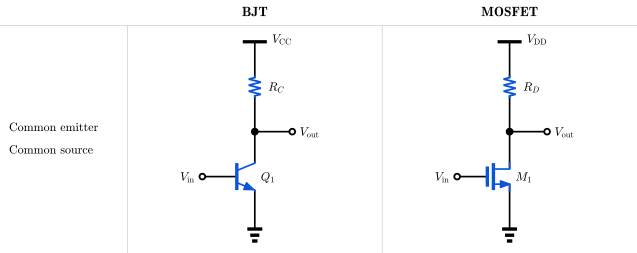
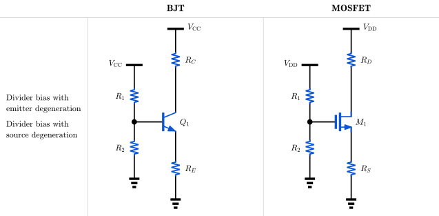
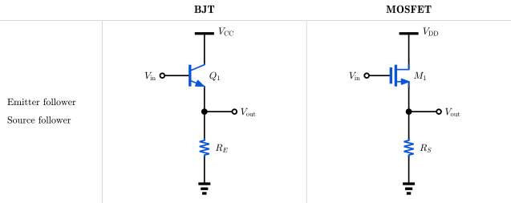
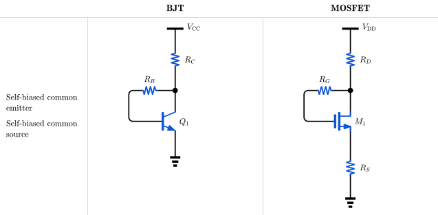
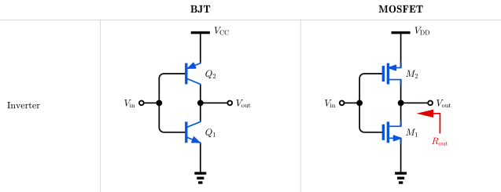
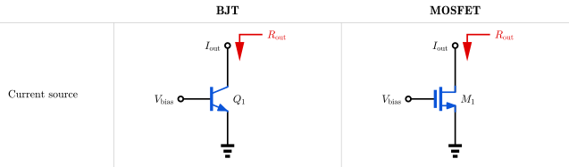
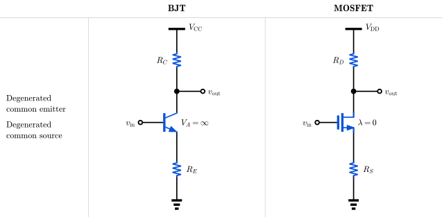

<!DOCTYPE html>


<html lang="en" data-content_root="../../" >

  <head>
    <meta charset="utf-8" />
    <meta name="viewport" content="width=device-width, initial-scale=1.0" /><meta name="viewport" content="width=device-width, initial-scale=1" />

    <title>BJT and MOSFET Problem Bank: Bias &#8212; Intelligent Visual Computing</title>
  
  
  
  <script data-cfasync="false">
    document.documentElement.dataset.mode = localStorage.getItem("mode") || "";
    document.documentElement.dataset.theme = localStorage.getItem("theme") || "";
  </script>
  <!--
    this give us a css class that will be invisible only if js is disabled
  -->
  <noscript>
    <style>
      .pst-js-only { display: none !important; }

    </style>
  </noscript>
  
  <!-- Loaded before other Sphinx assets -->
  <link href="../../_static/styles/theme.css?digest=8878045cc6db502f8baf" rel="stylesheet" />
<link href="../../_static/styles/pydata-sphinx-theme.css?digest=8878045cc6db502f8baf" rel="stylesheet" />

    <link rel="stylesheet" type="text/css" href="../../_static/pygments.css?v=03e43079" />
    <link rel="stylesheet" type="text/css" href="../../_static/styles/sphinx-book-theme.css?v=3c74b3bc" />
    <link rel="stylesheet" type="text/css" href="../../_static/togglebutton.css?v=13237357" />
    <link rel="stylesheet" type="text/css" href="../../_static/copybutton.css?v=76b2166b" />
    <link rel="stylesheet" type="text/css" href="../../_static/mystnb.11b39860a7a0cbfd473a3ad8a317855267ff0bd372690045ca344a6b62be495e.css" />
    <link rel="stylesheet" type="text/css" href="../../_static/sphinx-thebe.css?v=4fa983c6" />
    <link rel="stylesheet" type="text/css" href="../../_static/sphinx-design.min.css?v=6a604523" />
    <link rel="stylesheet" type="text/css" href="../../_static/custom.css?v=c171d37b" />
  
  <!-- So that users can add custom icons -->
  <script src="../../_static/scripts/fontawesome.js?digest=8878045cc6db502f8baf"></script>
  <!-- Pre-loaded scripts that we'll load fully later -->
  <link rel="preload" as="script" href="../../_static/scripts/bootstrap.js?digest=8878045cc6db502f8baf" />
<link rel="preload" as="script" href="../../_static/scripts/pydata-sphinx-theme.js?digest=8878045cc6db502f8baf" />

    <script src="../../_static/documentation_options.js?v=9eb32ce0"></script>
    <script src="../../_static/doctools.js?v=9a2dae69"></script>
    <script src="../../_static/sphinx_highlight.js?v=dc90522c"></script>
    <script src="../../_static/clipboard.min.js?v=a7894cd8"></script>
    <script src="../../_static/copybutton.js?v=f281be69"></script>
    <script src="../../_static/scripts/sphinx-book-theme.js?v=fab101a9"></script>
    <script>let toggleHintShow = 'Click to show';</script>
    <script>let toggleHintHide = 'Click to hide';</script>
    <script>let toggleOpenOnPrint = 'true';</script>
    <script src="../../_static/togglebutton.js?v=4a39c7ea"></script>
    <script>var togglebuttonSelector = '.toggle, .admonition.dropdown';</script>
    <script data-sd-tabs-storage-prefix="sphinx-design-tab-id-" src="../../_static/design-tabs.js?v=fcb327ea"></script>
    <script>const THEBE_JS_URL = "https://unpkg.com/thebe@0.8.2/lib/index.js"; const thebe_selector = ".thebe,.cell"; const thebe_selector_input = "pre"; const thebe_selector_output = ".output, .cell_output"</script>
    <script async="async" src="../../_static/sphinx-thebe.js?v=c100c467"></script>
    <script>var togglebuttonSelector = '.toggle, .admonition.dropdown';</script>
    <script>const THEBE_JS_URL = "https://unpkg.com/thebe@0.8.2/lib/index.js"; const thebe_selector = ".thebe,.cell"; const thebe_selector_input = "pre"; const thebe_selector_output = ".output, .cell_output"</script>
    <script>window.MathJax = {"options": {"processHtmlClass": "tex2jax_process|mathjax_process|math|output_area"}}</script>
    <script defer="defer" src="https://cdn.jsdelivr.net/npm/mathjax@3/es5/tex-mml-chtml.js"></script>
    <script>DOCUMENTATION_OPTIONS.pagename = 'courses/fme/bank_bias';</script>
    <link rel="index" title="Index" href="../../genindex.html" />
    <link rel="search" title="Search" href="../../search.html" />
    <link rel="next" title="BJT and MOSFET Problem Bank: Amplifier Stages" href="bank_stages.html" />
    <link rel="prev" title="BJT and MOSFET Problem Bank: One Transistor" href="bank_one.html" />
  <meta name="viewport" content="width=device-width, initial-scale=1"/>
  <meta name="docsearch:language" content="en"/>
  <meta name="docsearch:version" content="" />
  </head>
  
  
  <body data-bs-spy="scroll" data-bs-target=".bd-toc-nav" data-offset="180" data-bs-root-margin="0px 0px -60%" data-default-mode="">

  
  
  <div id="pst-skip-link" class="skip-link d-print-none"><a href="#main-content">Skip to main content</a></div>
  
  <div id="pst-scroll-pixel-helper"></div>
  
  <button type="button" class="btn rounded-pill" id="pst-back-to-top">
    <i class="fa-solid fa-arrow-up"></i>Back to top</button>

  
  <dialog id="pst-search-dialog">
    
<form class="bd-search d-flex align-items-center"
      action="../../search.html"
      method="get">
  <i class="fa-solid fa-magnifying-glass"></i>
  <input type="search"
         class="form-control"
         name="q"
         placeholder="Search this book..."
         aria-label="Search this book..."
         autocomplete="off"
         autocorrect="off"
         autocapitalize="off"
         spellcheck="false"/>
  <span class="search-button__kbd-shortcut"><kbd class="kbd-shortcut__modifier">Ctrl</kbd>+<kbd>K</kbd></span>
</form>
  </dialog>

  <div class="pst-async-banner-revealer d-none">
  <aside id="bd-header-version-warning" class="d-none d-print-none" aria-label="Version warning"></aside>
</div>

  
    <header class="bd-header navbar navbar-expand-lg bd-navbar d-print-none">
    </header>
  

  <div class="bd-container">
    <div class="bd-container__inner bd-page-width">
      
      
      
      <dialog id="pst-primary-sidebar-modal"></dialog>
      <div id="pst-primary-sidebar" class="bd-sidebar-primary bd-sidebar">
        

  
  <div class="sidebar-header-items sidebar-primary__section">
    
    
    
    
  </div>
  
    <div class="sidebar-primary-items__start sidebar-primary__section">
        <div class="sidebar-primary-item">

  
    
  

<a class="navbar-brand logo" href="../../home.html">
  
  
  
  
  
    
    
      
    
    
    
    
  
  
</a></div>
        <div class="sidebar-primary-item">

<button class="btn search-button-field search-button__button pst-js-only" title="Search" aria-label="Search" data-bs-placement="bottom" data-bs-toggle="tooltip">
 <i class="fa-solid fa-magnifying-glass"></i>
 <span class="search-button__default-text">Search</span>
 <span class="search-button__kbd-shortcut"><kbd class="kbd-shortcut__modifier">Ctrl</kbd>+<kbd class="kbd-shortcut__modifier">K</kbd></span>
</button></div>
        <div class="sidebar-primary-item"><nav class="bd-links bd-docs-nav" aria-label="Main">
    <div class="bd-toc-item navbar-nav active">
        
        <ul class="nav bd-sidenav bd-sidenav__home-link">
            <li class="toctree-l1">
                <a class="reference internal" href="../../home.html">
                    Welcome
                </a>
            </li>
        </ul>
        <p aria-level="2" class="caption" role="heading"><span class="caption-text">Digital Signal Processing</span></p>
<ul class="nav bd-sidenav">
<li class="toctree-l1"><a class="reference internal" href="../dsp/signals.html">Signals and Sequences</a></li>
<li class="toctree-l1"><a class="reference internal" href="../dsp/systems.html">Systems and Transformations</a></li>
</ul>
<p aria-level="2" class="caption" role="heading"><span class="caption-text">Fundamentals of Microelectronics</span></p>
<ul class="current nav bd-sidenav">
<li class="toctree-l1"><a class="reference internal" href="index.html">BJT and MOSFET Circuits</a></li>
<li class="toctree-l1"><a class="reference internal" href="problems.html">BJT and MOSFET Problem Sets</a></li>
<li class="toctree-l1"><a class="reference internal" href="bank_one.html">BJT and MOSFET Problem Bank: One Transistor</a></li>
<li class="toctree-l1 current active"><a class="current reference internal" href="#">BJT and MOSFET Problem Bank: Bias</a></li>
<li class="toctree-l1"><a class="reference internal" href="bank_stages.html">BJT and MOSFET Problem Bank: Amplifier Stages</a></li>
<li class="toctree-l1"><a class="reference internal" href="bank_mirrors.html">BJT and MOSFET Problem Bank: Cascodes and Current Mirrors</a></li>
<li class="toctree-l1"><a class="reference internal" href="bank_pairs.html">BJT and MOSFET Problem Bank: Differential Pairs</a></li>
<li class="toctree-l1"><a class="reference internal" href="bank_other.html">BJT and MOSFET Problem Bank: Other Items</a></li>
</ul>
<p aria-level="2" class="caption" role="heading"><span class="caption-text">Medical Image Processing</span></p>
<ul class="nav bd-sidenav">
<li class="toctree-l1"><a class="reference internal" href="../mip/intro.html">Introduction</a></li>
<li class="toctree-l1"><a class="reference internal" href="../mip/sigsys.html">Signals and Systems</a></li>
<li class="toctree-l1"><a class="reference internal" href="../mip/xr.html">X-ray (XR) Imaging</a></li>
<li class="toctree-l1"><a class="reference internal" href="../mip/ct.html">Computed Tomography (CT)</a></li>
<li class="toctree-l1"><a class="reference internal" href="../mip/mr.html">Magnetic Resonance (MR) Imaging</a></li>
<li class="toctree-l1"><a class="reference internal" href="../mip/pt.html">Positron Emission Tomography (PET)</a></li>
<li class="toctree-l1"><a class="reference internal" href="../mip/es.html">Endoscopy (ES) Imaging</a></li>
<li class="toctree-l1"><a class="reference internal" href="../mip/histo.html">Histology / Histopathology Imaging</a></li>
<li class="toctree-l1"><a class="reference internal" href="../mip/em.html">Electron Microscopy (EM) Imaging</a></li>
</ul>
<p aria-level="2" class="caption" role="heading"><span class="caption-text">Simulation</span></p>
<ul class="nav bd-sidenav">
<li class="toctree-l1"><a class="reference internal" href="../sim/isaacsim101.html">IsaacSim101</a></li>
<li class="toctree-l1"><a class="reference internal" href="../sim/chapter0.html">Isaac Sim on a DGX Spark</a></li>
<li class="toctree-l1"><a class="reference internal" href="../sim/chapter1.html">Overview of Visualization</a></li>
</ul>
<p aria-level="2" class="caption" role="heading"><span class="caption-text">Research</span></p>
<ul class="nav bd-sidenav">
<li class="toctree-l1 has-children"><a class="reference internal" href="../../research/connectome/index.html">Connectome Agent</a><details><summary><span class="toctree-toggle" role="presentation"><i class="fa-solid fa-chevron-down"></i></span></summary><ul>
<li class="toctree-l2"><a class="reference internal" href="../../research/connectome/representation.html">Representation</a></li>
<li class="toctree-l2"><a class="reference internal" href="../../research/connectome/supervision.html">Supervision</a></li>
<li class="toctree-l2"><a class="reference internal" href="../../research/connectome/features.html">Features</a></li>
<li class="toctree-l2"><a class="reference internal" href="../../research/connectome/multiscale.html">Multi-scale</a></li>
<li class="toctree-l2"><a class="reference internal" href="../../research/connectome/agent.html">Agent</a></li>
</ul>
</details></li>
</ul>

    </div>
</nav></div>
    </div>
  
  
  <div class="sidebar-primary-items__end sidebar-primary__section">
      <div class="sidebar-primary-item">
<div id="ethical-ad-placement"
      class="flat"
      data-ea-publisher="readthedocs"
      data-ea-type="readthedocs-sidebar"
      data-ea-manual="true">
</div></div>
  </div>


      </div>
      
      <main id="main-content" class="bd-main" role="main">
        
        

<div class="sbt-scroll-pixel-helper"></div>

          <div class="bd-content">
            <div class="bd-article-container">
              
              <div class="bd-header-article d-print-none">
<div class="header-article-items header-article__inner">
  
    <div class="header-article-items__start">
      
        <div class="header-article-item"><button class="sidebar-toggle primary-toggle btn btn-sm" title="Toggle primary sidebar" data-bs-placement="bottom" data-bs-toggle="tooltip">
  <span class="fa-solid fa-bars"></span>
</button></div>
      
    </div>
  
  
    <div class="header-article-items__end">
      
        <div class="header-article-item">

<div class="article-header-buttons">


<div class="dropdown dropdown-source-buttons">
  <button class="btn dropdown-toggle" type="button" data-bs-toggle="dropdown" aria-expanded="false" aria-label="Source repositories">
    <i class="fab fa-github"></i>
  </button>
  <ul class="dropdown-menu">
      
      
      
      <li><a href="https://github.com/tmquan/ivcl" target="_blank"
   class="btn btn-sm btn-source-repository-button dropdown-item"
   title="Source repository"
   data-bs-placement="left" data-bs-toggle="tooltip"
>
  

<span class="btn__icon-container">
  <i class="fab fa-github"></i>
  </span>
<span class="btn__text-container">Repository</span>
</a>
</li>
      
      
      
      
      <li><a href="https://github.com/tmquan/ivcl/issues/new?title=Issue%20on%20page%20%2Fcourses/fme/bank_bias.html&body=Your%20issue%20content%20here." target="_blank"
   class="btn btn-sm btn-source-issues-button dropdown-item"
   title="Open an issue"
   data-bs-placement="left" data-bs-toggle="tooltip"
>
  

<span class="btn__icon-container">
  <i class="fas fa-lightbulb"></i>
  </span>
<span class="btn__text-container">Open issue</span>
</a>
</li>
      
  </ul>
</div>


<div class="dropdown dropdown-download-buttons">
  <button class="btn dropdown-toggle" type="button" data-bs-toggle="dropdown" aria-expanded="false" aria-label="Download this page">
    <i class="fas fa-download"></i>
  </button>
  <ul class="dropdown-menu">
      
      
      
      <li><a href="../../_sources/courses/fme/bank_bias.ipynb" target="_blank"
   class="btn btn-sm btn-download-source-button dropdown-item"
   title="Download source file"
   data-bs-placement="left" data-bs-toggle="tooltip"
>
  

<span class="btn__icon-container">
  <i class="fas fa-file"></i>
  </span>
<span class="btn__text-container">.ipynb</span>
</a>
</li>
      
      
      
      
      <li>
<button onclick="window.print()"
  class="btn btn-sm btn-download-pdf-button dropdown-item"
  title="Print to PDF"
  data-bs-placement="left" data-bs-toggle="tooltip"
>
  

<span class="btn__icon-container">
  <i class="fas fa-file-pdf"></i>
  </span>
<span class="btn__text-container">.pdf</span>
</button>
</li>
      
  </ul>
</div>


<button onclick="toggleFullScreen()"
  class="btn btn-sm btn-fullscreen-button pst-navbar-icon"
  title="Fullscreen mode"
  data-bs-placement="bottom" data-bs-toggle="tooltip"
>
  

<span class="btn__icon-container">
  <i class="fas fa-expand"></i>
  </span>

</button>


<button class="btn btn-sm nav-link pst-navbar-icon theme-switch-button pst-js-only" aria-label="Color mode" data-bs-title="Color mode"  data-bs-placement="bottom" data-bs-toggle="tooltip">
  <i class="theme-switch fa-solid fa-sun                fa-lg" data-mode="light" title="Light"></i>
  <i class="theme-switch fa-solid fa-moon               fa-lg" data-mode="dark"  title="Dark"></i>
  <i class="theme-switch fa-solid fa-circle-half-stroke fa-lg" data-mode="auto"  title="System Settings"></i>
</button>


<button class="btn btn-sm pst-navbar-icon search-button search-button__button pst-js-only" title="Search" aria-label="Search" data-bs-placement="bottom" data-bs-toggle="tooltip">
    <i class="fa-solid fa-magnifying-glass fa-lg"></i>
</button>
<button class="sidebar-toggle secondary-toggle btn btn-sm pst-navbar-icon" title="Toggle secondary sidebar" data-bs-placement="bottom" data-bs-toggle="tooltip">
    <span class="fa-solid fa-list"></span>
</button>
</div></div>
      
    </div>
  
</div>
</div>
              
              

<div id="jb-print-docs-body" class="onlyprint">
    <h1>BJT and MOSFET Problem Bank: Bias</h1>
    <!-- Table of contents -->
    <div id="print-main-content">
        <div id="jb-print-toc">
            
            <div>
                <h2> Contents </h2>
            </div>
            <nav aria-label="Page">
                <ul class="visible nav section-nav flex-column">
<li class="toc-h2 nav-item toc-entry"><a class="reference internal nav-link" href="#simple-bias">Simple Bias</a><ul class="nav section-nav flex-column">
<li class="toc-h3 nav-item toc-entry"><a class="reference internal nav-link" href="#common-emitter-common-source">Common emitter / Common source</a></li>
<li class="toc-h3 nav-item toc-entry"><a class="reference internal nav-link" href="#other-circuits">Other Circuits</a></li>
</ul>
</li>
<li class="toc-h2 nav-item toc-entry"><a class="reference internal nav-link" href="#divider-bias-with-degeneration">Divider Bias with Degeneration</a><ul class="nav section-nav flex-column">
<li class="toc-h3 nav-item toc-entry"><a class="reference internal nav-link" href="#divider-bias-with-emitter-degeneration-divider-bias-with-source-degeneration">Divider bias with emitter degeneration / Divider bias with source degeneration</a></li>
<li class="toc-h3 nav-item toc-entry"><a class="reference internal nav-link" href="#emitter-follower-source-follower">Emitter follower / Source follower</a></li>
<li class="toc-h3 nav-item toc-entry"><a class="reference internal nav-link" href="#id1">Other Circuits</a></li>
</ul>
</li>
<li class="toc-h2 nav-item toc-entry"><a class="reference internal nav-link" href="#self-bias">Self-Bias</a><ul class="nav section-nav flex-column">
<li class="toc-h3 nav-item toc-entry"><a class="reference internal nav-link" href="#self-biased-common-emitter-self-biased-common-source">Self-biased common emitter / Self-biased common source</a></li>
<li class="toc-h3 nav-item toc-entry"><a class="reference internal nav-link" href="#id2">Other Circuits</a></li>
</ul>
</li>
<li class="toc-h2 nav-item toc-entry"><a class="reference internal nav-link" href="#other-dc-circuits">Other DC Circuits</a><ul class="nav section-nav flex-column">
<li class="toc-h3 nav-item toc-entry"><a class="reference internal nav-link" href="#id3">Divider bias with emitter degeneration / Divider bias with source degeneration</a></li>
<li class="toc-h3 nav-item toc-entry"><a class="reference internal nav-link" href="#inverter">Inverter</a></li>
<li class="toc-h3 nav-item toc-entry"><a class="reference internal nav-link" href="#current-source">Current source</a></li>
<li class="toc-h3 nav-item toc-entry"><a class="reference internal nav-link" href="#id4">Other Circuits</a></li>
</ul>
</li>
<li class="toc-h2 nav-item toc-entry"><a class="reference internal nav-link" href="#bias-design">Bias Design</a><ul class="nav section-nav flex-column">
<li class="toc-h3 nav-item toc-entry"><a class="reference internal nav-link" href="#id5">Divider bias with emitter degeneration / Divider bias with source degeneration</a></li>
<li class="toc-h3 nav-item toc-entry"><a class="reference internal nav-link" href="#id6">Common emitter / Common source</a></li>
<li class="toc-h3 nav-item toc-entry"><a class="reference internal nav-link" href="#id7">Self-biased common emitter / Self-biased common source</a></li>
<li class="toc-h3 nav-item toc-entry"><a class="reference internal nav-link" href="#degenerated-common-emitter-degenerated-common-source">Degenerated common emitter / Degenerated common source</a></li>
<li class="toc-h3 nav-item toc-entry"><a class="reference internal nav-link" href="#id8">Other Circuits</a></li>
</ul>
</li>
</ul>
            </nav>
        </div>
    </div>
</div>

              
                
<div id="searchbox"></div>
                <article class="bd-article">
                  
  <section class="tex2jax_ignore mathjax_ignore" id="bjt-and-mosfet-problem-bank-bias">
<h1>BJT and MOSFET Problem Bank: Bias<a class="headerlink" href="#bjt-and-mosfet-problem-bank-bias" title="Link to this heading">#</a></h1>
<p>Every worked example and every problem of this kind in two textbooks, each solved step by step: Razavi, <em>Fundamentals of Microelectronics</em> (chapters 4 to 7, 9 and 10) and Sedra/Smith, <em>Microelectronic Circuits</em>, eighth international edition (chapters 4 to 8). The statements are in our words and the numbers of an item are those of the book. This page holds 180 of the 1219 items; the natures and their solution patterns are introduced on <a class="reference internal" href="problems.html"><span class="std std-doc">BJT and MOSFET Problem Sets</span></a>.</p>
<p>Inside a nature, the items whose circuit we have drawn come under that drawing; the others describe their circuit in words. An item that repeats another with other values follows it and says so. Every numeric result was recomputed by a program. The last line of an item says how it was checked: against the answer the book or its solutions manual publishes, or, where none is published, by computation alone. An item marked <em>needs review</em> rests on a reading of the book that we could not confirm.</p>
<div class="pst-scrollable-table-container"><table class="table">
<thead>
<tr class="row-odd"><th class="head"><p>Nature</p></th>
<th class="head"><p>Razavi, examples</p></th>
<th class="head"><p>Razavi, problems</p></th>
<th class="head"><p>Sedra/Smith, exercises</p></th>
<th class="head"><p>Sedra/Smith, problems</p></th>
</tr>
</thead>
<tbody>
<tr class="row-even"><td><p>Simple Bias</p></td>
<td><p>8</p></td>
<td><p>13</p></td>
<td><p>3</p></td>
<td><p>9</p></td>
</tr>
<tr class="row-odd"><td><p>Divider Bias with Degeneration</p></td>
<td><p>2</p></td>
<td><p>4</p></td>
<td><p>2</p></td>
<td><p>9</p></td>
</tr>
<tr class="row-even"><td><p>Self-Bias</p></td>
<td><p>2</p></td>
<td><p>9</p></td>
<td><p>3</p></td>
<td><p>8</p></td>
</tr>
<tr class="row-odd"><td><p>Other DC Circuits</p></td>
<td><p>7</p></td>
<td><p>24</p></td>
<td><p>7</p></td>
<td><p>22</p></td>
</tr>
<tr class="row-even"><td><p>Bias Design</p></td>
<td><p>5</p></td>
<td><p>9</p></td>
<td><p>10</p></td>
<td><p>24</p></td>
</tr>
</tbody>
</table>
</div>
<div class="cell tag_hide-input docutils container">
<details class="admonition hide above-input">
<summary aria-label="Toggle hidden content">
<p class="collapsed admonition-title">Show code cell source</p>
<p class="expanded admonition-title">Hide code cell source</p>
</summary>
<div class="cell_input docutils container">
<div class="highlight-ipython3 notranslate"><div class="highlight"><pre><span></span><span class="c1"># HIDE/SHOW</span>
<span class="kn">import</span><span class="w"> </span><span class="nn">warnings</span>
<span class="n">warnings</span><span class="o">.</span><span class="n">filterwarnings</span><span class="p">(</span><span class="s1">'ignore'</span><span class="p">)</span>

<span class="kn">import</span><span class="w"> </span><span class="nn">matplotlib.pyplot</span><span class="w"> </span><span class="k">as</span><span class="w"> </span><span class="nn">plt</span>
<span class="o">%</span><span class="k">matplotlib</span> inline
<span class="o">%</span><span class="k">config</span> InlineBackend.figure_formats = ['svg']
<span class="o">%</span><span class="k">config</span> InlineBackend.print_figure_kwargs = {'bbox_inches': None}   # keep every figure at its full width
<span class="n">plt</span><span class="o">.</span><span class="n">rcParams</span><span class="p">[</span><span class="s1">'svg.hashsalt'</span><span class="p">]</span> <span class="o">=</span> <span class="s1">'fme'</span>            <span class="c1"># reproducible SVG output</span>

<span class="kn">from</span><span class="w"> </span><span class="nn">schematic</span><span class="w"> </span><span class="kn">import</span> <span class="n">show</span>
<span class="kn">from</span><span class="w"> </span><span class="nn">schematic</span><span class="w"> </span><span class="kn">import</span> <span class="n">circuits</span> <span class="k">as</span> <span class="n">C</span>
</pre></div>
</div>
</div>
</details>
</div>
<section id="simple-bias">
<h2>Simple Bias<a class="headerlink" href="#simple-bias" title="Link to this heading">#</a></h2>
<section id="common-emitter-common-source">
<h3>Common emitter / Common source<a class="headerlink" href="#common-emitter-common-source" title="Link to this heading">#</a></h3>
<div class="cell tag_hide-input docutils container">
<details class="admonition hide above-input">
<summary aria-label="Toggle hidden content">
<p class="collapsed admonition-title">Show code cell source</p>
<p class="expanded admonition-title">Hide code cell source</p>
</summary>
<div class="cell_input docutils container">
<div class="highlight-ipython3 notranslate"><div class="highlight"><pre><span></span><span class="c1"># HIDE/SHOW</span>
<span class="n">show</span><span class="p">(</span><span class="n">C</span><span class="o">.</span><span class="n">role_amplifier</span><span class="p">)</span>
</pre></div>
</div>
</div>
</details>
<div class="cell_output docutils container">

</div>
</div>
<p><strong>Razavi, Example 4.5</strong> (BJT)</p>
<p>An npn transistor <span class="math notranslate nohighlight">\(Q_1\)</span> has <span class="math notranslate nohighlight">\(I_S=5\times10^{-16}\,\mathrm{A}\)</span>. Its emitter is grounded and a <span class="math notranslate nohighlight">\(750\,\mathrm{mV}\)</span> battery is connected between base and ground. The collector is joined to a <span class="math notranslate nohighlight">\(3\,\mathrm{V}\)</span> supply through <span class="math notranslate nohighlight">\(R_L=1\,\mathrm{k}\Omega\)</span>; <span class="math notranslate nohighlight">\(V_{out}\)</span> is the collector voltage. Find <span class="math notranslate nohighlight">\(I_C\)</span> and <span class="math notranslate nohighlight">\(V_{out}\)</span> and confirm the active mode (Early effect ignored).</p>
<p>Given: <span class="math notranslate nohighlight">\(I_S=5\times10^{-16}\,\mathrm{A}\)</span>, <span class="math notranslate nohighlight">\(V_{BE}=750\,\mathrm{mV}\)</span>, <span class="math notranslate nohighlight">\(R_L=1\,\mathrm{k}\Omega\)</span>, <span class="math notranslate nohighlight">\(V_{CC}=3\,\mathrm{V}\)</span>, <span class="math notranslate nohighlight">\(V_T=26\,\mathrm{mV}\)</span></p>
<ol class="arabic simple">
<li><p><strong>Collector current.</strong> <span class="math notranslate nohighlight">\(I_C=I_S\exp\dfrac{V_{BE}}{V_T}=5\times10^{-16}\,\mathrm{A}\times\exp\dfrac{0.75}{0.026}=1.69\,\mathrm{mA}\)</span>.</p></li>
<li><p><strong>Drop on the load.</strong> <span class="math notranslate nohighlight">\(R_LI_C=1\,\mathrm{k}\Omega\times1.69\,\mathrm{mA}=1.69\,\mathrm{V}\)</span>.</p></li>
<li><p><strong>Output voltage.</strong> <span class="math notranslate nohighlight">\(V_{out}=V_{CC}-R_LI_C=3\,\mathrm{V}-1.69\,\mathrm{V}=1.31\,\mathrm{V}\)</span>.</p></li>
<li><p><strong>Check the region.</strong> <span class="math notranslate nohighlight">\(V_{out}=1.31\,\mathrm{V}&gt;V_{BE}=0.75\,\mathrm{V}\)</span>, so the collector is above the base and the base-collector junction is reverse-biased: active mode, as assumed.</p></li>
</ol>
<p><strong>Result.</strong> <span class="math notranslate nohighlight">\(I_C=1.69\,\mathrm{mA}\)</span>, <span class="math notranslate nohighlight">\(V_{out}=1.31\,\mathrm{V}\)</span> (active mode)</p>
<p>Checked: agrees with the answer in the book.</p>
<p><strong>Razavi, Example 4.7</strong> (BJT)</p>
<p>An npn transistor <span class="math notranslate nohighlight">\(Q_1\)</span> with <span class="math notranslate nohighlight">\(I_S=5\times10^{-17}\,\mathrm{A}\)</span> and <span class="math notranslate nohighlight">\(\beta=100\)</span> has its emitter grounded and a <span class="math notranslate nohighlight">\(800\,\mathrm{mV}\)</span> battery between base and ground. The collector is connected to a <span class="math notranslate nohighlight">\(2\,\mathrm{V}\)</span> supply through <span class="math notranslate nohighlight">\(R_C=500\,\Omega\)</span>; call the collector node <span class="math notranslate nohighlight">\(X\)</span>. (a) Find the terminal currents and voltages and verify that the transistor is in the active mode. (b) Find the largest <span class="math notranslate nohighlight">\(R_C\)</span> that still allows active operation.</p>
<p>Given: <span class="math notranslate nohighlight">\(I_S=5\times10^{-17}\,\mathrm{A}\)</span>, <span class="math notranslate nohighlight">\(\beta=100\)</span>, <span class="math notranslate nohighlight">\(V_{BE}=0.8\,\mathrm{V}\)</span>, <span class="math notranslate nohighlight">\(V_{CC}=2\,\mathrm{V}\)</span>, <span class="math notranslate nohighlight">\(R_C=500\,\Omega\)</span>, <span class="math notranslate nohighlight">\(V_T=26\,\mathrm{mV}\)</span></p>
<ol class="arabic simple">
<li><p><strong>(a) Currents.</strong> <span class="math notranslate nohighlight">\(I_C=I_S\exp(V_{BE}/V_T)=1.153\,\mathrm{mA}\)</span>; <span class="math notranslate nohighlight">\(I_B=I_C/\beta=11.5\,\mu\mathrm{A}\)</span>; <span class="math notranslate nohighlight">\(I_E=I_C+I_B=1.165\,\mathrm{mA}\)</span>.</p></li>
<li><p><strong>(a) Voltages.</strong> <span class="math notranslate nohighlight">\(V_B=0.8\,\mathrm{V}\)</span>, <span class="math notranslate nohighlight">\(V_E=0\)</span>. KVL on the supply, <span class="math notranslate nohighlight">\(R_C\)</span> and the transistor: <span class="math notranslate nohighlight">\(V_{CC}=R_CI_C+V_X\)</span>.</p></li>
<li><p><strong>(a) Collector voltage.</strong> <span class="math notranslate nohighlight">\(V_X=2\,\mathrm{V}-500\,\Omega\times1.153\,\mathrm{mA}=2-0.577=1.42\,\mathrm{V}\)</span>.</p></li>
<li><p><strong>(a) Region.</strong> <span class="math notranslate nohighlight">\(V_X=1.42\,\mathrm{V}&gt;V_B=0.8\,\mathrm{V}\)</span>: the base-collector junction is reverse-biased, so the transistor is in the active mode.</p></li>
<li><p><strong>(b) Edge of the active region.</strong> As <span class="math notranslate nohighlight">\(R_C\)</span> grows, <span class="math notranslate nohighlight">\(V_X\)</span> falls. Active operation ends when the B-C junction reaches zero bias, <span class="math notranslate nohighlight">\(V_X=V_B=0.8\,\mathrm{V}\)</span>.</p></li>
<li><p><strong>(b) Solve for <span class="math notranslate nohighlight">\(R_C\)</span>.</strong> <span class="math notranslate nohighlight">\(R_C=\dfrac{V_{CC}-V_X}{I_C}=\dfrac{2-0.8}{1.153\,\mathrm{mA}}=1041\,\Omega\)</span>. The collector current does not change with <span class="math notranslate nohighlight">\(R_C\)</span> while the device stays active.</p></li>
</ol>
<p><strong>Result.</strong> <span class="math notranslate nohighlight">\(I_C=1.153\,\mathrm{mA}\)</span>, <span class="math notranslate nohighlight">\(I_B=11.5\,\mu\mathrm{A}\)</span>, <span class="math notranslate nohighlight">\(I_E=1.165\,\mathrm{mA}\)</span>, <span class="math notranslate nohighlight">\(V_X=1.42\,\mathrm{V}\)</span> (active); <span class="math notranslate nohighlight">\(R_{C,max}=1041\,\Omega\)</span></p>
<p>Checked: agrees with the answer in the book.</p>
<p><strong>Razavi, Example 5.5</strong> (BJT)</p>
<p>An npn transistor with <span class="math notranslate nohighlight">\(I_S=6\times10^{-16}\,\mathrm{A}\)</span> has its emitter grounded and a <span class="math notranslate nohighlight">\(1\,\mathrm{k}\Omega\)</span> resistor from the collector to <span class="math notranslate nohighlight">\(V_{CC}\)</span>. A microphone, which produces no dc level, is connected directly between base and ground, so the base-emitter voltage equals the microphone signal. If the signal peaks at <span class="math notranslate nohighlight">\(20\,\mathrm{mV}\)</span>, what is the peak output signal at the collector? Use <span class="math notranslate nohighlight">\(V_T=26\,\mathrm{mV}\)</span>.</p>
<p>Given: <span class="math notranslate nohighlight">\(I_S=6\times10^{-16}\,\mathrm{A}\)</span>, <span class="math notranslate nohighlight">\(R_C=1\,\mathrm{k}\Omega\)</span>, <span class="math notranslate nohighlight">\(v_{BE,peak}=20\,\mathrm{mV}\)</span>, no dc bias, <span class="math notranslate nohighlight">\(V_T=26\,\mathrm{mV}\)</span></p>
<ol class="arabic simple">
<li><p><strong>Bias situation.</strong> The microphone has no dc component, so <span class="math notranslate nohighlight">\(V_{BE}=0\)</span> at rest and the bias collector current is essentially zero (about <span class="math notranslate nohighlight">\(I_S\)</span>); hence <span class="math notranslate nohighlight">\(g_m=I_C/V_T\approx0\)</span>.</p></li>
<li><p><strong>Collector current at the signal peak.</strong> <span class="math notranslate nohighlight">\(I_C=I_S\exp\dfrac{V_{BE}}{V_T}=6\times10^{-16}\exp\dfrac{20}{26}=1.29\times10^{-15}\,\mathrm{A}\)</span>.</p></li>
<li><p><strong>Output voltage.</strong> <span class="math notranslate nohighlight">\(R_CI_C=1\,\mathrm{k}\Omega\times1.29\times10^{-15}\,\mathrm{A}=1.29\times10^{-12}\,\mathrm{V}\)</span>.</p></li>
<li><p><strong>More careful view.</strong> Measured from the rest value <span class="math notranslate nohighlight">\(I_S\)</span> the change is <span class="math notranslate nohighlight">\(I_S(e^{20/26}-1)=6.95\times10^{-16}\,\mathrm{A}\)</span>, giving <span class="math notranslate nohighlight">\(0.695\times10^{-12}\,\mathrm{V}\)</span>: still of order a picovolt.</p></li>
<li><p><strong>Conclusion.</strong> The output is about <span class="math notranslate nohighlight">\(10^{-12}\,\mathrm{V}\)</span>, i.e. no amplification at all, because with no bias the transconductance is zero. The transistor must be biased first.</p></li>
</ol>
<p><strong>Result.</strong> Peak output about <span class="math notranslate nohighlight">\(1.3\times10^{-12}\,\mathrm{V}\)</span> (<span class="math notranslate nohighlight">\(I_C\approx1.29\times10^{-15}\,\mathrm{A}\)</span>): essentially none</p>
<p>Checked: agrees with the answer in the book.</p>
<p><strong>Razavi, Example 6.6</strong> (MOSFET)</p>
<p>An NMOS has its source grounded and its gate held at <span class="math notranslate nohighlight">\(1\,\mathrm{V}\)</span>. The drain is connected to <span class="math notranslate nohighlight">\(V_{DD}=1.8\,\mathrm{V}\)</span> through <span class="math notranslate nohighlight">\(R_D=5\,\mathrm{k}\Omega\)</span> (drain node <span class="math notranslate nohighlight">\(X\)</span>). Find the bias current and check that the device is saturated. Then find the change of <span class="math notranslate nohighlight">\(V_X\)</span> when the gate rises by <span class="math notranslate nohighlight">\(10\,\mathrm{mV}\)</span>, with <span class="math notranslate nohighlight">\(\lambda=0\)</span>.</p>
<p>Given: <span class="math notranslate nohighlight">\(V_{DD}=1.8\,\mathrm{V}\)</span>, <span class="math notranslate nohighlight">\(R_D=5\,\mathrm{k}\Omega\)</span>, <span class="math notranslate nohighlight">\(V_G=1\,\mathrm{V}\)</span>, <span class="math notranslate nohighlight">\(W/L=2/0.18\)</span>, <span class="math notranslate nohighlight">\(\mu_nC_{ox}=100\,\mu\mathrm{A/V^2}\)</span>, <span class="math notranslate nohighlight">\(V_{TH}=0.4\,\mathrm{V}\)</span></p>
<ol class="arabic simple">
<li><p><strong>Assume saturation.</strong> <span class="math notranslate nohighlight">\(I_D=\tfrac12\mu_nC_{ox}\tfrac WL(V_{GS}-V_{TH})^2\)</span> with <span class="math notranslate nohighlight">\(W/L=11.1\)</span> and <span class="math notranslate nohighlight">\(V_{GS}-V_{TH}=0.6\,\mathrm{V}\)</span>.</p></li>
<li><p><strong>Bias current.</strong> <span class="math notranslate nohighlight">\(I_D=\tfrac12(100\,\mu\mathrm{A/V^2})(11.1)(0.36\,\mathrm{V^2})=200\,\mu\mathrm{A}\)</span>.</p></li>
<li><p><strong>Drain voltage.</strong> <span class="math notranslate nohighlight">\(V_X=V_{DD}-R_DI_D=1.8-5\,\mathrm{k}\Omega\cdot200\,\mu\mathrm{A}=0.8\,\mathrm{V}\)</span>.</p></li>
<li><p><strong>Check region.</strong> <span class="math notranslate nohighlight">\(V_{DS}=0.8\,\mathrm{V}&gt;V_{GS}-V_{TH}=0.6\,\mathrm{V}\)</span> (equivalently <span class="math notranslate nohighlight">\(V_G-V_X=0.2\,\mathrm{V}&lt;V_{TH}\)</span>), so saturation holds.</p></li>
<li><p><strong>Gate raised to <span class="math notranslate nohighlight">\(1.01\,\mathrm{V}\)</span>.</strong> <span class="math notranslate nohighlight">\(I_D=\tfrac12(100\,\mu\mathrm{A/V^2})(11.1)(0.61\,\mathrm{V})^2=206.7\,\mu\mathrm{A}\)</span>.</p></li>
<li><p><strong>New drain voltage.</strong> <span class="math notranslate nohighlight">\(V_X=1.8-5\,\mathrm{k}\Omega\cdot206.7\,\mu\mathrm{A}=0.766\,\mathrm{V}\)</span>, still above <span class="math notranslate nohighlight">\(0.61\,\mathrm{V}\)</span>, so still saturated.</p></li>
<li><p><strong>Change.</strong> <span class="math notranslate nohighlight">\(\Delta V_X=0.766-0.8=-34\,\mathrm{mV}\)</span> (about <span class="math notranslate nohighlight">\(-3.4\)</span> times the <span class="math notranslate nohighlight">\(10\,\mathrm{mV}\)</span> input step).</p></li>
</ol>
<p><strong>Result.</strong> <span class="math notranslate nohighlight">\(I_D=200\,\mu\mathrm{A}\)</span>, <span class="math notranslate nohighlight">\(V_X=0.8\,\mathrm{V}\)</span> (saturation); at <span class="math notranslate nohighlight">\(V_G=1.01\,\mathrm{V}\)</span>: <span class="math notranslate nohighlight">\(I_D=206.7\,\mu\mathrm{A}\)</span>, <span class="math notranslate nohighlight">\(V_X=0.766\,\mathrm{V}\)</span>, <span class="math notranslate nohighlight">\(\Delta V_X=-34\,\mathrm{mV}\)</span></p>
<p>Checked: agrees with the answer in the book.</p>
<p><strong>Razavi, Problem 4.26</strong> (BJT)</p>
<p>An npn has its emitter grounded, its base held at <span class="math notranslate nohighlight">\(V_B=0.8\,\mathrm{V}\)</span>, and its collector (node <span class="math notranslate nohighlight">\(X\)</span>) connected to <span class="math notranslate nohighlight">\(V_{CC}=2.5\,\mathrm{V}\)</span> through <span class="math notranslate nohighlight">\(R_C=1\,\mathrm{k}\Omega\)</span>; <span class="math notranslate nohighlight">\(I_S=5\times10^{-17}\,\mathrm{A}\)</span>. Find <span class="math notranslate nohighlight">\(V_X\)</span> for (a) <span class="math notranslate nohighlight">\(V_A=\infty\)</span> and (b) <span class="math notranslate nohighlight">\(V_A=5\,\mathrm{V}\)</span>.</p>
<p>Given: <span class="math notranslate nohighlight">\(V_B=0.8\,\mathrm{V}\)</span>, <span class="math notranslate nohighlight">\(R_C=1\,\mathrm{k}\Omega\)</span>, <span class="math notranslate nohighlight">\(V_{CC}=2.5\,\mathrm{V}\)</span>, <span class="math notranslate nohighlight">\(I_S=5\times10^{-17}\,\mathrm{A}\)</span>; <span class="math notranslate nohighlight">\(V_A=\infty\)</span> or <span class="math notranslate nohighlight">\(5\,\mathrm{V}\)</span></p>
<ol class="arabic simple">
<li><p><strong>Base-emitter law.</strong> <span class="math notranslate nohighlight">\(I_0=I_S\exp(V_B/V_T)=5\times10^{-17}\exp(0.8/0.026)=1.15\,\mathrm{mA}\)</span>.</p></li>
<li><p><strong>(a) No Early effect.</strong> <span class="math notranslate nohighlight">\(I_C=1.15\,\mathrm{mA}\)</span>, <span class="math notranslate nohighlight">\(V_X=V_{CC}-R_CI_C=2.5-1.153=1.35\,\mathrm{V}\)</span> (active, <span class="math notranslate nohighlight">\(V_X&gt;V_B\)</span>).</p></li>
<li><p><strong>(b) Two equations.</strong> <span class="math notranslate nohighlight">\(I_C=I_0(1+V_X/V_A)\)</span> and <span class="math notranslate nohighlight">\(V_X=V_{CC}-R_CI_C\)</span>.</p></li>
<li><p><strong>(b) Solve for VX.</strong> <span class="math notranslate nohighlight">\(V_X=\dfrac{V_{CC}-R_CI_0}{1+R_CI_0/V_A}=\dfrac{2.5-1.153}{1+1.153/5}=1.09\,\mathrm{V}\)</span>.</p></li>
<li><p><strong>(b) Current.</strong> <span class="math notranslate nohighlight">\(I_C=1.153\,\mathrm{mA}\,(1+1.094/5)=1.41\,\mathrm{mA}\)</span>; still active (<span class="math notranslate nohighlight">\(V_X&gt;V_B\)</span>).</p></li>
</ol>
<p><strong>Result.</strong> (a) <span class="math notranslate nohighlight">\(V_X=1.35\,\mathrm{V}\)</span>; (b) <span class="math notranslate nohighlight">\(V_X=1.09\,\mathrm{V}\)</span> (<span class="math notranslate nohighlight">\(I_C=1.41\,\mathrm{mA}\)</span>)</p>
<p>Checked by computation; the book gives no answer.</p>
<p><strong>Sedra/Smith, Exercise 5.11</strong> (MOSFET)</p>
<p>An NMOS transistor with <span class="math notranslate nohighlight">\(V_{tn}=0.5\,\mathrm{V}\)</span> and <span class="math notranslate nohighlight">\(k_n=k_n^\prime W/L=2\,\mathrm{mA/V^2}\)</span> has its source grounded and its gate at <span class="math notranslate nohighlight">\(2\,\mathrm{V}\)</span>. Its drain is connected to a <span class="math notranslate nohighlight">\(2\,\mathrm{V}\)</span> supply through <span class="math notranslate nohighlight">\(R_D=13.1\,\mathrm{k}\Omega\)</span>. Find <span class="math notranslate nohighlight">\(V_{DS}\)</span>, <span class="math notranslate nohighlight">\(I_D\)</span> and the region of operation.</p>
<p>Given: <span class="math notranslate nohighlight">\(V_{DD}=2\,\mathrm{V}\)</span>, <span class="math notranslate nohighlight">\(V_{GS}=2\,\mathrm{V}\)</span>, <span class="math notranslate nohighlight">\(V_{tn}=0.5\,\mathrm{V}\)</span>, <span class="math notranslate nohighlight">\(k_n=2\,\mathrm{mA/V^2}\)</span>, <span class="math notranslate nohighlight">\(R_D=13.1\,\mathrm{k}\Omega\)</span></p>
<ol class="arabic simple">
<li><p><strong>Assume triode.</strong> <span class="math notranslate nohighlight">\(V_{OV}=2-0.5=1.5\,\mathrm{V}\)</span>; <span class="math notranslate nohighlight">\(I_D=k_n\!\left(V_{OV}V_{DS}-\tfrac12V_{DS}^2\right)\)</span> and <span class="math notranslate nohighlight">\(I_D=\dfrac{2-V_{DS}}{13.1}\)</span></p></li>
<li><p><strong>Equate.</strong> <span class="math notranslate nohighlight">\(\dfrac{2-V_{DS}}{13.1}=2\!\left(1.5V_{DS}-\tfrac12V_{DS}^2\right)\Rightarrow V_{DS}^2-3.076V_{DS}+0.153=0\)</span></p></li>
<li><p><strong>Solve.</strong> <span class="math notranslate nohighlight">\(V_{DS}=\dfrac{3.076-\sqrt{3.076^2-4\times0.153}}{2}=0.0505\,\mathrm{V}\approx0.05\,\mathrm{V}\)</span> (the other root, <span class="math notranslate nohighlight">\(3.03\,\mathrm{V}\)</span>, exceeds <span class="math notranslate nohighlight">\(V_{DD}\)</span>)</p></li>
<li><p><strong>Check region.</strong> <span class="math notranslate nohighlight">\(V_{DS}=0.05\,\mathrm{V}&lt;V_{OV}=1.5\,\mathrm{V}\)</span>: triode, as assumed</p></li>
<li><p><strong>Drain current.</strong> <span class="math notranslate nohighlight">\(I_D=\dfrac{2-0.0505}{13.1\,\mathrm{k}\Omega}=0.149\,\mathrm{mA}\approx0.15\,\mathrm{mA}\)</span></p></li>
</ol>
<p><strong>Result.</strong> <span class="math notranslate nohighlight">\(V_{DS}\approx0.05\,\mathrm{V}\)</span> (triode), <span class="math notranslate nohighlight">\(I_D\approx0.15\,\mathrm{mA}\)</span></p>
<p>Checked: agrees with the answer in the solutions manual. Note: RD = 13.1 kOhm is the manual’s value (6.55 kOhm x 2, from an earlier example); VDD = 2 V read from its equation.</p>
</section>
<section id="other-circuits">
<h3>Other Circuits<a class="headerlink" href="#other-circuits" title="Link to this heading">#</a></h3>
<p><strong>Razavi, Example 5.6</strong> (BJT)</p>
<p>To fix the bias problem of the previous amplifier (npn, emitter grounded, <span class="math notranslate nohighlight">\(R_C=1\,\mathrm{k}\Omega\)</span> to <span class="math notranslate nohighlight">\(V_{CC}=2.5\,\mathrm{V}\)</span>, microphone between base and ground), a student wires the base node directly to <span class="math notranslate nohighlight">\(V_{CC}\)</span> so that the base-emitter junction is forward biased. Explain why this does not work.</p>
<p>Given: <span class="math notranslate nohighlight">\(V_{CC}=2.5\,\mathrm{V}\)</span>, <span class="math notranslate nohighlight">\(R_C=1\,\mathrm{k}\Omega\)</span>, base connected directly to <span class="math notranslate nohighlight">\(V_{CC}\)</span></p>
<ol class="arabic simple">
<li><p><strong>Signal path.</strong> The base node is connected to an ideal voltage source <span class="math notranslate nohighlight">\(V_{CC}\)</span>, which keeps it at exactly <span class="math notranslate nohighlight">\(2.5\,\mathrm{V}\)</span> whatever the microphone does: the microphone signal is shorted by the supply.</p></li>
<li><p><strong>No signal at the output.</strong> Because <span class="math notranslate nohighlight">\(V_{BE}\)</span> stays constant, <span class="math notranslate nohighlight">\(I_C\)</span> and hence <span class="math notranslate nohighlight">\(V_{out}=V_{CC}-R_CI_C\)</span> stay constant. The gain is zero.</p></li>
<li><p><strong>Bias current.</strong> Also <span class="math notranslate nohighlight">\(V_{BE}=V_{CC}-0=2.5\,\mathrm{V}\)</span>. With <span class="math notranslate nohighlight">\(I_C=I_S\exp(V_{BE}/V_T)\)</span> and e.g. <span class="math notranslate nohighlight">\(I_S=6\times10^{-16}\,\mathrm{A}\)</span>, the exponent is <span class="math notranslate nohighlight">\(96.2\)</span> and the formula gives <span class="math notranslate nohighlight">\(3\times10^{26}\,\mathrm{A}\)</span>; the real current would be limited only by parasitic resistances and would destroy the device.</p></li>
<li><p><strong>What is needed.</strong> The base must be connected to the supply through a (large) resistance that sets a moderate base current, or through a divider, so that <span class="math notranslate nohighlight">\(V_{BE}\)</span> is about 0.7 to 0.8 V and the signal can still move the base voltage.</p></li>
</ol>
<p><strong>Result.</strong> The supply short-circuits the signal (<span class="math notranslate nohighlight">\(V_{BE}\)</span> constant, no amplification) and forces an enormous bias current (<span class="math notranslate nohighlight">\(V_{BE}=2.5\,\mathrm{V}\)</span>)</p>
<p>Checked by computation; the book gives no answer.</p>
<p><strong>Razavi, Example 5.7</strong> (BJT)</p>
<p>An npn transistor (<span class="math notranslate nohighlight">\(\beta=100\)</span>, <span class="math notranslate nohighlight">\(I_S=10^{-17}\,\mathrm{A}\)</span>) has its emitter grounded, a <span class="math notranslate nohighlight">\(100\,\mathrm{k}\Omega\)</span> resistor <span class="math notranslate nohighlight">\(R_B\)</span> from <span class="math notranslate nohighlight">\(V_{CC}=2.5\,\mathrm{V}\)</span> to the base and a <span class="math notranslate nohighlight">\(1\,\mathrm{k}\Omega\)</span> resistor <span class="math notranslate nohighlight">\(R_C\)</span> from <span class="math notranslate nohighlight">\(V_{CC}\)</span> to the collector. Find the collector bias current by iterating on <span class="math notranslate nohighlight">\(V_{BE}\)</span> (start from <span class="math notranslate nohighlight">\(0.8\,\mathrm{V}\)</span>) and verify that the transistor is in the forward active region. Use <span class="math notranslate nohighlight">\(V_T=26\,\mathrm{mV}\)</span>.</p>
<p>Given: <span class="math notranslate nohighlight">\(V_{CC}=2.5\,\mathrm{V}\)</span>, <span class="math notranslate nohighlight">\(R_B=100\,\mathrm{k}\Omega\)</span>, <span class="math notranslate nohighlight">\(R_C=1\,\mathrm{k}\Omega\)</span>, <span class="math notranslate nohighlight">\(\beta=100\)</span>, <span class="math notranslate nohighlight">\(I_S=10^{-17}\,\mathrm{A}\)</span>, <span class="math notranslate nohighlight">\(V_T=26\,\mathrm{mV}\)</span></p>
<ol class="arabic simple">
<li><p><strong>Base loop.</strong> <span class="math notranslate nohighlight">\(R_BI_B+V_{BE}=V_{CC}\)</span>, so <span class="math notranslate nohighlight">\(I_B=\dfrac{V_{CC}-V_{BE}}{R_B}\)</span> and <span class="math notranslate nohighlight">\(I_C=\beta I_B\)</span>.</p></li>
<li><p><strong>First guess <span class="math notranslate nohighlight">\(V_{BE}=0.8\,\mathrm{V}\)</span>.</strong> <span class="math notranslate nohighlight">\(I_B=\dfrac{2.5-0.8}{100\,\mathrm{k}\Omega}=17.0\,\mu\mathrm{A}\)</span>, <span class="math notranslate nohighlight">\(I_C=1.70\,\mathrm{mA}\)</span>.</p></li>
<li><p><strong>Update <span class="math notranslate nohighlight">\(V_{BE}\)</span>.</strong> <span class="math notranslate nohighlight">\(V_{BE}=V_T\ln\dfrac{I_C}{I_S}=0.026\ln\dfrac{1.70\times10^{-3}}{10^{-17}}=0.852\,\mathrm{V}\)</span>.</p></li>
<li><p><strong>Second pass.</strong> <span class="math notranslate nohighlight">\(I_B=\dfrac{2.5-0.852}{100\,\mathrm{k}\Omega}=16.5\,\mu\mathrm{A}\)</span>, <span class="math notranslate nohighlight">\(I_C=1.65\,\mathrm{mA}\)</span> (it changes by only 3 %; the next <span class="math notranslate nohighlight">\(V_{BE}\)</span> would be <span class="math notranslate nohighlight">\(0.851\,\mathrm{V}\)</span>), so we stop. Iterating to convergence gives <span class="math notranslate nohighlight">\(I_C=1.649\,\mathrm{mA}\)</span>.</p></li>
<li><p><strong>Collector voltage.</strong> <span class="math notranslate nohighlight">\(V_{CE}=V_{CC}-R_CI_C=2.5-1\,\mathrm{k}\Omega\times1.65\,\mathrm{mA}=0.85\,\mathrm{V}\)</span>.</p></li>
<li><p><strong>Region.</strong> <span class="math notranslate nohighlight">\(V_{CE}\approx V_{BE}=0.85\,\mathrm{V}\)</span>, so the base-collector voltage is about <span class="math notranslate nohighlight">\(0\)</span>: the transistor is just at the edge between active mode and saturation (still active, with no margin).</p></li>
</ol>
<p><strong>Result.</strong> <span class="math notranslate nohighlight">\(I_C\approx1.65\,\mathrm{mA}\)</span>, <span class="math notranslate nohighlight">\(V_{BE}\approx0.852\,\mathrm{V}\)</span>, <span class="math notranslate nohighlight">\(V_{CE}\approx0.85\,\mathrm{V}\)</span>: edge of active mode</p>
<p>Checked: agrees with the answer in the book.</p>
<p><strong>Razavi, Example 5.8</strong> (BJT)</p>
<p>An npn transistor (<span class="math notranslate nohighlight">\(\beta=100\)</span>, <span class="math notranslate nohighlight">\(I_S=10^{-17}\,\mathrm{A}\)</span>, emitter grounded) is biased from <span class="math notranslate nohighlight">\(V_{CC}=2.5\,\mathrm{V}\)</span> by a divider: <span class="math notranslate nohighlight">\(R_1=17\,\mathrm{k}\Omega\)</span> from <span class="math notranslate nohighlight">\(V_{CC}\)</span> to the base and <span class="math notranslate nohighlight">\(R_2=8\,\mathrm{k}\Omega\)</span> from the base to ground; <span class="math notranslate nohighlight">\(R_C=5\,\mathrm{k}\Omega\)</span> connects the collector to <span class="math notranslate nohighlight">\(V_{CC}\)</span>. Neglecting the base current in the divider, find <span class="math notranslate nohighlight">\(I_C\)</span>, check that <span class="math notranslate nohighlight">\(I_B\)</span> is negligible and that the transistor is active. Use <span class="math notranslate nohighlight">\(V_T=26\,\mathrm{mV}\)</span>.</p>
<p>Given: <span class="math notranslate nohighlight">\(V_{CC}=2.5\,\mathrm{V}\)</span>, <span class="math notranslate nohighlight">\(R_1=17\,\mathrm{k}\Omega\)</span>, <span class="math notranslate nohighlight">\(R_2=8\,\mathrm{k}\Omega\)</span>, <span class="math notranslate nohighlight">\(R_C=5\,\mathrm{k}\Omega\)</span>, <span class="math notranslate nohighlight">\(\beta=100\)</span>, <span class="math notranslate nohighlight">\(I_S=10^{-17}\,\mathrm{A}\)</span></p>
<ol class="arabic simple">
<li><p><strong>Base voltage.</strong> Neglecting <span class="math notranslate nohighlight">\(I_B\)</span>: <span class="math notranslate nohighlight">\(V_X=\dfrac{R_2}{R_1+R_2}V_{CC}=\dfrac{8}{25}\times2.5=0.800\,\mathrm{V}\)</span>, so <span class="math notranslate nohighlight">\(V_{BE}=0.800\,\mathrm{V}\)</span>.</p></li>
<li><p><strong>Collector current.</strong> <span class="math notranslate nohighlight">\(I_C=I_S\exp\dfrac{V_{BE}}{V_T}=10^{-17}\exp\dfrac{0.8}{0.026}=231\,\mu\mathrm{A}\)</span>.</p></li>
<li><p><strong>Base current.</strong> <span class="math notranslate nohighlight">\(I_B=I_C/\beta=2.31\,\mu\mathrm{A}\)</span>.</p></li>
<li><p><strong>Is <span class="math notranslate nohighlight">\(I_B\)</span> negligible?.</strong> It must be small against the divider current <span class="math notranslate nohighlight">\(\dfrac{V_{CC}}{R_1+R_2}=\dfrac{2.5}{25\,\mathrm{k}\Omega}=100\,\mu\mathrm{A}\)</span>. Indeed <span class="math notranslate nohighlight">\(100\,\mu\mathrm{A}\approx43I_B\)</span>.</p></li>
<li><p><strong>Collector voltage.</strong> <span class="math notranslate nohighlight">\(V_{CE}=V_{CC}-R_CI_C=2.5-5\,\mathrm{k}\Omega\times231\,\mu\mathrm{A}=1.35\,\mathrm{V}\)</span>.</p></li>
<li><p><strong>Region.</strong> <span class="math notranslate nohighlight">\(V_{CE}=1.35\,\mathrm{V}&gt;V_{BE}=0.80\,\mathrm{V}\)</span>: the base-collector junction is reverse biased, the transistor is in the forward active region.</p></li>
</ol>
<p><strong>Result.</strong> <span class="math notranslate nohighlight">\(V_X=0.800\,\mathrm{V}\)</span>, <span class="math notranslate nohighlight">\(I_C=231\,\mu\mathrm{A}\)</span>, <span class="math notranslate nohighlight">\(I_B=2.31\,\mu\mathrm{A}\)</span> (<span class="math notranslate nohighlight">\(\ll100\,\mu\mathrm{A}\)</span>), <span class="math notranslate nohighlight">\(V_{CE}=1.35\,\mathrm{V}\)</span>, active</p>
<p>Checked: agrees with the answer in the book.</p>
<p><strong>Razavi, Example 5.9</strong> (BJT)</p>
<p>An npn transistor (<span class="math notranslate nohighlight">\(\beta=100\)</span>, <span class="math notranslate nohighlight">\(I_S=10^{-17}\,\mathrm{A}\)</span>, emitter grounded) is biased from <span class="math notranslate nohighlight">\(V_{CC}=2.5\,\mathrm{V}\)</span> by a divider <span class="math notranslate nohighlight">\(R_1=170\,\mathrm{k}\Omega\)</span> (to <span class="math notranslate nohighlight">\(V_{CC}\)</span>) and <span class="math notranslate nohighlight">\(R_2=80\,\mathrm{k}\Omega\)</span> (to ground) at the base; the collector resistor is <span class="math notranslate nohighlight">\(R_C=5\,\mathrm{k}\Omega\)</span>. This time the base current is not negligible. Find the collector bias current by replacing the divider with its Thevenin equivalent and iterating on <span class="math notranslate nohighlight">\(V_{BE}\)</span>. Use <span class="math notranslate nohighlight">\(V_T=26\,\mathrm{mV}\)</span>.</p>
<p>Given: <span class="math notranslate nohighlight">\(V_{CC}=2.5\,\mathrm{V}\)</span>, <span class="math notranslate nohighlight">\(R_1=170\,\mathrm{k}\Omega\)</span>, <span class="math notranslate nohighlight">\(R_2=80\,\mathrm{k}\Omega\)</span>, <span class="math notranslate nohighlight">\(R_C=5\,\mathrm{k}\Omega\)</span>, <span class="math notranslate nohighlight">\(\beta=100\)</span>, <span class="math notranslate nohighlight">\(I_S=10^{-17}\,\mathrm{A}\)</span></p>
<ol class="arabic simple">
<li><p><strong>Thevenin equivalent.</strong> <span class="math notranslate nohighlight">\(V_{Thev}=\dfrac{R_2}{R_1+R_2}V_{CC}=0.800\,\mathrm{V}\)</span>, <span class="math notranslate nohighlight">\(R_{Thev}=R_1\parallel R_2=54.4\,\mathrm{k}\Omega\)</span>.</p></li>
<li><p><strong>Equations.</strong> <span class="math notranslate nohighlight">\(V_{BE}=V_{Thev}-I_BR_{Thev}\)</span>, <span class="math notranslate nohighlight">\(I_C=\beta I_B\)</span> and <span class="math notranslate nohighlight">\(V_{BE}=V_T\ln(I_C/I_S)\)</span>. Iterate in the order <span class="math notranslate nohighlight">\(V_{BE}\to I_B\to I_C\to V_{BE}\)</span>.</p></li>
<li><p><strong>First pass, guess <span class="math notranslate nohighlight">\(V_{BE}=0.750\,\mathrm{V}\)</span>.</strong> <span class="math notranslate nohighlight">\(I_B=\dfrac{0.800-0.750}{54.4\,\mathrm{k}\Omega}=0.919\,\mu\mathrm{A}\)</span>, <span class="math notranslate nohighlight">\(I_C=91.9\,\mu\mathrm{A}\)</span>, new <span class="math notranslate nohighlight">\(V_{BE}=0.776\,\mathrm{V}\)</span>.</p></li>
<li><p><strong>Second and third pass.</strong> <span class="math notranslate nohighlight">\(V_{BE}=0.776\,\mathrm{V}\)</span>: <span class="math notranslate nohighlight">\(I_B=0.440\,\mu\mathrm{A}\)</span>, <span class="math notranslate nohighlight">\(I_C=44.0\,\mu\mathrm{A}\)</span>, new <span class="math notranslate nohighlight">\(V_{BE}=0.757\,\mathrm{V}\)</span>; then <span class="math notranslate nohighlight">\(I_B=0.792\,\mu\mathrm{A}\)</span>, <span class="math notranslate nohighlight">\(I_C=79.2\,\mu\mathrm{A}\)</span>, new <span class="math notranslate nohighlight">\(V_{BE}=0.772\,\mathrm{V}\)</span>. The iteration swings around the answer because the exponential is so steep.</p></li>
<li><p><strong>Converged solution.</strong> Solving <span class="math notranslate nohighlight">\(I_S e^{V_{BE}/V_T}=\beta(V_{Thev}-V_{BE})/R_{Thev}\)</span> directly (bisection) gives <span class="math notranslate nohighlight">\(V_{BE}=0.766\,\mathrm{V}\)</span>, <span class="math notranslate nohighlight">\(I_C=62.4\,\mu\mathrm{A}\)</span>, <span class="math notranslate nohighlight">\(I_B=0.624\,\mu\mathrm{A}\)</span>.</p></li>
<li><p><strong>Check the region.</strong> <span class="math notranslate nohighlight">\(V_Y=V_{CC}-R_CI_C=2.5-5\,\mathrm{k}\Omega\times62.4\,\mu\mathrm{A}=2.19\,\mathrm{V}&gt;V_{BE}\)</span>: active.</p></li>
<li><p><strong>Why the Thevenin form matters.</strong> Neglecting <span class="math notranslate nohighlight">\(I_B\)</span> would give <span class="math notranslate nohighlight">\(V_{BE}=0.800\,\mathrm{V}\)</span> and <span class="math notranslate nohighlight">\(I_C=231\,\mu\mathrm{A}\)</span>, nearly four times too large.</p></li>
</ol>
<p><strong>Result.</strong> <span class="math notranslate nohighlight">\(V_{BE}\approx0.766\,\mathrm{V}\)</span>, <span class="math notranslate nohighlight">\(I_C\approx62\,\mu\mathrm{A}\)</span> (book: <span class="math notranslate nohighlight">\(63\,\mu\mathrm{A}\)</span>)</p>
<p>Checked: agrees with the answer in the book.</p>
<p><strong>Razavi, Problem 4.14</strong> (BJT)</p>
<p>An npn transistor <span class="math notranslate nohighlight">\(Q_1\)</span> with grounded emitter has its base fed from a voltage source <span class="math notranslate nohighlight">\(V_B\)</span> through a series resistor <span class="math notranslate nohighlight">\(R_1=10\,\mathrm{k}\Omega\)</span> (Fig. 4.56). With <span class="math notranslate nohighlight">\(\beta=100\)</span> and <span class="math notranslate nohighlight">\(I_S=7\times10^{-16}\,\mathrm{A}\)</span>, find <span class="math notranslate nohighlight">\(V_B\)</span> for <span class="math notranslate nohighlight">\(I_C=1\,\mathrm{mA}\)</span>.</p>
<p>Given: <span class="math notranslate nohighlight">\(R_1=10\,\mathrm{k}\Omega\)</span>, <span class="math notranslate nohighlight">\(\beta=100\)</span>, <span class="math notranslate nohighlight">\(I_S=7\times10^{-16}\,\mathrm{A}\)</span>, <span class="math notranslate nohighlight">\(I_C=1\,\mathrm{mA}\)</span>, <span class="math notranslate nohighlight">\(V_T=26\,\mathrm{mV}\)</span></p>
<ol class="arabic simple">
<li><p><strong>Base-emitter voltage.</strong> <span class="math notranslate nohighlight">\(V_{BE}=V_T\ln\dfrac{I_C}{I_S}=26\,\mathrm{mV}\cdot\ln\dfrac{10^{-3}}{7\times10^{-16}}=728\,\mathrm{mV}\)</span>.</p></li>
<li><p><strong>Base current.</strong> <span class="math notranslate nohighlight">\(I_B=I_C/\beta=10\,\mu\mathrm{A}\)</span>, dropping <span class="math notranslate nohighlight">\(R_1I_B=0.1\,\mathrm{V}\)</span>.</p></li>
<li><p><strong>Base loop.</strong> <span class="math notranslate nohighlight">\(V_B=R_1I_B+V_{BE}=0.100+0.728=0.828\,\mathrm{V}\)</span>.</p></li>
</ol>
<p><strong>Result.</strong> <span class="math notranslate nohighlight">\(V_B=828\,\mathrm{mV}\)</span></p>
<p>Checked by computation; the book gives no answer.</p>
<p><strong>Razavi, Problem 4.15</strong> (BJT), the same as Razavi, Problem 4.14 with other values</p>
<p>In the circuit of Problem 4.14 (npn with grounded emitter, base fed from <span class="math notranslate nohighlight">\(V_B\)</span> through <span class="math notranslate nohighlight">\(R_B=10\,\mathrm{k}\Omega\)</span>, <span class="math notranslate nohighlight">\(\beta=100\)</span>, <span class="math notranslate nohighlight">\(I_S=7\times10^{-16}\,\mathrm{A}\)</span>), let <span class="math notranslate nohighlight">\(V_B=800\,\mathrm{mV}\)</span>. Find the collector current.</p>
<p>Given: <span class="math notranslate nohighlight">\(V_B=800\,\mathrm{mV}\)</span>, <span class="math notranslate nohighlight">\(R_B=10\,\mathrm{k}\Omega\)</span>, <span class="math notranslate nohighlight">\(\beta=100\)</span>, <span class="math notranslate nohighlight">\(I_S=7\times10^{-16}\,\mathrm{A}\)</span>, <span class="math notranslate nohighlight">\(V_T=26\,\mathrm{mV}\)</span></p>
<ol class="arabic simple">
<li><p><strong>Base loop.</strong> <span class="math notranslate nohighlight">\(V_B=\dfrac{I_C}{\beta}R_B+V_T\ln\dfrac{I_C}{I_S}\)</span>.</p></li>
<li><p><strong>Iterate.</strong> Guess <span class="math notranslate nohighlight">\(V_{BE}=0.72\,\mathrm{V}\)</span>: <span class="math notranslate nohighlight">\(I_B=(0.8-0.72)/10\,\mathrm{k}\Omega=8\,\mu\mathrm{A}\)</span>, <span class="math notranslate nohighlight">\(I_C=0.8\,\mathrm{mA}\)</span>, <span class="math notranslate nohighlight">\(V_{BE}=26\,\mathrm{mV}\cdot\ln\dfrac{0.8\times10^{-3}}{7\times10^{-16}}=722\,\mathrm{mV}\)</span>.</p></li>
<li><p><strong>Converge.</strong> <span class="math notranslate nohighlight">\(I_B=7.8\,\mu\mathrm{A}\)</span>, <span class="math notranslate nohighlight">\(I_C=0.78\,\mathrm{mA}\)</span>, <span class="math notranslate nohighlight">\(V_{BE}=721\,\mathrm{mV}\)</span>; one more pass settles at <span class="math notranslate nohighlight">\(I_C=0.786\,\mathrm{mA}\)</span>.</p></li>
<li><p><strong>Result.</strong> <span class="math notranslate nohighlight">\(I_C=0.786\,\mathrm{mA}\)</span>, <span class="math notranslate nohighlight">\(V_{BE}=721\,\mathrm{mV}\)</span>, <span class="math notranslate nohighlight">\(R_BI_B=78.6\,\mathrm{mV}\)</span>.</p></li>
</ol>
<p><strong>Result.</strong> <span class="math notranslate nohighlight">\(I_C=0.786\,\mathrm{mA}\)</span></p>
<p>Checked by computation; the book gives no answer. Note: beta and IS taken from Problem 4.14 (beta = 100, IS = 7e-16 A), which uses the same figure; the text of 4.15 gives neither.</p>
<p><strong>Razavi, Problem 4.16</strong> (BJT)</p>
<p>Two npn transistors with grounded emitters have their bases tied together; that node is fed from a source <span class="math notranslate nohighlight">\(V_B\)</span> through <span class="math notranslate nohighlight">\(R_1=5\,\mathrm{k}\Omega\)</span>. <span class="math notranslate nohighlight">\(Q_1\)</span> carries collector current <span class="math notranslate nohighlight">\(I_X\)</span>, <span class="math notranslate nohighlight">\(Q_2\)</span> carries <span class="math notranslate nohighlight">\(I_Y\)</span> (Fig. 4.57). <span class="math notranslate nohighlight">\(I_{S1}=2I_{S2}=4\times10^{-16}\,\mathrm{A}\)</span>, <span class="math notranslate nohighlight">\(\beta_1=\beta_2=100\)</span>. Find <span class="math notranslate nohighlight">\(V_B\)</span> for <span class="math notranslate nohighlight">\(I_X=1\,\mathrm{mA}\)</span>.</p>
<p>Given: <span class="math notranslate nohighlight">\(I_{S1}=4\times10^{-16}\,\mathrm{A}\)</span>, <span class="math notranslate nohighlight">\(I_{S2}=2\times10^{-16}\,\mathrm{A}\)</span>, <span class="math notranslate nohighlight">\(\beta=100\)</span>, <span class="math notranslate nohighlight">\(R_1=5\,\mathrm{k}\Omega\)</span>, <span class="math notranslate nohighlight">\(I_X=1\,\mathrm{mA}\)</span>, <span class="math notranslate nohighlight">\(V_T=26\,\mathrm{mV}\)</span></p>
<ol class="arabic simple">
<li><p><strong>Base-emitter voltage.</strong> <span class="math notranslate nohighlight">\(V_{BE}=V_T\ln\dfrac{I_X}{I_{S1}}=26\,\mathrm{mV}\cdot\ln\dfrac{10^{-3}}{4\times10^{-16}}=742\,\mathrm{mV}\)</span>.</p></li>
<li><p><strong>Second collector.</strong> Same <span class="math notranslate nohighlight">\(V_{BE}\)</span>: <span class="math notranslate nohighlight">\(I_Y=I_X\,I_{S2}/I_{S1}=0.5\,\mathrm{mA}\)</span>.</p></li>
<li><p><strong>Current in R_1.</strong> <span class="math notranslate nohighlight">\(I_{R1}=\dfrac{I_X+I_Y}{\beta}=\dfrac{1.5\,\mathrm{mA}}{100}=15\,\mu\mathrm{A}\)</span>, dropping <span class="math notranslate nohighlight">\(75\,\mathrm{mV}\)</span>.</p></li>
<li><p><strong>Base loop.</strong> <span class="math notranslate nohighlight">\(V_B=V_{BE}+R_1I_{R1}=0.742+0.075=0.817\,\mathrm{V}\)</span>.</p></li>
</ol>
<p><strong>Result.</strong> <span class="math notranslate nohighlight">\(V_B=817\,\mathrm{mV}\)</span> (<span class="math notranslate nohighlight">\(I_Y=0.5\,\mathrm{mA}\)</span>)</p>
<p>Checked by computation; the book gives no answer.</p>
<p><strong>Razavi, Problem 4.17</strong> (BJT), the same as Razavi, Problem 4.16 with other values</p>
<p>In the circuit of Problem 4.16 (two grounded-emitter npn transistors with tied bases fed from <span class="math notranslate nohighlight">\(V_B\)</span> through <span class="math notranslate nohighlight">\(R_1\)</span>; <span class="math notranslate nohighlight">\(Q_1\)</span> carries <span class="math notranslate nohighlight">\(I_X\)</span>, <span class="math notranslate nohighlight">\(Q_2\)</span> carries <span class="math notranslate nohighlight">\(I_Y\)</span>), take <span class="math notranslate nohighlight">\(I_{S1}=3\times10^{-16}\,\mathrm{A}\)</span>, <span class="math notranslate nohighlight">\(I_{S2}=5\times10^{-16}\,\mathrm{A}\)</span>, <span class="math notranslate nohighlight">\(\beta_1=\beta_2=100\)</span>, <span class="math notranslate nohighlight">\(R_1=5\,\mathrm{k}\Omega\)</span> and <span class="math notranslate nohighlight">\(V_B=800\,\mathrm{mV}\)</span>. Find <span class="math notranslate nohighlight">\(I_X\)</span> and <span class="math notranslate nohighlight">\(I_Y\)</span>.</p>
<p>Given: <span class="math notranslate nohighlight">\(I_{S1}=3\times10^{-16}\,\mathrm{A}\)</span>, <span class="math notranslate nohighlight">\(I_{S2}=5\times10^{-16}\,\mathrm{A}\)</span>, <span class="math notranslate nohighlight">\(\beta=100\)</span>, <span class="math notranslate nohighlight">\(R_1=5\,\mathrm{k}\Omega\)</span>, <span class="math notranslate nohighlight">\(V_B=800\,\mathrm{mV}\)</span>, <span class="math notranslate nohighlight">\(V_T=26\,\mathrm{mV}\)</span></p>
<ol class="arabic simple">
<li><p><strong>Combined device.</strong> The pair acts as one transistor with <span class="math notranslate nohighlight">\(I_S=I_{S1}+I_{S2}=8\times10^{-16}\,\mathrm{A}\)</span> and total collector current <span class="math notranslate nohighlight">\(I_C=I_X+I_Y\)</span>.</p></li>
<li><p><strong>Base loop.</strong> <span class="math notranslate nohighlight">\(V_B=R_1\dfrac{I_C}{\beta}+V_T\ln\dfrac{I_C}{8\times10^{-16}\,\mathrm{A}}\)</span>.</p></li>
<li><p><strong>Iterate.</strong> Guess <span class="math notranslate nohighlight">\(V_{BE}=0.73\,\mathrm{V}\)</span>: <span class="math notranslate nohighlight">\(I_C=100\cdot(0.8-0.73)/5\,\mathrm{k}\Omega=1.4\,\mathrm{mA}\)</span>, <span class="math notranslate nohighlight">\(V_{BE}=26\,\mathrm{mV}\cdot\ln\dfrac{1.4\times10^{-3}}{8\times10^{-16}}=733\,\mathrm{mV}\)</span>; the loop settles at <span class="math notranslate nohighlight">\(V_{BE}=732\,\mathrm{mV}\)</span>, <span class="math notranslate nohighlight">\(I_C=1.36\,\mathrm{mA}\)</span>.</p></li>
<li><p><strong>Split.</strong> <span class="math notranslate nohighlight">\(I_X=\dfrac{3}{8}I_C=0.509\,\mathrm{mA}\)</span>, <span class="math notranslate nohighlight">\(I_Y=\dfrac{5}{8}I_C=0.848\,\mathrm{mA}\)</span>.</p></li>
</ol>
<p><strong>Result.</strong> <span class="math notranslate nohighlight">\(I_X=0.509\,\mathrm{mA}\)</span>, <span class="math notranslate nohighlight">\(I_Y=0.848\,\mathrm{mA}\)</span> (<span class="math notranslate nohighlight">\(V_{BE}=732\,\mathrm{mV}\)</span>)</p>
<p>Checked by computation; the book gives no answer.</p>
<p><strong>Razavi, Problem 5.7</strong> (BJT)</p>
<p>Find the bias point of three npn circuits, each with <span class="math notranslate nohighlight">\(V_{CC}=2.5\,\mathrm{V}\)</span> and <span class="math notranslate nohighlight">\(100\,\mathrm{k}\Omega\)</span> from <span class="math notranslate nohighlight">\(V_{CC}\)</span> to the base of <span class="math notranslate nohighlight">\(Q_1\)</span>. (a) Collector resistor <span class="math notranslate nohighlight">\(500\,\Omega\)</span>, emitter grounded. (b) Collector resistor <span class="math notranslate nohighlight">\(1\,\mathrm{k}\Omega\)</span>; the emitter goes to a diode-connected <span class="math notranslate nohighlight">\(Q_2\)</span> (identical) to ground. (c) Collector resistor <span class="math notranslate nohighlight">\(1\,\mathrm{k}\Omega\)</span>; the emitter is held at <span class="math notranslate nohighlight">\(+0.5\,\mathrm{V}\)</span> by a battery. <span class="math notranslate nohighlight">\(\beta=100\)</span>, <span class="math notranslate nohighlight">\(I_S=6\times10^{-16}\,\mathrm{A}\)</span>, <span class="math notranslate nohighlight">\(V_A=\infty\)</span>.</p>
<p>Given: <span class="math notranslate nohighlight">\(V_{CC}=2.5\,\mathrm{V}\)</span>, <span class="math notranslate nohighlight">\(R_B=100\,\mathrm{k}\Omega\)</span>, <span class="math notranslate nohighlight">\(R_C=500\,\Omega\)</span> (a), <span class="math notranslate nohighlight">\(1\,\mathrm{k}\Omega\)</span> (b, c), <span class="math notranslate nohighlight">\(\beta=100\)</span>, <span class="math notranslate nohighlight">\(I_S=6\times10^{-16}\,\mathrm{A}\)</span>, <span class="math notranslate nohighlight">\(V_A=\infty\)</span>, <span class="math notranslate nohighlight">\(V_T=26\,\mathrm{mV}\)</span></p>
<ol class="arabic simple">
<li><p><strong>(a) Base loop.</strong> <span class="math notranslate nohighlight">\(I_B=\dfrac{V_{CC}-V_{BE}}{R_B}\)</span>, <span class="math notranslate nohighlight">\(I_C=\beta I_B\)</span>, <span class="math notranslate nohighlight">\(V_{BE}=V_T\ln(I_C/I_S)\)</span>; iterate.</p></li>
<li><p><strong>(a) Result.</strong> <span class="math notranslate nohighlight">\(V_{BE}=0.746\,\mathrm{V}\)</span>, <span class="math notranslate nohighlight">\(I_B=17.5\,\mu\mathrm{A}\)</span>, <span class="math notranslate nohighlight">\(I_C=1.75\,\mathrm{mA}\)</span>, <span class="math notranslate nohighlight">\(V_{CE}=2.5-0.5\cdot1.75=1.62\,\mathrm{V}\)</span>: active.</p></li>
<li><p><strong>(b) Base loop with <span class="math notranslate nohighlight">\(Q_2\)</span>.</strong> <span class="math notranslate nohighlight">\(Q_2\)</span> carries <span class="math notranslate nohighlight">\(I_{C2}=\frac{\beta}{\beta+1}I_{E1}=I_{C1}\)</span>, so <span class="math notranslate nohighlight">\(V_{BE2}=V_{BE1}\)</span> and <span class="math notranslate nohighlight">\(I_B=\dfrac{V_{CC}-2V_{BE}}{R_B}\)</span>.</p></li>
<li><p><strong>(b) Result.</strong> <span class="math notranslate nohighlight">\(V_{BE}=0.733\,\mathrm{V}\)</span>, <span class="math notranslate nohighlight">\(I_{C1}=I_{C2}=1.03\,\mathrm{mA}\)</span>, <span class="math notranslate nohighlight">\(V_E=0.733\,\mathrm{V}\)</span>, <span class="math notranslate nohighlight">\(V_B=1.47\,\mathrm{V}\)</span>.</p></li>
<li><p><strong>(b) Collector.</strong> <span class="math notranslate nohighlight">\(V_C=2.5-1\,\mathrm{k}\Omega\cdot1.03\,\mathrm{mA}=1.47\,\mathrm{V}=V_B\)</span>: edge of saturation.</p></li>
<li><p><strong>(c) Base loop.</strong> <span class="math notranslate nohighlight">\(I_B=\dfrac{V_{CC}-0.5-V_{BE}}{R_B}\)</span>: <span class="math notranslate nohighlight">\(V_{BE}=0.738\,\mathrm{V}\)</span>, <span class="math notranslate nohighlight">\(I_C=1.26\,\mathrm{mA}\)</span>, <span class="math notranslate nohighlight">\(V_B=1.24\,\mathrm{V}\)</span>.</p></li>
<li><p><strong>(c) Collector.</strong> <span class="math notranslate nohighlight">\(V_C=2.5-1.26=1.24\,\mathrm{V}=V_B\)</span>: edge of saturation again.</p></li>
<li><p><strong>Why (b) and (c) sit at the edge.</strong> <span class="math notranslate nohighlight">\(V_B=V_{CC}-R_BI_B\)</span> and <span class="math notranslate nohighlight">\(V_C=V_{CC}-R_C\beta I_B\)</span>, with <span class="math notranslate nohighlight">\(R_B/\beta=1\,\mathrm{k}\Omega=R_C\)</span>, so <span class="math notranslate nohighlight">\(V_C=V_B\)</span> exactly.</p></li>
</ol>
<p><strong>Result.</strong> (a) <span class="math notranslate nohighlight">\(I_C=1.75\,\mathrm{mA}\)</span>, <span class="math notranslate nohighlight">\(V_{CE}=1.62\,\mathrm{V}\)</span>; (b) <span class="math notranslate nohighlight">\(I_{C1}=1.03\,\mathrm{mA}\)</span>, <span class="math notranslate nohighlight">\(V_{CE1}=0.733\,\mathrm{V}\)</span>, <span class="math notranslate nohighlight">\(V_{BC}=0\)</span>; (c) <span class="math notranslate nohighlight">\(I_C=1.26\,\mathrm{mA}\)</span>, <span class="math notranslate nohighlight">\(V_{CE}=0.738\,\mathrm{V}\)</span>, <span class="math notranslate nohighlight">\(V_{BC}=0\)</span></p>
<p>Checked by computation; the book gives no answer.</p>
<p><strong>Razavi, Problem 5.9</strong> (BJT)</p>
<p>Find the bias point of three npn circuits with <span class="math notranslate nohighlight">\(V_{CC}=2.5\,\mathrm{V}\)</span> and a resistive divider at the base. (a) <span class="math notranslate nohighlight">\(34\,\mathrm{k}\Omega\)</span> from <span class="math notranslate nohighlight">\(V_{CC}\)</span> to base, <span class="math notranslate nohighlight">\(16\,\mathrm{k}\Omega\)</span> from base to ground, <span class="math notranslate nohighlight">\(R_C=3\,\mathrm{k}\Omega\)</span>, emitter grounded. (b) <span class="math notranslate nohighlight">\(9\,\mathrm{k}\Omega\)</span> and <span class="math notranslate nohighlight">\(16\,\mathrm{k}\Omega\)</span>, <span class="math notranslate nohighlight">\(R_C=500\,\Omega\)</span>, emitter to a diode-connected identical <span class="math notranslate nohighlight">\(Q_2\)</span> to ground. (c) <span class="math notranslate nohighlight">\(12\,\mathrm{k}\Omega\)</span> and <span class="math notranslate nohighlight">\(13\,\mathrm{k}\Omega\)</span>, <span class="math notranslate nohighlight">\(R_C=1\,\mathrm{k}\Omega\)</span>, emitter held at <span class="math notranslate nohighlight">\(+0.5\,\mathrm{V}\)</span> by a battery. <span class="math notranslate nohighlight">\(\beta=100\)</span>, <span class="math notranslate nohighlight">\(I_S=5\times10^{-16}\,\mathrm{A}\)</span>, <span class="math notranslate nohighlight">\(V_A=\infty\)</span>.</p>
<p>Given: <span class="math notranslate nohighlight">\(V_{CC}=2.5\,\mathrm{V}\)</span>, <span class="math notranslate nohighlight">\(\beta=100\)</span>, <span class="math notranslate nohighlight">\(I_S=5\times10^{-16}\,\mathrm{A}\)</span>, <span class="math notranslate nohighlight">\(V_A=\infty\)</span>, <span class="math notranslate nohighlight">\(V_T=26\,\mathrm{mV}\)</span>; dividers <span class="math notranslate nohighlight">\(34/16\)</span>, <span class="math notranslate nohighlight">\(9/16\)</span>, <span class="math notranslate nohighlight">\(12/13\,\mathrm{k}\Omega\)</span></p>
<ol class="arabic simple">
<li><p><strong>Thevenin model of the divider.</strong> <span class="math notranslate nohighlight">\(V_{Th}=V_{CC}\dfrac{R_2}{R_1+R_2}\)</span>, <span class="math notranslate nohighlight">\(R_{Th}=R_1\parallel R_2\)</span>; then <span class="math notranslate nohighlight">\(V_{Th}-R_{Th}I_C/\beta=V_{BE}+V_E\)</span> with <span class="math notranslate nohighlight">\(V_{BE}=V_T\ln(I_C/I_S)\)</span>.</p></li>
<li><p><strong>(a) Solve.</strong> <span class="math notranslate nohighlight">\(V_{Th}=0.800\,\mathrm{V}\)</span>, <span class="math notranslate nohighlight">\(R_{Th}=10.9\,\mathrm{k}\Omega\)</span>: <span class="math notranslate nohighlight">\(V_{BE}=0.726\,\mathrm{V}\)</span>, <span class="math notranslate nohighlight">\(I_C=0.677\,\mathrm{mA}\)</span>.</p></li>
<li><p><strong>(a) Collector.</strong> <span class="math notranslate nohighlight">\(V_C=2.5-3\,\mathrm{k}\Omega\cdot0.677\,\mathrm{mA}=0.468\,\mathrm{V}&lt;V_B\)</span>: base-collector forward bias <span class="math notranslate nohighlight">\(0.258\,\mathrm{V}\)</span> (soft saturation).</p></li>
<li><p><strong>(b) Solve.</strong> <span class="math notranslate nohighlight">\(V_{Th}=1.60\,\mathrm{V}\)</span>, <span class="math notranslate nohighlight">\(R_{Th}=5.76\,\mathrm{k}\Omega\)</span>, <span class="math notranslate nohighlight">\(V_E=V_{BE2}=V_{BE1}\)</span>: <span class="math notranslate nohighlight">\(V_{BE}=0.751\,\mathrm{V}\)</span>, <span class="math notranslate nohighlight">\(I_{C1}=I_{C2}=1.72\,\mathrm{mA}\)</span>.</p></li>
<li><p><strong>(b) Voltages.</strong> <span class="math notranslate nohighlight">\(V_B=1.50\,\mathrm{V}\)</span>, <span class="math notranslate nohighlight">\(V_E=0.751\,\mathrm{V}\)</span>, <span class="math notranslate nohighlight">\(V_C=2.5-0.5\cdot1.72=1.64\,\mathrm{V}&gt;V_B\)</span>: active.</p></li>
<li><p><strong>(c) Solve.</strong> <span class="math notranslate nohighlight">\(V_{Th}=1.30\,\mathrm{V}\)</span>, <span class="math notranslate nohighlight">\(R_{Th}=6.24\,\mathrm{k}\Omega\)</span>, <span class="math notranslate nohighlight">\(V_E=0.5\,\mathrm{V}\)</span>: <span class="math notranslate nohighlight">\(V_{BE}=0.737\,\mathrm{V}\)</span>, <span class="math notranslate nohighlight">\(I_C=1.01\,\mathrm{mA}\)</span>.</p></li>
<li><p><strong>(c) Voltages.</strong> <span class="math notranslate nohighlight">\(V_B=1.24\,\mathrm{V}\)</span>, <span class="math notranslate nohighlight">\(V_C=2.5-1.01=1.49\,\mathrm{V}&gt;V_B\)</span>: active.</p></li>
</ol>
<p><strong>Result.</strong> (a) <span class="math notranslate nohighlight">\(I_C=0.677\,\mathrm{mA}\)</span>, <span class="math notranslate nohighlight">\(V_C=0.468\,\mathrm{V}\)</span> (base-collector forward-biased by <span class="math notranslate nohighlight">\(0.258\,\mathrm{V}\)</span>); (b) <span class="math notranslate nohighlight">\(I_{C1}=1.72\,\mathrm{mA}\)</span>, <span class="math notranslate nohighlight">\(V_B=1.50\,\mathrm{V}\)</span>, <span class="math notranslate nohighlight">\(V_C=1.64\,\mathrm{V}\)</span>; (c) <span class="math notranslate nohighlight">\(I_C=1.01\,\mathrm{mA}\)</span>, <span class="math notranslate nohighlight">\(V_B=1.24\,\mathrm{V}\)</span>, <span class="math notranslate nohighlight">\(V_C=1.49\,\mathrm{V}\)</span></p>
<p>Checked by computation; the book gives no answer. Note: In (a) the active-mode solution gives VBC = +0.258 V: the device is in soft saturation and the active-mode numbers are only approximate. (b) and (c) are active.</p>
<p><strong>Razavi, Problem 5.11</strong> (BJT)</p>
<p>An npn <span class="math notranslate nohighlight">\(Q_1\)</span> has its emitter grounded and <span class="math notranslate nohighlight">\(R_C=2\,\mathrm{k}\Omega\)</span> from <span class="math notranslate nohighlight">\(V_{CC}=2.5\,\mathrm{V}\)</span> to the collector. The base is fed by <span class="math notranslate nohighlight">\(R_B\)</span> from <span class="math notranslate nohighlight">\(V_{CC}\)</span> and has <span class="math notranslate nohighlight">\(3\,\mathrm{k}\Omega\)</span> to ground. <span class="math notranslate nohighlight">\(\beta=100\)</span>, <span class="math notranslate nohighlight">\(I_S=6\times10^{-16}\,\mathrm{A}\)</span>, <span class="math notranslate nohighlight">\(V_A=\infty\)</span>. (a) Find the smallest <span class="math notranslate nohighlight">\(R_B\)</span> that keeps <span class="math notranslate nohighlight">\(Q_1\)</span> active. (b) With that <span class="math notranslate nohighlight">\(R_B\)</span>, how much base-collector forward bias appears if <span class="math notranslate nohighlight">\(\beta\)</span> rises to 200?</p>
<p>Given: <span class="math notranslate nohighlight">\(V_{CC}=2.5\,\mathrm{V}\)</span>, <span class="math notranslate nohighlight">\(R_C=2\,\mathrm{k}\Omega\)</span>, <span class="math notranslate nohighlight">\(R_2=3\,\mathrm{k}\Omega\)</span>, <span class="math notranslate nohighlight">\(\beta=100\)</span>, <span class="math notranslate nohighlight">\(I_S=6\times10^{-16}\,\mathrm{A}\)</span>, <span class="math notranslate nohighlight">\(V_A=\infty\)</span>, <span class="math notranslate nohighlight">\(V_T=26\,\mathrm{mV}\)</span></p>
<ol class="arabic simple">
<li><p><strong>(a) Edge of saturation.</strong> Smaller <span class="math notranslate nohighlight">\(R_B\)</span> means more current; the limit is <span class="math notranslate nohighlight">\(V_C=V_B\)</span>: <span class="math notranslate nohighlight">\(V_{CC}-R_CI_C=V_T\ln(I_C/I_S)\)</span>.</p></li>
<li><p><strong>(a) Solve.</strong> <span class="math notranslate nohighlight">\(I_C=0.886\,\mathrm{mA}\)</span>, <span class="math notranslate nohighlight">\(V_{BE}=V_C=0.729\,\mathrm{V}\)</span>.</p></li>
<li><p><strong>(a) Currents at the base.</strong> <span class="math notranslate nohighlight">\(I_B=8.86\,\mu\mathrm{A}\)</span>; the <span class="math notranslate nohighlight">\(3\,\mathrm{k}\Omega\)</span> carries <span class="math notranslate nohighlight">\(0.729/3\,\mathrm{k}\Omega=243\,\mu\mathrm{A}\)</span>.</p></li>
<li><p><strong>(a) <span class="math notranslate nohighlight">\(R_B\)</span>.</strong> <span class="math notranslate nohighlight">\(R_B=\dfrac{2.5-0.729}{243\,\mu\mathrm{A}+8.86\,\mu\mathrm{A}}=7.04\,\mathrm{k}\Omega\)</span>.</p></li>
<li><p><strong>(b) Base node with <span class="math notranslate nohighlight">\(eta=200\)</span>.</strong> <span class="math notranslate nohighlight">\(\dfrac{V_{CC}-V_{BE}}{R_B}=\dfrac{V_{BE}}{3\,\mathrm{k}\Omega}+\dfrac{I_Se^{V_{BE}/V_T}}{200}\)</span> (still using the active-mode law).</p></li>
<li><p><strong>(b) Solve.</strong> <span class="math notranslate nohighlight">\(V_{BE}=0.735\,\mathrm{V}\)</span>, <span class="math notranslate nohighlight">\(I_C=1.14\,\mathrm{mA}\)</span>, <span class="math notranslate nohighlight">\(V_C=2.5-2\,\mathrm{k}\Omega\cdot1.14\,\mathrm{mA}=0.215\,\mathrm{V}\)</span>.</p></li>
<li><p><strong>(b) Forward bias.</strong> <span class="math notranslate nohighlight">\(V_{BC}=0.735-0.215=0.520\,\mathrm{V}\)</span>.</p></li>
</ol>
<p><strong>Result.</strong> (a) <span class="math notranslate nohighlight">\(R_{B,min}=7.04\,\mathrm{k}\Omega\)</span>; (b) <span class="math notranslate nohighlight">\(V_{BC}\approx0.520\,\mathrm{V}\)</span> forward bias</p>
<p>Checked by computation; the book gives no answer. Note: the figure shows 3 k from base to ground and the emitter grounded (simple divider bias, B1). In (b) the active-mode law is applied beyond its range: 0.52 V forward bias means the device is well into saturation, so the number is an estimate from the active model, as the problem intends.</p>
<p><strong>Razavi, Problem 5.12</strong> (BJT)</p>
<p>An npn <span class="math notranslate nohighlight">\(Q_1\)</span> with grounded emitter has <span class="math notranslate nohighlight">\(3\,\mathrm{k}\Omega\)</span> from <span class="math notranslate nohighlight">\(V_{CC}=2.5\,\mathrm{V}\)</span> to the collector, and a divider of <span class="math notranslate nohighlight">\(50\,\mathrm{k}\Omega\)</span> (to <span class="math notranslate nohighlight">\(V_{CC}\)</span>) and <span class="math notranslate nohighlight">\(30\,\mathrm{k}\Omega\)</span> (to ground) at the base. <span class="math notranslate nohighlight">\(\beta=100\)</span>, <span class="math notranslate nohighlight">\(V_A=\infty\)</span>. (a) Find <span class="math notranslate nohighlight">\(I_S\)</span> if <span class="math notranslate nohighlight">\(I_C=0.5\,\mathrm{mA}\)</span>. (b) Find <span class="math notranslate nohighlight">\(I_S\)</span> that puts <span class="math notranslate nohighlight">\(Q_1\)</span> at the edge of saturation.</p>
<p>Given: <span class="math notranslate nohighlight">\(V_{CC}=2.5\,\mathrm{V}\)</span>, <span class="math notranslate nohighlight">\(R_1=50\,\mathrm{k}\Omega\)</span>, <span class="math notranslate nohighlight">\(R_2=30\,\mathrm{k}\Omega\)</span>, <span class="math notranslate nohighlight">\(R_C=3\,\mathrm{k}\Omega\)</span>, <span class="math notranslate nohighlight">\(\beta=100\)</span>, <span class="math notranslate nohighlight">\(V_A=\infty\)</span>, <span class="math notranslate nohighlight">\(V_T=26\,\mathrm{mV}\)</span></p>
<ol class="arabic simple">
<li><p><strong>Thevenin model.</strong> <span class="math notranslate nohighlight">\(V_{Th}=2.5\cdot\dfrac{30}{80}=0.938\,\mathrm{V}\)</span>, <span class="math notranslate nohighlight">\(R_{Th}=50\parallel30=18.75\,\mathrm{k}\Omega\)</span>.</p></li>
<li><p><strong>(a) Base-emitter voltage.</strong> <span class="math notranslate nohighlight">\(V_{BE}=V_{Th}-R_{Th}\dfrac{I_C}{\beta}=0.9375-18.75\,\mathrm{k}\Omega\cdot5\,\mu\mathrm{A}=0.844\,\mathrm{V}\)</span>.</p></li>
<li><p><strong>(a) Saturation current.</strong> <span class="math notranslate nohighlight">\(I_S=I_C\,e^{-V_{BE}/V_T}=4.03\times10^{-18}\,\mathrm{A}\)</span>; <span class="math notranslate nohighlight">\(V_C=1.00\,\mathrm{V}&gt;V_B\)</span>: active.</p></li>
<li><p><strong>(b) Edge condition.</strong> <span class="math notranslate nohighlight">\(V_C=V_B\)</span>: <span class="math notranslate nohighlight">\(V_{CC}-R_CI_C=V_{Th}-R_{Th}I_C/\beta\)</span>, so <span class="math notranslate nohighlight">\(I_C=\dfrac{V_{CC}-V_{Th}}{R_C-R_{Th}/\beta}=\dfrac{1.5625}{2812.5}=0.556\,\mathrm{mA}\)</span>.</p></li>
<li><p><strong>(b) Saturation current.</strong> <span class="math notranslate nohighlight">\(V_{BE}=0.833\,\mathrm{V}\)</span>, <span class="math notranslate nohighlight">\(I_S=I_Ce^{-V_{BE}/V_T}=6.68\times10^{-18}\,\mathrm{A}\)</span>.</p></li>
</ol>
<p><strong>Result.</strong> (a) <span class="math notranslate nohighlight">\(I_S=4.03\times10^{-18}\,\mathrm{A}\)</span>; (b) <span class="math notranslate nohighlight">\(I_S=6.68\times10^{-18}\,\mathrm{A}\)</span> (<span class="math notranslate nohighlight">\(I_C=0.556\,\mathrm{mA}\)</span>)</p>
<p>Checked by computation; the book gives no answer.</p>
<p><strong>Razavi, Problem 7.1</strong> (MOSFET)</p>
<p>An NMOS transistor <span class="math notranslate nohighlight">\(M_1\)</span> has its source grounded, its drain tied to <span class="math notranslate nohighlight">\(V_{DD}=1.8\,\mathrm{V}\)</span> through <span class="math notranslate nohighlight">\(R_D=1\,\mathrm{k}\Omega\)</span>, and its gate tied to <span class="math notranslate nohighlight">\(V_{DD}\)</span> through <span class="math notranslate nohighlight">\(50\,\mathrm{k}\Omega\)</span>. With <span class="math notranslate nohighlight">\(\mu_nC_{ox}=200\,\mu\mathrm{A/V^2}\)</span>, <span class="math notranslate nohighlight">\(V_{TH}=0.4\,\mathrm{V}\)</span> and <span class="math notranslate nohighlight">\(\lambda=0\)</span>, find the largest <span class="math notranslate nohighlight">\(W/L\)</span> for which <span class="math notranslate nohighlight">\(M_1\)</span> stays in saturation.</p>
<p>Given: <span class="math notranslate nohighlight">\(V_{DD}=1.8\,\mathrm{V}\)</span>, <span class="math notranslate nohighlight">\(R_G=50\,\mathrm{k}\Omega\)</span>, <span class="math notranslate nohighlight">\(R_D=1\,\mathrm{k}\Omega\)</span>, <span class="math notranslate nohighlight">\(\mu_nC_{ox}=200\,\mu\mathrm{A/V^2}\)</span>, <span class="math notranslate nohighlight">\(\mu_pC_{ox}=100\,\mu\mathrm{A/V^2}\)</span>, <span class="math notranslate nohighlight">\(\lvert V_{TH}\rvert=0.4\,\mathrm{V}\)</span>, <span class="math notranslate nohighlight">\(\lambda=0\)</span></p>
<ol class="arabic simple">
<li><p><strong>Gate voltage.</strong> No gate current flows, so the <span class="math notranslate nohighlight">\(50\,\mathrm{k}\Omega\)</span> resistor drops nothing: <span class="math notranslate nohighlight">\(V_{GS}=V_{DD}=1.8\,\mathrm{V}\)</span>, <span class="math notranslate nohighlight">\(V_{GS}-V_{TH}=1.4\,\mathrm{V}\)</span>.</p></li>
<li><p><strong>Saturation condition.</strong> <span class="math notranslate nohighlight">\(V_{DS}=V_{DD}-I_DR_D\ge V_{GS}-V_{TH}\)</span>, so <span class="math notranslate nohighlight">\(I_D\le\dfrac{1.8-1.4}{1\,\mathrm{k}\Omega}=0.4\,\mathrm{mA}\)</span>.</p></li>
<li><p><strong>Square law.</strong> <span class="math notranslate nohighlight">\(I_D=\tfrac12\mu_nC_{ox}\dfrac{W}{L}(V_{GS}-V_{TH})^2=\tfrac12(200\,\mu)(1.96)\dfrac{W}{L}\)</span></p></li>
<li><p><strong>Largest W/L.</strong> <span class="math notranslate nohighlight">\(\dfrac{W}{L}\le\dfrac{2(0.4\,\mathrm{mA})}{(200\,\mu\mathrm{A/V^2})(1.4)^2}=2.04\)</span></p></li>
</ol>
<p><strong>Result.</strong> <span class="math notranslate nohighlight">\((W/L)_{max}=2.04\)</span></p>
<p>Checked by computation; the book gives no answer.</p>
<p><strong>Razavi, Problem 9.35</strong> (BJT)</p>
<p>An npn current source <span class="math notranslate nohighlight">\(Q_1\)</span> (emitter grounded) has its base fed by a divider <span class="math notranslate nohighlight">\(R_1\)</span> (from <span class="math notranslate nohighlight">\(V_{CC}\)</span>) and <span class="math notranslate nohighlight">\(R_2\)</span> (to ground), so that <span class="math notranslate nohighlight">\(\dfrac{R_2}{R_1+R_2}V_{CC}=V_T\ln\dfrac{I_1}{I_S}\)</span> (base current neglected). Find the sensitivity <span class="math notranslate nohighlight">\(\partial I_1/\partial V_{CC}\)</span> and explain why it is proportional to the transconductance of <span class="math notranslate nohighlight">\(Q_1\)</span>.</p>
<p>Given: <span class="math notranslate nohighlight">\(I_1=I_S\exp\!\left(\dfrac{R_2V_{CC}}{(R_1+R_2)V_T}\right)\)</span></p>
<ol class="arabic simple">
<li><p><strong>Current as a function of the supply.</strong> <span class="math notranslate nohighlight">\(I_1=I_S\exp\!\left(\dfrac{R_2}{R_1+R_2}\cdot\dfrac{V_{CC}}{V_T}\right)\)</span></p></li>
<li><p><strong>Differentiate.</strong> <span class="math notranslate nohighlight">\(\dfrac{\partial I_1}{\partial V_{CC}}=\dfrac{R_2}{R_1+R_2}\cdot\dfrac{1}{V_T}I_1\)</span></p></li>
<li><p><strong>In terms of <span class="math notranslate nohighlight">\(g_m\)</span>.</strong> <span class="math notranslate nohighlight">\(\dfrac{\partial I_1}{\partial V_{CC}}=g_{m1}\dfrac{R_2}{R_1+R_2}\)</span>, with <span class="math notranslate nohighlight">\(g_{m1}=I_1/V_T\)</span>.</p></li>
<li><p><strong>Intuition.</strong> A supply change <span class="math notranslate nohighlight">\(\Delta V_{CC}\)</span> reaches the base through the divider as <span class="math notranslate nohighlight">\(\Delta V_{BE}=\dfrac{R_2}{R_1+R_2}\Delta V_{CC}\)</span>; the transistor turns a base-emitter voltage change into a collector current change through its transconductance, <span class="math notranslate nohighlight">\(\Delta I_1=g_{m1}\Delta V_{BE}\)</span>. Supply noise is amplified as if it were an input signal.</p></li>
<li><p><strong>Numerical check.</strong> For <span class="math notranslate nohighlight">\(I_S=6\times10^{-17}\,\mathrm{A}\)</span>, <span class="math notranslate nohighlight">\(V_{CC}=2.5\,\mathrm{V}\)</span> and <span class="math notranslate nohighlight">\(R_2/(R_1+R_2)\)</span> set for <span class="math notranslate nohighlight">\(I_1=1\,\mathrm{mA}\)</span> (ratio 0.317): <span class="math notranslate nohighlight">\(g_{m1}R_2/(R_1+R_2)=12.2\,\mathrm{mA/V}\)</span>, and a finite difference of the exponential gives the same; a 1 % change of <span class="math notranslate nohighlight">\(V_{CC}\)</span> (25 mV) changes <span class="math notranslate nohighlight">\(I_1\)</span> by about 36 %.</p></li>
</ol>
<p><strong>Result.</strong> <span class="math notranslate nohighlight">\(\dfrac{\partial I_1}{\partial V_{CC}}=\dfrac{R_2}{R_1+R_2}\cdot\dfrac{I_1}{V_T}=g_{m1}\dfrac{R_2}{R_1+R_2}\)</span></p>
<p>Checked by computation; the book gives no answer.</p>
<p><strong>Razavi, Problem 9.36</strong> (MOSFET), the same as Razavi, Problem 9.35 with other values</p>
<p>An NMOS current source <span class="math notranslate nohighlight">\(M_1\)</span> (source grounded) has its gate fed by a divider <span class="math notranslate nohighlight">\(R_1\)</span> (from <span class="math notranslate nohighlight">\(V_{DD}\)</span>) and <span class="math notranslate nohighlight">\(R_2\)</span> (to ground), so <span class="math notranslate nohighlight">\(I_1=\dfrac12\mu_nC_{ox}\dfrac WL\left(\dfrac{R_2}{R_1+R_2}V_{DD}-V_{TH}\right)^2\)</span>. Find <span class="math notranslate nohighlight">\(\partial I_1/\partial V_{DD}\)</span> and relate it to the transconductance of <span class="math notranslate nohighlight">\(M_1\)</span>.</p>
<p>Given: <span class="math notranslate nohighlight">\(I_1=\tfrac12\mu_nC_{ox}(W/L)(V_{GS}-V_{TH})^2\)</span>, <span class="math notranslate nohighlight">\(V_{GS}=\dfrac{R_2}{R_1+R_2}V_{DD}\)</span></p>
<ol class="arabic simple">
<li><p><strong>Differentiate.</strong> <span class="math notranslate nohighlight">\(\dfrac{\partial I_1}{\partial V_{DD}}=\mu_nC_{ox}\dfrac WL\left(\dfrac{R_2}{R_1+R_2}V_{DD}-V_{TH}\right)\dfrac{R_2}{R_1+R_2}\)</span></p></li>
<li><p><strong>In terms of <span class="math notranslate nohighlight">\(g_m\)</span>.</strong> Since <span class="math notranslate nohighlight">\(g_{m1}=\mu_nC_{ox}\dfrac WL(V_{GS}-V_{TH})\)</span>: <span class="math notranslate nohighlight">\(\dfrac{\partial I_1}{\partial V_{DD}}=g_{m1}\dfrac{R_2}{R_1+R_2}\)</span></p></li>
<li><p><strong>Intuition.</strong> The divider passes the fraction <span class="math notranslate nohighlight">\(R_2/(R_1+R_2)\)</span> of any supply change to the gate, and <span class="math notranslate nohighlight">\(M_1\)</span> converts that gate-source change into drain current through <span class="math notranslate nohighlight">\(g_{m1}\)</span>.</p></li>
<li><p><strong>Numerical check.</strong> With <span class="math notranslate nohighlight">\(\mu_nC_{ox}=100\,\mu\mathrm{A/V^2}\)</span>, <span class="math notranslate nohighlight">\(W/L=10\)</span>, <span class="math notranslate nohighlight">\(V_{TH}=0.4\,\mathrm{V}\)</span>, <span class="math notranslate nohighlight">\(V_{DD}=1.8\,\mathrm{V}\)</span>, <span class="math notranslate nohighlight">\(R_2/(R_1+R_2)=0.5\)</span>: <span class="math notranslate nohighlight">\(I_1=125\,\mu\mathrm{A}\)</span>, <span class="math notranslate nohighlight">\(g_{m1}=0.5\,\mathrm{mS}\)</span>, sensitivity <span class="math notranslate nohighlight">\(0.25\,\mathrm{mA/V}\)</span>, equal to a finite difference.</p></li>
</ol>
<p><strong>Result.</strong> <span class="math notranslate nohighlight">\(\dfrac{\partial I_1}{\partial V_{DD}}=\mu_nC_{ox}\dfrac WL\left(\dfrac{R_2V_{DD}}{R_1+R_2}-V_{TH}\right)\dfrac{R_2}{R_1+R_2}=g_{m1}\dfrac{R_2}{R_1+R_2}\)</span></p>
<p>Checked by computation; the book gives no answer.</p>
<p><strong>Razavi, Problem 9.37</strong> (MOSFET)</p>
<p>For the divider-biased NMOS current source of Problem 9.36, <span class="math notranslate nohighlight">\(I_1=\dfrac12\mu_nC_{ox}\dfrac WL\left(\dfrac{R_2}{R_1+R_2}V_{DD}-V_{TH}\right)^2\)</span>, the threshold voltage varies from batch to batch. Find the sensitivity of <span class="math notranslate nohighlight">\(I_1\)</span> to <span class="math notranslate nohighlight">\(V_{TH}\)</span> and explain why the problem is worse at low supply voltages.</p>
<p>Given: <span class="math notranslate nohighlight">\(I_1=\tfrac12\mu_nC_{ox}(W/L)(V_{GS}-V_{TH})^2\)</span> with <span class="math notranslate nohighlight">\(V_{GS}\)</span> fixed by the divider</p>
<ol class="arabic simple">
<li><p><strong>Differentiate.</strong> <span class="math notranslate nohighlight">\(\dfrac{\partial I_1}{\partial V_{TH}}=-\mu_nC_{ox}\dfrac WL\left(\dfrac{R_2}{R_1+R_2}V_{DD}-V_{TH}\right)=-g_{m1}\)</span></p></li>
<li><p><strong>Relative sensitivity.</strong> <span class="math notranslate nohighlight">\(\dfrac{\Delta I_1}{I_1}=-\dfrac{2\,\Delta V_{TH}}{V_{GS}-V_{TH}}\)</span></p></li>
<li><p><strong>Low supply.</strong> With a low <span class="math notranslate nohighlight">\(V_{DD}\)</span> the gate voltage, and so the overdrive <span class="math notranslate nohighlight">\(V_{GS}-V_{TH}\)</span>, must be small (a few hundred millivolts at most, to leave headroom). The same <span class="math notranslate nohighlight">\(\Delta V_{TH}\)</span> is then a larger fraction of the overdrive, so the relative error of <span class="math notranslate nohighlight">\(I_1\)</span> grows as <span class="math notranslate nohighlight">\(1/(V_{GS}-V_{TH})\)</span>.</p></li>
<li><p><strong>Numerical check.</strong> A 20 mV threshold shift gives <span class="math notranslate nohighlight">\(\Delta I_1/I_1=-2\times0.02/0.5=-8\,\%\)</span> with a 0.5 V overdrive, but <span class="math notranslate nohighlight">\(-20\,\%\)</span> with a 0.2 V overdrive (exact: <span class="math notranslate nohighlight">\(-7.8\,\%\)</span> and <span class="math notranslate nohighlight">\(-19\,\%\)</span>).</p></li>
</ol>
<p><strong>Result.</strong> <span class="math notranslate nohighlight">\(\dfrac{\partial I_1}{\partial V_{TH}}=-\mu_nC_{ox}\dfrac WL(V_{GS}-V_{TH})=-g_{m1}\)</span>; <span class="math notranslate nohighlight">\(\dfrac{\Delta I_1}{I_1}\approx-\dfrac{2\Delta V_{TH}}{V_{GS}-V_{TH}}\)</span>, large when the overdrive is small</p>
<p>Checked by computation; the book gives no answer.</p>
<p><strong>Sedra/Smith, Exercise 4.13</strong> (BJT)</p>
<p>An npn transistor with <span class="math notranslate nohighlight">\(\beta=50\)</span> has its base grounded, its emitter connected through <span class="math notranslate nohighlight">\(10\,\mathrm{k\Omega}\)</span> to <span class="math notranslate nohighlight">\(-10\,\mathrm{V}\)</span> and its collector through <span class="math notranslate nohighlight">\(5\,\mathrm{k\Omega}\)</span> to <span class="math notranslate nohighlight">\(+10\,\mathrm{V}\)</span>. Take <span class="math notranslate nohighlight">\(V_{BE}=0.7\,\mathrm{V}\)</span>. Find <span class="math notranslate nohighlight">\(I_E\)</span>, <span class="math notranslate nohighlight">\(I_B\)</span>, <span class="math notranslate nohighlight">\(I_C\)</span>, <span class="math notranslate nohighlight">\(V_C\)</span> and check that the transistor is active.</p>
<p>Given: <span class="math notranslate nohighlight">\(\pm10\,\mathrm{V}\)</span>, <span class="math notranslate nohighlight">\(R_E=10\,\mathrm{k\Omega}\)</span>, <span class="math notranslate nohighlight">\(R_C=5\,\mathrm{k\Omega}\)</span>, <span class="math notranslate nohighlight">\(\beta=50\)</span>, <span class="math notranslate nohighlight">\(V_B=0\)</span>, <span class="math notranslate nohighlight">\(V_{BE}=0.7\,\mathrm{V}\)</span></p>
<ol class="arabic simple">
<li><p><strong>Emitter voltage.</strong> <span class="math notranslate nohighlight">\(V_E=0-0.7=-0.7\,\mathrm{V}\)</span></p></li>
<li><p><strong>Emitter current.</strong> <span class="math notranslate nohighlight">\(I_E=\dfrac{-0.7-(-10)}{10\,\mathrm{k\Omega}}=0.93\,\mathrm{mA}\)</span></p></li>
<li><p><strong>Base current (assume active).</strong> <span class="math notranslate nohighlight">\(I_B=\dfrac{I_E}{\beta+1}=\dfrac{0.93}{51}=18.2\,\mathrm{\mu A}\)</span></p></li>
<li><p><strong>Collector current.</strong> <span class="math notranslate nohighlight">\(I_C=I_E-I_B=0.93-0.0182=0.912\,\mathrm{mA}\)</span></p></li>
<li><p><strong>Collector voltage.</strong> <span class="math notranslate nohighlight">\(V_C=10-5\times0.912=5.44\,\mathrm{V}\)</span></p></li>
<li><p><strong>Check the mode.</strong> <span class="math notranslate nohighlight">\(V_C=5.44\,\mathrm{V}&gt;V_B=0\)</span>, so the collector junction is reverse biased: active, as assumed.</p></li>
</ol>
<p><strong>Result.</strong> <span class="math notranslate nohighlight">\(I_E=0.93\,\mathrm{mA}\)</span>, <span class="math notranslate nohighlight">\(I_B=18.2\,\mathrm{\mu A}\)</span>, <span class="math notranslate nohighlight">\(I_C=0.912\,\mathrm{mA}\)</span>, <span class="math notranslate nohighlight">\(V_C=5.44\,\mathrm{V}\)</span>, active</p>
<p>Checked: agrees with the answer in the solutions manual.</p>
<p><strong>Sedra/Smith, Exercise 6.32</strong> (MOSFET)</p>
<p>An NMOS transistor is operated at a fixed gate-source voltage <span class="math notranslate nohighlight">\(V_{GS}\)</span> chosen so that, with <span class="math notranslate nohighlight">\(V_t=1\,\mathrm{V}\)</span> and <span class="math notranslate nohighlight">\(k_n=k_n^{\prime}(W/L)=1\,\mathrm{mA/V^2}\)</span>, the drain current is <span class="math notranslate nohighlight">\(0.5\,\mathrm{mA}\)</span> in saturation. Find <span class="math notranslate nohighlight">\(V_{GS}\)</span>. Then find the percentage change of <span class="math notranslate nohighlight">\(I_D\)</span> if the transistor is replaced by one with <span class="math notranslate nohighlight">\(V_t=1.5\,\mathrm{V}\)</span> and the same <span class="math notranslate nohighlight">\(V_{GS}\)</span>.</p>
<p>Given: <span class="math notranslate nohighlight">\(k_n=1\,\mathrm{mA/V^2}\)</span>, <span class="math notranslate nohighlight">\(V_t=1\,\mathrm{V}\)</span> (nominal), <span class="math notranslate nohighlight">\(I_D=0.5\,\mathrm{mA}\)</span>, <span class="math notranslate nohighlight">\(V_t=1.5\,\mathrm{V}\)</span> (replacement)</p>
<ol class="arabic simple">
<li><p><strong>Saturation current law.</strong> <span class="math notranslate nohighlight">\(I_D=\tfrac12 k_n (V_{GS}-V_t)^2\)</span></p></li>
<li><p><strong>Solve for the overdrive.</strong> <span class="math notranslate nohighlight">\(0.5=\tfrac12\cdot 1\cdot V_{OV}^2\Rightarrow V_{OV}=1\,\mathrm{V}\)</span></p></li>
<li><p><strong>Gate-source voltage.</strong> <span class="math notranslate nohighlight">\(V_{GS}=V_t+V_{OV}=1+1=2\,\mathrm{V}\)</span></p></li>
<li><p><strong>New current with <span class="math notranslate nohighlight">\(V_t=1.5\,\mathrm{V}\)</span>.</strong> <span class="math notranslate nohighlight">\(V_{OV}=2-1.5=0.5\,\mathrm{V}\)</span>, <span class="math notranslate nohighlight">\(I_D=\tfrac12\cdot1\cdot0.5^2=0.125\,\mathrm{mA}\)</span></p></li>
<li><p><strong>Relative change.</strong> <span class="math notranslate nohighlight">\(\dfrac{0.125-0.5}{0.5}=-0.75\)</span>, i.e. <span class="math notranslate nohighlight">\(I_D\)</span> falls by <span class="math notranslate nohighlight">\(75\%\)</span></p></li>
</ol>
<p><strong>Result.</strong> <span class="math notranslate nohighlight">\(V_{GS}=2\,\mathrm{V}\)</span>; <span class="math notranslate nohighlight">\(I_D\)</span> drops to <span class="math notranslate nohighlight">\(0.125\,\mathrm{mA}\)</span> (<span class="math notranslate nohighlight">\(-75\%\)</span>)</p>
<p>Checked: agrees with the answer in the solutions manual.</p>
<p><strong>Sedra/Smith, Problem 4.38</strong> (BJT)</p>
<p>An npn transistor (<span class="math notranslate nohighlight">\(\beta=50\)</span>, <span class="math notranslate nohighlight">\(V_{BE}=0.7\,\mathrm{V}\)</span>) has its base grounded, a <span class="math notranslate nohighlight">\(10\,\mathrm{k\Omega}\)</span> resistor from the emitter to <span class="math notranslate nohighlight">\(-2.5\,\mathrm{V}\)</span> and a <span class="math notranslate nohighlight">\(5\,\mathrm{k\Omega}\)</span> resistor from the collector to <span class="math notranslate nohighlight">\(+2.5\,\mathrm{V}\)</span>. Find <span class="math notranslate nohighlight">\(I_E\)</span>, <span class="math notranslate nohighlight">\(I_B\)</span>, <span class="math notranslate nohighlight">\(I_C\)</span> and <span class="math notranslate nohighlight">\(V_C\)</span>.</p>
<p>Given: <span class="math notranslate nohighlight">\(\pm2.5\,\mathrm{V}\)</span> supplies, <span class="math notranslate nohighlight">\(R_E=10\,\mathrm{k\Omega}\)</span>, <span class="math notranslate nohighlight">\(R_C=5\,\mathrm{k\Omega}\)</span>, <span class="math notranslate nohighlight">\(\beta=50\)</span>, <span class="math notranslate nohighlight">\(V_{BE}=0.7\,\mathrm{V}\)</span></p>
<ol class="arabic simple">
<li><p><strong>Emitter voltage.</strong> The base is at <span class="math notranslate nohighlight">\(0\)</span>, so <span class="math notranslate nohighlight">\(V_E=-0.7\,\mathrm{V}\)</span>.</p></li>
<li><p><strong>Emitter current.</strong> <span class="math notranslate nohighlight">\(I_E=\dfrac{V_E-(-2.5)}{R_E}=\dfrac{-0.7+2.5}{10\,\mathrm{k\Omega}}=0.18\,\mathrm{mA}\)</span>.</p></li>
<li><p><strong>Base current.</strong> Assuming active mode, <span class="math notranslate nohighlight">\(I_B=\dfrac{I_E}{\beta+1}=\dfrac{0.18}{51}=3.53\,\mu\mathrm{A}\)</span>.</p></li>
<li><p><strong>Collector current.</strong> <span class="math notranslate nohighlight">\(I_C=\dfrac{\beta}{\beta+1}I_E=\dfrac{50}{51}\times0.18=0.176\,\mathrm{mA}\)</span>.</p></li>
<li><p><strong>Collector voltage.</strong> <span class="math notranslate nohighlight">\(V_C=2.5-I_CR_C=2.5-0.176\times5=1.62\,\mathrm{V}\)</span>.</p></li>
<li><p><strong>Check the region.</strong> <span class="math notranslate nohighlight">\(V_C=1.62\,\mathrm{V}&gt;V_B=0\)</span>, so the collector junction is reverse biased: active mode confirmed.</p></li>
</ol>
<p><strong>Result.</strong> <span class="math notranslate nohighlight">\(I_E=0.18\,\mathrm{mA}\)</span>, <span class="math notranslate nohighlight">\(I_B=3.53\,\mu\mathrm{A}\)</span>, <span class="math notranslate nohighlight">\(I_C=0.176\,\mathrm{mA}\)</span>, <span class="math notranslate nohighlight">\(V_C=1.62\,\mathrm{V}\)</span></p>
<p>Checked: agrees with the answer in the solutions manual.</p>
<p><strong>Sedra/Smith, Problem 4.39</strong> (BJT)</p>
<p>An npn transistor with its base grounded has <span class="math notranslate nohighlight">\(R_E=6.8\,\mathrm{k\Omega}\)</span> from the emitter to <span class="math notranslate nohighlight">\(-15\,\mathrm{V}\)</span> and <span class="math notranslate nohighlight">\(R_C=5.1\,\mathrm{k\Omega}\)</span> from the collector to <span class="math notranslate nohighlight">\(+15\,\mathrm{V}\)</span>. Take <span class="math notranslate nohighlight">\(V_{BE}=0.7\,\mathrm{V}\)</span> and <span class="math notranslate nohighlight">\(\alpha\simeq1\)</span>. Find <span class="math notranslate nohighlight">\(I_E\)</span>, <span class="math notranslate nohighlight">\(I_C\)</span> and <span class="math notranslate nohighlight">\(V_C\)</span>.</p>
<p>Given: <span class="math notranslate nohighlight">\(\pm15\,\mathrm{V}\)</span> supplies, <span class="math notranslate nohighlight">\(R_E=6.8\,\mathrm{k\Omega}\)</span>, <span class="math notranslate nohighlight">\(R_C=5.1\,\mathrm{k\Omega}\)</span>, <span class="math notranslate nohighlight">\(V_{BE}=0.7\,\mathrm{V}\)</span>, <span class="math notranslate nohighlight">\(\alpha\simeq1\)</span></p>
<ol class="arabic simple">
<li><p><strong>Emitter voltage.</strong> <span class="math notranslate nohighlight">\(V_B=0\)</span>, so <span class="math notranslate nohighlight">\(V_E=-0.7\,\mathrm{V}\)</span>.</p></li>
<li><p><strong>Emitter current.</strong> <span class="math notranslate nohighlight">\(I_E=\dfrac{-0.7-(-15)}{6.8\,\mathrm{k\Omega}}=\dfrac{14.3}{6.8}=2.10\,\mathrm{mA}\)</span>.</p></li>
<li><p><strong>Collector current.</strong> <span class="math notranslate nohighlight">\(I_C=\alpha I_E\simeq2.10\,\mathrm{mA}\)</span>.</p></li>
<li><p><strong>Collector voltage.</strong> <span class="math notranslate nohighlight">\(V_C=15-I_CR_C=15-2.10\times5.1=4.28\,\mathrm{V}\)</span>.</p></li>
<li><p><strong>Check the region.</strong> <span class="math notranslate nohighlight">\(V_C=4.28\,\mathrm{V}&gt;V_B=0\)</span>: active mode, as assumed.</p></li>
</ol>
<p><strong>Result.</strong> <span class="math notranslate nohighlight">\(I_E=2.10\,\mathrm{mA}\)</span>, <span class="math notranslate nohighlight">\(I_C\simeq2.10\,\mathrm{mA}\)</span>, <span class="math notranslate nohighlight">\(V_C=4.28\,\mathrm{V}\)</span></p>
<p>Checked: agrees with the answer in the solutions manual.</p>
<p><strong>Sedra/Smith, Problem 4.51</strong> (BJT)</p>
<p>Three npn circuits each have a <span class="math notranslate nohighlight">\(10\,\mathrm{k\Omega}\)</span> emitter resistor to ground and a <span class="math notranslate nohighlight">\(10\,\mathrm{k\Omega}\)</span> collector resistor to <span class="math notranslate nohighlight">\(+5\,\mathrm{V}\)</span>. The base is held at (a) <span class="math notranslate nohighlight">\(+2\,\mathrm{V}\)</span>, (b) <span class="math notranslate nohighlight">\(+1.7\,\mathrm{V}\)</span>, (c) <span class="math notranslate nohighlight">\(0\,\mathrm{V}\)</span>. Take <span class="math notranslate nohighlight">\(V_{BE}=0.7\,\mathrm{V}\)</span> when conducting, <span class="math notranslate nohighlight">\(\beta\)</span> large. Find <span class="math notranslate nohighlight">\(V_E\)</span>, <span class="math notranslate nohighlight">\(I_E\)</span> and <span class="math notranslate nohighlight">\(V_C\)</span> in each.</p>
<p>Given: <span class="math notranslate nohighlight">\(V_{CC}=5\,\mathrm{V}\)</span>, <span class="math notranslate nohighlight">\(R_C=R_E=10\,\mathrm{k\Omega}\)</span>, <span class="math notranslate nohighlight">\(V_B=2,\,1.7,\,0\,\mathrm{V}\)</span>, <span class="math notranslate nohighlight">\(V_{BE}=0.7\,\mathrm{V}\)</span>, <span class="math notranslate nohighlight">\(\beta\)</span> large</p>
<ol class="arabic simple">
<li><p><strong>(a) Emitter.</strong> <span class="math notranslate nohighlight">\(V_E=2-0.7=1.3\,\mathrm{V}\)</span>; <span class="math notranslate nohighlight">\(I_E=\dfrac{1.3}{10\,\mathrm{k\Omega}}=0.13\,\mathrm{mA}\)</span>.</p></li>
<li><p><strong>(a) Collector.</strong> <span class="math notranslate nohighlight">\(I_C\simeq I_E\)</span>, <span class="math notranslate nohighlight">\(V_C=5-0.13\times10=3.7\,\mathrm{V}\)</span>; <span class="math notranslate nohighlight">\(V_C&gt;V_B\)</span>, active.</p></li>
<li><p><strong>(b) Emitter.</strong> <span class="math notranslate nohighlight">\(V_E=1.7-0.7=1.0\,\mathrm{V}\)</span>; <span class="math notranslate nohighlight">\(I_E=0.1\,\mathrm{mA}\)</span>.</p></li>
<li><p><strong>(b) Collector.</strong> <span class="math notranslate nohighlight">\(V_C=5-0.1\times10=4.0\,\mathrm{V}\)</span>; <span class="math notranslate nohighlight">\(V_C&gt;V_B\)</span>, active.</p></li>
<li><p><strong>(c) Base at 0 V.</strong> <span class="math notranslate nohighlight">\(V_{BE}=0\)</span> cannot turn the transistor on: <span class="math notranslate nohighlight">\(I_E=I_C=0\)</span>, so <span class="math notranslate nohighlight">\(V_E=0\)</span> and <span class="math notranslate nohighlight">\(V_C=5\,\mathrm{V}\)</span> (cutoff).</p></li>
</ol>
<p><strong>Result.</strong> (a) <span class="math notranslate nohighlight">\(V_E=1.3\,\mathrm{V}\)</span>, <span class="math notranslate nohighlight">\(I_E=0.13\,\mathrm{mA}\)</span>, <span class="math notranslate nohighlight">\(V_C=3.7\,\mathrm{V}\)</span>; (b) <span class="math notranslate nohighlight">\(1.0\,\mathrm{V}\)</span>, <span class="math notranslate nohighlight">\(0.1\,\mathrm{mA}\)</span>, <span class="math notranslate nohighlight">\(4.0\,\mathrm{V}\)</span>; (c) cutoff, <span class="math notranslate nohighlight">\(V_C=5\,\mathrm{V}\)</span></p>
<p>Checked: agrees with the answer in the solutions manual. Note: Statement rebuilt from the annotated figures; base voltages 2 V, 1.7 V and 0 V and resistor values read from them.</p>
<p><strong>Sedra/Smith, Problem 4.53</strong> (BJT)</p>
<p>An npn transistor (<span class="math notranslate nohighlight">\(\beta=100\)</span>, <span class="math notranslate nohighlight">\(V_{BE}=0.7\,\mathrm{V}\)</span>, <span class="math notranslate nohighlight">\(V_{CEsat}=0.2\,\mathrm{V}\)</span>) has a base resistor <span class="math notranslate nohighlight">\(R_B\)</span> from <span class="math notranslate nohighlight">\(+3\,\mathrm{V}\)</span> to the base, <span class="math notranslate nohighlight">\(R_C=1\,\mathrm{k\Omega}\)</span> from <span class="math notranslate nohighlight">\(+3\,\mathrm{V}\)</span> to the collector and <span class="math notranslate nohighlight">\(R_E=1\,\mathrm{k\Omega}\)</span> from the emitter to ground. For <span class="math notranslate nohighlight">\(R_B=100\,\mathrm{k\Omega}\)</span>, <span class="math notranslate nohighlight">\(10\,\mathrm{k\Omega}\)</span> and <span class="math notranslate nohighlight">\(1\,\mathrm{k\Omega}\)</span> find <span class="math notranslate nohighlight">\(I_E\)</span>, <span class="math notranslate nohighlight">\(V_E\)</span>, <span class="math notranslate nohighlight">\(V_B\)</span>, <span class="math notranslate nohighlight">\(V_C\)</span> and the operating mode.</p>
<p>Given: <span class="math notranslate nohighlight">\(V_{CC}=3\,\mathrm{V}\)</span>, <span class="math notranslate nohighlight">\(R_C=R_E=1\,\mathrm{k\Omega}\)</span>, <span class="math notranslate nohighlight">\(\beta=100\)</span>, <span class="math notranslate nohighlight">\(V_{BE}=0.7\,\mathrm{V}\)</span>, <span class="math notranslate nohighlight">\(V_{CEsat}=0.2\,\mathrm{V}\)</span>, <span class="math notranslate nohighlight">\(R_B=100,\,10,\,1\,\mathrm{k\Omega}\)</span></p>
<ol class="arabic simple">
<li><p><strong>Base loop (active).</strong> <span class="math notranslate nohighlight">\(3=I_BR_B+V_{BE}+I_ER_E\)</span> with <span class="math notranslate nohighlight">\(I_B=I_E/(\beta+1)\)</span>: <span class="math notranslate nohighlight">\(I_E=\dfrac{3-0.7}{R_E+R_B/101}=\dfrac{2.3}{1+R_B/101}\,\mathrm{mA}\)</span> (<span class="math notranslate nohighlight">\(R_B\)</span> in k<span class="math notranslate nohighlight">\(\Omega\)</span>).</p></li>
<li><p><strong>(a) <span class="math notranslate nohighlight">\(R_B=100\,\mathrm{k\Omega}\)</span>.</strong> <span class="math notranslate nohighlight">\(I_E=\dfrac{2.3}{1+0.990}=1.16\,\mathrm{mA}\)</span>, <span class="math notranslate nohighlight">\(V_E=1.16\,\mathrm{V}\)</span>, <span class="math notranslate nohighlight">\(V_B=1.86\,\mathrm{V}\)</span>, <span class="math notranslate nohighlight">\(I_C=\dfrac{100}{101}I_E=1.14\,\mathrm{mA}\)</span>, <span class="math notranslate nohighlight">\(V_C=3-1.14=1.86\,\mathrm{V}\)</span>.</p></li>
<li><p><strong>(a) Mode.</strong> <span class="math notranslate nohighlight">\(V_C\simeq V_B\)</span>, so <span class="math notranslate nohighlight">\(V_{CB}\simeq0&gt;-0.4\,\mathrm{V}\)</span>: still active (just at the limit).</p></li>
<li><p><strong>(b) <span class="math notranslate nohighlight">\(R_B=10\,\mathrm{k\Omega}\)</span> active guess.</strong> <span class="math notranslate nohighlight">\(I_E=\dfrac{2.3}{1.099}=2.09\,\mathrm{mA}\)</span>, <span class="math notranslate nohighlight">\(V_E=2.09\,\mathrm{V}\)</span>, <span class="math notranslate nohighlight">\(V_B=2.79\,\mathrm{V}\)</span>, <span class="math notranslate nohighlight">\(V_C=3-2.07=0.93\,\mathrm{V}&lt;V_B-0.4\)</span>: not active, so saturate.</p></li>
<li><p><strong>(b) Saturation.</strong> <span class="math notranslate nohighlight">\(V_B=V_E+0.7\)</span>, <span class="math notranslate nohighlight">\(V_C=V_E+0.2\)</span>, <span class="math notranslate nohighlight">\(I_E=V_E\)</span> (mA, k<span class="math notranslate nohighlight">\(\Omega\)</span>): <span class="math notranslate nohighlight">\(V_E=\dfrac{2.3-V_E}{10}+(2.8-V_E)\)</span>, so <span class="math notranslate nohighlight">\(V_E=1.44\,\mathrm{V}\)</span>, <span class="math notranslate nohighlight">\(V_B=2.14\,\mathrm{V}\)</span>, <span class="math notranslate nohighlight">\(V_C=1.64\,\mathrm{V}\)</span>.</p></li>
<li><p><strong>(b) Forced beta.</strong> <span class="math notranslate nohighlight">\(I_B=\dfrac{3-2.14}{10}=0.086\,\mathrm{mA}\)</span>, <span class="math notranslate nohighlight">\(I_C=\dfrac{3-1.64}{1}=1.36\,\mathrm{mA}\)</span>, <span class="math notranslate nohighlight">\(\beta_{forced}=15.8&lt;100\)</span>: saturated.</p></li>
<li><p><strong>(c) <span class="math notranslate nohighlight">\(R_B=1\,\mathrm{k\Omega}\)</span>.</strong> Saturation: <span class="math notranslate nohighlight">\(V_E=(2.3-V_E)+(2.8-V_E)\Rightarrow V_E=1.7\,\mathrm{V}\)</span>, <span class="math notranslate nohighlight">\(V_B=2.4\,\mathrm{V}\)</span>, <span class="math notranslate nohighlight">\(V_C=1.9\,\mathrm{V}\)</span>.</p></li>
<li><p><strong>(c) Forced beta.</strong> <span class="math notranslate nohighlight">\(I_B=0.6\,\mathrm{mA}\)</span>, <span class="math notranslate nohighlight">\(I_C=1.1\,\mathrm{mA}\)</span>, <span class="math notranslate nohighlight">\(\beta_{forced}=1.83\ll100\)</span>: deep saturation.</p></li>
</ol>
<p><strong>Result.</strong> (a) <span class="math notranslate nohighlight">\(I_E=1.16\,\mathrm{mA}\)</span>, <span class="math notranslate nohighlight">\(V_C=1.86\,\mathrm{V}\)</span>, active (edge); (b) <span class="math notranslate nohighlight">\(V_E=1.44\,\mathrm{V}\)</span>, <span class="math notranslate nohighlight">\(V_C=1.64\,\mathrm{V}\)</span>, saturated, <span class="math notranslate nohighlight">\(\beta_{forced}=15.8\)</span>; (c) <span class="math notranslate nohighlight">\(V_E=1.7\,\mathrm{V}\)</span>, <span class="math notranslate nohighlight">\(V_C=1.9\,\mathrm{V}\)</span>, <span class="math notranslate nohighlight">\(\beta_{forced}=1.83\)</span></p>
<p>Checked: agrees with the answer in the solutions manual.</p>
<p><strong>Sedra/Smith, Problem 4.54</strong> (BJT)</p>
<p>Find all node voltages in five circuits with <span class="math notranslate nohighlight">\(\pm3\,\mathrm{V}\)</span> supplies, with <span class="math notranslate nohighlight">\(\beta=\infty\)</span> and <span class="math notranslate nohighlight">\(\lvert V_{BE}\rvert=0.7\,\mathrm{V}\)</span>. (a) npn, <span class="math notranslate nohighlight">\(43\,\mathrm{k\Omega}\)</span> from base to ground, <span class="math notranslate nohighlight">\(3.6\,\mathrm{k\Omega}\)</span> from collector to <span class="math notranslate nohighlight">\(+3\,\mathrm{V}\)</span>, <span class="math notranslate nohighlight">\(0.5\,\mathrm{mA}\)</span> source from emitter to <span class="math notranslate nohighlight">\(-3\,\mathrm{V}\)</span>. (b) npn, base grounded, <span class="math notranslate nohighlight">\(3.6\,\mathrm{k\Omega}\)</span> collector resistor, <span class="math notranslate nohighlight">\(4.7\,\mathrm{k\Omega}\)</span> from emitter to <span class="math notranslate nohighlight">\(-3\,\mathrm{V}\)</span>. (c) as (b) but with <span class="math notranslate nohighlight">\(43\,\mathrm{k\Omega}\)</span> from base to ground. (d) pnp, base through <span class="math notranslate nohighlight">\(110\,\mathrm{k\Omega}\)</span> to a <span class="math notranslate nohighlight">\(+0.75\,\mathrm{V}\)</span> source, <span class="math notranslate nohighlight">\(6.2\,\mathrm{k\Omega}\)</span> from emitter to <span class="math notranslate nohighlight">\(+3\,\mathrm{V}\)</span>, <span class="math notranslate nohighlight">\(10\,\mathrm{k\Omega}\)</span> from collector to <span class="math notranslate nohighlight">\(-3\,\mathrm{V}\)</span>. (e) as (d) but the base is held by <span class="math notranslate nohighlight">\(180\,\mathrm{k\Omega}\)</span> to <span class="math notranslate nohighlight">\(+3\,\mathrm{V}\)</span> and <span class="math notranslate nohighlight">\(300\,\mathrm{k\Omega}\)</span> to <span class="math notranslate nohighlight">\(-3\,\mathrm{V}\)</span>.</p>
<p>Given: <span class="math notranslate nohighlight">\(\pm3\,\mathrm{V}\)</span>, <span class="math notranslate nohighlight">\(\beta=\infty\)</span>, <span class="math notranslate nohighlight">\(\lvert V_{BE}\rvert=0.7\,\mathrm{V}\)</span>, <span class="math notranslate nohighlight">\(I_B=0\)</span></p>
<ol class="arabic simple">
<li><p><strong>(a) Base and emitter.</strong> <span class="math notranslate nohighlight">\(I_B=0\)</span> so <span class="math notranslate nohighlight">\(V_B=0\)</span> and <span class="math notranslate nohighlight">\(V_1=V_E=-0.7\,\mathrm{V}\)</span>; <span class="math notranslate nohighlight">\(I_C=I_E=0.5\,\mathrm{mA}\)</span>.</p></li>
<li><p><strong>(a) Collector.</strong> <span class="math notranslate nohighlight">\(V_2=3-0.5\times3.6=1.2\,\mathrm{V}\)</span>.</p></li>
<li><p><strong>(b) Emitter.</strong> Base grounded: <span class="math notranslate nohighlight">\(V_E=-0.7\,\mathrm{V}\)</span>, <span class="math notranslate nohighlight">\(I_E=\dfrac{-0.7+3}{4.7}=0.489\,\mathrm{mA}\)</span> (the manual rounds to <span class="math notranslate nohighlight">\(0.5\,\mathrm{mA}\)</span>).</p></li>
<li><p><strong>(b) Collector.</strong> <span class="math notranslate nohighlight">\(V_3=3-0.489\times3.6=1.24\,\mathrm{V}\)</span>.</p></li>
<li><p><strong>(c) 43 k in the base.</strong> <span class="math notranslate nohighlight">\(I_B=0\)</span>, so no drop in the <span class="math notranslate nohighlight">\(43\,\mathrm{k\Omega}\)</span>: <span class="math notranslate nohighlight">\(V_6=0\)</span>, <span class="math notranslate nohighlight">\(V_5=-0.7\,\mathrm{V}\)</span>, <span class="math notranslate nohighlight">\(I_E=0.489\,\mathrm{mA}\)</span>, <span class="math notranslate nohighlight">\(V_7=1.24\,\mathrm{V}\)</span>.</p></li>
<li><p><strong>(d) pnp.</strong> <span class="math notranslate nohighlight">\(I_B=0\)</span>: <span class="math notranslate nohighlight">\(V_B=0.75\,\mathrm{V}\)</span>, <span class="math notranslate nohighlight">\(V_8=V_E=0.75+0.7=1.45\,\mathrm{V}\)</span>, <span class="math notranslate nohighlight">\(I_E=\dfrac{3-1.45}{6.2}=0.25\,\mathrm{mA}\)</span>, <span class="math notranslate nohighlight">\(V_9=-3+0.25\times10=-0.5\,\mathrm{V}\)</span>.</p></li>
<li><p><strong>(e) divider.</strong> <span class="math notranslate nohighlight">\(I=\dfrac{6}{480\,\mathrm{k\Omega}}=0.0125\,\mathrm{mA}\)</span> (base current zero), <span class="math notranslate nohighlight">\(V_{10}=-3+0.0125\times300=0.75\,\mathrm{V}\)</span>.</p></li>
<li><p><strong>(e) Emitter and collector.</strong> <span class="math notranslate nohighlight">\(V_{11}=0.75+0.7=1.45\,\mathrm{V}\)</span>, <span class="math notranslate nohighlight">\(I_E=0.25\,\mathrm{mA}\)</span>, <span class="math notranslate nohighlight">\(V_{12}=-3+0.25\times10=-0.5\,\mathrm{V}\)</span>.</p></li>
</ol>
<p><strong>Result.</strong> (a) <span class="math notranslate nohighlight">\(V_1=-0.7\)</span>, <span class="math notranslate nohighlight">\(V_2=1.2\,\mathrm{V}\)</span>; (b) <span class="math notranslate nohighlight">\(V_E=-0.7\)</span>, <span class="math notranslate nohighlight">\(V_3=1.24\,\mathrm{V}\)</span>; (c) <span class="math notranslate nohighlight">\(V_6=0\)</span>, <span class="math notranslate nohighlight">\(V_5=-0.7\)</span>, <span class="math notranslate nohighlight">\(V_7=1.24\,\mathrm{V}\)</span>; (d) <span class="math notranslate nohighlight">\(V_8=1.45\)</span>, <span class="math notranslate nohighlight">\(V_9=-0.5\,\mathrm{V}\)</span>; (e) <span class="math notranslate nohighlight">\(V_{10}=0.75\)</span>, <span class="math notranslate nohighlight">\(V_{11}=1.45\)</span>, <span class="math notranslate nohighlight">\(V_{12}=-0.5\,\mathrm{V}\)</span></p>
<p>Checked: differs from the answer in the solutions manual; the note says why. Note: Statement rebuilt from the annotated figure on page 157. Only (b) and (c) differ from the manual by more than 2 percent (1.24 V against 1.2 V) because the manual rounds I_E = 2.3/4.7 = 0.489 mA to 0.5 mA; all other values agree.</p>
<p><strong>Sedra/Smith, Problem 4.55</strong> (BJT), the same as Sedra/Smith, Problem 4.54 with other values</p>
<p>Repeat the analysis of the five circuits of Problem 4.54 with <span class="math notranslate nohighlight">\(\beta=100\)</span> (use <span class="math notranslate nohighlight">\(\alpha=\beta/(\beta+1)\)</span>, <span class="math notranslate nohighlight">\(\lvert V_{BE}\rvert=0.7\,\mathrm{V}\)</span>). In (e) use the Thevenin equivalent of the base divider.</p>
<p>Given: Circuits of 4.54, <span class="math notranslate nohighlight">\(\beta=100\)</span>, <span class="math notranslate nohighlight">\(\alpha=0.99\)</span>, <span class="math notranslate nohighlight">\(\lvert V_{BE}\rvert=0.7\,\mathrm{V}\)</span></p>
<ol class="arabic simple">
<li><p><strong>(a) Base voltage.</strong> <span class="math notranslate nohighlight">\(I_E=0.5\,\mathrm{mA}\)</span> (source), <span class="math notranslate nohighlight">\(I_B=\dfrac{0.5}{101}=4.95\,\mu\mathrm{A}\)</span> flowing from ground into the base through <span class="math notranslate nohighlight">\(43\,\mathrm{k\Omega}\)</span>: <span class="math notranslate nohighlight">\(V_B=-0.00495\times43=-0.213\,\mathrm{V}\)</span>, <span class="math notranslate nohighlight">\(V_1=-0.913\,\mathrm{V}\)</span>.</p></li>
<li><p><strong>(a) Collector.</strong> <span class="math notranslate nohighlight">\(I_C=0.99\times0.5=0.495\,\mathrm{mA}\)</span>, <span class="math notranslate nohighlight">\(V_2=3-0.495\times3.6=1.22\,\mathrm{V}\)</span>.</p></li>
<li><p><strong>(b) Base grounded.</strong> <span class="math notranslate nohighlight">\(I_E=\dfrac{-0.7+3}{4.7}=0.489\,\mathrm{mA}\)</span>, <span class="math notranslate nohighlight">\(I_C=0.485\,\mathrm{mA}\)</span>, <span class="math notranslate nohighlight">\(V_3=3-0.485\times3.6=1.26\,\mathrm{V}\)</span>.</p></li>
<li><p><strong>(c) Loop.</strong> <span class="math notranslate nohighlight">\(I_E=\dfrac{3-0.7}{4.7+43/101}=0.449\,\mathrm{mA}\)</span>; <span class="math notranslate nohighlight">\(V_5=-3+0.449\times4.7=-0.891\,\mathrm{V}\)</span>, <span class="math notranslate nohighlight">\(V_6=-0.191\,\mathrm{V}\)</span>.</p></li>
<li><p><strong>(c) Collector.</strong> <span class="math notranslate nohighlight">\(I_C=0.99\times0.449=0.444\,\mathrm{mA}\)</span>, <span class="math notranslate nohighlight">\(V_7=3-0.444\times3.6=1.40\,\mathrm{V}\)</span>.</p></li>
<li><p><strong>(d) pnp loop.</strong> <span class="math notranslate nohighlight">\(I_E=\dfrac{3-0.75-0.7}{6.2+110/101}=0.213\,\mathrm{mA}\)</span>; <span class="math notranslate nohighlight">\(V_8=3-0.213\times6.2=1.68\,\mathrm{V}\)</span>, <span class="math notranslate nohighlight">\(V_B=V_8-0.7=0.98\,\mathrm{V}\)</span>.</p></li>
<li><p><strong>(d) Collector.</strong> <span class="math notranslate nohighlight">\(I_C=0.99\times0.213=0.211\,\mathrm{mA}\)</span>, <span class="math notranslate nohighlight">\(V_9=-3+0.211\times10=-0.895\,\mathrm{V}\)</span>.</p></li>
<li><p><strong>(e) Thevenin.</strong> <span class="math notranslate nohighlight">\(V_{BB}=-3+\dfrac{6}{480}\times300=0.75\,\mathrm{V}\)</span>, <span class="math notranslate nohighlight">\(R_B=180\parallel300=112.5\,\mathrm{k\Omega}\)</span>.</p></li>
<li><p><strong>(e) Loop.</strong> <span class="math notranslate nohighlight">\(I_E=\dfrac{3-0.75-0.7}{6.2+112.5/101}=0.212\,\mathrm{mA}\)</span>; <span class="math notranslate nohighlight">\(V_{11}=1.69\,\mathrm{V}\)</span>, <span class="math notranslate nohighlight">\(V_{10}=0.99\,\mathrm{V}\)</span>, <span class="math notranslate nohighlight">\(I_C=0.210\,\mathrm{mA}\)</span>, <span class="math notranslate nohighlight">\(V_{12}=-0.90\,\mathrm{V}\)</span>, almost the same as (d).</p></li>
</ol>
<p><strong>Result.</strong> (a) <span class="math notranslate nohighlight">\(V_1=-0.913\)</span>, <span class="math notranslate nohighlight">\(V_2=1.22\,\mathrm{V}\)</span>; (b) <span class="math notranslate nohighlight">\(V_3=1.26\,\mathrm{V}\)</span>; (c) <span class="math notranslate nohighlight">\(V_5=-0.89\)</span>, <span class="math notranslate nohighlight">\(V_7=1.40\,\mathrm{V}\)</span>; (d) <span class="math notranslate nohighlight">\(V_8=1.68\)</span>, <span class="math notranslate nohighlight">\(V_9=-0.895\,\mathrm{V}\)</span>; (e) <span class="math notranslate nohighlight">\(V_{10}=0.99\)</span>, <span class="math notranslate nohighlight">\(V_{11}=1.69\)</span>, <span class="math notranslate nohighlight">\(V_{12}=-0.90\,\mathrm{V}\)</span></p>
<p>Checked: agrees with the answer in the solutions manual.</p>
<p><strong>Sedra/Smith, Problem 6.21</strong> (BJT)</p>
<p>An npn common-emitter amplifier (<span class="math notranslate nohighlight">\(\beta=100\)</span>, <span class="math notranslate nohighlight">\(V_{BE}=0.7\,\mathrm{V}\)</span>) from <span class="math notranslate nohighlight">\(V_{CC}=5\,\mathrm{V}\)</span> is biased through a base resistor <span class="math notranslate nohighlight">\(R_B=100\,\mathrm{k\Omega}\)</span> connected to a dc source <span class="math notranslate nohighlight">\(V_{BB}\)</span>. The collector voltage must be able to swing between <span class="math notranslate nohighlight">\(1\,\mathrm{V}\)</span> and <span class="math notranslate nohighlight">\(4\,\mathrm{V}\)</span>. Choose the bias point for maximum symmetrical swing and find <span class="math notranslate nohighlight">\(I_C\)</span>, <span class="math notranslate nohighlight">\(R_C\)</span>, <span class="math notranslate nohighlight">\(I_B\)</span> and <span class="math notranslate nohighlight">\(V_{BB}\)</span>.</p>
<p>Given: <span class="math notranslate nohighlight">\(V_{CC}=5\,\mathrm{V}\)</span>, <span class="math notranslate nohighlight">\(\beta=100\)</span>, <span class="math notranslate nohighlight">\(V_{BE}=0.7\,\mathrm{V}\)</span>, <span class="math notranslate nohighlight">\(R_B=100\,\mathrm{k\Omega}\)</span>, <span class="math notranslate nohighlight">\(v_C\)</span> swing <span class="math notranslate nohighlight">\(1\,\mathrm{V}\)</span> to <span class="math notranslate nohighlight">\(4\,\mathrm{V}\)</span></p>
<ol class="arabic simple">
<li><p><strong>Swing and Q point.</strong> The peak-to-peak output is <span class="math notranslate nohighlight">\(4-1=3\,\mathrm{V}\)</span>. The largest symmetrical swing is centred at <span class="math notranslate nohighlight">\(V_{CC}/2\)</span>, so <span class="math notranslate nohighlight">\(V_{CE}=2.5\,\mathrm{V}\)</span> (swing <span class="math notranslate nohighlight">\(\pm1.5\,\mathrm{V}\)</span> gives <span class="math notranslate nohighlight">\(1\,\mathrm{V}\)</span> to <span class="math notranslate nohighlight">\(4\,\mathrm{V}\)</span>).</p></li>
<li><p><strong>Collector current with <span class="math notranslate nohighlight">\(R_C\)</span>.</strong> The book takes <span class="math notranslate nohighlight">\(I_C=2.5\,\mathrm{mA}\)</span>, which fixes <span class="math notranslate nohighlight">\(R_C=\dfrac{V_{CC}-V_{CE}}{I_C}=\dfrac{2.5}{2.5\,\mathrm{mA}}=1\,\mathrm{k\Omega}\)</span>.</p></li>
<li><p><strong>Base current.</strong> <span class="math notranslate nohighlight">\(I_B=\dfrac{I_C}{\beta}=\dfrac{2.5\,\mathrm{mA}}{100}=25\,\mu\mathrm{A}\)</span>.</p></li>
<li><p><strong>Input loop.</strong> <span class="math notranslate nohighlight">\(V_{BB}=I_BR_B+V_{BE}=25\,\mu\mathrm{A}\times100\,\mathrm{k\Omega}+0.7=2.5+0.7=3.2\,\mathrm{V}\)</span>.</p></li>
<li><p><strong>Check.</strong> <span class="math notranslate nohighlight">\(V_C=V_{CC}-I_CR_C=5-2.5\times1=2.5\,\mathrm{V}\)</span>, in the active region (<span class="math notranslate nohighlight">\(V_{CB}=1.8\,\mathrm{V}&gt;0\)</span>).</p></li>
</ol>
<p><strong>Result.</strong> <span class="math notranslate nohighlight">\(V_{CE}=2.5\,\mathrm{V}\)</span>, <span class="math notranslate nohighlight">\(I_C=2.5\,\mathrm{mA}\)</span> (<span class="math notranslate nohighlight">\(R_C=1\,\mathrm{k\Omega}\)</span>), <span class="math notranslate nohighlight">\(I_B=25\,\mu\mathrm{A}\)</span>, <span class="math notranslate nohighlight">\(V_{BB}=3.2\,\mathrm{V}\)</span></p>
<p>Checked: agrees with the answer in the solutions manual. Note: Statement reconstructed from the solution: the manual gives no resistor values, only IB*RB = 2.5 V, so RB = 100 kohm and RC = 1 kohm (from IC = 2.5 mA at VCE = 2.5 V) are inferred; the 2.5 mA bias current itself is taken from the manual and may have been given in the original problem.</p>
<p><strong>Sedra/Smith, Problem 6.108</strong> (BJT)</p>
<p>An npn transistor (<span class="math notranslate nohighlight">\(V_{CC}=3\,\mathrm{V}\)</span>, <span class="math notranslate nohighlight">\(R_C=2\,\mathrm{k}\Omega\)</span>) is biased by a voltage divider <span class="math notranslate nohighlight">\(R_{B1}\)</span> (to <span class="math notranslate nohighlight">\(V_{CC}\)</span>), <span class="math notranslate nohighlight">\(R_{B2}\)</span> (to ground) at the base and no emitter resistor, designed for <span class="math notranslate nohighlight">\(V_{BE}=0.710\,\mathrm{V}\)</span> (<span class="math notranslate nohighlight">\(I_C=1\,\mathrm{mA}\)</span>, <span class="math notranslate nohighlight">\(V_T=25\,\mathrm{mV}\)</span>). The resistors have <span class="math notranslate nohighlight">\(1\%\)</span> tolerance. Find the extreme values of <span class="math notranslate nohighlight">\(V_{BE}\)</span>, <span class="math notranslate nohighlight">\(I_C\)</span> and <span class="math notranslate nohighlight">\(V_{CE}\)</span> and judge the design. Neglect base current in the divider.</p>
<p>Given: <span class="math notranslate nohighlight">\(V_{CC}=3\,\mathrm{V}\)</span>, <span class="math notranslate nohighlight">\(R_C=2\,\mathrm{k}\Omega\)</span>, <span class="math notranslate nohighlight">\(V_{BE,nom}=0.710\,\mathrm{V}\)</span> at <span class="math notranslate nohighlight">\(1\,\mathrm{mA}\)</span>, tolerance <span class="math notranslate nohighlight">\(1\%\)</span></p>
<ol class="arabic simple">
<li><p><strong>Nominal ratio.</strong> <span class="math notranslate nohighlight">\(\dfrac{R_{B2}}{R_{B1}+R_{B2}}\times3=0.710\Rightarrow\dfrac{R_{B1}}{R_{B2}}=\dfrac{3}{0.710}-1=3.225\)</span>.</p></li>
<li><p><strong>Worst-case ratios.</strong> With <span class="math notranslate nohighlight">\(1\%\)</span> resistors the ratio can be <span class="math notranslate nohighlight">\(3.225\times1.02=3.290\)</span> or <span class="math notranslate nohighlight">\(3.225\times0.98=3.161\)</span>.</p></li>
<li><p><strong>Extreme <span class="math notranslate nohighlight">\(V_{BE}\)</span>.</strong> <span class="math notranslate nohighlight">\(V_{BE}=\dfrac{3}{1+\text{ratio}}\)</span>: <span class="math notranslate nohighlight">\(0.699\,\mathrm{V}\)</span> (ratio <span class="math notranslate nohighlight">\(3.290\)</span>) and <span class="math notranslate nohighlight">\(0.721\,\mathrm{V}\)</span> (ratio <span class="math notranslate nohighlight">\(3.161\)</span>).</p></li>
<li><p><strong>Extreme <span class="math notranslate nohighlight">\(I_C\)</span>.</strong> <span class="math notranslate nohighlight">\(I_C=1\,\mathrm{mA}\times e^{(0.710-V_{BE})/0.025}\)</span>: maximum <span class="math notranslate nohighlight">\(e^{0.011/0.025}=1.53\,\mathrm{mA}\)</span>, minimum <span class="math notranslate nohighlight">\(e^{-0.011/0.025}=0.644\,\mathrm{mA}\)</span>.</p></li>
<li><p><strong>Extreme <span class="math notranslate nohighlight">\(V_{CE}\)</span>.</strong> <span class="math notranslate nohighlight">\(V_{CE}=3-2I_C\)</span>: minimum <span class="math notranslate nohighlight">\(3-2(1.53)\approx-0.07\,\mathrm{V}\)</span> (impossible, the transistor saturates); maximum <span class="math notranslate nohighlight">\(3-2(0.644)=1.71\,\mathrm{V}\)</span>.</p></li>
<li><p><strong>Conclusion.</strong> A 2 % change in the divider ratio moves <span class="math notranslate nohighlight">\(I_C\)</span> by a factor of 2.4 and can saturate the transistor: this bias scheme is useless.</p></li>
</ol>
<p><strong>Result.</strong> <span class="math notranslate nohighlight">\(V_{BE}=0.699\)</span> to <span class="math notranslate nohighlight">\(0.721\,\mathrm{V}\)</span>; <span class="math notranslate nohighlight">\(I_C=0.644\)</span> to <span class="math notranslate nohighlight">\(1.53\,\mathrm{mA}\)</span>; <span class="math notranslate nohighlight">\(V_{CE}\)</span> down to <span class="math notranslate nohighlight">\(\approx-0.07\,\mathrm{V}\)</span> (saturated) and up to <span class="math notranslate nohighlight">\(1.71\,\mathrm{V}\)</span></p>
<p>Checked: agrees with the answer in the solutions manual.</p>
<p><strong>Sedra/Smith, Problem 6.109</strong> (BJT)</p>
<p>An npn transistor (<span class="math notranslate nohighlight">\(V_{CC}=3\,\mathrm{V}\)</span>, <span class="math notranslate nohighlight">\(R_C=2\,\mathrm{k}\Omega\)</span>, <span class="math notranslate nohighlight">\(V_{BE}=0.7\,\mathrm{V}\)</span>) is biased by a base resistor <span class="math notranslate nohighlight">\(R_B\)</span> from <span class="math notranslate nohighlight">\(V_{CC}\)</span> to the base. Choose <span class="math notranslate nohighlight">\(R_B\)</span> for <span class="math notranslate nohighlight">\(I_C=1\,\mathrm{mA}\)</span> with <span class="math notranslate nohighlight">\(\beta=100\)</span>, then find the range of <span class="math notranslate nohighlight">\(I_C\)</span> and <span class="math notranslate nohighlight">\(V_{CE}\)</span> when <span class="math notranslate nohighlight">\(\beta\)</span> ranges from <span class="math notranslate nohighlight">\(50\)</span> to <span class="math notranslate nohighlight">\(150\)</span>.</p>
<p>Given: <span class="math notranslate nohighlight">\(V_{CC}=3\,\mathrm{V}\)</span>, <span class="math notranslate nohighlight">\(R_C=2\,\mathrm{k}\Omega\)</span>, <span class="math notranslate nohighlight">\(V_{BE}=0.7\,\mathrm{V}\)</span>, <span class="math notranslate nohighlight">\(\beta=100\)</span> nominal, <span class="math notranslate nohighlight">\(50\le\beta\le150\)</span></p>
<ol class="arabic simple">
<li><p><strong>Base current.</strong> <span class="math notranslate nohighlight">\(I_B=\dfrac{I_C}{\beta}=\dfrac{1\,\mathrm{mA}}{100}=0.01\,\mathrm{mA}\)</span>.</p></li>
<li><p><strong>Base resistor.</strong> <span class="math notranslate nohighlight">\(R_B=\dfrac{V_{CC}-V_{BE}}{I_B}=\dfrac{2.3\,\mathrm{V}}{0.01\,\mathrm{mA}}=230\,\mathrm{k}\Omega\)</span>.</p></li>
<li><p><strong>Range of <span class="math notranslate nohighlight">\(I_C\)</span>.</strong> <span class="math notranslate nohighlight">\(I_B\)</span> stays fixed, so <span class="math notranslate nohighlight">\(I_C=\beta I_B\)</span> runs from <span class="math notranslate nohighlight">\(0.5\,\mathrm{mA}\)</span> (<span class="math notranslate nohighlight">\(\beta=50\)</span>) to <span class="math notranslate nohighlight">\(1.5\,\mathrm{mA}\)</span> (<span class="math notranslate nohighlight">\(\beta=150\)</span>).</p></li>
<li><p><strong>Range of <span class="math notranslate nohighlight">\(V_{CE}\)</span>.</strong> <span class="math notranslate nohighlight">\(V_{CE}=3-2I_C\)</span>: <span class="math notranslate nohighlight">\(1\,\mathrm{V}\)</span> at <span class="math notranslate nohighlight">\(\beta=50\)</span>, <span class="math notranslate nohighlight">\(0\,\mathrm{V}\)</span> at <span class="math notranslate nohighlight">\(\beta=150\)</span> (in practice the transistor saturates, <span class="math notranslate nohighlight">\(V_{CE}\approx0.2\,\mathrm{V}\)</span>).</p></li>
<li><p><strong>Conclusion.</strong> <span class="math notranslate nohighlight">\(I_C\)</span> is proportional to <span class="math notranslate nohighlight">\(\beta\)</span>, so this bias is very intolerant of <span class="math notranslate nohighlight">\(\beta\)</span> spread.</p></li>
</ol>
<p><strong>Result.</strong> <span class="math notranslate nohighlight">\(R_B=230\,\mathrm{k}\Omega\)</span>; <span class="math notranslate nohighlight">\(I_C=0.5\)</span> to <span class="math notranslate nohighlight">\(1.5\,\mathrm{mA}\)</span>; <span class="math notranslate nohighlight">\(V_{CE}=1\,\mathrm{V}\)</span> down to <span class="math notranslate nohighlight">\(0\,\mathrm{V}\)</span> (saturation at high <span class="math notranslate nohighlight">\(\beta\)</span>)</p>
<p>Checked: agrees with the answer in the solutions manual.</p>
</section>
</section>
<section id="divider-bias-with-degeneration">
<h2>Divider Bias with Degeneration<a class="headerlink" href="#divider-bias-with-degeneration" title="Link to this heading">#</a></h2>
<section id="divider-bias-with-emitter-degeneration-divider-bias-with-source-degeneration">
<h3>Divider bias with emitter degeneration / Divider bias with source degeneration<a class="headerlink" href="#divider-bias-with-emitter-degeneration-divider-bias-with-source-degeneration" title="Link to this heading">#</a></h3>
<div class="cell tag_hide-input docutils container">
<details class="admonition hide above-input">
<summary aria-label="Toggle hidden content">
<p class="collapsed admonition-title">Show code cell source</p>
<p class="expanded admonition-title">Hide code cell source</p>
</summary>
<div class="cell_input docutils container">
<div class="highlight-ipython3 notranslate"><div class="highlight"><pre><span></span><span class="c1"># HIDE/SHOW</span>
<span class="n">show</span><span class="p">(</span><span class="n">C</span><span class="o">.</span><span class="n">bias_divider</span><span class="p">)</span>
</pre></div>
</div>
</div>
</details>
<div class="cell_output docutils container">

</div>
</div>
<p><strong>Razavi, Example 5.10</strong> (BJT)</p>
<p>An npn transistor (<span class="math notranslate nohighlight">\(\beta=100\)</span>, <span class="math notranslate nohighlight">\(I_S=5\times10^{-17}\,\mathrm{A}\)</span>) is biased from <span class="math notranslate nohighlight">\(V_{CC}=2.5\,\mathrm{V}\)</span> with a divider <span class="math notranslate nohighlight">\(R_1=16\,\mathrm{k}\Omega\)</span> (to <span class="math notranslate nohighlight">\(V_{CC}\)</span>), <span class="math notranslate nohighlight">\(R_2=9\,\mathrm{k}\Omega\)</span> (to ground) at the base, a collector resistor <span class="math notranslate nohighlight">\(R_C=1\,\mathrm{k}\Omega\)</span> and an emitter resistor <span class="math notranslate nohighlight">\(R_E=100\,\Omega\)</span> to ground. Find the bias currents (neglecting the base current), verify forward active operation, and find how much <span class="math notranslate nohighlight">\(I_C\)</span> changes if <span class="math notranslate nohighlight">\(R_2\)</span> is <span class="math notranslate nohighlight">\(1\,\%\)</span> higher than nominal. Use <span class="math notranslate nohighlight">\(V_T=26\,\mathrm{mV}\)</span>.</p>
<p>Given: <span class="math notranslate nohighlight">\(V_{CC}=2.5\,\mathrm{V}\)</span>, <span class="math notranslate nohighlight">\(R_1=16\,\mathrm{k}\Omega\)</span>, <span class="math notranslate nohighlight">\(R_2=9\,\mathrm{k}\Omega\)</span>, <span class="math notranslate nohighlight">\(R_C=1\,\mathrm{k}\Omega\)</span>, <span class="math notranslate nohighlight">\(R_E=100\,\Omega\)</span>, <span class="math notranslate nohighlight">\(\beta=100\)</span>, <span class="math notranslate nohighlight">\(I_S=5\times10^{-17}\,\mathrm{A}\)</span></p>
<ol class="arabic simple">
<li><p><strong>Base voltage.</strong> <span class="math notranslate nohighlight">\(V_X=\dfrac{R_2}{R_1+R_2}V_{CC}=\dfrac{9}{25}\times2.5=0.900\,\mathrm{V}\)</span>.</p></li>
<li><p><strong>First pass, <span class="math notranslate nohighlight">\(V_{BE}=0.8\,\mathrm{V}\)</span>.</strong> <span class="math notranslate nohighlight">\(V_P=V_X-V_{BE}=0.100\,\mathrm{V}\)</span>, <span class="math notranslate nohighlight">\(I_E=V_P/R_E=1.00\,\mathrm{mA}\approx I_C\)</span>.</p></li>
<li><p><strong>Refine <span class="math notranslate nohighlight">\(V_{BE}\)</span>.</strong> <span class="math notranslate nohighlight">\(V_{BE}=V_T\ln\dfrac{I_C}{I_S}=0.026\ln\dfrac{10^{-3}}{5\times10^{-17}}=0.796\,\mathrm{V}\)</span>: the guess of 0.8 V was good. Iterating to convergence: <span class="math notranslate nohighlight">\(V_{BE}=0.797\,\mathrm{V}\)</span>, <span class="math notranslate nohighlight">\(I_C=1.03\,\mathrm{mA}\)</span>. A 4 mV error in <span class="math notranslate nohighlight">\(V_{BE}\)</span> changes <span class="math notranslate nohighlight">\(V_P\)</span> (and <span class="math notranslate nohighlight">\(I_E\)</span>) by only 4 %.</p></li>
<li><p><strong>Active region.</strong> <span class="math notranslate nohighlight">\(V_Y=V_{CC}-R_CI_C=2.5-1\,\mathrm{k}\Omega\times1.0\,\mathrm{mA}\approx1.5\,\mathrm{V}\)</span> (1.47 V with the converged current), well above <span class="math notranslate nohighlight">\(V_X=0.9\,\mathrm{V}\)</span>: active.</p></li>
<li><p><strong>Base current.</strong> <span class="math notranslate nohighlight">\(I_B\approx I_C/\beta\approx10\,\mu\mathrm{A}\)</span> against a divider current <span class="math notranslate nohighlight">\(\dfrac{2.5}{25\,\mathrm{k}\Omega}=100\,\mu\mathrm{A}\)</span>: a factor of 10, so the neglect is only moderately good (including <span class="math notranslate nohighlight">\(I_B\)</span> through the Thevenin equivalent would lower <span class="math notranslate nohighlight">\(I_C\)</span> to about <span class="math notranslate nohighlight">\(0.71\,\mathrm{mA}\)</span>).</p></li>
<li><p><strong><span class="math notranslate nohighlight">\(R_2\)</span> up by 1 %.</strong> <span class="math notranslate nohighlight">\(R_2=9.09\,\mathrm{k}\Omega\)</span> gives <span class="math notranslate nohighlight">\(V_X=905.7\,\mathrm{mV}\)</span>, a rise of <span class="math notranslate nohighlight">\(5.7\,\mathrm{mV}\)</span>. If <span class="math notranslate nohighlight">\(V_{BE}\)</span> were constant it would all appear across <span class="math notranslate nohighlight">\(R_E\)</span>: <span class="math notranslate nohighlight">\(\Delta I_E=5.7\,\mathrm{mV}/100\,\Omega=57\,\mu\mathrm{A}\)</span>, i.e. about <span class="math notranslate nohighlight">\(+5.6\,\%\)</span>. Allowing <span class="math notranslate nohighlight">\(V_{BE}\)</span> to rise by 1.1 mV, the exact change is <span class="math notranslate nohighlight">\(+4.5\,\%\)</span> (<span class="math notranslate nohighlight">\(1.076\,\mathrm{mA}\)</span>).</p></li>
<li><p><strong>Comparison with exponential-only bias.</strong> Without <span class="math notranslate nohighlight">\(R_E\)</span> the same 1 % error in <span class="math notranslate nohighlight">\(R_2\)</span> would multiply <span class="math notranslate nohighlight">\(I_C\)</span> by <span class="math notranslate nohighlight">\(\exp(5.7\,\mathrm{mV}/26\,\mathrm{mV})=1.25\)</span> (+25 %), so degeneration reduces the sensitivity by about a factor of 5.</p></li>
<li><p><strong>Book case: <span class="math notranslate nohighlight">\(R_2\)</span> up by 1.6 %.</strong> The book works with <span class="math notranslate nohighlight">\(R_2\)</span> raised by 1.6 %: <span class="math notranslate nohighlight">\(V_X=909\,\mathrm{mV}\)</span>, <span class="math notranslate nohighlight">\(\Delta I_E=91.6\,\mu\mathrm{A}\approx+9\,\%\)</span> at constant <span class="math notranslate nohighlight">\(V_{BE}\)</span> (exact: <span class="math notranslate nohighlight">\(+7.2\,\%\)</span>).</p></li>
</ol>
<p><strong>Result.</strong> <span class="math notranslate nohighlight">\(V_X=0.900\,\mathrm{V}\)</span>, <span class="math notranslate nohighlight">\(V_{BE}\approx0.796\,\mathrm{V}\)</span>, <span class="math notranslate nohighlight">\(I_C\approx I_E\approx1\,\mathrm{mA}\)</span>, <span class="math notranslate nohighlight">\(V_Y\approx1.5\,\mathrm{V}\)</span> (active); <span class="math notranslate nohighlight">\(R_2+1\,\%\)</span>: <span class="math notranslate nohighlight">\(I_C\)</span> rises by about <span class="math notranslate nohighlight">\(5\,\%\)</span> (<span class="math notranslate nohighlight">\(5.6\,\%\)</span> at constant <span class="math notranslate nohighlight">\(V_{BE}\)</span>, <span class="math notranslate nohighlight">\(4.5\,\%\)</span> exact)</p>
<p>Checked: agrees with the answer in the book.</p>
<p><strong>Razavi, Example 7.1</strong> (MOSFET)</p>
<p>An NMOS transistor <span class="math notranslate nohighlight">\(M_1\)</span> with <span class="math notranslate nohighlight">\(W/L=5/0.18\)</span> is biased from <span class="math notranslate nohighlight">\(V_{DD}=1.8\,\mathrm{V}\)</span>. A divider with <span class="math notranslate nohighlight">\(R_1=4\,\mathrm{k}\Omega\)</span> (to <span class="math notranslate nohighlight">\(V_{DD}\)</span>) and <span class="math notranslate nohighlight">\(R_2=10\,\mathrm{k}\Omega\)</span> (to ground) sets the gate voltage <span class="math notranslate nohighlight">\(V_X\)</span>, a resistor <span class="math notranslate nohighlight">\(R_S=1\,\mathrm{k}\Omega\)</span> connects the source to ground, and a drain resistor <span class="math notranslate nohighlight">\(R_D\)</span> connects the drain (node <span class="math notranslate nohighlight">\(Y\)</span>) to <span class="math notranslate nohighlight">\(V_{DD}\)</span>. Find the bias current of <span class="math notranslate nohighlight">\(M_1\)</span>, and the largest <span class="math notranslate nohighlight">\(R_D\)</span> for which <span class="math notranslate nohighlight">\(M_1\)</span> stays in saturation.</p>
<p>Given: <span class="math notranslate nohighlight">\(\mu_nC_{ox}=100\,\mu\mathrm{A/V^2}\)</span>, <span class="math notranslate nohighlight">\(V_{TH}=0.5\,\mathrm{V}\)</span>, <span class="math notranslate nohighlight">\(\lambda=0\)</span>, <span class="math notranslate nohighlight">\(W/L=5/0.18\)</span>, <span class="math notranslate nohighlight">\(V_{DD}=1.8\,\mathrm{V}\)</span>, <span class="math notranslate nohighlight">\(R_1=4\,\mathrm{k}\Omega\)</span>, <span class="math notranslate nohighlight">\(R_2=10\,\mathrm{k}\Omega\)</span>, <span class="math notranslate nohighlight">\(R_S=1\,\mathrm{k}\Omega\)</span></p>
<ol class="arabic simple">
<li><p><strong>Gate voltage.</strong> No gate current flows, so <span class="math notranslate nohighlight">\(V_X=\dfrac{R_2}{R_1+R_2}V_{DD}=\dfrac{10}{14}\cdot1.8=1.286\,\mathrm{V}\)</span>.</p></li>
<li><p><strong>Bias equations.</strong> Gate loop: <span class="math notranslate nohighlight">\(V_X=V_{GS}+I_DR_S\)</span>. Square law: <span class="math notranslate nohighlight">\(I_D=\tfrac12\mu_nC_{ox}\dfrac WL(V_{GS}-V_{TH})^2\)</span>, with <span class="math notranslate nohighlight">\(\tfrac12\mu_nC_{ox}W/L=1.389\,\mathrm{mA/V^2}\)</span>.</p></li>
<li><p><strong>Iteration, first pass.</strong> Guess <span class="math notranslate nohighlight">\(V_{GS}=1\,\mathrm{V}\)</span>: <span class="math notranslate nohighlight">\(I_D=(1.286-1)/1\,\mathrm{k}\Omega=286\,\mu\mathrm{A}\)</span>. The square law then gives <span class="math notranslate nohighlight">\(V_{GS}=0.5+\sqrt{2I_D/(\mu_nC_{ox}W/L)}=0.954\,\mathrm{V}\)</span>.</p></li>
<li><p><strong>Iteration, next passes.</strong> With <span class="math notranslate nohighlight">\(V_{GS}=0.954\,\mathrm{V}\)</span>: <span class="math notranslate nohighlight">\(I_D=332\,\mu\mathrm{A}\)</span> and <span class="math notranslate nohighlight">\(V_{GS}=0.989\,\mathrm{V}\)</span>; then <span class="math notranslate nohighlight">\(I_D=297\,\mu\mathrm{A}\)</span>. The values keep oscillating around the solution (slow convergence because the law is quadratic), so solve exactly.</p></li>
<li><p><strong>Exact solution.</strong> Substitute <span class="math notranslate nohighlight">\(I_D=(V_X-V_{GS})/R_S\)</span> into the square law: <span class="math notranslate nohighlight">\(kR_S(V_{GS}-V_{TH})^2+V_{GS}-V_X=0\)</span> with <span class="math notranslate nohighlight">\(k=\tfrac12\mu_nC_{ox}W/L\)</span>. Its positive root is <span class="math notranslate nohighlight">\(V_{GS}=-(V_1-V_{TH})+\sqrt{V_1^2+2V_1(V_X-V_{TH})}\)</span> with <span class="math notranslate nohighlight">\(V_1=1/(\mu_nC_{ox}(W/L)R_S)=0.360\,\mathrm{V}\)</span>, giving <span class="math notranslate nohighlight">\(V_{GS}=0.974\,\mathrm{V}\)</span>.</p></li>
<li><p><strong>Drain current.</strong> <span class="math notranslate nohighlight">\(I_D=\dfrac{V_X-V_{GS}}{R_S}=\dfrac{1.286-0.974}{1\,\mathrm{k}\Omega}=312\,\mu\mathrm{A}\)</span>. The square law gives the same <span class="math notranslate nohighlight">\(312\,\mu\mathrm{A}\)</span>.</p></li>
<li><p><strong>Edge of saturation.</strong> Saturation needs <span class="math notranslate nohighlight">\(V_Y\ge V_X-V_{TH}\)</span> (drain not below gate minus threshold). The limit is <span class="math notranslate nohighlight">\(V_Y=1.286-0.5=0.786\,\mathrm{V}\)</span>.</p></li>
<li><p><strong>Largest <span class="math notranslate nohighlight">\(R_D\)</span>.</strong> <span class="math notranslate nohighlight">\(R_{D,max}=\dfrac{V_{DD}-V_Y}{I_D}=\dfrac{1.8-0.786}{312\,\mu\mathrm{A}}=3.25\,\mathrm{k}\Omega\)</span>.</p></li>
</ol>
<p><strong>Result.</strong> <span class="math notranslate nohighlight">\(V_{GS}=0.974\,\mathrm{V}\)</span>, <span class="math notranslate nohighlight">\(I_D=312\,\mu\mathrm{A}\)</span>, <span class="math notranslate nohighlight">\(R_{D,max}=3.25\,\mathrm{k}\Omega\)</span></p>
<p>Checked: agrees with the answer in the book.</p>
<p><strong>Razavi, Problem 5.16</strong> (BJT)</p>
<p>An npn with <span class="math notranslate nohighlight">\(R_C=3\,\mathrm{k}\Omega\)</span> from <span class="math notranslate nohighlight">\(V_{CC}=2.5\,\mathrm{V}\)</span> to the collector, <span class="math notranslate nohighlight">\(R_E=200\,\Omega\)</span> from emitter to ground, and a divider at the base: <span class="math notranslate nohighlight">\(R_1\)</span> to <span class="math notranslate nohighlight">\(V_{CC}\)</span> and <span class="math notranslate nohighlight">\(R_2=10\,\mathrm{k}\Omega\)</span> to ground. It must carry <span class="math notranslate nohighlight">\(I_C=0.25\,\mathrm{mA}\)</span>. <span class="math notranslate nohighlight">\(I_S=6\times10^{-16}\,\mathrm{A}\)</span>, <span class="math notranslate nohighlight">\(\beta=100\)</span>, <span class="math notranslate nohighlight">\(V_A=\infty\)</span>. (a) Find <span class="math notranslate nohighlight">\(R_1\)</span>. (b) Find the error in <span class="math notranslate nohighlight">\(I_C\)</span> if <span class="math notranslate nohighlight">\(R_E\)</span> deviates by 5 %.</p>
<p>Given: <span class="math notranslate nohighlight">\(V_{CC}=2.5\,\mathrm{V}\)</span>, <span class="math notranslate nohighlight">\(R_2=10\,\mathrm{k}\Omega\)</span>, <span class="math notranslate nohighlight">\(R_C=3\,\mathrm{k}\Omega\)</span>, <span class="math notranslate nohighlight">\(R_E=200\,\Omega\)</span>, <span class="math notranslate nohighlight">\(I_C=0.25\,\mathrm{mA}\)</span>, <span class="math notranslate nohighlight">\(I_S=6\times10^{-16}\,\mathrm{A}\)</span>, <span class="math notranslate nohighlight">\(\beta=100\)</span>, <span class="math notranslate nohighlight">\(V_T=26\,\mathrm{mV}\)</span></p>
<ol class="arabic simple">
<li><p><strong>Base-emitter voltage.</strong> <span class="math notranslate nohighlight">\(V_{BE}=V_T\ln\dfrac{0.25\,\mathrm{mA}}{6\times10^{-16}\,\mathrm{A}}=0.696\,\mathrm{V}\)</span>.</p></li>
<li><p><strong>Emitter and base voltages.</strong> <span class="math notranslate nohighlight">\(V_E=R_E\dfrac{\beta+1}{\beta}I_C=0.0505\,\mathrm{V}\)</span>, <span class="math notranslate nohighlight">\(V_B=0.746\,\mathrm{V}\)</span>.</p></li>
<li><p><strong>(a) KCL at the base.</strong> <span class="math notranslate nohighlight">\(\dfrac{V_{CC}-V_B}{R_1}=\dfrac{V_B}{R_2}+I_B=74.6\,\mu\mathrm{A}+2.5\,\mu\mathrm{A}\)</span>.</p></li>
<li><p><strong>(a) <span class="math notranslate nohighlight">\(R_1\)</span>.</strong> <span class="math notranslate nohighlight">\(R_1=\dfrac{2.5-0.746}{77.1\,\mu\mathrm{A}}=22.7\,\mathrm{k}\Omega\)</span>; <span class="math notranslate nohighlight">\(V_C=1.75\,\mathrm{V}&gt;V_B\)</span>: active.</p></li>
<li><p><strong>(b) Re-solve with <span class="math notranslate nohighlight">\(R_E\pm5\,\%\)</span>.</strong> Keep <span class="math notranslate nohighlight">\(R_1\)</span>, <span class="math notranslate nohighlight">\(R_2\)</span> and solve <span class="math notranslate nohighlight">\(V_{Th}-R_{Th}I_C/\beta=V_T\ln(I_C/I_S)+R_E\frac{\beta+1}{\beta}I_C\)</span>.</p></li>
<li><p><strong>(b) <span class="math notranslate nohighlight">\(R_E=210\,\Omega\)</span>.</strong> <span class="math notranslate nohighlight">\(I_C=0.244\,\mathrm{mA}\)</span>: error <span class="math notranslate nohighlight">\(-2.61\,\%\)</span>.</p></li>
<li><p><strong>(b) <span class="math notranslate nohighlight">\(R_E=190\,\Omega\)</span>.</strong> <span class="math notranslate nohighlight">\(I_C=0.257\,\mathrm{mA}\)</span>: error <span class="math notranslate nohighlight">\(+2.78\,\%\)</span>.</p></li>
</ol>
<p><strong>Result.</strong> (a) <span class="math notranslate nohighlight">\(R_1=22.7\,\mathrm{k}\Omega\)</span>; (b) <span class="math notranslate nohighlight">\(I_C\)</span> changes by about <span class="math notranslate nohighlight">\(\mp2.7\,\%\)</span> (<span class="math notranslate nohighlight">\(0.244\)</span> / <span class="math notranslate nohighlight">\(0.257\,\mathrm{mA}\)</span>)</p>
<p>Checked by computation; the book gives no answer.</p>
<p><strong>Razavi, Problem 5.17</strong> (BJT)</p>
<p>An npn with <span class="math notranslate nohighlight">\(R_C=2\,\mathrm{k}\Omega\)</span> from <span class="math notranslate nohighlight">\(V_{CC}=2.5\,\mathrm{V}\)</span> to the collector, <span class="math notranslate nohighlight">\(R_E=100\,\Omega\)</span> from emitter to ground, and a divider at the base: <span class="math notranslate nohighlight">\(R_1=30\,\mathrm{k}\Omega\)</span> to <span class="math notranslate nohighlight">\(V_{CC}\)</span>, <span class="math notranslate nohighlight">\(R_2\)</span> to ground. With <span class="math notranslate nohighlight">\(\beta=100\)</span>, <span class="math notranslate nohighlight">\(I_S=10^{-17}\,\mathrm{A}\)</span>, <span class="math notranslate nohighlight">\(V_A=\infty\)</span>, find the largest <span class="math notranslate nohighlight">\(R_2\)</span> that keeps <span class="math notranslate nohighlight">\(Q_1\)</span> active.</p>
<p>Given: <span class="math notranslate nohighlight">\(V_{CC}=2.5\,\mathrm{V}\)</span>, <span class="math notranslate nohighlight">\(R_1=30\,\mathrm{k}\Omega\)</span>, <span class="math notranslate nohighlight">\(R_C=2\,\mathrm{k}\Omega\)</span>, <span class="math notranslate nohighlight">\(R_E=100\,\Omega\)</span>, <span class="math notranslate nohighlight">\(\beta=100\)</span>, <span class="math notranslate nohighlight">\(I_S=10^{-17}\,\mathrm{A}\)</span>, <span class="math notranslate nohighlight">\(V_T=26\,\mathrm{mV}\)</span></p>
<ol class="arabic simple">
<li><p><strong>Edge of saturation.</strong> Larger <span class="math notranslate nohighlight">\(R_2\)</span> raises the current; the limit is <span class="math notranslate nohighlight">\(V_C=V_B\)</span>: <span class="math notranslate nohighlight">\(V_{CC}-R_CI_C=V_T\ln(I_C/I_S)+R_E\dfrac{\beta+1}{\beta}I_C\)</span>.</p></li>
<li><p><strong>Solve.</strong> <span class="math notranslate nohighlight">\(I_C=0.794\,\mathrm{mA}\)</span>, <span class="math notranslate nohighlight">\(V_{BE}=0.832\,\mathrm{V}\)</span>, <span class="math notranslate nohighlight">\(V_B=V_C=0.912\,\mathrm{V}\)</span>.</p></li>
<li><p><strong>Current in <span class="math notranslate nohighlight">\(R_1\)</span>.</strong> <span class="math notranslate nohighlight">\(I_{R1}=\dfrac{2.5-0.912}{30\,\mathrm{k}\Omega}=52.9\,\mu\mathrm{A}\)</span>, of which <span class="math notranslate nohighlight">\(I_B=7.94\,\mu\mathrm{A}\)</span> goes to the base.</p></li>
<li><p><strong><span class="math notranslate nohighlight">\(R_2\)</span>.</strong> <span class="math notranslate nohighlight">\(R_2=\dfrac{V_B}{I_{R1}-I_B}=\dfrac{0.912}{45.0\,\mu\mathrm{A}}=20.3\,\mathrm{k}\Omega\)</span>.</p></li>
</ol>
<p><strong>Result.</strong> <span class="math notranslate nohighlight">\(R_{2,max}=20.3\,\mathrm{k}\Omega\)</span> (<span class="math notranslate nohighlight">\(I_C=0.794\,\mathrm{mA}\)</span>)</p>
<p>Checked by computation; the book gives no answer.</p>
<p><strong>Sedra/Smith, Exercise 6.35</strong> (BJT)</p>
<p>An npn transistor is biased from a divider <span class="math notranslate nohighlight">\(R_1\)</span> (to <span class="math notranslate nohighlight">\(V_{CC}\)</span>) and <span class="math notranslate nohighlight">\(R_2\)</span> (to ground) so that <span class="math notranslate nohighlight">\(V_{BB}=4\,\mathrm{V}\)</span>, with emitter resistor <span class="math notranslate nohighlight">\(R_E\)</span>. Design 1: <span class="math notranslate nohighlight">\(R_E=3\,\mathrm{k}\Omega\)</span>, <span class="math notranslate nohighlight">\(R_1=80\,\mathrm{k}\Omega\)</span>, <span class="math notranslate nohighlight">\(R_2=40\,\mathrm{k}\Omega\)</span>. Design 2: <span class="math notranslate nohighlight">\(R_E=3.3\,\mathrm{k}\Omega\)</span>, <span class="math notranslate nohighlight">\(R_1=8\,\mathrm{k}\Omega\)</span>, <span class="math notranslate nohighlight">\(R_2=4\,\mathrm{k}\Omega\)</span>. Take <span class="math notranslate nohighlight">\(V_{BE}=0.7\,\mathrm{V}\)</span> and find <span class="math notranslate nohighlight">\(I_E\)</span> for <span class="math notranslate nohighlight">\(\beta=50\)</span>, <span class="math notranslate nohighlight">\(100\)</span> and <span class="math notranslate nohighlight">\(150\)</span> in each design, and compare the spread.</p>
<p>Given: <span class="math notranslate nohighlight">\(V_{BB}=4\,\mathrm{V}\)</span>, <span class="math notranslate nohighlight">\(V_{BE}=0.7\,\mathrm{V}\)</span>, <span class="math notranslate nohighlight">\(\beta=50,100,150\)</span>; Design 1: <span class="math notranslate nohighlight">\(R_E=3\,\mathrm{k}\Omega\)</span>, <span class="math notranslate nohighlight">\(R_1\parallel R_2=26.7\,\mathrm{k}\Omega\)</span>; Design 2: <span class="math notranslate nohighlight">\(R_E=3.3\,\mathrm{k}\Omega\)</span>, <span class="math notranslate nohighlight">\(R_1\parallel R_2=2.67\,\mathrm{k}\Omega\)</span></p>
<ol class="arabic simple">
<li><p><strong>Thevenin base circuit.</strong> <span class="math notranslate nohighlight">\(V_{BB}=\dfrac{R_2}{R_1+R_2}V_{CC}=4\,\mathrm{V}\)</span>, <span class="math notranslate nohighlight">\(R_B=R_1\parallel R_2\)</span></p></li>
<li><p><strong>Emitter-current formula.</strong> Base loop: <span class="math notranslate nohighlight">\(V_{BB}=I_BR_B+V_{BE}+I_ER_E\)</span> with <span class="math notranslate nohighlight">\(I_B=I_E/(\beta+1)\)</span>, so <span class="math notranslate nohighlight">\(I_E=\dfrac{V_{BB}-V_{BE}}{R_E+R_B/(\beta+1)}\)</span></p></li>
<li><p><strong>(a) Design 1.</strong> <span class="math notranslate nohighlight">\(R_B=80\parallel40=26.7\,\mathrm{k}\Omega\)</span>. <span class="math notranslate nohighlight">\(\beta=100\)</span>: <span class="math notranslate nohighlight">\(I_E=\dfrac{3.3}{3+26.67/101}=1.01\,\mathrm{mA}\)</span>; <span class="math notranslate nohighlight">\(\beta=50\)</span>: <span class="math notranslate nohighlight">\(0.937\,\mathrm{mA}\)</span>; <span class="math notranslate nohighlight">\(\beta=150\)</span>: <span class="math notranslate nohighlight">\(1.04\,\mathrm{mA}\)</span></p></li>
<li><p><strong>(a) Spread.</strong> <span class="math notranslate nohighlight">\(I_E\)</span> varies from <span class="math notranslate nohighlight">\(0.937\)</span> to <span class="math notranslate nohighlight">\(1.04\,\mathrm{mA}\)</span>, about <span class="math notranslate nohighlight">\(10\%\)</span> of the nominal value in total</p></li>
<li><p><strong>(b) Design 2.</strong> <span class="math notranslate nohighlight">\(R_B=8\parallel4=2.67\,\mathrm{k}\Omega\)</span>. <span class="math notranslate nohighlight">\(\beta=100\)</span>: <span class="math notranslate nohighlight">\(I_E=\dfrac{3.3}{3.3+2.667/101}=0.992\,\mathrm{mA}\)</span>; <span class="math notranslate nohighlight">\(\beta=50\)</span>: <span class="math notranslate nohighlight">\(0.984\,\mathrm{mA}\)</span>; <span class="math notranslate nohighlight">\(\beta=150\)</span>: <span class="math notranslate nohighlight">\(0.995\,\mathrm{mA}\)</span></p></li>
<li><p><strong>(b) Spread.</strong> Total spread about <span class="math notranslate nohighlight">\(1.1\%\)</span>: lowering the divider resistances makes <span class="math notranslate nohighlight">\(I_E\)</span> nearly independent of <span class="math notranslate nohighlight">\(\beta\)</span>, at the price of more divider current and power</p></li>
</ol>
<p><strong>Result.</strong> Design 1: <span class="math notranslate nohighlight">\(I_E=0.937,\,1.01,\,1.04\,\mathrm{mA}\)</span>; Design 2: <span class="math notranslate nohighlight">\(I_E=0.984,\,0.992,\,0.995\,\mathrm{mA}\)</span> for <span class="math notranslate nohighlight">\(\beta=50,100,150\)</span></p>
<p>Checked: agrees with the answer in the solutions manual.</p>
<p><strong>Sedra/Smith, Problem 4.61</strong> (BJT)</p>
<p>An npn transistor (<span class="math notranslate nohighlight">\(\beta=100\)</span>, <span class="math notranslate nohighlight">\(V_{BE}=0.7\,\mathrm{V}\)</span>) from <span class="math notranslate nohighlight">\(V_{CC}=5\,\mathrm{V}\)</span> has <span class="math notranslate nohighlight">\(R_C=R_E=10\,\mathrm{k\Omega}\)</span> and a base divider <span class="math notranslate nohighlight">\(R_1\)</span> (to <span class="math notranslate nohighlight">\(V_{CC}\)</span>), <span class="math notranslate nohighlight">\(R_2\)</span> (to ground). The divider is designed (base current ignored) to draw <span class="math notranslate nohighlight">\(0.1\,\mathrm{mA}\)</span> and give <span class="math notranslate nohighlight">\(V_B=1.5\,\mathrm{V}\)</span>. Find <span class="math notranslate nohighlight">\(R_1\)</span>, <span class="math notranslate nohighlight">\(R_2\)</span>; then, with the real base current, <span class="math notranslate nohighlight">\(I_E\)</span>, <span class="math notranslate nohighlight">\(I_C\)</span> and <span class="math notranslate nohighlight">\(V_C\)</span>.</p>
<p>Given: <span class="math notranslate nohighlight">\(V_{CC}=5\,\mathrm{V}\)</span>, <span class="math notranslate nohighlight">\(R_C=R_E=10\,\mathrm{k\Omega}\)</span>, <span class="math notranslate nohighlight">\(\beta=100\)</span>, divider current <span class="math notranslate nohighlight">\(0.1\,\mathrm{mA}\)</span>, <span class="math notranslate nohighlight">\(V_B=1.5\,\mathrm{V}\)</span></p>
<ol class="arabic simple">
<li><p><strong>Total divider resistance.</strong> <span class="math notranslate nohighlight">\(R_1+R_2=\dfrac{5}{0.1\,\mathrm{mA}}=50\,\mathrm{k\Omega}\)</span>.</p></li>
<li><p><strong>Lower resistor.</strong> <span class="math notranslate nohighlight">\(5\times\dfrac{R_2}{50}=1.5\Rightarrow R_2=15\,\mathrm{k\Omega}\)</span>; then <span class="math notranslate nohighlight">\(R_1=35\,\mathrm{k\Omega}\)</span>.</p></li>
<li><p><strong>Thevenin equivalent.</strong> <span class="math notranslate nohighlight">\(V_{BB}=5\times\dfrac{15}{50}=1.5\,\mathrm{V}\)</span>, <span class="math notranslate nohighlight">\(R_B=35\parallel15=10.5\,\mathrm{k\Omega}\)</span>.</p></li>
<li><p><strong>Base-emitter loop.</strong> <span class="math notranslate nohighlight">\(V_{BB}=I_BR_B+V_{BE}+I_ER_E\)</span> with <span class="math notranslate nohighlight">\(I_B=I_E/101\)</span>: <span class="math notranslate nohighlight">\(I_E=\dfrac{1.5-0.7}{10+10.5/101}=0.0792\,\mathrm{mA}\)</span>.</p></li>
<li><p><strong>Collector current and voltage.</strong> <span class="math notranslate nohighlight">\(I_C=\dfrac{100}{101}I_E=0.0784\,\mathrm{mA}\)</span>, <span class="math notranslate nohighlight">\(V_C=5-0.0784\times10=4.22\,\mathrm{V}\)</span>.</p></li>
<li><p><strong>Check the mode.</strong> <span class="math notranslate nohighlight">\(V_B=0.0792\times10+0.7=1.49\,\mathrm{V}\)</span>; <span class="math notranslate nohighlight">\(V_C=4.22\,\mathrm{V}&gt;V_B-0.4\)</span>: active.</p></li>
</ol>
<p><strong>Result.</strong> <span class="math notranslate nohighlight">\(R_1=35\,\mathrm{k\Omega}\)</span>, <span class="math notranslate nohighlight">\(R_2=15\,\mathrm{k\Omega}\)</span>; <span class="math notranslate nohighlight">\(I_E=0.079\,\mathrm{mA}\)</span>, <span class="math notranslate nohighlight">\(I_C=0.078\,\mathrm{mA}\)</span>, <span class="math notranslate nohighlight">\(V_C=4.22\,\mathrm{V}\)</span></p>
<p>Checked: agrees with the answer in the solutions manual. Note: Statement reconstructed from the solution (divider current 0.1 mA and V_B = 1.5 V are the design data).</p>
<p><strong>Sedra/Smith, Problem 6.93</strong> (MOSFET)</p>
<p>An NMOS transistor has its gate held at <span class="math notranslate nohighlight">\(5\,\mathrm{V}\)</span> by a divider, a source resistor <span class="math notranslate nohighlight">\(R_S=3\,\mathrm{k}\Omega\)</span> and a drain resistor to the supply. With <span class="math notranslate nohighlight">\(k_n=2\,\mathrm{mA/V^2}\)</span> and <span class="math notranslate nohighlight">\(V_t=1\,\mathrm{V}\)</span> find <span class="math notranslate nohighlight">\(I_D\)</span>. Then find <span class="math notranslate nohighlight">\(I_D\)</span> if a transistor with <span class="math notranslate nohighlight">\(k_n=3\,\mathrm{mA/V^2}\)</span> is used. Assume saturation.</p>
<p>Given: <span class="math notranslate nohighlight">\(V_G=5\,\mathrm{V}\)</span>, <span class="math notranslate nohighlight">\(R_S=3\,\mathrm{k}\Omega\)</span>, <span class="math notranslate nohighlight">\(V_t=1\,\mathrm{V}\)</span>, <span class="math notranslate nohighlight">\(k_n=2\)</span> and <span class="math notranslate nohighlight">\(3\,\mathrm{mA/V^2}\)</span></p>
<ol class="arabic simple">
<li><p><strong>Gate-source voltage.</strong> <span class="math notranslate nohighlight">\(V_S=3I_D\)</span> (mA, k<span class="math notranslate nohighlight">\(\Omega\)</span>), so <span class="math notranslate nohighlight">\(V_{GS}=5-3I_D\)</span>.</p></li>
<li><p><strong>Square law.</strong> <span class="math notranslate nohighlight">\(I_D=\tfrac12\cdot2\,(5-3I_D-1)^2=(4-3I_D)^2=16-24I_D+9I_D^2\)</span>.</p></li>
<li><p><strong>Quadratic.</strong> <span class="math notranslate nohighlight">\(9I_D^2-25I_D+16=0\Rightarrow I_D=1\,\mathrm{mA}\)</span> or <span class="math notranslate nohighlight">\(1.78\,\mathrm{mA}\)</span>.</p></li>
<li><p><strong>Reject extra root.</strong> <span class="math notranslate nohighlight">\(I_D=1.78\,\mathrm{mA}\)</span> gives <span class="math notranslate nohighlight">\(V_S=5.33\,\mathrm{V}&gt;V_G\)</span>, i.e. cut-off, so <span class="math notranslate nohighlight">\(I_D=1\,\mathrm{mA}\)</span> (<span class="math notranslate nohighlight">\(V_{GS}=2\,\mathrm{V}\)</span>).</p></li>
<li><p><strong><span class="math notranslate nohighlight">\(k_n=3\,\mathrm{mA/V^2}\)</span>.</strong> <span class="math notranslate nohighlight">\(I_D=1.5(4-3I_D)^2\Rightarrow9I_D^2-24.67I_D+16=0\Rightarrow I_D=1.05\,\mathrm{mA}\)</span> (other root <span class="math notranslate nohighlight">\(1.69\,\mathrm{mA}\)</span> has <span class="math notranslate nohighlight">\(V_S&gt;V_G\)</span>).</p></li>
</ol>
<p><strong>Result.</strong> <span class="math notranslate nohighlight">\(I_D=1\,\mathrm{mA}\)</span> for <span class="math notranslate nohighlight">\(k_n=2\)</span>; <span class="math notranslate nohighlight">\(I_D=1.05\,\mathrm{mA}\)</span> for <span class="math notranslate nohighlight">\(k_n=3\,\mathrm{mA/V^2}\)</span></p>
<p>Checked: agrees with the answer in the solutions manual.</p>
<p><strong>Sedra/Smith, Problem 6.99</strong> (BJT)</p>
<p>An npn transistor is biased from <span class="math notranslate nohighlight">\(V_{CC}\)</span> through a divider <span class="math notranslate nohighlight">\(R_1\)</span> (to <span class="math notranslate nohighlight">\(V_{CC}\)</span>), <span class="math notranslate nohighlight">\(R_2\)</span> (to ground) at the base, with <span class="math notranslate nohighlight">\(R_E\)</span> in the emitter. Show that <span class="math notranslate nohighlight">\(I_C=\alpha\dfrac{V_{CC}\,R_2/(R_1+R_2)-V_{BE}}{R_E+(R_1\parallel R_2)/(\beta+1)}\)</span>.</p>
<p>Given: <span class="math notranslate nohighlight">\(V_{CC}\)</span>, <span class="math notranslate nohighlight">\(R_1\)</span>, <span class="math notranslate nohighlight">\(R_2\)</span>, <span class="math notranslate nohighlight">\(R_E\)</span>, <span class="math notranslate nohighlight">\(\beta\)</span>, <span class="math notranslate nohighlight">\(V_{BE}\)</span>, <span class="math notranslate nohighlight">\(\alpha=\beta/(\beta+1)\)</span></p>
<ol class="arabic simple">
<li><p><strong>Thevenin equivalent.</strong> Replace <span class="math notranslate nohighlight">\(V_{CC}\)</span> and the divider by <span class="math notranslate nohighlight">\(V_{BB}=V_{CC}\dfrac{R_2}{R_1+R_2}\)</span> in series with <span class="math notranslate nohighlight">\(R_B=R_1\parallel R_2\)</span>.</p></li>
<li><p><strong>Base current.</strong> The base current is <span class="math notranslate nohighlight">\(I_B=\dfrac{I_E}{\beta+1}\)</span>.</p></li>
<li><p><strong>Base-emitter loop.</strong> <span class="math notranslate nohighlight">\(V_{BB}=I_BR_B+V_{BE}+I_ER_E=\dfrac{I_E}{\beta+1}R_B+V_{BE}+I_ER_E\)</span>.</p></li>
<li><p><strong>Solve for <span class="math notranslate nohighlight">\(I_E\)</span>.</strong> <span class="math notranslate nohighlight">\(I_E=\dfrac{V_{BB}-V_{BE}}{R_E+R_B/(\beta+1)}\)</span>.</p></li>
<li><p><strong>Collector current.</strong> <span class="math notranslate nohighlight">\(I_C=\alpha I_E=\alpha\dfrac{V_{CC}R_2/(R_1+R_2)-V_{BE}}{R_E+(R_1\parallel R_2)/(\beta+1)}\)</span>.</p></li>
</ol>
<p><strong>Result.</strong> <span class="math notranslate nohighlight">\(I_C=\alpha\dfrac{V_{CC}R_2/(R_1+R_2)-V_{BE}}{R_E+(R_1\parallel R_2)/(\beta+1)}\)</span></p>
<p>Checked: agrees with the answer in the solutions manual.</p>
<p><strong>Sedra/Smith, Problem 6.101</strong> (MOSFET)</p>
<p>An NMOS transistor is biased from <span class="math notranslate nohighlight">\(V_{DD}=15\,\mathrm{V}\)</span> with a gate divider <span class="math notranslate nohighlight">\(R_{G1}=10\,\mathrm{M}\Omega\)</span> (to <span class="math notranslate nohighlight">\(V_{DD}\)</span>), <span class="math notranslate nohighlight">\(R_{G2}=5.1\,\mathrm{M}\Omega\)</span> (to ground), a drain resistor <span class="math notranslate nohighlight">\(R_D\)</span> and a source resistor <span class="math notranslate nohighlight">\(R_S\)</span>. Its parameters vary: <span class="math notranslate nohighlight">\(k_n=0.2\)</span> to <span class="math notranslate nohighlight">\(0.3\,\mathrm{mA/V^2}\)</span> and <span class="math notranslate nohighlight">\(V_t=1\)</span> to <span class="math notranslate nohighlight">\(1.5\,\mathrm{V}\)</span>. (a) Find the range of <span class="math notranslate nohighlight">\(I_D\)</span> with <span class="math notranslate nohighlight">\(R_S=0\)</span>. (b) Choose <span class="math notranslate nohighlight">\(R_S\)</span> so that the maximum <span class="math notranslate nohighlight">\(I_D\)</span> is <span class="math notranslate nohighlight">\(1.5\,\mathrm{mA}\)</span>, use the nearest 5 % value <span class="math notranslate nohighlight">\(620\,\Omega\)</span> and find the range of <span class="math notranslate nohighlight">\(I_D\)</span>.</p>
<p>Given: <span class="math notranslate nohighlight">\(V_{DD}=15\,\mathrm{V}\)</span>, <span class="math notranslate nohighlight">\(R_{G1}=10\,\mathrm{M}\Omega\)</span>, <span class="math notranslate nohighlight">\(R_{G2}=5.1\,\mathrm{M}\Omega\)</span>, <span class="math notranslate nohighlight">\(k_n=0.2\)</span>–<span class="math notranslate nohighlight">\(0.3\,\mathrm{mA/V^2}\)</span>, <span class="math notranslate nohighlight">\(V_t=1\)</span>–<span class="math notranslate nohighlight">\(1.5\,\mathrm{V}\)</span></p>
<ol class="arabic simple">
<li><p><strong>Gate voltage.</strong> <span class="math notranslate nohighlight">\(V_G=15\times\dfrac{5.1}{15.1}=5.07\,\mathrm{V}\)</span>.</p></li>
<li><p><strong>(a) Extremes with <span class="math notranslate nohighlight">\(R_S=0\)</span>.</strong> <span class="math notranslate nohighlight">\(I_D=\tfrac12k_n(V_G-V_t)^2\)</span>: maximum with <span class="math notranslate nohighlight">\(k_n=0.3\)</span>, <span class="math notranslate nohighlight">\(V_t=1\)</span>: <span class="math notranslate nohighlight">\(\tfrac12(0.3)(4.07)^2=2.48\,\mathrm{mA}\)</span>; minimum with <span class="math notranslate nohighlight">\(k_n=0.2\)</span>, <span class="math notranslate nohighlight">\(V_t=1.5\)</span>: <span class="math notranslate nohighlight">\(\tfrac12(0.2)(3.57)^2=1.27\,\mathrm{mA}\)</span>.</p></li>
<li><p><strong>(b) Choose <span class="math notranslate nohighlight">\(R_S\)</span>.</strong> For <span class="math notranslate nohighlight">\(I_D=1.5\,\mathrm{mA}\)</span> at <span class="math notranslate nohighlight">\(k_n=0.3\)</span>, <span class="math notranslate nohighlight">\(V_t=1\)</span>: <span class="math notranslate nohighlight">\(V_{GS}=1+\sqrt{2\times1.5/0.3}=4.16\,\mathrm{V}\)</span>, <span class="math notranslate nohighlight">\(V_S=5.07-4.16=0.90\,\mathrm{V}\)</span>, <span class="math notranslate nohighlight">\(R_S=0.60\,\mathrm{k}\Omega\)</span>; nearest 5 % value <span class="math notranslate nohighlight">\(620\,\Omega\)</span>.</p></li>
<li><p><strong>(b) Maximum <span class="math notranslate nohighlight">\(I_D\)</span>.</strong> <span class="math notranslate nohighlight">\(I_D=0.15(5.07-0.62I_D-1)^2\)</span> (mA, k<span class="math notranslate nohighlight">\(\Omega\)</span>): <span class="math notranslate nohighlight">\(0.0577I_D^2-1.757I_D+2.485=0\)</span>, <span class="math notranslate nohighlight">\(I_D=1.48\,\mathrm{mA}\)</span> (the root <span class="math notranslate nohighlight">\(\approx29\,\mathrm{mA}\)</span> is non-physical).</p></li>
<li><p><strong>(b) Minimum <span class="math notranslate nohighlight">\(I_D\)</span>.</strong> <span class="math notranslate nohighlight">\(k_n=0.2\)</span>, <span class="math notranslate nohighlight">\(V_t=1.5\)</span>: <span class="math notranslate nohighlight">\(I_D=0.1(3.57-0.62I_D)^2\)</span> gives <span class="math notranslate nohighlight">\(I_D=0.904\,\mathrm{mA}\)</span> (other root <span class="math notranslate nohighlight">\(\approx37\,\mathrm{mA}\)</span> rejected).</p></li>
</ol>
<p><strong>Result.</strong> (a) <span class="math notranslate nohighlight">\(1.27\,\mathrm{mA}\le I_D\le2.48\,\mathrm{mA}\)</span>; (b) <span class="math notranslate nohighlight">\(R_S\approx0.6\,\mathrm{k}\Omega\to620\,\Omega\)</span>, <span class="math notranslate nohighlight">\(0.90\,\mathrm{mA}\le I_D\le1.48\,\mathrm{mA}\)</span></p>
<p>Checked: agrees with the answer in the solutions manual.</p>
<p><strong>Sedra/Smith, Problem 6.110</strong> (BJT)</p>
<p>Design a four-resistor bias circuit for an npn transistor (<span class="math notranslate nohighlight">\(\beta=90\)</span>, <span class="math notranslate nohighlight">\(V_{BE}=0.7\,\mathrm{V}\)</span>) from <span class="math notranslate nohighlight">\(V_{CC}=9\,\mathrm{V}\)</span>: <span class="math notranslate nohighlight">\(I_E\approx0.6\,\mathrm{mA}\)</span>, <span class="math notranslate nohighlight">\(3\,\mathrm{V}\)</span> across each of <span class="math notranslate nohighlight">\(R_C\)</span>, the transistor and <span class="math notranslate nohighlight">\(R_E\)</span>, and divider current <span class="math notranslate nohighlight">\(0.06\,\mathrm{mA}\)</span> (<span class="math notranslate nohighlight">\(=V_{CC}/150\,\mathrm{k}\Omega\)</span>). First design for <span class="math notranslate nohighlight">\(\beta=\infty\)</span>, then use <span class="math notranslate nohighlight">\(5\%\)</span> resistors <span class="math notranslate nohighlight">\(R_1=82\,\mathrm{k}\Omega\)</span>, <span class="math notranslate nohighlight">\(R_2=62\,\mathrm{k}\Omega\)</span>, <span class="math notranslate nohighlight">\(R_C=R_E=5.1\,\mathrm{k}\Omega\)</span> and find the actual currents and voltages for <span class="math notranslate nohighlight">\(\beta=90\)</span>.</p>
<p>Given: <span class="math notranslate nohighlight">\(V_{CC}=9\,\mathrm{V}\)</span>, <span class="math notranslate nohighlight">\(I_E=0.6\,\mathrm{mA}\)</span>, <span class="math notranslate nohighlight">\(\beta=90\)</span>, <span class="math notranslate nohighlight">\(V_{BE}=0.7\,\mathrm{V}\)</span>, divider current <span class="math notranslate nohighlight">\(0.06\,\mathrm{mA}\)</span></p>
<ol class="arabic simple">
<li><p><strong>Ideal design (<span class="math notranslate nohighlight">\(eta=\infty\)</span>).</strong> <span class="math notranslate nohighlight">\(R_C=R_E=\dfrac{3\,\mathrm{V}}{0.6\,\mathrm{mA}}=5\,\mathrm{k}\Omega\)</span>.</p></li>
<li><p><strong>Divider.</strong> <span class="math notranslate nohighlight">\(R_1+R_2=\dfrac{9}{0.06}=150\,\mathrm{k}\Omega\)</span>; <span class="math notranslate nohighlight">\(V_B=3+0.7=3.7\,\mathrm{V}\)</span>, <span class="math notranslate nohighlight">\(R_2=\dfrac{3.7}{0.06}=61.7\,\mathrm{k}\Omega\)</span>, <span class="math notranslate nohighlight">\(R_1=88.3\,\mathrm{k}\Omega\)</span>.</p></li>
<li><p><strong>Standard values.</strong> Take <span class="math notranslate nohighlight">\(R_1=82\,\mathrm{k}\Omega\)</span>, <span class="math notranslate nohighlight">\(R_2=62\,\mathrm{k}\Omega\)</span> (slightly higher <span class="math notranslate nohighlight">\(V_{BB}\)</span>), <span class="math notranslate nohighlight">\(R_E=R_C=5.1\,\mathrm{k}\Omega\)</span>.</p></li>
<li><p><strong>Thevenin.</strong> <span class="math notranslate nohighlight">\(V_{BB}=9\times\dfrac{62}{144}=3.875\,\mathrm{V}\)</span>, <span class="math notranslate nohighlight">\(R_B=62\parallel82=35.3\,\mathrm{k}\Omega\)</span>.</p></li>
<li><p><strong>Emitter current.</strong> <span class="math notranslate nohighlight">\(I_E=\dfrac{V_{BB}-V_{BE}}{R_E+R_B/(\beta+1)}=\dfrac{3.175}{5.1+35.3/91}=0.579\,\mathrm{mA}\)</span>.</p></li>
<li><p><strong>Other currents and voltages.</strong> <span class="math notranslate nohighlight">\(I_C=\dfrac{90}{91}I_E=0.572\,\mathrm{mA}\)</span>, <span class="math notranslate nohighlight">\(I_B=\dfrac{I_E}{91}=0.0064\,\mathrm{mA}\)</span>, <span class="math notranslate nohighlight">\(V_E=0.579\times5.1=2.95\,\mathrm{V}\)</span>, <span class="math notranslate nohighlight">\(V_B=V_E+0.7=3.65\,\mathrm{V}\)</span>, <span class="math notranslate nohighlight">\(V_C=9-5.1\times0.572=6.08\,\mathrm{V}\)</span>.</p></li>
<li><p><strong>Divider currents.</strong> <span class="math notranslate nohighlight">\(I_{R2}=\dfrac{3.65}{62}=0.0589\,\mathrm{mA}\)</span>, <span class="math notranslate nohighlight">\(I_{R1}=I_{R2}+I_B=0.0652\,\mathrm{mA}\)</span>.</p></li>
</ol>
<p><strong>Result.</strong> <span class="math notranslate nohighlight">\(R_1=82\,\mathrm{k}\Omega\)</span>, <span class="math notranslate nohighlight">\(R_2=62\,\mathrm{k}\Omega\)</span>, <span class="math notranslate nohighlight">\(R_C=R_E=5.1\,\mathrm{k}\Omega\)</span>; <span class="math notranslate nohighlight">\(I_E=0.579\,\mathrm{mA}\)</span>, <span class="math notranslate nohighlight">\(I_C=0.572\,\mathrm{mA}\)</span>, <span class="math notranslate nohighlight">\(V_C=6.08\,\mathrm{V}\)</span>, <span class="math notranslate nohighlight">\(V_E=2.95\,\mathrm{V}\)</span></p>
<p>Checked: agrees with the answer in the solutions manual.</p>
<p><strong>Sedra/Smith, Problem 6.111</strong> (BJT)</p>
<p>An npn transistor is biased with a resistive divider: <span class="math notranslate nohighlight">\(R_1\)</span> from <span class="math notranslate nohighlight">\(V_{CC}\)</span> to the base, <span class="math notranslate nohighlight">\(R_2\)</span> from the base to ground, <span class="math notranslate nohighlight">\(R_E\)</span> from the emitter to ground and <span class="math notranslate nohighlight">\(R_C\)</span> from <span class="math notranslate nohighlight">\(V_{CC}\)</span> to the collector. Let <span class="math notranslate nohighlight">\(R_B=R_1\parallel R_2\)</span> and <span class="math notranslate nohighlight">\(V_{BB}=V_{CC}R_2/(R_1+R_2)\)</span>. The nominal <span class="math notranslate nohighlight">\(\beta\)</span> is 100 and it may lie anywhere between 50 and 150; <span class="math notranslate nohighlight">\(\alpha=0.99\)</span> at nominal, <span class="math notranslate nohighlight">\(V_{BE}=0.7\,\mathrm{V}\)</span>. (a) Find the largest ratio <span class="math notranslate nohighlight">\(R_B/R_E\)</span> such that <span class="math notranslate nohighlight">\(I_E\)</span> at <span class="math notranslate nohighlight">\(\beta=50\)</span> is at most 5 % below the nominal <span class="math notranslate nohighlight">\(I_E\)</span> (at <span class="math notranslate nohighlight">\(\beta=100\)</span>), and see what happens at <span class="math notranslate nohighlight">\(\beta=150\)</span>. (b) With <span class="math notranslate nohighlight">\(V_{CC}/3\)</span> dropped across <span class="math notranslate nohighlight">\(R_E\)</span>, express <span class="math notranslate nohighlight">\(V_{BB}\)</span> in terms of <span class="math notranslate nohighlight">\(V_{CC}\)</span>. (c) For <span class="math notranslate nohighlight">\(V_{CC}=5\,\mathrm{V}\)</span> and <span class="math notranslate nohighlight">\(I_E=0.5\,\mathrm{mA}\)</span> find <span class="math notranslate nohighlight">\(R_E\)</span>, <span class="math notranslate nohighlight">\(R_B\)</span>, <span class="math notranslate nohighlight">\(V_{BB}\)</span>, <span class="math notranslate nohighlight">\(R_1\)</span>, <span class="math notranslate nohighlight">\(R_2\)</span>. (d) Choose <span class="math notranslate nohighlight">\(R_C\)</span> so that the collector voltage <span class="math notranslate nohighlight">\(V_{CC}-R_CI_C\)</span> is 1 V.</p>
<p>Given: <span class="math notranslate nohighlight">\(V_{CC}=5\,\mathrm{V}\)</span>, <span class="math notranslate nohighlight">\(I_E=0.5\,\mathrm{mA}\)</span>, <span class="math notranslate nohighlight">\(V_{BE}=0.7\,\mathrm{V}\)</span>, <span class="math notranslate nohighlight">\(\beta=50\ldots150\)</span> (nominal 100), <span class="math notranslate nohighlight">\(\alpha=0.99\)</span></p>
<ol class="arabic simple">
<li><p><strong>Emitter current.</strong> <span class="math notranslate nohighlight">\(I_E=\dfrac{V_{BB}-V_{BE}}{R_E+R_B/(\beta+1)}=\dfrac{V_{BB}-V_{BE}}{R_E\,[1+x/(\beta+1)]}\)</span> with <span class="math notranslate nohighlight">\(x=R_B/R_E\)</span>.</p></li>
<li><p><strong>(a) Condition for the low-<span class="math notranslate nohighlight">\(eta\)</span> case.</strong> <span class="math notranslate nohighlight">\(I_E(50)=0.95\,I_E(100)\)</span> gives <span class="math notranslate nohighlight">\(1+\dfrac{x}{101}=0.95\left(1+\dfrac{x}{51}\right)\)</span>, so <span class="math notranslate nohighlight">\(0.05=x\left(\dfrac{0.95}{51}-\dfrac{1}{101}\right)\)</span> and <span class="math notranslate nohighlight">\(x=R_B/R_E=5.73\)</span>.</p></li>
<li><p><strong>(a) Check <span class="math notranslate nohighlight">\(eta=150\)</span>.</strong> <span class="math notranslate nohighlight">\(\dfrac{I_E(150)}{I_E(100)}=\dfrac{1+5.73/101}{1+5.73/151}=1.018\)</span>: <span class="math notranslate nohighlight">\(I_E\)</span> rises only 1.8 %, so the spread is <span class="math notranslate nohighlight">\(-5\,\%\)</span> to <span class="math notranslate nohighlight">\(+1.8\,\%\)</span>.</p></li>
<li><p><strong>(b) <span class="math notranslate nohighlight">\(V_{BB}\)</span> for <span class="math notranslate nohighlight">\(V_{CC}/3\)</span> across <span class="math notranslate nohighlight">\(R_E\)</span>.</strong> <span class="math notranslate nohighlight">\(I_ER_E=V_{CC}/3=\dfrac{V_{BB}-V_{BE}}{1+5.73/101}\)</span>, hence <span class="math notranslate nohighlight">\(V_{BB}=V_{BE}+0.352\,V_{CC}\)</span>.</p></li>
<li><p><strong>(c) Numbers.</strong> <span class="math notranslate nohighlight">\(V_{BB}=0.7+0.352\times5=2.46\,\mathrm{V}\)</span>; <span class="math notranslate nohighlight">\(R_E=\dfrac{V_{CC}/3}{I_E}=\dfrac{1.667}{0.5}=3.33\,\mathrm{k\Omega}\)</span>; <span class="math notranslate nohighlight">\(R_B=5.73\times3.33=19.1\,\mathrm{k\Omega}\)</span>.</p></li>
<li><p><strong>(c) Divider resistors.</strong> <span class="math notranslate nohighlight">\(V_{BB}=V_{CC}R_B/R_1\)</span> so <span class="math notranslate nohighlight">\(R_1=R_BV_{CC}/V_{BB}=19.1\times5/2.46=38.8\,\mathrm{k\Omega}\)</span> and <span class="math notranslate nohighlight">\(R_2=\left(\dfrac{1}{R_B}-\dfrac{1}{R_1}\right)^{-1}=37.6\,\mathrm{k\Omega}\)</span>.</p></li>
<li><p><strong>Check the design.</strong> With these values <span class="math notranslate nohighlight">\(I_E=0.475,\ 0.500,\ 0.509\,\mathrm{mA}\)</span> for <span class="math notranslate nohighlight">\(\beta=50,100,150\)</span>, i.e. <span class="math notranslate nohighlight">\(-5.0\,\%\)</span> and <span class="math notranslate nohighlight">\(+1.8\,\%\)</span> about nominal.</p></li>
<li><p><strong>(d) Collector resistor.</strong> <span class="math notranslate nohighlight">\(I_C=0.99\times0.5=0.495\,\mathrm{mA}\)</span>; <span class="math notranslate nohighlight">\(R_C=\dfrac{5-1}{0.495}=8.08\,\mathrm{k\Omega}\)</span> (<span class="math notranslate nohighlight">\(\approx8.1\,\mathrm{k\Omega}\)</span>). Caution: <span class="math notranslate nohighlight">\(V_E=1.67\,\mathrm{V}\)</span> here, so a collector at 1 V would be below the emitter (saturation); if 1 V is meant as <span class="math notranslate nohighlight">\(V_{CE}\)</span>, then <span class="math notranslate nohighlight">\(R_C=(5-1.67-1)/0.495=4.71\,\mathrm{k\Omega}\)</span>.</p></li>
</ol>
<p><strong>Result.</strong> <span class="math notranslate nohighlight">\(R_B/R_E=5.73\)</span>; <span class="math notranslate nohighlight">\(V_{BB}=V_{BE}+0.352V_{CC}=2.46\,\mathrm{V}\)</span>; <span class="math notranslate nohighlight">\(R_E=3.33\,\mathrm{k\Omega}\)</span>, <span class="math notranslate nohighlight">\(R_B=19.1\,\mathrm{k\Omega}\)</span>, <span class="math notranslate nohighlight">\(R_1=38.8\,\mathrm{k\Omega}\)</span>, <span class="math notranslate nohighlight">\(R_2=37.6\,\mathrm{k\Omega}\)</span>, <span class="math notranslate nohighlight">\(R_C=8.08\,\mathrm{k\Omega}\)</span></p>
<p>Checked: agrees with the answer in the solutions manual. <em>Needs review.</em> Note: The manual calls the 1 V “VCE” but computes it as <span class="math notranslate nohighlight">\(V_{CC}-R_CI_C\)</span> (collector to ground); with <span class="math notranslate nohighlight">\(V_E=V_{CC}/3=1.67\)</span> V that would put the collector below the emitter, so the original statement probably meant something else (e.g. <span class="math notranslate nohighlight">\(V_{CE}\)</span>=1 V, giving 4.71 k). Statement reconstructed from the manual; the original condition for <span class="math notranslate nohighlight">\(R_C\)</span> is uncertain. <span class="math notranslate nohighlight">\(R_2\)</span>: 37.6 k with exact <span class="math notranslate nohighlight">\(R_B\)</span> (manual 37.5 k from rounded values).</p>
</section>
<section id="emitter-follower-source-follower">
<h3>Emitter follower / Source follower<a class="headerlink" href="#emitter-follower-source-follower" title="Link to this heading">#</a></h3>
<div class="cell tag_hide-input docutils container">
<details class="admonition hide above-input">
<summary aria-label="Toggle hidden content">
<p class="collapsed admonition-title">Show code cell source</p>
<p class="expanded admonition-title">Hide code cell source</p>
</summary>
<div class="cell_input docutils container">
<div class="highlight-ipython3 notranslate"><div class="highlight"><pre><span></span><span class="c1"># HIDE/SHOW</span>
<span class="n">show</span><span class="p">(</span><span class="n">C</span><span class="o">.</span><span class="n">role_follower</span><span class="p">)</span>
</pre></div>
</div>
</div>
</details>
<div class="cell_output docutils container">

</div>
</div>
<p><strong>Razavi, Problem 4.11</strong> (BJT)</p>
<p>An npn transistor <span class="math notranslate nohighlight">\(Q_1\)</span> has its collector at <span class="math notranslate nohighlight">\(V_{CC}=2\,\mathrm{V}\)</span>, its base held at <span class="math notranslate nohighlight">\(1.5\,\mathrm{V}\)</span> by a source, and a <span class="math notranslate nohighlight">\(1\,\mathrm{k}\Omega\)</span> resistor from its emitter (node <span class="math notranslate nohighlight">\(X\)</span>) to ground (Fig. 4.54). With <span class="math notranslate nohighlight">\(I_S=6\times10^{-16}\,\mathrm{A}\)</span> and base current neglected, find <span class="math notranslate nohighlight">\(V_X\)</span>.</p>
<p>Given: <span class="math notranslate nohighlight">\(V_{CC}=2\,\mathrm{V}\)</span>, <span class="math notranslate nohighlight">\(V_B=1.5\,\mathrm{V}\)</span>, <span class="math notranslate nohighlight">\(R_E=1\,\mathrm{k}\Omega\)</span>, <span class="math notranslate nohighlight">\(I_S=6\times10^{-16}\,\mathrm{A}\)</span>, <span class="math notranslate nohighlight">\(V_T=26\,\mathrm{mV}\)</span>, <span class="math notranslate nohighlight">\(\beta\to\infty\)</span></p>
<ol class="arabic simple">
<li><p><strong>Loop.</strong> <span class="math notranslate nohighlight">\(V_X=V_B-V_{BE}\)</span> and <span class="math notranslate nohighlight">\(I_C\approx I_E=V_X/R_E\)</span>, with <span class="math notranslate nohighlight">\(V_{BE}=V_T\ln\dfrac{V_X}{R_EI_S}\)</span>.</p></li>
<li><p><strong>First guess.</strong> <span class="math notranslate nohighlight">\(V_{BE}=0.8\,\mathrm{V}\)</span>: <span class="math notranslate nohighlight">\(V_X=0.7\,\mathrm{V}\)</span>, <span class="math notranslate nohighlight">\(I_C=0.7\,\mathrm{mA}\)</span>, <span class="math notranslate nohighlight">\(V_{BE}=26\,\mathrm{mV}\cdot\ln\dfrac{0.7\times10^{-3}}{6\times10^{-16}}=722\,\mathrm{mV}\)</span>.</p></li>
<li><p><strong>Second pass.</strong> <span class="math notranslate nohighlight">\(V_X=1.5-0.722=0.778\,\mathrm{V}\)</span>, <span class="math notranslate nohighlight">\(I_C=0.778\,\mathrm{mA}\)</span>, <span class="math notranslate nohighlight">\(V_{BE}=725\,\mathrm{mV}\)</span>, <span class="math notranslate nohighlight">\(V_X=0.775\,\mathrm{V}\)</span>: converged.</p></li>
<li><p><strong>Check the region.</strong> <span class="math notranslate nohighlight">\(V_{BC}=1.5-2=-0.5\,\mathrm{V}&lt;0\)</span>: active.</p></li>
</ol>
<p><strong>Result.</strong> <span class="math notranslate nohighlight">\(V_X=0.775\,\mathrm{V}\)</span> (<span class="math notranslate nohighlight">\(I_C=0.775\,\mathrm{mA}\)</span>, <span class="math notranslate nohighlight">\(V_{BE}=725\,\mathrm{mV}\)</span>)</p>
<p>Checked by computation; the book gives no answer.</p>
</section>
<section id="id1">
<h3>Other Circuits<a class="headerlink" href="#id1" title="Link to this heading">#</a></h3>
<p><strong>Razavi, Problem 7.9</strong> (MOSFET)</p>
<p>An NMOS <span class="math notranslate nohighlight">\(M_1\)</span> is biased by a divider (<span class="math notranslate nohighlight">\(10\,\mathrm{k}\Omega\)</span> from <span class="math notranslate nohighlight">\(V_{DD}=1.8\,\mathrm{V}\)</span> to the gate, <span class="math notranslate nohighlight">\(20\,\mathrm{k}\Omega\)</span> from the gate to ground), with <span class="math notranslate nohighlight">\(1\,\mathrm{k}\Omega\)</span> from <span class="math notranslate nohighlight">\(V_{DD}\)</span> to the drain and <span class="math notranslate nohighlight">\(R_S=200\,\Omega\)</span> from the source to ground. In faulty units a parasitic <span class="math notranslate nohighlight">\(R_P\)</span> appears from drain to source. Good units show <span class="math notranslate nohighlight">\(V_{GS}=V_{DS}\)</span>; faulty ones show <span class="math notranslate nohighlight">\(V_{GS}=V_{DS}+V_{TH}\)</span>. Find <span class="math notranslate nohighlight">\(W/L\)</span> and <span class="math notranslate nohighlight">\(R_P\)</span> (the book also states 1 mA of drain current without <span class="math notranslate nohighlight">\(R_P\)</span>). Default device data.</p>
<p>Given: <span class="math notranslate nohighlight">\(V_{DD}=1.8\,\mathrm{V}\)</span>, divider <span class="math notranslate nohighlight">\(10\,\mathrm{k}\Omega/20\,\mathrm{k}\Omega\)</span>, <span class="math notranslate nohighlight">\(R_D=1\,\mathrm{k}\Omega\)</span>, <span class="math notranslate nohighlight">\(R_S=200\,\Omega\)</span>, <span class="math notranslate nohighlight">\(\mu_nC_{ox}=200\,\mu\mathrm{A/V^2}\)</span>, <span class="math notranslate nohighlight">\(\mu_pC_{ox}=100\,\mu\mathrm{A/V^2}\)</span>, <span class="math notranslate nohighlight">\(\lvert V_{TH}\rvert=0.4\,\mathrm{V}\)</span>, <span class="math notranslate nohighlight">\(\lambda=0\)</span></p>
<ol class="arabic simple">
<li><p><strong>Gate voltage.</strong> <span class="math notranslate nohighlight">\(V_G=1.8\cdot\dfrac{20}{30}=1.20\,\mathrm{V}\)</span></p></li>
<li><p><strong>Good unit.</strong> <span class="math notranslate nohighlight">\(V_{GS}=V_{DS}\)</span> means <span class="math notranslate nohighlight">\(V_D=V_G=1.2\,\mathrm{V}\)</span>: <span class="math notranslate nohighlight">\(I_D=\dfrac{1.8-1.2}{1\,\mathrm{k}\Omega}=0.600\,\mathrm{mA}\)</span>, <span class="math notranslate nohighlight">\(V_S=0.120\,\mathrm{V}\)</span>, <span class="math notranslate nohighlight">\(V_{GS}-V_{TH}=0.680\,\mathrm{V}\)</span></p></li>
<li><p><strong>W/L.</strong> <span class="math notranslate nohighlight">\(\dfrac{W}{L}=\dfrac{2(0.6\,\mathrm{mA})}{(200\,\mu)(0.68)^2}=13.0\)</span></p></li>
<li><p><strong>Faulty unit: node voltages.</strong> <span class="math notranslate nohighlight">\(V_{GS}=V_{DS}+V_{TH}\)</span> means <span class="math notranslate nohighlight">\(V_D=V_G-V_{TH}=0.800\,\mathrm{V}\)</span> (edge of saturation); the current in <span class="math notranslate nohighlight">\(R_D\)</span>, all of which reaches <span class="math notranslate nohighlight">\(R_S\)</span>, is <span class="math notranslate nohighlight">\(1.00\,\mathrm{mA}\)</span>, so <span class="math notranslate nohighlight">\(V_S=0.200\,\mathrm{V}\)</span>.</p></li>
<li><p><strong>Split of the current.</strong> <span class="math notranslate nohighlight">\(I_{D1}=\tfrac12(200\,\mu)(13.0)(1.2-0.2-0.4)^2=0.467\,\mathrm{mA}\)</span>, <span class="math notranslate nohighlight">\(I_P=1-0.467=0.533\,\mathrm{mA}\)</span></p></li>
<li><p><strong>R_P.</strong> <span class="math notranslate nohighlight">\(R_P=\dfrac{V_D-V_S}{I_P}=\dfrac{0.6\,\mathrm{V}}{0.533\,\mathrm{mA}}=1.13\,\mathrm{k}\Omega\)</span></p></li>
</ol>
<p><strong>Result.</strong> <span class="math notranslate nohighlight">\(W/L=13.0\)</span>, <span class="math notranslate nohighlight">\(R_P=1.13\,\mathrm{k}\Omega\)</span></p>
<p>Checked by computation; the book gives no answer. Note: The statement is overdetermined: with <span class="math notranslate nohighlight">\(V_G=1.2\)</span> V, <span class="math notranslate nohighlight">\(I_D=1\)</span> mA without <span class="math notranslate nohighlight">\(R_P\)</span> would give <span class="math notranslate nohighlight">\(V_{GS}=1.0\)</span> V and <span class="math notranslate nohighlight">\(V_{DS}=0.6\)</span> V, contradicting <span class="math notranslate nohighlight">\(V_{GS}=V_{DS}\)</span>. Taking 1 mA for W/L instead gives <span class="math notranslate nohighlight">\(W/L=27.8\)</span> and then <span class="math notranslate nohighlight">\(R_P=\infty\)</span> in the faulty case, which is meaningless. The solution uses <span class="math notranslate nohighlight">\(V_{GS}=V_{DS}\)</span>; the 1 mA then turns out to be the total current through <span class="math notranslate nohighlight">\(R_D\)</span> in the faulty unit, which is likely what the book meant.</p>
<p><strong>Sedra/Smith, Exercise 4.28</strong> (BJT)</p>
<p>A transistor circuit (the one of Example 4.10) has a Thevenin base source <span class="math notranslate nohighlight">\(V_{BB}=5\,\mathrm{V}\)</span> with <span class="math notranslate nohighlight">\(R_{BB}=33.3\,\mathrm{k\Omega}\)</span> and an emitter resistor <span class="math notranslate nohighlight">\(R_E=3\,\mathrm{k\Omega}\)</span> to ground, <span class="math notranslate nohighlight">\(V_{BE}=0.7\,\mathrm{V}\)</span>. With <span class="math notranslate nohighlight">\(\beta=100\)</span> the collector current is about <span class="math notranslate nohighlight">\(1.28\,\mathrm{mA}\)</span>. Find <span class="math notranslate nohighlight">\(I_E\)</span> and <span class="math notranslate nohighlight">\(I_C\)</span> when a transistor with <span class="math notranslate nohighlight">\(\beta=50\)</span> is used, and the percentage change of <span class="math notranslate nohighlight">\(I_C\)</span>.</p>
<p>Given: <span class="math notranslate nohighlight">\(V_{BB}=5\,\mathrm{V}\)</span>, <span class="math notranslate nohighlight">\(R_{BB}=33.3\,\mathrm{k\Omega}\)</span>, <span class="math notranslate nohighlight">\(R_E=3\,\mathrm{k\Omega}\)</span>, <span class="math notranslate nohighlight">\(V_{BE}=0.7\,\mathrm{V}\)</span>, <span class="math notranslate nohighlight">\(\beta=50\)</span> (was <span class="math notranslate nohighlight">\(100\)</span>), <span class="math notranslate nohighlight">\(I_C(\beta=100)=1.28\,\mathrm{mA}\)</span></p>
<ol class="arabic simple">
<li><p><strong>Base-emitter loop.</strong> <span class="math notranslate nohighlight">\(V_{BB}=I_BR_{BB}+V_{BE}+I_ER_E\)</span> with <span class="math notranslate nohighlight">\(I_B=\dfrac{I_E}{\beta+1}\)</span>.</p></li>
<li><p><strong>Emitter current.</strong> <span class="math notranslate nohighlight">\(I_E=\dfrac{V_{BB}-V_{BE}}{R_E+R_{BB}/(\beta+1)}=\dfrac{5-0.7}{3+33.3/51}=1.18\,\mathrm{mA}\)</span></p></li>
<li><p><strong>Collector current.</strong> <span class="math notranslate nohighlight">\(\alpha=\dfrac{50}{51}=0.980\)</span>, so <span class="math notranslate nohighlight">\(I_C=\alpha I_E=0.980\times1.177=1.15\,\mathrm{mA}\)</span></p></li>
<li><p><strong>Change.</strong> <span class="math notranslate nohighlight">\(\Delta I_C=1.15-1.28=-0.13\,\mathrm{mA}\)</span>, i.e. <span class="math notranslate nohighlight">\(\dfrac{-0.13}{1.28}\approx-10\%\)</span></p></li>
<li><p><strong>Comment.</strong> <span class="math notranslate nohighlight">\(\beta\)</span> was halved, yet <span class="math notranslate nohighlight">\(I_C\)</span> fell only about <span class="math notranslate nohighlight">\(10\%\)</span>: the emitter resistor and the stiff base divider make the bias nearly independent of <span class="math notranslate nohighlight">\(\beta\)</span>.</p></li>
</ol>
<p><strong>Result.</strong> <span class="math notranslate nohighlight">\(I_E=1.18\,\mathrm{mA}\)</span>, <span class="math notranslate nohighlight">\(I_C=1.15\,\mathrm{mA}\)</span>, <span class="math notranslate nohighlight">\(\Delta I_C\approx-10\%\)</span></p>
<p>Checked: agrees with the answer in the solutions manual. Note: Example 4.10 is not in the manual; the original design values VBB = 5 V, RBB = 33.3 k, RE = 3 k and IC = 1.28 mA (beta = 100) are taken from the manual numbers; the recomputed IC at beta = 100 is 1.278 mA, consistent.</p>
<p><strong>Sedra/Smith, Problem 5.55</strong> (MOSFET)</p>
<p>The NMOS circuit of Example 5.6 (Fig. 5.24) has the gate held at <span class="math notranslate nohighlight">\(5\,\mathrm{V}\)</span>, <span class="math notranslate nohighlight">\(R_S=6\,\mathrm{k}\Omega\)</span> from source to ground, <span class="math notranslate nohighlight">\(R_D=6\,\mathrm{k}\Omega\)</span> from drain to <span class="math notranslate nohighlight">\(V_{DD}=10\,\mathrm{V}\)</span>. Here the device parameters are <span class="math notranslate nohighlight">\(50\,\%\)</span> higher than in the example: <span class="math notranslate nohighlight">\(k_n=1.5\,\mathrm{mA/V^2}\)</span> and <span class="math notranslate nohighlight">\(V_t=1.5\,\mathrm{V}\)</span>. Find <span class="math notranslate nohighlight">\(I_D\)</span> and <span class="math notranslate nohighlight">\(V_D\)</span> and compare them with the example (<span class="math notranslate nohighlight">\(I_D=0.5\,\mathrm{mA}\)</span>, <span class="math notranslate nohighlight">\(V_D=7\,\mathrm{V}\)</span>).</p>
<p>Given: <span class="math notranslate nohighlight">\(V_G=5\,\mathrm{V}\)</span>, <span class="math notranslate nohighlight">\(R_S=R_D=6\,\mathrm{k}\Omega\)</span>, <span class="math notranslate nohighlight">\(V_{DD}=10\,\mathrm{V}\)</span>, <span class="math notranslate nohighlight">\(k_n=1.5\,\mathrm{mA/V^2}\)</span>, <span class="math notranslate nohighlight">\(V_t=1.5\,\mathrm{V}\)</span></p>
<ol class="arabic simple">
<li><p><strong>Gate-source voltage.</strong> <span class="math notranslate nohighlight">\(V_{GS}=5-6I_D\)</span> (with <span class="math notranslate nohighlight">\(I_D\)</span> in mA).</p></li>
<li><p><strong>Saturation equation.</strong> <span class="math notranslate nohighlight">\(I_D=\tfrac12(1.5)(5-6I_D-1.5)^2=0.75(3.5-6I_D)^2\)</span>.</p></li>
<li><p><strong>Quadratic.</strong> Expanding: <span class="math notranslate nohighlight">\(36I_D^2-43.33I_D+12.25=0\)</span>.</p></li>
<li><p><strong>Roots.</strong> <span class="math notranslate nohighlight">\(I_D=\dfrac{43.33\pm\sqrt{43.33^2-4\cdot36\cdot12.25}}{72}=0.454\,\mathrm{mA}\)</span> or <span class="math notranslate nohighlight">\(0.750\,\mathrm{mA}\)</span>. The second gives <span class="math notranslate nohighlight">\(V_{GS}=0.5\,\mathrm{V}&lt;V_t\)</span> (device off), so reject it.</p></li>
<li><p><strong>Drain voltage.</strong> <span class="math notranslate nohighlight">\(V_D=10-6(0.454)=7.28\,\mathrm{V}\)</span>.</p></li>
<li><p><strong>Check.</strong> <span class="math notranslate nohighlight">\(V_S=2.72\,\mathrm{V}\)</span>, <span class="math notranslate nohighlight">\(V_{GS}=2.28\,\mathrm{V}\)</span>, <span class="math notranslate nohighlight">\(V_{OV}=0.78\,\mathrm{V}\)</span>, <span class="math notranslate nohighlight">\(V_{DS}=4.56\,\mathrm{V}&gt;V_{OV}\)</span>: saturated.</p></li>
<li><p><strong>Comparison.</strong> <span class="math notranslate nohighlight">\(I_D\)</span> changes by about <span class="math notranslate nohighlight">\(-9\,\%\)</span> and <span class="math notranslate nohighlight">\(V_D\)</span> by <span class="math notranslate nohighlight">\(+0.28\,\mathrm{V}\)</span> for a <span class="math notranslate nohighlight">\(50\,\%\)</span> change in both <span class="math notranslate nohighlight">\(k_n\)</span> and <span class="math notranslate nohighlight">\(V_t\)</span>: the circuit tolerates parameter spread well.</p></li>
</ol>
<p><strong>Result.</strong> <span class="math notranslate nohighlight">\(I_D=0.454\,\mathrm{mA}\)</span>, <span class="math notranslate nohighlight">\(V_D=7.28\,\mathrm{V}\)</span></p>
<p>Checked: agrees with the answer in the solutions manual.</p>
<p><strong>Sedra/Smith, Problem 6.102</strong> (MOSFET)</p>
<p>An NMOS transistor with <span class="math notranslate nohighlight">\(k_n=2\,\mathrm{mA/V^2}\)</span> has its gate at <span class="math notranslate nohighlight">\(5\,\mathrm{V}\)</span> and a source resistor <span class="math notranslate nohighlight">\(R_S=2\,\mathrm{k}\Omega\)</span>; the source is measured at <span class="math notranslate nohighlight">\(2\,\mathrm{V}\)</span>. Find <span class="math notranslate nohighlight">\(V_t\)</span>. Then find <span class="math notranslate nohighlight">\(I_D\)</span> and <span class="math notranslate nohighlight">\(V_S\)</span> if a transistor with <span class="math notranslate nohighlight">\(V_t=1.5\,\mathrm{V}\)</span> is used instead.</p>
<p>Given: <span class="math notranslate nohighlight">\(V_G=5\,\mathrm{V}\)</span>, <span class="math notranslate nohighlight">\(R_S=2\,\mathrm{k}\Omega\)</span>, <span class="math notranslate nohighlight">\(V_S=2\,\mathrm{V}\)</span>, <span class="math notranslate nohighlight">\(k_n=2\,\mathrm{mA/V^2}\)</span></p>
<ol class="arabic simple">
<li><p><strong>Drain current.</strong> <span class="math notranslate nohighlight">\(I_D=\dfrac{V_S}{R_S}=\dfrac{2}{2}=1\,\mathrm{mA}\)</span>.</p></li>
<li><p><strong>Square law.</strong> <span class="math notranslate nohighlight">\(1=\tfrac12\cdot2\,(V_G-V_S-V_t)^2=(3-V_t)^2\Rightarrow V_t=2\,\mathrm{V}\)</span> (the root <span class="math notranslate nohighlight">\(V_t=4\,\mathrm{V}\)</span> would be cut off).</p></li>
<li><p><strong>New <span class="math notranslate nohighlight">\(V_t=1.5\,\mathrm{V}\)</span>.</strong> <span class="math notranslate nohighlight">\(V_S=2I_D\)</span>, so <span class="math notranslate nohighlight">\(I_D=(5-2I_D-1.5)^2=(3.5-2I_D)^2\)</span>.</p></li>
<li><p><strong>Quadratic.</strong> <span class="math notranslate nohighlight">\(4I_D^2-15I_D+12.25=0\Rightarrow I_D=\dfrac{15-\sqrt{29}}{8}=1.20\,\mathrm{mA}\)</span> (other root <span class="math notranslate nohighlight">\(2.55\,\mathrm{mA}\)</span> gives <span class="math notranslate nohighlight">\(V_S&gt;V_G-V_t\)</span>).</p></li>
<li><p><strong>Source voltage.</strong> <span class="math notranslate nohighlight">\(V_S=2\times1.20=2.40\,\mathrm{V}\)</span>.</p></li>
</ol>
<p><strong>Result.</strong> <span class="math notranslate nohighlight">\(V_t=2\,\mathrm{V}\)</span>; with <span class="math notranslate nohighlight">\(V_t=1.5\,\mathrm{V}\)</span>: <span class="math notranslate nohighlight">\(I_D=1.20\,\mathrm{mA}\)</span>, <span class="math notranslate nohighlight">\(V_S=2.40\,\mathrm{V}\)</span></p>
<p>Checked: agrees with the answer in the solutions manual.</p>
<p><strong>Sedra/Smith, Problem 6.105</strong> (MOSFET)</p>
<p>(a) For an NMOS transistor biased at fixed <span class="math notranslate nohighlight">\(V_{GS}\)</span>, show that the sensitivity of <span class="math notranslate nohighlight">\(I_D\)</span> to <span class="math notranslate nohighlight">\(V_t\)</span> is <span class="math notranslate nohighlight">\(S_{V_t}^{I_D}=-\dfrac{2V_t}{V_{OV}}\)</span>, and find the change of <span class="math notranslate nohighlight">\(I_D\)</span> for <span class="math notranslate nohighlight">\(V_t=0.5\,\mathrm{V}\pm5\%\)</span> with <span class="math notranslate nohighlight">\(V_{OV}=0.25\,\mathrm{V}\)</span>. (b) With a fixed gate voltage <span class="math notranslate nohighlight">\(V_G\)</span> and source resistor <span class="math notranslate nohighlight">\(R_S\)</span>, show that <span class="math notranslate nohighlight">\(S_{V_t}^{I_D}=-\dfrac{2V_t}{V_{OV}+2I_DR_S}\)</span>, and find <span class="math notranslate nohighlight">\(R_S\)</span> and <span class="math notranslate nohighlight">\(V_G\)</span> that limit the change of <span class="math notranslate nohighlight">\(I_D\)</span> to <span class="math notranslate nohighlight">\(\mp5\%\)</span> at <span class="math notranslate nohighlight">\(I_D=0.1\,\mathrm{mA}\)</span>.</p>
<p>Given: <span class="math notranslate nohighlight">\(V_t=0.5\,\mathrm{V}\pm5\%\)</span>, <span class="math notranslate nohighlight">\(V_{OV}=0.25\,\mathrm{V}\)</span>, <span class="math notranslate nohighlight">\(I_D=0.1\,\mathrm{mA}\)</span></p>
<ol class="arabic simple">
<li><p><strong>(a) Derivative.</strong> <span class="math notranslate nohighlight">\(I_D=\tfrac12k_n(V_{GS}-V_t)^2\Rightarrow\dfrac{\partial I_D}{\partial V_t}=-k_n(V_{GS}-V_t)\)</span>.</p></li>
<li><p><strong>(a) Sensitivity.</strong> <span class="math notranslate nohighlight">\(S=\dfrac{\partial I_D}{\partial V_t}\dfrac{V_t}{I_D}=-\dfrac{k_nV_{OV}V_t}{\tfrac12k_nV_{OV}^2}=-\dfrac{2V_t}{V_{OV}}\)</span>.</p></li>
<li><p><strong>(a) Numbers.</strong> <span class="math notranslate nohighlight">\(S=-\dfrac{2\times0.5}{0.25}=-4\)</span>, so <span class="math notranslate nohighlight">\(\Delta I_D/I_D=-4\times(\pm5\%)=\mp20\%\)</span>.</p></li>
<li><p><strong>(b) Loop.</strong> <span class="math notranslate nohighlight">\(V_G=V_{GS}+I_DR_S\)</span>, <span class="math notranslate nohighlight">\(V_{GS}=V_t+\sqrt{2I_D/k_n}\)</span>. Differentiate with respect to <span class="math notranslate nohighlight">\(V_t\)</span>: <span class="math notranslate nohighlight">\(1+\dfrac{1}{2\sqrt{2I_D/k_n}}\dfrac{2}{k_n}\dfrac{\partial I_D}{\partial V_t}+R_S\dfrac{\partial I_D}{\partial V_t}=0\)</span>.</p></li>
<li><p><strong>(b) Solve.</strong> <span class="math notranslate nohighlight">\(\dfrac{\partial I_D}{\partial V_t}=-\dfrac{1}{1/\sqrt{2k_nI_D}+R_S}\)</span>; multiply by <span class="math notranslate nohighlight">\(V_t/I_D\)</span> and use <span class="math notranslate nohighlight">\(V_{OV}=\sqrt{2I_D/k_n}\)</span> (so <span class="math notranslate nohighlight">\(\dfrac{I_D}{\sqrt{2k_nI_D}}=\dfrac{V_{OV}}{2}\)</span>): <span class="math notranslate nohighlight">\(S=-\dfrac{2V_t}{V_{OV}+2I_DR_S}\)</span>.</p></li>
<li><p><strong>(b) Requirement.</strong> A <span class="math notranslate nohighlight">\(\pm5\%\)</span> change of <span class="math notranslate nohighlight">\(V_t\)</span> must give <span class="math notranslate nohighlight">\(\mp5\%\)</span> in <span class="math notranslate nohighlight">\(I_D\)</span>, so <span class="math notranslate nohighlight">\(\lvert S\rvert=1\)</span>: <span class="math notranslate nohighlight">\(1=\dfrac{2\times0.5}{0.25+2I_DR_S}\Rightarrow I_DR_S=0.375\,\mathrm{V}\)</span>.</p></li>
<li><p><strong>(b) Values.</strong> <span class="math notranslate nohighlight">\(R_S=\dfrac{0.375\,\mathrm{V}}{0.1\,\mathrm{mA}}=3.75\,\mathrm{k}\Omega\)</span>; <span class="math notranslate nohighlight">\(V_G=V_t+V_{OV}+I_DR_S=0.5+0.25+0.375=1.125\,\mathrm{V}\)</span>.</p></li>
</ol>
<p><strong>Result.</strong> (a) <span class="math notranslate nohighlight">\(S=-4\)</span>, <span class="math notranslate nohighlight">\(\Delta I_D/I_D=\mp20\%\)</span>; (b) <span class="math notranslate nohighlight">\(R_S=3.75\,\mathrm{k}\Omega\)</span>, <span class="math notranslate nohighlight">\(V_G=1.125\,\mathrm{V}\)</span></p>
<p>Checked: agrees with the answer in the solutions manual.</p>
</section>
</section>
<section id="self-bias">
<h2>Self-Bias<a class="headerlink" href="#self-bias" title="Link to this heading">#</a></h2>
<section id="self-biased-common-emitter-self-biased-common-source">
<h3>Self-biased common emitter / Self-biased common source<a class="headerlink" href="#self-biased-common-emitter-self-biased-common-source" title="Link to this heading">#</a></h3>
<div class="cell tag_hide-input docutils container">
<details class="admonition hide above-input">
<summary aria-label="Toggle hidden content">
<p class="collapsed admonition-title">Show code cell source</p>
<p class="expanded admonition-title">Hide code cell source</p>
</summary>
<div class="cell_input docutils container">
<div class="highlight-ipython3 notranslate"><div class="highlight"><pre><span></span><span class="c1"># HIDE/SHOW</span>
<span class="n">show</span><span class="p">(</span><span class="n">C</span><span class="o">.</span><span class="n">bias_self</span><span class="p">)</span>
</pre></div>
</div>
</div>
</details>
<div class="cell_output docutils container">

</div>
</div>
<p><strong>Razavi, Example 5.13</strong> (BJT)</p>
<p>A self-biased npn stage has a resistor <span class="math notranslate nohighlight">\(R_B=10\,\mathrm{k}\Omega\)</span> from the collector to the base, a collector resistor <span class="math notranslate nohighlight">\(R_C\)</span> from the collector to <span class="math notranslate nohighlight">\(V_{CC}=2.5\,\mathrm{V}\)</span> and the emitter grounded. With <span class="math notranslate nohighlight">\(\beta=100\)</span> and <span class="math notranslate nohighlight">\(I_S=5\times10^{-17}\,\mathrm{A}\)</span>, find the collector current and collector voltage for <span class="math notranslate nohighlight">\(R_C=1\,\mathrm{k}\Omega\)</span> and then for <span class="math notranslate nohighlight">\(R_C=2\,\mathrm{k}\Omega\)</span>. Use <span class="math notranslate nohighlight">\(V_T=26\,\mathrm{mV}\)</span>.</p>
<p>Given: <span class="math notranslate nohighlight">\(V_{CC}=2.5\,\mathrm{V}\)</span>, <span class="math notranslate nohighlight">\(R_B=10\,\mathrm{k}\Omega\)</span>, <span class="math notranslate nohighlight">\(R_C=1\,\mathrm{k}\Omega\)</span> or <span class="math notranslate nohighlight">\(2\,\mathrm{k}\Omega\)</span>, <span class="math notranslate nohighlight">\(\beta=100\)</span>, <span class="math notranslate nohighlight">\(I_S=5\times10^{-17}\,\mathrm{A}\)</span></p>
<ol class="arabic simple">
<li><p><strong>Loop equation.</strong> With <span class="math notranslate nohighlight">\(I_B\ll I_C\)</span>, <span class="math notranslate nohighlight">\(R_C\)</span> carries <span class="math notranslate nohighlight">\(I_C\)</span>: <span class="math notranslate nohighlight">\(V_Y=V_{CC}-R_CI_C\)</span>. Also <span class="math notranslate nohighlight">\(V_Y=R_BI_B+V_{BE}=\dfrac{R_B}{\beta}I_C+V_{BE}\)</span>. Equating: <span class="math notranslate nohighlight">\(I_C=\dfrac{V_{CC}-V_{BE}}{R_C+R_B/\beta}\)</span>.</p></li>
<li><p><strong><span class="math notranslate nohighlight">\(R_C=1\,\mathrm{k}\Omega\)</span>: first pass.</strong> <span class="math notranslate nohighlight">\(R_B/\beta=100\,\Omega\)</span>; with <span class="math notranslate nohighlight">\(V_{BE}=0.8\,\mathrm{V}\)</span>: <span class="math notranslate nohighlight">\(I_C=\dfrac{1.7}{1100\,\Omega}=1.545\,\mathrm{mA}\)</span>.</p></li>
<li><p><strong><span class="math notranslate nohighlight">\(R_C=1\,\mathrm{k}\Omega\)</span>: check <span class="math notranslate nohighlight">\(V_{BE}\)</span>.</strong> <span class="math notranslate nohighlight">\(V_{BE}=V_T\ln\dfrac{I_C}{I_S}=0.8076\,\mathrm{V}\)</span>: the guess was good (<span class="math notranslate nohighlight">\(8\,\mathrm{mV}\)</span> error against <span class="math notranslate nohighlight">\(1.7\,\mathrm{V}\)</span> in the numerator). Refined: <span class="math notranslate nohighlight">\(I_C=1.54\,\mathrm{mA}\)</span>.</p></li>
<li><p><strong><span class="math notranslate nohighlight">\(R_C=1\,\mathrm{k}\Omega\)</span>: voltages.</strong> <span class="math notranslate nohighlight">\(R_BI_B=10\,\mathrm{k}\Omega\times15.4\,\mu\mathrm{A}=154\,\mathrm{mV}\)</span>, so <span class="math notranslate nohighlight">\(V_Y=V_{BE}+R_BI_B\approx0.96\,\mathrm{V}\)</span> (0.955 V with the first-pass numbers).</p></li>
<li><p><strong><span class="math notranslate nohighlight">\(R_C=2\,\mathrm{k}\Omega\)</span>: first pass.</strong> <span class="math notranslate nohighlight">\(R_C+R_B/\beta=2.1\,\mathrm{k}\Omega\)</span>: <span class="math notranslate nohighlight">\(I_C=\dfrac{1.7}{2100\,\Omega}=0.810\,\mathrm{mA}\)</span>.</p></li>
<li><p><strong><span class="math notranslate nohighlight">\(R_C=2\,\mathrm{k}\Omega\)</span>: check <span class="math notranslate nohighlight">\(V_{BE}\)</span>.</strong> <span class="math notranslate nohighlight">\(V_{BE}=0.026\ln\dfrac{0.810\,\mathrm{mA}}{5\times10^{-17}}=0.791\,\mathrm{V}\)</span>, only <span class="math notranslate nohighlight">\(9\,\mathrm{mV}\)</span> from the guess: negligible against <span class="math notranslate nohighlight">\(V_{CC}-V_{BE}\)</span>. Refined <span class="math notranslate nohighlight">\(I_C=0.814\,\mathrm{mA}\)</span>.</p></li>
<li><p><strong><span class="math notranslate nohighlight">\(R_C=2\,\mathrm{k}\Omega\)</span>: voltages.</strong> <span class="math notranslate nohighlight">\(R_BI_B=10\,\mathrm{k}\Omega\times8.1\,\mu\mathrm{A}=81\,\mathrm{mV}\)</span>, <span class="math notranslate nohighlight">\(V_Y\approx0.88\,\mathrm{V}\)</span> (<span class="math notranslate nohighlight">\(0.872\,\mathrm{V}\)</span> with the refined <span class="math notranslate nohighlight">\(V_{BE}\)</span>).</p></li>
<li><p><strong>Active mode.</strong> <span class="math notranslate nohighlight">\(V_Y=V_X+R_BI_B&gt;V_X\)</span> always, so the base is below the collector and the transistor stays active for any <span class="math notranslate nohighlight">\(R_C\)</span>.</p></li>
</ol>
<p><strong>Result.</strong> <span class="math notranslate nohighlight">\(R_C=1\,\mathrm{k}\Omega\)</span>: <span class="math notranslate nohighlight">\(I_C\approx1.54\,\mathrm{mA}\)</span> (1.545 mA first pass), <span class="math notranslate nohighlight">\(V_Y\approx0.96\,\mathrm{V}\)</span>; <span class="math notranslate nohighlight">\(R_C=2\,\mathrm{k}\Omega\)</span>: <span class="math notranslate nohighlight">\(I_C\approx0.81\,\mathrm{mA}\)</span>, <span class="math notranslate nohighlight">\(V_Y\approx0.88\,\mathrm{V}\)</span></p>
<p>Checked: agrees with the answer in the book.</p>
<p><strong>Razavi, Problem 5.21</strong> (BJT)</p>
<p>Self-biased npn with grounded emitter: <span class="math notranslate nohighlight">\(300\,\Omega\)</span> from <span class="math notranslate nohighlight">\(V_{CC}=2.5\,\mathrm{V}\)</span> to the collector (node X) and <span class="math notranslate nohighlight">\(10\,\mathrm{k}\Omega\)</span> from X to the base. The collector voltage is measured as <span class="math notranslate nohighlight">\(V_X=1.1\,\mathrm{V}\)</span>. With <span class="math notranslate nohighlight">\(\beta=100\)</span> and <span class="math notranslate nohighlight">\(V_A=\infty\)</span>, find <span class="math notranslate nohighlight">\(I_S\)</span>.</p>
<p>Given: <span class="math notranslate nohighlight">\(V_{CC}=2.5\,\mathrm{V}\)</span>, <span class="math notranslate nohighlight">\(R_C=300\,\Omega\)</span>, <span class="math notranslate nohighlight">\(R_B=10\,\mathrm{k}\Omega\)</span>, <span class="math notranslate nohighlight">\(V_X=1.1\,\mathrm{V}\)</span>, <span class="math notranslate nohighlight">\(\beta=100\)</span>, <span class="math notranslate nohighlight">\(V_T=26\,\mathrm{mV}\)</span></p>
<ol class="arabic simple">
<li><p><strong>Current in <span class="math notranslate nohighlight">\(R_C\)</span>.</strong> <span class="math notranslate nohighlight">\(I_C+I_B=\dfrac{2.5-1.1}{300\,\Omega}=4.67\,\mathrm{mA}\)</span>.</p></li>
<li><p><strong>Split.</strong> <span class="math notranslate nohighlight">\(I_C=\dfrac{\beta}{\beta+1}\cdot4.67\,\mathrm{mA}=4.62\,\mathrm{mA}\)</span>, <span class="math notranslate nohighlight">\(I_B=46.2\,\mu\mathrm{A}\)</span>.</p></li>
<li><p><strong>Base voltage.</strong> <span class="math notranslate nohighlight">\(V_{BE}=V_X-R_BI_B=1.1-0.462=0.638\,\mathrm{V}\)</span>.</p></li>
<li><p><strong>Saturation current.</strong> <span class="math notranslate nohighlight">\(I_S=I_Ce^{-V_{BE}/V_T}=1.02\times10^{-13}\,\mathrm{A}\)</span>.</p></li>
</ol>
<p><strong>Result.</strong> <span class="math notranslate nohighlight">\(I_S=1.02\times10^{-13}\,\mathrm{A}\)</span> (<span class="math notranslate nohighlight">\(I_C=4.62\,\mathrm{mA}\)</span>)</p>
<p>Checked by computation; the book gives no answer.</p>
<p><strong>Razavi, Problem 7.6</strong> (MOSFET)</p>
<p>A self-biased NMOS stage: <span class="math notranslate nohighlight">\(R_D\)</span> from <span class="math notranslate nohighlight">\(V_{DD}=1.8\,\mathrm{V}\)</span> to the drain, <span class="math notranslate nohighlight">\(R_G\)</span> from the drain to the gate, source grounded. For <span class="math notranslate nohighlight">\(I_D=1\,\mathrm{mA}\)</span> and <span class="math notranslate nohighlight">\(g_m=1/(100\,\Omega)\)</span>, find <span class="math notranslate nohighlight">\(R_D\)</span>. Default device data.</p>
<p>Given: <span class="math notranslate nohighlight">\(V_{DD}=1.8\,\mathrm{V}\)</span>, <span class="math notranslate nohighlight">\(I_D=1\,\mathrm{mA}\)</span>, <span class="math notranslate nohighlight">\(g_m=1/(100\,\Omega)\)</span>, <span class="math notranslate nohighlight">\(\mu_nC_{ox}=200\,\mu\mathrm{A/V^2}\)</span>, <span class="math notranslate nohighlight">\(\mu_pC_{ox}=100\,\mu\mathrm{A/V^2}\)</span>, <span class="math notranslate nohighlight">\(\lvert V_{TH}\rvert=0.4\,\mathrm{V}\)</span>, <span class="math notranslate nohighlight">\(\lambda=0\)</span></p>
<ol class="arabic simple">
<li><p><strong>Gate equals drain.</strong> No current in <span class="math notranslate nohighlight">\(R_G\)</span>, so <span class="math notranslate nohighlight">\(V_{GS}=V_{DS}\)</span> and the device is saturated.</p></li>
<li><p><strong>Overdrive from gm.</strong> <span class="math notranslate nohighlight">\(g_m=\dfrac{2I_D}{V_{GS}-V_{TH}}\)</span>: <span class="math notranslate nohighlight">\(V_{GS}-V_{TH}=\dfrac{2(1\,\mathrm{mA})}{10\,\mathrm{mS}}=0.200\,\mathrm{V}\)</span>, <span class="math notranslate nohighlight">\(V_{GS}=0.600\,\mathrm{V}\)</span></p></li>
<li><p><strong>R_D.</strong> <span class="math notranslate nohighlight">\(R_D=\dfrac{V_{DD}-V_{GS}}{I_D}=\dfrac{1.8-0.6}{1\,\mathrm{mA}}=1.20\,\mathrm{k}\Omega\)</span></p></li>
<li><p><strong>Device implied.</strong> <span class="math notranslate nohighlight">\(W/L=\dfrac{2I_D}{\mu_nC_{ox}(0.2)^2}=250\)</span></p></li>
</ol>
<p><strong>Result.</strong> <span class="math notranslate nohighlight">\(R_D=1.2\,\mathrm{k}\Omega\)</span> (with <span class="math notranslate nohighlight">\(W/L=250\)</span>)</p>
<p>Checked by computation; the book gives no answer.</p>
<p><strong>Sedra/Smith, Exercise 6.34</strong> (MOSFET)</p>
<p>An NMOS transistor (<span class="math notranslate nohighlight">\(k_n=1\,\mathrm{mA/V^2}\)</span>, <span class="math notranslate nohighlight">\(V_t=1\,\mathrm{V}\)</span>) is biased by a large resistor <span class="math notranslate nohighlight">\(R_G\)</span> from drain to gate and a resistor <span class="math notranslate nohighlight">\(R_D\)</span> from the drain to <span class="math notranslate nohighlight">\(V_{DD}=5\,\mathrm{V}\)</span>; the source is grounded. Design for <span class="math notranslate nohighlight">\(I_D=0.5\,\mathrm{mA}\)</span> and <span class="math notranslate nohighlight">\(V_D=2\,\mathrm{V}\)</span>: find <span class="math notranslate nohighlight">\(V_{OV}\)</span>, <span class="math notranslate nohighlight">\(V_{GS}\)</span> and <span class="math notranslate nohighlight">\(R_D\)</span>; then with the standard <span class="math notranslate nohighlight">\(R_D=6.2\,\mathrm{k}\Omega\)</span> find the actual <span class="math notranslate nohighlight">\(I_D\)</span> and <span class="math notranslate nohighlight">\(V_D\)</span>.</p>
<p>Given: <span class="math notranslate nohighlight">\(V_{DD}=5\,\mathrm{V}\)</span>, <span class="math notranslate nohighlight">\(k_n=1\,\mathrm{mA/V^2}\)</span>, <span class="math notranslate nohighlight">\(V_t=1\,\mathrm{V}\)</span>, <span class="math notranslate nohighlight">\(I_D=0.5\,\mathrm{mA}\)</span>, <span class="math notranslate nohighlight">\(V_D=2\,\mathrm{V}\)</span></p>
<ol class="arabic simple">
<li><p><strong>Overdrive.</strong> <span class="math notranslate nohighlight">\(0.5=\tfrac12\cdot1\cdot V_{OV}^2\Rightarrow V_{OV}=1\,\mathrm{V}\)</span></p></li>
<li><p><strong>Gate-source voltage.</strong> <span class="math notranslate nohighlight">\(V_{GS}=V_t+V_{OV}=2\,\mathrm{V}\)</span>; with no dc gate current <span class="math notranslate nohighlight">\(V_D=V_{GS}=2\,\mathrm{V}\)</span></p></li>
<li><p><strong>Drain resistor.</strong> <span class="math notranslate nohighlight">\(R_D=\dfrac{V_{DD}-V_D}{I_D}=\dfrac{5-2}{0.5}=6\,\mathrm{k}\Omega\)</span>; standard value <span class="math notranslate nohighlight">\(6.2\,\mathrm{k}\Omega\)</span></p></li>
<li><p><strong>Actual current.</strong> <span class="math notranslate nohighlight">\(V_{GS}=V_D=5-6.2I_D\)</span>, <span class="math notranslate nohighlight">\(I_D=\tfrac12(4-6.2I_D)^2\Rightarrow 38.44I_D^2-51.6I_D+16=0\)</span></p></li>
<li><p><strong>Choose the root.</strong> <span class="math notranslate nohighlight">\(I_D=0.486\,\mathrm{mA}\)</span> (the other root, <span class="math notranslate nohighlight">\(0.857\,\mathrm{mA}\)</span>, would give <span class="math notranslate nohighlight">\(V_{GS}&lt;V_t\)</span>)</p></li>
<li><p><strong>Drain voltage.</strong> <span class="math notranslate nohighlight">\(V_D=5-6.2(0.486)=1.99\,\mathrm{V}\)</span> (manual: <span class="math notranslate nohighlight">\(1.96\,\mathrm{V}\)</span> from the rounded <span class="math notranslate nohighlight">\(0.49\,\mathrm{mA}\)</span>); saturation holds since <span class="math notranslate nohighlight">\(V_{DS}=V_{GS}&gt;V_{OV}\)</span></p></li>
</ol>
<p><strong>Result.</strong> <span class="math notranslate nohighlight">\(V_{OV}=1\,\mathrm{V}\)</span>, <span class="math notranslate nohighlight">\(V_{GS}=2\,\mathrm{V}\)</span>, <span class="math notranslate nohighlight">\(R_D=6\to6.2\,\mathrm{k}\Omega\)</span>; actual <span class="math notranslate nohighlight">\(I_D\approx0.49\,\mathrm{mA}\)</span>, <span class="math notranslate nohighlight">\(V_D\approx1.99\,\mathrm{V}\)</span></p>
<p>Checked: agrees with the answer in the solutions manual.</p>
<p><strong>Sedra/Smith, Exercise 6.37</strong> (BJT)</p>
<p>An npn transistor (<span class="math notranslate nohighlight">\(\beta=100\)</span>) is biased by a resistor <span class="math notranslate nohighlight">\(R_B\)</span> from collector to base and a collector resistor <span class="math notranslate nohighlight">\(R_C\)</span> to <span class="math notranslate nohighlight">\(V_{CC}=10\,\mathrm{V}\)</span>; the emitter is grounded. Design for <span class="math notranslate nohighlight">\(I_E=1\,\mathrm{mA}\)</span> and <span class="math notranslate nohighlight">\(V_C=2.3\,\mathrm{V}\)</span> (<span class="math notranslate nohighlight">\(V_{BE}=0.7\,\mathrm{V}\)</span>): find <span class="math notranslate nohighlight">\(R_C\)</span> and <span class="math notranslate nohighlight">\(R_B\)</span>, then use the standard 5% values <span class="math notranslate nohighlight">\(R_B=160\,\mathrm{k}\Omega\)</span>, <span class="math notranslate nohighlight">\(R_C=7.5\,\mathrm{k}\Omega\)</span> and find the resulting <span class="math notranslate nohighlight">\(I_E\)</span> and <span class="math notranslate nohighlight">\(V_C\)</span>.</p>
<p>Given: <span class="math notranslate nohighlight">\(V_{CC}=10\,\mathrm{V}\)</span>, <span class="math notranslate nohighlight">\(\beta=100\)</span>, <span class="math notranslate nohighlight">\(V_{BE}=0.7\,\mathrm{V}\)</span>, <span class="math notranslate nohighlight">\(I_E=1\,\mathrm{mA}\)</span>, <span class="math notranslate nohighlight">\(V_C=2.3\,\mathrm{V}\)</span></p>
<ol class="arabic simple">
<li><p><strong>Collector resistor.</strong> <span class="math notranslate nohighlight">\(R_C\)</span> carries <span class="math notranslate nohighlight">\(I_C+I_B=I_E\)</span>: <span class="math notranslate nohighlight">\(R_C=\dfrac{V_{CC}-V_C}{I_E}=\dfrac{10-2.3}{1}=7.7\,\mathrm{k}\Omega\)</span></p></li>
<li><p><strong>Loop through <span class="math notranslate nohighlight">\(R_B\)</span>.</strong> <span class="math notranslate nohighlight">\(V_{CC}=I_ER_C+I_BR_B+V_{BE}\)</span> with <span class="math notranslate nohighlight">\(I_B=I_E/(\beta+1)\)</span>, so <span class="math notranslate nohighlight">\(I_E=\dfrac{V_{CC}-V_{BE}}{R_C+R_B/(\beta+1)}\)</span></p></li>
<li><p><strong>Solve for <span class="math notranslate nohighlight">\(R_B\)</span>.</strong> <span class="math notranslate nohighlight">\(1=\dfrac{9.3}{7.7+R_B/101}\Rightarrow R_B=1.6\times101=162\,\mathrm{k}\Omega\)</span></p></li>
<li><p><strong>Standard values.</strong> <span class="math notranslate nohighlight">\(R_B=160\,\mathrm{k}\Omega\)</span>, <span class="math notranslate nohighlight">\(R_C=7.5\,\mathrm{k}\Omega\)</span></p></li>
<li><p><strong>Resulting current.</strong> <span class="math notranslate nohighlight">\(I_E=\dfrac{9.3}{7.5+160/101}=1.02\,\mathrm{mA}\)</span></p></li>
<li><p><strong>Collector voltage.</strong> <span class="math notranslate nohighlight">\(V_C=V_{CC}-I_ER_C=10-1.024\times7.5=2.32\,\mathrm{V}\approx2.3\,\mathrm{V}\)</span></p></li>
</ol>
<p><strong>Result.</strong> <span class="math notranslate nohighlight">\(R_C=7.7\,\mathrm{k}\Omega\)</span>, <span class="math notranslate nohighlight">\(R_B\approx162\,\mathrm{k}\Omega\)</span>; standard <span class="math notranslate nohighlight">\(160/7.5\,\mathrm{k}\Omega\)</span> give <span class="math notranslate nohighlight">\(I_E=1.02\,\mathrm{mA}\)</span>, <span class="math notranslate nohighlight">\(V_C=2.32\,\mathrm{V}\)</span></p>
<p>Checked: agrees with the answer in the solutions manual.</p>
<p><strong>Sedra/Smith, Problem 6.98</strong> (BJT)</p>
<p>An npn transistor (<span class="math notranslate nohighlight">\(\beta=100\)</span>, <span class="math notranslate nohighlight">\(V_{BE}=0.7\,\mathrm{V}\)</span>, <span class="math notranslate nohighlight">\(\alpha=0.99\)</span>) is biased from <span class="math notranslate nohighlight">\(V_{CC}=3\,\mathrm{V}\)</span> by a resistor <span class="math notranslate nohighlight">\(R_C\)</span> to the collector and <span class="math notranslate nohighlight">\(R_B\)</span> from collector to base. (a) Design for <span class="math notranslate nohighlight">\(I_C=1\,\mathrm{mA}\)</span> and <span class="math notranslate nohighlight">\(V_C=1.5\,\mathrm{V}\)</span>. (b) Using <span class="math notranslate nohighlight">\(R_C=1.5\,\mathrm{k}\Omega\)</span> and <span class="math notranslate nohighlight">\(R_B=82\,\mathrm{k}\Omega\)</span> find <span class="math notranslate nohighlight">\(I_C\)</span> and <span class="math notranslate nohighlight">\(V_C\)</span>. (c) Find <span class="math notranslate nohighlight">\(I_C\)</span> and <span class="math notranslate nohighlight">\(V_C\)</span> for <span class="math notranslate nohighlight">\(\beta=\infty\)</span> with those values. (d) Redesign with <span class="math notranslate nohighlight">\(R_B\)</span> split into <span class="math notranslate nohighlight">\(R_{B1}\)</span> and <span class="math notranslate nohighlight">\(R_{B2}\)</span>, the node between them going to the base and <span class="math notranslate nohighlight">\(R_{B2}\)</span> to ground, with the current in <span class="math notranslate nohighlight">\(R_{B2}\)</span> equal to <span class="math notranslate nohighlight">\(I_B\)</span>; find <span class="math notranslate nohighlight">\(R_C,R_{B1},R_{B2}\)</span> and then <span class="math notranslate nohighlight">\(I_C,V_C\)</span> for <span class="math notranslate nohighlight">\(\beta=\infty\)</span>.</p>
<p>Given: <span class="math notranslate nohighlight">\(V_{CC}=3\,\mathrm{V}\)</span>, <span class="math notranslate nohighlight">\(\beta=100\)</span>, <span class="math notranslate nohighlight">\(I_C=1\,\mathrm{mA}\)</span>, <span class="math notranslate nohighlight">\(V_C=1.5\,\mathrm{V}\)</span>, <span class="math notranslate nohighlight">\(V_{BE}=0.7\,\mathrm{V}\)</span></p>
<ol class="arabic simple">
<li><p><strong>(a) <span class="math notranslate nohighlight">\(R_C\)</span>.</strong> The current through <span class="math notranslate nohighlight">\(R_C\)</span> is <span class="math notranslate nohighlight">\(I_C+I_B=1+0.01=1.01\,\mathrm{mA}\)</span>: <span class="math notranslate nohighlight">\(R_C=\dfrac{3-1.5}{1.01}=1.49\,\mathrm{k}\Omega\approx1.5\,\mathrm{k}\Omega\)</span>.</p></li>
<li><p><strong>(a) <span class="math notranslate nohighlight">\(R_B\)</span>.</strong> <span class="math notranslate nohighlight">\(I_B=0.01\,\mathrm{mA}\)</span> and <span class="math notranslate nohighlight">\(V_C=I_BR_B+V_{BE}\Rightarrow R_B=\dfrac{1.5-0.7}{0.01}=80\,\mathrm{k}\Omega\)</span>.</p></li>
<li><p><strong>(b) Currents.</strong> <span class="math notranslate nohighlight">\(I_E=\dfrac{V_{CC}-V_{BE}}{R_C+R_B/(\beta+1)}=\dfrac{2.3}{1.5+82/101}=0.995\,\mathrm{mA}\)</span>, <span class="math notranslate nohighlight">\(I_C=\alpha I_E=0.985\,\mathrm{mA}\)</span>.</p></li>
<li><p><strong>(b) Voltage.</strong> <span class="math notranslate nohighlight">\(V_C=3-1.5\times0.995=1.51\,\mathrm{V}\)</span>.</p></li>
<li><p><strong>(c) <span class="math notranslate nohighlight">\(eta=\infty\)</span>.</strong> <span class="math notranslate nohighlight">\(I_B=0\)</span>, <span class="math notranslate nohighlight">\(V_C=V_B=0.7\,\mathrm{V}\)</span>, <span class="math notranslate nohighlight">\(I_C=\dfrac{3-0.7}{1.5}=1.53\,\mathrm{mA}\)</span> (active, <span class="math notranslate nohighlight">\(V_{CB}=0\)</span>).</p></li>
<li><p><strong>(d) Split <span class="math notranslate nohighlight">\(R_B\)</span>.</strong> <span class="math notranslate nohighlight">\(I_B=0.01\,\mathrm{mA}\)</span>; <span class="math notranslate nohighlight">\(R_{B2}=\dfrac{0.7}{0.01}=70\,\mathrm{k}\Omega\)</span>; <span class="math notranslate nohighlight">\(R_{B1}\)</span> carries <span class="math notranslate nohighlight">\(2I_B\)</span>: <span class="math notranslate nohighlight">\(1.5=2(0.01)R_{B1}+0.7\Rightarrow R_{B1}=40\,\mathrm{k}\Omega\)</span>; <span class="math notranslate nohighlight">\(R_C=\dfrac{3-1.5}{1+0.02}=1.47\,\mathrm{k}\Omega\)</span>.</p></li>
<li><p><strong>(d) <span class="math notranslate nohighlight">\(eta=\infty\)</span>.</strong> <span class="math notranslate nohighlight">\(I_B=0\)</span>, <span class="math notranslate nohighlight">\(I_{B1}=I_{B2}=\dfrac{0.7}{70}=0.01\,\mathrm{mA}\)</span>, <span class="math notranslate nohighlight">\(V_C=0.7+0.01\times40=1.1\,\mathrm{V}\)</span>, current in <span class="math notranslate nohighlight">\(R_C=\dfrac{3-1.1}{1.47}=1.29\,\mathrm{mA}\)</span>, so <span class="math notranslate nohighlight">\(I_C=1.29-0.01=1.28\,\mathrm{mA}\)</span>.</p></li>
</ol>
<p><strong>Result.</strong> (a) <span class="math notranslate nohighlight">\(R_C=1.5\,\mathrm{k}\Omega\)</span>, <span class="math notranslate nohighlight">\(R_B=80\,\mathrm{k}\Omega\)</span>; (b) <span class="math notranslate nohighlight">\(I_C=0.985\,\mathrm{mA}\)</span>, <span class="math notranslate nohighlight">\(V_C=1.51\,\mathrm{V}\)</span>; (c) <span class="math notranslate nohighlight">\(1.53\,\mathrm{mA}\)</span>, <span class="math notranslate nohighlight">\(0.7\,\mathrm{V}\)</span>; (d) <span class="math notranslate nohighlight">\(R_{B1}=40\,\mathrm{k}\Omega\)</span>, <span class="math notranslate nohighlight">\(R_{B2}=70\,\mathrm{k}\Omega\)</span>, <span class="math notranslate nohighlight">\(R_C=1.47\,\mathrm{k}\Omega\)</span>, with <span class="math notranslate nohighlight">\(\beta=\infty\)</span>: <span class="math notranslate nohighlight">\(V_C=1.1\,\mathrm{V}\)</span>, <span class="math notranslate nohighlight">\(I_C=1.28\,\mathrm{mA}\)</span></p>
<p>Checked: agrees with the answer in the solutions manual.</p>
<p><strong>Sedra/Smith, Problem 6.106</strong> (MOSFET)</p>
<p>An NMOS transistor has its gate connected to the drain through <span class="math notranslate nohighlight">\(R_G=10\,\mathrm{M}\Omega\)</span> and a drain resistor <span class="math notranslate nohighlight">\(R_D=5\,\mathrm{k}\Omega\)</span> to <span class="math notranslate nohighlight">\(V_{DD}=5\,\mathrm{V}\)</span>. Find <span class="math notranslate nohighlight">\(I_D\)</span> and <span class="math notranslate nohighlight">\(V_G\)</span> for (a) <span class="math notranslate nohighlight">\(V_t=0.7\,\mathrm{V}\)</span>, <span class="math notranslate nohighlight">\(k_n=5\,\mathrm{mA/V^2}\)</span> and (b) <span class="math notranslate nohighlight">\(V_t=1.5\,\mathrm{V}\)</span>, <span class="math notranslate nohighlight">\(k_n=10\,\mathrm{mA/V^2}\)</span>.</p>
<p>Given: <span class="math notranslate nohighlight">\(V_{DD}=5\,\mathrm{V}\)</span>, <span class="math notranslate nohighlight">\(R_D=5\,\mathrm{k}\Omega\)</span>, <span class="math notranslate nohighlight">\(R_G=10\,\mathrm{M}\Omega\)</span></p>
<ol class="arabic simple">
<li><p><strong>Bias loop.</strong> No gate current, so <span class="math notranslate nohighlight">\(V_G=V_D\)</span> and <span class="math notranslate nohighlight">\(V_{GS}=V_{DS}=5-5I_D\)</span> (mA, k<span class="math notranslate nohighlight">\(\Omega\)</span>); the transistor is saturated since <span class="math notranslate nohighlight">\(V_{DS}&gt;V_{OV}\)</span>.</p></li>
<li><p><strong>(a) Equation.</strong> <span class="math notranslate nohighlight">\(I_D=\tfrac12\cdot5\,(5-5I_D-0.7)^2\Rightarrow I_D^2-1.736I_D+0.7396=0\)</span>.</p></li>
<li><p><strong>(a) Roots.</strong> <span class="math notranslate nohighlight">\(I_D=0.986\,\mathrm{mA}\)</span> (gives <span class="math notranslate nohighlight">\(V_{GS}=0.07\,\mathrm{V}&lt;V_t\)</span>, rejected) or <span class="math notranslate nohighlight">\(0.750\,\mathrm{mA}\)</span>.</p></li>
<li><p><strong>(a) Result.</strong> <span class="math notranslate nohighlight">\(I_D=0.750\,\mathrm{mA}\)</span>, <span class="math notranslate nohighlight">\(V_G=V_D=5-5\times0.750=1.25\,\mathrm{V}\)</span>.</p></li>
<li><p><strong>(b) Equation.</strong> <span class="math notranslate nohighlight">\(I_D=5(5-5I_D-1.5)^2\Rightarrow I_D^2-1.408I_D+0.49=0\)</span>.</p></li>
<li><p><strong>(b) Roots.</strong> <span class="math notranslate nohighlight">\(I_D=0.779\,\mathrm{mA}\)</span> (<span class="math notranslate nohighlight">\(V_{GS}=1.1\,\mathrm{V}&lt;V_t\)</span>, rejected) or <span class="math notranslate nohighlight">\(0.629\,\mathrm{mA}\)</span>.</p></li>
<li><p><strong>(b) Result.</strong> <span class="math notranslate nohighlight">\(I_D=0.629\,\mathrm{mA}\)</span>, <span class="math notranslate nohighlight">\(V_G=5-5\times0.629=1.85\,\mathrm{V}\)</span>.</p></li>
</ol>
<p><strong>Result.</strong> (a) <span class="math notranslate nohighlight">\(I_D=0.750\,\mathrm{mA}\)</span>, <span class="math notranslate nohighlight">\(V_G=1.25\,\mathrm{V}\)</span>; (b) <span class="math notranslate nohighlight">\(I_D=0.629\,\mathrm{mA}\)</span>, <span class="math notranslate nohighlight">\(V_G=1.85\,\mathrm{V}\)</span></p>
<p>Checked: agrees with the answer in the solutions manual.</p>
<p><strong>Sedra/Smith, Problem 6.107</strong> (MOSFET)</p>
<p>An NMOS transistor with <span class="math notranslate nohighlight">\(k_n=10\,\mathrm{mA/V^2}\)</span> is biased from <span class="math notranslate nohighlight">\(5\,\mathrm{V}\)</span> with a drain resistor <span class="math notranslate nohighlight">\(R_D\)</span> and a feedback resistor <span class="math notranslate nohighlight">\(R_G\)</span> from drain to gate (gate current negligible, source grounded). Choose <span class="math notranslate nohighlight">\(R_D\)</span> so that <span class="math notranslate nohighlight">\(I_D=0.2\,\mathrm{mA}\)</span>. (The threshold voltage is <span class="math notranslate nohighlight">\(V_t=1\,\mathrm{V}\)</span>, as implied by the manual value <span class="math notranslate nohighlight">\(V_{GS}=1.2\,\mathrm{V}\)</span>.)</p>
<p>Given: <span class="math notranslate nohighlight">\(V_{DD}=5\,\mathrm{V}\)</span>, <span class="math notranslate nohighlight">\(I_D=0.2\,\mathrm{mA}\)</span>, <span class="math notranslate nohighlight">\(k_n=10\,\mathrm{mA/V^2}\)</span>, <span class="math notranslate nohighlight">\(V_t=1\,\mathrm{V}\)</span></p>
<ol class="arabic simple">
<li><p><strong>Overdrive.</strong> <span class="math notranslate nohighlight">\(I_D=\tfrac12k_nV_{OV}^2\Rightarrow V_{OV}=\sqrt{\dfrac{2\times0.2}{10}}=0.2\,\mathrm{V}\)</span>.</p></li>
<li><p><strong>Gate-source voltage.</strong> <span class="math notranslate nohighlight">\(V_{GS}=V_t+V_{OV}=1.2\,\mathrm{V}\)</span>, and since <span class="math notranslate nohighlight">\(V_G=V_D\)</span> (no gate current) <span class="math notranslate nohighlight">\(V_D=1.2\,\mathrm{V}\)</span>.</p></li>
<li><p><strong>Drain resistor.</strong> <span class="math notranslate nohighlight">\(R_D=\dfrac{V_{DD}-V_D}{I_D}=\dfrac{5-1.2}{0.2\,\mathrm{mA}}=19\,\mathrm{k}\Omega\)</span>.</p></li>
<li><p><strong>Region check.</strong> <span class="math notranslate nohighlight">\(V_{DS}=1.2\,\mathrm{V}&gt;V_{OV}=0.2\,\mathrm{V}\)</span>: saturation.</p></li>
</ol>
<p><strong>Result.</strong> <span class="math notranslate nohighlight">\(R_D=19\,\mathrm{k}\Omega\)</span></p>
<p>Checked: agrees with the answer in the solutions manual. Note: The manual does not show V_t, only V_GS = 1.2 V; V_t = 1 V is inferred from V_GS = V_t + sqrt(2 I_D/k_n). If the original used another V_t the answer changes.</p>
<p><strong>Sedra/Smith, Problem 6.113</strong> (BJT)</p>
<p>An npn transistor is self-biased: <span class="math notranslate nohighlight">\(R_C\)</span> from a <span class="math notranslate nohighlight">\(3\,\mathrm{V}\)</span> supply to the collector, <span class="math notranslate nohighlight">\(R_B\)</span> from the collector to the base, emitter grounded. Design for <span class="math notranslate nohighlight">\(I_E=0.5\,\mathrm{mA}\)</span> with the collector at <span class="math notranslate nohighlight">\(V_{CE\,sat}+1\,\mathrm{V}\)</span> (<span class="math notranslate nohighlight">\(V_{CE\,sat}=0.3\,\mathrm{V}\)</span>), <span class="math notranslate nohighlight">\(\beta=100\)</span>, <span class="math notranslate nohighlight">\(V_{BE}=0.7\,\mathrm{V}\)</span>, and select standard 5 % resistors. Then find <span class="math notranslate nohighlight">\(V_C\)</span> and the allowed negative signal swing at the collector if the actual <span class="math notranslate nohighlight">\(\beta\)</span> is 50 and 150.</p>
<p>Given: <span class="math notranslate nohighlight">\(V_{CC}=3\,\mathrm{V}\)</span>, <span class="math notranslate nohighlight">\(I_E=0.5\,\mathrm{mA}\)</span>, <span class="math notranslate nohighlight">\(V_C=1.3\,\mathrm{V}\)</span>, <span class="math notranslate nohighlight">\(\beta=100\)</span>, <span class="math notranslate nohighlight">\(V_{BE}=0.7\,\mathrm{V}\)</span>, <span class="math notranslate nohighlight">\(V_{CE\,sat}=0.3\,\mathrm{V}\)</span></p>
<ol class="arabic simple">
<li><p><strong>Collector voltage.</strong> <span class="math notranslate nohighlight">\(V_C=V_{CE\,sat}+1=1.3\,\mathrm{V}\)</span>.</p></li>
<li><p><strong>Collector resistor.</strong> <span class="math notranslate nohighlight">\(R_C\)</span> carries <span class="math notranslate nohighlight">\(I_C+I_B=I_E\)</span>: <span class="math notranslate nohighlight">\(R_C=\dfrac{3-1.3}{0.5}=3.4\,\mathrm{k\Omega}\)</span>, so choose <span class="math notranslate nohighlight">\(3.3\,\mathrm{k\Omega}\)</span>.</p></li>
<li><p><strong>Base resistor.</strong> <span class="math notranslate nohighlight">\(I_B=\dfrac{I_E}{\beta+1}=4.95\,\mu\mathrm{A}\)</span>; <span class="math notranslate nohighlight">\(R_B=\dfrac{V_C-V_{BE}}{I_B}=\dfrac{0.6}{0.00495}=121\,\mathrm{k\Omega}\)</span>, so choose <span class="math notranslate nohighlight">\(120\,\mathrm{k\Omega}\)</span>.</p></li>
<li><p><strong>Actual <span class="math notranslate nohighlight">\(eta=50\)</span>.</strong> <span class="math notranslate nohighlight">\(I_E=\dfrac{V_{CC}-V_{BE}}{R_C+R_B/(\beta+1)}=\dfrac{2.3}{3.3+120/51}=0.407\,\mathrm{mA}\)</span>; <span class="math notranslate nohighlight">\(V_C=3-0.407\times3.3=1.66\,\mathrm{V}\)</span>.</p></li>
<li><p><strong>Swing for <span class="math notranslate nohighlight">\(eta=50\)</span>.</strong> Negative swing <span class="math notranslate nohighlight">\(=V_C-V_{CE\,sat}=1.66-0.3=1.36\,\mathrm{V}\)</span>; the collector can rise <span class="math notranslate nohighlight">\(3-1.66=1.34\,\mathrm{V}\)</span>, so an equal positive swing is just possible.</p></li>
<li><p><strong>Actual <span class="math notranslate nohighlight">\(eta=150\)</span>.</strong> <span class="math notranslate nohighlight">\(I_E=\dfrac{2.3}{3.3+120/151}=0.562\,\mathrm{mA}\)</span>; <span class="math notranslate nohighlight">\(V_C=3-0.562\times3.3=1.15\,\mathrm{V}\)</span>; negative swing <span class="math notranslate nohighlight">\(1.15-0.3=0.85\,\mathrm{V}\)</span>, and an equal positive swing is possible.</p></li>
</ol>
<p><strong>Result.</strong> <span class="math notranslate nohighlight">\(R_C=3.3\,\mathrm{k\Omega}\)</span>, <span class="math notranslate nohighlight">\(R_B=120\,\mathrm{k\Omega}\)</span>; <span class="math notranslate nohighlight">\(\beta=50\)</span>: <span class="math notranslate nohighlight">\(V_C=1.66\,\mathrm{V}\)</span>, swing <span class="math notranslate nohighlight">\(\pm1.34\,\mathrm{V}\)</span> ; <span class="math notranslate nohighlight">\(\beta=150\)</span>: <span class="math notranslate nohighlight">\(V_C=1.15\,\mathrm{V}\)</span>, negative swing <span class="math notranslate nohighlight">\(0.85\,\mathrm{V}\)</span></p>
<p>Checked: agrees with the answer in the solutions manual.</p>
</section>
<section id="id2">
<h3>Other Circuits<a class="headerlink" href="#id2" title="Link to this heading">#</a></h3>
<p><strong>Razavi, Example 7.3</strong> (MOSFET)</p>
<p>An NMOS transistor with <span class="math notranslate nohighlight">\(W/L=5/0.18\)</span> is self-biased: a resistor <span class="math notranslate nohighlight">\(R_G=20\,\mathrm{k}\Omega\)</span> runs from drain to gate, <span class="math notranslate nohighlight">\(R_D=1\,\mathrm{k}\Omega\)</span> from <span class="math notranslate nohighlight">\(V_{DD}=1.8\,\mathrm{V}\)</span> to the drain, and <span class="math notranslate nohighlight">\(R_S=200\,\Omega\)</span> from source to ground. Find <span class="math notranslate nohighlight">\(I_D\)</span>, then the value of <span class="math notranslate nohighlight">\(R_D\)</span> that halves <span class="math notranslate nohighlight">\(I_D\)</span>.</p>
<p>Given: <span class="math notranslate nohighlight">\(\mu_nC_{ox}=100\,\mu\mathrm{A/V^2}\)</span>, <span class="math notranslate nohighlight">\(V_{TH}=0.5\,\mathrm{V}\)</span>, <span class="math notranslate nohighlight">\(\lambda=0\)</span>, <span class="math notranslate nohighlight">\(W/L=5/0.18\)</span>, <span class="math notranslate nohighlight">\(V_{DD}=1.8\,\mathrm{V}\)</span>, <span class="math notranslate nohighlight">\(R_G=20\,\mathrm{k}\Omega\)</span>, <span class="math notranslate nohighlight">\(R_D=1\,\mathrm{k}\Omega\)</span>, <span class="math notranslate nohighlight">\(R_S=200\,\Omega\)</span></p>
<ol class="arabic simple">
<li><p><strong>Why saturated.</strong> No gate current flows, so <span class="math notranslate nohighlight">\(R_G\)</span> drops no voltage and <span class="math notranslate nohighlight">\(V_G=V_D\)</span>. Then <span class="math notranslate nohighlight">\(V_{DS}=V_{GS}&gt;V_{GS}-V_{TH}\)</span>: the device is always saturated.</p></li>
<li><p><strong>Bias loop.</strong> <span class="math notranslate nohighlight">\(V_{DD}=I_DR_D+V_{GS}+I_DR_S\)</span>, so <span class="math notranslate nohighlight">\(V_{GS}=V_{DD}-(R_S+R_D)I_D\)</span>.</p></li>
<li><p><strong>Quadratic in <span class="math notranslate nohighlight">\(I_D\)</span>.</strong> Insert in the square law with <span class="math notranslate nohighlight">\(k=\tfrac12\mu_nC_{ox}W/L=1.389\,\mathrm{mA/V^2}\)</span>: <span class="math notranslate nohighlight">\(k\,[V_{DD}-V_{TH}-(R_S+R_D)I_D]^2=I_D\)</span>, i.e. <span class="math notranslate nohighlight">\((R_S+R_D)^2I_D^2-\big[2(V_{DD}-V_{TH})(R_S+R_D)+\tfrac1k\big]I_D+(V_{DD}-V_{TH})^2=0\)</span>.</p></li>
<li><p><strong>Solve for <span class="math notranslate nohighlight">\(I_D\)</span>.</strong> With <span class="math notranslate nohighlight">\(R_S+R_D=1.2\,\mathrm{k}\Omega\)</span> the smaller root is <span class="math notranslate nohighlight">\(I_D=556\,\mu\mathrm{A}\)</span> (the larger root would give <span class="math notranslate nohighlight">\(V_{GS}&lt;V_{TH}\)</span> and is rejected). Then <span class="math notranslate nohighlight">\(V_{GS}=1.8-1.2\,\mathrm{k}\Omega\cdot556\,\mu\mathrm{A}=1.133\,\mathrm{V}\)</span>, and the square law returns <span class="math notranslate nohighlight">\(556\,\mu\mathrm{A}\)</span>.</p></li>
<li><p><strong>Target current.</strong> Half of it is <span class="math notranslate nohighlight">\(I_D=278\,\mu\mathrm{A}\)</span>.</p></li>
<li><p><strong>Needed <span class="math notranslate nohighlight">\(V_{GS}\)</span>.</strong> <span class="math notranslate nohighlight">\(V_{GS}=0.5+\sqrt{\dfrac{2(278\,\mu\mathrm{A})}{2.778\,\mathrm{mA/V^2}}}=0.947\,\mathrm{V}\)</span>.</p></li>
<li><p><strong>Solve for <span class="math notranslate nohighlight">\(R_D\)</span>.</strong> From the loop: <span class="math notranslate nohighlight">\(R_S+R_D=\dfrac{V_{DD}-V_{GS}}{I_D}=\dfrac{1.8-0.947}{278\,\mu\mathrm{A}}=3.067\,\mathrm{k}\Omega\)</span>, so <span class="math notranslate nohighlight">\(R_D=3.067-0.2=2.867\,\mathrm{k}\Omega\)</span>.</p></li>
<li><p><strong>Check.</strong> At <span class="math notranslate nohighlight">\(R_D=2.867\,\mathrm{k}\Omega\)</span> the quadratic returns <span class="math notranslate nohighlight">\(278\,\mu\mathrm{A}\)</span>, and <span class="math notranslate nohighlight">\(V_D=1.8-2.867\,\mathrm{k}\Omega\cdot278\,\mu\mathrm{A}=1.003\,\mathrm{V}\)</span> gives <span class="math notranslate nohighlight">\(V_{DS}=0.947\,\mathrm{V}&gt;V_{OV}=0.447\,\mathrm{V}\)</span>.</p></li>
</ol>
<p><strong>Result.</strong> <span class="math notranslate nohighlight">\(I_D=556\,\mu\mathrm{A}\)</span>; <span class="math notranslate nohighlight">\(R_D=2.867\,\mathrm{k}\Omega\)</span> gives <span class="math notranslate nohighlight">\(I_D=278\,\mu\mathrm{A}\)</span></p>
<p>Checked: agrees with the answer in the book.</p>
<p><strong>Razavi, Problem 5.20</strong> (BJT)</p>
<p>Self-biased npn with grounded emitter: <span class="math notranslate nohighlight">\(1\,\mathrm{k}\Omega\)</span> from <span class="math notranslate nohighlight">\(V_{CC}=2.5\,\mathrm{V}\)</span> to node P; from P, <span class="math notranslate nohighlight">\(R_p=100\,\Omega\)</span> to the collector and <span class="math notranslate nohighlight">\(R_B\)</span> to the base. Find <span class="math notranslate nohighlight">\(R_B\)</span> for <span class="math notranslate nohighlight">\(I_C=1\,\mathrm{mA}\)</span> with <span class="math notranslate nohighlight">\(I_S=3\times10^{-16}\,\mathrm{A}\)</span>, <span class="math notranslate nohighlight">\(\beta=100\)</span>, <span class="math notranslate nohighlight">\(V_A=\infty\)</span>.</p>
<p>Given: <span class="math notranslate nohighlight">\(V_{CC}=2.5\,\mathrm{V}\)</span>, <span class="math notranslate nohighlight">\(R_C=1\,\mathrm{k}\Omega\)</span>, <span class="math notranslate nohighlight">\(R_p=100\,\Omega\)</span>, <span class="math notranslate nohighlight">\(I_C=1\,\mathrm{mA}\)</span>, <span class="math notranslate nohighlight">\(I_S=3\times10^{-16}\,\mathrm{A}\)</span>, <span class="math notranslate nohighlight">\(\beta=100\)</span>, <span class="math notranslate nohighlight">\(V_T=26\,\mathrm{mV}\)</span></p>
<ol class="arabic simple">
<li><p><strong>Base-emitter voltage.</strong> <span class="math notranslate nohighlight">\(V_{BE}=V_T\ln\dfrac{1\,\mathrm{mA}}{3\times10^{-16}\,\mathrm{A}}=0.750\,\mathrm{V}\)</span>.</p></li>
<li><p><strong>Node P.</strong> The <span class="math notranslate nohighlight">\(1\,\mathrm{k}\Omega\)</span> carries <span class="math notranslate nohighlight">\(I_C+I_B=1.01\,\mathrm{mA}\)</span>: <span class="math notranslate nohighlight">\(V_P=2.5-1.01=1.49\,\mathrm{V}\)</span>.</p></li>
<li><p><strong><span class="math notranslate nohighlight">\(R_B\)</span>.</strong> <span class="math notranslate nohighlight">\(R_B=\dfrac{V_P-V_{BE}}{I_B}=\dfrac{1.49-0.750}{10\,\mu\mathrm{A}}=74.0\,\mathrm{k}\Omega\)</span>.</p></li>
<li><p><strong>Region.</strong> <span class="math notranslate nohighlight">\(V_C=V_P-R_pI_C=1.39\,\mathrm{V}&gt;V_{BE}\)</span>: active.</p></li>
</ol>
<p><strong>Result.</strong> <span class="math notranslate nohighlight">\(R_B=74.0\,\mathrm{k}\Omega\)</span></p>
<p>Checked by computation; the book gives no answer.</p>
<p><strong>Razavi, Problem 5.22</strong> (BJT)</p>
<p>Self-biased npn with emitter degeneration: <span class="math notranslate nohighlight">\(500\,\Omega\)</span> from <span class="math notranslate nohighlight">\(V_{CC}=2.5\,\mathrm{V}\)</span> to the collector, <span class="math notranslate nohighlight">\(20\,\mathrm{k}\Omega\)</span> from collector to base, <span class="math notranslate nohighlight">\(400\,\Omega\)</span> from emitter to ground. <span class="math notranslate nohighlight">\(I_S=6\times10^{-16}\,\mathrm{A}\)</span>, <span class="math notranslate nohighlight">\(\beta=100\)</span>, <span class="math notranslate nohighlight">\(V_A=\infty\)</span>. Find the operating point.</p>
<p>Given: <span class="math notranslate nohighlight">\(V_{CC}=2.5\,\mathrm{V}\)</span>, <span class="math notranslate nohighlight">\(R_C=500\,\Omega\)</span>, <span class="math notranslate nohighlight">\(R_B=20\,\mathrm{k}\Omega\)</span>, <span class="math notranslate nohighlight">\(R_E=400\,\Omega\)</span>, <span class="math notranslate nohighlight">\(I_S=6\times10^{-16}\,\mathrm{A}\)</span>, <span class="math notranslate nohighlight">\(\beta=100\)</span>, <span class="math notranslate nohighlight">\(V_T=26\,\mathrm{mV}\)</span></p>
<ol class="arabic simple">
<li><p><strong>Loop.</strong> <span class="math notranslate nohighlight">\(V_{CC}=R_C(I_C+I_B)+R_BI_B+V_{BE}+R_E(I_C+I_B)\)</span>, with <span class="math notranslate nohighlight">\(I_B=I_C/\beta\)</span>, <span class="math notranslate nohighlight">\(V_{BE}=V_T\ln(I_C/I_S)\)</span>.</p></li>
<li><p><strong>Solve.</strong> <span class="math notranslate nohighlight">\(I_C=1.58\,\mathrm{mA}\)</span>, <span class="math notranslate nohighlight">\(I_B=15.8\,\mu\mathrm{A}\)</span>, <span class="math notranslate nohighlight">\(V_{BE}=0.744\,\mathrm{V}\)</span>.</p></li>
<li><p><strong>Node voltages.</strong> <span class="math notranslate nohighlight">\(V_C=2.5-500\cdot1.60\,\mathrm{mA}=1.70\,\mathrm{V}\)</span>, <span class="math notranslate nohighlight">\(V_B=V_C-20\,\mathrm{k}\Omega\cdot15.8\,\mu\mathrm{A}=1.38\,\mathrm{V}\)</span>, <span class="math notranslate nohighlight">\(V_E=0.640\,\mathrm{V}\)</span>.</p></li>
<li><p><strong>Region.</strong> <span class="math notranslate nohighlight">\(V_{BC}=-0.317\,\mathrm{V}\)</span> (reverse), <span class="math notranslate nohighlight">\(V_{CE}=1.06\,\mathrm{V}\)</span>: active.</p></li>
</ol>
<p><strong>Result.</strong> <span class="math notranslate nohighlight">\(I_C=1.58\,\mathrm{mA}\)</span>, <span class="math notranslate nohighlight">\(V_C=1.70\,\mathrm{V}\)</span>, <span class="math notranslate nohighlight">\(V_B=1.38\,\mathrm{V}\)</span>, <span class="math notranslate nohighlight">\(V_E=0.640\,\mathrm{V}\)</span>, active</p>
<p>Checked by computation; the book gives no answer.</p>
<p><strong>Razavi, Problem 5.23</strong> (BJT)</p>
<p>Self-biased npn with grounded emitter: <span class="math notranslate nohighlight">\(1\,\mathrm{k}\Omega\)</span> from <span class="math notranslate nohighlight">\(V_{CC}=2.5\,\mathrm{V}\)</span> to node P; from P, <span class="math notranslate nohighlight">\(R_B\)</span> to the base and a parasitic <span class="math notranslate nohighlight">\(R_P=500\,\Omega\)</span> to the collector. Find the smallest <span class="math notranslate nohighlight">\(R_B\)</span> for which the base-collector forward bias does not exceed <span class="math notranslate nohighlight">\(200\,\mathrm{mV}\)</span>. <span class="math notranslate nohighlight">\(I_S=3\times10^{-16}\,\mathrm{A}\)</span>, <span class="math notranslate nohighlight">\(\beta=100\)</span>, <span class="math notranslate nohighlight">\(V_A=\infty\)</span>.</p>
<p>Given: <span class="math notranslate nohighlight">\(V_{CC}=2.5\,\mathrm{V}\)</span>, <span class="math notranslate nohighlight">\(R_C=1\,\mathrm{k}\Omega\)</span>, <span class="math notranslate nohighlight">\(R_P=500\,\Omega\)</span>, <span class="math notranslate nohighlight">\(V_{BC}\le0.2\,\mathrm{V}\)</span>, <span class="math notranslate nohighlight">\(I_S=3\times10^{-16}\,\mathrm{A}\)</span>, <span class="math notranslate nohighlight">\(\beta=100\)</span>, <span class="math notranslate nohighlight">\(V_T=26\,\mathrm{mV}\)</span></p>
<ol class="arabic simple">
<li><p><strong>Forward bias.</strong> <span class="math notranslate nohighlight">\(V_{BC}=(V_P-R_BI_B)-(V_P-R_PI_C)=I_C\left(R_P-\dfrac{R_B}{\beta}\right)\)</span>; it shrinks as <span class="math notranslate nohighlight">\(R_B\)</span> grows, so the limit is a minimum <span class="math notranslate nohighlight">\(R_B\)</span>.</p></li>
<li><p><strong>Boundary condition.</strong> At <span class="math notranslate nohighlight">\(V_{BC}=0.2\,\mathrm{V}\)</span>: <span class="math notranslate nohighlight">\(V_C=V_{BE}-0.2\)</span>, and <span class="math notranslate nohighlight">\(V_C=V_{CC}-R_C\frac{\beta+1}{\beta}I_C-R_PI_C\)</span>.</p></li>
<li><p><strong>Solve.</strong> <span class="math notranslate nohighlight">\(I_C=1.29\,\mathrm{mA}\)</span>, <span class="math notranslate nohighlight">\(V_{BE}=0.756\,\mathrm{V}\)</span>, <span class="math notranslate nohighlight">\(V_P=1.20\,\mathrm{V}\)</span>, <span class="math notranslate nohighlight">\(V_C=0.556\,\mathrm{V}\)</span>.</p></li>
<li><p><strong><span class="math notranslate nohighlight">\(R_B\)</span>.</strong> <span class="math notranslate nohighlight">\(R_B=\dfrac{V_P-V_{BE}}{I_B}=\dfrac{1.20-0.756}{12.9\,\mu\mathrm{A}}=34.5\,\mathrm{k}\Omega\)</span>.</p></li>
<li><p><strong>Check.</strong> Solving the circuit with <span class="math notranslate nohighlight">\(R_B=34.5\,\mathrm{k}\Omega\)</span> gives <span class="math notranslate nohighlight">\(V_{BC}=0.200\,\mathrm{V}\)</span>; doubling <span class="math notranslate nohighlight">\(R_B\)</span> gives <span class="math notranslate nohighlight">\(V_{BC}=-0.195\,\mathrm{V}\)</span>.</p></li>
</ol>
<p><strong>Result.</strong> <span class="math notranslate nohighlight">\(R_{B,min}=34.5\,\mathrm{k}\Omega\)</span> (<span class="math notranslate nohighlight">\(I_C=1.29\,\mathrm{mA}\)</span>)</p>
<p>Checked by computation; the book gives no answer.</p>
<p><strong>Razavi, Problem 5.24</strong> (BJT)</p>
<p>An npn transistor <span class="math notranslate nohighlight">\(Q_1\)</span> has its emitter grounded and a <span class="math notranslate nohighlight">\(1\,\mathrm{k}\Omega\)</span> collector resistor to <span class="math notranslate nohighlight">\(V_{CC}=2.5\,\mathrm{V}\)</span>. A <span class="math notranslate nohighlight">\(10\,\mathrm{k}\Omega\)</span> resistor runs from the collector to the base, and a <span class="math notranslate nohighlight">\(40\,\mathrm{k}\Omega\)</span> resistor from the base to ground. With <span class="math notranslate nohighlight">\(I_S=8\times10^{-16}\,\mathrm{A}\)</span>, <span class="math notranslate nohighlight">\(\beta=100\)</span>, <span class="math notranslate nohighlight">\(V_A=\infty\)</span>: (a) find the operating point of <span class="math notranslate nohighlight">\(Q_1\)</span>; (b) draw the small-signal equivalent circuit.</p>
<p>Given: <span class="math notranslate nohighlight">\(V_{CC}=2.5\,\mathrm{V}\)</span>, <span class="math notranslate nohighlight">\(R_C=1\,\mathrm{k}\Omega\)</span>, <span class="math notranslate nohighlight">\(R_1=10\,\mathrm{k}\Omega\)</span> (collector to base), <span class="math notranslate nohighlight">\(R_2=40\,\mathrm{k}\Omega\)</span> (base to ground), <span class="math notranslate nohighlight">\(I_S=8\times10^{-16}\,\mathrm{A}\)</span>, <span class="math notranslate nohighlight">\(\beta=100\)</span>, <span class="math notranslate nohighlight">\(V_A=\infty\)</span></p>
<ol class="arabic simple">
<li><p><strong>(a) Currents at the base.</strong> The <span class="math notranslate nohighlight">\(40\,\mathrm{k}\Omega\)</span> resistor carries <span class="math notranslate nohighlight">\(V_{BE}/R_2\)</span>; the <span class="math notranslate nohighlight">\(10\,\mathrm{k}\Omega\)</span> resistor feeds it and the base: <span class="math notranslate nohighlight">\(I_{R1}=I_C/\beta+V_{BE}/R_2\)</span>.</p></li>
<li><p><strong>(a) Collector node.</strong> <span class="math notranslate nohighlight">\(V_C=V_{BE}+R_1I_{R1}\)</span> and <span class="math notranslate nohighlight">\(V_{CC}-V_C=R_C(I_C+I_{R1})\)</span>, with <span class="math notranslate nohighlight">\(V_{BE}=V_T\ln(I_C/I_S)\)</span>.</p></li>
<li><p><strong>(a) Solve.</strong> Iterating (or bisecting) gives <span class="math notranslate nohighlight">\(I_C=1.41\,\mathrm{mA}\)</span>, <span class="math notranslate nohighlight">\(V_{BE}=0.733\,\mathrm{V}\)</span>, <span class="math notranslate nohighlight">\(I_B=14.1\,\mu\mathrm{A}\)</span>, <span class="math notranslate nohighlight">\(V_{BE}/R_2=18.3\,\mu\mathrm{A}\)</span>, <span class="math notranslate nohighlight">\(I_{R1}=32.4\,\mu\mathrm{A}\)</span>.</p></li>
<li><p><strong>(a) Collector voltage.</strong> <span class="math notranslate nohighlight">\(V_C=0.733+10\,\mathrm{k}\Omega\times32.4\,\mu\mathrm{A}=1.06\,\mathrm{V}\)</span>, so <span class="math notranslate nohighlight">\(V_{CE}=1.06\,\mathrm{V}\)</span>.</p></li>
<li><p><strong>(a) Check the region.</strong> <span class="math notranslate nohighlight">\(V_{BC}=0.733-1.06=-0.324\,\mathrm{V}\)</span>: the base-collector junction is reverse biased, <span class="math notranslate nohighlight">\(Q_1\)</span> is active.</p></li>
<li><p><strong>(b) Small-signal parameters.</strong> <span class="math notranslate nohighlight">\(g_m=I_C/V_T=54.2\,\mathrm{mS}\)</span>, <span class="math notranslate nohighlight">\(r_\pi=\beta/g_m=1.84\,\mathrm{k}\Omega\)</span>, <span class="math notranslate nohighlight">\(r_O=\infty\)</span>.</p></li>
<li><p><strong>(b) Equivalent circuit.</strong> Base node: <span class="math notranslate nohighlight">\(r_\pi\)</span> and <span class="math notranslate nohighlight">\(40\,\mathrm{k}\Omega\)</span> to ground; <span class="math notranslate nohighlight">\(10\,\mathrm{k}\Omega\)</span> from base to collector; collector node: the source <span class="math notranslate nohighlight">\(g_mv_\pi\)</span> to ground and <span class="math notranslate nohighlight">\(1\,\mathrm{k}\Omega\)</span> to ground (<span class="math notranslate nohighlight">\(V_{CC}\)</span> is an ac ground).</p></li>
</ol>
<p><strong>Result.</strong> <span class="math notranslate nohighlight">\(I_C=1.41\,\mathrm{mA}\)</span>, <span class="math notranslate nohighlight">\(V_{BE}=0.733\,\mathrm{V}\)</span>, <span class="math notranslate nohighlight">\(V_{CE}=1.06\,\mathrm{V}\)</span> (active); <span class="math notranslate nohighlight">\(g_m=54.2\,\mathrm{mS}\)</span>, <span class="math notranslate nohighlight">\(r_\pi=1.84\,\mathrm{k}\Omega\)</span></p>
<p>Checked by computation; the book gives no answer.</p>
<p><strong>Razavi, Problem 6.27</strong> (MOSFET)</p>
<p>An NMOS transistor <span class="math notranslate nohighlight">\(M_1\)</span> (aspect ratio <span class="math notranslate nohighlight">\(W/L\)</span>) is diode-connected (gate tied to drain) with its source grounded; its drain connects to <span class="math notranslate nohighlight">\(V_{DD}\)</span> through <span class="math notranslate nohighlight">\(R_D\)</span>. With <span class="math notranslate nohighlight">\(\lambda=0\)</span>, find the bias current.</p>
<p>Given: <span class="math notranslate nohighlight">\(V_{DD}\)</span>, <span class="math notranslate nohighlight">\(R_D\)</span>, <span class="math notranslate nohighlight">\(W/L\)</span>, <span class="math notranslate nohighlight">\(\lambda=0\)</span>; Default data: <span class="math notranslate nohighlight">\(\mu_nC_{ox}=200\,\mu\mathrm{A/V^2}\)</span>, <span class="math notranslate nohighlight">\(\mu_pC_{ox}=100\,\mu\mathrm{A/V^2}\)</span>, <span class="math notranslate nohighlight">\(V_{TH,n}=0.4\,\mathrm{V}\)</span>, <span class="math notranslate nohighlight">\(V_{TH,p}=-0.4\,\mathrm{V}\)</span></p>
<ol class="arabic simple">
<li><p><strong>Region.</strong> <span class="math notranslate nohighlight">\(V_{DS}=V_{GS}&gt;V_{GS}-V_{TH}\)</span>: saturated when on</p></li>
<li><p><strong>Two equations.</strong> <span class="math notranslate nohighlight">\(I_D=\tfrac{1}{2}\mu_nC_{ox}\dfrac{W}{L}(V_{GS}-V_{TH})^2\)</span> and <span class="math notranslate nohighlight">\(V_{GS}=V_{DD}-R_DI_D\)</span></p></li>
<li><p><strong>Quadratic in the overdrive.</strong> With <span class="math notranslate nohighlight">\(V_{ov}=V_{GS}-V_{TH}\)</span> and <span class="math notranslate nohighlight">\(k=\mu_nC_{ox}W/L\)</span>: <span class="math notranslate nohighlight">\(\tfrac{1}{2}kR_DV_{ov}^2+V_{ov}-(V_{DD}-V_{TH})=0\)</span></p></li>
<li><p><strong>Overdrive.</strong> <span class="math notranslate nohighlight">\(V_{ov}=\dfrac{-1+\sqrt{1+2kR_D(V_{DD}-V_{TH})}}{kR_D}\)</span> (positive root)</p></li>
<li><p><strong>Bias current.</strong> <span class="math notranslate nohighlight">\(I_D=\dfrac{V_{DD}-V_{TH}-V_{ov}}{R_D}\)</span></p></li>
<li><p><strong>Numerical check.</strong> <span class="math notranslate nohighlight">\(V_{DD}=1.8\,\mathrm{V}\)</span>, <span class="math notranslate nohighlight">\(R_D=1\,\mathrm{k}\Omega\)</span>, <span class="math notranslate nohighlight">\(W/L=10/0.18\)</span>: <span class="math notranslate nohighlight">\(V_{ov}=0.420\,\mathrm{V}\)</span>, <span class="math notranslate nohighlight">\(I_D=0.980\,\mathrm{mA}\)</span>, equal to <span class="math notranslate nohighlight">\(\tfrac{1}{2}kV_{ov}^2\)</span></p></li>
</ol>
<p><strong>Result.</strong> <span class="math notranslate nohighlight">\(I_D=\dfrac{1}{R_D}\left[V_{DD}-V_{TH}-\dfrac{\sqrt{1+2\mu_nC_{ox}(W/L)R_D(V_{DD}-V_{TH})}-1}{\mu_nC_{ox}(W/L)R_D}\right]\)</span></p>
<p>Checked by computation; the book gives no answer.</p>
<p><strong>Razavi, Problem 6.29</strong> (MOSFET)</p>
<p>An NMOS transistor <span class="math notranslate nohighlight">\(M_1\)</span> with <span class="math notranslate nohighlight">\(W/L=10/0.18\)</span> and <span class="math notranslate nohighlight">\(\lambda=0.1\,\mathrm{V^{-1}}\)</span> is diode-connected (gate tied to drain), source grounded, and its drain connects through <span class="math notranslate nohighlight">\(R_D=1\,\mathrm{k}\Omega\)</span> to <span class="math notranslate nohighlight">\(V_{DD}=1.8\,\mathrm{V}\)</span>. Find its drain current.</p>
<p>Given: <span class="math notranslate nohighlight">\(V_{DD}=1.8\,\mathrm{V}\)</span>, <span class="math notranslate nohighlight">\(R_D=1\,\mathrm{k}\Omega\)</span>, <span class="math notranslate nohighlight">\(W/L=10/0.18\)</span>, <span class="math notranslate nohighlight">\(\lambda=0.1\,\mathrm{V^{-1}}\)</span>; Default data: <span class="math notranslate nohighlight">\(\mu_nC_{ox}=200\,\mu\mathrm{A/V^2}\)</span>, <span class="math notranslate nohighlight">\(\mu_pC_{ox}=100\,\mu\mathrm{A/V^2}\)</span>, <span class="math notranslate nohighlight">\(V_{TH,n}=0.4\,\mathrm{V}\)</span>, <span class="math notranslate nohighlight">\(V_{TH,p}=-0.4\,\mathrm{V}\)</span></p>
<ol class="arabic simple">
<li><p><strong>Region.</strong> <span class="math notranslate nohighlight">\(V_{DS}=V_{GS}\)</span>: saturation</p></li>
<li><p><strong>Equations.</strong> <span class="math notranslate nohighlight">\(I_D=\tfrac{1}{2}\mu_nC_{ox}\dfrac{W}{L}(V_{GS}-V_{TH})^2(1+\lambda V_{GS})\)</span>, <span class="math notranslate nohighlight">\(\;V_{GS}=V_{DD}-R_DI_D\)</span></p></li>
<li><p><strong>First estimate.</strong> With <span class="math notranslate nohighlight">\(\lambda=0\)</span>: <span class="math notranslate nohighlight">\(V_{GS}=0.820\,\mathrm{V}\)</span>, <span class="math notranslate nohighlight">\(I_D=0.980\,\mathrm{mA}\)</span></p></li>
<li><p><strong>Solve with CLM.</strong> <span class="math notranslate nohighlight">\(\tfrac{1}{2}(11.1\,\mathrm{mA/V^2})(V_{GS}-0.4)^2(1+0.1V_{GS})=(1.8-V_{GS})/1\,\mathrm{k}\Omega\)</span> gives <span class="math notranslate nohighlight">\(V_{GS}=0.807\,\mathrm{V}\)</span></p></li>
<li><p><strong>Drain current.</strong> <span class="math notranslate nohighlight">\(I_D=(1.8-0.807)/1\,\mathrm{k}\Omega=0.993\,\mathrm{mA}\)</span></p></li>
</ol>
<p><strong>Result.</strong> <span class="math notranslate nohighlight">\(I_D=0.993\,\mathrm{mA}\)</span> (<span class="math notranslate nohighlight">\(V_{GS}=V_{DS}=0.807\,\mathrm{V}\)</span>)</p>
<p>Checked by computation; the book gives no answer.</p>
<p><strong>Razavi, Problem 7.8</strong> (MOSFET)</p>
<p>An NMOS <span class="math notranslate nohighlight">\(M_1\)</span> with grounded source has <span class="math notranslate nohighlight">\(2\,\mathrm{k}\Omega\)</span> from <span class="math notranslate nohighlight">\(V_{DD}=1.8\,\mathrm{V}\)</span> to its drain and <span class="math notranslate nohighlight">\(30\,\mathrm{k}\Omega\)</span> from <span class="math notranslate nohighlight">\(V_{DD}\)</span> to its gate. A parasitic resistor <span class="math notranslate nohighlight">\(R_P\)</span> appears between gate and drain in faulty units. Good units show <span class="math notranslate nohighlight">\(V_{GS}=V_{DS}+100\,\mathrm{mV}\)</span>; faulty units show <span class="math notranslate nohighlight">\(V_{GS}=V_{DS}+50\,\mathrm{mV}\)</span>. Find <span class="math notranslate nohighlight">\(W/L\)</span> and <span class="math notranslate nohighlight">\(R_P\)</span>. Default device data.</p>
<p>Given: <span class="math notranslate nohighlight">\(V_{DD}=1.8\,\mathrm{V}\)</span>, <span class="math notranslate nohighlight">\(R_G=30\,\mathrm{k}\Omega\)</span>, <span class="math notranslate nohighlight">\(R_D=2\,\mathrm{k}\Omega\)</span>, <span class="math notranslate nohighlight">\(V_{GS}-V_{DS}=100\,\mathrm{mV}\)</span> (good), <span class="math notranslate nohighlight">\(50\,\mathrm{mV}\)</span> (faulty), <span class="math notranslate nohighlight">\(\mu_nC_{ox}=200\,\mu\mathrm{A/V^2}\)</span>, <span class="math notranslate nohighlight">\(\mu_pC_{ox}=100\,\mu\mathrm{A/V^2}\)</span>, <span class="math notranslate nohighlight">\(\lvert V_{TH}\rvert=0.4\,\mathrm{V}\)</span>, <span class="math notranslate nohighlight">\(\lambda=0\)</span></p>
<ol class="arabic simple">
<li><p><strong>Good unit.</strong> No gate current: <span class="math notranslate nohighlight">\(V_{GS}=1.8\,\mathrm{V}\)</span>, so <span class="math notranslate nohighlight">\(V_{DS}=1.70\,\mathrm{V}\)</span> and <span class="math notranslate nohighlight">\(I_D=\dfrac{1.8-1.7}{2\,\mathrm{k}\Omega}=0.0500\,\mathrm{mA}\)</span>.</p></li>
<li><p><strong>W/L.</strong> <span class="math notranslate nohighlight">\(\dfrac{W}{L}=\dfrac{2I_D}{\mu_nC_{ox}(1.8-0.4)^2}=\dfrac{0.1\,\mathrm{mA}}{(200\,\mu)(1.96)}=0.255\)</span> (saturated: <span class="math notranslate nohighlight">\(V_{DS}=1.7&gt;1.4\)</span>).</p></li>
<li><p><strong>Faulty unit: currents.</strong> A current <span class="math notranslate nohighlight">\(I_P=(V_{DD}-V_G)/30\,\mathrm{k}\Omega\)</span> flows through <span class="math notranslate nohighlight">\(R_P\)</span> into the drain, and <span class="math notranslate nohighlight">\(V_D=V_G-0.05\)</span>. KCL at the drain: <span class="math notranslate nohighlight">\(\tfrac12\mu_nC_{ox}\tfrac{W}{L}(V_G-V_{TH})^2=\dfrac{1.85-V_G}{2\,\mathrm{k}\Omega}+\dfrac{1.8-V_G}{30\,\mathrm{k}\Omega}\)</span></p></li>
<li><p><strong>Solve.</strong> <span class="math notranslate nohighlight">\(V_G=1.759\,\mathrm{V}\)</span>, <span class="math notranslate nohighlight">\(V_D=1.709\,\mathrm{V}\)</span>, <span class="math notranslate nohighlight">\(I_D=0.0471\,\mathrm{mA}\)</span>, <span class="math notranslate nohighlight">\(I_P=1.38\,\mu\mathrm{A}\)</span> (still saturated).</p></li>
<li><p><strong>R_P.</strong> <span class="math notranslate nohighlight">\(R_P=\dfrac{V_G-V_D}{I_P}=\dfrac{0.05\,\mathrm{V}}{1.38\,\mu\mathrm{A}}=36.2\,\mathrm{k}\Omega\)</span></p></li>
</ol>
<p><strong>Result.</strong> <span class="math notranslate nohighlight">\(W/L=0.255\)</span>, <span class="math notranslate nohighlight">\(R_P=36.2\,\mathrm{k}\Omega\)</span></p>
<p>Checked by computation; the book gives no answer.</p>
<p><strong>Sedra/Smith, Exercise 5.9</strong> (MOSFET)</p>
<p>An NMOS transistor with its gate tied to its drain is fed through a resistor <span class="math notranslate nohighlight">\(R\)</span> from <span class="math notranslate nohighlight">\(+1.8\,\mathrm{V}\)</span>. <span class="math notranslate nohighlight">\(W/L=0.72\,\mu\mathrm{m}/0.18\,\mu\mathrm{m}\)</span>, <span class="math notranslate nohighlight">\(V_{tn}=0.5\,\mathrm{V}\)</span>, <span class="math notranslate nohighlight">\(\mu_nC_{ox}=0.4\,\mathrm{mA/V^2}\)</span>, <span class="math notranslate nohighlight">\(\lambda=0\)</span>. Find <span class="math notranslate nohighlight">\(R\)</span> so that <span class="math notranslate nohighlight">\(V_D=0.7\,\mathrm{V}\)</span>.</p>
<p>Given: <span class="math notranslate nohighlight">\(V_{DD}=1.8\,\mathrm{V}\)</span>, <span class="math notranslate nohighlight">\(V_{tn}=0.5\,\mathrm{V}\)</span>, <span class="math notranslate nohighlight">\(\mu_nC_{ox}=0.4\,\mathrm{mA/V^2}\)</span>, <span class="math notranslate nohighlight">\(W/L=4\)</span>, <span class="math notranslate nohighlight">\(V_D=0.7\,\mathrm{V}\)</span></p>
<ol class="arabic simple">
<li><p><strong>Region.</strong> <span class="math notranslate nohighlight">\(v_{GD}=0&lt;V_{tn}\)</span>, so the device is always in saturation</p></li>
<li><p><strong>Drain current.</strong> <span class="math notranslate nohighlight">\(I_D=\tfrac12\mu_nC_{ox}\dfrac WL(V_D-V_{tn})^2=\tfrac12\times0.4\times4\times0.2^2=0.032\,\mathrm{mA}\)</span></p></li>
<li><p><strong>Resistor.</strong> <span class="math notranslate nohighlight">\(R=\dfrac{1.8-0.7}{0.032\,\mathrm{mA}}=34.4\,\mathrm{k}\Omega\)</span></p></li>
</ol>
<p><strong>Result.</strong> <span class="math notranslate nohighlight">\(I_D=0.032\,\mathrm{mA}\)</span>, <span class="math notranslate nohighlight">\(R=34.4\,\mathrm{k}\Omega\)</span></p>
<p>Checked: agrees with the answer in the solutions manual.</p>
<p><strong>Sedra/Smith, Problem 4.37</strong> (BJT)</p>
<p>An npn transistor has its collector connected to its base through a current meter of negligible resistance (full scale <span class="math notranslate nohighlight">\(50\,\mu\mathrm{A}\)</span> in the base lead); the collector is also connected through <span class="math notranslate nohighlight">\(R_C\)</span> to <span class="math notranslate nohighlight">\(V_{CC}=9\,\mathrm{V}\)</span>, the emitter to ground. The circuit is used to measure <span class="math notranslate nohighlight">\(\beta\)</span>. (a) Choose <span class="math notranslate nohighlight">\(R_C\)</span> so that <span class="math notranslate nohighlight">\(I_E=1\,\mathrm{mA}\)</span> (<span class="math notranslate nohighlight">\(V_{BE}=0.7\,\mathrm{V}\)</span>). (b) Find <span class="math notranslate nohighlight">\(\beta\)</span> when the meter reads full scale, one fifth of full scale and one tenth of full scale.</p>
<p>Given: <span class="math notranslate nohighlight">\(V_{CC}=9\,\mathrm{V}\)</span>, <span class="math notranslate nohighlight">\(I_E=1\,\mathrm{mA}\)</span>, <span class="math notranslate nohighlight">\(V_{BE}=0.7\,\mathrm{V}\)</span>, full scale <span class="math notranslate nohighlight">\(I_B=50\,\mu\mathrm{A}\)</span></p>
<ol class="arabic simple">
<li><p><strong>Region.</strong> The meter resistance is negligible, so <span class="math notranslate nohighlight">\(V_C\simeq V_B\)</span>. Then <span class="math notranslate nohighlight">\(V_{CB}\simeq0\)</span> and the transistor is at the active-mode limit, which the manual treats as active.</p></li>
<li><p><strong>Collector voltage.</strong> For <span class="math notranslate nohighlight">\(I_E=1\,\mathrm{mA}\)</span> we need <span class="math notranslate nohighlight">\(V_{BE}=0.7\,\mathrm{V}\)</span>, so <span class="math notranslate nohighlight">\(V_C=V_B=0.7\,\mathrm{V}\)</span>.</p></li>
<li><p><strong>(a) Collector resistor.</strong> <span class="math notranslate nohighlight">\(R_C\)</span> carries <span class="math notranslate nohighlight">\(I_C+I_B=I_E\)</span>: <span class="math notranslate nohighlight">\(0.7=V_{CC}-I_ER_C\)</span>, so <span class="math notranslate nohighlight">\(R_C=\dfrac{9-0.7}{1\,\mathrm{mA}}=8.3\,\mathrm{k\Omega}\)</span>.</p></li>
<li><p><strong>(b) Full scale.</strong> <span class="math notranslate nohighlight">\(I_B=50\,\mu\mathrm{A}\)</span>, <span class="math notranslate nohighlight">\(I_C=I_E-I_B=0.95\,\mathrm{mA}\)</span>, so <span class="math notranslate nohighlight">\(\beta=\dfrac{0.95\,\mathrm{mA}}{50\,\mu\mathrm{A}}=19\)</span> (taking <span class="math notranslate nohighlight">\(I_C\simeq1\,\mathrm{mA}\)</span> gives <span class="math notranslate nohighlight">\(20\)</span>).</p></li>
<li><p><strong>(b) One fifth.</strong> <span class="math notranslate nohighlight">\(I_B=10\,\mu\mathrm{A}\)</span>, <span class="math notranslate nohighlight">\(I_C=0.99\,\mathrm{mA}\)</span>, <span class="math notranslate nohighlight">\(\beta=99\)</span> (<span class="math notranslate nohighlight">\(\simeq100\)</span> with <span class="math notranslate nohighlight">\(I_C\simeq1\,\mathrm{mA}\)</span>).</p></li>
<li><p><strong>(b) One tenth.</strong> <span class="math notranslate nohighlight">\(I_B=5\,\mu\mathrm{A}\)</span>, <span class="math notranslate nohighlight">\(I_C=0.995\,\mathrm{mA}\)</span>, <span class="math notranslate nohighlight">\(\beta=199\)</span> (<span class="math notranslate nohighlight">\(\simeq200\)</span> with <span class="math notranslate nohighlight">\(I_C\simeq1\,\mathrm{mA}\)</span>).</p></li>
</ol>
<p><strong>Result.</strong> <span class="math notranslate nohighlight">\(R_C=8.3\,\mathrm{k\Omega}\)</span>; <span class="math notranslate nohighlight">\(\beta\simeq19,\ 99,\ 199\)</span> (about <span class="math notranslate nohighlight">\(20,\ 100,\ 200\)</span> if <span class="math notranslate nohighlight">\(I_C\simeq I_E\)</span>)</p>
<p>Checked: differs from the answer in the solutions manual; the note says why. Note: Disagreement only for the first value (19 vs 20, 5 %): the manual takes I_C = 1 mA, I_C ~ I_E; I subtract the base current, I_C = I_E - I_B. The statement (meter full scale 50 uA, I_E = 1 mA) is rebuilt from the manual.</p>
<p><strong>Sedra/Smith, Problem 5.59</strong> (MOSFET)</p>
<p>A PMOS transistor has its source at <span class="math notranslate nohighlight">\(+10\,\mathrm{V}\)</span>. Its drain is connected through a resistor <span class="math notranslate nohighlight">\(R\)</span> to the gate node, and that node is fed to a current source <span class="math notranslate nohighlight">\(I=0.1\,\mathrm{mA}\)</span> flowing to a negative supply or ground, so the drain current <span class="math notranslate nohighlight">\(I\)</span> flows through <span class="math notranslate nohighlight">\(R\)</span>. The device has <span class="math notranslate nohighlight">\(k_p=0.2\,\mathrm{mA/V^2}\)</span> and <span class="math notranslate nohighlight">\(\lvert V_t\rvert=1\,\mathrm{V}\)</span>. (a) Show that saturation requires <span class="math notranslate nohighlight">\(IR\le\lvert V_t\rvert\)</span>. (b) Find <span class="math notranslate nohighlight">\(V_{SG}\)</span> and <span class="math notranslate nohighlight">\(V_{SD}\)</span> (and the drain voltage) for <span class="math notranslate nohighlight">\(R=0\)</span>, <span class="math notranslate nohighlight">\(10\,\mathrm{k}\Omega\)</span>, <span class="math notranslate nohighlight">\(30\,\mathrm{k}\Omega\)</span>, <span class="math notranslate nohighlight">\(100\,\mathrm{k}\Omega\)</span>.</p>
<p>Given: <span class="math notranslate nohighlight">\(V_S=10\,\mathrm{V}\)</span>, <span class="math notranslate nohighlight">\(I=0.1\,\mathrm{mA}\)</span>, <span class="math notranslate nohighlight">\(k_p=0.2\,\mathrm{mA/V^2}\)</span>, <span class="math notranslate nohighlight">\(\lvert V_t\rvert=1\,\mathrm{V}\)</span>, <span class="math notranslate nohighlight">\(R=0,\,10,\,30,\,100\,\mathrm{k}\Omega\)</span></p>
<ol class="arabic simple">
<li><p><strong>(a) Condition.</strong> The voltage across <span class="math notranslate nohighlight">\(R\)</span> is <span class="math notranslate nohighlight">\(IR\)</span>, so <span class="math notranslate nohighlight">\(V_{DG}=IR\)</span>. A PMOS is saturated when <span class="math notranslate nohighlight">\(V_{DG}\le\lvert V_t\rvert\)</span>, hence <span class="math notranslate nohighlight">\(IR\le\lvert V_t\rvert\)</span>. Q.E.D.</p></li>
<li><p><strong>(b) R = 0.</strong> Saturated: <span class="math notranslate nohighlight">\(0.1=\tfrac12(0.2)\lvert V_{OV}\rvert^2\Rightarrow\lvert V_{OV}\rvert=1\,\mathrm{V}\)</span>, <span class="math notranslate nohighlight">\(V_{SG}=\lvert V_t\rvert+\lvert V_{OV}\rvert=2\,\mathrm{V}\)</span>, <span class="math notranslate nohighlight">\(V_G=V_D=8\,\mathrm{V}\)</span>, <span class="math notranslate nohighlight">\(V_{SD}=2\,\mathrm{V}\)</span>.</p></li>
<li><p><strong>(b) R = 10 k.</strong> <span class="math notranslate nohighlight">\(IR=1\,\mathrm{V}=\lvert V_t\rvert\)</span>: just saturated, so <span class="math notranslate nohighlight">\(V_{SG}=2\,\mathrm{V}\)</span>, <span class="math notranslate nohighlight">\(V_G=8\,\mathrm{V}\)</span>, <span class="math notranslate nohighlight">\(V_D=8+1=9\,\mathrm{V}\)</span>, <span class="math notranslate nohighlight">\(V_{SD}=1\,\mathrm{V}\)</span>.</p></li>
<li><p><strong>(b) R = 30 k: model.</strong> <span class="math notranslate nohighlight">\(IR=3\,\mathrm{V}&gt;\lvert V_t\rvert\)</span>, so the device is in triode. <span class="math notranslate nohighlight">\(V_{SD}=V_{SG}-3\)</span> and <span class="math notranslate nohighlight">\(I=k_p\left[(V_{SG}-1)V_{SD}-\tfrac12V_{SD}^2\right]\)</span>.</p></li>
<li><p><strong>(b) R = 30 k: solve.</strong> <span class="math notranslate nohighlight">\(0.1=0.2(V_{SG}-3)\left[(V_{SG}-1)-\tfrac12(V_{SG}-3)\right]=0.1(V_{SG}-3)(V_{SG}+1)\)</span>, so <span class="math notranslate nohighlight">\(V_{SG}^2-2V_{SG}-4=0\)</span>, <span class="math notranslate nohighlight">\(V_{SG}=1+\sqrt5=3.24\,\mathrm{V}\)</span>, <span class="math notranslate nohighlight">\(V_{SD}=0.236\,\mathrm{V}\)</span>.</p></li>
<li><p><strong>(b) R = 100 k.</strong> <span class="math notranslate nohighlight">\(IR=10\,\mathrm{V}\)</span>, triode with <span class="math notranslate nohighlight">\(V_{SD}=V_{SG}-10\)</span>. Exactly: <span class="math notranslate nohighlight">\(0.1=0.1(V_{SG}-10)(V_{SG}+8)\)</span>, i.e. <span class="math notranslate nohighlight">\(V_{SG}^2-2V_{SG}-81=0\)</span>, <span class="math notranslate nohighlight">\(V_{SG}=1+\sqrt{82}=10.06\,\mathrm{V}\)</span>, <span class="math notranslate nohighlight">\(V_{SD}=0.055\,\mathrm{V}\)</span>.</p></li>
<li><p><strong>Check.</strong> The <span class="math notranslate nohighlight">\(V_{SD}^2\)</span> term neglected in the manual (giving <span class="math notranslate nohighlight">\(V_{SG}=10.055\,\mathrm{V}\)</span>) changes nothing at three digits. For <span class="math notranslate nohighlight">\(R=100\,\mathrm{k}\Omega\)</span> the gate is at <span class="math notranslate nohighlight">\(-0.055\,\mathrm{V}\)</span>, so the current source must return to a negative supply.</p></li>
</ol>
<p><strong>Result.</strong> <span class="math notranslate nohighlight">\(V_{SG}=2,\,2,\,3.24,\,10.06\,\mathrm{V}\)</span>; <span class="math notranslate nohighlight">\(V_{SD}=2,\,1,\,0.236,\,0.055\,\mathrm{V}\)</span> for <span class="math notranslate nohighlight">\(R=0,\,10,\,30,\,100\,\mathrm{k}\Omega\)</span></p>
<p>Checked: agrees with the answer in the solutions manual. Note: The figure (Fig. 1 of the manual) shows only <span class="math notranslate nohighlight">\(V_{SG}\)</span>, <span class="math notranslate nohighlight">\(V_{SD}\)</span>, <span class="math notranslate nohighlight">\(R\)</span>, <span class="math notranslate nohighlight">\(IR\)</span> and <span class="math notranslate nohighlight">\(I\)</span>; the wiring (drain to <span class="math notranslate nohighlight">\(R\)</span> to gate node, current source below) is inferred from <span class="math notranslate nohighlight">\(V_{DG}=IR\)</span> and <span class="math notranslate nohighlight">\(V_{SD}=V_{SG}-IR\)</span>. The manual used a small-<span class="math notranslate nohighlight">\(V_{SD}\)</span> approximation for <span class="math notranslate nohighlight">\(100\,\mathrm{k}\Omega\)</span> and got <span class="math notranslate nohighlight">\(10.055\,\mathrm{V}\)</span>; the exact result is <span class="math notranslate nohighlight">\(10.055\,\mathrm{V}\)</span> as well (<span class="math notranslate nohighlight">\(1+\sqrt{82}=10.055\)</span>).</p>
<p><strong>Sedra/Smith, Problem 6.95</strong> (MOSFET)</p>
<p>Design a self-biased NMOS circuit: <span class="math notranslate nohighlight">\(R_D\)</span> from <span class="math notranslate nohighlight">\(V_{DD}=5\,\mathrm{V}\)</span> to the drain, a divider <span class="math notranslate nohighlight">\(R_{G1}\)</span> (drain to gate) and <span class="math notranslate nohighlight">\(R_{G2}\)</span> (gate to ground) carrying negligible current. <span class="math notranslate nohighlight">\(I_D=1\,\mathrm{mA}\)</span>, <span class="math notranslate nohighlight">\(k_n=8\,\mathrm{mA/V^2}\)</span>, <span class="math notranslate nohighlight">\(V_t=0.8\,\mathrm{V}\)</span>, and <span class="math notranslate nohighlight">\(V_D\)</span> is to be <span class="math notranslate nohighlight">\(2\,\mathrm{V}\)</span> above the point where the transistor leaves saturation. The largest resistor is <span class="math notranslate nohighlight">\(22\,\mathrm{M}\Omega\)</span>. Find <span class="math notranslate nohighlight">\(R_D\)</span>, <span class="math notranslate nohighlight">\(R_{G1}\)</span>, <span class="math notranslate nohighlight">\(R_{G2}\)</span>.</p>
<p>Given: <span class="math notranslate nohighlight">\(V_{DD}=5\,\mathrm{V}\)</span>, <span class="math notranslate nohighlight">\(I_D=1\,\mathrm{mA}\)</span>, <span class="math notranslate nohighlight">\(k_n=8\,\mathrm{mA/V^2}\)</span>, <span class="math notranslate nohighlight">\(V_t=0.8\,\mathrm{V}\)</span></p>
<ol class="arabic simple">
<li><p><strong>Overdrive.</strong> <span class="math notranslate nohighlight">\(I_D=\tfrac12k_nV_{OV}^2\Rightarrow V_{OV}=\sqrt{2/8}=0.5\,\mathrm{V}\)</span>, <span class="math notranslate nohighlight">\(V_{GS}=0.8+0.5=1.3\,\mathrm{V}\)</span>.</p></li>
<li><p><strong>Drain voltage.</strong> With the source grounded, the transistor leaves saturation when <span class="math notranslate nohighlight">\(v_D=V_G-V_t=V_{GS}-V_t=V_{OV}=0.5\,\mathrm{V}\)</span>; choose <span class="math notranslate nohighlight">\(V_D=V_{OV}+2=2.5\,\mathrm{V}\)</span>.</p></li>
<li><p><strong>Drain resistor.</strong> <span class="math notranslate nohighlight">\(R_D=\dfrac{5-2.5}{1\,\mathrm{mA}}=2.5\,\mathrm{k}\Omega\)</span>.</p></li>
<li><p><strong>Divider drops.</strong> <span class="math notranslate nohighlight">\(V_G=1.3\,\mathrm{V}\)</span> across <span class="math notranslate nohighlight">\(R_{G2}\)</span> and <span class="math notranslate nohighlight">\(V_D-V_G=1.2\,\mathrm{V}\)</span> across <span class="math notranslate nohighlight">\(R_{G1}\)</span>.</p></li>
<li><p><strong>Choose values.</strong> <span class="math notranslate nohighlight">\(R_{G2}\)</span> carries the larger drop: <span class="math notranslate nohighlight">\(R_{G2}=22\,\mathrm{M}\Omega\)</span>, <span class="math notranslate nohighlight">\(R_{G1}=22\times\dfrac{1.2}{1.3}=20.3\,\mathrm{M}\Omega\approx20\,\mathrm{M}\Omega\)</span>.</p></li>
</ol>
<p><strong>Result.</strong> <span class="math notranslate nohighlight">\(R_D=2.5\,\mathrm{k}\Omega\)</span>, <span class="math notranslate nohighlight">\(R_{G1}=20\,\mathrm{M}\Omega\)</span>, <span class="math notranslate nohighlight">\(R_{G2}=22\,\mathrm{M}\Omega\)</span> (<span class="math notranslate nohighlight">\(V_{OV}=0.5\,\mathrm{V}\)</span>)</p>
<p>Checked: agrees with the answer in the solutions manual.</p>
<p><strong>Sedra/Smith, Problem 6.114</strong> (BJT)</p>
<p>In a self-biased npn stage a resistor <span class="math notranslate nohighlight">\(R_B\)</span> connects the collector to the base (emitter grounded) and the collector load carries the sum of the collector and base currents. Find <span class="math notranslate nohighlight">\(R_B\)</span> so that <span class="math notranslate nohighlight">\(I_C=1\,\mathrm{mA}\)</span> and <span class="math notranslate nohighlight">\(V_C=1.5\,\mathrm{V}\)</span> with <span class="math notranslate nohighlight">\(\beta=100\)</span> and <span class="math notranslate nohighlight">\(V_{BE}=0.7\,\mathrm{V}\)</span>, and the total current <span class="math notranslate nohighlight">\(I\)</span> drawn through the collector load.</p>
<p>Given: <span class="math notranslate nohighlight">\(I_C=1\,\mathrm{mA}\)</span>, <span class="math notranslate nohighlight">\(V_C=1.5\,\mathrm{V}\)</span>, <span class="math notranslate nohighlight">\(\beta=100\)</span>, <span class="math notranslate nohighlight">\(V_{BE}=0.7\,\mathrm{V}\)</span></p>
<ol class="arabic simple">
<li><p><strong>Base current.</strong> <span class="math notranslate nohighlight">\(I_B=\dfrac{I_C}{\beta}=\dfrac{1}{100}=0.01\,\mathrm{mA}\)</span>.</p></li>
<li><p><strong>Current in the load.</strong> <span class="math notranslate nohighlight">\(I=I_C+I_B=1\left(1+\dfrac{1}{100}\right)=1.01\,\mathrm{mA}\)</span>.</p></li>
<li><p><strong>Loop through <span class="math notranslate nohighlight">\(R_B\)</span>.</strong> <span class="math notranslate nohighlight">\(V_C=I_BR_B+V_{BE}\)</span>, so <span class="math notranslate nohighlight">\(1.5=0.01R_B+0.7\)</span>.</p></li>
<li><p><strong>Solve.</strong> <span class="math notranslate nohighlight">\(R_B=\dfrac{1.5-0.7}{0.01}=80\,\mathrm{k\Omega}\)</span>.</p></li>
</ol>
<p><strong>Result.</strong> <span class="math notranslate nohighlight">\(R_B=80\,\mathrm{k\Omega}\)</span>, <span class="math notranslate nohighlight">\(I=1.01\,\mathrm{mA}\)</span></p>
<p>Checked: agrees with the answer in the solutions manual. Note: Statement reconstructed from a short manual solution; the collector load resistor and supply are not given there and are not needed.</p>
</section>
</section>
<section id="other-dc-circuits">
<h2>Other DC Circuits<a class="headerlink" href="#other-dc-circuits" title="Link to this heading">#</a></h2>
<section id="id3">
<h3>Divider bias with emitter degeneration / Divider bias with source degeneration<a class="headerlink" href="#id3" title="Link to this heading">#</a></h3>
<div class="cell tag_hide-input docutils container">
<details class="admonition hide above-input">
<summary aria-label="Toggle hidden content">
<p class="collapsed admonition-title">Show code cell source</p>
<p class="expanded admonition-title">Hide code cell source</p>
</summary>
<div class="cell_input docutils container">
<div class="highlight-ipython3 notranslate"><div class="highlight"><pre><span></span><span class="c1"># HIDE/SHOW</span>
<span class="n">show</span><span class="p">(</span><span class="n">C</span><span class="o">.</span><span class="n">bias_divider</span><span class="p">)</span>
</pre></div>
</div>
</div>
</details>
<div class="cell_output docutils container">

</div>
</div>
<p><strong>Sedra/Smith, Problem 6.94</strong> (MOSFET)</p>
<p>A PMOS transistor is biased from <span class="math notranslate nohighlight">\(V_{DD}=10\,\mathrm{V}\)</span> with a gate divider <span class="math notranslate nohighlight">\(R_1\)</span> (to <span class="math notranslate nohighlight">\(V_{DD}\)</span>), <span class="math notranslate nohighlight">\(R_2\)</span> (to ground) carrying <span class="math notranslate nohighlight">\(10\,\mu\mathrm{A}\)</span>, a source resistor <span class="math notranslate nohighlight">\(R_S\)</span> to <span class="math notranslate nohighlight">\(V_{DD}\)</span> and a drain resistor <span class="math notranslate nohighlight">\(R_D\)</span> to ground. Design for <span class="math notranslate nohighlight">\(I_D=1\,\mathrm{mA}\)</span> and <span class="math notranslate nohighlight">\(V_D=3\,\mathrm{V}\)</span> with the transistor <span class="math notranslate nohighlight">\(1\,\mathrm{V}\)</span> inside saturation (<span class="math notranslate nohighlight">\(V_D=V_G+\lvert V_t\rvert-1\)</span>). Find <span class="math notranslate nohighlight">\(R_1,R_2,R_S,R_D\)</span> for (a) <span class="math notranslate nohighlight">\(\lvert V_t\rvert=1\,\mathrm{V}\)</span>, <span class="math notranslate nohighlight">\(k_p=0.5\,\mathrm{mA/V^2}\)</span> and (b) <span class="math notranslate nohighlight">\(\lvert V_t\rvert=2\,\mathrm{V}\)</span>, <span class="math notranslate nohighlight">\(k_p=1.25\,\mathrm{mA/V^2}\)</span>.</p>
<p>Given: <span class="math notranslate nohighlight">\(V_{DD}=10\,\mathrm{V}\)</span>, <span class="math notranslate nohighlight">\(I_D=1\,\mathrm{mA}\)</span>, <span class="math notranslate nohighlight">\(V_D=3\,\mathrm{V}\)</span>, divider current <span class="math notranslate nohighlight">\(10\,\mu\mathrm{A}\)</span></p>
<ol class="arabic simple">
<li><p><strong>Drain resistor.</strong> <span class="math notranslate nohighlight">\(R_D=\dfrac{V_D}{I_D}=\dfrac{3\,\mathrm{V}}{1\,\mathrm{mA}}=3\,\mathrm{k}\Omega\)</span> (both cases).</p></li>
<li><p><strong>Gate voltage.</strong> <span class="math notranslate nohighlight">\(3=V_G+\lvert V_t\rvert-1\Rightarrow V_G=4-\lvert V_t\rvert\)</span>.</p></li>
<li><p><strong>(a) Divider.</strong> <span class="math notranslate nohighlight">\(V_G=3\,\mathrm{V}\)</span>: <span class="math notranslate nohighlight">\(R_2=\dfrac{3}{0.01}=300\,\mathrm{k}\Omega\)</span>, <span class="math notranslate nohighlight">\(R_1=\dfrac{10-3}{0.01}=700\,\mathrm{k}\Omega\)</span>.</p></li>
<li><p><strong>(a) <span class="math notranslate nohighlight">\(R_S\)</span>.</strong> <span class="math notranslate nohighlight">\(1=\tfrac12\cdot0.5(V_{SG}-1)^2\Rightarrow V_{SG}=3\,\mathrm{V}\)</span>; <span class="math notranslate nohighlight">\(V_S=6\,\mathrm{V}\)</span>; <span class="math notranslate nohighlight">\(R_S=\dfrac{10-6}{1}=4\,\mathrm{k}\Omega\)</span>.</p></li>
<li><p><strong>(b) Divider.</strong> <span class="math notranslate nohighlight">\(V_G=2\,\mathrm{V}\)</span>: <span class="math notranslate nohighlight">\(R_2=200\,\mathrm{k}\Omega\)</span>, <span class="math notranslate nohighlight">\(R_1=\dfrac{8}{0.01}=800\,\mathrm{k}\Omega\)</span>.</p></li>
<li><p><strong>(b) <span class="math notranslate nohighlight">\(R_S\)</span>.</strong> <span class="math notranslate nohighlight">\(1=\tfrac12\cdot1.25(V_{SG}-2)^2\Rightarrow V_{SG}=2+\sqrt{1.6}=3.265\,\mathrm{V}\)</span>; <span class="math notranslate nohighlight">\(V_S=5.265\,\mathrm{V}\)</span>; <span class="math notranslate nohighlight">\(R_S=4.735\,\mathrm{k}\Omega\approx4.7\,\mathrm{k}\Omega\)</span>.</p></li>
</ol>
<p><strong>Result.</strong> (a) <span class="math notranslate nohighlight">\(R_1=0.7\,\mathrm{M}\Omega\)</span>, <span class="math notranslate nohighlight">\(R_2=0.3\,\mathrm{M}\Omega\)</span>, <span class="math notranslate nohighlight">\(R_S=4\,\mathrm{k}\Omega\)</span>, <span class="math notranslate nohighlight">\(R_D=3\,\mathrm{k}\Omega\)</span>; (b) <span class="math notranslate nohighlight">\(R_1=0.8\,\mathrm{M}\Omega\)</span>, <span class="math notranslate nohighlight">\(R_2=0.2\,\mathrm{M}\Omega\)</span>, <span class="math notranslate nohighlight">\(R_S=4.7\,\mathrm{k}\Omega\)</span>, <span class="math notranslate nohighlight">\(R_D=3\,\mathrm{k}\Omega\)</span></p>
<p>Checked: agrees with the answer in the solutions manual.</p>
</section>
<section id="inverter">
<h3>Inverter<a class="headerlink" href="#inverter" title="Link to this heading">#</a></h3>
<div class="cell tag_hide-input docutils container">
<details class="admonition hide above-input">
<summary aria-label="Toggle hidden content">
<p class="collapsed admonition-title">Show code cell source</p>
<p class="expanded admonition-title">Hide code cell source</p>
</summary>
<div class="cell_input docutils container">
<div class="highlight-ipython3 notranslate"><div class="highlight"><pre><span></span><span class="c1"># HIDE/SHOW</span>
<span class="n">show</span><span class="p">(</span><span class="n">C</span><span class="o">.</span><span class="n">inverter</span><span class="p">)</span>
</pre></div>
</div>
</div>
</details>
<div class="cell_output docutils container">

</div>
</div>
<p><strong>Razavi, Problem 7.13</strong> (MOSFET)</p>
<p>A PMOS <span class="math notranslate nohighlight">\(M_2\)</span> (<span class="math notranslate nohighlight">\(W/L=30/0.18\)</span>, source at <span class="math notranslate nohighlight">\(V_{DD}=1.8\,\mathrm{V}\)</span>) and an NMOS <span class="math notranslate nohighlight">\(M_1\)</span> (<span class="math notranslate nohighlight">\(W/L=10/0.18\)</span>, source grounded) have their drains joined at node <span class="math notranslate nohighlight">\(X\)</span> and both gates driven by the same voltage <span class="math notranslate nohighlight">\(V_B\)</span>. With <span class="math notranslate nohighlight">\(\lambda=0.1\,\mathrm{V^{-1}}\)</span> for both, find <span class="math notranslate nohighlight">\(V_B\)</span> for <span class="math notranslate nohighlight">\(V_X=0.9\,\mathrm{V}\)</span>. Default device data.</p>
<p>Given: <span class="math notranslate nohighlight">\(V_{DD}=1.8\,\mathrm{V}\)</span>, <span class="math notranslate nohighlight">\((W/L)_1=10/0.18\)</span>, <span class="math notranslate nohighlight">\((W/L)_2=30/0.18\)</span>, <span class="math notranslate nohighlight">\(\lambda=0.1\,\mathrm{V^{-1}}\)</span>, <span class="math notranslate nohighlight">\(V_X=0.9\,\mathrm{V}\)</span>, <span class="math notranslate nohighlight">\(\mu_nC_{ox}=200\,\mu\mathrm{A/V^2}\)</span>, <span class="math notranslate nohighlight">\(\mu_pC_{ox}=100\,\mu\mathrm{A/V^2}\)</span>, <span class="math notranslate nohighlight">\(\lvert V_{TH}\rvert=0.4\,\mathrm{V}\)</span></p>
<ol class="arabic simple">
<li><p><strong>Equal currents.</strong> <span class="math notranslate nohighlight">\(\tfrac12\mu_nC_{ox}(W/L)_1(V_B-V_{TH})^2(1+\lambda V_X)=\tfrac12\mu_pC_{ox}(W/L)_2(V_{DD}-V_B-\lvert V_{TH}\rvert)^2[1+\lambda(V_{DD}-V_X)]\)</span></p></li>
<li><p><strong>Simplify.</strong> At <span class="math notranslate nohighlight">\(V_X=0.9\,\mathrm{V}\)</span> both CLM factors are <span class="math notranslate nohighlight">\(1.09\)</span> and cancel; <span class="math notranslate nohighlight">\(\mu_nC_{ox}(W/L)_1=11.1\,\mathrm{mA/V^2}\)</span>, <span class="math notranslate nohighlight">\(\mu_pC_{ox}(W/L)_2=16.7\,\mathrm{mA/V^2}\)</span>, so <span class="math notranslate nohighlight">\(V_B-0.4=\sqrt{1.5}\,(1.4-V_B)\)</span></p></li>
<li><p><strong>Solve.</strong> <span class="math notranslate nohighlight">\(V_B=\dfrac{0.4+1.225(1.4)}{2.225}=0.950\,\mathrm{V}\)</span></p></li>
<li><p><strong>Current.</strong> <span class="math notranslate nohighlight">\(I_D=\tfrac12(11.1\,\mathrm{mA/V^2})(0.55)^2(1.09)=1.84\,\mathrm{mA}\)</span></p></li>
<li><p><strong>Check saturation.</strong> <span class="math notranslate nohighlight">\(V_{GS1}-V_{TH}=0.551&lt;0.9\,\mathrm{V}\)</span>, <span class="math notranslate nohighlight">\(V_{SG2}-\lvert V_{TH}\rvert=0.449&lt;0.9\,\mathrm{V}\)</span>: both saturated.</p></li>
</ol>
<p><strong>Result.</strong> <span class="math notranslate nohighlight">\(V_B=0.950\,\mathrm{V}\)</span> (<span class="math notranslate nohighlight">\(I_D=1.84\,\mathrm{mA}\)</span>)</p>
<p>Checked by computation; the book gives no answer.</p>
</section>
<section id="current-source">
<h3>Current source<a class="headerlink" href="#current-source" title="Link to this heading">#</a></h3>
<div class="cell tag_hide-input docutils container">
<details class="admonition hide above-input">
<summary aria-label="Toggle hidden content">
<p class="collapsed admonition-title">Show code cell source</p>
<p class="expanded admonition-title">Hide code cell source</p>
</summary>
<div class="cell_input docutils container">
<div class="highlight-ipython3 notranslate"><div class="highlight"><pre><span></span><span class="c1"># HIDE/SHOW</span>
<span class="n">show</span><span class="p">(</span><span class="n">C</span><span class="o">.</span><span class="n">role_current_source</span><span class="p">)</span>
</pre></div>
</div>
</div>
</details>
<div class="cell_output docutils container">

</div>
</div>
<p><strong>Sedra/Smith, Problem 6.100</strong> (BJT)</p>
<p>A pnp current source has its base at ground and its emitter connected through a resistor <span class="math notranslate nohighlight">\(R\)</span> to <span class="math notranslate nohighlight">\(+5\,\mathrm{V}\)</span> (so <span class="math notranslate nohighlight">\(V_E=0.7\,\mathrm{V}\)</span>, one emitter-base drop above the base). The output current <span class="math notranslate nohighlight">\(I_O=0.5\,\mathrm{mA}\)</span> flows out of the collector. Find <span class="math notranslate nohighlight">\(R\)</span> and the highest collector voltage for which the transistor stays active, given <span class="math notranslate nohighlight">\(V_{EC,sat}=0.3\,\mathrm{V}\)</span> (<span class="math notranslate nohighlight">\(\alpha\approx1\)</span>).</p>
<p>Given: <span class="math notranslate nohighlight">\(V=5\,\mathrm{V}\)</span>, <span class="math notranslate nohighlight">\(V_E=0.7\,\mathrm{V}\)</span> (base at 0), <span class="math notranslate nohighlight">\(I_O=0.5\,\mathrm{mA}\)</span>, <span class="math notranslate nohighlight">\(V_{EC,sat}=0.3\,\mathrm{V}\)</span></p>
<ol class="arabic simple">
<li><p><strong>Emitter current.</strong> <span class="math notranslate nohighlight">\(I_O=\alpha I_E\approx I_E=0.5\,\mathrm{mA}\)</span>.</p></li>
<li><p><strong>Resistor.</strong> <span class="math notranslate nohighlight">\(R=\dfrac{5-0.7}{I_E}=\dfrac{4.3\,\mathrm{V}}{0.5\,\mathrm{mA}}=8.6\,\mathrm{k}\Omega\)</span>.</p></li>
<li><p><strong>Highest collector voltage.</strong> The pnp stays active while <span class="math notranslate nohighlight">\(V_{EC}\ge V_{EC,sat}\)</span>, i.e. <span class="math notranslate nohighlight">\(v_C\le V_E-V_{EC,sat}=0.7-0.3=0.4\,\mathrm{V}\)</span>.</p></li>
</ol>
<p><strong>Result.</strong> <span class="math notranslate nohighlight">\(R=8.6\,\mathrm{k}\Omega\)</span>, <span class="math notranslate nohighlight">\(v_{C,max}=+0.4\,\mathrm{V}\)</span></p>
<p>Checked: agrees with the answer in the solutions manual. Note: Reconstructed from the manual figure (pnp, base grounded, R from +5 V to emitter, emitter at 0.7 V). V_EC,sat = 0.3 V is as used in the manual.</p>
</section>
<section id="id4">
<h3>Other Circuits<a class="headerlink" href="#id4" title="Link to this heading">#</a></h3>
<p><strong>Razavi, Example 4.17</strong> (BJT)</p>
<p>A pnp transistor <span class="math notranslate nohighlight">\(Q_1\)</span> (<span class="math notranslate nohighlight">\(I_S=2\times10^{-16}\,\mathrm{A}\)</span>, <span class="math notranslate nohighlight">\(\beta=50\)</span>, <span class="math notranslate nohighlight">\(V_A=\infty\)</span>) has its emitter at the <span class="math notranslate nohighlight">\(2\,\mathrm{V}\)</span> supply and its base held at <span class="math notranslate nohighlight">\(1.2\,\mathrm{V}\)</span> by a battery. The collector (node <span class="math notranslate nohighlight">\(X\)</span>) is connected to ground through <span class="math notranslate nohighlight">\(R_C=200\,\Omega\)</span>. Find the terminal currents and verify that <span class="math notranslate nohighlight">\(Q_1\)</span> is in the forward active region.</p>
<p>Given: <span class="math notranslate nohighlight">\(I_S=2\times10^{-16}\,\mathrm{A}\)</span>, <span class="math notranslate nohighlight">\(\beta=50\)</span>, <span class="math notranslate nohighlight">\(V_E=2\,\mathrm{V}\)</span>, <span class="math notranslate nohighlight">\(V_B=1.2\,\mathrm{V}\)</span>, <span class="math notranslate nohighlight">\(R_C=200\,\Omega\)</span>, <span class="math notranslate nohighlight">\(V_T=26\,\mathrm{mV}\)</span></p>
<ol class="arabic simple">
<li><p><strong>Emitter-base voltage.</strong> <span class="math notranslate nohighlight">\(V_{EB}=V_E-V_B=2-1.2=0.8\,\mathrm{V}\)</span>.</p></li>
<li><p><strong>Collector current.</strong> For a pnp, <span class="math notranslate nohighlight">\(I_C=I_S\exp(V_{EB}/V_T)=2\times10^{-16}\exp(0.8/0.026)=4.61\,\mathrm{mA}\)</span> (flowing out of the collector into <span class="math notranslate nohighlight">\(R_C\)</span>).</p></li>
<li><p><strong>Base and emitter currents.</strong> <span class="math notranslate nohighlight">\(I_B=I_C/\beta=4.61\,\mathrm{mA}/50=92.2\,\mu\mathrm{A}\)</span> (flowing out of the base) and <span class="math notranslate nohighlight">\(I_E=I_C+I_B=4.70\,\mathrm{mA}\)</span>.</p></li>
<li><p><strong>Collector voltage.</strong> <span class="math notranslate nohighlight">\(V_X=R_CI_C=200\,\Omega\times4.61\,\mathrm{mA}=0.922\,\mathrm{V}\)</span>.</p></li>
<li><p><strong>Region.</strong> For a pnp the active mode needs the collector at or below the base: <span class="math notranslate nohighlight">\(V_X=0.922\,\mathrm{V}&lt;V_B=1.2\,\mathrm{V}\)</span>, so the B-C junction is reverse-biased (by 0.278 V) and the transistor is active, as assumed.</p></li>
</ol>
<p><strong>Result.</strong> <span class="math notranslate nohighlight">\(I_C=4.61\,\mathrm{mA}\)</span>, <span class="math notranslate nohighlight">\(I_B=92.2\,\mu\mathrm{A}\)</span>, <span class="math notranslate nohighlight">\(I_E=4.70\,\mathrm{mA}\)</span>, <span class="math notranslate nohighlight">\(V_X=0.922\,\mathrm{V}\)</span> (active)</p>
<p>Checked: agrees with the answer in the book.</p>
<p><strong>Razavi, Example 5.15</strong> (BJT)</p>
<p>A pnp transistor has its emitter at <span class="math notranslate nohighlight">\(V_{CC}\)</span>, a resistor <span class="math notranslate nohighlight">\(R_B\)</span> from the base to ground and a resistor <span class="math notranslate nohighlight">\(R_C\)</span> from the collector to ground. Find the collector current and collector voltage in terms of <span class="math notranslate nohighlight">\(V_{CC}\)</span>, <span class="math notranslate nohighlight">\(V_{EB}\)</span>, <span class="math notranslate nohighlight">\(R_B\)</span>, <span class="math notranslate nohighlight">\(\beta\)</span>, <span class="math notranslate nohighlight">\(R_C\)</span>, and the largest <span class="math notranslate nohighlight">\(R_C\)</span> that keeps the transistor in the forward active region.</p>
<p>Given: Symbolic: <span class="math notranslate nohighlight">\(V_{CC}\)</span>, <span class="math notranslate nohighlight">\(V_{EB}\)</span>, <span class="math notranslate nohighlight">\(R_B\)</span>, <span class="math notranslate nohighlight">\(R_C\)</span>, <span class="math notranslate nohighlight">\(\beta\)</span>. Numerical check: <span class="math notranslate nohighlight">\(V_{CC}=2.5\,\mathrm{V}\)</span>, <span class="math notranslate nohighlight">\(V_{EB}=0.8\,\mathrm{V}\)</span>, <span class="math notranslate nohighlight">\(R_B=100\,\mathrm{k}\Omega\)</span>, <span class="math notranslate nohighlight">\(\beta=100\)</span></p>
<ol class="arabic simple">
<li><p><strong>Base loop.</strong> From <span class="math notranslate nohighlight">\(V_{CC}\)</span> through the emitter-base junction and <span class="math notranslate nohighlight">\(R_B\)</span> to ground: <span class="math notranslate nohighlight">\(V_{EB}+I_BR_B=V_{CC}\)</span>.</p></li>
<li><p><strong>Base current.</strong> <span class="math notranslate nohighlight">\(I_B=\dfrac{V_{CC}-V_{EB}}{R_B}\)</span> (flows out of the base into <span class="math notranslate nohighlight">\(R_B\)</span>).</p></li>
<li><p><strong>Collector current.</strong> <span class="math notranslate nohighlight">\(I_C=\beta I_B=\beta\,\dfrac{V_{CC}-V_{EB}}{R_B}\)</span>, flowing into <span class="math notranslate nohighlight">\(R_C\)</span>: the circuit depends on <span class="math notranslate nohighlight">\(\beta\)</span>.</p></li>
<li><p><strong>Collector voltage.</strong> <span class="math notranslate nohighlight">\(V_Y=I_CR_C=\beta\dfrac{R_C}{R_B}(V_{CC}-V_{EB})\)</span>, and the base voltage is <span class="math notranslate nohighlight">\(V_X=V_{CC}-V_{EB}=I_BR_B\)</span>.</p></li>
<li><p><strong>Active-mode limit.</strong> For a pnp the collector must stay below the base. The edge is <span class="math notranslate nohighlight">\(V_Y=V_X\)</span>: <span class="math notranslate nohighlight">\(I_CR_{C,max}=V_{CC}-V_{EB}\)</span>, so <span class="math notranslate nohighlight">\(R_{C,max}=\dfrac{V_{CC}-V_{EB}}{I_C}=\dfrac{R_B}{\beta}\)</span>.</p></li>
<li><p><strong>Numerical sanity check.</strong> <span class="math notranslate nohighlight">\(I_B=17\,\mu\mathrm{A}\)</span>, <span class="math notranslate nohighlight">\(I_C=1.70\,\mathrm{mA}\)</span>, <span class="math notranslate nohighlight">\(R_{C,max}=1.00\,\mathrm{k}\Omega=R_B/\beta\)</span>; for <span class="math notranslate nohighlight">\(R_C=1.5\,\mathrm{k}\Omega\)</span> one would get <span class="math notranslate nohighlight">\(V_Y=2.55\,\mathrm{V}&gt;V_X=1.70\,\mathrm{V}\)</span> (saturation), for <span class="math notranslate nohighlight">\(0.5\,\mathrm{k}\Omega\)</span> <span class="math notranslate nohighlight">\(V_Y=0.85\,\mathrm{V}&lt;V_X\)</span> (active).</p></li>
</ol>
<p><strong>Result.</strong> <span class="math notranslate nohighlight">\(I_C=\beta\dfrac{V_{CC}-V_{EB}}{R_B}\)</span>, <span class="math notranslate nohighlight">\(V_Y=I_CR_C\)</span>, <span class="math notranslate nohighlight">\(R_{C,max}=\dfrac{V_{CC}-V_{EB}}{I_C}=\dfrac{R_B}{\beta}\)</span></p>
<p>Checked: agrees with the answer in the book.</p>
<p><strong>Razavi, Example 5.16</strong> (BJT)</p>
<p>A pnp transistor has its emitter at <span class="math notranslate nohighlight">\(V_{CC}\)</span> and a collector resistor <span class="math notranslate nohighlight">\(R_C\)</span> to ground. The base is biased by a divider: <span class="math notranslate nohighlight">\(R_2\)</span> from <span class="math notranslate nohighlight">\(V_{CC}\)</span> to the base and <span class="math notranslate nohighlight">\(R_1\)</span> from the base to ground. Without neglecting the base current, find the collector current and collector voltage; give the result when the base current is small compared with the divider current.</p>
<p>Given: Symbolic: <span class="math notranslate nohighlight">\(V_{CC}\)</span>, <span class="math notranslate nohighlight">\(R_1\)</span>, <span class="math notranslate nohighlight">\(R_2\)</span>, <span class="math notranslate nohighlight">\(R_C\)</span>, <span class="math notranslate nohighlight">\(\beta\)</span>, <span class="math notranslate nohighlight">\(I_S\)</span>, <span class="math notranslate nohighlight">\(V_{EB}\)</span>. Numerical check: <span class="math notranslate nohighlight">\(V_{CC}=2.5\,\mathrm{V}\)</span>, <span class="math notranslate nohighlight">\(R_1=170\,\mathrm{k}\Omega\)</span>, <span class="math notranslate nohighlight">\(R_2=80\,\mathrm{k}\Omega\)</span>, <span class="math notranslate nohighlight">\(R_C=5\,\mathrm{k}\Omega\)</span>, <span class="math notranslate nohighlight">\(\beta=100\)</span>, <span class="math notranslate nohighlight">\(I_S=10^{-17}\,\mathrm{A}\)</span>, <span class="math notranslate nohighlight">\(V_T=26\,\mathrm{mV}\)</span></p>
<ol class="arabic simple">
<li><p><strong>Thevenin equivalent of the divider.</strong> Seen from the base: <span class="math notranslate nohighlight">\(V_{Thev}=\dfrac{R_1}{R_1+R_2}V_{CC}\)</span> (the voltage at the base with the transistor removed) and <span class="math notranslate nohighlight">\(R_{Thev}=R_1\parallel R_2\)</span>.</p></li>
<li><p><strong>KVL from <span class="math notranslate nohighlight">\(V_{CC}\)</span> to ground.</strong> <span class="math notranslate nohighlight">\(V_{EB}+I_BR_{Thev}+V_{Thev}=V_{CC}\)</span>, hence <span class="math notranslate nohighlight">\(I_B=\dfrac{V_{CC}-V_{Thev}-V_{EB}}{R_{Thev}}=\dfrac{\dfrac{R_2}{R_1+R_2}V_{CC}-V_{EB}}{R_{Thev}}\)</span>.</p></li>
<li><p><strong>Collector current.</strong> <span class="math notranslate nohighlight">\(I_C=\beta I_B=\beta\,\dfrac{\dfrac{R_2}{R_1+R_2}V_{CC}-V_{EB}}{R_{Thev}}\)</span>, to be combined with <span class="math notranslate nohighlight">\(V_{EB}=V_T\ln(I_C/I_S)\)</span> and iterated (<span class="math notranslate nohighlight">\(V_{EB}\to I_B\to I_C\to V_{EB}\)</span>), as for the npn case.</p></li>
<li><p><strong>Collector voltage.</strong> <span class="math notranslate nohighlight">\(V_Y=I_CR_C\)</span>. The edge of saturation is <span class="math notranslate nohighlight">\(V_Y=V_X=V_{CC}-V_{EB}\)</span>, giving <span class="math notranslate nohighlight">\(R_{C,max}=(V_{CC}-V_{EB})/I_C\)</span>.</p></li>
<li><p><strong>Small base current.</strong> If <span class="math notranslate nohighlight">\(I_B\ll I_1\)</span> (the divider current), the voltage across <span class="math notranslate nohighlight">\(R_2\)</span> equals <span class="math notranslate nohighlight">\(V_{EB}\)</span>: <span class="math notranslate nohighlight">\(\dfrac{R_2}{R_1+R_2}V_{CC}=V_{EB}\)</span>, so <span class="math notranslate nohighlight">\(I_C=I_S\exp\left(\dfrac{R_2}{R_1+R_2}\dfrac{V_{CC}}{V_T}\right)\)</span>, independent of <span class="math notranslate nohighlight">\(\beta\)</span> but exponentially sensitive to the resistor ratio.</p></li>
<li><p><strong>Numerical check.</strong> The numbers give <span class="math notranslate nohighlight">\(V_{Thev}=1.70\,\mathrm{V}\)</span>, <span class="math notranslate nohighlight">\(R_{Thev}=54.4\,\mathrm{k}\Omega\)</span>, <span class="math notranslate nohighlight">\(V_{CC}-V_{Thev}=0.80\,\mathrm{V}\)</span>: the problem is identical to Example 5-9 and gives <span class="math notranslate nohighlight">\(V_{EB}=0.766\,\mathrm{V}\)</span>, <span class="math notranslate nohighlight">\(I_C=62.4\,\mu\mathrm{A}\)</span>, <span class="math notranslate nohighlight">\(V_Y=0.31\,\mathrm{V}\)</span> (active, since <span class="math notranslate nohighlight">\(V_Y&lt;V_X=1.73\,\mathrm{V}\)</span>) and <span class="math notranslate nohighlight">\(R_{C,max}=27.8\,\mathrm{k}\Omega\)</span>.</p></li>
</ol>
<p><strong>Result.</strong> <span class="math notranslate nohighlight">\(I_C=\beta\,\dfrac{\frac{R_2}{R_1+R_2}V_{CC}-V_{EB}}{R_1\parallel R_2}\)</span> (iterate on <span class="math notranslate nohighlight">\(V_{EB}\)</span>); for <span class="math notranslate nohighlight">\(I_B\ll I_1\)</span>: <span class="math notranslate nohighlight">\(I_C=I_S\exp\dfrac{R_2V_{CC}}{(R_1+R_2)V_T}\)</span>; <span class="math notranslate nohighlight">\(V_Y=I_CR_C\)</span></p>
<p>Checked: agrees with the answer in the book.</p>
<p><strong>Razavi, Example 5.17</strong> (BJT)</p>
<p>A pnp transistor has an emitter resistor <span class="math notranslate nohighlight">\(R_E\)</span> to <span class="math notranslate nohighlight">\(V_{CC}\)</span>, a collector resistor <span class="math notranslate nohighlight">\(R_C\)</span> to ground, and its base biased by <span class="math notranslate nohighlight">\(R_2\)</span> (from <span class="math notranslate nohighlight">\(V_{CC}\)</span> to the base) and <span class="math notranslate nohighlight">\(R_1\)</span> (from the base to ground). Neglecting the base current, find the collector current and collector voltage and the largest <span class="math notranslate nohighlight">\(R_C\)</span> for forward active operation.</p>
<p>Given: Symbolic: <span class="math notranslate nohighlight">\(V_{CC}\)</span>, <span class="math notranslate nohighlight">\(R_1\)</span>, <span class="math notranslate nohighlight">\(R_2\)</span>, <span class="math notranslate nohighlight">\(R_E\)</span>, <span class="math notranslate nohighlight">\(R_C\)</span>, <span class="math notranslate nohighlight">\(V_{EB}\)</span>. Numerical check: <span class="math notranslate nohighlight">\(V_{CC}=2.5\,\mathrm{V}\)</span>, <span class="math notranslate nohighlight">\(R_2=9\,\mathrm{k}\Omega\)</span>, <span class="math notranslate nohighlight">\(R_1=16\,\mathrm{k}\Omega\)</span>, <span class="math notranslate nohighlight">\(R_E=100\,\Omega\)</span>, <span class="math notranslate nohighlight">\(\beta=100\)</span>, <span class="math notranslate nohighlight">\(I_S=5\times10^{-17}\,\mathrm{A}\)</span></p>
<ol class="arabic simple">
<li><p><strong>Base voltage.</strong> With <span class="math notranslate nohighlight">\(I_B\)</span> neglected, <span class="math notranslate nohighlight">\(V_X=\dfrac{R_1}{R_1+R_2}V_{CC}\)</span> and the drop across <span class="math notranslate nohighlight">\(R_2\)</span> is <span class="math notranslate nohighlight">\(V_{CC}-V_X=\dfrac{R_2}{R_1+R_2}V_{CC}\)</span>.</p></li>
<li><p><strong>KVL from <span class="math notranslate nohighlight">\(V_{CC}\)</span> to the base.</strong> <span class="math notranslate nohighlight">\(\dfrac{R_2}{R_1+R_2}V_{CC}=V_{EB}+I_ER_E\)</span>.</p></li>
<li><p><strong>Emitter and collector current.</strong> <span class="math notranslate nohighlight">\(I_E=\dfrac1{R_E}\left(\dfrac{R_2}{R_1+R_2}V_{CC}-V_{EB}\right)\)</span> and <span class="math notranslate nohighlight">\(I_C\approx I_E\)</span>. Re-evaluate <span class="math notranslate nohighlight">\(V_{EB}=V_T\ln(I_C/I_S)\)</span> and iterate if needed; check <span class="math notranslate nohighlight">\(I_B=I_C/\beta\ll\)</span> divider current.</p></li>
<li><p><strong>Collector voltage.</strong> <span class="math notranslate nohighlight">\(V_Y=R_CI_C\)</span>.</p></li>
<li><p><strong>Edge of saturation.</strong> The collector may rise up to the base voltage: <span class="math notranslate nohighlight">\(R_{C,max}I_C=V_X=\dfrac{R_1}{R_1+R_2}V_{CC}\)</span>.</p></li>
<li><p><strong>Largest <span class="math notranslate nohighlight">\(R_C\)</span>.</strong> <span class="math notranslate nohighlight">\(R_{C,max}=R_E\,\dfrac{V_{CC}R_1/(R_1+R_2)}{V_{CC}R_2/(R_1+R_2)-V_{EB}}\)</span>.</p></li>
<li><p><strong>Numerical check.</strong> With the numbers above: drop over <span class="math notranslate nohighlight">\(R_2\)</span> is <span class="math notranslate nohighlight">\(0.900\,\mathrm{V}\)</span>, <span class="math notranslate nohighlight">\(V_X=1.60\,\mathrm{V}\)</span>, <span class="math notranslate nohighlight">\(V_{EB}=0.797\,\mathrm{V}\)</span>, <span class="math notranslate nohighlight">\(I_C\approx1.03\,\mathrm{mA}\)</span>, <span class="math notranslate nohighlight">\(I_B\approx10\,\mu\mathrm{A}\)</span> against <span class="math notranslate nohighlight">\(100\,\mu\mathrm{A}\)</span> in the divider. The formula gives <span class="math notranslate nohighlight">\(R_{C,max}=1.55\,\mathrm{k}\Omega\)</span>, equal to <span class="math notranslate nohighlight">\(V_X/I_C\)</span>; <span class="math notranslate nohighlight">\(R_C=1.5\,\mathrm{k}\Omega\)</span> is active, <span class="math notranslate nohighlight">\(2\,\mathrm{k}\Omega\)</span> is not.</p></li>
</ol>
<p><strong>Result.</strong> <span class="math notranslate nohighlight">\(I_C\approx I_E=\dfrac1{R_E}\left(\dfrac{R_2V_{CC}}{R_1+R_2}-V_{EB}\right)\)</span>, <span class="math notranslate nohighlight">\(V_Y=R_CI_C\)</span>, <span class="math notranslate nohighlight">\(R_{C,max}=R_E\dfrac{V_{CC}R_1/(R_1+R_2)}{V_{CC}R_2/(R_1+R_2)-V_{EB}}\)</span></p>
<p>Checked: agrees with the answer in the book.</p>
<p><strong>Razavi, Example 5.18</strong> (BJT)</p>
<p>A self-biased pnp stage has its emitter at <span class="math notranslate nohighlight">\(V_{CC}\)</span>, a resistor <span class="math notranslate nohighlight">\(R_B\)</span> from the collector to the base, and a resistor <span class="math notranslate nohighlight">\(R_C\)</span> from the collector to ground. Find the collector current and the collector voltage (<span class="math notranslate nohighlight">\(\beta\gg1\)</span>).</p>
<p>Given: Symbolic: <span class="math notranslate nohighlight">\(V_{CC}\)</span>, <span class="math notranslate nohighlight">\(V_{EB}\)</span>, <span class="math notranslate nohighlight">\(R_B\)</span>, <span class="math notranslate nohighlight">\(R_C\)</span>, <span class="math notranslate nohighlight">\(\beta\)</span>. Numerical check: <span class="math notranslate nohighlight">\(V_{CC}=2.5\,\mathrm{V}\)</span>, <span class="math notranslate nohighlight">\(R_B=10\,\mathrm{k}\Omega\)</span>, <span class="math notranslate nohighlight">\(R_C=1\,\mathrm{k}\Omega\)</span>, <span class="math notranslate nohighlight">\(\beta=100\)</span>, <span class="math notranslate nohighlight">\(I_S=5\times10^{-17}\,\mathrm{A}\)</span></p>
<ol class="arabic simple">
<li><p><strong>Collector voltage.</strong> Since <span class="math notranslate nohighlight">\(\beta\gg1\)</span>, <span class="math notranslate nohighlight">\(I_C\gg I_B\)</span> and <span class="math notranslate nohighlight">\(R_C\)</span> carries about <span class="math notranslate nohighlight">\(I_C\)</span>: <span class="math notranslate nohighlight">\(V_Y=R_CI_C\)</span>.</p></li>
<li><p><strong>Base voltage.</strong> <span class="math notranslate nohighlight">\(V_X=R_BI_B+V_Y=R_BI_B+R_CI_C\)</span> (the base is higher than the collector).</p></li>
<li><p><strong>KVL from <span class="math notranslate nohighlight">\(V_{CC}\)</span> to ground.</strong> <span class="math notranslate nohighlight">\(V_{CC}=V_{EB}+V_X=V_{EB}+R_BI_B+R_CI_C=V_{EB}+\left(\dfrac{R_B}{\beta}+R_C\right)I_C\)</span>.</p></li>
<li><p><strong>Collector current.</strong> <span class="math notranslate nohighlight">\(I_C=\dfrac{V_{CC}-V_{EB}}{R_C+R_B/\beta}\)</span>; start with <span class="math notranslate nohighlight">\(V_{EB}\approx0.8\,\mathrm{V}\)</span>, find <span class="math notranslate nohighlight">\(I_C\)</span>, recompute <span class="math notranslate nohighlight">\(V_{EB}=V_T\ln(I_C/I_S)\)</span> and iterate. Then <span class="math notranslate nohighlight">\(V_Y=R_CI_C\)</span>.</p></li>
<li><p><strong>Active mode.</strong> The base is above the collector by <span class="math notranslate nohighlight">\(I_BR_B&gt;0\)</span>, so a pnp is always in the active region here.</p></li>
<li><p><strong>Numerical check.</strong> The numbers give (after iteration) <span class="math notranslate nohighlight">\(V_{EB}=0.8075\,\mathrm{V}\)</span>, <span class="math notranslate nohighlight">\(I_C=1.54\,\mathrm{mA}\)</span>, <span class="math notranslate nohighlight">\(I_B=15.4\,\mu\mathrm{A}\)</span>, <span class="math notranslate nohighlight">\(V_Y\approx1.54\,\mathrm{V}\)</span> and <span class="math notranslate nohighlight">\(V_X=1.71\,\mathrm{V}\)</span>, consistent with <span class="math notranslate nohighlight">\(V_{CC}-V_{EB}=1.69\,\mathrm{V}\)</span> to within the neglect of <span class="math notranslate nohighlight">\(I_B\)</span> in <span class="math notranslate nohighlight">\(R_C\)</span> (1 %). <span class="math notranslate nohighlight">\(I_BR_B=0.154\,\mathrm{V}&gt;0\)</span>.</p></li>
</ol>
<p><strong>Result.</strong> <span class="math notranslate nohighlight">\(I_C=\dfrac{V_{CC}-V_{EB}}{R_C+R_B/\beta}\)</span>, <span class="math notranslate nohighlight">\(V_Y=R_CI_C\)</span>; always active (<span class="math notranslate nohighlight">\(V_X-V_Y=R_BI_B&gt;0\)</span>)</p>
<p>Checked: agrees with the answer in the book.</p>
<p><strong>Razavi, Example 5.47</strong> (BJT)</p>
<p>An emitter follower has its collector at <span class="math notranslate nohighlight">\(V_{CC}\)</span>, a resistor <span class="math notranslate nohighlight">\(R_B=10\,\mathrm{k}\Omega\)</span> from <span class="math notranslate nohighlight">\(V_{CC}\)</span> to the base and <span class="math notranslate nohighlight">\(R_E=1\,\mathrm{k}\Omega\)</span> from the emitter to ground. Find the bias current and the base-emitter, base and emitter voltages. Then estimate what happens when <span class="math notranslate nohighlight">\(\beta\)</span> drops from <span class="math notranslate nohighlight">\(100\)</span> to <span class="math notranslate nohighlight">\(50\)</span>.</p>
<p>Given: <span class="math notranslate nohighlight">\(V_{CC}=2.5\,\mathrm{V}\)</span>, <span class="math notranslate nohighlight">\(R_B=10\,\mathrm{k}\Omega\)</span>, <span class="math notranslate nohighlight">\(R_E=1\,\mathrm{k}\Omega\)</span>, <span class="math notranslate nohighlight">\(I_S=5\times10^{-16}\,\mathrm{A}\)</span>, <span class="math notranslate nohighlight">\(\beta=100\)</span>, <span class="math notranslate nohighlight">\(V_T=26\,\mathrm{mV}\)</span></p>
<ol class="arabic simple">
<li><p><strong>Bias loop.</strong> KVL through <span class="math notranslate nohighlight">\(R_B\)</span>, the base-emitter junction and <span class="math notranslate nohighlight">\(R_E\)</span> with <span class="math notranslate nohighlight">\(I_B=I_C/\beta\)</span> and <span class="math notranslate nohighlight">\(I_E\approx I_C\)</span>: <span class="math notranslate nohighlight">\(V_{CC}=\dfrac{R_B}{\beta}I_C+V_{BE}+R_EI_C\)</span>, so <span class="math notranslate nohighlight">\(I_C=\dfrac{V_{CC}-V_{BE}}{R_B/\beta+R_E}\)</span>.</p></li>
<li><p><strong>First pass with <span class="math notranslate nohighlight">\(V_{BE}=0.8\,\mathrm{V}\)</span>.</strong> <span class="math notranslate nohighlight">\(I_C=\dfrac{2.5-0.8}{100+1000}\,\Omega^{-1}\mathrm{V}=1.545\,\mathrm{mA}\)</span>.</p></li>
<li><p><strong>Update <span class="math notranslate nohighlight">\(V_{BE}\)</span>.</strong> <span class="math notranslate nohighlight">\(V_{BE}=V_T\ln\dfrac{I_C}{I_S}=26\,\mathrm{mV}\times\ln(3.09\times10^{12})=748\,\mathrm{mV}\)</span>.</p></li>
<li><p><strong>Second pass.</strong> <span class="math notranslate nohighlight">\(I_C=\dfrac{2.5-0.748}{1100\,\Omega}=1.593\,\mathrm{mA}\)</span>; one more pass changes it by less than <span class="math notranslate nohighlight">\(0.1\%\)</span> (<span class="math notranslate nohighlight">\(1.592\,\mathrm{mA}\)</span>), so the iteration has converged.</p></li>
<li><p><strong>Node voltages.</strong> <span class="math notranslate nohighlight">\(I_B=I_C/\beta=15.9\,\mu\mathrm{A}\)</span>, <span class="math notranslate nohighlight">\(I_BR_B=159\,\mathrm{mV}\)</span>, <span class="math notranslate nohighlight">\(V_B=2.5-0.159=2.34\,\mathrm{V}\)</span>, <span class="math notranslate nohighlight">\(V_E=I_CR_E=1.59\,\mathrm{V}\)</span> (check: <span class="math notranslate nohighlight">\(V_B-V_E=0.748\,\mathrm{V}=V_{BE}\)</span>).</p></li>
<li><p><strong>Effect of <span class="math notranslate nohighlight">\(eta=50\)</span>: quick estimate.</strong> <span class="math notranslate nohighlight">\(I_BR_B\)</span> doubles to <span class="math notranslate nohighlight">\(\approx318\,\mathrm{mV}\)</span>, so the drop across <span class="math notranslate nohighlight">\(R_E\)</span> falls by <span class="math notranslate nohighlight">\(159\,\mathrm{mV}\)</span>: <span class="math notranslate nohighlight">\(I_E\approx\dfrac{1.593-0.159}{1\,\mathrm{k}\Omega}=1.434\,\mathrm{mA}\)</span>, i.e. about <span class="math notranslate nohighlight">\(10\%\)</span> lower. Since <span class="math notranslate nohighlight">\(I_BR_B\ll R_EI_C\)</span>, a factor-two change of <span class="math notranslate nohighlight">\(\beta\)</span> barely changes the bias.</p></li>
<li><p><strong>Effect of <span class="math notranslate nohighlight">\(eta=50\)</span>: iteration.</strong> Repeating the loop with <span class="math notranslate nohighlight">\(R_B/\beta=200\,\Omega\)</span> gives <span class="math notranslate nohighlight">\(V_{BE}=746\,\mathrm{mV}\)</span> and <span class="math notranslate nohighlight">\(I_C=\dfrac{2.5-0.746}{1200\,\Omega}=1.46\,\mathrm{mA}\)</span>, i.e. <span class="math notranslate nohighlight">\(8\%\)</span> lower than at <span class="math notranslate nohighlight">\(\beta=100\)</span>.</p></li>
</ol>
<p><strong>Result.</strong> <span class="math notranslate nohighlight">\(I_C\approx1.59\,\mathrm{mA}\)</span>, <span class="math notranslate nohighlight">\(V_{BE}\approx748\,\mathrm{mV}\)</span>, <span class="math notranslate nohighlight">\(V_B\approx2.34\,\mathrm{V}\)</span>, <span class="math notranslate nohighlight">\(V_E\approx1.59\,\mathrm{V}\)</span>; with <span class="math notranslate nohighlight">\(\beta=50\)</span>: <span class="math notranslate nohighlight">\(I_C\approx1.46\,\mathrm{mA}\)</span> (<span class="math notranslate nohighlight">\(-8\%\)</span>; the rough estimate is <span class="math notranslate nohighlight">\(1.43\,\mathrm{mA}\)</span>, <span class="math notranslate nohighlight">\(-10\%\)</span>)</p>
<p>Checked: agrees with the answer in the book.</p>
<p><strong>Razavi, Example 6.15</strong> (MOSFET)</p>
<p>A PMOS has its source at <span class="math notranslate nohighlight">\(V_{DD}=2.5\,\mathrm{V}\)</span>, its drain held at <span class="math notranslate nohighlight">\(1\,\mathrm{V}\)</span> by a source, and its gate driven by <span class="math notranslate nohighlight">\(V_1\)</span>, which goes from <span class="math notranslate nohighlight">\(V_{DD}\)</span> down to <span class="math notranslate nohighlight">\(0\)</span>. Find the region of operation of the transistor as <span class="math notranslate nohighlight">\(V_1\)</span> decreases.</p>
<p>Given: <span class="math notranslate nohighlight">\(V_{DD}=2.5\,\mathrm{V}\)</span>, <span class="math notranslate nohighlight">\(V_D=1\,\mathrm{V}\)</span>, <span class="math notranslate nohighlight">\(\lvert V_{TH}\rvert=0.5\,\mathrm{V}\)</span></p>
<ol class="arabic simple">
<li><p><strong>Gate at the supply.</strong> <span class="math notranslate nohighlight">\(V_1=V_{DD}\)</span>: <span class="math notranslate nohighlight">\(V_{GS}=0\)</span>, device off.</p></li>
<li><p><strong>Turn-on.</strong> A channel of holes forms when <span class="math notranslate nohighlight">\(V_{SG}&gt;\lvert V_{TH}\rvert\)</span>, i.e. <span class="math notranslate nohighlight">\(V_1&lt;V_{DD}-\lvert V_{TH}\rvert=2\,\mathrm{V}\)</span>. Above <span class="math notranslate nohighlight">\(2\,\mathrm{V}\)</span> the device is off.</p></li>
<li><p><strong>Saturation condition.</strong> A PMOS is saturated if <span class="math notranslate nohighlight">\(V_D\le V_G+\lvert V_{TH}\rvert\)</span>, i.e. <span class="math notranslate nohighlight">\(V_G\ge V_D-\lvert V_{TH}\rvert=1-0.5=0.5\,\mathrm{V}\)</span>.</p></li>
<li><p><strong>Just after turn-on.</strong> At <span class="math notranslate nohighlight">\(V_1=2\,\mathrm{V}\)</span>: <span class="math notranslate nohighlight">\(V_D=1\,\mathrm{V}&lt;V_G+\lvert V_{TH}\rvert=2.5\,\mathrm{V}\)</span>, so the device is saturated and the current grows as <span class="math notranslate nohighlight">\(V_1\)</span> falls.</p></li>
<li><p><strong>Edge of triode.</strong> At <span class="math notranslate nohighlight">\(V_1=0.5\,\mathrm{V}\)</span>, <span class="math notranslate nohighlight">\(V_G+\lvert V_{TH}\rvert=1\,\mathrm{V}=V_D\)</span>: edge of triode.</p></li>
<li><p><strong>Below <span class="math notranslate nohighlight">\(0.5\,\mathrm{V}\)</span>.</strong> The device is in triode and goes deeper into triode as <span class="math notranslate nohighlight">\(V_1\to0\)</span>.</p></li>
</ol>
<p><strong>Result.</strong> Off for <span class="math notranslate nohighlight">\(V_1&gt;2\,\mathrm{V}\)</span>; saturation for <span class="math notranslate nohighlight">\(0.5\,\mathrm{V}\le V_1\le2\,\mathrm{V}\)</span>; triode for <span class="math notranslate nohighlight">\(V_1&lt;0.5\,\mathrm{V}\)</span></p>
<p>Checked: agrees with the answer in the book.</p>
<p><strong>Razavi, Problem 4.37</strong> (BJT)</p>
<p>Two pnp transistors have their emitters tied to <span class="math notranslate nohighlight">\(V_{CC}=2\,\mathrm{V}\)</span> and their collectors joined; the joined collectors carry <span class="math notranslate nohighlight">\(I_X\)</span> to ground. The base of <span class="math notranslate nohighlight">\(Q_1\)</span> is held at <span class="math notranslate nohighlight">\(1.7\,\mathrm{V}\)</span>; the base of <span class="math notranslate nohighlight">\(Q_2\)</span> sits <span class="math notranslate nohighlight">\(0.82\,\mathrm{V}\)</span> below <span class="math notranslate nohighlight">\(V_{CC}\)</span> (a <span class="math notranslate nohighlight">\(0.82\,\mathrm{V}\)</span> source between <span class="math notranslate nohighlight">\(V_{CC}\)</span> and that base). <span class="math notranslate nohighlight">\(I_{S1}=3I_{S2}=6\times10^{-16}\,\mathrm{A}\)</span>. Find <span class="math notranslate nohighlight">\(I_X\)</span>.</p>
<p>Given: <span class="math notranslate nohighlight">\(V_{CC}=2\,\mathrm{V}\)</span>, <span class="math notranslate nohighlight">\(V_{B1}=1.7\,\mathrm{V}\)</span>, <span class="math notranslate nohighlight">\(V_{EB2}=0.82\,\mathrm{V}\)</span>, <span class="math notranslate nohighlight">\(I_{S1}=6\times10^{-16}\,\mathrm{A}\)</span>, <span class="math notranslate nohighlight">\(I_{S2}=2\times10^{-16}\,\mathrm{A}\)</span></p>
<ol class="arabic simple">
<li><p><strong>Emitter-base voltages.</strong> <span class="math notranslate nohighlight">\(V_{EB1}=2-1.7=0.3\,\mathrm{V}\)</span>, <span class="math notranslate nohighlight">\(V_{EB2}=0.82\,\mathrm{V}\)</span>.</p></li>
<li><p><strong>Q1.</strong> <span class="math notranslate nohighlight">\(I_{C1}=6\times10^{-16}\exp(0.3/0.026)=6.16\times10^{-11}\,\mathrm{A}\)</span>, negligible.</p></li>
<li><p><strong>Q2.</strong> <span class="math notranslate nohighlight">\(I_{C2}=2\times10^{-16}\exp(0.82/0.026)=9.95\,\mathrm{mA}\)</span>.</p></li>
<li><p><strong>Sum.</strong> <span class="math notranslate nohighlight">\(I_X=I_{C1}+I_{C2}=9.95\,\mathrm{mA}\)</span>.</p></li>
</ol>
<p><strong>Result.</strong> <span class="math notranslate nohighlight">\(I_X=9.95\,\mathrm{mA}\)</span> (almost all from <span class="math notranslate nohighlight">\(Q_2\)</span>)</p>
<p>Checked by computation; the book gives no answer.</p>
<p><strong>Razavi, Problem 4.38</strong> (BJT)</p>
<p>A pnp <span class="math notranslate nohighlight">\(Q_1\)</span> has its emitter at <span class="math notranslate nohighlight">\(V_{CC}=2\,\mathrm{V}\)</span> and its collector current <span class="math notranslate nohighlight">\(I_C\)</span> flowing to ground; its base connects through <span class="math notranslate nohighlight">\(R_B=50\,\mathrm{k}\Omega\)</span> to a <span class="math notranslate nohighlight">\(1.7\,\mathrm{V}\)</span> source. <span class="math notranslate nohighlight">\(I_S=2\times10^{-17}\,\mathrm{A}\)</span>, <span class="math notranslate nohighlight">\(\beta=100\)</span>. Find <span class="math notranslate nohighlight">\(I_C\)</span>.</p>
<p>Given: <span class="math notranslate nohighlight">\(V_{CC}=2\,\mathrm{V}\)</span>, <span class="math notranslate nohighlight">\(R_B=50\,\mathrm{k}\Omega\)</span>, base source <span class="math notranslate nohighlight">\(1.7\,\mathrm{V}\)</span>, <span class="math notranslate nohighlight">\(I_S=2\times10^{-17}\,\mathrm{A}\)</span>, <span class="math notranslate nohighlight">\(\beta=100\)</span></p>
<ol class="arabic simple">
<li><p><strong>Base loop.</strong> <span class="math notranslate nohighlight">\(V_{CC}-1.7\,\mathrm{V}=V_{EB}+R_BI_B\)</span>, so <span class="math notranslate nohighlight">\(V_{EB}+R_BI_C/\beta=0.3\,\mathrm{V}\)</span>.</p></li>
<li><p><strong>Upper bound.</strong> <span class="math notranslate nohighlight">\(V_{EB}\le0.3\,\mathrm{V}\)</span>, so <span class="math notranslate nohighlight">\(I_C\le I_S\exp(0.3/0.026)=2.05\times10^{-12}\,\mathrm{A}\)</span>.</p></li>
<li><p><strong>Drop on RB.</strong> <span class="math notranslate nohighlight">\(R_BI_C/\beta\approx50\,\mathrm{k}\Omega\cdot2\times10^{-14}\,\mathrm{A}=10^{-9}\,\mathrm{V}\)</span>, negligible, so <span class="math notranslate nohighlight">\(V_{EB}=0.300\,\mathrm{V}\)</span>.</p></li>
<li><p><strong>Result.</strong> <span class="math notranslate nohighlight">\(I_C=2.05\times10^{-12}\,\mathrm{A}\)</span>: with only <span class="math notranslate nohighlight">\(0.3\,\mathrm{V}\)</span> available, the transistor is practically off.</p></li>
</ol>
<p><strong>Result.</strong> <span class="math notranslate nohighlight">\(I_C\approx2.05\,\mathrm{pA}\)</span> (transistor essentially off)</p>
<p>Checked by computation; the book gives no answer.</p>
<p><strong>Razavi, Problem 4.39</strong> (BJT)</p>
<p>A pnp transistor <span class="math notranslate nohighlight">\(Q_1\)</span> has its emitter tied to <span class="math notranslate nohighlight">\(V_{CC}=1.5\,\mathrm{V}\)</span> and its collector grounded; its base returns to ground through <span class="math notranslate nohighlight">\(R_B=23\,\mathrm{k}\Omega\)</span>. The collector current is measured as <span class="math notranslate nohighlight">\(I_C=3\,\mathrm{mA}\)</span> and <span class="math notranslate nohighlight">\(\beta=100\)</span>. Find <span class="math notranslate nohighlight">\(I_S\)</span>.</p>
<p>Given: <span class="math notranslate nohighlight">\(V_{CC}=1.5\,\mathrm{V}\)</span>, <span class="math notranslate nohighlight">\(R_B=23\,\mathrm{k}\Omega\)</span>, <span class="math notranslate nohighlight">\(I_C=3\,\mathrm{mA}\)</span>, <span class="math notranslate nohighlight">\(\beta=100\)</span>, <span class="math notranslate nohighlight">\(V_T=26\,\mathrm{mV}\)</span></p>
<ol class="arabic simple">
<li><p><strong>Base current.</strong> <span class="math notranslate nohighlight">\(I_B=I_C/\beta=3\,\mathrm{mA}/100=30\,\mu\mathrm{A}\)</span>, flowing out of the base into <span class="math notranslate nohighlight">\(R_B\)</span>.</p></li>
<li><p><strong>Base voltage.</strong> <span class="math notranslate nohighlight">\(V_B=I_BR_B=30\,\mu\mathrm{A}\times23\,\mathrm{k}\Omega=0.690\,\mathrm{V}\)</span>.</p></li>
<li><p><strong>Emitter-base voltage.</strong> <span class="math notranslate nohighlight">\(V_{EB}=V_{CC}-V_B=1.5-0.69=0.810\,\mathrm{V}\)</span>.</p></li>
<li><p><strong>Saturation current.</strong> <span class="math notranslate nohighlight">\(I_S=I_C\exp(-V_{EB}/V_T)=3\,\mathrm{mA}\times e^{-0.81/0.026}=8.85\times10^{-17}\,\mathrm{A}\)</span>.</p></li>
<li><p><strong>Check the region.</strong> <span class="math notranslate nohighlight">\(V_C=0&lt;V_B=0.69\,\mathrm{V}\)</span>: the base-collector junction is reverse-biased, so <span class="math notranslate nohighlight">\(Q_1\)</span> is active.</p></li>
</ol>
<p><strong>Result.</strong> <span class="math notranslate nohighlight">\(I_S=8.85\times10^{-17}\,\mathrm{A}\)</span></p>
<p>Checked by computation; the book gives no answer.</p>
<p><strong>Razavi, Problem 4.42</strong> (BJT)</p>
<p>A pnp transistor <span class="math notranslate nohighlight">\(Q_1\)</span> has its emitter connected to <span class="math notranslate nohighlight">\(V_{CC}=2.5\,\mathrm{V}\)</span> through <span class="math notranslate nohighlight">\(R_E=1\,\mathrm{k}\Omega\)</span>, its base held at <span class="math notranslate nohighlight">\(1\,\mathrm{V}\)</span> by a battery, and its collector grounded. With <span class="math notranslate nohighlight">\(I_S=3\times10^{-17}\,\mathrm{A}\)</span>, find the collector current.</p>
<p>Given: <span class="math notranslate nohighlight">\(V_{CC}=2.5\,\mathrm{V}\)</span>, <span class="math notranslate nohighlight">\(R_E=1\,\mathrm{k}\Omega\)</span>, <span class="math notranslate nohighlight">\(V_B=1\,\mathrm{V}\)</span>, <span class="math notranslate nohighlight">\(I_S=3\times10^{-17}\,\mathrm{A}\)</span>, <span class="math notranslate nohighlight">\(\beta\to\infty\)</span></p>
<ol class="arabic simple">
<li><p><strong>Emitter loop.</strong> <span class="math notranslate nohighlight">\(V_{CC}-I_ER_E=V_B+V_{EB}\)</span>, with <span class="math notranslate nohighlight">\(I_E\approx I_C\)</span> (large <span class="math notranslate nohighlight">\(\beta\)</span>).</p></li>
<li><p><strong>Device law.</strong> <span class="math notranslate nohighlight">\(I_C=I_S\exp(V_{EB}/V_T)\)</span>, so <span class="math notranslate nohighlight">\(I_C=I_S\exp\!\left(\dfrac{V_{CC}-V_B-I_CR_E}{V_T}\right)\)</span>.</p></li>
<li><p><strong>Solve.</strong> Start from <span class="math notranslate nohighlight">\(V_{EB}=0.8\,\mathrm{V}\)</span>: <span class="math notranslate nohighlight">\(I_C=(1.5-0.8)/1\,\mathrm{k}\Omega=0.70\,\mathrm{mA}\)</span>, then <span class="math notranslate nohighlight">\(V_{EB}=V_T\ln(I_C/I_S)=0.800\,\mathrm{V}\)</span>; the iteration has converged: <span class="math notranslate nohighlight">\(I_C=0.700\,\mathrm{mA}\)</span>.</p></li>
<li><p><strong>Voltages.</strong> <span class="math notranslate nohighlight">\(V_{EB}=0.800\,\mathrm{V}\)</span>, <span class="math notranslate nohighlight">\(V_E=1.80\,\mathrm{V}\)</span>.</p></li>
<li><p><strong>Check the region.</strong> <span class="math notranslate nohighlight">\(V_C=0&lt;V_B=1\,\mathrm{V}\)</span>: active.</p></li>
</ol>
<p><strong>Result.</strong> <span class="math notranslate nohighlight">\(I_C=0.700\,\mathrm{mA}\)</span> (<span class="math notranslate nohighlight">\(V_{EB}=0.800\,\mathrm{V}\)</span>)</p>
<p>Checked by computation; the book gives no answer.</p>
<p><strong>Razavi, Problem 4.45</strong> (BJT)</p>
<p>A pnp transistor <span class="math notranslate nohighlight">\(Q_1\)</span> has its emitter at <span class="math notranslate nohighlight">\(V_{CC}=2.5\,\mathrm{V}\)</span>, its base held at <span class="math notranslate nohighlight">\(1.7\,\mathrm{V}\)</span>, and its collector (node <span class="math notranslate nohighlight">\(X\)</span>) connected to ground through <span class="math notranslate nohighlight">\(500\,\Omega\)</span>. With <span class="math notranslate nohighlight">\(I_S=5\times10^{-17}\,\mathrm{A}\)</span>, find <span class="math notranslate nohighlight">\(V_X\)</span> for (a) <span class="math notranslate nohighlight">\(V_A=\infty\)</span> and (b) <span class="math notranslate nohighlight">\(V_A=6\,\mathrm{V}\)</span>.</p>
<p>Given: <span class="math notranslate nohighlight">\(V_{CC}=2.5\,\mathrm{V}\)</span>, <span class="math notranslate nohighlight">\(V_B=1.7\,\mathrm{V}\)</span>, <span class="math notranslate nohighlight">\(R_C=500\,\Omega\)</span>, <span class="math notranslate nohighlight">\(I_S=5\times10^{-17}\,\mathrm{A}\)</span>; (b) <span class="math notranslate nohighlight">\(V_A=6\,\mathrm{V}\)</span></p>
<ol class="arabic simple">
<li><p><strong>(a) Collector current.</strong> <span class="math notranslate nohighlight">\(V_{EB}=0.8\,\mathrm{V}\)</span>, <span class="math notranslate nohighlight">\(I_C=I_Se^{0.8/0.026}=1.15\,\mathrm{mA}\)</span>.</p></li>
<li><p><strong>(a) Output.</strong> <span class="math notranslate nohighlight">\(V_X=I_CR_C=1.15\,\mathrm{mA}\times500\,\Omega=0.577\,\mathrm{V}\)</span> (<span class="math notranslate nohighlight">\(&lt;V_B\)</span>, active).</p></li>
<li><p><strong>(b) Early effect.</strong> <span class="math notranslate nohighlight">\(I_C=I_Se^{V_{EB}/V_T}\left(1+\dfrac{V_{EC}}{V_A}\right)\)</span> with <span class="math notranslate nohighlight">\(V_{EC}=V_{CC}-V_X=2.5-I_CR_C\)</span>.</p></li>
<li><p><strong>(b) Solve.</strong> <span class="math notranslate nohighlight">\(I_C=1.153\,\mathrm{mA}\times\left(1+\dfrac{2.5-500I_C}{6}\right)\)</span> is linear in <span class="math notranslate nohighlight">\(I_C\)</span>: <span class="math notranslate nohighlight">\(I_C=1.49\,\mathrm{mA}\)</span>.</p></li>
<li><p><strong>(b) Output.</strong> <span class="math notranslate nohighlight">\(V_X=0.745\,\mathrm{V}\)</span>, <span class="math notranslate nohighlight">\(V_{EC}=1.75\,\mathrm{V}\)</span>; still <span class="math notranslate nohighlight">\(V_X&lt;V_B=1.7\,\mathrm{V}\)</span>, active.</p></li>
</ol>
<p><strong>Result.</strong> (a) <span class="math notranslate nohighlight">\(V_X=0.577\,\mathrm{V}\)</span>; (b) <span class="math notranslate nohighlight">\(V_X=0.745\,\mathrm{V}\)</span></p>
<p>Checked by computation; the book gives no answer.</p>
<p><strong>Razavi, Problem 4.53</strong> (BJT)</p>
<p>An npn <span class="math notranslate nohighlight">\(Q_1\)</span> has its collector at <span class="math notranslate nohighlight">\(V_{CC}=2.5\,\mathrm{V}\)</span> and its base driven by <span class="math notranslate nohighlight">\(V_{in}\)</span>; its emitter feeds the emitter of a pnp <span class="math notranslate nohighlight">\(Q_2\)</span> whose base is grounded and whose collector is the output, returned to ground through <span class="math notranslate nohighlight">\(R_C=500\,\Omega\)</span>. <span class="math notranslate nohighlight">\(I_{S1}=3I_{S2}=5\times10^{-16}\,\mathrm{A}\)</span>, <span class="math notranslate nohighlight">\(\beta_1=100\)</span>, <span class="math notranslate nohighlight">\(\beta_2=50\)</span>, <span class="math notranslate nohighlight">\(V_A=\infty\)</span>. (a) Find the largest <span class="math notranslate nohighlight">\(V_{in}\)</span> for which the collector-base junction of <span class="math notranslate nohighlight">\(Q_2\)</span> is forward-biased by no more than <span class="math notranslate nohighlight">\(200\,\mathrm{mV}\)</span>. (b) At that <span class="math notranslate nohighlight">\(V_{in}\)</span>, find the small-signal parameters of both transistors and draw the equivalent circuit.</p>
<p>Given: <span class="math notranslate nohighlight">\(V_{CC}=2.5\,\mathrm{V}\)</span>, <span class="math notranslate nohighlight">\(R_C=500\,\Omega\)</span>, <span class="math notranslate nohighlight">\(I_{S1}=5\times10^{-16}\,\mathrm{A}\)</span>, <span class="math notranslate nohighlight">\(I_{S2}=1.67\times10^{-16}\,\mathrm{A}\)</span>, <span class="math notranslate nohighlight">\(\beta_1=100\)</span>, <span class="math notranslate nohighlight">\(\beta_2=50\)</span>, <span class="math notranslate nohighlight">\(V_A=\infty\)</span></p>
<ol class="arabic simple">
<li><p><strong>Limit on Q2.</strong> Base of <span class="math notranslate nohighlight">\(Q_2\)</span> at <span class="math notranslate nohighlight">\(0\)</span>; a <span class="math notranslate nohighlight">\(200\,\mathrm{mV}\)</span> forward bias means <span class="math notranslate nohighlight">\(V_{out}=0.2\,\mathrm{V}\)</span>, so <span class="math notranslate nohighlight">\(I_{C2}=0.2/500=0.400\,\mathrm{mA}\)</span>. A larger <span class="math notranslate nohighlight">\(V_{in}\)</span> gives more current, so this is the maximum.</p></li>
<li><p><strong>Shared current.</strong> <span class="math notranslate nohighlight">\(I_{E2}=\dfrac{\beta_2+1}{\beta_2}I_{C2}=0.408\,\mathrm{mA}=I_{E1}\)</span>, so <span class="math notranslate nohighlight">\(I_{C1}=\dfrac{\beta_1}{\beta_1+1}I_{E1}=0.404\,\mathrm{mA}\)</span>.</p></li>
<li><p><strong>Junction voltages.</strong> <span class="math notranslate nohighlight">\(V_{EB2}=V_T\ln(I_{C2}/I_{S2})=0.741\,\mathrm{V}\)</span> (the voltage of the joined emitters), <span class="math notranslate nohighlight">\(V_{BE1}=V_T\ln(I_{C1}/I_{S1})=0.713\,\mathrm{V}\)</span>.</p></li>
<li><p><strong>(a) Input voltage.</strong> <span class="math notranslate nohighlight">\(V_{in}=V_{BE1}+V_{EB2}=1.45\,\mathrm{V}\)</span>. <span class="math notranslate nohighlight">\(Q_1\)</span>: <span class="math notranslate nohighlight">\(V_{C1}=2.5\,\mathrm{V}&gt;V_{B1}\)</span>, active.</p></li>
<li><p><strong>(b) Q1 parameters.</strong> <span class="math notranslate nohighlight">\(g_{m1}=0.404\,\mathrm{mA}/26\,\mathrm{mV}=15.5\,\mathrm{mS}\)</span>, <span class="math notranslate nohighlight">\(r_{\pi1}=\beta_1/g_{m1}=6.44\,\mathrm{k}\Omega\)</span>, <span class="math notranslate nohighlight">\(r_{O1}=\infty\)</span>.</p></li>
<li><p><strong>(b) Q2 parameters.</strong> <span class="math notranslate nohighlight">\(g_{m2}=0.4\,\mathrm{mA}/26\,\mathrm{mV}=15.4\,\mathrm{mS}\)</span>, <span class="math notranslate nohighlight">\(r_{\pi2}=3.25\,\mathrm{k}\Omega\)</span>, <span class="math notranslate nohighlight">\(r_{O2}=\infty\)</span>.</p></li>
<li><p><strong>(b) Equivalent circuit.</strong> Call <span class="math notranslate nohighlight">\(P\)</span> the joined emitters. <span class="math notranslate nohighlight">\(r_{\pi1}\)</span> from <span class="math notranslate nohighlight">\(v_{in}\)</span> to <span class="math notranslate nohighlight">\(P\)</span> with <span class="math notranslate nohighlight">\(v_{\pi1}=v_{in}-v_P\)</span>; <span class="math notranslate nohighlight">\(g_{m1}v_{\pi1}\)</span> from the collector of <span class="math notranslate nohighlight">\(Q_1\)</span> (ac ground) to <span class="math notranslate nohighlight">\(P\)</span>. <span class="math notranslate nohighlight">\(r_{\pi2}\)</span> from ground (base of <span class="math notranslate nohighlight">\(Q_2\)</span>) to <span class="math notranslate nohighlight">\(P\)</span> with <span class="math notranslate nohighlight">\(v_{\pi2}=-v_P\)</span>; <span class="math notranslate nohighlight">\(g_{m2}v_{\pi2}\)</span> from <span class="math notranslate nohighlight">\(v_{out}\)</span> to <span class="math notranslate nohighlight">\(P\)</span>; <span class="math notranslate nohighlight">\(R_C\)</span> from <span class="math notranslate nohighlight">\(v_{out}\)</span> to ground.</p></li>
</ol>
<p><strong>Result.</strong> (a) <span class="math notranslate nohighlight">\(V_{in,max}=1.45\,\mathrm{V}\)</span>; (b) <span class="math notranslate nohighlight">\(g_{m1}=15.5\,\mathrm{mS}\)</span>, <span class="math notranslate nohighlight">\(r_{\pi1}=6.44\,\mathrm{k}\Omega\)</span>, <span class="math notranslate nohighlight">\(g_{m2}=15.4\,\mathrm{mS}\)</span>, <span class="math notranslate nohighlight">\(r_{\pi2}=3.25\,\mathrm{k}\Omega\)</span>, <span class="math notranslate nohighlight">\(r_O=\infty\)</span></p>
<p>Checked by computation; the book gives no answer.</p>
<p><strong>Razavi, Problem 4.54</strong> (BJT), the same as Razavi, Problem 4.53 with other values</p>
<p>A pnp <span class="math notranslate nohighlight">\(Q_1\)</span> has its emitter at <span class="math notranslate nohighlight">\(V_{CC}=2.5\,\mathrm{V}\)</span> and its base driven by <span class="math notranslate nohighlight">\(V_{in}\)</span>; its collector feeds the emitter of a pnp <span class="math notranslate nohighlight">\(Q_2\)</span> whose base is grounded and whose collector is the output, returned to ground through <span class="math notranslate nohighlight">\(R_C=500\,\Omega\)</span>. <span class="math notranslate nohighlight">\(I_{S1}=3I_{S2}=5\times10^{-16}\,\mathrm{A}\)</span>, <span class="math notranslate nohighlight">\(\beta_1=100\)</span>, <span class="math notranslate nohighlight">\(\beta_2=50\)</span>, <span class="math notranslate nohighlight">\(V_A=\infty\)</span>. (a) Find the smallest <span class="math notranslate nohighlight">\(V_{in}\)</span> for which the collector-base junction of <span class="math notranslate nohighlight">\(Q_2\)</span> is forward-biased by no more than <span class="math notranslate nohighlight">\(200\,\mathrm{mV}\)</span>, and check that <span class="math notranslate nohighlight">\(Q_1\)</span> is active. (b) Find the small-signal parameters and draw the equivalent circuit.</p>
<p>Given: <span class="math notranslate nohighlight">\(V_{CC}=2.5\,\mathrm{V}\)</span>, <span class="math notranslate nohighlight">\(R_C=500\,\Omega\)</span>, <span class="math notranslate nohighlight">\(I_{S1}=5\times10^{-16}\,\mathrm{A}\)</span>, <span class="math notranslate nohighlight">\(I_{S2}=1.67\times10^{-16}\,\mathrm{A}\)</span>, <span class="math notranslate nohighlight">\(\beta_1=100\)</span>, <span class="math notranslate nohighlight">\(\beta_2=50\)</span>, <span class="math notranslate nohighlight">\(V_A=\infty\)</span></p>
<ol class="arabic simple">
<li><p><strong>Limit on Q2.</strong> <span class="math notranslate nohighlight">\(V_{out}=0.2\,\mathrm{V}\)</span>, <span class="math notranslate nohighlight">\(I_{C2}=0.400\,\mathrm{mA}\)</span>; lowering <span class="math notranslate nohighlight">\(V_{in}\)</span> raises the current, so this sets the minimum <span class="math notranslate nohighlight">\(V_{in}\)</span>.</p></li>
<li><p><strong>Shared current.</strong> <span class="math notranslate nohighlight">\(I_{C1}=I_{E2}=\dfrac{51}{50}\times0.4\,\mathrm{mA}=0.408\,\mathrm{mA}\)</span>.</p></li>
<li><p><strong>(a) Input voltage.</strong> <span class="math notranslate nohighlight">\(V_{EB1}=V_T\ln(I_{C1}/I_{S1})=0.713\,\mathrm{V}\)</span>, so <span class="math notranslate nohighlight">\(V_{in}=2.5-0.713=1.79\,\mathrm{V}\)</span>.</p></li>
<li><p><strong>(a) Check Q1.</strong> <span class="math notranslate nohighlight">\(V_{C1}=V_{E2}=V_{EB2}=V_T\ln(I_{C2}/I_{S2})=0.741\,\mathrm{V}&lt;V_{B1}=1.79\,\mathrm{V}\)</span>: base-collector reverse-biased by <span class="math notranslate nohighlight">\(1.05\,\mathrm{V}\)</span>, so <span class="math notranslate nohighlight">\(Q_1\)</span> is active.</p></li>
<li><p><strong>(b) Q1 parameters.</strong> <span class="math notranslate nohighlight">\(g_{m1}=0.408\,\mathrm{mA}/26\,\mathrm{mV}=15.7\,\mathrm{mS}\)</span>, <span class="math notranslate nohighlight">\(r_{\pi1}=6.37\,\mathrm{k}\Omega\)</span>, <span class="math notranslate nohighlight">\(r_{O1}=\infty\)</span>.</p></li>
<li><p><strong>(b) Q2 parameters.</strong> <span class="math notranslate nohighlight">\(g_{m2}=15.4\,\mathrm{mS}\)</span>, <span class="math notranslate nohighlight">\(r_{\pi2}=3.25\,\mathrm{k}\Omega\)</span>, <span class="math notranslate nohighlight">\(r_{O2}=\infty\)</span>.</p></li>
<li><p><strong>(b) Equivalent circuit.</strong> Call <span class="math notranslate nohighlight">\(P\)</span> the collector of <span class="math notranslate nohighlight">\(Q_1\)</span> (emitter of <span class="math notranslate nohighlight">\(Q_2\)</span>). <span class="math notranslate nohighlight">\(Q_1\)</span>: emitter at ac ground, <span class="math notranslate nohighlight">\(r_{\pi1}\)</span> from <span class="math notranslate nohighlight">\(v_{in}\)</span> to ground with <span class="math notranslate nohighlight">\(v_{\pi1}=v_{in}\)</span>, <span class="math notranslate nohighlight">\(g_{m1}v_{\pi1}\)</span> from <span class="math notranslate nohighlight">\(P\)</span> to ground. <span class="math notranslate nohighlight">\(Q_2\)</span>: <span class="math notranslate nohighlight">\(r_{\pi2}\)</span> from ground to <span class="math notranslate nohighlight">\(P\)</span> with <span class="math notranslate nohighlight">\(v_{\pi2}=-v_P\)</span>, <span class="math notranslate nohighlight">\(g_{m2}v_{\pi2}\)</span> from <span class="math notranslate nohighlight">\(v_{out}\)</span> to <span class="math notranslate nohighlight">\(P\)</span>; <span class="math notranslate nohighlight">\(R_C\)</span> from <span class="math notranslate nohighlight">\(v_{out}\)</span> to ground.</p></li>
</ol>
<p><strong>Result.</strong> (a) <span class="math notranslate nohighlight">\(V_{in,min}=1.79\,\mathrm{V}\)</span>, <span class="math notranslate nohighlight">\(Q_1\)</span> active (<span class="math notranslate nohighlight">\(V_{C1}=0.741\,\mathrm{V}\)</span>); (b) <span class="math notranslate nohighlight">\(g_{m1}=15.7\,\mathrm{mS}\)</span>, <span class="math notranslate nohighlight">\(r_{\pi1}=6.37\,\mathrm{k}\Omega\)</span>, <span class="math notranslate nohighlight">\(g_{m2}=15.4\,\mathrm{mS}\)</span>, <span class="math notranslate nohighlight">\(r_{\pi2}=3.25\,\mathrm{k}\Omega\)</span>, <span class="math notranslate nohighlight">\(r_O=\infty\)</span></p>
<p>Checked by computation; the book gives no answer.</p>
<p><strong>Razavi, Problem 4.55</strong> (BJT), the same as Razavi, Problem 4.53 with other values</p>
<p>An npn <span class="math notranslate nohighlight">\(Q_1\)</span> has its collector at <span class="math notranslate nohighlight">\(V_{CC}=2.5\,\mathrm{V}\)</span> and its base driven by <span class="math notranslate nohighlight">\(V_{in}\)</span>; its emitter drives the base of an npn <span class="math notranslate nohighlight">\(Q_2\)</span> whose emitter is grounded and whose collector is the output, tied to <span class="math notranslate nohighlight">\(V_{CC}\)</span> through <span class="math notranslate nohighlight">\(R_C=500\,\Omega\)</span>. <span class="math notranslate nohighlight">\(I_{S1}=3I_{S2}=5\times10^{-16}\,\mathrm{A}\)</span>, <span class="math notranslate nohighlight">\(\beta_1=100\)</span>, <span class="math notranslate nohighlight">\(\beta_2=50\)</span>, <span class="math notranslate nohighlight">\(V_A=\infty\)</span>. (a) Find the largest <span class="math notranslate nohighlight">\(V_{in}\)</span> for which the collector-base junction of <span class="math notranslate nohighlight">\(Q_2\)</span> is forward-biased by no more than <span class="math notranslate nohighlight">\(200\,\mathrm{mV}\)</span>. (b) Find the small-signal parameters and draw the equivalent circuit.</p>
<p>Given: <span class="math notranslate nohighlight">\(V_{CC}=2.5\,\mathrm{V}\)</span>, <span class="math notranslate nohighlight">\(R_C=500\,\Omega\)</span>, <span class="math notranslate nohighlight">\(I_{S1}=5\times10^{-16}\,\mathrm{A}\)</span>, <span class="math notranslate nohighlight">\(I_{S2}=1.67\times10^{-16}\,\mathrm{A}\)</span>, <span class="math notranslate nohighlight">\(\beta_1=100\)</span>, <span class="math notranslate nohighlight">\(\beta_2=50\)</span>, <span class="math notranslate nohighlight">\(V_A=\infty\)</span></p>
<ol class="arabic simple">
<li><p><strong>Limit on Q2.</strong> <span class="math notranslate nohighlight">\(V_{out}=V_{BE2}-0.2\,\mathrm{V}\)</span> and <span class="math notranslate nohighlight">\(I_{C2}=\dfrac{V_{CC}-V_{out}}{R_C}\)</span>, with <span class="math notranslate nohighlight">\(V_{BE2}=V_T\ln(I_{C2}/I_{S2})\)</span>.</p></li>
<li><p><strong>Solve for Q2.</strong> Iterating: <span class="math notranslate nohighlight">\(I_{C2}=3.80\,\mathrm{mA}\)</span>, <span class="math notranslate nohighlight">\(V_{BE2}=0.800\,\mathrm{V}\)</span>, <span class="math notranslate nohighlight">\(V_{out}=0.600\,\mathrm{V}\)</span>.</p></li>
<li><p><strong>Current of Q1.</strong> <span class="math notranslate nohighlight">\(I_{E1}=I_{B2}=I_{C2}/\beta_2=76.0\,\mu\mathrm{A}\)</span>, <span class="math notranslate nohighlight">\(I_{C1}=\dfrac{100}{101}I_{E1}=75.3\,\mu\mathrm{A}\)</span>, <span class="math notranslate nohighlight">\(V_{BE1}=V_T\ln(I_{C1}/I_{S1})=0.669\,\mathrm{V}\)</span>.</p></li>
<li><p><strong>(a) Input voltage.</strong> <span class="math notranslate nohighlight">\(V_{in}=V_{BE1}+V_{BE2}=1.47\,\mathrm{V}\)</span>; <span class="math notranslate nohighlight">\(Q_1\)</span> active since <span class="math notranslate nohighlight">\(V_{C1}=2.5\,\mathrm{V}&gt;V_{B1}\)</span>.</p></li>
<li><p><strong>(b) Q1 parameters.</strong> <span class="math notranslate nohighlight">\(g_{m1}=75.3\,\mu\mathrm{A}/26\,\mathrm{mV}=2.89\,\mathrm{mS}\)</span>, <span class="math notranslate nohighlight">\(r_{\pi1}=34.5\,\mathrm{k}\Omega\)</span>, <span class="math notranslate nohighlight">\(r_{O1}=\infty\)</span>.</p></li>
<li><p><strong>(b) Q2 parameters.</strong> <span class="math notranslate nohighlight">\(g_{m2}=3.80\,\mathrm{mA}/26\,\mathrm{mV}=146\,\mathrm{mS}\)</span>, <span class="math notranslate nohighlight">\(r_{\pi2}=342\,\Omega\)</span>, <span class="math notranslate nohighlight">\(r_{O2}=\infty\)</span>.</p></li>
<li><p><strong>(b) Equivalent circuit.</strong> Call <span class="math notranslate nohighlight">\(P\)</span> the emitter of <span class="math notranslate nohighlight">\(Q_1\)</span> = base of <span class="math notranslate nohighlight">\(Q_2\)</span>. <span class="math notranslate nohighlight">\(r_{\pi1}\)</span> from <span class="math notranslate nohighlight">\(v_{in}\)</span> to <span class="math notranslate nohighlight">\(P\)</span>, <span class="math notranslate nohighlight">\(g_{m1}v_{\pi1}\)</span> from ac ground (collector of <span class="math notranslate nohighlight">\(Q_1\)</span>) into <span class="math notranslate nohighlight">\(P\)</span>; <span class="math notranslate nohighlight">\(r_{\pi2}\)</span> from <span class="math notranslate nohighlight">\(P\)</span> to ground with <span class="math notranslate nohighlight">\(v_{\pi2}=v_P\)</span>; <span class="math notranslate nohighlight">\(g_{m2}v_{\pi2}\)</span> from <span class="math notranslate nohighlight">\(v_{out}\)</span> to ground; <span class="math notranslate nohighlight">\(R_C\)</span> from <span class="math notranslate nohighlight">\(v_{out}\)</span> to ac ground.</p></li>
</ol>
<p><strong>Result.</strong> (a) <span class="math notranslate nohighlight">\(V_{in,max}=1.47\,\mathrm{V}\)</span> (<span class="math notranslate nohighlight">\(I_{C2}=3.80\,\mathrm{mA}\)</span>); (b) <span class="math notranslate nohighlight">\(g_{m1}=2.89\,\mathrm{mS}\)</span>, <span class="math notranslate nohighlight">\(r_{\pi1}=34.5\,\mathrm{k}\Omega\)</span>, <span class="math notranslate nohighlight">\(g_{m2}=146\,\mathrm{mS}\)</span>, <span class="math notranslate nohighlight">\(r_{\pi2}=342\,\Omega\)</span>, <span class="math notranslate nohighlight">\(r_O=\infty\)</span></p>
<p>Checked by computation; the book gives no answer.</p>
<p><strong>Razavi, Problem 4.56</strong> (BJT)</p>
<p>An npn <span class="math notranslate nohighlight">\(Q_1\)</span> has its collector at <span class="math notranslate nohighlight">\(V_{CC}=2.5\,\mathrm{V}\)</span> and its base driven by <span class="math notranslate nohighlight">\(V_{in}\)</span>; its emitter is connected only to the base of a pnp <span class="math notranslate nohighlight">\(Q_2\)</span>, whose emitter is the output node, tied to <span class="math notranslate nohighlight">\(V_{CC}\)</span> through <span class="math notranslate nohighlight">\(R_C\)</span> (value not given), and whose collector is grounded. <span class="math notranslate nohighlight">\(I_{S1}=2I_{S2}=6\times10^{-17}\,\mathrm{A}\)</span>, <span class="math notranslate nohighlight">\(\beta_1=80\)</span>, <span class="math notranslate nohighlight">\(\beta_2=100\)</span>. (a) Find <span class="math notranslate nohighlight">\(V_{in}\)</span> for <span class="math notranslate nohighlight">\(I_{C2}=2\,\mathrm{mA}\)</span>. (b) At that point, find the small-signal parameters of both transistors and draw the equivalent circuit.</p>
<p>Given: <span class="math notranslate nohighlight">\(V_{CC}=2.5\,\mathrm{V}\)</span>, <span class="math notranslate nohighlight">\(I_{S1}=6\times10^{-17}\,\mathrm{A}\)</span>, <span class="math notranslate nohighlight">\(I_{S2}=3\times10^{-17}\,\mathrm{A}\)</span>, <span class="math notranslate nohighlight">\(\beta_1=80\)</span>, <span class="math notranslate nohighlight">\(\beta_2=100\)</span>, <span class="math notranslate nohighlight">\(I_{C2}=2\,\mathrm{mA}\)</span>; <span class="math notranslate nohighlight">\(R_C\)</span> not given</p>
<ol class="arabic simple">
<li><p><strong>KCL at the joined node.</strong> The node <span class="math notranslate nohighlight">\(P\)</span> joins only the emitter of <span class="math notranslate nohighlight">\(Q_1\)</span> and the base of <span class="math notranslate nohighlight">\(Q_2\)</span>. An active npn pushes <span class="math notranslate nohighlight">\(I_{E1}\)</span> out of its emitter into <span class="math notranslate nohighlight">\(P\)</span>; an active pnp pushes <span class="math notranslate nohighlight">\(I_{B2}\)</span> out of its base into <span class="math notranslate nohighlight">\(P\)</span>. KCL requires <span class="math notranslate nohighlight">\(I_{E1}+I_{B2}=0\)</span>.</p></li>
<li><p><strong>Consequence.</strong> Both currents cannot be positive, so <span class="math notranslate nohighlight">\(Q_1\)</span> and <span class="math notranslate nohighlight">\(Q_2\)</span> cannot both be active. Driving <span class="math notranslate nohighlight">\(Q_2\)</span> needs <span class="math notranslate nohighlight">\(I_{B2}=20\,\mu\mathrm{A}\)</span> to be sunk at <span class="math notranslate nohighlight">\(P\)</span>, which the npn emitter cannot do (its base-emitter junction would be reverse-biased). As drawn, <span class="math notranslate nohighlight">\(I_{C2}\approx0\)</span> for any <span class="math notranslate nohighlight">\(V_{in}\)</span>: no <span class="math notranslate nohighlight">\(V_{in}\)</span> gives <span class="math notranslate nohighlight">\(2\,\mathrm{mA}\)</span>.</p></li>
<li><p><strong>Currents if Q2 carried 2 mA.</strong> Its base current is <span class="math notranslate nohighlight">\(I_{B2}=I_{C2}/\beta_2=20\,\mu\mathrm{A}\)</span>; if that current passed through <span class="math notranslate nohighlight">\(Q_1\)</span>, <span class="math notranslate nohighlight">\(I_{C1}=\dfrac{\beta_1}{\beta_1+1}\times20\,\mu\mathrm{A}=19.8\,\mu\mathrm{A}\)</span>.</p></li>
<li><p><strong>Junction voltages at that point.</strong> <span class="math notranslate nohighlight">\(V_{EB2}=V_T\ln(I_{C2}/I_{S2})=0.828\,\mathrm{V}\)</span>, <span class="math notranslate nohighlight">\(\lvert V_{BE1}\rvert=V_T\ln(I_{C1}/I_{S1})=0.690\,\mathrm{V}\)</span>; <span class="math notranslate nohighlight">\(V_{in}\)</span> would also need <span class="math notranslate nohighlight">\(V_{out}=V_{CC}-1.01I_{C2}R_C\)</span>, which requires <span class="math notranslate nohighlight">\(R_C\)</span>.</p></li>
<li><p><strong>(b) Q2 parameters.</strong> <span class="math notranslate nohighlight">\(g_{m2}=2\,\mathrm{mA}/26\,\mathrm{mV}=76.9\,\mathrm{mS}\)</span>, <span class="math notranslate nohighlight">\(r_{\pi2}=100/g_{m2}=1.30\,\mathrm{k}\Omega\)</span>, <span class="math notranslate nohighlight">\(r_{O2}=\infty\)</span>.</p></li>
<li><p><strong>(b) Q1 parameters.</strong> <span class="math notranslate nohighlight">\(g_{m1}=19.8\,\mu\mathrm{A}/26\,\mathrm{mV}=0.760\,\mathrm{mS}\)</span>, <span class="math notranslate nohighlight">\(r_{\pi1}=80/g_{m1}=105\,\mathrm{k}\Omega\)</span>, <span class="math notranslate nohighlight">\(r_{O1}=\infty\)</span>.</p></li>
</ol>
<p><strong>Result.</strong> As drawn the circuit has no operating point with <span class="math notranslate nohighlight">\(I_{C2}=2\,\mathrm{mA}\)</span> (KCL at the npn-emitter / pnp-base node forbids both devices on); at <span class="math notranslate nohighlight">\(I_{C2}=2\,\mathrm{mA}\)</span> the parameters would be <span class="math notranslate nohighlight">\(g_{m2}=76.9\,\mathrm{mS}\)</span>, <span class="math notranslate nohighlight">\(r_{\pi2}=1.30\,\mathrm{k}\Omega\)</span>, <span class="math notranslate nohighlight">\(g_{m1}=0.760\,\mathrm{mS}\)</span>, <span class="math notranslate nohighlight">\(r_{\pi1}=105\,\mathrm{k}\Omega\)</span></p>
<p>Checked by computation; the book gives no answer. <em>Needs review.</em> Note: Figure 4.85 read at 800 dpi: Q1 npn (collector to VCC, base at Vin, emitter arrow outward) whose emitter goes only to the base of pnp Q2 (emitter at the RC/Vout node, collector to ground). With these polarities KCL at that node cannot be met with both devices active, and RC has no value in this problem (4.53 gave 500 ohm). The book likely has a figure error (e.g. Q1 meant as a pnp with collector grounded). Part (b) values are given conditionally at IC2 = 2 mA. Reviewer should decide whether to keep this item.</p>
<p><strong>Razavi, Problem 5.18</strong> (BJT)</p>
<p>Two npn transistors share base and emitter: both bases at the tap of a divider <span class="math notranslate nohighlight">\(R_1=13\,\mathrm{k}\Omega\)</span> (to <span class="math notranslate nohighlight">\(V_{CC}=2.5\,\mathrm{V}\)</span>) and <span class="math notranslate nohighlight">\(R_2=12\,\mathrm{k}\Omega\)</span> (to ground); both emitters to <span class="math notranslate nohighlight">\(R_E=400\,\Omega\)</span> to ground. <span class="math notranslate nohighlight">\(Q_1\)</span> has <span class="math notranslate nohighlight">\(R_C=1\,\mathrm{k}\Omega\)</span> to <span class="math notranslate nohighlight">\(V_{CC}\)</span>, <span class="math notranslate nohighlight">\(Q_2\)</span> has its collector at <span class="math notranslate nohighlight">\(V_{CC}\)</span>. <span class="math notranslate nohighlight">\(I_{S1}=2I_{S2}=5\times10^{-16}\,\mathrm{A}\)</span>, <span class="math notranslate nohighlight">\(\beta_1=\beta_2=100\)</span>, <span class="math notranslate nohighlight">\(V_A=\infty\)</span>. (a) Find <span class="math notranslate nohighlight">\(I_{C1}\)</span> and <span class="math notranslate nohighlight">\(I_{C2}\)</span>. (b) Draw the small-signal equivalent.</p>
<p>Given: <span class="math notranslate nohighlight">\(V_{CC}=2.5\,\mathrm{V}\)</span>, <span class="math notranslate nohighlight">\(R_1=13\,\mathrm{k}\Omega\)</span>, <span class="math notranslate nohighlight">\(R_2=12\,\mathrm{k}\Omega\)</span>, <span class="math notranslate nohighlight">\(R_C=1\,\mathrm{k}\Omega\)</span>, <span class="math notranslate nohighlight">\(R_E=400\,\Omega\)</span>, <span class="math notranslate nohighlight">\(I_{S1}=5\times10^{-16}\,\mathrm{A}\)</span>, <span class="math notranslate nohighlight">\(I_{S2}=2.5\times10^{-16}\,\mathrm{A}\)</span>, <span class="math notranslate nohighlight">\(\beta=100\)</span></p>
<ol class="arabic simple">
<li><p><strong>Parallel devices.</strong> Same <span class="math notranslate nohighlight">\(V_{BE}\)</span>, so <span class="math notranslate nohighlight">\(I_{C1}/I_{C2}=I_{S1}/I_{S2}=2\)</span>; together they act as one device with <span class="math notranslate nohighlight">\(I_S=7.5\times10^{-16}\,\mathrm{A}\)</span>.</p></li>
<li><p><strong>Thevenin model.</strong> <span class="math notranslate nohighlight">\(V_{Th}=2.5\cdot\dfrac{12}{25}=1.20\,\mathrm{V}\)</span>, <span class="math notranslate nohighlight">\(R_{Th}=6.24\,\mathrm{k}\Omega\)</span>.</p></li>
<li><p><strong>(a) Loop.</strong> <span class="math notranslate nohighlight">\(V_{Th}-R_{Th}\dfrac{I_C}{\beta}=V_T\ln\dfrac{I_C}{I_{S1}+I_{S2}}+R_E\dfrac{\beta+1}{\beta}I_C\)</span> with <span class="math notranslate nohighlight">\(I_C=I_{C1}+I_{C2}\)</span>.</p></li>
<li><p><strong>(a) Solve.</strong> <span class="math notranslate nohighlight">\(I_C=1.02\,\mathrm{mA}\)</span>: <span class="math notranslate nohighlight">\(I_{C1}=0.677\,\mathrm{mA}\)</span>, <span class="math notranslate nohighlight">\(I_{C2}=0.339\,\mathrm{mA}\)</span>; <span class="math notranslate nohighlight">\(V_{BE}=0.726\,\mathrm{V}\)</span>, <span class="math notranslate nohighlight">\(V_E=0.410\,\mathrm{V}\)</span>, <span class="math notranslate nohighlight">\(V_B=1.14\,\mathrm{V}\)</span>.</p></li>
<li><p><strong>(a) Region.</strong> <span class="math notranslate nohighlight">\(V_{C1}=2.5-0.677=1.82\,\mathrm{V}&gt;V_B\)</span>, and <span class="math notranslate nohighlight">\(V_{C2}=2.5\,\mathrm{V}\)</span>: both active.</p></li>
<li><p><strong>(b) Small-signal values.</strong> <span class="math notranslate nohighlight">\(g_{m1}=1/(38.4\,\Omega)\)</span>, <span class="math notranslate nohighlight">\(r_{\pi1}=3.84\,\mathrm{k}\Omega\)</span>; <span class="math notranslate nohighlight">\(g_{m2}=1/(76.8\,\Omega)\)</span>, <span class="math notranslate nohighlight">\(r_{\pi2}=7.68\,\mathrm{k}\Omega\)</span>.</p></li>
<li><p><strong>(b) Circuit.</strong> Common base node with <span class="math notranslate nohighlight">\(R_1\parallel R_2=6.24\,\mathrm{k}\Omega\)</span> to ground; <span class="math notranslate nohighlight">\(r_{\pi1}\)</span> and <span class="math notranslate nohighlight">\(r_{\pi2}\)</span> in parallel from base to the common emitter, which has <span class="math notranslate nohighlight">\(400\,\Omega\)</span> to ground; <span class="math notranslate nohighlight">\(g_{m1}v_\pi\)</span> from the collector of <span class="math notranslate nohighlight">\(Q_1\)</span> (with <span class="math notranslate nohighlight">\(1\,\mathrm{k}\Omega\)</span> to ground) to the emitter; <span class="math notranslate nohighlight">\(g_{m2}v_\pi\)</span> from ground (collector of <span class="math notranslate nohighlight">\(Q_2\)</span>) to the emitter.</p></li>
</ol>
<p><strong>Result.</strong> (a) <span class="math notranslate nohighlight">\(I_{C1}=0.677\,\mathrm{mA}\)</span>, <span class="math notranslate nohighlight">\(I_{C2}=0.339\,\mathrm{mA}\)</span>; (b) <span class="math notranslate nohighlight">\(g_{m1}=1/38.4\,\Omega\)</span>, <span class="math notranslate nohighlight">\(r_{\pi1}=3.84\,\mathrm{k}\Omega\)</span>, <span class="math notranslate nohighlight">\(g_{m2}=1/76.8\,\Omega\)</span>, <span class="math notranslate nohighlight">\(r_{\pi2}=7.68\,\mathrm{k}\Omega\)</span></p>
<p>Checked by computation; the book gives no answer.</p>
<p><strong>Razavi, Problem 5.19</strong> (BJT)</p>
<p>An npn <span class="math notranslate nohighlight">\(Q_1\)</span> with <span class="math notranslate nohighlight">\(100\,\Omega\)</span> from <span class="math notranslate nohighlight">\(V_{CC}=2.5\,\mathrm{V}\)</span> to the collector; its base is at the tap of <span class="math notranslate nohighlight">\(9\,\mathrm{k}\Omega\)</span> (to <span class="math notranslate nohighlight">\(V_{CC}\)</span>) and <span class="math notranslate nohighlight">\(16\,\mathrm{k}\Omega\)</span> (to ground); its emitter goes to ground through a diode-connected <span class="math notranslate nohighlight">\(Q_2\)</span>. <span class="math notranslate nohighlight">\(I_{S1}=I_{S2}=4\times10^{-16}\,\mathrm{A}\)</span>, <span class="math notranslate nohighlight">\(\beta=100\)</span>, <span class="math notranslate nohighlight">\(V_A=\infty\)</span>. (a) Find the operating point. (b) Draw the small-signal equivalent.</p>
<p>Given: <span class="math notranslate nohighlight">\(V_{CC}=2.5\,\mathrm{V}\)</span>, <span class="math notranslate nohighlight">\(9\,\mathrm{k}\Omega\)</span>, <span class="math notranslate nohighlight">\(16\,\mathrm{k}\Omega\)</span>, <span class="math notranslate nohighlight">\(R_C=100\,\Omega\)</span>, <span class="math notranslate nohighlight">\(I_S=4\times10^{-16}\,\mathrm{A}\)</span>, <span class="math notranslate nohighlight">\(\beta=100\)</span>, <span class="math notranslate nohighlight">\(V_T=26\,\mathrm{mV}\)</span></p>
<ol class="arabic simple">
<li><p><strong>Thevenin model.</strong> <span class="math notranslate nohighlight">\(V_{Th}=2.5\cdot\dfrac{16}{25}=1.60\,\mathrm{V}\)</span>, <span class="math notranslate nohighlight">\(R_{Th}=9\parallel16=5.76\,\mathrm{k}\Omega\)</span>.</p></li>
<li><p><strong>Diode-connected <span class="math notranslate nohighlight">\(Q_2\)</span>.</strong> <span class="math notranslate nohighlight">\(I_{C2}=\frac{\beta}{\beta+1}I_{E1}=I_{C1}\)</span>, so <span class="math notranslate nohighlight">\(V_{BE2}=V_{BE1}\)</span>.</p></li>
<li><p><strong>(a) Loop.</strong> <span class="math notranslate nohighlight">\(V_{Th}-R_{Th}\dfrac{I_C}{\beta}=2V_T\ln\dfrac{I_C}{I_S}\)</span>.</p></li>
<li><p><strong>(a) Solve.</strong> <span class="math notranslate nohighlight">\(I_{C1}=I_{C2}=1.59\,\mathrm{mA}\)</span>, <span class="math notranslate nohighlight">\(V_{BE}=0.754\,\mathrm{V}\)</span>, <span class="math notranslate nohighlight">\(V_B=1.51\,\mathrm{V}\)</span>, <span class="math notranslate nohighlight">\(V_E=0.754\,\mathrm{V}\)</span>.</p></li>
<li><p><strong>(a) Collector.</strong> <span class="math notranslate nohighlight">\(V_C=2.5-100\,\Omega\cdot1.59\,\mathrm{mA}=2.34\,\mathrm{V}\)</span>, <span class="math notranslate nohighlight">\(V_{CE1}=1.59\,\mathrm{V}\)</span>: active.</p></li>
<li><p><strong>(b) Values.</strong> <span class="math notranslate nohighlight">\(g_{m1}=g_{m2}=1/(16.4\,\Omega)\)</span>, <span class="math notranslate nohighlight">\(r_\pi=1.64\,\mathrm{k}\Omega\)</span>; <span class="math notranslate nohighlight">\(Q_2\)</span> becomes <span class="math notranslate nohighlight">\(\dfrac{1}{g_{m2}}\parallel r_{\pi2}=16.2\,\Omega\)</span>.</p></li>
<li><p><strong>(b) Circuit.</strong> Base with <span class="math notranslate nohighlight">\(9\parallel16=5.76\,\mathrm{k}\Omega\)</span> to ground, <span class="math notranslate nohighlight">\(r_{\pi1}\)</span> from base to emitter, <span class="math notranslate nohighlight">\(g_{m1}v_\pi\)</span> from collector to emitter, <span class="math notranslate nohighlight">\(100\,\Omega\)</span> from collector to ground, <span class="math notranslate nohighlight">\(16.2\,\Omega\)</span> from emitter to ground.</p></li>
</ol>
<p><strong>Result.</strong> (a) <span class="math notranslate nohighlight">\(I_{C1}=I_{C2}=1.59\,\mathrm{mA}\)</span>, <span class="math notranslate nohighlight">\(V_B=1.51\,\mathrm{V}\)</span>, <span class="math notranslate nohighlight">\(V_E=0.754\,\mathrm{V}\)</span>, <span class="math notranslate nohighlight">\(V_C=2.34\,\mathrm{V}\)</span>; (b) <span class="math notranslate nohighlight">\(g_m=1/16.4\,\Omega\)</span>, <span class="math notranslate nohighlight">\(r_\pi=1.64\,\mathrm{k}\Omega\)</span>, <span class="math notranslate nohighlight">\(16.2\,\Omega\)</span> in the emitter</p>
<p>Checked by computation; the book gives no answer.</p>
<p><strong>Razavi, Problem 5.25</strong> (BJT)</p>
<p>An npn <span class="math notranslate nohighlight">\(Q_1\)</span> has a <span class="math notranslate nohighlight">\(200\,\Omega\)</span> collector resistor to <span class="math notranslate nohighlight">\(V_{CC}=2.5\,\mathrm{V}\)</span>, its base driven by a dc source <span class="math notranslate nohighlight">\(V_B\)</span>, and its emitter at node E, which goes to ground through <span class="math notranslate nohighlight">\(500\,\Omega\)</span>. A second npn <span class="math notranslate nohighlight">\(Q_2\)</span> has collector and base both tied to <span class="math notranslate nohighlight">\(V_{CC}\)</span> and its emitter at node E. <span class="math notranslate nohighlight">\(I_{S1}=I_{S2}=3\times10^{-16}\,\mathrm{A}\)</span>, <span class="math notranslate nohighlight">\(\beta=100\)</span>, <span class="math notranslate nohighlight">\(V_A=\infty\)</span>. (a) Find <span class="math notranslate nohighlight">\(V_B\)</span> for which <span class="math notranslate nohighlight">\(Q_1\)</span> carries <span class="math notranslate nohighlight">\(I_C=1\,\mathrm{mA}\)</span>. (b) Construct the small-signal equivalent circuit.</p>
<p>Given: <span class="math notranslate nohighlight">\(V_{CC}=2.5\,\mathrm{V}\)</span>, <span class="math notranslate nohighlight">\(R_C=200\,\Omega\)</span>, <span class="math notranslate nohighlight">\(R_E=500\,\Omega\)</span>, <span class="math notranslate nohighlight">\(I_{S1}=I_{S2}=3\times10^{-16}\,\mathrm{A}\)</span>, <span class="math notranslate nohighlight">\(\beta=100\)</span>, <span class="math notranslate nohighlight">\(I_{C1}=1\,\mathrm{mA}\)</span></p>
<ol class="arabic simple">
<li><p><strong>(a) <span class="math notranslate nohighlight">\(V_{BE1}\)</span>.</strong> <span class="math notranslate nohighlight">\(V_{BE1}=V_T\ln(I_{C1}/I_S)=0.026\ln(10^{-3}/3\times10^{-16})=0.750\,\mathrm{V}\)</span>.</p></li>
<li><p><strong>(a) Current into node E.</strong> <span class="math notranslate nohighlight">\(Q_2\)</span> is a diode from <span class="math notranslate nohighlight">\(V_{CC}\)</span> to E: <span class="math notranslate nohighlight">\(I_{E2}=\frac{\beta+1}{\beta}I_S\exp\frac{V_{CC}-V_E}{V_T}\)</span>; KCL at E: <span class="math notranslate nohighlight">\(V_E/R_E=I_{E1}+I_{E2}\)</span> with <span class="math notranslate nohighlight">\(I_{E1}=1.01\,\mathrm{mA}\)</span>.</p></li>
<li><p><strong>(a) Solve for <span class="math notranslate nohighlight">\(V_E\)</span>.</strong> <span class="math notranslate nohighlight">\(V_E=1.73\,\mathrm{V}\)</span>: <span class="math notranslate nohighlight">\(V_E/R_E=3.45\,\mathrm{mA}\)</span>, so <span class="math notranslate nohighlight">\(Q_2\)</span> carries <span class="math notranslate nohighlight">\(I_{E2}=2.44\,\mathrm{mA}\)</span> (<span class="math notranslate nohighlight">\(V_{BE2}=0.773\,\mathrm{V}\)</span>).</p></li>
<li><p><strong>(a) Base voltage.</strong> <span class="math notranslate nohighlight">\(V_B=V_E+V_{BE1}=1.727+0.750=2.48\,\mathrm{V}\)</span>.</p></li>
<li><p><strong>(a) Region of <span class="math notranslate nohighlight">\(Q_1\)</span>.</strong> <span class="math notranslate nohighlight">\(V_C=2.5-0.2=2.30\,\mathrm{V}\)</span>, so <span class="math notranslate nohighlight">\(V_{BC}=+0.177\,\mathrm{V}\)</span>: a mild forward bias (soft saturation), below the <span class="math notranslate nohighlight">\(0.4\,\mathrm{V}\)</span> usually tolerated.</p></li>
<li><p><strong>(b) Parameters.</strong> <span class="math notranslate nohighlight">\(g_{m1}=38.5\,\mathrm{mS}\)</span>, <span class="math notranslate nohighlight">\(r_{\pi1}=2.60\,\mathrm{k}\Omega\)</span>; <span class="math notranslate nohighlight">\(Q_2\)</span> with base and collector at ac ground looks into its emitter as <span class="math notranslate nohighlight">\(r_{\pi2}/(\beta+1)=V_T/I_{E2}=10.6\,\Omega\)</span>.</p></li>
<li><p><strong>(b) Equivalent circuit.</strong> <span class="math notranslate nohighlight">\(v_B\)</span> drives <span class="math notranslate nohighlight">\(r_{\pi1}\)</span> into node E; <span class="math notranslate nohighlight">\(g_{m1}v_\pi\)</span> from the collector to E; <span class="math notranslate nohighlight">\(200\,\Omega\)</span> from the collector to ground; at E, <span class="math notranslate nohighlight">\(500\,\Omega\parallel10.6\,\Omega=10.4\,\Omega\)</span> to ground.</p></li>
</ol>
<p><strong>Result.</strong> <span class="math notranslate nohighlight">\(V_B=2.48\,\mathrm{V}\)</span> (<span class="math notranslate nohighlight">\(V_E=1.73\,\mathrm{V}\)</span>, <span class="math notranslate nohighlight">\(I_{E2}=2.44\,\mathrm{mA}\)</span>); small-signal: <span class="math notranslate nohighlight">\(Q_1\)</span> (<span class="math notranslate nohighlight">\(g_m=38.5\,\mathrm{mS}\)</span>, <span class="math notranslate nohighlight">\(r_\pi=2.60\,\mathrm{k}\Omega\)</span>) degenerated by <span class="math notranslate nohighlight">\(10.4\,\Omega\)</span>, <span class="math notranslate nohighlight">\(R_C=200\,\Omega\)</span></p>
<p>Checked by computation; the book gives no answer. Note: Read from the figure: Q2 has both base and collector on VCC, so it acts as a diode from VCC to the shared emitter node. With 1 mA in Q1, the base-collector junction of Q1 is forward biased by 0.18 V (soft saturation); the active-mode law is kept, as is usual for such small forward bias.</p>
<p><strong>Razavi, Problem 5.26</strong> (BJT)</p>
<p>Two circuits, <span class="math notranslate nohighlight">\(V_{CC}=2.5\,\mathrm{V}\)</span>, <span class="math notranslate nohighlight">\(\beta_{npn}=2\beta_{pnp}=100\)</span>, <span class="math notranslate nohighlight">\(I_S=9\times10^{-16}\,\mathrm{A}\)</span>, <span class="math notranslate nohighlight">\(V_A=\infty\)</span>. (a) A pnp <span class="math notranslate nohighlight">\(Q_1\)</span> with emitter on <span class="math notranslate nohighlight">\(V_{CC}\)</span>, a <span class="math notranslate nohighlight">\(60\,\mathrm{k}\Omega\)</span> resistor from base to ground and a <span class="math notranslate nohighlight">\(200\,\Omega\)</span> resistor from collector to ground. (b) An npn <span class="math notranslate nohighlight">\(Q_1\)</span> with collector and base on <span class="math notranslate nohighlight">\(V_{CC}\)</span> (diode-connected) feeds from its emitter the emitter of a pnp <span class="math notranslate nohighlight">\(Q_2\)</span>; <span class="math notranslate nohighlight">\(Q_2\)</span> has <span class="math notranslate nohighlight">\(80\,\mathrm{k}\Omega\)</span> from base to ground and <span class="math notranslate nohighlight">\(300\,\Omega\)</span> from collector to ground. Find the bias point of each circuit.</p>
<p>Given: <span class="math notranslate nohighlight">\(V_{CC}=2.5\,\mathrm{V}\)</span>, <span class="math notranslate nohighlight">\(\beta_{npn}=100\)</span>, <span class="math notranslate nohighlight">\(\beta_{pnp}=50\)</span>, <span class="math notranslate nohighlight">\(I_S=9\times10^{-16}\,\mathrm{A}\)</span>; (a) <span class="math notranslate nohighlight">\(R_B=60\,\mathrm{k}\Omega\)</span>, <span class="math notranslate nohighlight">\(R_C=200\,\Omega\)</span>; (b) <span class="math notranslate nohighlight">\(R_B=80\,\mathrm{k}\Omega\)</span>, <span class="math notranslate nohighlight">\(R_C=300\,\Omega\)</span></p>
<ol class="arabic simple">
<li><p><strong>(a) Base loop.</strong> The base current flows out of the base into <span class="math notranslate nohighlight">\(60\,\mathrm{k}\Omega\)</span>: <span class="math notranslate nohighlight">\(V_{CC}-V_{EB}=60\,\mathrm{k}\Omega\cdot I_C/\beta_{pnp}\)</span>, <span class="math notranslate nohighlight">\(V_{EB}=V_T\ln(I_C/I_S)\)</span>.</p></li>
<li><p><strong>(a) Solve.</strong> <span class="math notranslate nohighlight">\(I_C=1.47\,\mathrm{mA}\)</span>, <span class="math notranslate nohighlight">\(I_B=29.5\,\mu\mathrm{A}\)</span>, <span class="math notranslate nohighlight">\(V_{EB}=0.731\,\mathrm{V}\)</span>, <span class="math notranslate nohighlight">\(V_B=1.77\,\mathrm{V}\)</span>.</p></li>
<li><p><strong>(a) Collector and region.</strong> <span class="math notranslate nohighlight">\(V_C=200\,\Omega\times1.47\,\mathrm{mA}=0.295\,\mathrm{V}&lt;V_B\)</span>: base-collector reverse biased by <span class="math notranslate nohighlight">\(1.47\,\mathrm{V}\)</span>, active.</p></li>
<li><p><strong>(b) Same emitter current.</strong> The emitter current of <span class="math notranslate nohighlight">\(Q_1\)</span> is the emitter current of <span class="math notranslate nohighlight">\(Q_2\)</span>: <span class="math notranslate nohighlight">\(1.01\,I_{C1}=1.02\,I_{C2}\)</span>.</p></li>
<li><p><strong>(b) Loop from <span class="math notranslate nohighlight">\(V_{CC}\)</span> to ground.</strong> <span class="math notranslate nohighlight">\(V_{CC}-V_{BE1}-V_{EB2}=80\,\mathrm{k}\Omega\cdot I_{C2}/\beta_{pnp}\)</span>.</p></li>
<li><p><strong>(b) Solve.</strong> <span class="math notranslate nohighlight">\(I_{C2}=0.674\,\mathrm{mA}\)</span>, <span class="math notranslate nohighlight">\(I_{C1}=0.680\,\mathrm{mA}\)</span>, <span class="math notranslate nohighlight">\(V_{BE1}\approx V_{EB2}=0.711\,\mathrm{V}\)</span>, <span class="math notranslate nohighlight">\(V_E=1.79\,\mathrm{V}\)</span>, <span class="math notranslate nohighlight">\(V_{B2}=1.08\,\mathrm{V}\)</span>.</p></li>
<li><p><strong>(b) Collector and region.</strong> <span class="math notranslate nohighlight">\(V_{C2}=300\,\Omega\times0.674\,\mathrm{mA}=0.202\,\mathrm{V}&lt;V_{B2}\)</span>: <span class="math notranslate nohighlight">\(Q_2\)</span> active; <span class="math notranslate nohighlight">\(Q_1\)</span> has <span class="math notranslate nohighlight">\(V_{BC}=0\)</span>, active.</p></li>
</ol>
<p><strong>Result.</strong> (a) <span class="math notranslate nohighlight">\(I_C=1.47\,\mathrm{mA}\)</span>, <span class="math notranslate nohighlight">\(V_{EB}=0.731\,\mathrm{V}\)</span>, <span class="math notranslate nohighlight">\(V_C=0.295\,\mathrm{V}\)</span>; (b) <span class="math notranslate nohighlight">\(I_{C1}=0.680\,\mathrm{mA}\)</span>, <span class="math notranslate nohighlight">\(I_{C2}=0.674\,\mathrm{mA}\)</span>, <span class="math notranslate nohighlight">\(V_E=1.79\,\mathrm{V}\)</span>, <span class="math notranslate nohighlight">\(V_{B2}=1.08\,\mathrm{V}\)</span>, <span class="math notranslate nohighlight">\(V_{C2}=0.202\,\mathrm{V}\)</span></p>
<p>Checked by computation; the book gives no answer.</p>
<p><strong>Razavi, Problem 5.28</strong> (BJT)</p>
<p>Two circuits, <span class="math notranslate nohighlight">\(V_{CC}=2.5\,\mathrm{V}\)</span>, <span class="math notranslate nohighlight">\(\beta_{npn}=2\beta_{pnp}=100\)</span>, <span class="math notranslate nohighlight">\(I_S=9\times10^{-16}\,\mathrm{A}\)</span>, <span class="math notranslate nohighlight">\(V_A=\infty\)</span>. (a) A pnp <span class="math notranslate nohighlight">\(Q_1\)</span> with emitter on <span class="math notranslate nohighlight">\(V_{CC}\)</span>, its base on a divider of <span class="math notranslate nohighlight">\(32\,\mathrm{k}\Omega\)</span> (to <span class="math notranslate nohighlight">\(V_{CC}\)</span>) and <span class="math notranslate nohighlight">\(18\,\mathrm{k}\Omega\)</span> (to ground), and <span class="math notranslate nohighlight">\(100\,\Omega\)</span> from collector to ground. (b) A diode-connected npn <span class="math notranslate nohighlight">\(Q_1\)</span> (collector and base on <span class="math notranslate nohighlight">\(V_{CC}\)</span>) feeds the emitter of a pnp <span class="math notranslate nohighlight">\(Q_2\)</span> whose base sits on the same <span class="math notranslate nohighlight">\(32\,\mathrm{k}\Omega\)</span>/<span class="math notranslate nohighlight">\(18\,\mathrm{k}\Omega\)</span> divider and whose collector has <span class="math notranslate nohighlight">\(1\,\mathrm{k}\Omega\)</span> to ground. Find the bias point of each circuit.</p>
<p>Given: <span class="math notranslate nohighlight">\(V_{CC}=2.5\,\mathrm{V}\)</span>, <span class="math notranslate nohighlight">\(\beta_{npn}=100\)</span>, <span class="math notranslate nohighlight">\(\beta_{pnp}=50\)</span>, <span class="math notranslate nohighlight">\(I_S=9\times10^{-16}\,\mathrm{A}\)</span>, divider <span class="math notranslate nohighlight">\(32\,\mathrm{k}\Omega/18\,\mathrm{k}\Omega\)</span>; (a) <span class="math notranslate nohighlight">\(R_C=100\,\Omega\)</span>; (b) <span class="math notranslate nohighlight">\(R_C=1\,\mathrm{k}\Omega\)</span></p>
<ol class="arabic simple">
<li><p><strong>Thevenin of the divider.</strong> <span class="math notranslate nohighlight">\(V_{Th}=2.5\times\frac{18}{50}=0.900\,\mathrm{V}\)</span>, <span class="math notranslate nohighlight">\(R_{Th}=32\,\mathrm{k}\Omega\parallel18\,\mathrm{k}\Omega=11.5\,\mathrm{k}\Omega\)</span>; the pnp base current flows out into it: <span class="math notranslate nohighlight">\(V_B=V_{Th}+R_{Th}I_B\)</span>.</p></li>
<li><p><strong>(a) Loop.</strong> <span class="math notranslate nohighlight">\(V_{CC}-V_{EB}=V_{Th}+R_{Th}I_C/\beta_{pnp}\)</span>, <span class="math notranslate nohighlight">\(V_{EB}=V_T\ln(I_C/I_S)\)</span>.</p></li>
<li><p><strong>(a) Solve.</strong> <span class="math notranslate nohighlight">\(I_C=3.67\,\mathrm{mA}\)</span>, <span class="math notranslate nohighlight">\(I_B=73.4\,\mu\mathrm{A}\)</span>, <span class="math notranslate nohighlight">\(V_{EB}=0.755\,\mathrm{V}\)</span>, <span class="math notranslate nohighlight">\(V_B=1.75\,\mathrm{V}\)</span>.</p></li>
<li><p><strong>(a) Collector and region.</strong> <span class="math notranslate nohighlight">\(V_C=100\,\Omega\times3.67\,\mathrm{mA}=0.367\,\mathrm{V}&lt;V_B\)</span>: active.</p></li>
<li><p><strong>(b) Loop.</strong> <span class="math notranslate nohighlight">\(V_{CC}-V_{BE1}-V_{EB2}=V_{Th}+R_{Th}I_{C2}/\beta_{pnp}\)</span>, with <span class="math notranslate nohighlight">\(1.01\,I_{C1}=1.02\,I_{C2}\)</span> (common emitter current).</p></li>
<li><p><strong>(b) Solve.</strong> <span class="math notranslate nohighlight">\(I_{C2}=0.749\,\mathrm{mA}\)</span>, <span class="math notranslate nohighlight">\(I_{C1}=0.756\,\mathrm{mA}\)</span>, <span class="math notranslate nohighlight">\(V_{BE1}\approx V_{EB2}=0.714\,\mathrm{V}\)</span>, <span class="math notranslate nohighlight">\(V_E=1.79\,\mathrm{V}\)</span>, <span class="math notranslate nohighlight">\(V_{B2}=1.07\,\mathrm{V}\)</span>.</p></li>
<li><p><strong>(b) Collector and region.</strong> <span class="math notranslate nohighlight">\(V_{C2}=1\,\mathrm{k}\Omega\times0.749\,\mathrm{mA}=0.749\,\mathrm{V}\)</span>, <span class="math notranslate nohighlight">\(0.324\,\mathrm{V}\)</span> below <span class="math notranslate nohighlight">\(V_{B2}\)</span>: <span class="math notranslate nohighlight">\(Q_2\)</span> active; <span class="math notranslate nohighlight">\(Q_1\)</span> (<span class="math notranslate nohighlight">\(V_{BC}=0\)</span>) active.</p></li>
</ol>
<p><strong>Result.</strong> (a) <span class="math notranslate nohighlight">\(I_C=3.67\,\mathrm{mA}\)</span>, <span class="math notranslate nohighlight">\(V_{EB}=0.755\,\mathrm{V}\)</span>, <span class="math notranslate nohighlight">\(V_C=0.367\,\mathrm{V}\)</span>; (b) <span class="math notranslate nohighlight">\(I_{C1}=0.756\,\mathrm{mA}\)</span>, <span class="math notranslate nohighlight">\(I_{C2}=0.749\,\mathrm{mA}\)</span>, <span class="math notranslate nohighlight">\(V_E=1.79\,\mathrm{V}\)</span>, <span class="math notranslate nohighlight">\(V_{B2}=1.07\,\mathrm{V}\)</span>, <span class="math notranslate nohighlight">\(V_{C2}=0.749\,\mathrm{V}\)</span></p>
<p>Checked by computation; the book gives no answer.</p>
<p><strong>Razavi, Problem 5.30</strong> (BJT)</p>
<p>A pnp <span class="math notranslate nohighlight">\(Q_1\)</span> has its emitter on <span class="math notranslate nohighlight">\(V_{CC}=2.5\,\mathrm{V}\)</span> and <span class="math notranslate nohighlight">\(1\,\mathrm{k}\Omega\)</span> from collector to ground; its base is fed by <span class="math notranslate nohighlight">\(5\,\mathrm{k}\Omega\)</span> from <span class="math notranslate nohighlight">\(V_{CC}\)</span> and <span class="math notranslate nohighlight">\(R_B\)</span> to ground. <span class="math notranslate nohighlight">\(R_B\)</span> was chosen to put <span class="math notranslate nohighlight">\(Q_1\)</span> at the edge of saturation, but its actual value may be off by <span class="math notranslate nohighlight">\(\pm5\%\)</span>. Find the forward or reverse bias of the base-collector junction at the two extremes. <span class="math notranslate nohighlight">\(\beta=50\)</span>, <span class="math notranslate nohighlight">\(I_S=8\times10^{-16}\,\mathrm{A}\)</span>, <span class="math notranslate nohighlight">\(V_A=\infty\)</span>.</p>
<p>Given: <span class="math notranslate nohighlight">\(V_{CC}=2.5\,\mathrm{V}\)</span>, <span class="math notranslate nohighlight">\(R_1=5\,\mathrm{k}\Omega\)</span>, <span class="math notranslate nohighlight">\(R_C=1\,\mathrm{k}\Omega\)</span>, <span class="math notranslate nohighlight">\(\beta=50\)</span>, <span class="math notranslate nohighlight">\(I_S=8\times10^{-16}\,\mathrm{A}\)</span>, <span class="math notranslate nohighlight">\(R_B\)</span> nominal <span class="math notranslate nohighlight">\(\pm5\%\)</span></p>
<ol class="arabic simple">
<li><p><strong>Edge of saturation.</strong> <span class="math notranslate nohighlight">\(V_B=V_C=R_CI_C\)</span> and <span class="math notranslate nohighlight">\(V_{EB}=V_{CC}-R_CI_C=V_T\ln(I_C/I_S)\)</span>.</p></li>
<li><p><strong>Nominal bias.</strong> Solving: <span class="math notranslate nohighlight">\(I_C=1.76\,\mathrm{mA}\)</span>, <span class="math notranslate nohighlight">\(V_{EB}=0.739\,\mathrm{V}\)</span>, <span class="math notranslate nohighlight">\(V_B=V_C=1.76\,\mathrm{V}\)</span>.</p></li>
<li><p><strong>Nominal <span class="math notranslate nohighlight">\(R_B\)</span>.</strong> KCL at the base: <span class="math notranslate nohighlight">\(V_B/R_B=V_{EB}/5\,\mathrm{k}\Omega+I_C/\beta=148\,\mu\mathrm{A}+35.2\,\mu\mathrm{A}\)</span>, so <span class="math notranslate nohighlight">\(R_B=9.62\,\mathrm{k}\Omega\)</span>.</p></li>
<li><p><strong>Equation for any <span class="math notranslate nohighlight">\(R_B\)</span>.</strong> With <span class="math notranslate nohighlight">\(V_{Th}=V_{CC}\frac{R_B}{R_B+5\,\mathrm{k}\Omega}\)</span>, <span class="math notranslate nohighlight">\(R_{Th}=R_B\parallel5\,\mathrm{k}\Omega\)</span>: <span class="math notranslate nohighlight">\(V_{CC}-V_{EB}=V_{Th}+R_{Th}I_C/\beta\)</span>.</p></li>
<li><p><strong><span class="math notranslate nohighlight">\(R_B\)</span> 5 % low.</strong> <span class="math notranslate nohighlight">\(R_B=9.14\,\mathrm{k}\Omega\)</span>: <span class="math notranslate nohighlight">\(I_C=2.16\,\mathrm{mA}\)</span>, <span class="math notranslate nohighlight">\(V_B=1.76\,\mathrm{V}\)</span>, <span class="math notranslate nohighlight">\(V_C=2.16\,\mathrm{V}\)</span>: base-collector forward biased by <span class="math notranslate nohighlight">\(0.405\,\mathrm{V}\)</span>.</p></li>
<li><p><strong><span class="math notranslate nohighlight">\(R_B\)</span> 5 % high.</strong> <span class="math notranslate nohighlight">\(R_B=10.1\,\mathrm{k}\Omega\)</span>: <span class="math notranslate nohighlight">\(I_C=1.41\,\mathrm{mA}\)</span>, <span class="math notranslate nohighlight">\(V_B=1.77\,\mathrm{V}\)</span>, <span class="math notranslate nohighlight">\(V_C=1.41\,\mathrm{V}\)</span>: base-collector reverse biased by <span class="math notranslate nohighlight">\(0.355\,\mathrm{V}\)</span>.</p></li>
</ol>
<p><strong>Result.</strong> <span class="math notranslate nohighlight">\(R_B=9.62\,\mathrm{k}\Omega\)</span> nominal; <span class="math notranslate nohighlight">\(-5\%\)</span>: <span class="math notranslate nohighlight">\(0.405\,\mathrm{V}\)</span> forward bias; <span class="math notranslate nohighlight">\(+5\%\)</span>: <span class="math notranslate nohighlight">\(0.355\,\mathrm{V}\)</span> reverse bias</p>
<p>Checked by computation; the book gives no answer.</p>
<p><strong>Razavi, Problem 5.31</strong> (BJT)</p>
<p>A pnp <span class="math notranslate nohighlight">\(Q_1\)</span> has <span class="math notranslate nohighlight">\(R_E\)</span> from its emitter to <span class="math notranslate nohighlight">\(V_{CC}=2.5\,\mathrm{V}\)</span>, its base on a divider of two <span class="math notranslate nohighlight">\(10\,\mathrm{k}\Omega\)</span> resistors (one to <span class="math notranslate nohighlight">\(V_{CC}\)</span>, one to ground), and <span class="math notranslate nohighlight">\(5\,\mathrm{k}\Omega\)</span> from collector to ground. Find <span class="math notranslate nohighlight">\(R_E\)</span> so that the base-collector junction is reverse biased by <span class="math notranslate nohighlight">\(300\,\mathrm{mV}\)</span>. <span class="math notranslate nohighlight">\(\beta=50\)</span>, <span class="math notranslate nohighlight">\(I_S=8\times10^{-16}\,\mathrm{A}\)</span>, <span class="math notranslate nohighlight">\(V_A=\infty\)</span>. What happens if <span class="math notranslate nohighlight">\(R_E\)</span> is halved?</p>
<p>Given: <span class="math notranslate nohighlight">\(V_{CC}=2.5\,\mathrm{V}\)</span>, divider <span class="math notranslate nohighlight">\(10\,\mathrm{k}\Omega/10\,\mathrm{k}\Omega\)</span>, <span class="math notranslate nohighlight">\(R_C=5\,\mathrm{k}\Omega\)</span>, <span class="math notranslate nohighlight">\(V_B-V_C=0.3\,\mathrm{V}\)</span>, <span class="math notranslate nohighlight">\(\beta=50\)</span>, <span class="math notranslate nohighlight">\(I_S=8\times10^{-16}\,\mathrm{A}\)</span></p>
<ol class="arabic simple">
<li><p><strong>Thevenin of the divider.</strong> <span class="math notranslate nohighlight">\(V_{Th}=1.25\,\mathrm{V}\)</span>, <span class="math notranslate nohighlight">\(R_{Th}=5\,\mathrm{k}\Omega\)</span>; <span class="math notranslate nohighlight">\(V_B=V_{Th}+R_{Th}I_C/\beta=1.25+100\,\Omega\cdot I_C\)</span>.</p></li>
<li><p><strong>Reverse-bias condition.</strong> <span class="math notranslate nohighlight">\(V_B-V_C=1.25+100\,\Omega\cdot I_C-5\,\mathrm{k}\Omega\cdot I_C=0.3\,\mathrm{V}\)</span>, so <span class="math notranslate nohighlight">\(I_C=0.95/4900=0.194\,\mathrm{mA}\)</span>.</p></li>
<li><p><strong>Node voltages.</strong> <span class="math notranslate nohighlight">\(V_B=1.27\,\mathrm{V}\)</span>, <span class="math notranslate nohighlight">\(V_C=0.969\,\mathrm{V}\)</span>, <span class="math notranslate nohighlight">\(V_{EB}=V_T\ln(I_C/I_S)=0.682\,\mathrm{V}\)</span>, <span class="math notranslate nohighlight">\(V_E=1.95\,\mathrm{V}\)</span>.</p></li>
<li><p><strong><span class="math notranslate nohighlight">\(R_E\)</span>.</strong> <span class="math notranslate nohighlight">\(R_E=\dfrac{V_{CC}-V_E}{I_E}=\dfrac{2.5-1.951}{1.02\times0.194\,\mathrm{mA}}=2.78\,\mathrm{k}\Omega\)</span>.</p></li>
<li><p><strong>Halved <span class="math notranslate nohighlight">\(R_E\)</span>.</strong> With <span class="math notranslate nohighlight">\(R_E=1.39\,\mathrm{k}\Omega\)</span> the active-mode equations give <span class="math notranslate nohighlight">\(I_C=0.364\,\mathrm{mA}\)</span>, <span class="math notranslate nohighlight">\(V_C=1.82\,\mathrm{V}\)</span>, <span class="math notranslate nohighlight">\(V_B=1.29\,\mathrm{V}\)</span>.</p></li>
<li><p><strong>Interpretation.</strong> That would put the collector <span class="math notranslate nohighlight">\(0.534\,\mathrm{V}\)</span> above the base, a forward bias beyond what the active model allows: <span class="math notranslate nohighlight">\(Q_1\)</span> saturates, and the collector current is then set by saturation rather than by <span class="math notranslate nohighlight">\(\beta\)</span>.</p></li>
</ol>
<p><strong>Result.</strong> <span class="math notranslate nohighlight">\(R_E=2.78\,\mathrm{k}\Omega\)</span> (<span class="math notranslate nohighlight">\(I_C=0.194\,\mathrm{mA}\)</span>); with <span class="math notranslate nohighlight">\(R_E/2\)</span> the base-collector junction would be forward biased by about <span class="math notranslate nohighlight">\(0.53\,\mathrm{V}\)</span>: <span class="math notranslate nohighlight">\(Q_1\)</span> goes into saturation</p>
<p>Checked by computation; the book gives no answer.</p>
<p><strong>Razavi, Problem 5.32</strong> (BJT)</p>
<p>A pnp <span class="math notranslate nohighlight">\(Q_1\)</span> has its emitter on <span class="math notranslate nohighlight">\(V_{CC}=2.5\,\mathrm{V}\)</span>, a <span class="math notranslate nohighlight">\(20\,\mathrm{k}\Omega\)</span> resistor between base and collector, and <span class="math notranslate nohighlight">\(1.6\,\mathrm{k}\Omega\)</span> from collector to ground. With <span class="math notranslate nohighlight">\(\beta=80\)</span> and <span class="math notranslate nohighlight">\(V_A=\infty\)</span>, what <span class="math notranslate nohighlight">\(I_S\)</span> gives a collector current of <span class="math notranslate nohighlight">\(1\,\mathrm{mA}\)</span>?</p>
<p>Given: <span class="math notranslate nohighlight">\(V_{CC}=2.5\,\mathrm{V}\)</span>, <span class="math notranslate nohighlight">\(R_B=20\,\mathrm{k}\Omega\)</span>, <span class="math notranslate nohighlight">\(R_C=1.6\,\mathrm{k}\Omega\)</span>, <span class="math notranslate nohighlight">\(\beta=80\)</span>, <span class="math notranslate nohighlight">\(I_C=1\,\mathrm{mA}\)</span></p>
<ol class="arabic simple">
<li><p><strong>Base current.</strong> <span class="math notranslate nohighlight">\(I_B=I_C/\beta=12.5\,\mu\mathrm{A}\)</span>; it leaves the base and flows through <span class="math notranslate nohighlight">\(R_B\)</span> into the collector node.</p></li>
<li><p><strong>Collector voltage.</strong> <span class="math notranslate nohighlight">\(R_C\)</span> carries <span class="math notranslate nohighlight">\(I_C+I_B=1.0125\,\mathrm{mA}\)</span>: <span class="math notranslate nohighlight">\(V_C=1.6\,\mathrm{k}\Omega\times1.0125\,\mathrm{mA}=1.62\,\mathrm{V}\)</span>.</p></li>
<li><p><strong>Base voltage.</strong> <span class="math notranslate nohighlight">\(V_B=V_C+R_BI_B=1.62+0.25=1.87\,\mathrm{V}\)</span>, so <span class="math notranslate nohighlight">\(V_{EB}=2.5-1.87=0.630\,\mathrm{V}\)</span>.</p></li>
<li><p><strong>Saturation current.</strong> <span class="math notranslate nohighlight">\(I_S=I_C\exp(-V_{EB}/V_T)=10^{-3}\exp(-0.63/0.026)=3.00\times10^{-14}\,\mathrm{A}\)</span>.</p></li>
<li><p><strong>Region.</strong> <span class="math notranslate nohighlight">\(V_B-V_C=0.25\,\mathrm{V}&gt;0\)</span>: base-collector reverse biased, active.</p></li>
</ol>
<p><strong>Result.</strong> <span class="math notranslate nohighlight">\(I_S=3.00\times10^{-14}\,\mathrm{A}\)</span> (<span class="math notranslate nohighlight">\(V_{EB}=0.630\,\mathrm{V}\)</span>)</p>
<p>Checked by computation; the book gives no answer.</p>
<p><strong>Razavi, Problem 5.33</strong> (BJT)</p>
<p>A pnp <span class="math notranslate nohighlight">\(Q_1\)</span> forms a “<span class="math notranslate nohighlight">\(V_{BE}\)</span> multiplier”: <span class="math notranslate nohighlight">\(R_1\)</span> connects its emitter to its base and <span class="math notranslate nohighlight">\(R_2\)</span> its base to its collector. In the test circuit, a current source <span class="math notranslate nohighlight">\(I_1\)</span> from <span class="math notranslate nohighlight">\(V_{CC}\)</span> feeds the emitter node, and the collector node goes to ground through <span class="math notranslate nohighlight">\(R_3\)</span>. Neglecting base current, find the collector-emitter voltage of <span class="math notranslate nohighlight">\(Q_1\)</span>.</p>
<p>Given: <span class="math notranslate nohighlight">\(R_1\)</span> (emitter to base), <span class="math notranslate nohighlight">\(R_2\)</span> (base to collector), <span class="math notranslate nohighlight">\(R_3\)</span> (collector node to ground), current source <span class="math notranslate nohighlight">\(I_1\)</span> into the emitter node, <span class="math notranslate nohighlight">\(I_B\approx0\)</span></p>
<ol class="arabic simple">
<li><p><strong>Current in the divider.</strong> With no base current, <span class="math notranslate nohighlight">\(R_1\)</span> and <span class="math notranslate nohighlight">\(R_2\)</span> carry the same current; <span class="math notranslate nohighlight">\(R_1\)</span> has <span class="math notranslate nohighlight">\(V_{EB}\)</span> across it, so <span class="math notranslate nohighlight">\(I_R=V_{EB}/R_1\)</span>.</p></li>
<li><p><strong>Collector-emitter voltage.</strong> <span class="math notranslate nohighlight">\(V_{EC}=I_R(R_1+R_2)=\left(1+\dfrac{R_2}{R_1}\right)V_{EB}\)</span>, i.e. <span class="math notranslate nohighlight">\(V_{CE}=-\left(1+\dfrac{R_2}{R_1}\right)V_{EB}\)</span>.</p></li>
<li><p><strong>Current through <span class="math notranslate nohighlight">\(Q_1\)</span>.</strong> The source splits: <span class="math notranslate nohighlight">\(I_C=I_1-V_{EB}/R_1\)</span>, so <span class="math notranslate nohighlight">\(V_{EB}=V_T\ln\dfrac{I_1-V_{EB}/R_1}{I_S}\)</span>.</p></li>
<li><p><strong>Role of <span class="math notranslate nohighlight">\(R_3\)</span>.</strong> <span class="math notranslate nohighlight">\(R_3\)</span> only shifts both nodes up by <span class="math notranslate nohighlight">\(R_3I_1\)</span>; it does not change <span class="math notranslate nohighlight">\(V_{EC}\)</span> as long as the current source keeps its headroom.</p></li>
<li><p><strong>Numerical example.</strong> For <span class="math notranslate nohighlight">\(I_1=1\,\mathrm{mA}\)</span>, <span class="math notranslate nohighlight">\(R_1=10\,\mathrm{k}\Omega\)</span>, <span class="math notranslate nohighlight">\(R_2=20\,\mathrm{k}\Omega\)</span>, <span class="math notranslate nohighlight">\(I_S=10^{-16}\,\mathrm{A}\)</span>: <span class="math notranslate nohighlight">\(V_{EB}=0.776\,\mathrm{V}\)</span>, <span class="math notranslate nohighlight">\(I_C=0.922\,\mathrm{mA}\)</span>, <span class="math notranslate nohighlight">\(V_{EC}=3\times0.776=2.33\,\mathrm{V}\)</span>.</p></li>
</ol>
<p><strong>Result.</strong> <span class="math notranslate nohighlight">\(V_{EC}=\left(1+\dfrac{R_2}{R_1}\right)V_{EB}\)</span> with <span class="math notranslate nohighlight">\(V_{EB}=V_T\ln\dfrac{I_1-V_{EB}/R_1}{I_S}\)</span> (independent of <span class="math notranslate nohighlight">\(R_3\)</span>)</p>
<p>Checked by computation; the book gives no answer. Note: The current source in Fig. 5.131(b) has no value; it is called I1 here, and the numbers in the last step are an illustrative example, not book data. The check also shows the effect of a finite beta (base current), which the problem neglects.</p>
<p><strong>Razavi, Problem 6.43</strong> (MOSFET)</p>
<p>A PMOS transistor <span class="math notranslate nohighlight">\(M_1\)</span> with <span class="math notranslate nohighlight">\(W/L=10/0.18\)</span> and <span class="math notranslate nohighlight">\(\lambda=0\)</span> is used in three circuits with <span class="math notranslate nohighlight">\(V_{DD}=1.8\,\mathrm{V}\)</span>. Find its operating point in each. (a) Source at <span class="math notranslate nohighlight">\(V_{DD}\)</span>, gate grounded, drain to ground through <span class="math notranslate nohighlight">\(500\,\Omega\)</span>. (b) Source at <span class="math notranslate nohighlight">\(V_{DD}\)</span>, gate tied to drain (diode connection), drain to ground through <span class="math notranslate nohighlight">\(1\,\mathrm{k}\Omega\)</span>. (c) Source connected to <span class="math notranslate nohighlight">\(V_{DD}\)</span> through <span class="math notranslate nohighlight">\(1\,\mathrm{k}\Omega\)</span>, gate and drain grounded.</p>
<p>Given: <span class="math notranslate nohighlight">\(W/L=10/0.18\)</span>, <span class="math notranslate nohighlight">\(\lambda=0\)</span>, <span class="math notranslate nohighlight">\(V_{DD}=1.8\,\mathrm{V}\)</span>; Default data: <span class="math notranslate nohighlight">\(\mu_nC_{ox}=200\,\mu\mathrm{A/V^2}\)</span>, <span class="math notranslate nohighlight">\(\mu_pC_{ox}=100\,\mu\mathrm{A/V^2}\)</span>, <span class="math notranslate nohighlight">\(V_{TH,n}=0.4\,\mathrm{V}\)</span>, <span class="math notranslate nohighlight">\(V_{TH,p}=-0.4\,\mathrm{V}\)</span></p>
<ol class="arabic simple">
<li><p><strong>Device constant.</strong> <span class="math notranslate nohighlight">\(\mu_pC_{ox}W/L=(100\,\mu)(55.6)=5.56\,\mathrm{mA/V^2}\)</span></p></li>
<li><p><strong>(a) Saturation fails.</strong> <span class="math notranslate nohighlight">\(V_{SG}=1.8\,\mathrm{V}\)</span>, overdrive <span class="math notranslate nohighlight">\(1.4\,\mathrm{V}\)</span>; saturation would give <span class="math notranslate nohighlight">\(I_D=5.44\,\mathrm{mA}\)</span> and <span class="math notranslate nohighlight">\(V_D=2.72\,\mathrm{V}&gt;V_{DD}\)</span>, so <span class="math notranslate nohighlight">\(M_1\)</span> is in triode</p></li>
<li><p><strong>(a) Triode solution.</strong> <span class="math notranslate nohighlight">\(5.56\,\mathrm{m}\left[1.4V_{SD}-\tfrac{1}{2}V_{SD}^2\right]=(1.8-V_{SD})/500\)</span>: <span class="math notranslate nohighlight">\(V_{SD}=0.418\,\mathrm{V}\)</span>, <span class="math notranslate nohighlight">\(V_D=1.38\,\mathrm{V}\)</span>, <span class="math notranslate nohighlight">\(I_D=2.76\,\mathrm{mA}\)</span></p></li>
<li><p><strong>(b) Diode connection.</strong> <span class="math notranslate nohighlight">\(V_{SD}=V_{SG}\)</span>: saturated. <span class="math notranslate nohighlight">\(\tfrac{1}{2}(5.56\,\mathrm{m})(V_{SG}-0.4)^2=(1.8-V_{SG})/1\,\mathrm{k}\Omega\)</span></p></li>
<li><p><strong>(b) Solution.</strong> <span class="math notranslate nohighlight">\(V_{SG}=0.952\,\mathrm{V}\)</span>, <span class="math notranslate nohighlight">\(V_D=0.848\,\mathrm{V}\)</span>, <span class="math notranslate nohighlight">\(I_D=0.848\,\mathrm{mA}\)</span></p></li>
<li><p><strong>(c) Region.</strong> Gate and drain grounded: <span class="math notranslate nohighlight">\(V_{SD}=V_{SG}=V_S\)</span>, saturated</p></li>
<li><p><strong>(c) Solution.</strong> <span class="math notranslate nohighlight">\(\tfrac{1}{2}(5.56\,\mathrm{m})(V_S-0.4)^2=(1.8-V_S)/1\,\mathrm{k}\Omega\)</span>: <span class="math notranslate nohighlight">\(V_S=0.952\,\mathrm{V}\)</span>, <span class="math notranslate nohighlight">\(I_D=0.848\,\mathrm{mA}\)</span> (the same equation as (b))</p></li>
</ol>
<p><strong>Result.</strong> (a) triode, <span class="math notranslate nohighlight">\(I_D=2.76\,\mathrm{mA}\)</span>, <span class="math notranslate nohighlight">\(V_{SD}=0.418\,\mathrm{V}\)</span>; (b) saturation, <span class="math notranslate nohighlight">\(I_D=0.848\,\mathrm{mA}\)</span>, <span class="math notranslate nohighlight">\(V_{SG}=V_{SD}=0.952\,\mathrm{V}\)</span>; (c) saturation, <span class="math notranslate nohighlight">\(I_D=0.848\,\mathrm{mA}\)</span>, <span class="math notranslate nohighlight">\(V_S=0.952\,\mathrm{V}\)</span></p>
<p>Checked by computation; the book gives no answer.</p>
<p><strong>Razavi, Problem 9.2</strong> (BJT), the same as Razavi, Problem 9.1 with other values</p>
<p>Same npn cascode as Problem 9.1 (<span class="math notranslate nohighlight">\(Q_2\)</span> at the bottom with base <span class="math notranslate nohighlight">\(V_{b2}\)</span>, <span class="math notranslate nohighlight">\(Q_1\)</span> on top with base <span class="math notranslate nohighlight">\(V_{b1}\)</span>), now with a resistor <span class="math notranslate nohighlight">\(R_C\)</span> from <span class="math notranslate nohighlight">\(V_{CC}=2.5\,\mathrm{V}\)</span> to the collector of <span class="math notranslate nohighlight">\(Q_1\)</span> (node <span class="math notranslate nohighlight">\(V_1\)</span>). Devices as in 9.1: <span class="math notranslate nohighlight">\(I_S=6\times10^{-17}\,\mathrm{A}\)</span>, <span class="math notranslate nohighlight">\(\beta=100\)</span>, no Early effect. (a) For a bias current of <span class="math notranslate nohighlight">\(0.5\,\mathrm{mA}\)</span>, find <span class="math notranslate nohighlight">\(V_{b2}\)</span> and the value of <span class="math notranslate nohighlight">\(V_{b1}\)</span> that puts <span class="math notranslate nohighlight">\(300\,\mathrm{mV}\)</span> of base-collector forward bias on <span class="math notranslate nohighlight">\(Q_2\)</span>. (b) With that minimum <span class="math notranslate nohighlight">\(V_{b1}\)</span>, find the largest <span class="math notranslate nohighlight">\(R_C\)</span> for which <span class="math notranslate nohighlight">\(Q_1\)</span> has at most <span class="math notranslate nohighlight">\(300\,\mathrm{mV}\)</span> of base-collector forward bias.</p>
<p>Given: <span class="math notranslate nohighlight">\(V_{CC}=2.5\,\mathrm{V}\)</span>, <span class="math notranslate nohighlight">\(I_S=6\times10^{-17}\,\mathrm{A}\)</span>, <span class="math notranslate nohighlight">\(\beta=100\)</span>, <span class="math notranslate nohighlight">\(I_{C1}=0.5\,\mathrm{mA}\)</span>, <span class="math notranslate nohighlight">\(V_T=26\,\mathrm{mV}\)</span></p>
<ol class="arabic simple">
<li><p><strong>(a) Current of Q2.</strong> <span class="math notranslate nohighlight">\(I_{C2}=I_{E1}=1.01\,I_{C1}=0.505\,\mathrm{mA}\)</span></p></li>
<li><p><strong>(a) Base voltage of Q2.</strong> <span class="math notranslate nohighlight">\(V_{b2}=V_T\ln\dfrac{I_{C2}}{I_S}=0.026\ln\dfrac{0.505\times10^{-3}}{6\times10^{-17}}=0.774\,\mathrm{V}\)</span></p></li>
<li><p><strong>(a) Base-emitter voltage of Q1.</strong> <span class="math notranslate nohighlight">\(V_{BE1}=0.026\ln\dfrac{0.5\times10^{-3}}{6\times10^{-17}}=0.774\,\mathrm{V}\)</span> (<span class="math notranslate nohighlight">\(0.7735\)</span> V)</p></li>
<li><p><strong>(a) Minimum Vb1.</strong> <span class="math notranslate nohighlight">\(V_{b1}=V_{b2}-0.3+V_{BE1}=0.7738-0.3+0.7735=1.25\,\mathrm{V}\)</span></p></li>
<li><p><strong>(b) Condition on Q1.</strong> <span class="math notranslate nohighlight">\(V_{b1}-V_1\le0.3\,\mathrm{V}\)</span>, so <span class="math notranslate nohighlight">\(V_1=V_{CC}-R_CI_{C1}\ge V_{b1}-0.3=0.947\,\mathrm{V}\)</span></p></li>
<li><p><strong>(b) Largest RC.</strong> <span class="math notranslate nohighlight">\(R_C\le\dfrac{V_{CC}-V_{b1}+0.3}{I_{C1}}=\dfrac{2.5-1.247+0.3}{0.5\,\mathrm{mA}}=3.11\,\mathrm{k}\Omega\)</span></p></li>
</ol>
<p><strong>Result.</strong> (a) <span class="math notranslate nohighlight">\(V_{b2}=0.774\,\mathrm{V}\)</span>, <span class="math notranslate nohighlight">\(V_{b1}=1.25\,\mathrm{V}\)</span>; (b) <span class="math notranslate nohighlight">\(R_{C,max}=3.11\,\mathrm{k}\Omega\)</span></p>
<p>Checked by computation; the book gives no answer.</p>
<p><strong>Razavi, Problem 9.3</strong> (BJT)</p>
<p>In the cascode of Problem 9.2 (<span class="math notranslate nohighlight">\(R_C\)</span> from <span class="math notranslate nohighlight">\(V_{CC}\)</span> to the collector of the upper npn <span class="math notranslate nohighlight">\(Q_1\)</span>, lower npn <span class="math notranslate nohighlight">\(Q_2\)</span> with emitter grounded, bases at <span class="math notranslate nohighlight">\(V_{b1}\)</span> and <span class="math notranslate nohighlight">\(V_{b2}\)</span>), <span class="math notranslate nohighlight">\(R_C=1\,\mathrm{k}\Omega\)</span> and <span class="math notranslate nohighlight">\(V_{CC}=2.5\,\mathrm{V}\)</span>. Estimate the largest bias current if each transistor may have a base-collector forward bias of <span class="math notranslate nohighlight">\(200\,\mathrm{mV}\)</span>. Use <span class="math notranslate nohighlight">\(I_S=6\times10^{-17}\,\mathrm{A}\)</span>, <span class="math notranslate nohighlight">\(\beta=100\)</span> as in 9.1.</p>
<p>Given: <span class="math notranslate nohighlight">\(R_C=1\,\mathrm{k}\Omega\)</span>, <span class="math notranslate nohighlight">\(V_{CC}=2.5\,\mathrm{V}\)</span>, <span class="math notranslate nohighlight">\(I_S=6\times10^{-17}\,\mathrm{A}\)</span>, <span class="math notranslate nohighlight">\(\beta=100\)</span>, <span class="math notranslate nohighlight">\(V_{BC}\le0.2\,\mathrm{V}\)</span></p>
<ol class="arabic simple">
<li><p><strong>Collector of Q2.</strong> <span class="math notranslate nohighlight">\(V_X=V_{BE2}-0.2\)</span> (base-collector forward bias of <span class="math notranslate nohighlight">\(Q_2\)</span> at its limit)</p></li>
<li><p><strong>Base of Q1.</strong> <span class="math notranslate nohighlight">\(V_{b1}=V_X+V_{BE1}=V_{BE1}+V_{BE2}-0.2\)</span></p></li>
<li><p><strong>Collector of Q1.</strong> <span class="math notranslate nohighlight">\(V_1=V_{b1}-0.2=V_{BE1}+V_{BE2}-0.4\)</span></p></li>
<li><p><strong>Loop through RC.</strong> <span class="math notranslate nohighlight">\(V_{CC}-R_CI_C=V_{BE1}+V_{BE2}-0.4\Rightarrow I_C=\dfrac{V_{CC}+0.4-V_{BE1}-V_{BE2}}{R_C}\)</span></p></li>
<li><p><strong>First estimate.</strong> With <span class="math notranslate nohighlight">\(V_{BE}\approx0.8\,\mathrm{V}\)</span>: <span class="math notranslate nohighlight">\(I_C\approx(2.5+0.4-1.6)/1\,\mathrm{k}\Omega=1.3\,\mathrm{mA}\)</span></p></li>
<li><p><strong>Iterate.</strong> <span class="math notranslate nohighlight">\(V_{BE1}=0.026\ln(1.303\,\mathrm{mA}/I_S)=0.798\,\mathrm{V}\)</span>, <span class="math notranslate nohighlight">\(V_{BE2}=0.799\,\mathrm{V}\)</span> (<span class="math notranslate nohighlight">\(I_{C2}=1.01I_C\)</span>), giving <span class="math notranslate nohighlight">\(I_C=1.30\,\mathrm{mA}\)</span></p></li>
</ol>
<p><strong>Result.</strong> <span class="math notranslate nohighlight">\(I_{C,max}\approx1.30\,\mathrm{mA}\)</span></p>
<p>Checked by computation; the book gives no answer.</p>
<p><strong>Razavi, Problem 9.10</strong> (BJT)</p>
<p>A pnp cascode delivers <span class="math notranslate nohighlight">\(0.5\,\mathrm{mA}\)</span> to a load circuit: <span class="math notranslate nohighlight">\(Q_2\)</span> has its emitter at <span class="math notranslate nohighlight">\(V_{CC}=2.5\,\mathrm{V}\)</span> and base at <span class="math notranslate nohighlight">\(V_{b2}\)</span>; its collector (node <span class="math notranslate nohighlight">\(X\)</span>) feeds the emitter of <span class="math notranslate nohighlight">\(Q_1\)</span>, whose base is at <span class="math notranslate nohighlight">\(V_{b1}\)</span> and whose collector drives the load. <span class="math notranslate nohighlight">\(I_S=10^{-16}\,\mathrm{A}\)</span>, <span class="math notranslate nohighlight">\(\beta=100\)</span>, no Early effect. (a) Find <span class="math notranslate nohighlight">\(V_{b2}\)</span>. (b) Using <span class="math notranslate nohighlight">\(V_X=V_{b1}+\lvert V_{BE1}\rvert\)</span>, find the largest <span class="math notranslate nohighlight">\(V_{b1}\)</span> for which <span class="math notranslate nohighlight">\(Q_2\)</span> has only <span class="math notranslate nohighlight">\(200\,\mathrm{mV}\)</span> of base-collector forward bias.</p>
<p>Given: <span class="math notranslate nohighlight">\(V_{CC}=2.5\,\mathrm{V}\)</span>, <span class="math notranslate nohighlight">\(I_{C1}=0.5\,\mathrm{mA}\)</span>, <span class="math notranslate nohighlight">\(I_S=10^{-16}\,\mathrm{A}\)</span>, <span class="math notranslate nohighlight">\(\beta=100\)</span>, <span class="math notranslate nohighlight">\(V_T=26\,\mathrm{mV}\)</span></p>
<ol class="arabic simple">
<li><p><strong>(a) Current of Q2.</strong> <span class="math notranslate nohighlight">\(I_{C2}=I_{E1}=1.01\times0.5=0.505\,\mathrm{mA}\)</span></p></li>
<li><p><strong>(a) Emitter-base voltage of Q2.</strong> <span class="math notranslate nohighlight">\(\lvert V_{BE2}\rvert=0.026\ln\dfrac{0.505\times10^{-3}}{10^{-16}}=0.761\,\mathrm{V}\)</span></p></li>
<li><p><strong>(a) Base voltage.</strong> <span class="math notranslate nohighlight">\(V_{b2}=V_{CC}-\lvert V_{BE2}\rvert=2.5-0.761=1.74\,\mathrm{V}\)</span></p></li>
<li><p><strong>(b) Condition on Q2.</strong> For the pnp, forward bias of the base-collector junction means <span class="math notranslate nohighlight">\(V_X&gt;V_{b2}\)</span>; the limit is <span class="math notranslate nohighlight">\(V_X=V_{b2}+0.2=1.94\,\mathrm{V}\)</span></p></li>
<li><p><strong>(b) Emitter-base voltage of Q1.</strong> <span class="math notranslate nohighlight">\(\lvert V_{BE1}\rvert=0.026\ln\dfrac{0.5\times10^{-3}}{10^{-16}}=0.760\,\mathrm{V}\)</span></p></li>
<li><p><strong>(b) Largest Vb1.</strong> <span class="math notranslate nohighlight">\(V_{b1}=V_X-\lvert V_{BE1}\rvert=1.9395-0.7603=1.18\,\mathrm{V}\)</span>; a higher <span class="math notranslate nohighlight">\(V_{b1}\)</span> raises <span class="math notranslate nohighlight">\(V_X\)</span> and the forward bias</p></li>
</ol>
<p><strong>Result.</strong> (a) <span class="math notranslate nohighlight">\(V_{b2}=1.74\,\mathrm{V}\)</span>; (b) <span class="math notranslate nohighlight">\(V_{b1,max}=1.18\,\mathrm{V}\)</span></p>
<p>Checked by computation; the book gives no answer.</p>
<p><strong>Razavi, Problem 9.15</strong> (MOSFET)</p>
<p>NMOS cascode with a drain resistor: <span class="math notranslate nohighlight">\(R_D\)</span> from <span class="math notranslate nohighlight">\(V_{DD}=1.8\,\mathrm{V}\)</span> to the drain of <span class="math notranslate nohighlight">\(M_1\)</span> (node <span class="math notranslate nohighlight">\(V_1\)</span>); <span class="math notranslate nohighlight">\(M_1\)</span> (<span class="math notranslate nohighlight">\(W/L=20/0.18\)</span>, gate <span class="math notranslate nohighlight">\(V_{b1}\)</span>) sits on <span class="math notranslate nohighlight">\(M_2\)</span> (<span class="math notranslate nohighlight">\(W/L=40/0.18\)</span>, gate <span class="math notranslate nohighlight">\(V_{b2}\)</span>, source grounded); node <span class="math notranslate nohighlight">\(X\)</span> joins them. <span class="math notranslate nohighlight">\(\mu_nC_{ox}=100\,\mu\mathrm{A/V^2}\)</span>, <span class="math notranslate nohighlight">\(V_{TH}=0.4\,\mathrm{V}\)</span>, <span class="math notranslate nohighlight">\(\lambda=0\)</span>. (a) For <span class="math notranslate nohighlight">\(I_D=1\,\mathrm{mA}\)</span> and <span class="math notranslate nohighlight">\(R_D=500\,\Omega\)</span>, find the highest allowed <span class="math notranslate nohighlight">\(V_{b1}\)</span>. (b) With that <span class="math notranslate nohighlight">\(V_{b1}\)</span>, find <span class="math notranslate nohighlight">\(V_X\)</span>.</p>
<p>Given: <span class="math notranslate nohighlight">\(V_{DD}=1.8\,\mathrm{V}\)</span>, <span class="math notranslate nohighlight">\(R_D=500\,\Omega\)</span>, <span class="math notranslate nohighlight">\(I_D=1\,\mathrm{mA}\)</span>, <span class="math notranslate nohighlight">\((W/L)_1=20/0.18\)</span>, <span class="math notranslate nohighlight">\((W/L)_2=40/0.18\)</span>, <span class="math notranslate nohighlight">\(\mu_nC_{ox}=100\,\mu\mathrm{A/V^2}\)</span>, <span class="math notranslate nohighlight">\(V_{TH}=0.4\,\mathrm{V}\)</span></p>
<ol class="arabic simple">
<li><p><strong>(a) Drain of M1.</strong> <span class="math notranslate nohighlight">\(V_1=V_{DD}-R_DI_D=1.8-0.5=1.30\,\mathrm{V}\)</span></p></li>
<li><p><strong>(a) Saturation of M1.</strong> <span class="math notranslate nohighlight">\(V_1\ge V_{b1}-V_{TH}\Rightarrow V_{b1}\le1.30+0.4=1.70\,\mathrm{V}\)</span></p></li>
<li><p><strong>(b) Gate-source voltage of M1.</strong> <span class="math notranslate nohighlight">\(V_{GS1}=V_{TH}+\sqrt{\dfrac{2I_D}{\mu_nC_{ox}(W/L)_1}}=0.4+0.424=0.824\,\mathrm{V}\)</span></p></li>
<li><p><strong>(b) Node X.</strong> <span class="math notranslate nohighlight">\(V_X=V_{b1}-V_{GS1}=1.70-0.824=0.876\,\mathrm{V}\)</span></p></li>
<li><p><strong>Check M2.</strong> <span class="math notranslate nohighlight">\(V_{GS2}-V_{TH}=\sqrt{\dfrac{2\cdot10^{-3}}{10^{-4}\cdot222}}=0.300\,\mathrm{V}&lt;V_X\)</span>: <span class="math notranslate nohighlight">\(M_2\)</span> is saturated</p></li>
</ol>
<p><strong>Result.</strong> (a) <span class="math notranslate nohighlight">\(V_{b1,max}=1.70\,\mathrm{V}\)</span>; (b) <span class="math notranslate nohighlight">\(V_X=0.876\,\mathrm{V}\)</span></p>
<p>Checked by computation; the book gives no answer.</p>
<p><strong>Sedra/Smith, Exercise 4.14</strong> (BJT)</p>
<p>In a pnp circuit the emitter is connected through <span class="math notranslate nohighlight">\(5\,\mathrm{k\Omega}\)</span> to <span class="math notranslate nohighlight">\(+10\,\mathrm{V}\)</span>, the base through <span class="math notranslate nohighlight">\(100\,\mathrm{k\Omega}\)</span> to ground, and the collector through <span class="math notranslate nohighlight">\(5\,\mathrm{k\Omega}\)</span> to <span class="math notranslate nohighlight">\(-10\,\mathrm{V}\)</span>. A measurement gives <span class="math notranslate nohighlight">\(V_B=+1.0\,\mathrm{V}\)</span>. Assuming <span class="math notranslate nohighlight">\(V_{EB}=0.7\,\mathrm{V}\)</span>, find <span class="math notranslate nohighlight">\(\beta\)</span>, <span class="math notranslate nohighlight">\(\alpha\)</span>, <span class="math notranslate nohighlight">\(I_C\)</span> and <span class="math notranslate nohighlight">\(V_C\)</span> and verify the active mode.</p>
<p>Given: <span class="math notranslate nohighlight">\(\pm10\,\mathrm{V}\)</span>, <span class="math notranslate nohighlight">\(R_E=R_C=5\,\mathrm{k\Omega}\)</span>, <span class="math notranslate nohighlight">\(R_B=100\,\mathrm{k\Omega}\)</span>, <span class="math notranslate nohighlight">\(V_B=1.0\,\mathrm{V}\)</span>, <span class="math notranslate nohighlight">\(V_{EB}=0.7\,\mathrm{V}\)</span></p>
<ol class="arabic simple">
<li><p><strong>Base current.</strong> The base current of the pnp flows out of the base into <span class="math notranslate nohighlight">\(R_B\)</span>: <span class="math notranslate nohighlight">\(I_B=\dfrac{V_B}{R_B}=\dfrac{1.0}{100\,\mathrm{k\Omega}}=0.01\,\mathrm{mA}\)</span></p></li>
<li><p><strong>Emitter voltage.</strong> <span class="math notranslate nohighlight">\(V_E=V_B+V_{EB}=1.0+0.7=1.7\,\mathrm{V}\)</span></p></li>
<li><p><strong>Emitter current.</strong> <span class="math notranslate nohighlight">\(I_E=\dfrac{10-1.7}{5\,\mathrm{k\Omega}}=1.66\,\mathrm{mA}\)</span></p></li>
<li><p><strong>Current gains.</strong> <span class="math notranslate nohighlight">\(\beta+1=\dfrac{I_E}{I_B}=\dfrac{1.66}{0.01}=166\Rightarrow\beta=165\)</span>, <span class="math notranslate nohighlight">\(\alpha=\dfrac{165}{166}=0.994\)</span></p></li>
<li><p><strong>Collector current.</strong> <span class="math notranslate nohighlight">\(I_C=\alpha I_E=0.994\times1.66=1.65\,\mathrm{mA}\)</span></p></li>
<li><p><strong>Collector voltage.</strong> <span class="math notranslate nohighlight">\(V_C=-10+5\times1.65=-1.75\,\mathrm{V}\)</span></p></li>
<li><p><strong>Check the mode.</strong> <span class="math notranslate nohighlight">\(V_C=-1.75\,\mathrm{V}&lt;V_B=+1\,\mathrm{V}\)</span>: the collector junction is reverse biased, so the pnp is active.</p></li>
</ol>
<p><strong>Result.</strong> <span class="math notranslate nohighlight">\(\beta=165\)</span>, <span class="math notranslate nohighlight">\(\alpha=0.994\)</span>, <span class="math notranslate nohighlight">\(I_C=1.65\,\mathrm{mA}\)</span>, <span class="math notranslate nohighlight">\(V_C=-1.75\,\mathrm{V}\)</span></p>
<p>Checked: agrees with the answer in the solutions manual.</p>
<p><strong>Sedra/Smith, Exercise 4.29</strong> (BJT)</p>
<p>The bias circuit of a three-transistor design is powered from a single <span class="math notranslate nohighlight">\(15\,\mathrm{V}\)</span> supply. The supply delivers three branch currents of <span class="math notranslate nohighlight">\(0.103\,\mathrm{mA}\)</span>, <span class="math notranslate nohighlight">\(1.252\,\mathrm{mA}\)</span> and <span class="math notranslate nohighlight">\(2.78\,\mathrm{mA}\)</span>. Find the total supply current and the power dissipated.</p>
<p>Given: <span class="math notranslate nohighlight">\(V_{CC}=15\,\mathrm{V}\)</span>; branch currents <span class="math notranslate nohighlight">\(0.103\)</span>, <span class="math notranslate nohighlight">\(1.252\)</span>, <span class="math notranslate nohighlight">\(2.78\,\mathrm{mA}\)</span></p>
<ol class="arabic simple">
<li><p><strong>Total current.</strong> The currents drawn from the supply add: <span class="math notranslate nohighlight">\(I=0.103+1.252+2.78=4.135\,\mathrm{mA}\)</span></p></li>
<li><p><strong>Power.</strong> <span class="math notranslate nohighlight">\(P=V_{CC}I=15\,\mathrm{V}\times4.135\,\mathrm{mA}=62.0\,\mathrm{mW}\)</span></p></li>
</ol>
<p><strong>Result.</strong> <span class="math notranslate nohighlight">\(I=4.135\,\mathrm{mA}\)</span>, <span class="math notranslate nohighlight">\(P\approx62\,\mathrm{mW}\)</span></p>
<p>Checked: agrees with the answer in the solutions manual. <em>Needs review.</em> Note: Fig. 4.30 (the circuit) is not in the manual; only the three branch currents and the 15 V supply are shown, so the statement is a bare restatement and cannot be solved from circuit data. Only the sum and the product are checked.</p>
<p><strong>Sedra/Smith, Exercise 4.30</strong> (BJT)</p>
<p>Transistor <span class="math notranslate nohighlight">\(Q_2\)</span> supplies <span class="math notranslate nohighlight">\(2.75\,\mathrm{mA}\)</span> from its collector node; that node also connects a <span class="math notranslate nohighlight">\(2.7\,\mathrm{k\Omega}\)</span> resistor to ground and the base of an npn transistor <span class="math notranslate nohighlight">\(Q_3\)</span>. <span class="math notranslate nohighlight">\(Q_3\)</span> has its collector at the <span class="math notranslate nohighlight">\(+15\,\mathrm{V}\)</span> supply and a <span class="math notranslate nohighlight">\(470\,\mathrm{\Omega}\)</span> resistor from emitter to ground. Take <span class="math notranslate nohighlight">\(\alpha=0.99\)</span>, <span class="math notranslate nohighlight">\(\beta=100\)</span>, <span class="math notranslate nohighlight">\(V_{BE3}=0.7\,\mathrm{V}\)</span>. Find <span class="math notranslate nohighlight">\(I_{C3}\)</span>, <span class="math notranslate nohighlight">\(V_{E3}\)</span> and <span class="math notranslate nohighlight">\(V_{C2}\)</span>.</p>
<p>Given: <span class="math notranslate nohighlight">\(I_{C2}=2.75\,\mathrm{mA}\)</span>, <span class="math notranslate nohighlight">\(R=2.7\,\mathrm{k\Omega}\)</span> (node to ground), <span class="math notranslate nohighlight">\(R_E=470\,\mathrm{\Omega}\)</span>, <span class="math notranslate nohighlight">\(\alpha=0.99\)</span>, <span class="math notranslate nohighlight">\(\beta=100\)</span>, <span class="math notranslate nohighlight">\(V_{BE3}=0.7\,\mathrm{V}\)</span></p>
<ol class="arabic simple">
<li><p><strong>Emitter voltage.</strong> <span class="math notranslate nohighlight">\(V_{E3}=I_{E3}R_E=\dfrac{I_{C3}}{\alpha}\times0.47\,\mathrm{k\Omega}\)</span></p></li>
<li><p><strong>Base voltage.</strong> <span class="math notranslate nohighlight">\(V_{C2}=V_{B3}=V_{E3}+0.7=\dfrac{0.47\,I_{C3}}{\alpha}+0.7\)</span> (1)</p></li>
<li><p><strong>Node equation.</strong> The <span class="math notranslate nohighlight">\(2.75\,\mathrm{mA}\)</span> splits between the <span class="math notranslate nohighlight">\(2.7\,\mathrm{k\Omega}\)</span> resistor and the base: <span class="math notranslate nohighlight">\(2.75=\dfrac{V_{C2}}{2.7}+\dfrac{I_{C3}}{\beta}\)</span></p></li>
<li><p><strong>Substitute (1).</strong> <span class="math notranslate nohighlight">\(2.75=\dfrac{0.47I_{C3}/0.99+0.7}{2.7}+\dfrac{I_{C3}}{100}\Rightarrow I_{C3}\,(0.1758+0.01)=2.75-0.2593\)</span></p></li>
<li><p><strong>Solve.</strong> <span class="math notranslate nohighlight">\(I_{C3}=\dfrac{2.4907}{0.18582}=13.4\,\mathrm{mA}\)</span></p></li>
<li><p><strong><span class="math notranslate nohighlight">\(V_{E3}\)</span>.</strong> <span class="math notranslate nohighlight">\(V_{E3}=\dfrac{13.4}{0.99}\times0.47=6.36\,\mathrm{V}\)</span></p></li>
<li><p><strong><span class="math notranslate nohighlight">\(V_{C2}\)</span>.</strong> <span class="math notranslate nohighlight">\(V_{C2}=6.36+0.7=7.06\,\mathrm{V}\)</span> (check: <span class="math notranslate nohighlight">\(7.06/2.7+13.4/100=2.61+0.134=2.75\,\mathrm{mA}\)</span>)</p></li>
</ol>
<p><strong>Result.</strong> <span class="math notranslate nohighlight">\(I_{C3}=13.4\,\mathrm{mA}\)</span>, <span class="math notranslate nohighlight">\(V_{E3}=6.36\,\mathrm{V}\)</span>, <span class="math notranslate nohighlight">\(V_{C2}=7.06\,\mathrm{V}\)</span></p>
<p>Checked: agrees with the answer in the solutions manual. Note: Reconstructed from the manual figure (Q2 collector 2.75 mA, 2.7 k to ground, Q3 base joined to it, 470 ohm emitter, 15 V). Q3 collector shown going to the supply; manual also shows 2.78 mA through a 2 k resistor from 15 V feeding Q2 (not needed). Active mode of Q3: VC3 = 15 V &gt; VB3, consistent.</p>
<p><strong>Sedra/Smith, Exercise 4.31</strong> (BJT)</p>
<p>A complementary emitter-follower pair has an npn <span class="math notranslate nohighlight">\(Q_1\)</span> (collector at <span class="math notranslate nohighlight">\(+5\,\mathrm{V}\)</span>) and a pnp <span class="math notranslate nohighlight">\(Q_2\)</span> (collector at <span class="math notranslate nohighlight">\(-5\,\mathrm{V}\)</span>), with bases joined and emitters joined. The input drives the common base through <span class="math notranslate nohighlight">\(10\,\mathrm{k\Omega}\)</span> and the common emitter goes through <span class="math notranslate nohighlight">\(1\,\mathrm{k\Omega}\)</span> to ground. The input is <span class="math notranslate nohighlight">\(-5\,\mathrm{V}\)</span>. Take <span class="math notranslate nohighlight">\(\beta=100\)</span> and <span class="math notranslate nohighlight">\(\lvert V_{BE}\rvert=0.7\,\mathrm{V}\)</span>. Which transistor conducts? Find <span class="math notranslate nohighlight">\(I_E\)</span>, <span class="math notranslate nohighlight">\(V_E\)</span>, <span class="math notranslate nohighlight">\(V_B\)</span>, <span class="math notranslate nohighlight">\(I_B\)</span>.</p>
<p>Given: <span class="math notranslate nohighlight">\(\pm5\,\mathrm{V}\)</span>, <span class="math notranslate nohighlight">\(R_B=10\,\mathrm{k\Omega}\)</span>, <span class="math notranslate nohighlight">\(R_E=1\,\mathrm{k\Omega}\)</span>, <span class="math notranslate nohighlight">\(v_I=-5\,\mathrm{V}\)</span>, <span class="math notranslate nohighlight">\(\beta=100\)</span>, <span class="math notranslate nohighlight">\(\lvert V_{BE}\rvert=0.7\,\mathrm{V}\)</span></p>
<ol class="arabic simple">
<li><p><strong>Which device.</strong> The input pulls the bases below the emitters: the pnp <span class="math notranslate nohighlight">\(Q_2\)</span> has its emitter-base junction forward biased and conducts; the npn <span class="math notranslate nohighlight">\(Q_1\)</span> is off (its base is below its emitter).</p></li>
<li><p><strong>Loop.</strong> Through <span class="math notranslate nohighlight">\(R_B\)</span>, the EBJ of <span class="math notranslate nohighlight">\(Q_2\)</span> and <span class="math notranslate nohighlight">\(R_E\)</span>: <span class="math notranslate nohighlight">\(-I_E\times1-0.7-I_B\times10=-5\)</span> (in V, mA, k<span class="math notranslate nohighlight">\(\Omega\)</span>).</p></li>
<li><p><strong>Use <span class="math notranslate nohighlight">\(I_B\)</span>.</strong> <span class="math notranslate nohighlight">\(I_B=\dfrac{I_E}{\beta+1}=\dfrac{I_E}{101}\)</span>, so <span class="math notranslate nohighlight">\(I_E\left(1+\dfrac{10}{101}\right)=5-0.7\)</span>.</p></li>
<li><p><strong>Emitter current.</strong> <span class="math notranslate nohighlight">\(I_E=\dfrac{4.3}{1+10/101}=3.91\,\mathrm{mA}\approx3.9\,\mathrm{mA}\)</span></p></li>
<li><p><strong>Emitter voltage.</strong> The pnp emitter current is supplied from ground through the <span class="math notranslate nohighlight">\(1\,\mathrm{k\Omega}\)</span> resistor, so <span class="math notranslate nohighlight">\(V_E=-I_E\times1\,\mathrm{k\Omega}=-3.9\,\mathrm{V}\)</span>.</p></li>
<li><p><strong>Base voltage and current.</strong> <span class="math notranslate nohighlight">\(V_B=V_E-0.7=-4.6\,\mathrm{V}\)</span>, <span class="math notranslate nohighlight">\(I_B=\dfrac{3.91}{101}=0.039\,\mathrm{mA}\)</span></p></li>
<li><p><strong>Check the mode.</strong> <span class="math notranslate nohighlight">\(Q_2\)</span>: base <span class="math notranslate nohighlight">\(-4.6\,\mathrm{V}\)</span> is above its collector at <span class="math notranslate nohighlight">\(-5\,\mathrm{V}\)</span> by <span class="math notranslate nohighlight">\(0.4\,\mathrm{V}\)</span> (CBJ reverse), so <span class="math notranslate nohighlight">\(Q_2\)</span> is active as assumed.</p></li>
</ol>
<p><strong>Result.</strong> <span class="math notranslate nohighlight">\(Q_2\)</span> conducts, <span class="math notranslate nohighlight">\(I_E=3.9\,\mathrm{mA}\)</span>, <span class="math notranslate nohighlight">\(V_E=-3.9\,\mathrm{V}\)</span>, <span class="math notranslate nohighlight">\(V_B=-4.6\,\mathrm{V}\)</span>, <span class="math notranslate nohighlight">\(I_B=0.039\,\mathrm{mA}\)</span></p>
<p>Checked: agrees with the answer in the solutions manual.</p>
<p><strong>Sedra/Smith, Exercise 4.32</strong> (BJT), the same as Sedra/Smith, Exercise 4.31 with other values</p>
<p>For the complementary pair of Exercise 4.31 (<span class="math notranslate nohighlight">\(\pm5\,\mathrm{V}\)</span> supplies, <span class="math notranslate nohighlight">\(10\,\mathrm{k\Omega}\)</span> in the input, <span class="math notranslate nohighlight">\(1\,\mathrm{k\Omega}\)</span> emitter load to ground, <span class="math notranslate nohighlight">\(\lvert V_{BE}\rvert=0.7\,\mathrm{V}\)</span>, <span class="math notranslate nohighlight">\(\beta=100\)</span>, <span class="math notranslate nohighlight">\(V_{CEsat}=0.2\,\mathrm{V}\)</span>) the input is now <span class="math notranslate nohighlight">\(+10\,\mathrm{V}\)</span>. Determine whether <span class="math notranslate nohighlight">\(Q_1\)</span> saturates and find <span class="math notranslate nohighlight">\(V_E\)</span>, <span class="math notranslate nohighlight">\(I_E\)</span>, <span class="math notranslate nohighlight">\(I_C\)</span> and the forced beta.</p>
<p>Given: <span class="math notranslate nohighlight">\(\pm5\,\mathrm{V}\)</span>, <span class="math notranslate nohighlight">\(R_B=10\,\mathrm{k\Omega}\)</span>, <span class="math notranslate nohighlight">\(R_E=1\,\mathrm{k\Omega}\)</span>, <span class="math notranslate nohighlight">\(v_I=+10\,\mathrm{V}\)</span>, <span class="math notranslate nohighlight">\(\beta=100\)</span>, <span class="math notranslate nohighlight">\(V_{BE}=0.7\,\mathrm{V}\)</span>, <span class="math notranslate nohighlight">\(V_{CEsat}=0.2\,\mathrm{V}\)</span></p>
<ol class="arabic simple">
<li><p><strong>Which device.</strong> The high input forward biases the npn <span class="math notranslate nohighlight">\(Q_1\)</span>; the pnp <span class="math notranslate nohighlight">\(Q_2\)</span> is off. A <span class="math notranslate nohighlight">\(10\,\mathrm{V}\)</span> input with only <span class="math notranslate nohighlight">\(5\,\mathrm{V}\)</span> at the collector makes saturation of <span class="math notranslate nohighlight">\(Q_1\)</span> likely; assume it.</p></li>
<li><p><strong>Emitter voltage.</strong> <span class="math notranslate nohighlight">\(V_E=5-V_{CEsat}=4.8\,\mathrm{V}\)</span></p></li>
<li><p><strong>Emitter current.</strong> <span class="math notranslate nohighlight">\(I_{E1}=\dfrac{4.8\,\mathrm{V}}{1\,\mathrm{k\Omega}}=4.8\,\mathrm{mA}\)</span></p></li>
<li><p><strong>Base voltage.</strong> <span class="math notranslate nohighlight">\(V_{B1}=V_E+V_{BE1}=4.8+0.7=5.5\,\mathrm{V}\)</span></p></li>
<li><p><strong>Base current.</strong> <span class="math notranslate nohighlight">\(I_{B1}=\dfrac{10-5.5}{10\,\mathrm{k\Omega}}=0.45\,\mathrm{mA}\)</span></p></li>
<li><p><strong>Collector current.</strong> <span class="math notranslate nohighlight">\(I_{C1}=I_{E1}-I_{B1}=4.8-0.45=4.35\,\mathrm{mA}\)</span></p></li>
<li><p><strong>Forced beta.</strong> <span class="math notranslate nohighlight">\(\beta_{forced}=\dfrac{I_{C1}}{I_{B1}}=\dfrac{4.35}{0.45}=9.7&lt;\beta=100\)</span>, so <span class="math notranslate nohighlight">\(Q_1\)</span> is indeed saturated.</p></li>
<li><p><strong>The other device.</strong> <span class="math notranslate nohighlight">\(Q_2\)</span>: its base (<span class="math notranslate nohighlight">\(5.5\,\mathrm{V}\)</span>) is above its emitter (<span class="math notranslate nohighlight">\(4.8\,\mathrm{V}\)</span>), so it is off and <span class="math notranslate nohighlight">\(I_{C2}=0\)</span>.</p></li>
</ol>
<p><strong>Result.</strong> <span class="math notranslate nohighlight">\(Q_1\)</span> saturated; <span class="math notranslate nohighlight">\(V_E=4.8\,\mathrm{V}\)</span>, <span class="math notranslate nohighlight">\(I_E=4.8\,\mathrm{mA}\)</span>, <span class="math notranslate nohighlight">\(I_C=4.35\,\mathrm{mA}\)</span>, <span class="math notranslate nohighlight">\(\beta_{forced}=9.7\)</span></p>
<p>Checked: agrees with the answer in the solutions manual.</p>
<p><strong>Sedra/Smith, Exercise 5.14</strong> (MOSFET)</p>
<p>A PMOS transistor with <span class="math notranslate nohighlight">\(V_{tp}=-0.4\,\mathrm{V}\)</span>, <span class="math notranslate nohighlight">\(k_p^\prime=0.1\,\mathrm{mA/V^2}\)</span> and <span class="math notranslate nohighlight">\(W/L=10\,\mu\mathrm{m}/0.18\,\mu\mathrm{m}\)</span> has its gate and drain both at ground (so <span class="math notranslate nohighlight">\(V_{DG}=0\)</span>) and its source connected to <span class="math notranslate nohighlight">\(+1.8\,\mathrm{V}\)</span> through a resistor <span class="math notranslate nohighlight">\(R\)</span>. Find <span class="math notranslate nohighlight">\(R\)</span> so that <span class="math notranslate nohighlight">\(\lvert V_{OV}\rvert=0.6\,\mathrm{V}\)</span>.</p>
<p>Given: <span class="math notranslate nohighlight">\(V_{DD}=1.8\,\mathrm{V}\)</span>, <span class="math notranslate nohighlight">\(V_{tp}=-0.4\,\mathrm{V}\)</span>, <span class="math notranslate nohighlight">\(k_p^\prime=0.1\,\mathrm{mA/V^2}\)</span>, <span class="math notranslate nohighlight">\(W/L=55.6\)</span>, <span class="math notranslate nohighlight">\(\lvert V_{OV}\rvert=0.6\,\mathrm{V}\)</span></p>
<ol class="arabic simple">
<li><p><strong>Device parameter.</strong> <span class="math notranslate nohighlight">\(k_p=k_p^\prime\dfrac WL=0.1\times\dfrac{10}{0.18}=5.56\,\mathrm{mA/V^2}\)</span></p></li>
<li><p><strong>Source voltage.</strong> <span class="math notranslate nohighlight">\(V_{SG}=\lvert V_{tp}\rvert+\lvert V_{OV}\rvert=0.4+0.6=1\,\mathrm{V}\)</span>; the gate is at <span class="math notranslate nohighlight">\(0\)</span>, so <span class="math notranslate nohighlight">\(V_S=+1\,\mathrm{V}\)</span></p></li>
<li><p><strong>Region.</strong> <span class="math notranslate nohighlight">\(V_{DG}=0&lt;\lvert V_{tp}\rvert\)</span>: saturation</p></li>
<li><p><strong>Current.</strong> <span class="math notranslate nohighlight">\(I_D=\tfrac12k_p\lvert V_{OV}\rvert^2=\tfrac12\times5.56\times0.36=1.0\,\mathrm{mA}\)</span></p></li>
<li><p><strong>Resistor.</strong> <span class="math notranslate nohighlight">\(R=\dfrac{1.8-V_S}{I_D}=\dfrac{0.8\,\mathrm{V}}{1\,\mathrm{mA}}=0.8\,\mathrm{k}\Omega\)</span></p></li>
</ol>
<p><strong>Result.</strong> <span class="math notranslate nohighlight">\(R=0.8\,\mathrm{k}\Omega\)</span> (<span class="math notranslate nohighlight">\(I_D=1\,\mathrm{mA}\)</span>)</p>
<p>Checked: agrees with the answer in the solutions manual. Note: Gate and drain at ground inferred from VS = 1 V with VSG = 1 V and VDG = 0 in the manual.</p>
<p><strong>Sedra/Smith, Exercise 5.15</strong> (MOSFET)</p>
<p>A complementary source follower: an NMOS has its drain at <span class="math notranslate nohighlight">\(+2.5\,\mathrm{V}\)</span> and a PMOS has its drain at <span class="math notranslate nohighlight">\(-2.5\,\mathrm{V}\)</span>; the two gates are joined to the input <span class="math notranslate nohighlight">\(V_I\)</span> and the two sources are joined to the output <span class="math notranslate nohighlight">\(V_O\)</span>, which is loaded by <span class="math notranslate nohighlight">\(R_L=10\,\mathrm{k}\Omega\)</span> to ground. Both devices have <span class="math notranslate nohighlight">\(\lvert V_t\rvert=1\,\mathrm{V}\)</span> and <span class="math notranslate nohighlight">\(k_n=k_p=1\,\mathrm{mA/V^2}\)</span>. Find <span class="math notranslate nohighlight">\(V_O\)</span> for <span class="math notranslate nohighlight">\(V_I=0\)</span>, <span class="math notranslate nohighlight">\(+2.5\,\mathrm{V}\)</span> and <span class="math notranslate nohighlight">\(-2.5\,\mathrm{V}\)</span>.</p>
<p>Given: <span class="math notranslate nohighlight">\(\pm2.5\,\mathrm{V}\)</span> supplies, <span class="math notranslate nohighlight">\(\lvert V_t\rvert=1\,\mathrm{V}\)</span>, <span class="math notranslate nohighlight">\(k_n=k_p=1\,\mathrm{mA/V^2}\)</span>, <span class="math notranslate nohighlight">\(R_L=10\,\mathrm{k}\Omega\)</span></p>
<ol class="arabic simple">
<li><p><strong><span class="math notranslate nohighlight">\(V_I=0\)</span>.</strong> By symmetry <span class="math notranslate nohighlight">\(V_O=0\)</span>, so <span class="math notranslate nohighlight">\(V_{GS}=0\)</span> for both devices: both off, <span class="math notranslate nohighlight">\(I_{DN}=I_{DP}=0\)</span>, <span class="math notranslate nohighlight">\(V_O=0\)</span></p></li>
<li><p><strong><span class="math notranslate nohighlight">\(V_I=+2.5\,\mathrm{V}\)</span>: setup.</strong> <span class="math notranslate nohighlight">\(V_O&lt;2.5\,\mathrm{V}\)</span> so the PMOS (<span class="math notranslate nohighlight">\(V_{SG}=V_O-2.5&lt;0\)</span>) is off; the NMOS conducts with <span class="math notranslate nohighlight">\(V_{GS}=2.5-V_O\)</span> and <span class="math notranslate nohighlight">\(V_O=R_LI_{DN}\)</span></p></li>
<li><p><strong>Equation for the NMOS.</strong> <span class="math notranslate nohighlight">\(I_{DN}=\tfrac12(1)(2.5-V_O-1)^2=0.5(1.5-10I_{DN})^2\)</span> (<span class="math notranslate nohighlight">\(I\)</span> in mA, <span class="math notranslate nohighlight">\(V\)</span> in V) <span class="math notranslate nohighlight">\(\Rightarrow100I_{DN}^2-32I_{DN}+2.25=0\)</span></p></li>
<li><p><strong>Choose the root.</strong> <span class="math notranslate nohighlight">\(I_{DN}=\dfrac{32\pm\sqrt{32^2-900}}{200}=0.104\)</span> or <span class="math notranslate nohighlight">\(0.216\,\mathrm{mA}\)</span>; the second gives <span class="math notranslate nohighlight">\(V_O=2.16\,\mathrm{V}&gt;1.5\,\mathrm{V}\)</span>, so <span class="math notranslate nohighlight">\(V_{OV}&lt;0\)</span>, impossible. Take <span class="math notranslate nohighlight">\(0.104\,\mathrm{mA}\)</span></p></li>
<li><p><strong>Output and region check.</strong> <span class="math notranslate nohighlight">\(V_O=10\times0.104=1.04\,\mathrm{V}\)</span>; <span class="math notranslate nohighlight">\(V_{OV}=1.5-1.04=0.46\,\mathrm{V}\)</span> and <span class="math notranslate nohighlight">\(V_{DS}=2.5-1.04=1.46\,\mathrm{V}&gt;V_{OV}\)</span>: saturation</p></li>
<li><p><strong><span class="math notranslate nohighlight">\(V_I=-2.5\,\mathrm{V}\)</span>.</strong> By symmetry the PMOS conducts and the NMOS is off: <span class="math notranslate nohighlight">\(I_{DP}=0.104\,\mathrm{mA}\)</span> flows from ground up through <span class="math notranslate nohighlight">\(R_L\)</span> and then through the PMOS to the <span class="math notranslate nohighlight">\(-2.5\,\mathrm{V}\)</span> supply, so <span class="math notranslate nohighlight">\(V_O=-I_{DP}R_L=-1.04\,\mathrm{V}\)</span></p></li>
</ol>
<p><strong>Result.</strong> <span class="math notranslate nohighlight">\(V_O=0\)</span> for <span class="math notranslate nohighlight">\(V_I=0\)</span>; <span class="math notranslate nohighlight">\(V_O=1.04\,\mathrm{V}\)</span> (<span class="math notranslate nohighlight">\(I_{DN}=0.104\,\mathrm{mA}\)</span>) for <span class="math notranslate nohighlight">\(V_I=+2.5\,\mathrm{V}\)</span>; <span class="math notranslate nohighlight">\(V_O=-1.04\,\mathrm{V}\)</span> for <span class="math notranslate nohighlight">\(V_I=-2.5\,\mathrm{V}\)</span></p>
<p>Checked: agrees with the answer in the solutions manual.</p>
<p><strong>Sedra/Smith, Problem 4.7</strong> (BJT)</p>
<p>An npn transistor has its base grounded, a <span class="math notranslate nohighlight">\(2\,\mathrm{k\Omega}\)</span> resistor from its collector to <span class="math notranslate nohighlight">\(+5\,\mathrm{V}\)</span> and a <span class="math notranslate nohighlight">\(2\,\mathrm{mA}\)</span> current source pulling current out of its emitter to the negative side. Find the emitter voltage <span class="math notranslate nohighlight">\(V_E\)</span> and the collector voltage <span class="math notranslate nohighlight">\(V_C\)</span>.</p>
<p>Given: <span class="math notranslate nohighlight">\(V_{CC}=5\,\mathrm{V}\)</span>, <span class="math notranslate nohighlight">\(R_C=2\,\mathrm{k\Omega}\)</span>, <span class="math notranslate nohighlight">\(I_E=2\,\mathrm{mA}\)</span>, <span class="math notranslate nohighlight">\(I_S=5\times10^{-15}\,\mathrm{A}\)</span>, <span class="math notranslate nohighlight">\(\beta=100\)</span>, <span class="math notranslate nohighlight">\(V_B=0\)</span>, <span class="math notranslate nohighlight">\(V_T=25\,\mathrm{mV}\)</span></p>
<ol class="arabic simple">
<li><p><strong>Gain factor.</strong> <span class="math notranslate nohighlight">\(\alpha=\beta/(\beta+1)=100/101=0.990\)</span>.</p></li>
<li><p><strong>Emitter diode scale current.</strong> <span class="math notranslate nohighlight">\(I_{SE}=I_S/\alpha=5.05\times10^{-15}\,\mathrm{A}\)</span>.</p></li>
<li><p><strong>Emitter voltage.</strong> <span class="math notranslate nohighlight">\(V_E=-V_{BE}=-V_T\ln\dfrac{I_E}{I_{SE}}=-0.025\ln\dfrac{2\times10^{-3}}{5.05\times10^{-15}}=-0.668\,\mathrm{V}\)</span>.</p></li>
<li><p><strong>Collector current.</strong> <span class="math notranslate nohighlight">\(I_C=\alpha I_E=0.990\times2\,\mathrm{mA}=1.98\,\mathrm{mA}\)</span>.</p></li>
<li><p><strong>Collector voltage.</strong> <span class="math notranslate nohighlight">\(V_C=5-I_CR_C=5-1.98\times2=1.04\,\mathrm{V}\)</span>.</p></li>
<li><p><strong>Check the region.</strong> <span class="math notranslate nohighlight">\(V_C=1.04\,\mathrm{V}&gt;V_B=0\)</span>, so the collector junction is reverse biased: active mode.</p></li>
</ol>
<p><strong>Result.</strong> <span class="math notranslate nohighlight">\(V_E=-0.668\,\mathrm{V}\)</span>, <span class="math notranslate nohighlight">\(V_C=1.04\,\mathrm{V}\)</span></p>
<p>Checked: agrees with the answer in the solutions manual.</p>
<p><strong>Sedra/Smith, Problem 4.25</strong> (BJT)</p>
<p>A pnp transistor has its base grounded, a <span class="math notranslate nohighlight">\(1\,\mathrm{mA}\)</span> ideal current source feeding its emitter and its collector connected to <span class="math notranslate nohighlight">\(-2\,\mathrm{V}\)</span>. Its <span class="math notranslate nohighlight">\(I_S=10^{-15}\,\mathrm{A}\)</span> and <span class="math notranslate nohighlight">\(\beta=10\)</span>. Find <span class="math notranslate nohighlight">\(I_C\)</span>, <span class="math notranslate nohighlight">\(I_B\)</span>, <span class="math notranslate nohighlight">\(V_{EB}\)</span> and <span class="math notranslate nohighlight">\(V_E\)</span>. Then find how much <span class="math notranslate nohighlight">\(I_C\)</span> changes if a transistor with <span class="math notranslate nohighlight">\(\beta=1000\)</span> is used instead.</p>
<p>Given: <span class="math notranslate nohighlight">\(I_E=1\,\mathrm{mA}\)</span>, <span class="math notranslate nohighlight">\(V_B=0\)</span>, <span class="math notranslate nohighlight">\(V_C=-2\,\mathrm{V}\)</span>, <span class="math notranslate nohighlight">\(I_S=10^{-15}\,\mathrm{A}\)</span>, <span class="math notranslate nohighlight">\(\beta=10\)</span> (then <span class="math notranslate nohighlight">\(1000\)</span>), <span class="math notranslate nohighlight">\(V_T=25\,\mathrm{mV}\)</span></p>
<ol class="arabic simple">
<li><p><strong>Region.</strong> <span class="math notranslate nohighlight">\(V_C=-2\,\mathrm{V}&lt;V_B=0\)</span>: the collector junction is reverse biased, active mode.</p></li>
<li><p><strong>Split of the emitter current.</strong> <span class="math notranslate nohighlight">\(I_E=I_B+I_C=I_C(1+1/\beta)\)</span>, so <span class="math notranslate nohighlight">\(I_C=\dfrac{I_E}{1+1/\beta}=\dfrac{1}{1+1/10}=0.909\,\mathrm{mA}\)</span>.</p></li>
<li><p><strong>Base current.</strong> <span class="math notranslate nohighlight">\(I_B=I_E-I_C=0.0909\,\mathrm{mA}\)</span> (flowing out of the base to ground).</p></li>
<li><p><strong>Base diode.</strong> <span class="math notranslate nohighlight">\(I_{SB}=I_S/\beta=10^{-16}\,\mathrm{A}\)</span>, <span class="math notranslate nohighlight">\(V_{EB}=V_T\ln\dfrac{I_B}{I_{SB}}=0.025\ln\dfrac{0.0909\times10^{-3}}{10^{-16}}=0.688\,\mathrm{V}\)</span>.</p></li>
<li><p><strong>Emitter voltage.</strong> <span class="math notranslate nohighlight">\(V_E=V_B+V_{EB}=0.688\,\mathrm{V}\)</span>.</p></li>
<li><p><strong>Substitute <span class="math notranslate nohighlight">\(\beta=1000\)</span>.</strong> <span class="math notranslate nohighlight">\(I_C=\dfrac{1}{1+1/1000}=0.999\,\mathrm{mA}\)</span>.</p></li>
<li><p><strong>Change.</strong> <span class="math notranslate nohighlight">\(\Delta I_C=0.999-0.909=0.090\,\mathrm{mA}\)</span>, an increase of <span class="math notranslate nohighlight">\(9.9\,\%\)</span>.</p></li>
</ol>
<p><strong>Result.</strong> <span class="math notranslate nohighlight">\(I_C=0.909\,\mathrm{mA}\)</span>, <span class="math notranslate nohighlight">\(I_B=0.0909\,\mathrm{mA}\)</span>, <span class="math notranslate nohighlight">\(V_{EB}=0.688\,\mathrm{V}=V_E\)</span>; with <span class="math notranslate nohighlight">\(\beta=1000\)</span>, <span class="math notranslate nohighlight">\(I_C=0.999\,\mathrm{mA}\)</span> (<span class="math notranslate nohighlight">\(+9.9\,\%\)</span>)</p>
<p>Checked: agrees with the answer in the solutions manual.</p>
<p><strong>Sedra/Smith, Problem 4.28</strong> (BJT)</p>
<p>Four circuits with one transistor each (supplies of the <span class="math notranslate nohighlight">\(\pm10\)</span> V type, <span class="math notranslate nohighlight">\(\lvert V_{BE}\rvert=0.7\,\mathrm{V}\)</span>, <span class="math notranslate nohighlight">\(\beta\)</span> very large so <span class="math notranslate nohighlight">\(\alpha\simeq1\)</span>) have unknown node voltages and currents marked. (a) A pnp with grounded base, a <span class="math notranslate nohighlight">\(5\,\mathrm{k\Omega}\)</span> resistor from the emitter to <span class="math notranslate nohighlight">\(+10.7\,\mathrm{V}\)</span> and <span class="math notranslate nohighlight">\(5\,\mathrm{k\Omega}\)</span> from the collector (node <span class="math notranslate nohighlight">\(V_2\)</span>) to <span class="math notranslate nohighlight">\(-10.7\,\mathrm{V}\)</span>. (b) A pnp whose base is at <span class="math notranslate nohighlight">\(-2.7\,\mathrm{V}\)</span> and collector (through <span class="math notranslate nohighlight">\(2.4\,\mathrm{k\Omega}\)</span> to <span class="math notranslate nohighlight">\(-10\,\mathrm{V}\)</span>) at <span class="math notranslate nohighlight">\(-4\,\mathrm{V}\)</span>, with a <span class="math notranslate nohighlight">\(5.6\,\mathrm{k\Omega}\)</span> resistor from the emitter (node <span class="math notranslate nohighlight">\(V_3\)</span>) to <span class="math notranslate nohighlight">\(+12\,\mathrm{V}\)</span>. (c) A pnp whose collector goes through <span class="math notranslate nohighlight">\(20\,\mathrm{k\Omega}\)</span> to <span class="math notranslate nohighlight">\(-10\,\mathrm{V}\)</span> with the collector at <span class="math notranslate nohighlight">\(0\,\mathrm{V}\)</span> and the base at <span class="math notranslate nohighlight">\(V_4\)</span> (base current negligible). (d) An npn whose base is joined to the collector (node <span class="math notranslate nohighlight">\(V_7\)</span>) through <span class="math notranslate nohighlight">\(10\,\mathrm{k\Omega}\)</span>, with <span class="math notranslate nohighlight">\(9.1\,\mathrm{k\Omega}\)</span> from <span class="math notranslate nohighlight">\(+10\,\mathrm{V}\)</span> to the collector and <span class="math notranslate nohighlight">\(3\,\mathrm{k\Omega}\)</span> from the emitter to <span class="math notranslate nohighlight">\(-10\,\mathrm{V}\)</span>. Find the marked <span class="math notranslate nohighlight">\(V_2\)</span>, <span class="math notranslate nohighlight">\(V_3\)</span>, <span class="math notranslate nohighlight">\(I_5\)</span> (and <span class="math notranslate nohighlight">\(V_4\)</span> as far as the data allow), <span class="math notranslate nohighlight">\(V_7\)</span> and <span class="math notranslate nohighlight">\(I_6\)</span>.</p>
<p>Given: <span class="math notranslate nohighlight">\(\lvert V_{BE}\rvert=0.7\,\mathrm{V}\)</span>, <span class="math notranslate nohighlight">\(\beta\to\infty\)</span> (<span class="math notranslate nohighlight">\(\alpha\simeq1\)</span>); resistors and node values as in the statement</p>
<ol class="arabic simple">
<li><p><strong>(a) Emitter current.</strong> <span class="math notranslate nohighlight">\(V_E=0.7\,\mathrm{V}\)</span>, so <span class="math notranslate nohighlight">\(I_1=\dfrac{10.7-0.7}{5\,\mathrm{k\Omega}}=2\,\mathrm{mA}\)</span> and <span class="math notranslate nohighlight">\(I_C=\alpha I_1\simeq2\,\mathrm{mA}\)</span>.</p></li>
<li><p><strong>(a) Collector voltage and check.</strong> <span class="math notranslate nohighlight">\(V_2=-10.7+2\times5=-0.7\,\mathrm{V}\)</span>. Since <span class="math notranslate nohighlight">\(V_2&lt;V_B=0\)</span> the transistor is active, as assumed.</p></li>
<li><p><strong>(b) Currents.</strong> <span class="math notranslate nohighlight">\(V_C=-4&lt;V_B=-2.7\)</span>: active. <span class="math notranslate nohighlight">\(I_C=\dfrac{-4-(-10)}{2.4}=2.5\,\mathrm{mA}\)</span> and <span class="math notranslate nohighlight">\(I_E\simeq I_C=2.5\,\mathrm{mA}\)</span>.</p></li>
<li><p><strong>(b) Emitter voltage.</strong> <span class="math notranslate nohighlight">\(V_3=12-2.5\times5.6=-2.0\,\mathrm{V}\)</span>, which agrees with <span class="math notranslate nohighlight">\(V_B+0.7=-2.0\,\mathrm{V}\)</span>.</p></li>
<li><p><strong>(c) Currents.</strong> <span class="math notranslate nohighlight">\(I_C=\dfrac{0-(-10)}{20\,\mathrm{k\Omega}}=0.5\,\mathrm{mA}\)</span>; <span class="math notranslate nohighlight">\(I_5=I_E=I_C/\alpha\simeq0.5\,\mathrm{mA}\)</span>. With <span class="math notranslate nohighlight">\(\beta\)</span> large <span class="math notranslate nohighlight">\(I_B\simeq0\)</span>, so <span class="math notranslate nohighlight">\(V_4\)</span> is the base bias voltage, <span class="math notranslate nohighlight">\(\approx2\,\mathrm{V}\)</span> according to the manual. <span class="math notranslate nohighlight">\(V_C&lt;V_B\)</span>, so active.</p></li>
<li><p><strong>(d) Base equals collector.</strong> With <span class="math notranslate nohighlight">\(\beta\)</span> very high <span class="math notranslate nohighlight">\(I_B\simeq0\)</span>, no drop across the <span class="math notranslate nohighlight">\(10\,\mathrm{k\Omega}\)</span>: <span class="math notranslate nohighlight">\(V_B=V_7\)</span>, so the transistor is active and <span class="math notranslate nohighlight">\(V_E=V_7-0.7\)</span>.</p></li>
<li><p><strong>(d) Emitter current.</strong> <span class="math notranslate nohighlight">\(I_6=\dfrac{V_E+10}{3}=\dfrac{V_7+9.3}{3}\)</span> (mA, with k<span class="math notranslate nohighlight">\(\Omega\)</span>).</p></li>
<li><p><strong>(d) Collector current.</strong> <span class="math notranslate nohighlight">\(I_C=\dfrac{10-V_7}{9.1}\)</span> and <span class="math notranslate nohighlight">\(I_C\simeq I_6\)</span>.</p></li>
<li><p><strong>(d) Solve.</strong> <span class="math notranslate nohighlight">\(\dfrac{10-V_7}{9.1}=\dfrac{V_7+9.3}{3}\Rightarrow 30-3V_7=9.1V_7+84.63\Rightarrow V_7=-4.51\,\mathrm{V}\)</span>.</p></li>
<li><p><strong>(d) Current.</strong> <span class="math notranslate nohighlight">\(I_6=\dfrac{-4.51+9.3}{3}=1.60\,\mathrm{mA}\)</span>.</p></li>
</ol>
<p><strong>Result.</strong> (a) <span class="math notranslate nohighlight">\(V_2=-0.7\,\mathrm{V}\)</span>; (b) <span class="math notranslate nohighlight">\(V_3=-2\,\mathrm{V}\)</span>; (c) <span class="math notranslate nohighlight">\(I_5=0.5\,\mathrm{mA}\)</span> (<span class="math notranslate nohighlight">\(V_4\approx2\,\mathrm{V}\)</span> per manual); (d) <span class="math notranslate nohighlight">\(V_7=-4.51\,\mathrm{V}\)</span>, <span class="math notranslate nohighlight">\(I_6=1.60\,\mathrm{mA}\)</span></p>
<p>Checked: agrees with the answer in the solutions manual. <em>Needs review.</em> Note: The figures of P4.28 are not in the manual, so the circuits are reconstructed from the solution. (a), (b) and (d) are determined by the manual equations. In (c) the base network that gives V4 = 2 V is not shown, so V4 is quoted from the manual and not derived, and the polarity (pnp) is a guess. Treat (c) and the exact node labelling with caution.</p>
<p><strong>Sedra/Smith, Problem 4.29</strong> (BJT)</p>
<p>Find <span class="math notranslate nohighlight">\(\beta\)</span> of each of three pnp transistors in the circuits marked with their node voltages. (a) Emitter at <span class="math notranslate nohighlight">\(+5\,\mathrm{V}\)</span>, base at <span class="math notranslate nohighlight">\(+4.3\,\mathrm{V}\)</span> with <span class="math notranslate nohighlight">\(200\,\mathrm{k\Omega}\)</span> from base to ground, collector at <span class="math notranslate nohighlight">\(+2\,\mathrm{V}\)</span> with <span class="math notranslate nohighlight">\(2\,\mathrm{k\Omega}\)</span> to ground. (b) Emitter at <span class="math notranslate nohighlight">\(+5\,\mathrm{V}\)</span>, base at <span class="math notranslate nohighlight">\(+4.3\,\mathrm{V}\)</span> with <span class="math notranslate nohighlight">\(27\,\mathrm{k\Omega}\)</span> from base to the collector, collector at <span class="math notranslate nohighlight">\(+3\,\mathrm{V}\)</span> with <span class="math notranslate nohighlight">\(750\,\mathrm{\Omega}\)</span> to ground. (c) Emitter via <span class="math notranslate nohighlight">\(1\,\mathrm{k\Omega}\)</span> from <span class="math notranslate nohighlight">\(+10\,\mathrm{V}\)</span> and at <span class="math notranslate nohighlight">\(+7\,\mathrm{V}\)</span>, base at <span class="math notranslate nohighlight">\(+6.3\,\mathrm{V}\)</span> with <span class="math notranslate nohighlight">\(45\,\mathrm{k\Omega}\)</span> from base to the collector, collector with <span class="math notranslate nohighlight">\(1.5\,\mathrm{k\Omega}\)</span> to ground.</p>
<p>Given: (a) <span class="math notranslate nohighlight">\(V_B=4.3\,\mathrm{V}\)</span>, <span class="math notranslate nohighlight">\(200\,\mathrm{k\Omega}\)</span>, <span class="math notranslate nohighlight">\(V_C=2\,\mathrm{V}\)</span>, <span class="math notranslate nohighlight">\(2\,\mathrm{k\Omega}\)</span>; (b) <span class="math notranslate nohighlight">\(V_B=4.3\,\mathrm{V}\)</span>, <span class="math notranslate nohighlight">\(27\,\mathrm{k\Omega}\)</span> to the collector, <span class="math notranslate nohighlight">\(V_C=3\,\mathrm{V}\)</span>, <span class="math notranslate nohighlight">\(750\,\mathrm{\Omega}\)</span>; (c) <span class="math notranslate nohighlight">\(V_E=7\,\mathrm{V}\)</span>, <span class="math notranslate nohighlight">\(V_B=6.3\,\mathrm{V}\)</span>, <span class="math notranslate nohighlight">\(45\,\mathrm{k\Omega}\)</span>, <span class="math notranslate nohighlight">\(1.5\,\mathrm{k\Omega}\)</span>, <span class="math notranslate nohighlight">\(1\,\mathrm{k\Omega}\)</span> to <span class="math notranslate nohighlight">\(10\,\mathrm{V}\)</span></p>
<ol class="arabic simple">
<li><p><strong>Method.</strong> Find <span class="math notranslate nohighlight">\(I_B\)</span> and <span class="math notranslate nohighlight">\(I_C\)</span> from the marked voltages and resistors, then <span class="math notranslate nohighlight">\(\beta=I_C/I_B\)</span>. In all three <span class="math notranslate nohighlight">\(V_C&lt;V_B\)</span>, so the transistors are active.</p></li>
<li><p><strong>(a) Base current.</strong> <span class="math notranslate nohighlight">\(I_B=\dfrac{4.3}{200\,\mathrm{k\Omega}}=0.0215\,\mathrm{mA}\)</span>.</p></li>
<li><p><strong>(a) Collector current and gain.</strong> <span class="math notranslate nohighlight">\(I_C=\dfrac{2}{2\,\mathrm{k\Omega}}=1\,\mathrm{mA}\)</span>, so <span class="math notranslate nohighlight">\(\beta=1/0.0215=46.5\)</span>.</p></li>
<li><p><strong>(b) Base current.</strong> <span class="math notranslate nohighlight">\(I_B=\dfrac{4.3-3}{27\,\mathrm{k\Omega}}=0.0481\,\mathrm{mA}\)</span> (from the base into the collector node).</p></li>
<li><p><strong>(b) Collector current.</strong> The <span class="math notranslate nohighlight">\(750\,\mathrm{\Omega}\)</span> carries <span class="math notranslate nohighlight">\(3/0.75=4\,\mathrm{mA}=I_C+I_B\)</span>, so <span class="math notranslate nohighlight">\(I_C=4-0.0481=3.952\,\mathrm{mA}\)</span>.</p></li>
<li><p><strong>(b) Gain.</strong> <span class="math notranslate nohighlight">\(\beta=3.952/0.0481=82.1\)</span>.</p></li>
<li><p><strong>(c) Emitter current.</strong> <span class="math notranslate nohighlight">\(I_E=\dfrac{10-7}{1\,\mathrm{k\Omega}}=3\,\mathrm{mA}\)</span>; <span class="math notranslate nohighlight">\(V_C=3\times1.5=4.5\,\mathrm{V}\)</span> since the <span class="math notranslate nohighlight">\(1.5\,\mathrm{k\Omega}\)</span> carries <span class="math notranslate nohighlight">\(I_E\)</span> (<span class="math notranslate nohighlight">\(=I_C+I_B\)</span>).</p></li>
<li><p><strong>(c) Base current.</strong> <span class="math notranslate nohighlight">\(I_B=\dfrac{6.3-4.5}{45\,\mathrm{k\Omega}}=0.04\,\mathrm{mA}\)</span>.</p></li>
<li><p><strong>(c) Gain.</strong> <span class="math notranslate nohighlight">\(I_C=I_E-I_B=2.96\,\mathrm{mA}\)</span>, <span class="math notranslate nohighlight">\(\beta=2.96/0.04=74\)</span>.</p></li>
</ol>
<p><strong>Result.</strong> (a) <span class="math notranslate nohighlight">\(\beta=46.5\)</span>; (b) <span class="math notranslate nohighlight">\(\beta=82.1\)</span>; (c) <span class="math notranslate nohighlight">\(\beta=74\)</span></p>
<p>Checked: agrees with the answer in the solutions manual.</p>
<p><strong>Sedra/Smith, Problem 4.40</strong> (BJT)</p>
<p>Four transistor circuits are to be analysed, each assumed to be in active mode with <span class="math notranslate nohighlight">\(\lvert V_{BE}\rvert=0.8\,\mathrm{V}\)</span> and <span class="math notranslate nohighlight">\(\alpha=0.98\)</span> (<span class="math notranslate nohighlight">\(\beta\simeq50\)</span>). (a) npn, base grounded, <span class="math notranslate nohighlight">\(2.7\,\mathrm{k\Omega}\)</span> from the collector to <span class="math notranslate nohighlight">\(+1.5\,\mathrm{V}\)</span> and <span class="math notranslate nohighlight">\(2.7\,\mathrm{k\Omega}\)</span> from the emitter to <span class="math notranslate nohighlight">\(-1.5\,\mathrm{V}\)</span>. (b) pnp, base grounded, <span class="math notranslate nohighlight">\(2\,\mathrm{k\Omega}\)</span> from the emitter to <span class="math notranslate nohighlight">\(+1.5\,\mathrm{V}\)</span> and <span class="math notranslate nohighlight">\(2\,\mathrm{k\Omega}\)</span> from the collector to <span class="math notranslate nohighlight">\(-1.5\,\mathrm{V}\)</span>. (c) pnp, base at <span class="math notranslate nohighlight">\(+1\,\mathrm{V}\)</span>, <span class="math notranslate nohighlight">\(10\,\mathrm{k\Omega}\)</span> from the emitter to <span class="math notranslate nohighlight">\(+3\,\mathrm{V}\)</span>, <span class="math notranslate nohighlight">\(2\,\mathrm{k\Omega}\)</span> from the collector to ground. (d) npn, base at <span class="math notranslate nohighlight">\(+1.5\,\mathrm{V}\)</span>, <span class="math notranslate nohighlight">\(4.7\,\mathrm{k\Omega}\)</span> from the emitter to ground, <span class="math notranslate nohighlight">\(8.2\,\mathrm{k\Omega}\)</span> from the collector to <span class="math notranslate nohighlight">\(+3\,\mathrm{V}\)</span>. Find all node voltages and branch currents and verify active mode.</p>
<p>Given: <span class="math notranslate nohighlight">\(\lvert V_{BE}\rvert=0.8\,\mathrm{V}\)</span>, <span class="math notranslate nohighlight">\(\alpha=0.98\)</span>; resistors as listed in (a) to (d)</p>
<ol class="arabic simple">
<li><p><strong>(a) Emitter side.</strong> <span class="math notranslate nohighlight">\(V_E=0-0.8=-0.8\,\mathrm{V}\)</span>; <span class="math notranslate nohighlight">\(I_E=\dfrac{-0.8+1.5}{2.7}=0.259\,\mathrm{mA}\)</span> (about <span class="math notranslate nohighlight">\(0.26\,\mathrm{mA}\)</span>).</p></li>
<li><p><strong>(a) Collector side.</strong> <span class="math notranslate nohighlight">\(I_C=\alpha I_E=0.254\,\mathrm{mA}\)</span>, <span class="math notranslate nohighlight">\(I_B=I_E-I_C=5.2\,\mu\mathrm{A}\)</span>, <span class="math notranslate nohighlight">\(V_C=1.5-0.254\times2.7=0.814\,\mathrm{V}\)</span>; <span class="math notranslate nohighlight">\(V_C&gt;V_B\)</span>, active.</p></li>
<li><p><strong>(b) pnp, emitter side.</strong> <span class="math notranslate nohighlight">\(V_E=0+0.8=0.8\,\mathrm{V}\)</span>; <span class="math notranslate nohighlight">\(I_E=\dfrac{1.5-0.8}{2}=0.35\,\mathrm{mA}\)</span>.</p></li>
<li><p><strong>(b) pnp, collector side.</strong> <span class="math notranslate nohighlight">\(I_C=0.98\times0.35=0.343\,\mathrm{mA}\)</span>, <span class="math notranslate nohighlight">\(I_B=7\,\mu\mathrm{A}\)</span> (out of the base), <span class="math notranslate nohighlight">\(V_C=-1.5+2\times0.343=-0.814\,\mathrm{V}\)</span>; <span class="math notranslate nohighlight">\(V_C&lt;V_B\)</span>, active.</p></li>
<li><p><strong>(c) pnp, base at +1 V.</strong> <span class="math notranslate nohighlight">\(V_E=1+0.8=1.8\,\mathrm{V}\)</span>; <span class="math notranslate nohighlight">\(I_E=\dfrac{3-1.8}{10}=0.12\,\mathrm{mA}\)</span>; <span class="math notranslate nohighlight">\(I_C=0.98\times0.12=0.118\,\mathrm{mA}\)</span>; <span class="math notranslate nohighlight">\(I_B=2.4\,\mu\mathrm{A}\)</span>; <span class="math notranslate nohighlight">\(V_C=0.118\times2=0.235\,\mathrm{V}\)</span> (<span class="math notranslate nohighlight">\(&lt;V_B=1\,\mathrm{V}\)</span>, active).</p></li>
<li><p><strong>(d) npn, base at +1.5 V.</strong> <span class="math notranslate nohighlight">\(V_E=1.5-0.8=0.7\,\mathrm{V}\)</span>; <span class="math notranslate nohighlight">\(I_E=\dfrac{0.7}{4.7}=0.149\,\mathrm{mA}\)</span>; <span class="math notranslate nohighlight">\(I_C=0.146\,\mathrm{mA}\)</span>; <span class="math notranslate nohighlight">\(I_B=3.0\,\mu\mathrm{A}\)</span>; <span class="math notranslate nohighlight">\(V_C=3-0.146\times8.2=1.80\,\mathrm{V}\)</span> (<span class="math notranslate nohighlight">\(&gt;V_B\)</span>, active).</p></li>
</ol>
<p><strong>Result.</strong> (a) <span class="math notranslate nohighlight">\(V_E=-0.8\)</span>, <span class="math notranslate nohighlight">\(V_C=0.81\,\mathrm{V}\)</span>, <span class="math notranslate nohighlight">\(I_E=0.26\,\mathrm{mA}\)</span>; (b) <span class="math notranslate nohighlight">\(V_E=0.8\)</span>, <span class="math notranslate nohighlight">\(V_C=-0.81\,\mathrm{V}\)</span>, <span class="math notranslate nohighlight">\(I_E=0.35\,\mathrm{mA}\)</span>; (c) <span class="math notranslate nohighlight">\(V_E=1.8\)</span>, <span class="math notranslate nohighlight">\(V_C=0.235\,\mathrm{V}\)</span>, <span class="math notranslate nohighlight">\(I_E=0.12\,\mathrm{mA}\)</span>; (d) <span class="math notranslate nohighlight">\(V_E=0.7\)</span>, <span class="math notranslate nohighlight">\(V_C=1.80\,\mathrm{V}\)</span>, <span class="math notranslate nohighlight">\(I_E=0.149\,\mathrm{mA}\)</span></p>
<p>Checked: agrees with the answer in the solutions manual. Note: Statement rebuilt from the annotated figure on page 152 (the problem figure is not shown in the manual). |VBE| = 0.8 V and alpha = 0.98 are the values the manual uses; the book presumably gives them in the problem.</p>
<p><strong>Sedra/Smith, Problem 4.46</strong> (BJT)</p>
<p>A “<span class="math notranslate nohighlight">\(V_{BE}\)</span> multiplier” has an npn transistor (<span class="math notranslate nohighlight">\(\beta=100\)</span>) with <span class="math notranslate nohighlight">\(R_1=6.8\,\mathrm{k\Omega}\)</span> between base and emitter, <span class="math notranslate nohighlight">\(R_2=68\,\mathrm{k\Omega}\)</span> between collector and base, the collector at ground and a <span class="math notranslate nohighlight">\(1.1\,\mathrm{mA}\)</span> source pulling current out of the emitter. At <span class="math notranslate nohighlight">\(25^\circ\mathrm{C}\)</span> and <span class="math notranslate nohighlight">\(I_E\simeq1\,\mathrm{mA}\)</span>, <span class="math notranslate nohighlight">\(V_{BE}=0.68\,\mathrm{V}\)</span>; <span class="math notranslate nohighlight">\(V_{BE}\)</span> changes by <span class="math notranslate nohighlight">\(-2\,\mathrm{mV}/^\circ\mathrm{C}\)</span>. Find <span class="math notranslate nohighlight">\(V_E\)</span> (a) neglecting <span class="math notranslate nohighlight">\(I_B\)</span>, (b) including <span class="math notranslate nohighlight">\(I_B\)</span>; (c) the temperature coefficient of <span class="math notranslate nohighlight">\(V_E\)</span>; (d) <span class="math notranslate nohighlight">\(V_E\)</span> and <span class="math notranslate nohighlight">\(I_E\)</span> at <span class="math notranslate nohighlight">\(75^\circ\mathrm{C}\)</span>.</p>
<p>Given: <span class="math notranslate nohighlight">\(R_1=6.8\,\mathrm{k\Omega}\)</span>, <span class="math notranslate nohighlight">\(R_2=68\,\mathrm{k\Omega}\)</span>, <span class="math notranslate nohighlight">\(I=1.1\,\mathrm{mA}\)</span>, <span class="math notranslate nohighlight">\(\beta=100\)</span>, <span class="math notranslate nohighlight">\(V_{BE}=0.68\,\mathrm{V}\)</span>, <span class="math notranslate nohighlight">\(-2\,\mathrm{mV}/^\circ\mathrm{C}\)</span></p>
<ol class="arabic simple">
<li><p><strong>Current in <span class="math notranslate nohighlight">\(R_1\)</span>.</strong> Assume <span class="math notranslate nohighlight">\(I_E=1\,\mathrm{mA}\)</span>: <span class="math notranslate nohighlight">\(I_1=\dfrac{V_{BE}}{R_1}=\dfrac{0.68}{6.8\,\mathrm{k\Omega}}=0.1\,\mathrm{mA}\)</span>, so <span class="math notranslate nohighlight">\(I_E=I-I_1=1\,\mathrm{mA}\)</span>, as assumed.</p></li>
<li><p><strong>Current in <span class="math notranslate nohighlight">\(R_2\)</span>.</strong> <span class="math notranslate nohighlight">\(I_2=I_1+I_B=0.1+\dfrac{1}{101}=0.110\,\mathrm{mA}\)</span>.</p></li>
<li><p><strong>(a) Neglect <span class="math notranslate nohighlight">\(I_B\)</span>.</strong> <span class="math notranslate nohighlight">\(I_2=I_1\)</span>, so <span class="math notranslate nohighlight">\(V_E=-V_{BE}\left(1+\dfrac{R_2}{R_1}\right)=-11\times0.68=-7.48\,\mathrm{V}\)</span>.</p></li>
<li><p><strong>(b) With <span class="math notranslate nohighlight">\(I_B\)</span>.</strong> <span class="math notranslate nohighlight">\(V_E=-(I_1R_1+I_2R_2)=-\left(1+\dfrac{R_2}{R_1}\right)V_{BE}-I_BR_2=-7.48-0.0099\times68=-8.15\,\mathrm{V}\)</span>.</p></li>
<li><p><strong>(c) Temperature coefficient.</strong> With <span class="math notranslate nohighlight">\(I_E\)</span> (so <span class="math notranslate nohighlight">\(I_B\)</span>) constant, <span class="math notranslate nohighlight">\(\dfrac{dV_E}{dT}=-\left(1+\dfrac{R_2}{R_1}\right)(-2\,\mathrm{mV}/^\circ\mathrm{C})=+22\,\mathrm{mV}/^\circ\mathrm{C}\)</span>.</p></li>
<li><p><strong>(d) At 75 C.</strong> <span class="math notranslate nohighlight">\(\Delta T=50^\circ\mathrm{C}\)</span>: <span class="math notranslate nohighlight">\(V_E=-8.15+0.022\times50=-7.05\,\mathrm{V}\)</span>.</p></li>
<li><p><strong>Check <span class="math notranslate nohighlight">\(I_E\)</span> at 75 C.</strong> <span class="math notranslate nohighlight">\(V_{BE}=0.68-0.002\times50=0.58\,\mathrm{V}\)</span>, <span class="math notranslate nohighlight">\(I_1=0.0853\,\mathrm{mA}\)</span>, <span class="math notranslate nohighlight">\(I_E=1.1-0.0853=1.015\,\mathrm{mA}\)</span>: close to the assumed <span class="math notranslate nohighlight">\(1\,\mathrm{mA}\)</span>.</p></li>
</ol>
<p><strong>Result.</strong> (a) <span class="math notranslate nohighlight">\(-7.48\,\mathrm{V}\)</span>; (b) <span class="math notranslate nohighlight">\(-8.15\,\mathrm{V}\)</span>; (c) <span class="math notranslate nohighlight">\(+22\,\mathrm{mV}/^\circ\mathrm{C}\)</span>; (d) <span class="math notranslate nohighlight">\(V_E\simeq-7.05\,\mathrm{V}\)</span>, <span class="math notranslate nohighlight">\(I_E=1.015\,\mathrm{mA}\)</span> at <span class="math notranslate nohighlight">\(75^\circ\mathrm{C}\)</span></p>
<p>Checked: agrees with the answer in the solutions manual. Note: Statement rebuilt from the solution: the 0.68 V at 1 mA is the value the manual assumes; the 75 C part appears in the manual and is included. Manual rounds I_B to 0.01 mA (-8.16 V); I get -8.15 V.</p>
<p><strong>Sedra/Smith, Problem 4.52</strong> (BJT)</p>
<p>A pnp transistor has its emitter resistor <span class="math notranslate nohighlight">\(10\,\mathrm{k\Omega}\)</span> connected to <span class="math notranslate nohighlight">\(+2.5\,\mathrm{V}\)</span>, its emitter at <span class="math notranslate nohighlight">\(V_E=+1\,\mathrm{V}\)</span>, its base through <span class="math notranslate nohighlight">\(100\,\mathrm{k\Omega}\)</span> to ground and its collector through <span class="math notranslate nohighlight">\(10\,\mathrm{k\Omega}\)</span> to <span class="math notranslate nohighlight">\(-2.5\,\mathrm{V}\)</span>. Take <span class="math notranslate nohighlight">\(V_{EB}=0.7\,\mathrm{V}\)</span>. Find <span class="math notranslate nohighlight">\(I_C\)</span>, <span class="math notranslate nohighlight">\(V_C\)</span>, <span class="math notranslate nohighlight">\(\beta\)</span> and <span class="math notranslate nohighlight">\(\alpha\)</span>, and confirm the mode.</p>
<p>Given: <span class="math notranslate nohighlight">\(\pm2.5\,\mathrm{V}\)</span>, <span class="math notranslate nohighlight">\(R_E=10\,\mathrm{k\Omega}\)</span>, <span class="math notranslate nohighlight">\(V_E=1\,\mathrm{V}\)</span>, <span class="math notranslate nohighlight">\(R_B=100\,\mathrm{k\Omega}\)</span>, <span class="math notranslate nohighlight">\(R_C=10\,\mathrm{k\Omega}\)</span>, <span class="math notranslate nohighlight">\(V_{EB}=0.7\,\mathrm{V}\)</span></p>
<ol class="arabic simple">
<li><p><strong>Emitter current.</strong> <span class="math notranslate nohighlight">\(I_E=\dfrac{2.5-1}{10\,\mathrm{k\Omega}}=0.15\,\mathrm{mA}\)</span>.</p></li>
<li><p><strong>Base voltage.</strong> <span class="math notranslate nohighlight">\(V_B=V_E-0.7=0.3\,\mathrm{V}\)</span>.</p></li>
<li><p><strong>Base current.</strong> <span class="math notranslate nohighlight">\(I_B=\dfrac{V_B}{R_B}=\dfrac{0.3}{100\,\mathrm{k\Omega}}=3\,\mu\mathrm{A}\)</span> (flowing out of the base to ground).</p></li>
<li><p><strong>Collector current.</strong> <span class="math notranslate nohighlight">\(I_C=I_E-I_B=0.15-0.003=0.147\,\mathrm{mA}\)</span>.</p></li>
<li><p><strong>Collector voltage.</strong> <span class="math notranslate nohighlight">\(V_C=-2.5+I_CR_C=-2.5+0.147\times10=-1.03\,\mathrm{V}\)</span>.</p></li>
<li><p><strong>Mode.</strong> <span class="math notranslate nohighlight">\(V_C=-1.03\,\mathrm{V}&lt;V_B=0.3\,\mathrm{V}\)</span>: collector junction reverse biased, active mode.</p></li>
<li><p><strong>Gains.</strong> <span class="math notranslate nohighlight">\(\beta=\dfrac{I_C}{I_B}=\dfrac{0.147}{0.003}=49\)</span>; <span class="math notranslate nohighlight">\(\alpha=\dfrac{\beta}{\beta+1}=0.98\)</span>.</p></li>
</ol>
<p><strong>Result.</strong> <span class="math notranslate nohighlight">\(I_C=0.147\,\mathrm{mA}\)</span>, <span class="math notranslate nohighlight">\(V_C=-1.03\,\mathrm{V}\)</span>, <span class="math notranslate nohighlight">\(\beta=49\)</span>, <span class="math notranslate nohighlight">\(\alpha=0.98\)</span></p>
<p>Checked: agrees with the answer in the solutions manual. Note: The emitter voltage of 1 V is a given of the original problem (the solution starts from V_E = 1 V); circuit values rebuilt from the solution.</p>
<p><strong>Sedra/Smith, Problem 4.57</strong> (BJT)</p>
<p>A complementary emitter follower has an npn <span class="math notranslate nohighlight">\(Q_1\)</span> (collector at <span class="math notranslate nohighlight">\(+2.5\,\mathrm{V}\)</span>) and a pnp <span class="math notranslate nohighlight">\(Q_2\)</span> (collector at <span class="math notranslate nohighlight">\(-2.5\,\mathrm{V}\)</span>). Their bases are joined and driven by <span class="math notranslate nohighlight">\(v_I\)</span> through <span class="math notranslate nohighlight">\(10\,\mathrm{k\Omega}\)</span>; their emitters are joined and connected to ground through <span class="math notranslate nohighlight">\(1\,\mathrm{k\Omega}\)</span>. Use <span class="math notranslate nohighlight">\(\beta=50\)</span>, <span class="math notranslate nohighlight">\(\lvert V_{BE}\rvert=0.7\,\mathrm{V}\)</span>, <span class="math notranslate nohighlight">\(V_{CEsat}=0.2\,\mathrm{V}\)</span>. Find <span class="math notranslate nohighlight">\(V_B\)</span> and <span class="math notranslate nohighlight">\(V_E\)</span> for <span class="math notranslate nohighlight">\(v_I=0,\,-2,\,+2.5,\,+5\,\mathrm{V}\)</span>.</p>
<p>Given: <span class="math notranslate nohighlight">\(\pm2.5\,\mathrm{V}\)</span>, <span class="math notranslate nohighlight">\(R_B=10\,\mathrm{k\Omega}\)</span>, <span class="math notranslate nohighlight">\(R_E=1\,\mathrm{k\Omega}\)</span>, <span class="math notranslate nohighlight">\(\beta=50\)</span>, <span class="math notranslate nohighlight">\(\lvert V_{BE}\rvert=0.7\,\mathrm{V}\)</span>, <span class="math notranslate nohighlight">\(V_{CEsat}=0.2\,\mathrm{V}\)</span></p>
<ol class="arabic simple">
<li><p><strong><span class="math notranslate nohighlight">\(v_I=0\)</span>.</strong> Neither transistor can conduct (no <span class="math notranslate nohighlight">\(\pm0.7\,\mathrm{V}\)</span> across a junction): all currents zero, <span class="math notranslate nohighlight">\(V_B=V_E=0\)</span>.</p></li>
<li><p><strong><span class="math notranslate nohighlight">\(v_I=-2\,\mathrm{V}\)</span>, loop.</strong> <span class="math notranslate nohighlight">\(Q_1\)</span> off, <span class="math notranslate nohighlight">\(Q_2\)</span> on in active mode. <span class="math notranslate nohighlight">\(V_E=-I_ER_E\)</span>, <span class="math notranslate nohighlight">\(V_B=V_E-0.7\)</span> and <span class="math notranslate nohighlight">\(V_B=-2+10I_E/51\)</span> give <span class="math notranslate nohighlight">\(I_E=\dfrac{2-0.7}{1+10/51}=1.09\,\mathrm{mA}\)</span>.</p></li>
<li><p><strong><span class="math notranslate nohighlight">\(v_I=-2\,\mathrm{V}\)</span>, voltages.</strong> <span class="math notranslate nohighlight">\(V_E=-1.09\,\mathrm{V}\)</span>, <span class="math notranslate nohighlight">\(V_B=-1.79\,\mathrm{V}\)</span>; the collector (at <span class="math notranslate nohighlight">\(-2.5\,\mathrm{V}\)</span>) is below <span class="math notranslate nohighlight">\(V_B\)</span>, so active, as assumed.</p></li>
<li><p><strong><span class="math notranslate nohighlight">\(v_I=+2.5\,\mathrm{V}\)</span>.</strong> <span class="math notranslate nohighlight">\(Q_1\)</span> on, <span class="math notranslate nohighlight">\(Q_2\)</span> off: <span class="math notranslate nohighlight">\(I_E=\dfrac{2.5-0.7}{1+10/51}=1.50\,\mathrm{mA}\)</span>, <span class="math notranslate nohighlight">\(V_E=1.50\,\mathrm{V}\)</span>, <span class="math notranslate nohighlight">\(V_B=2.20\,\mathrm{V}&lt;V_C=2.5\,\mathrm{V}\)</span>: active.</p></li>
<li><p><strong><span class="math notranslate nohighlight">\(v_I=+5\,\mathrm{V}\)</span>, active guess.</strong> <span class="math notranslate nohighlight">\(I_E=\dfrac{4.3}{1.196}=3.60\,\mathrm{mA}\)</span>, <span class="math notranslate nohighlight">\(V_E=3.60\,\mathrm{V}\)</span>, <span class="math notranslate nohighlight">\(V_B=4.30\,\mathrm{V}&gt;V_C=2.5\,\mathrm{V}\)</span>: impossible, so <span class="math notranslate nohighlight">\(Q_1\)</span> is saturated.</p></li>
<li><p><strong><span class="math notranslate nohighlight">\(v_I=+5\,\mathrm{V}\)</span>, saturation.</strong> <span class="math notranslate nohighlight">\(V_E=V_C-0.2=2.3\,\mathrm{V}\)</span>, <span class="math notranslate nohighlight">\(I_E=2.3\,\mathrm{mA}\)</span>, <span class="math notranslate nohighlight">\(V_B=3.0\,\mathrm{V}\)</span>, <span class="math notranslate nohighlight">\(I_B=\dfrac{5-3}{10}=0.2\,\mathrm{mA}\)</span>, <span class="math notranslate nohighlight">\(I_C=2.1\,\mathrm{mA}\)</span>.</p></li>
<li><p><strong>Forced beta.</strong> <span class="math notranslate nohighlight">\(\beta_{forced}=\dfrac{2.1}{0.2}=10.5&lt;50\)</span>: saturation confirmed.</p></li>
</ol>
<p><strong>Result.</strong> <span class="math notranslate nohighlight">\(v_I=0\)</span>: <span class="math notranslate nohighlight">\(V_B=V_E=0\)</span>; <span class="math notranslate nohighlight">\(-2\,\mathrm{V}\)</span>: <span class="math notranslate nohighlight">\(V_B=-1.79\)</span>, <span class="math notranslate nohighlight">\(V_E=-1.09\,\mathrm{V}\)</span>; <span class="math notranslate nohighlight">\(+2.5\,\mathrm{V}\)</span>: <span class="math notranslate nohighlight">\(V_B=2.20\)</span>, <span class="math notranslate nohighlight">\(V_E=1.50\,\mathrm{V}\)</span>; <span class="math notranslate nohighlight">\(+5\,\mathrm{V}\)</span>: <span class="math notranslate nohighlight">\(Q_1\)</span> saturated, <span class="math notranslate nohighlight">\(V_B=3.0\)</span>, <span class="math notranslate nohighlight">\(V_E=2.3\,\mathrm{V}\)</span></p>
<p>Checked: agrees with the answer in the solutions manual.</p>
<p><strong>Sedra/Smith, Problem 4.60</strong> (BJT)</p>
<p>An npn transistor (<span class="math notranslate nohighlight">\(\alpha\simeq1\)</span>, <span class="math notranslate nohighlight">\(V_{BE}=0.7\,\mathrm{V}\)</span> active) is supplied by <span class="math notranslate nohighlight">\(\pm5\,\mathrm{V}\)</span>. A <span class="math notranslate nohighlight">\(4\,\mathrm{mA}\)</span> current source from <span class="math notranslate nohighlight">\(+5\,\mathrm{V}\)</span> feeds the collector node, which also has a <span class="math notranslate nohighlight">\(1\,\mathrm{k\Omega}\)</span> resistor to ground. A <span class="math notranslate nohighlight">\(2\,\mathrm{mA}\)</span> current source pulls current from the emitter node to <span class="math notranslate nohighlight">\(-5\,\mathrm{V}\)</span>, and a <span class="math notranslate nohighlight">\(1\,\mathrm{k\Omega}\)</span> resistor joins the emitter node to ground. (a) For <span class="math notranslate nohighlight">\(V_B=0\)</span> find <span class="math notranslate nohighlight">\(V_E\)</span> and <span class="math notranslate nohighlight">\(V_C\)</span>. (b) Find <span class="math notranslate nohighlight">\(V_B\)</span> at which the transistor cuts off (<span class="math notranslate nohighlight">\(V_{BE}=0.5\,\mathrm{V}\)</span>), and <span class="math notranslate nohighlight">\(V_C\)</span>, <span class="math notranslate nohighlight">\(V_E\)</span> there. (c) Find <span class="math notranslate nohighlight">\(V_B\)</span> at the edge of saturation (<span class="math notranslate nohighlight">\(V_{CE}=0.3\,\mathrm{V}\)</span>).</p>
<p>Given: <span class="math notranslate nohighlight">\(\pm5\,\mathrm{V}\)</span>, collector source <span class="math notranslate nohighlight">\(4\,\mathrm{mA}\)</span>, emitter source <span class="math notranslate nohighlight">\(2\,\mathrm{mA}\)</span>, both resistors <span class="math notranslate nohighlight">\(1\,\mathrm{k\Omega}\)</span> to ground, <span class="math notranslate nohighlight">\(V_{BE}=0.7\,\mathrm{V}\)</span>, cutoff edge <span class="math notranslate nohighlight">\(0.5\,\mathrm{V}\)</span></p>
<ol class="arabic simple">
<li><p><strong>(a) Emitter.</strong> <span class="math notranslate nohighlight">\(V_E=0-0.7=-0.7\,\mathrm{V}\)</span>. The <span class="math notranslate nohighlight">\(1\,\mathrm{k\Omega}\)</span> resistor then delivers <span class="math notranslate nohighlight">\(0.7\,\mathrm{mA}\)</span> upward into the emitter node, so <span class="math notranslate nohighlight">\(I_E=2-0.7=1.3\,\mathrm{mA}\)</span>.</p></li>
<li><p><strong>(a) Collector.</strong> <span class="math notranslate nohighlight">\(I_C\simeq1.3\,\mathrm{mA}\)</span>; the rest of the source current, <span class="math notranslate nohighlight">\(4-1.3=2.7\,\mathrm{mA}\)</span>, goes through the <span class="math notranslate nohighlight">\(1\,\mathrm{k\Omega}\)</span>: <span class="math notranslate nohighlight">\(V_C=2.7\,\mathrm{V}\)</span> (active, <span class="math notranslate nohighlight">\(V_C&gt;V_B\)</span>).</p></li>
<li><p><strong>(b) Cutoff.</strong> With <span class="math notranslate nohighlight">\(I_E=0\)</span> the whole <span class="math notranslate nohighlight">\(2\,\mathrm{mA}\)</span> flows up through the <span class="math notranslate nohighlight">\(1\,\mathrm{k\Omega}\)</span>: <span class="math notranslate nohighlight">\(V_E=-2\,\mathrm{V}\)</span>.</p></li>
<li><p><strong>(b) Base and collector.</strong> <span class="math notranslate nohighlight">\(V_B=V_E+0.5=-1.5\,\mathrm{V}\)</span>. <span class="math notranslate nohighlight">\(I_C=0\)</span>, so <span class="math notranslate nohighlight">\(4\,\mathrm{mA}\)</span> flows in the collector resistor: <span class="math notranslate nohighlight">\(V_C=+4\,\mathrm{V}\)</span>.</p></li>
<li><p><strong>(c) Edge of saturation.</strong> <span class="math notranslate nohighlight">\(V_E=V_B-0.7\)</span>, <span class="math notranslate nohighlight">\(V_C=V_B-0.4\)</span>. Emitter node: <span class="math notranslate nohighlight">\(I_E=2+\dfrac{V_E}{1}=V_B+1.3\,\mathrm{mA}\)</span>. Collector node: <span class="math notranslate nohighlight">\(I_C=4-\dfrac{V_C}{1}=4.4-V_B\,\mathrm{mA}\)</span>.</p></li>
<li><p><strong>(c) Solve.</strong> <span class="math notranslate nohighlight">\(I_C\simeq I_E\)</span>: <span class="math notranslate nohighlight">\(4.4-V_B=V_B+1.3\Rightarrow V_B=1.55\,\mathrm{V}\)</span>; <span class="math notranslate nohighlight">\(V_E=0.85\,\mathrm{V}\)</span>, <span class="math notranslate nohighlight">\(V_C=1.15\,\mathrm{V}\)</span>, <span class="math notranslate nohighlight">\(I_E=I_C=2.85\,\mathrm{mA}\)</span>.</p></li>
</ol>
<p><strong>Result.</strong> (a) <span class="math notranslate nohighlight">\(V_E=-0.7\,\mathrm{V}\)</span>, <span class="math notranslate nohighlight">\(V_C=2.7\,\mathrm{V}\)</span>; (b) <span class="math notranslate nohighlight">\(V_B=-1.5\,\mathrm{V}\)</span> (<span class="math notranslate nohighlight">\(V_E=-2\)</span>, <span class="math notranslate nohighlight">\(V_C=4\,\mathrm{V}\)</span>); (c) <span class="math notranslate nohighlight">\(V_B=1.55\,\mathrm{V}\)</span> (<span class="math notranslate nohighlight">\(V_E=0.85\)</span>, <span class="math notranslate nohighlight">\(V_C=1.15\,\mathrm{V}\)</span>)</p>
<p>Checked: agrees with the answer in the solutions manual.</p>
<p><strong>Sedra/Smith, Problem 4.63</strong> (BJT)</p>
<p>A pnp transistor (<span class="math notranslate nohighlight">\(\beta=40\)</span>, <span class="math notranslate nohighlight">\(V_{EB}=0.7\,\mathrm{V}\)</span>) has <span class="math notranslate nohighlight">\(R_E=2.2\,\mathrm{k\Omega}\)</span> from the emitter to <span class="math notranslate nohighlight">\(+3\,\mathrm{V}\)</span>, <span class="math notranslate nohighlight">\(R_B=20\,\mathrm{k\Omega}\)</span> from the base to ground and <span class="math notranslate nohighlight">\(R_C=2.2\,\mathrm{k\Omega}\)</span> from the collector to <span class="math notranslate nohighlight">\(-3\,\mathrm{V}\)</span>. Find <span class="math notranslate nohighlight">\(I_E\)</span>, <span class="math notranslate nohighlight">\(V_E\)</span>, <span class="math notranslate nohighlight">\(V_B\)</span>, <span class="math notranslate nohighlight">\(V_C\)</span>. Then <span class="math notranslate nohighlight">\(R_B\)</span> is raised to <span class="math notranslate nohighlight">\(100\,\mathrm{k\Omega}\)</span>: find the new values, and the <span class="math notranslate nohighlight">\(\beta\)</span> that would restore the original voltages.</p>
<p>Given: <span class="math notranslate nohighlight">\(\pm3\,\mathrm{V}\)</span>, <span class="math notranslate nohighlight">\(R_E=R_C=2.2\,\mathrm{k\Omega}\)</span>, <span class="math notranslate nohighlight">\(\beta=40\)</span>, <span class="math notranslate nohighlight">\(V_{EB}=0.7\,\mathrm{V}\)</span>, <span class="math notranslate nohighlight">\(R_B=20\,\mathrm{k\Omega}\)</span> then <span class="math notranslate nohighlight">\(100\,\mathrm{k\Omega}\)</span></p>
<ol class="arabic simple">
<li><p><strong>Emitter-base loop.</strong> <span class="math notranslate nohighlight">\(3=I_ER_E+V_{EB}+I_BR_B\)</span>, <span class="math notranslate nohighlight">\(I_B=\dfrac{I_E}{\beta+1}\)</span>, so <span class="math notranslate nohighlight">\(I_E=\dfrac{3-0.7}{R_E+R_B/(\beta+1)}\)</span>.</p></li>
<li><p><strong><span class="math notranslate nohighlight">\(R_B=20\,\mathrm{k\Omega}\)</span> currents.</strong> <span class="math notranslate nohighlight">\(I_E=\dfrac{2.3}{2.2+20/41}=0.856\,\mathrm{mA}\)</span>; <span class="math notranslate nohighlight">\(I_C=\dfrac{40}{41}I_E=0.835\,\mathrm{mA}\)</span>.</p></li>
<li><p><strong><span class="math notranslate nohighlight">\(R_B=20\,\mathrm{k\Omega}\)</span> voltages.</strong> <span class="math notranslate nohighlight">\(V_E=3-0.856\times2.2=1.12\,\mathrm{V}\)</span>, <span class="math notranslate nohighlight">\(V_B=V_E-0.7=0.42\,\mathrm{V}\)</span>, <span class="math notranslate nohighlight">\(V_C=-3+0.835\times2.2=-1.16\,\mathrm{V}\)</span>. <span class="math notranslate nohighlight">\(V_C&lt;V_B+0.4\)</span>: active.</p></li>
<li><p><strong><span class="math notranslate nohighlight">\(R_B=100\,\mathrm{k\Omega}\)</span>.</strong> <span class="math notranslate nohighlight">\(I_E=\dfrac{2.3}{2.2+100/41}=0.496\,\mathrm{mA}\)</span>, <span class="math notranslate nohighlight">\(I_C=0.484\,\mathrm{mA}\)</span>, <span class="math notranslate nohighlight">\(V_E=3-0.496\times2.2=1.91\,\mathrm{V}\)</span>, <span class="math notranslate nohighlight">\(V_B=1.21\,\mathrm{V}\)</span>, <span class="math notranslate nohighlight">\(V_C=-3+0.484\times2.2=-1.94\,\mathrm{V}\)</span>; still active.</p></li>
<li><p><strong><span class="math notranslate nohighlight">\(eta\)</span> to keep <span class="math notranslate nohighlight">\(I_E\)</span>.</strong> Same <span class="math notranslate nohighlight">\(I_E\)</span> needs <span class="math notranslate nohighlight">\(\dfrac{R_B}{\beta+1}\)</span> unchanged: <span class="math notranslate nohighlight">\(\dfrac{20}{41}=\dfrac{100}{\beta+1}\Rightarrow\beta+1=205\)</span>.</p></li>
<li><p><strong>Result for <span class="math notranslate nohighlight">\(eta\)</span>.</strong> <span class="math notranslate nohighlight">\(\beta=204\)</span> (then <span class="math notranslate nohighlight">\(V_E\)</span> and <span class="math notranslate nohighlight">\(V_B\)</span> return to <span class="math notranslate nohighlight">\(1.12\,\mathrm{V}\)</span> and <span class="math notranslate nohighlight">\(0.42\,\mathrm{V}\)</span>; <span class="math notranslate nohighlight">\(V_C\)</span> changes slightly through <span class="math notranslate nohighlight">\(\alpha\)</span>, to <span class="math notranslate nohighlight">\(-1.13\,\mathrm{V}\)</span>).</p></li>
</ol>
<p><strong>Result.</strong> <span class="math notranslate nohighlight">\(R_B=20\,\mathrm{k\Omega}\)</span>: <span class="math notranslate nohighlight">\(I_E=0.856\,\mathrm{mA}\)</span>, <span class="math notranslate nohighlight">\(V_E=1.12\)</span>, <span class="math notranslate nohighlight">\(V_B=0.42\)</span>, <span class="math notranslate nohighlight">\(V_C=-1.16\,\mathrm{V}\)</span>; <span class="math notranslate nohighlight">\(R_B=100\,\mathrm{k\Omega}\)</span>: <span class="math notranslate nohighlight">\(I_E=0.496\,\mathrm{mA}\)</span>, <span class="math notranslate nohighlight">\(V_C=-1.94\,\mathrm{V}\)</span>; <span class="math notranslate nohighlight">\(\beta=204\)</span></p>
<p>Checked: agrees with the answer in the solutions manual.</p>
<p><strong>Sedra/Smith, Problem 4.64</strong> (BJT), the same as Sedra/Smith, Problem 4.63 with other values</p>
<p>Repeat Problem 4.63 (pnp, <span class="math notranslate nohighlight">\(R_E=R_C=2.2\,\mathrm{k\Omega}\)</span>, <span class="math notranslate nohighlight">\(R_B=20\,\mathrm{k\Omega}\)</span>, <span class="math notranslate nohighlight">\(\pm3\,\mathrm{V}\)</span>, <span class="math notranslate nohighlight">\(V_{EB}=0.7\,\mathrm{V}\)</span>) with <span class="math notranslate nohighlight">\(\beta=50\)</span>: find <span class="math notranslate nohighlight">\(I_E\)</span>, <span class="math notranslate nohighlight">\(I_B\)</span>, <span class="math notranslate nohighlight">\(I_C\)</span>, <span class="math notranslate nohighlight">\(V_B\)</span>, <span class="math notranslate nohighlight">\(V_E\)</span>, <span class="math notranslate nohighlight">\(V_C\)</span>, and the largest <span class="math notranslate nohighlight">\(R_C\)</span> that keeps the transistor active (active requires <span class="math notranslate nohighlight">\(V_C\le V_B+0.4\,\mathrm{V}\)</span>).</p>
<p>Given: <span class="math notranslate nohighlight">\(\pm3\,\mathrm{V}\)</span>, <span class="math notranslate nohighlight">\(R_E=R_C=2.2\,\mathrm{k\Omega}\)</span>, <span class="math notranslate nohighlight">\(R_B=20\,\mathrm{k\Omega}\)</span>, <span class="math notranslate nohighlight">\(\beta=50\)</span>, <span class="math notranslate nohighlight">\(V_{EB}=0.7\,\mathrm{V}\)</span></p>
<ol class="arabic simple">
<li><p><strong>Emitter current.</strong> <span class="math notranslate nohighlight">\(I_E=\dfrac{3-0.7}{2.2+20/51}=0.887\,\mathrm{mA}\)</span>.</p></li>
<li><p><strong>Base and collector currents.</strong> <span class="math notranslate nohighlight">\(I_B=\dfrac{0.887}{51}=0.0174\,\mathrm{mA}\)</span>, <span class="math notranslate nohighlight">\(I_C=I_E-I_B=0.870\,\mathrm{mA}\)</span>.</p></li>
<li><p><strong>Base and emitter voltages.</strong> <span class="math notranslate nohighlight">\(V_B=I_BR_B=0.0174\times20=0.348\,\mathrm{V}\)</span>, <span class="math notranslate nohighlight">\(V_E=V_B+0.7=1.05\,\mathrm{V}\)</span>.</p></li>
<li><p><strong>Collector voltage.</strong> <span class="math notranslate nohighlight">\(V_C=-3+0.870\times2.2=-1.09\,\mathrm{V}\)</span>.</p></li>
<li><p><strong>Mode.</strong> <span class="math notranslate nohighlight">\(V_C=-1.09\,\mathrm{V}&lt;V_B+0.4=0.75\,\mathrm{V}\)</span>: active.</p></li>
<li><p><strong>Largest <span class="math notranslate nohighlight">\(R_C\)</span>.</strong> At the limit <span class="math notranslate nohighlight">\(V_C=V_B+0.4=0.748\,\mathrm{V}\)</span> with <span class="math notranslate nohighlight">\(I_C\)</span> unchanged: <span class="math notranslate nohighlight">\(R_{Cmax}=\dfrac{0.748-(-3)}{0.870\,\mathrm{mA}}=4.31\,\mathrm{k\Omega}\)</span>.</p></li>
</ol>
<p><strong>Result.</strong> <span class="math notranslate nohighlight">\(I_E=0.887\,\mathrm{mA}\)</span>, <span class="math notranslate nohighlight">\(I_B=17.4\,\mu\mathrm{A}\)</span>, <span class="math notranslate nohighlight">\(I_C=0.870\,\mathrm{mA}\)</span>, <span class="math notranslate nohighlight">\(V_B=0.35\,\mathrm{V}\)</span>, <span class="math notranslate nohighlight">\(V_E=1.05\,\mathrm{V}\)</span>, <span class="math notranslate nohighlight">\(V_C=-1.09\,\mathrm{V}\)</span>; <span class="math notranslate nohighlight">\(R_{Cmax}=4.31\,\mathrm{k\Omega}\)</span></p>
<p>Checked: agrees with the answer in the solutions manual.</p>
<p><strong>Sedra/Smith, Problem 4.66</strong> (BJT)</p>
<p>A pnp transistor (<span class="math notranslate nohighlight">\(\beta=50\)</span>, <span class="math notranslate nohighlight">\(V_{EB}=0.7\,\mathrm{V}\)</span>, <span class="math notranslate nohighlight">\(V_{ECsat}=0.2\,\mathrm{V}\)</span>) has its emitter at <span class="math notranslate nohighlight">\(+3\,\mathrm{V}\)</span>, its base through <span class="math notranslate nohighlight">\(100\,\mathrm{k\Omega}\)</span> to ground and its collector through <span class="math notranslate nohighlight">\(R_C\)</span> to ground. Find <span class="math notranslate nohighlight">\(R_C\)</span> for <span class="math notranslate nohighlight">\(V_C=+2\,\mathrm{V}\)</span>. Then the transistor is replaced by one with <span class="math notranslate nohighlight">\(\beta=100\)</span>: find <span class="math notranslate nohighlight">\(V_C\)</span>.</p>
<p>Given: <span class="math notranslate nohighlight">\(V_{CC}=3\,\mathrm{V}\)</span>, <span class="math notranslate nohighlight">\(R_B=100\,\mathrm{k\Omega}\)</span>, <span class="math notranslate nohighlight">\(\beta=50\)</span> then <span class="math notranslate nohighlight">\(100\)</span>, <span class="math notranslate nohighlight">\(V_{EB}=0.7\,\mathrm{V}\)</span>, <span class="math notranslate nohighlight">\(V_{ECsat}=0.2\,\mathrm{V}\)</span></p>
<ol class="arabic simple">
<li><p><strong>Base voltage and current.</strong> <span class="math notranslate nohighlight">\(V_B=3-0.7=2.3\,\mathrm{V}\)</span>, <span class="math notranslate nohighlight">\(I_B=\dfrac{2.3}{100\,\mathrm{k\Omega}}=0.023\,\mathrm{mA}\)</span>.</p></li>
<li><p><strong>Mode for <span class="math notranslate nohighlight">\(V_C=2\,\mathrm{V}\)</span>.</strong> <span class="math notranslate nohighlight">\(V_C=2\,\mathrm{V}&lt;V_B=2.3\,\mathrm{V}\)</span> (collector junction reverse biased): active.</p></li>
<li><p><strong>Collector current.</strong> <span class="math notranslate nohighlight">\(I_C=\beta I_B=50\times0.023=1.15\,\mathrm{mA}\)</span>.</p></li>
<li><p><strong>Collector resistor.</strong> <span class="math notranslate nohighlight">\(R_C=\dfrac{V_C}{I_C}=\dfrac{2}{1.15\,\mathrm{mA}}=1.74\,\mathrm{k\Omega}\)</span>.</p></li>
<li><p><strong><span class="math notranslate nohighlight">\(eta=100\)</span>, active guess.</strong> <span class="math notranslate nohighlight">\(I_C=100\times0.023=2.3\,\mathrm{mA}\)</span>, which would give <span class="math notranslate nohighlight">\(V_C=2.3\times1.74=4\,\mathrm{V}\)</span>: above the emitter and above the base, impossible.</p></li>
<li><p><strong>Saturation.</strong> The transistor saturates: <span class="math notranslate nohighlight">\(V_C=V_E-V_{ECsat}=3-0.2=2.8\,\mathrm{V}\)</span>.</p></li>
<li><p><strong>Check.</strong> <span class="math notranslate nohighlight">\(I_C=\dfrac{2.8}{1.74}=1.61\,\mathrm{mA}\)</span>, <span class="math notranslate nohighlight">\(\beta_{forced}=\dfrac{1.61}{0.023}=70&lt;100\)</span>: saturation confirmed.</p></li>
</ol>
<p><strong>Result.</strong> <span class="math notranslate nohighlight">\(R_C=1.74\,\mathrm{k\Omega}\)</span>; with <span class="math notranslate nohighlight">\(\beta=100\)</span> the transistor saturates and <span class="math notranslate nohighlight">\(V_C=2.8\,\mathrm{V}\)</span></p>
<p>Checked: agrees with the answer in the solutions manual.</p>
<p><strong>Sedra/Smith, Problem 4.67</strong> (BJT)</p>
<p>A pnp <span class="math notranslate nohighlight">\(Q_1\)</span> and an npn <span class="math notranslate nohighlight">\(Q_2\)</span> are coupled as follows: base of <span class="math notranslate nohighlight">\(Q_1\)</span> at <span class="math notranslate nohighlight">\(V_1\)</span> with <span class="math notranslate nohighlight">\(100\,\mathrm{k\Omega}\)</span> to ground; emitter of <span class="math notranslate nohighlight">\(Q_1\)</span> through <span class="math notranslate nohighlight">\(9.1\,\mathrm{k\Omega}\)</span> to <span class="math notranslate nohighlight">\(+3\,\mathrm{V}\)</span>; collector of <span class="math notranslate nohighlight">\(Q_1\)</span> (node <span class="math notranslate nohighlight">\(V_3\)</span>) through <span class="math notranslate nohighlight">\(9.1\,\mathrm{k\Omega}\)</span> to <span class="math notranslate nohighlight">\(-3\,\mathrm{V}\)</span> and directly to the base of <span class="math notranslate nohighlight">\(Q_2\)</span>; collector of <span class="math notranslate nohighlight">\(Q_2\)</span> through <span class="math notranslate nohighlight">\(5.1\,\mathrm{k\Omega}\)</span> to <span class="math notranslate nohighlight">\(+3\,\mathrm{V}\)</span> (<span class="math notranslate nohighlight">\(V_5\)</span>); emitter of <span class="math notranslate nohighlight">\(Q_2\)</span> (<span class="math notranslate nohighlight">\(V_4\)</span>) through <span class="math notranslate nohighlight">\(4.3\,\mathrm{k\Omega}\)</span> to <span class="math notranslate nohighlight">\(-3\,\mathrm{V}\)</span>. Find all node voltages for (a) <span class="math notranslate nohighlight">\(\beta=\infty\)</span>, (b) <span class="math notranslate nohighlight">\(\beta=100\)</span>, with <span class="math notranslate nohighlight">\(\lvert V_{BE}\rvert=0.7\,\mathrm{V}\)</span>.</p>
<p>Given: <span class="math notranslate nohighlight">\(\pm3\,\mathrm{V}\)</span>, resistors <span class="math notranslate nohighlight">\(9.1\)</span>, <span class="math notranslate nohighlight">\(9.1\)</span>, <span class="math notranslate nohighlight">\(100\)</span>, <span class="math notranslate nohighlight">\(5.1\)</span>, <span class="math notranslate nohighlight">\(4.3\,\mathrm{k\Omega}\)</span>, <span class="math notranslate nohighlight">\(\lvert V_{BE}\rvert=0.7\,\mathrm{V}\)</span>, <span class="math notranslate nohighlight">\(\beta=\infty\)</span> then <span class="math notranslate nohighlight">\(100\)</span></p>
<ol class="arabic simple">
<li><p><strong>(a) <span class="math notranslate nohighlight">\(Q_1\)</span>.</strong> <span class="math notranslate nohighlight">\(\beta=\infty\)</span>: <span class="math notranslate nohighlight">\(I_{B1}=0\)</span>, <span class="math notranslate nohighlight">\(V_1=0\)</span>, <span class="math notranslate nohighlight">\(V_2=V_{E1}=0.7\,\mathrm{V}\)</span>, <span class="math notranslate nohighlight">\(I_{E1}=\dfrac{3-0.7}{9.1}=0.253\,\mathrm{mA}=I_{C1}\)</span>.</p></li>
<li><p><strong>(a) Node <span class="math notranslate nohighlight">\(V_3\)</span>.</strong> <span class="math notranslate nohighlight">\(I_{B2}=0\)</span>, so all of <span class="math notranslate nohighlight">\(I_{C1}\)</span> flows in the lower <span class="math notranslate nohighlight">\(9.1\,\mathrm{k\Omega}\)</span>: <span class="math notranslate nohighlight">\(V_3=-3+0.253\times9.1=-0.70\,\mathrm{V}\)</span>.</p></li>
<li><p><strong>(a) <span class="math notranslate nohighlight">\(Q_2\)</span>.</strong> <span class="math notranslate nohighlight">\(V_4=V_3-0.7=-1.40\,\mathrm{V}\)</span>, <span class="math notranslate nohighlight">\(I_{E2}=\dfrac{-1.4+3}{4.3}=0.372\,\mathrm{mA}\)</span>, <span class="math notranslate nohighlight">\(V_5=3-0.372\times5.1=1.10\,\mathrm{V}\)</span>.</p></li>
<li><p><strong>(b) <span class="math notranslate nohighlight">\(Q_1\)</span> loop.</strong> <span class="math notranslate nohighlight">\(3=9.1I_{E1}+0.7+\dfrac{I_{E1}}{101}\times100\Rightarrow I_{E1}=\dfrac{2.3}{9.1+100/101}=0.228\,\mathrm{mA}\)</span>.</p></li>
<li><p><strong>(b) <span class="math notranslate nohighlight">\(Q_1\)</span> voltages.</strong> <span class="math notranslate nohighlight">\(I_{B1}=2.26\,\mu\mathrm{A}\)</span>, <span class="math notranslate nohighlight">\(V_1=0.226\,\mathrm{V}\)</span>, <span class="math notranslate nohighlight">\(V_2=0.926\,\mathrm{V}\)</span>, <span class="math notranslate nohighlight">\(I_{C1}=0.99\times0.228=0.226\,\mathrm{mA}\)</span>.</p></li>
<li><p><strong>(b) Node at <span class="math notranslate nohighlight">\(V_3\)</span>.</strong> <span class="math notranslate nohighlight">\(I_{C1}=I_{B2}+\dfrac{V_3+3}{9.1}\)</span> with <span class="math notranslate nohighlight">\(I_{B2}=\dfrac{I_{E2}}{101}\)</span> and <span class="math notranslate nohighlight">\(V_3=-3+0.7+4.3I_{E2}\)</span>.</p></li>
<li><p><strong>(b) Solve.</strong> <span class="math notranslate nohighlight">\(0.226=\dfrac{I_{E2}}{101}+\dfrac{4.3I_{E2}+0.7}{9.1}\Rightarrow I_{E2}=0.308\,\mathrm{mA}\)</span>.</p></li>
<li><p><strong>(b) Voltages.</strong> <span class="math notranslate nohighlight">\(V_3=-3+0.7+4.3\times0.308=-0.97\,\mathrm{V}\)</span>, <span class="math notranslate nohighlight">\(V_4=-1.67\,\mathrm{V}\)</span>; <span class="math notranslate nohighlight">\(I_{C2}=0.99\times0.308=0.305\,\mathrm{mA}\)</span>, <span class="math notranslate nohighlight">\(V_5=3-0.305\times5.1=1.44\,\mathrm{V}\)</span>.</p></li>
</ol>
<p><strong>Result.</strong> (a) <span class="math notranslate nohighlight">\(V_1=0\)</span>, <span class="math notranslate nohighlight">\(V_2=0.7\)</span>, <span class="math notranslate nohighlight">\(V_3=-0.70\)</span>, <span class="math notranslate nohighlight">\(V_4=-1.40\)</span>, <span class="math notranslate nohighlight">\(V_5=1.10\,\mathrm{V}\)</span>; (b) <span class="math notranslate nohighlight">\(V_1=0.226\)</span>, <span class="math notranslate nohighlight">\(V_2=0.926\)</span>, <span class="math notranslate nohighlight">\(V_3=-0.97\)</span>, <span class="math notranslate nohighlight">\(V_4=-1.67\)</span>, <span class="math notranslate nohighlight">\(V_5=1.44\,\mathrm{V}\)</span></p>
<p>Checked: differs from the answer in the solutions manual; the note says why. Note: Disagreement for beta = infinity is the manual rounding I_E1 = 0.25 mA instead of 2.3/9.1 = 0.2527 mA, which gives V3 = -0.725 V instead of -0.700 V (3.6 %); the other numbers agree. For beta = 100 the manual rounds I_C2 to 0.3 mA (V5 = 1.47 V) while I get 1.44 V (2 %). Circuit read from the figure of the manual.</p>
<p><strong>Sedra/Smith, Problem 5.42</strong> (MOSFET)</p>
<p>Four diode-connected MOSFETs (Fig. P5.42) each carry <span class="math notranslate nohighlight">\(I=0.1\,\mathrm{mA}\)</span> from an ideal current source and have <span class="math notranslate nohighlight">\(\lvert V_t\rvert=0.5\,\mathrm{V}\)</span> and <span class="math notranslate nohighlight">\(\lvert V_{GS}\rvert=1\,\mathrm{V}\)</span> at that current. (a) NMOS, gate tied to drain, current source from <span class="math notranslate nohighlight">\(+2.5\,\mathrm{V}\)</span> into the drain, source grounded: find the drain voltage <span class="math notranslate nohighlight">\(V_1\)</span>. (b) NMOS, gate tied to drain at <span class="math notranslate nohighlight">\(+1\,\mathrm{V}\)</span>, source feeding a current source to <span class="math notranslate nohighlight">\(-1.5\,\mathrm{V}\)</span>: find the source voltage <span class="math notranslate nohighlight">\(V_2\)</span>. (c) PMOS, gate and drain grounded, source fed by a current source from <span class="math notranslate nohighlight">\(+2.5\,\mathrm{V}\)</span>: find the source voltage <span class="math notranslate nohighlight">\(V_3\)</span>. (d) PMOS, source at <span class="math notranslate nohighlight">\(+1.25\,\mathrm{V}\)</span>, gate tied to drain, current source from the drain to <span class="math notranslate nohighlight">\(-1.25\,\mathrm{V}\)</span>: find the drain voltage <span class="math notranslate nohighlight">\(V_4\)</span>. Then (e) a resistor <span class="math notranslate nohighlight">\(R\)</span> is put in series with the drain (the gate stays on the original node): find the largest <span class="math notranslate nohighlight">\(R\)</span> that keeps each device saturated, and (f) a resistor <span class="math notranslate nohighlight">\(R_S\)</span> is put in series with the source: find the largest <span class="math notranslate nohighlight">\(R_S\)</span> that leaves at least <span class="math notranslate nohighlight">\(0.5\,\mathrm{V}\)</span> across the current source.</p>
<p>Given: <span class="math notranslate nohighlight">\(I=0.1\,\mathrm{mA}\)</span>, <span class="math notranslate nohighlight">\(\lvert V_t\rvert=0.5\,\mathrm{V}\)</span>, <span class="math notranslate nohighlight">\(\lvert V_{GS}\rvert=1\,\mathrm{V}\)</span>, minimum current-source voltage <span class="math notranslate nohighlight">\(0.5\,\mathrm{V}\)</span></p>
<ol class="arabic simple">
<li><p><strong>(a)-(d) Node voltages without resistors.</strong> Each device is diode-connected, so <span class="math notranslate nohighlight">\(V_{DS}=V_{GS}\)</span> and the device is saturated (<span class="math notranslate nohighlight">\(V_{DG}=0\)</span>). (a) <span class="math notranslate nohighlight">\(V_1=V_{GS}=1\,\mathrm{V}\)</span>. (b) <span class="math notranslate nohighlight">\(V_2=+1-V_{GS}=0\,\mathrm{V}\)</span>. (c) <span class="math notranslate nohighlight">\(V_3=V_{SG}=1\,\mathrm{V}\)</span>. (d) <span class="math notranslate nohighlight">\(V_4=1.25-V_{SG}=0.25\,\mathrm{V}\)</span>.</p></li>
<li><p><strong>(e) Saturation limit with a drain resistor.</strong> With <span class="math notranslate nohighlight">\(R\)</span> in the drain, the drain moves <span class="math notranslate nohighlight">\(IR\)</span> away from the gate voltage. An NMOS stays saturated while <span class="math notranslate nohighlight">\(V_D\)</span> falls below <span class="math notranslate nohighlight">\(V_G\)</span> by at most <span class="math notranslate nohighlight">\(V_t\)</span>; a PMOS while <span class="math notranslate nohighlight">\(V_D\)</span> rises above <span class="math notranslate nohighlight">\(V_G\)</span> by at most <span class="math notranslate nohighlight">\(\lvert V_t\rvert\)</span>. So <span class="math notranslate nohighlight">\(IR\le\lvert V_t\rvert\)</span>.</p></li>
<li><p><strong>(e) Largest drain resistor.</strong> <span class="math notranslate nohighlight">\(R_{max}=\dfrac{\lvert V_t\rvert}{I}=\dfrac{0.5\,\mathrm{V}}{0.1\,\mathrm{mA}}=5\,\mathrm{k}\Omega\)</span> for all four circuits.</p></li>
<li><p><strong>(f) Voltage across the current source.</strong> The supply span in every circuit is <span class="math notranslate nohighlight">\(2.5\,\mathrm{V}\)</span>. With <span class="math notranslate nohighlight">\(R_S\)</span> in the source, <span class="math notranslate nohighlight">\(V_{CS}=2.5-V_{GS}-IR_S\)</span>, where <span class="math notranslate nohighlight">\(V_{GS}=1\,\mathrm{V}\)</span> is unchanged because the current is unchanged.</p></li>
<li><p><strong>(f) Largest source resistor.</strong> Require <span class="math notranslate nohighlight">\(V_{CS}\ge0.5\,\mathrm{V}\)</span>: <span class="math notranslate nohighlight">\(0.5=2.5-1-0.1\,R_{S,max}\)</span>, so <span class="math notranslate nohighlight">\(R_{S,max}=\dfrac{1.0\,\mathrm{V}}{0.1\,\mathrm{mA}}=10\,\mathrm{k}\Omega\)</span> in all four.</p></li>
<li><p><strong>Current-source node at the limit.</strong> With <span class="math notranslate nohighlight">\(R_S=10\,\mathrm{k}\Omega\)</span> the current-source terminal sits <span class="math notranslate nohighlight">\(0.5\,\mathrm{V}\)</span> from its supply rail: (a) <span class="math notranslate nohighlight">\(2.5-0.5=2\,\mathrm{V}\)</span> at the top of the source, (b) <span class="math notranslate nohighlight">\(-1.5+0.5=-1\,\mathrm{V}\)</span>, (c) <span class="math notranslate nohighlight">\(2.5-0.5=2\,\mathrm{V}\)</span>, (d) <span class="math notranslate nohighlight">\(-1.25+0.5=-0.75\,\mathrm{V}\)</span>.</p></li>
</ol>
<p><strong>Result.</strong> <span class="math notranslate nohighlight">\(V_1=1\,\mathrm{V}\)</span>, <span class="math notranslate nohighlight">\(V_2=0\,\mathrm{V}\)</span>, <span class="math notranslate nohighlight">\(V_3=1\,\mathrm{V}\)</span>, <span class="math notranslate nohighlight">\(V_4=0.25\,\mathrm{V}\)</span>; <span class="math notranslate nohighlight">\(R_{max}=5\,\mathrm{k}\Omega\)</span> (drain); <span class="math notranslate nohighlight">\(R_{S,max}=10\,\mathrm{k}\Omega\)</span> (source)</p>
<p>Checked: agrees with the answer in the solutions manual. Note: Fig. P5.42 is not in the manual; circuits reconstructed from the manual equations (<span class="math notranslate nohighlight">\(V_1=V_{DS}=V_{GS}\)</span>, <span class="math notranslate nohighlight">\(V_2=1-V_{DS}\)</span>, <span class="math notranslate nohighlight">\(V_3=V_{SD}\)</span>, <span class="math notranslate nohighlight">\(V_4=1.25-V_{SG}\)</span>, <span class="math notranslate nohighlight">\(V_{CS}=2.5-V_{DS}-IR_S\)</span>). <span class="math notranslate nohighlight">\(\lvert V_t\rvert=0.5\,\mathrm{V}\)</span> and <span class="math notranslate nohighlight">\(V_{GS}=1\,\mathrm{V}\)</span> are what the manual uses (they imply <span class="math notranslate nohighlight">\(k=0.8\,\mathrm{mA/V^2}\)</span>). The manual quotes the current-source node voltage at the limit; that is what step 6 gives.</p>
<p><strong>Sedra/Smith, Problem 5.47</strong> (MOSFET)</p>
<p>Four circuits (Fig. P5.47) use MOSFETs with <span class="math notranslate nohighlight">\(k_n=k_p=5\,\mathrm{mA/V^2}\)</span> and <span class="math notranslate nohighlight">\(\lvert V_t\rvert=0.5\,\mathrm{V}\)</span>, supplies <span class="math notranslate nohighlight">\(\pm1\,\mathrm{V}\)</span>, and <span class="math notranslate nohighlight">\(0.1\,\mathrm{mA}\)</span> current sources. (a) NMOS with grounded gate, drain through <span class="math notranslate nohighlight">\(10\,\mathrm{k}\Omega\)</span> to <span class="math notranslate nohighlight">\(+1\,\mathrm{V}\)</span>, source (<span class="math notranslate nohighlight">\(V_1\)</span>) into a current source to <span class="math notranslate nohighlight">\(-1\,\mathrm{V}\)</span>; drain node <span class="math notranslate nohighlight">\(V_2\)</span>. (b) NMOS with gate tied to drain, source grounded, drain node (<span class="math notranslate nohighlight">\(V_3\)</span>) fed by a current source from <span class="math notranslate nohighlight">\(+1\,\mathrm{V}\)</span>. (c) PMOS with grounded gate, source (<span class="math notranslate nohighlight">\(V_4\)</span>) fed by a current source from <span class="math notranslate nohighlight">\(+1\,\mathrm{V}\)</span>, drain node (<span class="math notranslate nohighlight">\(V_5\)</span>) through <span class="math notranslate nohighlight">\(10\,\mathrm{k}\Omega\)</span> to <span class="math notranslate nohighlight">\(-1\,\mathrm{V}\)</span>. (d) Two PMOS transistors in series, each gate tied to its own drain, the upper source at <span class="math notranslate nohighlight">\(+1\,\mathrm{V}\)</span>, a current source from the lower drain to <span class="math notranslate nohighlight">\(-1\,\mathrm{V}\)</span>; the node between them is <span class="math notranslate nohighlight">\(V_6\)</span> and the lower drain is <span class="math notranslate nohighlight">\(V_7\)</span>. (a) Find all node voltages. (b) Replace each current source by a resistor that gives the same current and find the resistors.</p>
<p>Given: <span class="math notranslate nohighlight">\(k=5\,\mathrm{mA/V^2}\)</span>, <span class="math notranslate nohighlight">\(\lvert V_t\rvert=0.5\,\mathrm{V}\)</span>, <span class="math notranslate nohighlight">\(I=0.1\,\mathrm{mA}\)</span>, supplies <span class="math notranslate nohighlight">\(\pm1\,\mathrm{V}\)</span>, drain resistors <span class="math notranslate nohighlight">\(10\,\mathrm{k}\Omega\)</span></p>
<ol class="arabic simple">
<li><p><strong>(a) Overdrive.</strong> In every circuit the device is saturated: <span class="math notranslate nohighlight">\(I=\tfrac12k\lvert V_{OV}\rvert^2\Rightarrow0.1=\tfrac12(5)\lvert V_{OV}\rvert^2\)</span>, so <span class="math notranslate nohighlight">\(\lvert V_{OV}\rvert=0.2\,\mathrm{V}\)</span> and <span class="math notranslate nohighlight">\(\lvert V_{GS}\rvert=0.5+0.2=0.7\,\mathrm{V}\)</span>.</p></li>
<li><p><strong>(a) Circuit (a).</strong> <span class="math notranslate nohighlight">\(V_1=0-V_{GS}=-0.7\,\mathrm{V}\)</span>; <span class="math notranslate nohighlight">\(V_2=1-0.1\times10=0\,\mathrm{V}\)</span>. <span class="math notranslate nohighlight">\(V_{DG}=0\)</span>, so the device is saturated, as assumed.</p></li>
<li><p><strong>(a) Circuit (b).</strong> Diode-connected: <span class="math notranslate nohighlight">\(V_3=V_{GS}=0.7\,\mathrm{V}\)</span>.</p></li>
<li><p><strong>(a) Circuit (c).</strong> <span class="math notranslate nohighlight">\(V_4=V_{SG}=0.7\,\mathrm{V}\)</span>; <span class="math notranslate nohighlight">\(V_5=-1+0.1\times10=0\,\mathrm{V}\)</span>, and <span class="math notranslate nohighlight">\(V_{DG}=0\)</span> so it is saturated.</p></li>
<li><p><strong>(a) Circuit (d).</strong> Both PMOS devices carry <span class="math notranslate nohighlight">\(0.1\,\mathrm{mA}\)</span> with equal <span class="math notranslate nohighlight">\(\lvert V_{OV}\rvert\)</span>, so each has <span class="math notranslate nohighlight">\(V_{SG}=0.7\,\mathrm{V}\)</span>: <span class="math notranslate nohighlight">\(V_6=1-0.7=0.3\,\mathrm{V}\)</span>, <span class="math notranslate nohighlight">\(V_7=1-2(0.7)=-0.4\,\mathrm{V}\)</span>.</p></li>
<li><p><strong>(b) Resistor for circuit (a).</strong> <span class="math notranslate nohighlight">\(R=\dfrac{V_1-(-1)}{0.1\,\mathrm{mA}}=\dfrac{-0.7+1}{0.1}=3\,\mathrm{k}\Omega\)</span>.</p></li>
<li><p><strong>(b) Resistors for (b) and (c).</strong> (b): <span class="math notranslate nohighlight">\(R=\dfrac{1-V_3}{0.1}=3\,\mathrm{k}\Omega\)</span>. (c): <span class="math notranslate nohighlight">\(R=\dfrac{1-V_4}{0.1}=3\,\mathrm{k}\Omega\)</span>.</p></li>
<li><p><strong>(b) Resistor for circuit (d).</strong> <span class="math notranslate nohighlight">\(R=\dfrac{V_7-(-1)}{0.1}=\dfrac{0.6}{0.1}=6\,\mathrm{k}\Omega\)</span>. The nearest 1 % values are <span class="math notranslate nohighlight">\(3.01\,\mathrm{k}\Omega\)</span> and <span class="math notranslate nohighlight">\(6.04\,\mathrm{k}\Omega\)</span>.</p></li>
</ol>
<p><strong>Result.</strong> <span class="math notranslate nohighlight">\(\lvert V_{GS}\rvert=0.7\,\mathrm{V}\)</span>; <span class="math notranslate nohighlight">\(V_1=-0.7\)</span>, <span class="math notranslate nohighlight">\(V_2=0\)</span>, <span class="math notranslate nohighlight">\(V_3=0.7\)</span>, <span class="math notranslate nohighlight">\(V_4=0.7\)</span>, <span class="math notranslate nohighlight">\(V_5=0\)</span>, <span class="math notranslate nohighlight">\(V_6=0.3\)</span>, <span class="math notranslate nohighlight">\(V_7=-0.4\,\mathrm{V}\)</span>; resistors <span class="math notranslate nohighlight">\(3,3,3,6\,\mathrm{k}\Omega\)</span></p>
<p>Checked: agrees with the answer in the solutions manual. Note: The figure is not in the manual; the circuits are reconstructed from the manual equations (<span class="math notranslate nohighlight">\(V_1=0-V_{GS}\)</span>, <span class="math notranslate nohighlight">\(V_2=1-0.1\cdot10\)</span>, <span class="math notranslate nohighlight">\(R=(1-V_3)/0.1\)</span>, <span class="math notranslate nohighlight">\(V_6=1-V_{SG}\)</span>, <span class="math notranslate nohighlight">\(V_7=1-2V_{SG}\)</span>). The statement of the manual about “10 k” resistors and the value <span class="math notranslate nohighlight">\(k=5\,\mathrm{mA/V^2}\)</span> for both polarities is as used there. Circuit (b) wiring (current source from <span class="math notranslate nohighlight">\(+1\,\mathrm{V}\)</span> into a diode-connected NMOS) is the one consistent with <span class="math notranslate nohighlight">\(R=(1-V_3)/0.1\)</span>.</p>
<p><strong>Sedra/Smith, Problem 5.48</strong> (MOSFET)</p>
<p>Three circuits are supplied from <span class="math notranslate nohighlight">\(V_{DD}=2\,\mathrm{V}\)</span>, with <span class="math notranslate nohighlight">\(V_t=\pm0.4\,\mathrm{V}\)</span> and <span class="math notranslate nohighlight">\(\mu_nC_{ox}=400\,\mu\mathrm{A/V^2}\)</span>, <span class="math notranslate nohighlight">\(\mu_nC_{ox}=4\mu_pC_{ox}\)</span>. (a) Two identical NMOS transistors, <span class="math notranslate nohighlight">\(W/L=1/0.2\)</span>, in series, each gate tied to its own drain. (b) An NMOS and a PMOS with <span class="math notranslate nohighlight">\(W/L=1/0.2\)</span> each, in series between <span class="math notranslate nohighlight">\(V_{DD}\)</span> and ground, both diode-connected (their drains joined at the middle node, and the gates joined to it). (c) As (b) but the PMOS is four times as wide. Find the <span class="math notranslate nohighlight">\(V_{GS}\)</span> values, node voltages and the current in each circuit.</p>
<p>Given: <span class="math notranslate nohighlight">\(V_{DD}=2\,\mathrm{V}\)</span>, <span class="math notranslate nohighlight">\(\lvert V_t\rvert=0.4\,\mathrm{V}\)</span>, <span class="math notranslate nohighlight">\(\mu_nC_{ox}=400\,\mu\mathrm{A/V^2}\)</span>, <span class="math notranslate nohighlight">\(\mu_nC_{ox}=4\mu_pC_{ox}\)</span>, <span class="math notranslate nohighlight">\(W/L=1/0.2=5\)</span> (all devices except the PMOS in (c))</p>
<ol class="arabic simple">
<li><p><strong>(a) Equal split.</strong> The transistors are identical and carry the same current, so their <span class="math notranslate nohighlight">\(V_{GS}\)</span> are equal: <span class="math notranslate nohighlight">\(V_{GS}=2/2=1\,\mathrm{V}\)</span> and the middle node is <span class="math notranslate nohighlight">\(V_2=1\,\mathrm{V}\)</span>.</p></li>
<li><p><strong>(a) Current.</strong> <span class="math notranslate nohighlight">\(V_{OV}=1-0.4=0.6\,\mathrm{V}\)</span>; <span class="math notranslate nohighlight">\(I_1=\tfrac12(400\,\mu\mathrm{A/V^2})(5)(0.6)^2=360\,\mu\mathrm{A}\)</span>.</p></li>
<li><p><strong>(b) Equal currents.</strong> <span class="math notranslate nohighlight">\(I_3=\tfrac12\mu_nC_{ox}\dfrac WLV_{OVN}^2=\tfrac12\mu_pC_{ox}\dfrac WLV_{OVP}^2\)</span>. With <span class="math notranslate nohighlight">\(\mu_nC_{ox}=4\mu_pC_{ox}\)</span>: <span class="math notranslate nohighlight">\(4V_{OVN}^2=V_{OVP}^2\)</span>, so <span class="math notranslate nohighlight">\(\lvert V_{OVP}\rvert=2V_{OVN}\)</span>.</p></li>
<li><p><strong>(b) Loop equation.</strong> <span class="math notranslate nohighlight">\(V_{GSN}=V_{OVN}+0.4\)</span> and <span class="math notranslate nohighlight">\(V_{SGP}=2V_{OVN}+0.4\)</span>, and <span class="math notranslate nohighlight">\(V_{GSN}+V_{SGP}=2\)</span>: <span class="math notranslate nohighlight">\(3V_{OVN}+0.8=2\)</span>, so <span class="math notranslate nohighlight">\(V_{OVN}=0.4\,\mathrm{V}\)</span>, <span class="math notranslate nohighlight">\(\lvert V_{OVP}\rvert=0.8\,\mathrm{V}\)</span>.</p></li>
<li><p><strong>(b) Voltages and current.</strong> <span class="math notranslate nohighlight">\(V_{GSN}=0.8\,\mathrm{V}\)</span>, <span class="math notranslate nohighlight">\(V_{SGP}=1.2\,\mathrm{V}\)</span>, <span class="math notranslate nohighlight">\(V_4=V_{GSN}=0.8\,\mathrm{V}\)</span>; <span class="math notranslate nohighlight">\(I_3=\tfrac12(400)(5)(0.4)^2=160\,\mu\mathrm{A}\)</span>.</p></li>
<li><p><strong>(c) Wider PMOS.</strong> With <span class="math notranslate nohighlight">\(W_P\)</span> four times larger, <span class="math notranslate nohighlight">\(k_p=k_n\)</span> and the devices are matched, as in (a): <span class="math notranslate nohighlight">\(V_5=1\,\mathrm{V}\)</span>, <span class="math notranslate nohighlight">\(V_{GS}=V_{SG}=1\,\mathrm{V}\)</span>, <span class="math notranslate nohighlight">\(I_6=360\,\mu\mathrm{A}\)</span>.</p></li>
</ol>
<p><strong>Result.</strong> (a) <span class="math notranslate nohighlight">\(V_{GS}=1\,\mathrm{V}\)</span>, middle node <span class="math notranslate nohighlight">\(1\,\mathrm{V}\)</span>, <span class="math notranslate nohighlight">\(I=360\,\mu\mathrm{A}\)</span>; (b) <span class="math notranslate nohighlight">\(V_{GSN}=0.8\,\mathrm{V}\)</span>, <span class="math notranslate nohighlight">\(V_{SGP}=1.2\,\mathrm{V}\)</span>, <span class="math notranslate nohighlight">\(V_4=0.8\,\mathrm{V}\)</span>, <span class="math notranslate nohighlight">\(I=160\,\mu\mathrm{A}\)</span>; (c) middle node <span class="math notranslate nohighlight">\(1\,\mathrm{V}\)</span>, <span class="math notranslate nohighlight">\(I=360\,\mu\mathrm{A}\)</span></p>
<p>Checked: agrees with the answer in the solutions manual. Note: The figure is not in the manual. Wiring reconstructed from the manual: both transistors of each circuit are diode-connected stack (middle node equal to the gate of the lower device, <span class="math notranslate nohighlight">\(V_4=V_{GSN}\)</span>). <span class="math notranslate nohighlight">\(W/L=1/0.2\)</span> follows from the manual expression <span class="math notranslate nohighlight">\(\tfrac12\cdot400\cdot\tfrac1{0.2}\cdot0.6^2\)</span>. In (b) I state that the PMOS gate is on the middle node (consistent with <span class="math notranslate nohighlight">\(V_4=V_{GSN}\)</span> and <span class="math notranslate nohighlight">\(V_{SGP}+V_{GSN}=2\)</span>).</p>
<p><strong>Sedra/Smith, Problem 5.57</strong> (MOSFET)</p>
<p>Eight NMOS circuits (Fig. P5.57) use a transistor with <span class="math notranslate nohighlight">\(k_n=k_n^\prime W/L=2\,\mathrm{mA/V^2}\)</span> and <span class="math notranslate nohighlight">\(V_t=0.5\,\mathrm{V}\)</span>, supplies <span class="math notranslate nohighlight">\(\pm2\,\mathrm{V}\)</span>. (a)-(c): gate grounded, drain at <span class="math notranslate nohighlight">\(+2\,\mathrm{V}\)</span>, source into a current source to <span class="math notranslate nohighlight">\(-2\,\mathrm{V}\)</span> of <span class="math notranslate nohighlight">\(10\,\mu\mathrm{A}\)</span>, <span class="math notranslate nohighlight">\(100\,\mu\mathrm{A}\)</span>, <span class="math notranslate nohighlight">\(1\,\mathrm{mA}\)</span> respectively; the source voltage is <span class="math notranslate nohighlight">\(V_1\)</span>, <span class="math notranslate nohighlight">\(V_2\)</span>, <span class="math notranslate nohighlight">\(V_3\)</span>. (d), (e): diode-connected NMOS, source grounded, drain fed from <span class="math notranslate nohighlight">\(+2\,\mathrm{V}\)</span> by a current source of <span class="math notranslate nohighlight">\(10\,\mu\mathrm{A}\)</span> and <span class="math notranslate nohighlight">\(1\,\mathrm{mA}\)</span>; the drain voltage is <span class="math notranslate nohighlight">\(V_4\)</span>, <span class="math notranslate nohighlight">\(V_5\)</span>. (f), (g): as (d), (e) but the current source is replaced by <span class="math notranslate nohighlight">\(140\,\mathrm{k}\Omega\)</span> and <span class="math notranslate nohighlight">\(0.5\,\mathrm{k}\Omega\)</span> from <span class="math notranslate nohighlight">\(+2\,\mathrm{V}\)</span> (<span class="math notranslate nohighlight">\(V_6\)</span>, <span class="math notranslate nohighlight">\(V_7\)</span>). (h): as (a) but the current source is replaced by <span class="math notranslate nohighlight">\(140\,\mathrm{k}\Omega\)</span> to <span class="math notranslate nohighlight">\(-2\,\mathrm{V}\)</span> (<span class="math notranslate nohighlight">\(V_8\)</span>). Find the node voltages.</p>
<p>Given: <span class="math notranslate nohighlight">\(k_n=2\,\mathrm{mA/V^2}\)</span>, <span class="math notranslate nohighlight">\(V_t=0.5\,\mathrm{V}\)</span>, supplies <span class="math notranslate nohighlight">\(\pm2\,\mathrm{V}\)</span>, currents <span class="math notranslate nohighlight">\(10\,\mu\mathrm{A}\)</span>, <span class="math notranslate nohighlight">\(100\,\mu\mathrm{A}\)</span>, <span class="math notranslate nohighlight">\(1\,\mathrm{mA}\)</span></p>
<ol class="arabic simple">
<li><p><strong>(a) 10 uA.</strong> <span class="math notranslate nohighlight">\(I=\tfrac12k_nV_{OV}^2\Rightarrow10\,\mu\mathrm{A}=\tfrac12(2000\,\mu\mathrm{A/V^2})V_{OV}^2\)</span>, <span class="math notranslate nohighlight">\(V_{OV}=0.1\,\mathrm{V}\)</span>, <span class="math notranslate nohighlight">\(V_{GS}=0.6\,\mathrm{V}\)</span>, <span class="math notranslate nohighlight">\(V_1=-0.6\,\mathrm{V}\)</span>.</p></li>
<li><p><strong>(b) 100 uA.</strong> <span class="math notranslate nohighlight">\(V_{OV}=\sqrt{100/1000}=0.316\,\mathrm{V}\)</span>, <span class="math notranslate nohighlight">\(V_{GS}=0.816\,\mathrm{V}\)</span>, <span class="math notranslate nohighlight">\(V_2=-0.816\,\mathrm{V}\)</span>.</p></li>
<li><p><strong>(c) 1 mA.</strong> <span class="math notranslate nohighlight">\(1=\tfrac12(2)V_{OV}^2\Rightarrow V_{OV}=1\,\mathrm{V}\)</span>, <span class="math notranslate nohighlight">\(V_{GS}=1.5\,\mathrm{V}\)</span>, <span class="math notranslate nohighlight">\(V_3=-1.5\,\mathrm{V}\)</span>.</p></li>
<li><p><strong>(d) and (e).</strong> Diode-connected devices have the same overdrive as (a) and (c): (d) <span class="math notranslate nohighlight">\(V_4=V_{GS}=0.6\,\mathrm{V}\)</span>; (e) <span class="math notranslate nohighlight">\(V_5=1.5\,\mathrm{V}\)</span>.</p></li>
<li><p><strong>(f) Resistor version of (d).</strong> If <span class="math notranslate nohighlight">\(V_6=0.6\,\mathrm{V}\)</span> (the value of (d)), the resistor carries <span class="math notranslate nohighlight">\((2-0.6)/140\,\mathrm{k}\Omega=10\,\mu\mathrm{A}\)</span>, which is exactly the current that gives <span class="math notranslate nohighlight">\(V_{GS}=0.6\,\mathrm{V}\)</span>; this self-consistent point is the solution, <span class="math notranslate nohighlight">\(V_6=0.6\,\mathrm{V}\)</span>.</p></li>
<li><p><strong>(g) Resistor version of (e).</strong> <span class="math notranslate nohighlight">\(I=(2-1.5)/0.5\,\mathrm{k}\Omega=1\,\mathrm{mA}\)</span> at <span class="math notranslate nohighlight">\(V_7=1.5\,\mathrm{V}\)</span>, so <span class="math notranslate nohighlight">\(V_7=1.5\,\mathrm{V}\)</span>.</p></li>
<li><p><strong>(h) Resistor version of (a).</strong> <span class="math notranslate nohighlight">\(I=(-0.6+2)/140\,\mathrm{k}\Omega=10\,\mu\mathrm{A}\)</span>, so <span class="math notranslate nohighlight">\(V_8=-0.6\,\mathrm{V}\)</span>.</p></li>
<li><p><strong>Saturation.</strong> In (a)-(c) <span class="math notranslate nohighlight">\(V_D=2\,\mathrm{V}\)</span> far above the gate; in (d)-(g) <span class="math notranslate nohighlight">\(V_{DG}=0\)</span>: all saturated.</p></li>
</ol>
<p><strong>Result.</strong> <span class="math notranslate nohighlight">\(V_1=-0.6\)</span>, <span class="math notranslate nohighlight">\(V_2=-0.816\)</span>, <span class="math notranslate nohighlight">\(V_3=-1.5\)</span>, <span class="math notranslate nohighlight">\(V_4=0.6\)</span>, <span class="math notranslate nohighlight">\(V_5=1.5\)</span>, <span class="math notranslate nohighlight">\(V_6=0.6\)</span>, <span class="math notranslate nohighlight">\(V_7=1.5\)</span>, <span class="math notranslate nohighlight">\(V_8=-0.6\,\mathrm{V}\)</span></p>
<p>Checked: agrees with the answer in the solutions manual. Note: Figure P5.57 is not in the manual; circuits reconstructed from the manual equations (<span class="math notranslate nohighlight">\(V_1=0-V_{GS}\)</span>, <span class="math notranslate nohighlight">\(V_4=V_{GS}\)</span>, and the resistor versions obtained from circuits (d), (e), (a)). Whether the drains of (a)-(c) sit directly at <span class="math notranslate nohighlight">\(+2\,\mathrm{V}\)</span> is not shown; any drain voltage above about <span class="math notranslate nohighlight">\(-0.4\,\mathrm{V}\)</span> gives the same result. The 140 k and 0.5 k values (not given in the manual text) are the ones the manual checks <span class="math notranslate nohighlight">\(2-0.6=1.4\,\mathrm{V}\)</span> over <span class="math notranslate nohighlight">\(140\,\mathrm{k}\Omega\)</span> and <span class="math notranslate nohighlight">\(0.5\,\mathrm{V}\)</span> over <span class="math notranslate nohighlight">\(0.5\,\mathrm{k}\Omega\)</span> use.</p>
<p><strong>Sedra/Smith, Problem 5.58</strong> (MOSFET)</p>
<p>Transistors <span class="math notranslate nohighlight">\(Q_1\)</span> and <span class="math notranslate nohighlight">\(Q_2\)</span> are identical NMOS devices with <span class="math notranslate nohighlight">\(k_n=5\,\mathrm{mA/V^2}\)</span> and <span class="math notranslate nohighlight">\(V_t=0.4\,\mathrm{V}\)</span>. (a) <span class="math notranslate nohighlight">\(Q_2\)</span> has its gate grounded and its source (<span class="math notranslate nohighlight">\(V_2\)</span>) connected through <span class="math notranslate nohighlight">\(4\,\mathrm{k}\Omega\)</span> to <span class="math notranslate nohighlight">\(-1\,\mathrm{V}\)</span>; <span class="math notranslate nohighlight">\(Q_1\)</span> sits on top of <span class="math notranslate nohighlight">\(Q_2\)</span> (its source is the drain <span class="math notranslate nohighlight">\(V_1\)</span> of <span class="math notranslate nohighlight">\(Q_2\)</span>), with its gate at <span class="math notranslate nohighlight">\(+0.5\,\mathrm{V}\)</span> and its drain at <span class="math notranslate nohighlight">\(+1\,\mathrm{V}\)</span>. Find <span class="math notranslate nohighlight">\(V_2\)</span>, <span class="math notranslate nohighlight">\(I_D\)</span>, <span class="math notranslate nohighlight">\(V_{GS}\)</span> and <span class="math notranslate nohighlight">\(V_1\)</span>. (b) A symmetric circuit: <span class="math notranslate nohighlight">\(Q_1\)</span> and <span class="math notranslate nohighlight">\(Q_2\)</span> are in series, each diode-connected, between a <span class="math notranslate nohighlight">\(4\,\mathrm{k}\Omega\)</span> resistor to <span class="math notranslate nohighlight">\(+2\,\mathrm{V}\)</span> above and a <span class="math notranslate nohighlight">\(4\,\mathrm{k}\Omega\)</span> resistor to ground below, with the junction of <span class="math notranslate nohighlight">\(Q_1\)</span> source and <span class="math notranslate nohighlight">\(Q_2\)</span> drain at node <span class="math notranslate nohighlight">\(V_4\)</span>, the drain of <span class="math notranslate nohighlight">\(Q_1\)</span> at <span class="math notranslate nohighlight">\(V_3\)</span> and the source of <span class="math notranslate nohighlight">\(Q_2\)</span> at <span class="math notranslate nohighlight">\(V_5\)</span>. Find <span class="math notranslate nohighlight">\(V_3\)</span>, <span class="math notranslate nohighlight">\(V_4\)</span>, <span class="math notranslate nohighlight">\(V_5\)</span>.</p>
<p>Given: <span class="math notranslate nohighlight">\(k_n=5\,\mathrm{mA/V^2}\)</span>, <span class="math notranslate nohighlight">\(V_t=0.4\,\mathrm{V}\)</span>, <span class="math notranslate nohighlight">\(R=4\,\mathrm{k}\Omega\)</span>, (a) lower rail <span class="math notranslate nohighlight">\(-1\,\mathrm{V}\)</span>, upper rail <span class="math notranslate nohighlight">\(+1\,\mathrm{V}\)</span>; (b) <span class="math notranslate nohighlight">\(+2\,\mathrm{V}\)</span> and ground</p>
<ol class="arabic simple">
<li><p><strong>(a) Equation for Q2.</strong> Assume both saturated. <span class="math notranslate nohighlight">\(V_{GS2}=0-V_2=-V_2\)</span> and <span class="math notranslate nohighlight">\(V_2=-1+4I_D\)</span> (mA, k<span class="math notranslate nohighlight">\(\Omega\)</span>), so <span class="math notranslate nohighlight">\(I_D=0.25(V_2+1)\)</span>.</p></li>
<li><p><strong>(a) Square law.</strong> <span class="math notranslate nohighlight">\(0.25(V_2+1)=\tfrac12(5)(-V_2-0.4)^2\)</span>, i.e. <span class="math notranslate nohighlight">\(V_2^2+0.7V_2+0.06=0\)</span>.</p></li>
<li><p><strong>(a) Roots.</strong> <span class="math notranslate nohighlight">\(V_2=\dfrac{-0.7\pm\sqrt{0.49-0.24}}{2}=-0.6\,\mathrm{V}\)</span> or <span class="math notranslate nohighlight">\(-0.1\,\mathrm{V}\)</span>. <span class="math notranslate nohighlight">\(V_2=-0.1\)</span> gives <span class="math notranslate nohighlight">\(V_{GS}=0.1&lt;V_t\)</span> (device off), so <span class="math notranslate nohighlight">\(V_2=-0.6\,\mathrm{V}\)</span>.</p></li>
<li><p><strong>(a) Current and V_GS.</strong> <span class="math notranslate nohighlight">\(I_D=0.25(-0.6+1)=0.1\,\mathrm{mA}\)</span>, <span class="math notranslate nohighlight">\(V_{GS2}=0.6\,\mathrm{V}\)</span>.</p></li>
<li><p><strong>(a) Q1.</strong> <span class="math notranslate nohighlight">\(Q_1\)</span> is identical with the same <span class="math notranslate nohighlight">\(I_D\)</span>, so <span class="math notranslate nohighlight">\(V_{GS1}=0.6\,\mathrm{V}\)</span> and <span class="math notranslate nohighlight">\(V_1=0.5-0.6=-0.1\,\mathrm{V}\)</span>. <span class="math notranslate nohighlight">\(Q_2\)</span> is saturated because <span class="math notranslate nohighlight">\(V_{D2}-V_{G2}=-0.1\,\mathrm{V}&gt;-V_t=-0.4\,\mathrm{V}\)</span>.</p></li>
<li><p><strong>(b) Voltage symmetry.</strong> By symmetry the middle node is <span class="math notranslate nohighlight">\(V_4=+1\,\mathrm{V}\)</span> (half of the <span class="math notranslate nohighlight">\(2\,\mathrm{V}\)</span> across the series string).</p></li>
<li><p><strong>(b) Lower half.</strong> <span class="math notranslate nohighlight">\(Q_2\)</span> with its <span class="math notranslate nohighlight">\(4\,\mathrm{k}\Omega\)</span> resistor is the same arrangement as in (a) with the gate <span class="math notranslate nohighlight">\(1\,\mathrm{V}\)</span> above the resistor return: <span class="math notranslate nohighlight">\(I_{D2}=0.1\,\mathrm{mA}\)</span>, <span class="math notranslate nohighlight">\(V_{GS2}=0.6\,\mathrm{V}\)</span>, so <span class="math notranslate nohighlight">\(V_5=V_4-V_{GS2}=0.4\,\mathrm{V}\)</span> (and <span class="math notranslate nohighlight">\(0.1\times4=0.4\,\mathrm{V}\)</span> across the resistor, as required).</p></li>
<li><p><strong>(b) Upper half.</strong> <span class="math notranslate nohighlight">\(Q_1\)</span> carries the same current with the same <span class="math notranslate nohighlight">\(V_{GS}\)</span>: <span class="math notranslate nohighlight">\(V_3=V_4+V_{GS1}=1.6\,\mathrm{V}\)</span>.</p></li>
</ol>
<p><strong>Result.</strong> (a) <span class="math notranslate nohighlight">\(V_2=-0.6\,\mathrm{V}\)</span>, <span class="math notranslate nohighlight">\(I_D=0.1\,\mathrm{mA}\)</span>, <span class="math notranslate nohighlight">\(V_{GS}=0.6\,\mathrm{V}\)</span>, <span class="math notranslate nohighlight">\(V_1=-0.1\,\mathrm{V}\)</span>; (b) <span class="math notranslate nohighlight">\(V_3=1.6\,\mathrm{V}\)</span>, <span class="math notranslate nohighlight">\(V_4=1\,\mathrm{V}\)</span>, <span class="math notranslate nohighlight">\(V_5=0.4\,\mathrm{V}\)</span></p>
<p>Checked: agrees with the answer in the solutions manual. <em>Needs review.</em> Note: Figure P5.58 is not in the manual; I reconstructed both circuits from the manual equations (<span class="math notranslate nohighlight">\(V_{GS2}=0-V_2\)</span>, <span class="math notranslate nohighlight">\(V_2=-1+4I_D\)</span>, <span class="math notranslate nohighlight">\(V_1=0.5-V_{GS1}\)</span>, <span class="math notranslate nohighlight">\(V_4=1\,\mathrm{V}\)</span> by symmetry, <span class="math notranslate nohighlight">\(V_5=V_4-V_{GS2}\)</span>, <span class="math notranslate nohighlight">\(V_3=V_4+V_{GS1}\)</span>). The details of (b) (the <span class="math notranslate nohighlight">\(+2\,\mathrm{V}\)</span> and ground rails, which node each gate and drain are on) and the <span class="math notranslate nohighlight">\(+1\,\mathrm{V}\)</span> drain of <span class="math notranslate nohighlight">\(Q_1\)</span> in (a) are my inference: the numbers are consistent with a <span class="math notranslate nohighlight">\(2\,\mathrm{V}\)</span> supply, two diode-connected devices and two <span class="math notranslate nohighlight">\(4\,\mathrm{k}\Omega\)</span> resistors, but check the original figure. The statement in (a) that the gate of <span class="math notranslate nohighlight">\(Q_1\)</span> is at <span class="math notranslate nohighlight">\(+0.5\,\mathrm{V}\)</span> is read from <span class="math notranslate nohighlight">\(V_1=0.5-V_{GS1}\)</span>.</p>
<p><strong>Sedra/Smith, Problem 5.60</strong> (MOSFET)</p>
<p>Four NMOS transistors <span class="math notranslate nohighlight">\(Q_1\)</span>-<span class="math notranslate nohighlight">\(Q_4\)</span> run from a <span class="math notranslate nohighlight">\(2\,\mathrm{V}\)</span> supply (Fig. P5.60). Left branch: <span class="math notranslate nohighlight">\(Q_2\)</span> on top and <span class="math notranslate nohighlight">\(Q_1\)</span> below, each gate tied to its own drain. Right branch: <span class="math notranslate nohighlight">\(Q_4\)</span> on top (gate joined to the gate of <span class="math notranslate nohighlight">\(Q_2\)</span>, drain at <span class="math notranslate nohighlight">\(2\,\mathrm{V}\)</span>) and <span class="math notranslate nohighlight">\(Q_3\)</span> below with its gate joined to the gate of <span class="math notranslate nohighlight">\(Q_1\)</span>; <span class="math notranslate nohighlight">\(V_2\)</span> is the node between <span class="math notranslate nohighlight">\(Q_4\)</span> and <span class="math notranslate nohighlight">\(Q_3\)</span> and <span class="math notranslate nohighlight">\(I_2\)</span> the right-branch current. All have <span class="math notranslate nohighlight">\(W/L=0.5/0.5\)</span>, <span class="math notranslate nohighlight">\(\mu_nC_{ox}=400\,\mu\mathrm{A/V^2}\)</span>, <span class="math notranslate nohighlight">\(V_t=0.5\,\mathrm{V}\)</span>. Find <span class="math notranslate nohighlight">\(I_{D1}\)</span>, <span class="math notranslate nohighlight">\(V_2\)</span> and <span class="math notranslate nohighlight">\(I_2\)</span>. Then widen <span class="math notranslate nohighlight">\(Q_3\)</span> and <span class="math notranslate nohighlight">\(Q_4\)</span> to <span class="math notranslate nohighlight">\(W=5\,\mu\mathrm{m}\)</span> and find <span class="math notranslate nohighlight">\(I_2\)</span> and <span class="math notranslate nohighlight">\(V_2\)</span> again.</p>
<p>Given: <span class="math notranslate nohighlight">\(V_{DD}=2\,\mathrm{V}\)</span>, <span class="math notranslate nohighlight">\(W/L=0.5/0.5=1\)</span>, <span class="math notranslate nohighlight">\(\mu_nC_{ox}=400\,\mu\mathrm{A/V^2}\)</span>, <span class="math notranslate nohighlight">\(V_t=0.5\,\mathrm{V}\)</span></p>
<ol class="arabic simple">
<li><p><strong>Left branch.</strong> <span class="math notranslate nohighlight">\(Q_1\)</span> and <span class="math notranslate nohighlight">\(Q_2\)</span> are identical, diode-connected, same current: <span class="math notranslate nohighlight">\(V_{GS1}=V_{GS2}=2/2=1\,\mathrm{V}\)</span>.</p></li>
<li><p><strong>Current.</strong> <span class="math notranslate nohighlight">\(I_{D1}=I_{D2}=\tfrac12(400)(1)(1-0.5)^2=50\,\mu\mathrm{A}\)</span>.</p></li>
<li><p><strong>Right branch (equal widths).</strong> <span class="math notranslate nohighlight">\(Q_3\)</span> has the same <span class="math notranslate nohighlight">\(V_{GS}\)</span> as <span class="math notranslate nohighlight">\(Q_1\)</span> and is matched; if saturated, <span class="math notranslate nohighlight">\(I_{D3}=50\,\mu\mathrm{A}\)</span>, so <span class="math notranslate nohighlight">\(I_2=50\,\mu\mathrm{A}\)</span>.</p></li>
<li><p><strong>Q4 and V2.</strong> <span class="math notranslate nohighlight">\(Q_4\)</span> carries <span class="math notranslate nohighlight">\(I_2=50\,\mu\mathrm{A}\)</span>, so <span class="math notranslate nohighlight">\(V_{GS4}=1\,\mathrm{V}\)</span> and <span class="math notranslate nohighlight">\(V_2=2-1=1\,\mathrm{V}\)</span>.</p></li>
<li><p><strong>Saturation of Q3.</strong> <span class="math notranslate nohighlight">\(V_{D3}=V_2=1\,\mathrm{V}=V_{G3}\)</span>, so <span class="math notranslate nohighlight">\(V_{DG}=0\)</span> and <span class="math notranslate nohighlight">\(Q_3\)</span> is saturated, as assumed.</p></li>
<li><p><strong>Wider Q3 and Q4.</strong> <span class="math notranslate nohighlight">\(Q_1\)</span> and <span class="math notranslate nohighlight">\(Q_2\)</span> are unchanged. <span class="math notranslate nohighlight">\(Q_3\)</span> has the same <span class="math notranslate nohighlight">\(V_{GS}\)</span> but ten times the width: <span class="math notranslate nohighlight">\(I_2=10\times50\,\mu\mathrm{A}=0.5\,\mathrm{mA}\)</span>.</p></li>
<li><p><strong>V2 again.</strong> <span class="math notranslate nohighlight">\(Q_4\)</span> is also ten times wider and carries ten times the current, so its <span class="math notranslate nohighlight">\(V_{GS4}\)</span> stays <span class="math notranslate nohighlight">\(1\,\mathrm{V}\)</span> and <span class="math notranslate nohighlight">\(V_2=1\,\mathrm{V}\)</span>.</p></li>
</ol>
<p><strong>Result.</strong> <span class="math notranslate nohighlight">\(I_{D1}=50\,\mu\mathrm{A}\)</span>, <span class="math notranslate nohighlight">\(V_2=1\,\mathrm{V}\)</span>, <span class="math notranslate nohighlight">\(I_2=50\,\mu\mathrm{A}\)</span>; with <span class="math notranslate nohighlight">\(W_3=W_4=5\,\mu\mathrm{m}\)</span>: <span class="math notranslate nohighlight">\(I_2=0.5\,\mathrm{mA}\)</span>, <span class="math notranslate nohighlight">\(V_2=1\,\mathrm{V}\)</span></p>
<p>Checked: agrees with the answer in the solutions manual. Note: The figure is not in the manual; connection of <span class="math notranslate nohighlight">\(Q_4\)</span> with its gate on the gate of <span class="math notranslate nohighlight">\(Q_2\)</span> follows from <span class="math notranslate nohighlight">\(V_2=2-V_{GS4}\)</span> and <span class="math notranslate nohighlight">\(V_{GS4}=V_{GS3}=V_{GS1}\)</span> in the manual text. <span class="math notranslate nohighlight">\(Q_4\)</span> is saturated because <span class="math notranslate nohighlight">\(V_{DG4}=0\)</span>.</p>
<p><strong>Sedra/Smith, Problem 6.115</strong> (BJT)</p>
<p>Three npn transistors with equal <span class="math notranslate nohighlight">\(V_{BE}\)</span> form a current source: <span class="math notranslate nohighlight">\(R_1\)</span> from <span class="math notranslate nohighlight">\(V_{CC}\)</span> to the collector (and base) of diode-connected <span class="math notranslate nohighlight">\(Q_1\)</span>, whose emitter feeds diode-connected <span class="math notranslate nohighlight">\(Q_2\)</span>, whose emitter goes through <span class="math notranslate nohighlight">\(R_2\)</span> to ground. The base of <span class="math notranslate nohighlight">\(Q_3\)</span> is joined to the top of <span class="math notranslate nohighlight">\(Q_1\)</span>; <span class="math notranslate nohighlight">\(Q_3\)</span> has emitter resistor <span class="math notranslate nohighlight">\(R_E\)</span> to ground and delivers <span class="math notranslate nohighlight">\(I_O\)</span> from its collector. Neglect base currents. (a) For <span class="math notranslate nohighlight">\(R_1=R_2\)</span> and all junction currents equal, show <span class="math notranslate nohighlight">\(I_O=V_{CC}/(2R_E)\)</span>. (b) Find <span class="math notranslate nohighlight">\(R_1=R_2\)</span> in terms of <span class="math notranslate nohighlight">\(R_E\)</span> for <span class="math notranslate nohighlight">\(V_{CC}=10\,\mathrm{V}\)</span>, <span class="math notranslate nohighlight">\(V_{BE}=0.7\,\mathrm{V}\)</span>, and design for <span class="math notranslate nohighlight">\(I_O=0.5\,\mathrm{mA}\)</span>.</p>
<p>Given: <span class="math notranslate nohighlight">\(V_{CC}=10\,\mathrm{V}\)</span>, <span class="math notranslate nohighlight">\(V_{BE}=0.7\,\mathrm{V}\)</span>, <span class="math notranslate nohighlight">\(I_O=0.5\,\mathrm{mA}\)</span>, base currents neglected</p>
<ol class="arabic simple">
<li><p><strong>Current in the diode string.</strong> <span class="math notranslate nohighlight">\(I=\dfrac{V_{CC}-V_{BE1}-V_{BE2}}{R_1+R_2}\)</span>; for <span class="math notranslate nohighlight">\(R_1=R_2=R\)</span> and equal <span class="math notranslate nohighlight">\(V_{BE}\)</span>: <span class="math notranslate nohighlight">\(IR=\dfrac{V_{CC}}{2}-V_{BE}\)</span>.</p></li>
<li><p><strong>Emitter voltage of <span class="math notranslate nohighlight">\(Q_3\)</span>.</strong> <span class="math notranslate nohighlight">\(V_B=IR_2+V_{BE1}+V_{BE2}\)</span>, so <span class="math notranslate nohighlight">\(V_{E3}=V_B-V_{BE3}=IR+V_{BE}=\dfrac{V_{CC}}{2}\)</span>.</p></li>
<li><p><strong>(a) Output current.</strong> <span class="math notranslate nohighlight">\(I_O=\dfrac{V_{E3}}{R_E}=\dfrac{V_{CC}}{2R_E}\)</span> (Q.E.D.).</p></li>
<li><p><strong>Equal junction currents.</strong> <span class="math notranslate nohighlight">\(V_{BE}\)</span> are equal only if <span class="math notranslate nohighlight">\(I_O=I\)</span>: <span class="math notranslate nohighlight">\(\dfrac{V_{CC}}{2R_E}=\dfrac{V_{CC}/2-V_{BE}}{R}\)</span>.</p></li>
<li><p><strong>(b) Resistor ratio.</strong> <span class="math notranslate nohighlight">\(R_1=R_2=R_E\,\dfrac{V_{CC}-2V_{BE}}{V_{CC}}=R_E\,\dfrac{10-1.4}{10}=0.86R_E\)</span>.</p></li>
<li><p><strong>Design.</strong> <span class="math notranslate nohighlight">\(I_O=\dfrac{10}{2R_E}=0.5\,\mathrm{mA}\)</span> gives <span class="math notranslate nohighlight">\(R_E=10\,\mathrm{k\Omega}\)</span>, hence <span class="math notranslate nohighlight">\(R_1=R_2=8.6\,\mathrm{k\Omega}\)</span>.</p></li>
<li><p><strong>Check.</strong> <span class="math notranslate nohighlight">\(I=\dfrac{10-1.4}{17.2}=0.5\,\mathrm{mA}\)</span> and <span class="math notranslate nohighlight">\(I_O=\dfrac{0.5\times8.6+0.7}{10}=0.5\,\mathrm{mA}\)</span>: equal, as assumed.</p></li>
</ol>
<p><strong>Result.</strong> <span class="math notranslate nohighlight">\(I_O=V_{CC}/(2R_E)\)</span>; <span class="math notranslate nohighlight">\(R_1=R_2=0.86R_E\)</span>; <span class="math notranslate nohighlight">\(R_E=10\,\mathrm{k\Omega}\)</span>, <span class="math notranslate nohighlight">\(R_1=R_2=8.6\,\mathrm{k\Omega}\)</span></p>
<p>Checked: agrees with the answer in the solutions manual. Note: Circuit reconstructed from the manual equations (the figure is not shown in the manual).</p>
</section>
</section>
<section id="bias-design">
<h2>Bias Design<a class="headerlink" href="#bias-design" title="Link to this heading">#</a></h2>
<section id="id5">
<h3>Divider bias with emitter degeneration / Divider bias with source degeneration<a class="headerlink" href="#id5" title="Link to this heading">#</a></h3>
<div class="cell tag_hide-input docutils container">
<details class="admonition hide above-input">
<summary aria-label="Toggle hidden content">
<p class="collapsed admonition-title">Show code cell source</p>
<p class="expanded admonition-title">Hide code cell source</p>
</summary>
<div class="cell_input docutils container">
<div class="highlight-ipython3 notranslate"><div class="highlight"><pre><span></span><span class="c1"># HIDE/SHOW</span>
<span class="n">show</span><span class="p">(</span><span class="n">C</span><span class="o">.</span><span class="n">bias_divider</span><span class="p">)</span>
</pre></div>
</div>
</div>
</details>
<div class="cell_output docutils container">

</div>
</div>
<p><strong>Razavi, Example 5.11</strong> (BJT)</p>
<p>Design the bias network of an npn stage with emitter degeneration: base divider <span class="math notranslate nohighlight">\(R_1\)</span> (to <span class="math notranslate nohighlight">\(V_{CC}\)</span>) and <span class="math notranslate nohighlight">\(R_2\)</span> (to ground), collector resistor <span class="math notranslate nohighlight">\(R_C\)</span>, emitter resistor <span class="math notranslate nohighlight">\(R_E\)</span> to ground. The supply is <span class="math notranslate nohighlight">\(V_{CC}=2.5\,\mathrm{V}\)</span>, <span class="math notranslate nohighlight">\(\beta=100\)</span>, <span class="math notranslate nohighlight">\(I_S=5\times10^{-17}\,\mathrm{A}\)</span>. Required: transconductance <span class="math notranslate nohighlight">\(g_m=1/(52\,\Omega)\)</span>. Choose the drop across <span class="math notranslate nohighlight">\(R_E\)</span> equal to <span class="math notranslate nohighlight">\(200\,\mathrm{mV}\)</span> and the divider current equal to <span class="math notranslate nohighlight">\(10I_B\)</span>. Find <span class="math notranslate nohighlight">\(R_E\)</span>, <span class="math notranslate nohighlight">\(R_1\)</span>, <span class="math notranslate nohighlight">\(R_2\)</span>, and the largest <span class="math notranslate nohighlight">\(R_C\)</span> that keeps the transistor out of saturation. Use <span class="math notranslate nohighlight">\(V_T=26\,\mathrm{mV}\)</span>.</p>
<p>Given: <span class="math notranslate nohighlight">\(V_{CC}=2.5\,\mathrm{V}\)</span>, <span class="math notranslate nohighlight">\(\beta=100\)</span>, <span class="math notranslate nohighlight">\(I_S=5\times10^{-17}\,\mathrm{A}\)</span>, <span class="math notranslate nohighlight">\(g_m=1/(52\,\Omega)\)</span>, <span class="math notranslate nohighlight">\(V_{RE}=200\,\mathrm{mV}\)</span>, <span class="math notranslate nohighlight">\(I_1=10I_B\)</span></p>
<ol class="arabic simple">
<li><p><strong>Bias current.</strong> <span class="math notranslate nohighlight">\(I_C=g_mV_T=\dfrac{26\,\mathrm{mV}}{52\,\Omega}=0.500\,\mathrm{mA}\)</span>.</p></li>
<li><p><strong>Base-emitter voltage.</strong> <span class="math notranslate nohighlight">\(V_{BE}=V_T\ln\dfrac{I_C}{I_S}=0.026\ln\dfrac{0.5\times10^{-3}}{5\times10^{-17}}=0.778\,\mathrm{V}\)</span>.</p></li>
<li><p><strong>Emitter resistor.</strong> <span class="math notranslate nohighlight">\(R_E=\dfrac{V_{RE}}{I_C}=\dfrac{0.2\,\mathrm{V}}{0.5\,\mathrm{mA}}=400\,\Omega\)</span> (taking <span class="math notranslate nohighlight">\(I_E\approx I_C\)</span>).</p></li>
<li><p><strong>Base voltage.</strong> <span class="math notranslate nohighlight">\(V_X=V_{BE}+R_EI_C=0.778+0.200=0.978\,\mathrm{V}\)</span>.</p></li>
<li><p><strong>Divider current.</strong> <span class="math notranslate nohighlight">\(I_B=I_C/\beta=5\,\mu\mathrm{A}\)</span>, so <span class="math notranslate nohighlight">\(I_1=10I_B=50\,\mu\mathrm{A}\)</span> and <span class="math notranslate nohighlight">\(R_1+R_2=\dfrac{V_{CC}}{I_1}=50\,\mathrm{k}\Omega\)</span>.</p></li>
<li><p><strong>Split the divider.</strong> <span class="math notranslate nohighlight">\(\dfrac{R_2}{R_1+R_2}V_{CC}=V_X\)</span> gives <span class="math notranslate nohighlight">\(R_2=\dfrac{0.978}{2.5}\times50\,\mathrm{k}\Omega=19.6\,\mathrm{k}\Omega\)</span> and <span class="math notranslate nohighlight">\(R_1=50-19.6=30.4\,\mathrm{k}\Omega\)</span> (30.44 and 19.56 unrounded).</p></li>
<li><p><strong>Largest <span class="math notranslate nohighlight">\(R_C\)</span>.</strong> To avoid saturation, <span class="math notranslate nohighlight">\(V_{CC}-R_CI_C\ge V_X\)</span>, so <span class="math notranslate nohighlight">\(R_CI_C\le2.5-0.978=1.522\,\mathrm{V}\)</span> and <span class="math notranslate nohighlight">\(R_C\le\dfrac{1.522}{0.5\,\mathrm{mA}}=3.04\,\mathrm{k}\Omega\)</span>.</p></li>
<li><p><strong>Soft saturation.</strong> If a base-collector forward bias of about 0.4 V is tolerated, <span class="math notranslate nohighlight">\(V_Y\approx V_X-0.4\,\mathrm{V}\)</span> and <span class="math notranslate nohighlight">\(R_C\)</span> can go up to about <span class="math notranslate nohighlight">\(3.84\,\mathrm{k}\Omega\)</span>.</p></li>
</ol>
<p><strong>Result.</strong> <span class="math notranslate nohighlight">\(I_C=0.5\,\mathrm{mA}\)</span>, <span class="math notranslate nohighlight">\(R_E=400\,\Omega\)</span>, <span class="math notranslate nohighlight">\(R_1\approx30.4\,\mathrm{k}\Omega\)</span>, <span class="math notranslate nohighlight">\(R_2\approx19.6\,\mathrm{k}\Omega\)</span>, <span class="math notranslate nohighlight">\(R_{C,max}\approx3.04\,\mathrm{k}\Omega\)</span></p>
<p>Checked: agrees with the answer in the book.</p>
<p><strong>Razavi, Example 5.12</strong> (BJT), the same as Razavi, Example 5.11 with other values</p>
<p>Repeat the design of the degenerated divider-biased npn stage (<span class="math notranslate nohighlight">\(V_{CC}=2.5\,\mathrm{V}\)</span>, <span class="math notranslate nohighlight">\(\beta=100\)</span>, <span class="math notranslate nohighlight">\(I_S=5\times10^{-17}\,\mathrm{A}\)</span>, <span class="math notranslate nohighlight">\(g_m=1/(52\,\Omega)\)</span>, so <span class="math notranslate nohighlight">\(I_C=0.5\,\mathrm{mA}\)</span> and <span class="math notranslate nohighlight">\(V_{BE}=0.778\,\mathrm{V}\)</span>) with a larger drop across the emitter resistor, <span class="math notranslate nohighlight">\(V_{RE}=500\,\mathrm{mV}\)</span>, and a stiffer divider carrying <span class="math notranslate nohighlight">\(100I_B\)</span>. Find <span class="math notranslate nohighlight">\(R_E\)</span>, <span class="math notranslate nohighlight">\(R_1\)</span>, <span class="math notranslate nohighlight">\(R_2\)</span> and the largest <span class="math notranslate nohighlight">\(R_C\)</span> that avoids saturation.</p>
<p>Given: <span class="math notranslate nohighlight">\(V_{CC}=2.5\,\mathrm{V}\)</span>, <span class="math notranslate nohighlight">\(\beta=100\)</span>, <span class="math notranslate nohighlight">\(I_S=5\times10^{-17}\,\mathrm{A}\)</span>, <span class="math notranslate nohighlight">\(I_C=0.5\,\mathrm{mA}\)</span>, <span class="math notranslate nohighlight">\(V_{BE}=0.778\,\mathrm{V}\)</span>, <span class="math notranslate nohighlight">\(V_{RE}=500\,\mathrm{mV}\)</span>, <span class="math notranslate nohighlight">\(I_1=100I_B\)</span></p>
<ol class="arabic simple">
<li><p><strong>Unchanged quantities.</strong> <span class="math notranslate nohighlight">\(I_C=0.5\,\mathrm{mA}\)</span>, <span class="math notranslate nohighlight">\(V_{BE}=0.778\,\mathrm{V}\)</span>, <span class="math notranslate nohighlight">\(I_B=I_C/\beta=5\,\mu\mathrm{A}\)</span>.</p></li>
<li><p><strong>Emitter resistor.</strong> <span class="math notranslate nohighlight">\(R_E=\dfrac{0.5\,\mathrm{V}}{0.5\,\mathrm{mA}}=1\,\mathrm{k}\Omega\)</span>.</p></li>
<li><p><strong>Base voltage.</strong> <span class="math notranslate nohighlight">\(V_X=V_{BE}+R_EI_C=0.778+0.500=1.278\,\mathrm{V}\)</span>.</p></li>
<li><p><strong>Divider current.</strong> <span class="math notranslate nohighlight">\(I_1=100I_B=500\,\mu\mathrm{A}\)</span>, so <span class="math notranslate nohighlight">\(R_1+R_2=\dfrac{2.5\,\mathrm{V}}{500\,\mu\mathrm{A}}=5\,\mathrm{k}\Omega\)</span>.</p></li>
<li><p><strong>Split the divider.</strong> <span class="math notranslate nohighlight">\(R_2=\dfrac{V_X}{V_{CC}}(R_1+R_2)=\dfrac{1.278}{2.5}\times5\,\mathrm{k}\Omega=2.56\,\mathrm{k}\Omega\)</span> and <span class="math notranslate nohighlight">\(R_1=5-2.56=2.44\,\mathrm{k}\Omega\)</span>.</p></li>
<li><p><strong>Check.</strong> <span class="math notranslate nohighlight">\(V_{CC}\dfrac{R_2}{R_1+R_2}=2.5\times\dfrac{2.556}{5}=1.278\,\mathrm{V}\)</span> as required.</p></li>
<li><p><strong>Largest <span class="math notranslate nohighlight">\(R_C\)</span>.</strong> The collector must stay above the base: <span class="math notranslate nohighlight">\(R_C&lt;\dfrac{V_{CC}-V_X}{I_C}=\dfrac{2.5-1.278}{0.5\,\mathrm{mA}}=2.44\,\mathrm{k}\Omega\)</span>.</p></li>
<li><p><strong>Trade-offs.</strong> Compared with Example 5-11, <span class="math notranslate nohighlight">\(R_1\)</span> and <span class="math notranslate nohighlight">\(R_2\)</span> are about ten times smaller (heavier loading of the previous stage), and <span class="math notranslate nohighlight">\(R_C\)</span> is limited to a smaller maximum (2.44 k against 3.04 k) because the base sits at a higher voltage.</p></li>
</ol>
<p><strong>Result.</strong> <span class="math notranslate nohighlight">\(R_E=1\,\mathrm{k}\Omega\)</span>, <span class="math notranslate nohighlight">\(R_1\approx2.44\,\mathrm{k}\Omega\)</span>, <span class="math notranslate nohighlight">\(R_2\approx2.56\,\mathrm{k}\Omega\)</span>, <span class="math notranslate nohighlight">\(R_{C,max}\approx2.44\,\mathrm{k}\Omega\)</span></p>
<p>Checked: differs from the answer in the book; the note says why. Note: Disagrees with the printed solution: with the book own V_X = 1.278 V and R1+R2 = 5 k, R2 = 5k*1.278/2.5 = 2.56 k and R1 = 2.44 k; the printed 1.45 k / 3.55 k would give V_X = 1.775 V. Likewise (VCC - VX)/IC = 1.222 V / 0.5 mA = 2.44 k, not 1.044 k. Both are misprints in the book (checked in the page image, p. 217); the RE = 1 k and R1 + R2 = 5 k values agree.</p>
<p><strong>Razavi, Example 7.2</strong> (MOSFET)</p>
<p>The divider-biased NMOS stage of Ex 7.1 (<span class="math notranslate nohighlight">\(R_1=4\,\mathrm{k}\Omega\)</span>, <span class="math notranslate nohighlight">\(R_2=10\,\mathrm{k}\Omega\)</span>, <span class="math notranslate nohighlight">\(R_S=1\,\mathrm{k}\Omega\)</span>, <span class="math notranslate nohighlight">\(V_{DD}=1.8\,\mathrm{V}\)</span>) now has <span class="math notranslate nohighlight">\(R_D=2.5\,\mathrm{k}\Omega\)</span> and <span class="math notranslate nohighlight">\(M_1\)</span> must stay saturated. (a) Find the largest allowed <span class="math notranslate nohighlight">\(W/L\)</span>. (b) With <span class="math notranslate nohighlight">\(W/L=5/0.18\)</span>, find the smallest allowed <span class="math notranslate nohighlight">\(R_S\)</span> (gate divider unchanged).</p>
<p>Given: <span class="math notranslate nohighlight">\(\mu_nC_{ox}=100\,\mu\mathrm{A/V^2}\)</span>, <span class="math notranslate nohighlight">\(V_{TH}=0.5\,\mathrm{V}\)</span>, <span class="math notranslate nohighlight">\(\lambda=0\)</span>, <span class="math notranslate nohighlight">\(R_D=2.5\,\mathrm{k}\Omega\)</span>, <span class="math notranslate nohighlight">\(V_X=1.286\,\mathrm{V}\)</span> (as in Ex 7.1)</p>
<ol class="arabic simple">
<li><p><strong>Saturation limit.</strong> <span class="math notranslate nohighlight">\(M_1\)</span> stays saturated while <span class="math notranslate nohighlight">\(V_Y\ge V_X-V_{TH}=1.286-0.5=0.786\,\mathrm{V}\)</span>.</p></li>
<li><p><strong>(a) Largest current.</strong> <span class="math notranslate nohighlight">\(I_{D,max}=\dfrac{V_{DD}-V_Y}{R_D}=\dfrac{1.8-0.786}{2.5\,\mathrm{k}\Omega}=406\,\mu\mathrm{A}\)</span>.</p></li>
<li><p><strong>(a) Gate-source voltage.</strong> The drop across <span class="math notranslate nohighlight">\(R_S\)</span> is <span class="math notranslate nohighlight">\(406\,\mathrm{mV}\)</span>, so <span class="math notranslate nohighlight">\(V_{GS}=1.286-0.406=0.880\,\mathrm{V}\)</span> and <span class="math notranslate nohighlight">\(V_{GS}-V_{TH}=0.380\,\mathrm{V}\)</span>.</p></li>
<li><p><strong>(a) Largest <span class="math notranslate nohighlight">\(W/L\)</span>.</strong> From <span class="math notranslate nohighlight">\(I_D=\tfrac12\mu_nC_{ox}\dfrac WL(V_{GS}-V_{TH})^2\)</span>: <span class="math notranslate nohighlight">\(\dfrac WL=\dfrac{2(406\,\mu\mathrm{A})}{100\,\mu\mathrm{A/V^2}\cdot(0.38\,\mathrm{V})^2}=56.2\)</span>. A larger <span class="math notranslate nohighlight">\(W/L\)</span> would need more current than <span class="math notranslate nohighlight">\(R_D\)</span> allows.</p></li>
<li><p><strong>(b) Required <span class="math notranslate nohighlight">\(V_{GS}\)</span>.</strong> With <span class="math notranslate nohighlight">\(W/L=5/0.18\)</span> and <span class="math notranslate nohighlight">\(I_D=406\,\mu\mathrm{A}\)</span> (the largest permitted): <span class="math notranslate nohighlight">\(V_{GS}=V_{TH}+\sqrt{\dfrac{2I_D}{\mu_nC_{ox}W/L}}=0.5+0.5405=1.041\,\mathrm{V}\)</span>.</p></li>
<li><p><strong>(b) Smallest <span class="math notranslate nohighlight">\(R_S\)</span>.</strong> Drop across <span class="math notranslate nohighlight">\(R_S\)</span>: <span class="math notranslate nohighlight">\(V_X-V_{GS}=1.286-1.041=0.245\,\mathrm{V}\)</span>, so <span class="math notranslate nohighlight">\(R_S=\dfrac{0.245\,\mathrm{V}}{406\,\mu\mathrm{A}}\approx604\,\Omega\)</span>. Any smaller <span class="math notranslate nohighlight">\(R_S\)</span> gives more current and drives <span class="math notranslate nohighlight">\(M_1\)</span> into the triode region.</p></li>
</ol>
<p><strong>Result.</strong> (a) <span class="math notranslate nohighlight">\((W/L)_{max}=56.2\)</span>; (b) <span class="math notranslate nohighlight">\(R_{S,min}\approx604\,\Omega\)</span></p>
<p>Checked: agrees with the answer in the book.</p>
<p><strong>Razavi, Problem 7.4</strong> (MOSFET)</p>
<p>An NMOS stage: gate divider <span class="math notranslate nohighlight">\(R_1\)</span> (from <span class="math notranslate nohighlight">\(V_{DD}=1.8\,\mathrm{V}\)</span>) and <span class="math notranslate nohighlight">\(R_2\)</span> (to ground), <span class="math notranslate nohighlight">\(R_D=500\,\Omega\)</span> from <span class="math notranslate nohighlight">\(V_{DD}\)</span> to the drain, <span class="math notranslate nohighlight">\(R_S=100\,\Omega\)</span> from the source to ground. The design must put <span class="math notranslate nohighlight">\(200\,\mathrm{mV}\)</span> across <span class="math notranslate nohighlight">\(R_S\)</span>. (a) Find the smallest <span class="math notranslate nohighlight">\(W/L\)</span> that keeps <span class="math notranslate nohighlight">\(M_1\)</span> saturated. (b) Find <span class="math notranslate nohighlight">\(R_1\)</span> and <span class="math notranslate nohighlight">\(R_2\)</span> for an input impedance of at least <span class="math notranslate nohighlight">\(30\,\mathrm{k}\Omega\)</span>. Default device data.</p>
<p>Given: <span class="math notranslate nohighlight">\(V_{DD}=1.8\,\mathrm{V}\)</span>, <span class="math notranslate nohighlight">\(R_D=500\,\Omega\)</span>, <span class="math notranslate nohighlight">\(R_S=100\,\Omega\)</span>, <span class="math notranslate nohighlight">\(V_{RS}=200\,\mathrm{mV}\)</span>, <span class="math notranslate nohighlight">\(R_{in}\ge30\,\mathrm{k}\Omega\)</span>, <span class="math notranslate nohighlight">\(\mu_nC_{ox}=200\,\mu\mathrm{A/V^2}\)</span>, <span class="math notranslate nohighlight">\(\mu_pC_{ox}=100\,\mu\mathrm{A/V^2}\)</span>, <span class="math notranslate nohighlight">\(\lvert V_{TH}\rvert=0.4\,\mathrm{V}\)</span>, <span class="math notranslate nohighlight">\(\lambda=0\)</span></p>
<ol class="arabic simple">
<li><p><strong>Drain current.</strong> <span class="math notranslate nohighlight">\(I_D=V_{RS}/R_S=0.2/100=2.00\,\mathrm{mA}\)</span></p></li>
<li><p><strong>Drain voltage.</strong> <span class="math notranslate nohighlight">\(V_D=1.8-(2\,\mathrm{mA})(500\,\Omega)=0.800\,\mathrm{V}\)</span></p></li>
<li><p><strong>(a) Gate limit.</strong> Saturation needs <span class="math notranslate nohighlight">\(V_G\le V_D+V_{TH}=1.20\,\mathrm{V}\)</span>, so <span class="math notranslate nohighlight">\(V_{GS}-V_{TH}\le1.2-0.2-0.4=0.600\,\mathrm{V}\)</span>.</p></li>
<li><p><strong>(a) Smallest W/L.</strong> A smaller <span class="math notranslate nohighlight">\(W/L\)</span> needs a larger overdrive for the same current, so <span class="math notranslate nohighlight">\(\dfrac{W}{L}\ge\dfrac{2(2\,\mathrm{mA})}{(200\,\mu)(0.6)^2}=55.6\)</span></p></li>
<li><p><strong>(b) Divider ratio.</strong> With <span class="math notranslate nohighlight">\(W/L=55.6\)</span>, <span class="math notranslate nohighlight">\(V_G=1.2\,\mathrm{V}\)</span>: <span class="math notranslate nohighlight">\(\dfrac{R_2}{R_1+R_2}=\dfrac{1.2}{1.8}=\dfrac23\)</span></p></li>
<li><p><strong>(b) Input impedance.</strong> <span class="math notranslate nohighlight">\(R_1\parallel R_2=\tfrac23R_1\ge30\,\mathrm{k}\Omega\)</span>: <span class="math notranslate nohighlight">\(R_1=45.0\,\mathrm{k}\Omega\)</span>, <span class="math notranslate nohighlight">\(R_2=90.0\,\mathrm{k}\Omega\)</span></p></li>
</ol>
<p><strong>Result.</strong> (a) <span class="math notranslate nohighlight">\((W/L)_{min}=55.6\)</span>; (b) <span class="math notranslate nohighlight">\(R_1=45\,\mathrm{k}\Omega\)</span>, <span class="math notranslate nohighlight">\(R_2=90\,\mathrm{k}\Omega\)</span> (or larger in ratio <span class="math notranslate nohighlight">\(1:2\)</span>)</p>
<p>Checked by computation; the book gives no answer.</p>
<p><strong>Sedra/Smith, Exercise 5.13</strong> (MOSFET)</p>
<p>Design the four-resistor bias of an NMOS transistor (gate divider <span class="math notranslate nohighlight">\(R_{G1}\)</span> to <span class="math notranslate nohighlight">\(V_{DD}\)</span> and <span class="math notranslate nohighlight">\(R_{G2}\)</span> to ground, resistor <span class="math notranslate nohighlight">\(R_S\)</span> in the source, <span class="math notranslate nohighlight">\(R_D\)</span> in the drain) with <span class="math notranslate nohighlight">\(V_{DD}=5\,\mathrm{V}\)</span>, <span class="math notranslate nohighlight">\(k_n=1\,\mathrm{mA/V^2}\)</span>, <span class="math notranslate nohighlight">\(V_t=1\,\mathrm{V}\)</span>, <span class="math notranslate nohighlight">\(I_D=0.32\,\mathrm{mA}\)</span>, <span class="math notranslate nohighlight">\(V_S=1.6\,\mathrm{V}\)</span>, <span class="math notranslate nohighlight">\(V_D=3.4\,\mathrm{V}\)</span> and a divider current of <span class="math notranslate nohighlight">\(1\,\mu\mathrm{A}\)</span>. Find <span class="math notranslate nohighlight">\(R_{G1}\)</span>, <span class="math notranslate nohighlight">\(R_{G2}\)</span>, <span class="math notranslate nohighlight">\(R_S\)</span>, <span class="math notranslate nohighlight">\(R_D\)</span>.</p>
<p>Given: <span class="math notranslate nohighlight">\(V_{DD}=5\,\mathrm{V}\)</span>, <span class="math notranslate nohighlight">\(k_n=1\,\mathrm{mA/V^2}\)</span>, <span class="math notranslate nohighlight">\(V_t=1\,\mathrm{V}\)</span>, <span class="math notranslate nohighlight">\(I_D=0.32\,\mathrm{mA}\)</span>, <span class="math notranslate nohighlight">\(V_S=1.6\,\mathrm{V}\)</span>, <span class="math notranslate nohighlight">\(V_D=3.4\,\mathrm{V}\)</span>, <span class="math notranslate nohighlight">\(I_{div}=1\,\mu\mathrm{A}\)</span></p>
<ol class="arabic simple">
<li><p><strong>Overdrive.</strong> <span class="math notranslate nohighlight">\(I_D=\tfrac12k_nV_{OV}^2\Rightarrow V_{OV}=\sqrt{2\times0.32/1}=0.8\,\mathrm{V}\)</span></p></li>
<li><p><strong>Gate voltage.</strong> <span class="math notranslate nohighlight">\(V_{GS}=V_t+V_{OV}=1.8\,\mathrm{V}\)</span>, <span class="math notranslate nohighlight">\(V_G=V_S+V_{GS}=1.6+1.8=3.4\,\mathrm{V}\)</span></p></li>
<li><p><strong>Lower divider resistor.</strong> <span class="math notranslate nohighlight">\(R_{G2}=\dfrac{V_G}{1\,\mu\mathrm{A}}=3.4\,\mathrm{M}\Omega\)</span></p></li>
<li><p><strong>Upper divider resistor.</strong> <span class="math notranslate nohighlight">\(R_{G1}=\dfrac{V_{DD}-V_G}{1\,\mu\mathrm{A}}=\dfrac{5-3.4}{1\,\mu\mathrm{A}}=1.6\,\mathrm{M}\Omega\)</span></p></li>
<li><p><strong>Source resistor.</strong> <span class="math notranslate nohighlight">\(R_S=\dfrac{V_S}{I_D}=\dfrac{1.6}{0.32\,\mathrm{mA}}=5\,\mathrm{k}\Omega\)</span></p></li>
<li><p><strong>Drain resistor.</strong> <span class="math notranslate nohighlight">\(R_D=\dfrac{V_{DD}-V_D}{I_D}=\dfrac{5-3.4}{0.32\,\mathrm{mA}}=5\,\mathrm{k}\Omega\)</span></p></li>
<li><p><strong>Check region.</strong> <span class="math notranslate nohighlight">\(V_{DS}=3.4-1.6=1.8\,\mathrm{V}\ge V_{OV}=0.8\,\mathrm{V}\)</span>: saturation</p></li>
</ol>
<p><strong>Result.</strong> <span class="math notranslate nohighlight">\(R_{G2}=3.4\,\mathrm{M}\Omega\)</span>, <span class="math notranslate nohighlight">\(R_{G1}=1.6\,\mathrm{M}\Omega\)</span>, <span class="math notranslate nohighlight">\(R_S=5\,\mathrm{k}\Omega\)</span>, <span class="math notranslate nohighlight">\(R_D=5\,\mathrm{k}\Omega\)</span></p>
<p>Checked: agrees with the answer in the solutions manual.</p>
<p><strong>Sedra/Smith, Exercise 6.38</strong> (MOSFET)</p>
<p>Design the bias of an NMOS common-source stage with a gate divider <span class="math notranslate nohighlight">\(R_{G1}\)</span> (to <span class="math notranslate nohighlight">\(V_{DD}\)</span>) and <span class="math notranslate nohighlight">\(R_{G2}\)</span> (to ground), a source resistor <span class="math notranslate nohighlight">\(R_S\)</span> and drain resistor <span class="math notranslate nohighlight">\(R_D\)</span>. <span class="math notranslate nohighlight">\(V_{DD}=15\,\mathrm{V}\)</span>, <span class="math notranslate nohighlight">\(I_D=0.5\,\mathrm{mA}\)</span>, <span class="math notranslate nohighlight">\(V_S=3.5\,\mathrm{V}\)</span>, <span class="math notranslate nohighlight">\(V_D=6\,\mathrm{V}\)</span>; <span class="math notranslate nohighlight">\(k_n=4\,\mathrm{mA/V^2}\)</span>, <span class="math notranslate nohighlight">\(V_t=1\,\mathrm{V}\)</span>, <span class="math notranslate nohighlight">\(V_A=100\,\mathrm{V}\)</span>. Use <span class="math notranslate nohighlight">\(2\,\mu\mathrm{A}\)</span> in the divider. Find <span class="math notranslate nohighlight">\(R_S\)</span>, <span class="math notranslate nohighlight">\(R_D\)</span>, <span class="math notranslate nohighlight">\(V_{OV}\)</span>, <span class="math notranslate nohighlight">\(V_{GS}\)</span>, <span class="math notranslate nohighlight">\(V_G\)</span>, <span class="math notranslate nohighlight">\(R_{G1}\)</span>, <span class="math notranslate nohighlight">\(R_{G2}\)</span>, <span class="math notranslate nohighlight">\(g_m\)</span> and <span class="math notranslate nohighlight">\(r_o\)</span>.</p>
<p>Given: <span class="math notranslate nohighlight">\(V_{DD}=15\,\mathrm{V}\)</span>, <span class="math notranslate nohighlight">\(I_D=0.5\,\mathrm{mA}\)</span>, <span class="math notranslate nohighlight">\(V_S=3.5\,\mathrm{V}\)</span>, <span class="math notranslate nohighlight">\(V_D=6\,\mathrm{V}\)</span>, <span class="math notranslate nohighlight">\(k_n=4\,\mathrm{mA/V^2}\)</span>, <span class="math notranslate nohighlight">\(V_t=1\,\mathrm{V}\)</span>, <span class="math notranslate nohighlight">\(V_A=100\,\mathrm{V}\)</span>, divider current <span class="math notranslate nohighlight">\(2\,\mu\mathrm{A}\)</span></p>
<ol class="arabic simple">
<li><p><strong>Source resistor.</strong> <span class="math notranslate nohighlight">\(R_S=V_S/I_D=3.5/0.5=7\,\mathrm{k}\Omega\)</span></p></li>
<li><p><strong>Drain resistor.</strong> <span class="math notranslate nohighlight">\(R_D=\dfrac{V_{DD}-V_D}{I_D}=\dfrac{15-6}{0.5}=18\,\mathrm{k}\Omega\)</span></p></li>
<li><p><strong>Overdrive.</strong> <span class="math notranslate nohighlight">\(0.5=\tfrac12\cdot4\cdot V_{OV}^2\Rightarrow V_{OV}=0.5\,\mathrm{V}\)</span>; <span class="math notranslate nohighlight">\(V_{GS}=1+0.5=1.5\,\mathrm{V}\)</span></p></li>
<li><p><strong>Gate voltage.</strong> <span class="math notranslate nohighlight">\(V_G=V_S+V_{GS}=3.5+1.5=5\,\mathrm{V}\)</span></p></li>
<li><p><strong>Divider.</strong> <span class="math notranslate nohighlight">\(R_{G2}=\dfrac{5\,\mathrm{V}}{2\,\mu\mathrm{A}}=2.5\,\mathrm{M}\Omega\)</span>, <span class="math notranslate nohighlight">\(R_{G1}=\dfrac{15-5}{2\,\mu\mathrm{A}}=5\,\mathrm{M}\Omega\)</span></p></li>
<li><p><strong>Transconductance.</strong> <span class="math notranslate nohighlight">\(g_m=\dfrac{2I_D}{V_{OV}}=\dfrac{2(0.5)}{0.5}=2\,\mathrm{mA/V}\)</span></p></li>
<li><p><strong>Output resistance.</strong> <span class="math notranslate nohighlight">\(r_o=\dfrac{V_A}{I_D}=\dfrac{100}{0.5}=200\,\mathrm{k}\Omega\)</span></p></li>
<li><p><strong>Check the region.</strong> <span class="math notranslate nohighlight">\(V_D=6\,\mathrm{V}&gt;V_G-V_t=4\,\mathrm{V}\)</span>: saturation holds</p></li>
</ol>
<p><strong>Result.</strong> <span class="math notranslate nohighlight">\(R_S=7\,\mathrm{k}\Omega\)</span>, <span class="math notranslate nohighlight">\(R_D=18\,\mathrm{k}\Omega\)</span>, <span class="math notranslate nohighlight">\(V_G=5\,\mathrm{V}\)</span>, <span class="math notranslate nohighlight">\(R_{G1}=5\,\mathrm{M}\Omega\)</span>, <span class="math notranslate nohighlight">\(R_{G2}=2.5\,\mathrm{M}\Omega\)</span>, <span class="math notranslate nohighlight">\(g_m=2\,\mathrm{mA/V}\)</span>, <span class="math notranslate nohighlight">\(r_o=200\,\mathrm{k}\Omega\)</span></p>
<p>Checked: agrees with the answer in the solutions manual.</p>
<p><strong>Sedra/Smith, Exercise 6.41</strong> (BJT)</p>
<p>Design the bias of an npn common-emitter stage with divider <span class="math notranslate nohighlight">\(R_{B1}\)</span> (to <span class="math notranslate nohighlight">\(V_{CC}\)</span>), <span class="math notranslate nohighlight">\(R_{B2}\)</span> (to ground), emitter resistor <span class="math notranslate nohighlight">\(R_E\)</span> and collector resistor <span class="math notranslate nohighlight">\(R_C\)</span>. <span class="math notranslate nohighlight">\(V_{CC}=15\,\mathrm{V}\)</span>, <span class="math notranslate nohighlight">\(V_B=5\,\mathrm{V}\)</span>, <span class="math notranslate nohighlight">\(I_E=0.5\,\mathrm{mA}\)</span>, <span class="math notranslate nohighlight">\(V_C=6\,\mathrm{V}\)</span>, <span class="math notranslate nohighlight">\(\beta=100\)</span>, <span class="math notranslate nohighlight">\(V_A=100\,\mathrm{V}\)</span>, <span class="math notranslate nohighlight">\(V_{BE}=0.7\,\mathrm{V}\)</span>, <span class="math notranslate nohighlight">\(V_T=25\,\mathrm{mV}\)</span>. Use <span class="math notranslate nohighlight">\(50\,\mu\mathrm{A}\)</span> through <span class="math notranslate nohighlight">\(R_{B2}\)</span>. Find <span class="math notranslate nohighlight">\(R_{B2}\)</span>, <span class="math notranslate nohighlight">\(R_{B1}\)</span>, <span class="math notranslate nohighlight">\(R_E\)</span>, <span class="math notranslate nohighlight">\(R_C\)</span>, <span class="math notranslate nohighlight">\(g_m\)</span>, <span class="math notranslate nohighlight">\(r_\pi\)</span>, <span class="math notranslate nohighlight">\(r_o\)</span>.</p>
<p>Given: <span class="math notranslate nohighlight">\(V_{CC}=15\,\mathrm{V}\)</span>, <span class="math notranslate nohighlight">\(V_B=5\,\mathrm{V}\)</span>, <span class="math notranslate nohighlight">\(I_E=0.5\,\mathrm{mA}\)</span>, <span class="math notranslate nohighlight">\(V_C=6\,\mathrm{V}\)</span>, <span class="math notranslate nohighlight">\(\beta=100\)</span>, <span class="math notranslate nohighlight">\(V_A=100\,\mathrm{V}\)</span>, <span class="math notranslate nohighlight">\(I_{R_{B2}}=50\,\mu\mathrm{A}\)</span></p>
<ol class="arabic simple">
<li><p><strong>Lower divider resistor.</strong> <span class="math notranslate nohighlight">\(R_{B2}=\dfrac{5\,\mathrm{V}}{0.05\,\mathrm{mA}}=100\,\mathrm{k}\Omega\)</span></p></li>
<li><p><strong>Base current.</strong> <span class="math notranslate nohighlight">\(I_B=\dfrac{I_E}{\beta+1}=\dfrac{0.5}{101}\approx5\,\mu\mathrm{A}\)</span></p></li>
<li><p><strong>Upper divider resistor.</strong> <span class="math notranslate nohighlight">\(I_{R_{B1}}=50+5=55\,\mu\mathrm{A}\)</span>, <span class="math notranslate nohighlight">\(R_{B1}=\dfrac{15-5}{0.055\,\mathrm{mA}}=182\,\mathrm{k}\Omega\)</span></p></li>
<li><p><strong>Emitter resistor.</strong> <span class="math notranslate nohighlight">\(R_E=\dfrac{V_B-V_{BE}}{I_E}=\dfrac{5-0.7}{0.5}=8.6\,\mathrm{k}\Omega\)</span></p></li>
<li><p><strong>Collector resistor.</strong> <span class="math notranslate nohighlight">\(I_C=\alpha I_E=0.99\times0.5=0.495\,\mathrm{mA}\)</span>, <span class="math notranslate nohighlight">\(R_C=\dfrac{15-6}{0.495}=18.2\approx18\,\mathrm{k}\Omega\)</span></p></li>
<li><p><strong>Small-signal parameters.</strong> <span class="math notranslate nohighlight">\(g_m=\dfrac{I_C}{V_T}\approx\dfrac{0.5}{0.025}=20\,\mathrm{mA/V}\)</span>, <span class="math notranslate nohighlight">\(r_\pi=\dfrac{\beta}{g_m}=5\,\mathrm{k}\Omega\)</span>, <span class="math notranslate nohighlight">\(r_o=\dfrac{V_A}{I_C}\approx200\,\mathrm{k}\Omega\)</span></p></li>
</ol>
<p><strong>Result.</strong> <span class="math notranslate nohighlight">\(R_{B2}=100\,\mathrm{k}\Omega\)</span>, <span class="math notranslate nohighlight">\(R_{B1}=182\,\mathrm{k}\Omega\)</span>, <span class="math notranslate nohighlight">\(R_E=8.6\,\mathrm{k}\Omega\)</span>, <span class="math notranslate nohighlight">\(R_C\approx18\,\mathrm{k}\Omega\)</span>, <span class="math notranslate nohighlight">\(g_m=20\,\mathrm{mA/V}\)</span>, <span class="math notranslate nohighlight">\(r_\pi=5\,\mathrm{k}\Omega\)</span>, <span class="math notranslate nohighlight">\(r_o=200\,\mathrm{k}\Omega\)</span></p>
<p>Checked: agrees with the answer in the solutions manual.</p>
<p><strong>Sedra/Smith, Problem 4.56</strong> (BJT)</p>
<p>Design the bias of an npn transistor (<span class="math notranslate nohighlight">\(\beta=100\)</span>, <span class="math notranslate nohighlight">\(V_{BE}=0.7\,\mathrm{V}\)</span>) from <span class="math notranslate nohighlight">\(V_{CC}=9\,\mathrm{V}\)</span>: collector resistor <span class="math notranslate nohighlight">\(R_C\)</span> to <span class="math notranslate nohighlight">\(V_{CC}\)</span>, emitter resistor <span class="math notranslate nohighlight">\(R_E\)</span> to ground, base divider <span class="math notranslate nohighlight">\(R_{B1}\)</span> (to <span class="math notranslate nohighlight">\(V_{CC}\)</span>) and <span class="math notranslate nohighlight">\(R_{B2}\)</span> (to ground). Require <span class="math notranslate nohighlight">\(I_E=0.2\,\mathrm{mA}\)</span>, <span class="math notranslate nohighlight">\(V_E=2\,\mathrm{V}\)</span>, <span class="math notranslate nohighlight">\(V_C=5\,\mathrm{V}\)</span>, and a divider current of <span class="math notranslate nohighlight">\(0.1\,\mathrm{mA}\)</span> in <span class="math notranslate nohighlight">\(R_{B2}\)</span>. Find the resistors, then switch to 5% values and recompute the currents and voltages.</p>
<p>Given: <span class="math notranslate nohighlight">\(V_{CC}=9\,\mathrm{V}\)</span>, <span class="math notranslate nohighlight">\(\beta=100\)</span>, <span class="math notranslate nohighlight">\(I_E=0.2\,\mathrm{mA}\)</span>, <span class="math notranslate nohighlight">\(V_E=2\,\mathrm{V}\)</span>, <span class="math notranslate nohighlight">\(V_C=5\,\mathrm{V}\)</span>, <span class="math notranslate nohighlight">\(I_{B2}=0.1\,\mathrm{mA}\)</span></p>
<ol class="arabic simple">
<li><p><strong>Emitter resistor.</strong> <span class="math notranslate nohighlight">\(R_E=\dfrac{V_E}{I_E}=\dfrac{2}{0.2\,\mathrm{mA}}=10\,\mathrm{k\Omega}\)</span>.</p></li>
<li><p><strong>Base voltage.</strong> <span class="math notranslate nohighlight">\(V_B=V_E+0.7=2.7\,\mathrm{V}\)</span>.</p></li>
<li><p><strong>Lower divider resistor.</strong> <span class="math notranslate nohighlight">\(R_{B2}=\dfrac{2.7}{0.1\,\mathrm{mA}}=27\,\mathrm{k\Omega}\)</span>.</p></li>
<li><p><strong>Upper divider resistor.</strong> <span class="math notranslate nohighlight">\(I_B=\dfrac{0.2}{101}=1.98\,\mu\mathrm{A}\)</span>; <span class="math notranslate nohighlight">\(I_{B1}=0.1+0.00198=0.102\,\mathrm{mA}\)</span>; <span class="math notranslate nohighlight">\(R_{B1}=\dfrac{9-2.7}{0.102}=61.8\,\mathrm{k\Omega}\)</span>.</p></li>
<li><p><strong>Collector resistor.</strong> <span class="math notranslate nohighlight">\(I_C=\alpha I_E=0.198\,\mathrm{mA}\)</span>; <span class="math notranslate nohighlight">\(R_C=\dfrac{9-5}{0.198}=20.2\,\mathrm{k\Omega}\)</span>.</p></li>
<li><p><strong>5% values.</strong> <span class="math notranslate nohighlight">\(R_E=10\,\mathrm{k\Omega}\)</span>, <span class="math notranslate nohighlight">\(R_{B1}=62\,\mathrm{k\Omega}\)</span>, <span class="math notranslate nohighlight">\(R_{B2}=27\,\mathrm{k\Omega}\)</span>, <span class="math notranslate nohighlight">\(R_C=20\,\mathrm{k\Omega}\)</span>.</p></li>
<li><p><strong>Analysis with them.</strong> <span class="math notranslate nohighlight">\(V_{BB}=9\times\dfrac{27}{89}=2.73\,\mathrm{V}\)</span>, <span class="math notranslate nohighlight">\(R_B=62\parallel27=18.8\,\mathrm{k\Omega}\)</span>; <span class="math notranslate nohighlight">\(I_E=\dfrac{2.73-0.7}{10+18.8/101}=0.199\,\mathrm{mA}\)</span>.</p></li>
<li><p><strong>Resulting voltages.</strong> <span class="math notranslate nohighlight">\(V_E=1.99\,\mathrm{V}\)</span>, <span class="math notranslate nohighlight">\(V_B=2.69\,\mathrm{V}\)</span>, <span class="math notranslate nohighlight">\(I_C=0.197\,\mathrm{mA}\)</span>, <span class="math notranslate nohighlight">\(V_C=9-0.197\times20=5.05\,\mathrm{V}\)</span>: all within 1% of the targets.</p></li>
</ol>
<p><strong>Result.</strong> <span class="math notranslate nohighlight">\(R_E=10\,\mathrm{k\Omega}\)</span>, <span class="math notranslate nohighlight">\(R_{B1}=62\,\mathrm{k\Omega}\)</span>, <span class="math notranslate nohighlight">\(R_{B2}=27\,\mathrm{k\Omega}\)</span>, <span class="math notranslate nohighlight">\(R_C=20\,\mathrm{k\Omega}\)</span> (calculated <span class="math notranslate nohighlight">\(10\)</span>, <span class="math notranslate nohighlight">\(61.8\)</span>, <span class="math notranslate nohighlight">\(27\)</span>, <span class="math notranslate nohighlight">\(20.2\,\mathrm{k\Omega}\)</span>); gives <span class="math notranslate nohighlight">\(I_E=0.199\,\mathrm{mA}\)</span>, <span class="math notranslate nohighlight">\(V_C=5.05\,\mathrm{V}\)</span></p>
<p>Checked: agrees with the answer in the solutions manual. Note: The 0.1 mA divider current is the manual choice (I_B2 = 0.1 mA); it may have been stated in the original problem.</p>
<p><strong>Sedra/Smith, Problem 5.56</strong> (MOSFET)</p>
<p>A PMOS transistor is biased from <span class="math notranslate nohighlight">\(V_{DD}=10\,\mathrm{V}\)</span>: a divider <span class="math notranslate nohighlight">\(R_{G1}\)</span> (to <span class="math notranslate nohighlight">\(V_{DD}\)</span>) and <span class="math notranslate nohighlight">\(R_{G2}\)</span> (to ground) draws <span class="math notranslate nohighlight">\(1\,\mu\mathrm{A}\)</span> and sets <span class="math notranslate nohighlight">\(V_G=6\,\mathrm{V}\)</span>; a source resistor <span class="math notranslate nohighlight">\(R_S\)</span> goes from <span class="math notranslate nohighlight">\(V_{DD}\)</span> to the source; a drain resistor <span class="math notranslate nohighlight">\(R_D\)</span> goes from the drain to ground. The design requires <span class="math notranslate nohighlight">\(I_D=0.5\,\mathrm{mA}\)</span> and <span class="math notranslate nohighlight">\(V_D=5\,\mathrm{V}\)</span>. The device has <span class="math notranslate nohighlight">\(k_p=4\,\mathrm{mA/V^2}\)</span> and <span class="math notranslate nohighlight">\(\lvert V_t\rvert=1.5\,\mathrm{V}\)</span>. Find <span class="math notranslate nohighlight">\(R_{G1}\)</span>, <span class="math notranslate nohighlight">\(R_{G2}\)</span>, <span class="math notranslate nohighlight">\(R_D\)</span>, <span class="math notranslate nohighlight">\(R_S\)</span>.</p>
<p>Given: <span class="math notranslate nohighlight">\(V_{DD}=10\,\mathrm{V}\)</span>, divider current <span class="math notranslate nohighlight">\(1\,\mu\mathrm{A}\)</span>, <span class="math notranslate nohighlight">\(V_G=6\,\mathrm{V}\)</span>, <span class="math notranslate nohighlight">\(I_D=0.5\,\mathrm{mA}\)</span>, <span class="math notranslate nohighlight">\(V_D=5\,\mathrm{V}\)</span>, <span class="math notranslate nohighlight">\(k_p=4\,\mathrm{mA/V^2}\)</span>, <span class="math notranslate nohighlight">\(\lvert V_t\rvert=1.5\,\mathrm{V}\)</span></p>
<ol class="arabic simple">
<li><p><strong>Divider.</strong> <span class="math notranslate nohighlight">\(R_{G1}=\dfrac{V_{DD}-V_G}{1\,\mu\mathrm{A}}=\dfrac{4\,\mathrm{V}}{1\,\mu\mathrm{A}}=4\,\mathrm{M}\Omega\)</span>; <span class="math notranslate nohighlight">\(R_{G2}=\dfrac{6\,\mathrm{V}}{1\,\mu\mathrm{A}}=6\,\mathrm{M}\Omega\)</span>.</p></li>
<li><p><strong>Drain resistor.</strong> <span class="math notranslate nohighlight">\(R_D=\dfrac{V_D}{I_D}=\dfrac{5\,\mathrm{V}}{0.5\,\mathrm{mA}}=10\,\mathrm{k}\Omega\)</span>.</p></li>
<li><p><strong>Source-gate voltage.</strong> <span class="math notranslate nohighlight">\(I_D=\tfrac12k_p(V_{SG}-\lvert V_t\rvert)^2\Rightarrow0.5=2(V_{SG}-1.5)^2\)</span>, so <span class="math notranslate nohighlight">\(V_{SG}-1.5=0.5\)</span> and <span class="math notranslate nohighlight">\(V_{SG}=2\,\mathrm{V}\)</span> (the root with <span class="math notranslate nohighlight">\(V_{SG}&gt;\lvert V_t\rvert\)</span>).</p></li>
<li><p><strong>Source voltage.</strong> <span class="math notranslate nohighlight">\(V_S=V_G+V_{SG}=6+2=8\,\mathrm{V}\)</span>.</p></li>
<li><p><strong>Source resistor.</strong> <span class="math notranslate nohighlight">\(R_S=\dfrac{V_{DD}-V_S}{I_D}=\dfrac{10-8}{0.5\,\mathrm{mA}}=4\,\mathrm{k}\Omega\)</span>.</p></li>
<li><p><strong>Check of saturation.</strong> <span class="math notranslate nohighlight">\(V_{SD}=8-5=3\,\mathrm{V}&gt;\lvert V_{OV}\rvert=0.5\,\mathrm{V}\)</span>: saturated.</p></li>
</ol>
<p><strong>Result.</strong> <span class="math notranslate nohighlight">\(R_{G1}=4\,\mathrm{M}\Omega\)</span>, <span class="math notranslate nohighlight">\(R_{G2}=6\,\mathrm{M}\Omega\)</span>, <span class="math notranslate nohighlight">\(R_D=10\,\mathrm{k}\Omega\)</span>, <span class="math notranslate nohighlight">\(R_S=4\,\mathrm{k}\Omega\)</span> (<span class="math notranslate nohighlight">\(V_S=8\,\mathrm{V}\)</span>)</p>
<p>Checked: agrees with the answer in the solutions manual.</p>
<p><strong>Sedra/Smith, Problem 6.91</strong> (MOSFET)</p>
<p>Design a bias circuit for an NMOS transistor with <span class="math notranslate nohighlight">\(V_{DD}=9\,\mathrm{V}\)</span>: the gate is set by a divider <span class="math notranslate nohighlight">\(R_{G1}\)</span> (to <span class="math notranslate nohighlight">\(V_{DD}\)</span>), <span class="math notranslate nohighlight">\(R_{G2}\)</span> (to ground) with no gate current, a source resistor <span class="math notranslate nohighlight">\(R_S\)</span> and a drain resistor <span class="math notranslate nohighlight">\(R_D\)</span>. Choose <span class="math notranslate nohighlight">\(I_D=0.2\,\mathrm{mA}\)</span> with <span class="math notranslate nohighlight">\(V_S=V_{DD}/3\)</span> and <span class="math notranslate nohighlight">\(V_D=2V_{DD}/3\)</span>, using <span class="math notranslate nohighlight">\(k_n=5\,\mathrm{mA/V^2}\)</span>, <span class="math notranslate nohighlight">\(V_t=0.7\,\mathrm{V}\)</span> and very large resistors with the largest equal to <span class="math notranslate nohighlight">\(22\,\mathrm{M}\Omega\)</span>. Find <span class="math notranslate nohighlight">\(R_S\)</span>, <span class="math notranslate nohighlight">\(R_D\)</span>, <span class="math notranslate nohighlight">\(R_{G1}\)</span>, <span class="math notranslate nohighlight">\(R_{G2}\)</span> (2-digit values) and check the resulting <span class="math notranslate nohighlight">\(I_D\)</span> and the margin from the triode region.</p>
<p>Given: <span class="math notranslate nohighlight">\(V_{DD}=9\,\mathrm{V}\)</span>, <span class="math notranslate nohighlight">\(I_D=0.2\,\mathrm{mA}\)</span>, <span class="math notranslate nohighlight">\(V_S=3\,\mathrm{V}\)</span>, <span class="math notranslate nohighlight">\(k_n=5\,\mathrm{mA/V^2}\)</span>, <span class="math notranslate nohighlight">\(V_t=0.7\,\mathrm{V}\)</span>, <span class="math notranslate nohighlight">\(R_{G1,max}=22\,\mathrm{M}\Omega\)</span></p>
<ol class="arabic simple">
<li><p><strong>Overdrive.</strong> <span class="math notranslate nohighlight">\(I_D=\tfrac12k_nV_{OV}^2\Rightarrow V_{OV}=\sqrt{\dfrac{2\times0.2}{5}}=0.283\,\mathrm{V}\)</span> and <span class="math notranslate nohighlight">\(V_{GS}=V_t+V_{OV}=0.98\,\mathrm{V}\)</span>.</p></li>
<li><p><strong>Source resistor.</strong> <span class="math notranslate nohighlight">\(R_S=\dfrac{V_S}{I_D}=\dfrac{3\,\mathrm{V}}{0.2\,\mathrm{mA}}=15\,\mathrm{k}\Omega\)</span>.</p></li>
<li><p><strong>Drain resistor.</strong> <span class="math notranslate nohighlight">\(R_D=\dfrac{V_{DD}/3}{I_D}=\dfrac{3\,\mathrm{V}}{0.2\,\mathrm{mA}}=15\,\mathrm{k}\Omega\)</span> (so <span class="math notranslate nohighlight">\(V_D=6\,\mathrm{V}\)</span>).</p></li>
<li><p><strong>Gate voltage.</strong> <span class="math notranslate nohighlight">\(V_G=V_S+V_{GS}=3+0.98=3.98\,\mathrm{V}\)</span> (about 4 V).</p></li>
<li><p><strong>Divider.</strong> Drop across <span class="math notranslate nohighlight">\(R_{G1}\)</span> is <span class="math notranslate nohighlight">\(9-3.98=5.02\,\mathrm{V}\)</span>, more than across <span class="math notranslate nohighlight">\(R_{G2}\)</span>, so take <span class="math notranslate nohighlight">\(R_{G1}=22\,\mathrm{M}\Omega\)</span> and <span class="math notranslate nohighlight">\(R_{G2}=22\times\dfrac{3.98}{5.02}=17.5\,\mathrm{M}\Omega\)</span>, rounded to <span class="math notranslate nohighlight">\(18\,\mathrm{M}\Omega\)</span>.</p></li>
<li><p><strong>Check <span class="math notranslate nohighlight">\(I_D\)</span>.</strong> <span class="math notranslate nohighlight">\(V_G=9\times\dfrac{18}{40}=4.05\,\mathrm{V}\)</span>; solving <span class="math notranslate nohighlight">\(I_D=2.5(4.05-15I_D-0.7)^2\)</span> gives <span class="math notranslate nohighlight">\(I_D=0.204\,\mathrm{mA}\)</span>.</p></li>
<li><p><strong>Check saturation.</strong> <span class="math notranslate nohighlight">\(V_D=9-0.204\times15=5.94\,\mathrm{V}\)</span> versus the edge <span class="math notranslate nohighlight">\(V_G-V_t=3.35\,\mathrm{V}\)</span>: about <span class="math notranslate nohighlight">\(2.6\,\mathrm{V}\)</span> of margin.</p></li>
</ol>
<p><strong>Result.</strong> <span class="math notranslate nohighlight">\(R_S=R_D=15\,\mathrm{k}\Omega\)</span>, <span class="math notranslate nohighlight">\(R_{G1}=22\,\mathrm{M}\Omega\)</span>, <span class="math notranslate nohighlight">\(R_{G2}=18\,\mathrm{M}\Omega\)</span> (<span class="math notranslate nohighlight">\(I_D=0.204\,\mathrm{mA}\)</span>, saturation margin about <span class="math notranslate nohighlight">\(2.6\,\mathrm{V}\)</span>)</p>
<p>Checked: agrees with the answer in the solutions manual.</p>
<p><strong>Sedra/Smith, Problem 6.96</strong> (BJT)</p>
<p>Design a four-resistor bias circuit for an npn transistor (<span class="math notranslate nohighlight">\(\beta=80\)</span>, <span class="math notranslate nohighlight">\(V_{BE}=0.7\,\mathrm{V}\)</span>) from <span class="math notranslate nohighlight">\(V_{CC}=9\,\mathrm{V}\)</span>: <span class="math notranslate nohighlight">\(I_C=0.5\,\mathrm{mA}\)</span>, <span class="math notranslate nohighlight">\(3\,\mathrm{V}\)</span> across <span class="math notranslate nohighlight">\(R_C\)</span>, <span class="math notranslate nohighlight">\(3\,\mathrm{V}\)</span> across <span class="math notranslate nohighlight">\(R_E\)</span> (so <span class="math notranslate nohighlight">\(V_{CE}=3\,\mathrm{V}\)</span>), and a divider <span class="math notranslate nohighlight">\(R_1,R_2\)</span> carrying <span class="math notranslate nohighlight">\(50\,\mu\mathrm{A}\)</span> (base current taken into account). Find <span class="math notranslate nohighlight">\(R_E,R_C,R_1,R_2\)</span>; then pick <span class="math notranslate nohighlight">\(5\%\)</span> standard values <span class="math notranslate nohighlight">\(R_E=R_C=6.2\,\mathrm{k}\Omega\)</span>, <span class="math notranslate nohighlight">\(R_1=100\,\mathrm{k}\Omega\)</span>, <span class="math notranslate nohighlight">\(R_2=82\,\mathrm{k}\Omega\)</span> and find the resulting currents and voltages.</p>
<p>Given: <span class="math notranslate nohighlight">\(V_{CC}=9\,\mathrm{V}\)</span>, <span class="math notranslate nohighlight">\(I_C=0.5\,\mathrm{mA}\)</span>, <span class="math notranslate nohighlight">\(\beta=80\)</span>, <span class="math notranslate nohighlight">\(V_{BE}=0.7\,\mathrm{V}\)</span>, <span class="math notranslate nohighlight">\(I_{R2}+I_B=50\,\mu\mathrm{A}\)</span> in <span class="math notranslate nohighlight">\(R_1\)</span></p>
<ol class="arabic simple">
<li><p><strong>Emitter current.</strong> <span class="math notranslate nohighlight">\(\alpha=\dfrac{80}{81}=0.988\)</span>, <span class="math notranslate nohighlight">\(I_E=\dfrac{0.5}{0.988}=0.506\,\mathrm{mA}\)</span>.</p></li>
<li><p><strong><span class="math notranslate nohighlight">\(R_E\)</span> and <span class="math notranslate nohighlight">\(R_C\)</span>.</strong> <span class="math notranslate nohighlight">\(R_E=\dfrac{3}{0.506}=5.93\,\mathrm{k}\Omega\)</span>, <span class="math notranslate nohighlight">\(R_C=\dfrac{3}{0.5}=6\,\mathrm{k}\Omega\)</span>.</p></li>
<li><p><strong>Base voltage.</strong> <span class="math notranslate nohighlight">\(V_B=V_E+0.7=3.7\,\mathrm{V}\)</span>.</p></li>
<li><p><strong><span class="math notranslate nohighlight">\(R_1\)</span>.</strong> <span class="math notranslate nohighlight">\(R_1=\dfrac{9-3.7}{0.05\,\mathrm{mA}}=106\,\mathrm{k}\Omega\)</span>.</p></li>
<li><p><strong><span class="math notranslate nohighlight">\(R_2\)</span>.</strong> <span class="math notranslate nohighlight">\(I_B=\dfrac{0.5}{80}=0.00625\,\mathrm{mA}\)</span>, <span class="math notranslate nohighlight">\(I_{R2}=0.05-0.00625=0.0437\,\mathrm{mA}\)</span>, <span class="math notranslate nohighlight">\(R_2=\dfrac{3.7}{0.0437}=84.6\,\mathrm{k}\Omega\)</span>.</p></li>
<li><p><strong>Standard values.</strong> <span class="math notranslate nohighlight">\(R_E=R_C=6.2\,\mathrm{k}\Omega\)</span>, <span class="math notranslate nohighlight">\(R_1=100\,\mathrm{k}\Omega\)</span>, <span class="math notranslate nohighlight">\(R_2=82\,\mathrm{k}\Omega\)</span>: <span class="math notranslate nohighlight">\(V_{BB}=9\dfrac{82}{182}=4.05\,\mathrm{V}\)</span>, <span class="math notranslate nohighlight">\(R_B=100\parallel82=45.1\,\mathrm{k}\Omega\)</span>.</p></li>
<li><p><strong>Resulting currents.</strong> <span class="math notranslate nohighlight">\(I_E=\dfrac{4.05-0.7}{6.2+45.1/81}=0.497\,\mathrm{mA}\)</span>, <span class="math notranslate nohighlight">\(I_C=\alpha I_E=0.490\,\mathrm{mA}\)</span> (2 % low), <span class="math notranslate nohighlight">\(V_E=3.08\,\mathrm{V}\)</span>, <span class="math notranslate nohighlight">\(V_B=3.78\,\mathrm{V}\)</span>, <span class="math notranslate nohighlight">\(V_C=9-6.2\times0.490=5.96\,\mathrm{V}\)</span>.</p></li>
</ol>
<p><strong>Result.</strong> <span class="math notranslate nohighlight">\(R_E=5.93\,\mathrm{k}\Omega\)</span>, <span class="math notranslate nohighlight">\(R_C=6\,\mathrm{k}\Omega\)</span>, <span class="math notranslate nohighlight">\(R_1=106\,\mathrm{k}\Omega\)</span>, <span class="math notranslate nohighlight">\(R_2=84.6\,\mathrm{k}\Omega\)</span>; with standard values <span class="math notranslate nohighlight">\(I_C=0.49\,\mathrm{mA}\)</span>, <span class="math notranslate nohighlight">\(V_C=5.96\,\mathrm{V}\)</span></p>
<p>Checked: agrees with the answer in the solutions manual.</p>
</section>
<section id="id6">
<h3>Common emitter / Common source<a class="headerlink" href="#id6" title="Link to this heading">#</a></h3>
<div class="cell tag_hide-input docutils container">
<details class="admonition hide above-input">
<summary aria-label="Toggle hidden content">
<p class="collapsed admonition-title">Show code cell source</p>
<p class="expanded admonition-title">Hide code cell source</p>
</summary>
<div class="cell_input docutils container">
<div class="highlight-ipython3 notranslate"><div class="highlight"><pre><span></span><span class="c1"># HIDE/SHOW</span>
<span class="n">show</span><span class="p">(</span><span class="n">C</span><span class="o">.</span><span class="n">role_amplifier</span><span class="p">)</span>
</pre></div>
</div>
</div>
</details>
<div class="cell_output docutils container">

</div>
</div>
<p><strong>Razavi, Example 6.7</strong> (MOSFET)</p>
<p>In the circuit of Example 6-6 (<span class="math notranslate nohighlight">\(R_D=5\,\mathrm{k}\Omega\)</span>, <span class="math notranslate nohighlight">\(V_{DD}=1.8\,\mathrm{V}\)</span>, gate at <span class="math notranslate nohighlight">\(1\,\mathrm{V}\)</span>, source grounded) choose the largest <span class="math notranslate nohighlight">\(W/L\)</span> that keeps the NMOS at or beyond the edge of saturation. Then find the change in drain voltage for a <span class="math notranslate nohighlight">\(1\,\mathrm{mV}\)</span> gate increase. Take <span class="math notranslate nohighlight">\(\lambda=0\)</span>.</p>
<p>Given: <span class="math notranslate nohighlight">\(V_{DD}=1.8\,\mathrm{V}\)</span>, <span class="math notranslate nohighlight">\(R_D=5\,\mathrm{k}\Omega\)</span>, <span class="math notranslate nohighlight">\(V_{GS}=1\,\mathrm{V}\)</span>, <span class="math notranslate nohighlight">\(V_{TH}=0.4\,\mathrm{V}\)</span>, <span class="math notranslate nohighlight">\(\mu_nC_{ox}=100\,\mu\mathrm{A/V^2}\)</span>; reference <span class="math notranslate nohighlight">\(W/L=2/0.18\)</span> gives <span class="math notranslate nohighlight">\(200\,\mu\mathrm{A}\)</span></p>
<ol class="arabic simple">
<li><p><strong>Edge of saturation.</strong> <span class="math notranslate nohighlight">\(V_{DS}=V_{GS}-V_{TH}=0.6\,\mathrm{V}\)</span>; below this the device is in triode.</p></li>
<li><p><strong>Current at the edge.</strong> <span class="math notranslate nohighlight">\(I_D=\dfrac{V_{DD}-V_{DS}}{R_D}=\dfrac{1.2\,\mathrm{V}}{5\,\mathrm{k}\Omega}=240\,\mu\mathrm{A}\)</span>.</p></li>
<li><p><strong>Scale <span class="math notranslate nohighlight">\(W/L\)</span>.</strong> <span class="math notranslate nohighlight">\(I_D\propto W/L\)</span>; <span class="math notranslate nohighlight">\(200\,\mu\mathrm{A}\)</span> corresponds to <span class="math notranslate nohighlight">\(2/0.18\)</span>, so <span class="math notranslate nohighlight">\(\left(\dfrac WL\right)_{max}=\dfrac{240}{200}\cdot\dfrac2{0.18}=\dfrac{2.4}{0.18}=13.3\)</span>.</p></li>
<li><p><strong>Gate up by <span class="math notranslate nohighlight">\(1\,\mathrm{mV}\)</span>.</strong> <span class="math notranslate nohighlight">\(I_D=\tfrac12(100\,\mu\mathrm{A/V^2})(13.33)(0.601\,\mathrm{V})^2=240.8\,\mu\mathrm{A}\)</span>, so <span class="math notranslate nohighlight">\(\Delta I_D=0.801\,\mu\mathrm{A}\)</span>.</p></li>
<li><p><strong>Drain voltage change.</strong> <span class="math notranslate nohighlight">\(\Delta V_X=-\Delta I_DR_D=-0.801\,\mu\mathrm{A}\cdot5\,\mathrm{k}\Omega=-4.00\,\mathrm{mV}\)</span>.</p></li>
<li><p><strong>Gain.</strong> <span class="math notranslate nohighlight">\(\lvert\Delta V_X/\Delta V_G\rvert=4.00\)</span> (inverting, <span class="math notranslate nohighlight">\(-4.00\)</span>); the book quotes <span class="math notranslate nohighlight">\(4.02\)</span>, the same to 0.5 %.</p></li>
</ol>
<p><strong>Result.</strong> <span class="math notranslate nohighlight">\((W/L)_{max}=2.4/0.18\approx13.3\)</span>; <span class="math notranslate nohighlight">\(\Delta V_X\approx-4.0\,\mathrm{mV}\)</span> for <span class="math notranslate nohighlight">\(+1\,\mathrm{mV}\)</span>, gain magnitude <span class="math notranslate nohighlight">\(\approx4.0\)</span> (book: <span class="math notranslate nohighlight">\(4.02\)</span>)</p>
<p>Checked: differs from the answer in the book; the note says why. Note: The book prints <span class="math notranslate nohighlight">\(I_D=248.04\,\mu\mathrm{A}\)</span> for the raised gate. That is a misprint: <span class="math notranslate nohighlight">\(240.80\,\mu\mathrm{A}\)</span> is correct (3 % difference, hence agrees = false). The printed <span class="math notranslate nohighlight">\(\Delta V_X=4.02\,\mathrm{mV}\)</span> corresponds to a change of about <span class="math notranslate nohighlight">\(0.8\,\mu\mathrm{A}\)</span>, consistent with <span class="math notranslate nohighlight">\(240.8\)</span>, not <span class="math notranslate nohighlight">\(248.04\)</span>; my <span class="math notranslate nohighlight">\(4.00\,\mathrm{mV}\)</span> differs from it by 0.5 %. So <span class="math notranslate nohighlight">\(W/L\)</span>, <span class="math notranslate nohighlight">\(\Delta V_X\)</span> and the gain agree with the book.</p>
<p><strong>Sedra/Smith, Exercise 5.12</strong> (MOSFET)</p>
<p>An NMOS transistor with <span class="math notranslate nohighlight">\(V_t=1\,\mathrm{V}\)</span> has its source grounded and its gate held at <span class="math notranslate nohighlight">\(V_G=5\,\mathrm{V}\)</span>. Its drain connects to <span class="math notranslate nohighlight">\(V_{DD}=10\,\mathrm{V}\)</span> through <span class="math notranslate nohighlight">\(R_D\)</span>. Find the largest <span class="math notranslate nohighlight">\(R_D\)</span> that keeps the transistor in saturation when <span class="math notranslate nohighlight">\(I_D=0.5\,\mathrm{mA}\)</span>.</p>
<p>Given: <span class="math notranslate nohighlight">\(V_{DD}=10\,\mathrm{V}\)</span>, <span class="math notranslate nohighlight">\(V_G=5\,\mathrm{V}\)</span>, <span class="math notranslate nohighlight">\(V_t=1\,\mathrm{V}\)</span>, <span class="math notranslate nohighlight">\(I_D=0.5\,\mathrm{mA}\)</span></p>
<ol class="arabic simple">
<li><p><strong>Saturation limit.</strong> Saturation needs <span class="math notranslate nohighlight">\(V_D\ge V_G-V_t\)</span>, so <span class="math notranslate nohighlight">\(V_{D,\min}=5-1=4\,\mathrm{V}\)</span></p></li>
<li><p><strong>Drop across <span class="math notranslate nohighlight">\(R_D\)</span>.</strong> <span class="math notranslate nohighlight">\(V_{DD}-V_{D,\min}=10-4=6\,\mathrm{V}\)</span> at <span class="math notranslate nohighlight">\(I_D=0.5\,\mathrm{mA}\)</span></p></li>
<li><p><strong>Largest resistor.</strong> <span class="math notranslate nohighlight">\(R_{D,\max}=\dfrac{6\,\mathrm{V}}{0.5\,\mathrm{mA}}=12\,\mathrm{k}\Omega\)</span></p></li>
</ol>
<p><strong>Result.</strong> <span class="math notranslate nohighlight">\(R_{D,\max}=12\,\mathrm{k}\Omega\)</span> (<span class="math notranslate nohighlight">\(V_{D,\min}=4\,\mathrm{V}\)</span>)</p>
<p>Checked: agrees with the answer in the solutions manual.</p>
</section>
<section id="id7">
<h3>Self-biased common emitter / Self-biased common source<a class="headerlink" href="#id7" title="Link to this heading">#</a></h3>
<div class="cell tag_hide-input docutils container">
<details class="admonition hide above-input">
<summary aria-label="Toggle hidden content">
<p class="collapsed admonition-title">Show code cell source</p>
<p class="expanded admonition-title">Hide code cell source</p>
</summary>
<div class="cell_input docutils container">
<div class="highlight-ipython3 notranslate"><div class="highlight"><pre><span></span><span class="c1"># HIDE/SHOW</span>
<span class="n">show</span><span class="p">(</span><span class="n">C</span><span class="o">.</span><span class="n">bias_self</span><span class="p">)</span>
</pre></div>
</div>
</div>
</details>
<div class="cell_output docutils container">

</div>
</div>
<p><strong>Razavi, Example 5.14</strong> (BJT)</p>
<p>Design a self-biased npn stage (resistor <span class="math notranslate nohighlight">\(R_B\)</span> from collector to base, collector resistor <span class="math notranslate nohighlight">\(R_C\)</span>, emitter grounded) with <span class="math notranslate nohighlight">\(g_m=1/(13\,\Omega)\)</span> on a <span class="math notranslate nohighlight">\(V_{CC}=1.8\,\mathrm{V}\)</span> supply, with <span class="math notranslate nohighlight">\(\beta=100\)</span> and <span class="math notranslate nohighlight">\(I_S=5\times10^{-16}\,\mathrm{A}\)</span>. Use the rule <span class="math notranslate nohighlight">\(R_C=10R_B/\beta\)</span> (so that <span class="math notranslate nohighlight">\(R_C\gg R_B/\beta\)</span>). Find <span class="math notranslate nohighlight">\(R_C\)</span>, <span class="math notranslate nohighlight">\(R_B\)</span> and the collector voltage. Use <span class="math notranslate nohighlight">\(V_T=26\,\mathrm{mV}\)</span>.</p>
<p>Given: <span class="math notranslate nohighlight">\(V_{CC}=1.8\,\mathrm{V}\)</span>, <span class="math notranslate nohighlight">\(\beta=100\)</span>, <span class="math notranslate nohighlight">\(I_S=5\times10^{-16}\,\mathrm{A}\)</span>, <span class="math notranslate nohighlight">\(g_m=1/(13\,\Omega)\)</span>, <span class="math notranslate nohighlight">\(R_C=10R_B/\beta\)</span></p>
<ol class="arabic simple">
<li><p><strong>Bias current.</strong> <span class="math notranslate nohighlight">\(I_C=g_mV_T=\dfrac{26\,\mathrm{mV}}{13\,\Omega}=2\,\mathrm{mA}\)</span>.</p></li>
<li><p><strong>Base-emitter voltage.</strong> <span class="math notranslate nohighlight">\(V_{BE}=V_T\ln\dfrac{I_C}{I_S}=0.026\ln\dfrac{2\times10^{-3}}{5\times10^{-16}}=0.754\,\mathrm{V}\)</span>.</p></li>
<li><p><strong>Design equation.</strong> <span class="math notranslate nohighlight">\(I_C=\dfrac{V_{CC}-V_{BE}}{R_C+R_B/\beta}\)</span> with <span class="math notranslate nohighlight">\(R_B/\beta=0.1R_C\)</span> gives <span class="math notranslate nohighlight">\(I_C=\dfrac{V_{CC}-V_{BE}}{1.1R_C}\)</span>.</p></li>
<li><p><strong>Collector resistor.</strong> <span class="math notranslate nohighlight">\(R_C=\dfrac{V_{CC}-V_{BE}}{1.1I_C}=\dfrac{1.8-0.754}{1.1\times2\,\mathrm{mA}}=475\,\Omega\)</span>.</p></li>
<li><p><strong>Base resistor.</strong> <span class="math notranslate nohighlight">\(R_B=\dfrac{\beta R_C}{10}=\dfrac{100\times475.5\,\Omega}{10}=4.75\,\mathrm{k}\Omega\)</span>.</p></li>
<li><p><strong>Collector voltage.</strong> <span class="math notranslate nohighlight">\(I_B=I_C/\beta=20\,\mu\mathrm{A}\)</span>, <span class="math notranslate nohighlight">\(R_BI_B=95\,\mathrm{mV}\)</span>, <span class="math notranslate nohighlight">\(V_Y=V_{BE}+R_BI_B=0.754+0.095=0.849\,\mathrm{V}\)</span>.</p></li>
<li><p><strong>Check.</strong> The design gives back <span class="math notranslate nohighlight">\(I_C=\dfrac{1.8-0.754}{475.5+47.5}=2.00\,\mathrm{mA}\)</span>, and the transistor is active because <span class="math notranslate nohighlight">\(V_Y&gt;V_X\)</span>.</p></li>
</ol>
<p><strong>Result.</strong> <span class="math notranslate nohighlight">\(I_C=2\,\mathrm{mA}\)</span>, <span class="math notranslate nohighlight">\(V_{BE}=0.754\,\mathrm{V}\)</span>, <span class="math notranslate nohighlight">\(R_C\approx475\,\Omega\)</span>, <span class="math notranslate nohighlight">\(R_B\approx4.75\,\mathrm{k}\Omega\)</span>, <span class="math notranslate nohighlight">\(V_Y\approx0.849\,\mathrm{V}\)</span></p>
<p>Checked: agrees with the answer in the book.</p>
</section>
<section id="degenerated-common-emitter-degenerated-common-source">
<h3>Degenerated common emitter / Degenerated common source<a class="headerlink" href="#degenerated-common-emitter-degenerated-common-source" title="Link to this heading">#</a></h3>
<div class="cell tag_hide-input docutils container">
<details class="admonition hide above-input">
<summary aria-label="Toggle hidden content">
<p class="collapsed admonition-title">Show code cell source</p>
<p class="expanded admonition-title">Hide code cell source</p>
</summary>
<div class="cell_input docutils container">
<div class="highlight-ipython3 notranslate"><div class="highlight"><pre><span></span><span class="c1"># HIDE/SHOW</span>
<span class="n">show</span><span class="p">(</span><span class="n">C</span><span class="o">.</span><span class="n">gain_degenerated</span><span class="p">)</span>
</pre></div>
</div>
</div>
</details>
<div class="cell_output docutils container">

</div>
</div>
<p><strong>Razavi, Problem 7.29</strong> (MOSFET)</p>
<p>A degenerated NMOS CS stage: <span class="math notranslate nohighlight">\(R_D\)</span> from <span class="math notranslate nohighlight">\(V_{DD}=1.8\,\mathrm{V}\)</span> to the drain (output), <span class="math notranslate nohighlight">\(R_S\)</span> from the source to ground, input at the gate, <span class="math notranslate nohighlight">\(\lambda=0\)</span>. Find the gate voltage that places <span class="math notranslate nohighlight">\(M_1\)</span> at the edge of saturation, in terms of <span class="math notranslate nohighlight">\(R_D\)</span>, <span class="math notranslate nohighlight">\(R_S\)</span> and <span class="math notranslate nohighlight">\(W/L\)</span>.</p>
<p>Given: <span class="math notranslate nohighlight">\(V_{DD}=1.8\,\mathrm{V}\)</span>, <span class="math notranslate nohighlight">\(R_D\)</span>, <span class="math notranslate nohighlight">\(R_S\)</span>, <span class="math notranslate nohighlight">\(W/L\)</span>, <span class="math notranslate nohighlight">\(\lambda=0\)</span>; default data <span class="math notranslate nohighlight">\(\mu_nC_{ox}=200\,\mu\mathrm{A/V^2}\)</span>, <span class="math notranslate nohighlight">\(\mu_pC_{ox}=100\,\mu\mathrm{A/V^2}\)</span>, <span class="math notranslate nohighlight">\(V_{TH,n}=0.4\,\mathrm{V}\)</span>, <span class="math notranslate nohighlight">\(V_{TH,p}=-0.4\,\mathrm{V}\)</span></p>
<ol class="arabic simple">
<li><p><strong>Edge of saturation.</strong> <span class="math notranslate nohighlight">\(V_D=V_G-V_{TH}\)</span>, with <span class="math notranslate nohighlight">\(V_D=V_{DD}-R_DI_D\)</span> and <span class="math notranslate nohighlight">\(V_G=V_{TH}+V_{ov}+R_SI_D\)</span></p></li>
<li><p><strong>Combine.</strong> <span class="math notranslate nohighlight">\(V_{DD}-R_DI_D=V_{ov}+R_SI_D\)</span>, so <span class="math notranslate nohighlight">\((R_D+R_S)I_D=V_{DD}-V_{ov}\)</span></p></li>
<li><p><strong>Square law.</strong> With <span class="math notranslate nohighlight">\(k=\mu_nC_{ox}W/L\)</span> and <span class="math notranslate nohighlight">\(I_D=\tfrac12kV_{ov}^2\)</span>: <span class="math notranslate nohighlight">\(\tfrac12k(R_D+R_S)V_{ov}^2+V_{ov}-V_{DD}=0\)</span></p></li>
<li><p><strong>Overdrive.</strong> <span class="math notranslate nohighlight">\(V_{ov}=\dfrac{\sqrt{1+2k(R_D+R_S)V_{DD}}-1}{k(R_D+R_S)}\)</span></p></li>
<li><p><strong>Gate voltage.</strong> <span class="math notranslate nohighlight">\(V_G=V_{TH}+V_{ov}+\tfrac12kR_SV_{ov}^2\)</span>, equivalently <span class="math notranslate nohighlight">\(V_G=V_{TH}+V_{DD}-R_DI_D\)</span></p></li>
<li><p><strong>Numerical check.</strong> <span class="math notranslate nohighlight">\(R_D=1\,\mathrm{k}\Omega\)</span>, <span class="math notranslate nohighlight">\(R_S=200\,\Omega\)</span>, <span class="math notranslate nohighlight">\(W/L=10/0.18\)</span>: <span class="math notranslate nohighlight">\(V_{ov}=0.450\,\mathrm{V}\)</span>, <span class="math notranslate nohighlight">\(I_D=1.13\,\mathrm{mA}\)</span>, <span class="math notranslate nohighlight">\(V_G=1.08\,\mathrm{V}\)</span>, and <span class="math notranslate nohighlight">\(V_D=0.675\,\mathrm{V}=V_G-V_{TH}\)</span></p></li>
</ol>
<p><strong>Result.</strong> <span class="math notranslate nohighlight">\(V_G=V_{TH}+V_{ov}+\tfrac12\mu_nC_{ox}\tfrac{W}{L}R_SV_{ov}^2\)</span> with <span class="math notranslate nohighlight">\(V_{ov}=\dfrac{\sqrt{1+2\mu_nC_{ox}(W/L)(R_D+R_S)V_{DD}}-1}{\mu_nC_{ox}(W/L)(R_D+R_S)}\)</span></p>
<p>Checked by computation; the book gives no answer. Note: Fig. 7.64 shows <span class="math notranslate nohighlight">\(R_D\)</span> and <span class="math notranslate nohighlight">\(R_S\)</span> without values and the problem gives none, so the answer is symbolic; the numbers in the last step are a sample used only to check it.</p>
</section>
<section id="id8">
<h3>Other Circuits<a class="headerlink" href="#id8" title="Link to this heading">#</a></h3>
<p><strong>Razavi, Problem 5.13</strong> (BJT)</p>
<p>An npn CE stage: <span class="math notranslate nohighlight">\(R_C=5\,\mathrm{k}\Omega\)</span> from <span class="math notranslate nohighlight">\(V_{CC}=2.5\,\mathrm{V}\)</span> to the collector, emitter grounded, base biased by <span class="math notranslate nohighlight">\(R_1\)</span> (to <span class="math notranslate nohighlight">\(V_{CC}\)</span>) and <span class="math notranslate nohighlight">\(R_2\)</span> (to ground). It must have an input impedance above <span class="math notranslate nohighlight">\(10\,\mathrm{k}\Omega\)</span> and <span class="math notranslate nohighlight">\(g_m\ge1/(260\,\Omega)\)</span>. With <span class="math notranslate nohighlight">\(\beta=100\)</span>, <span class="math notranslate nohighlight">\(I_S=2\times10^{-17}\,\mathrm{A}\)</span>, <span class="math notranslate nohighlight">\(V_A=\infty\)</span>, find the minimum allowable <span class="math notranslate nohighlight">\(R_1\)</span> and <span class="math notranslate nohighlight">\(R_2\)</span>.</p>
<p>Given: <span class="math notranslate nohighlight">\(V_{CC}=2.5\,\mathrm{V}\)</span>, <span class="math notranslate nohighlight">\(R_C=5\,\mathrm{k}\Omega\)</span>, <span class="math notranslate nohighlight">\(\beta=100\)</span>, <span class="math notranslate nohighlight">\(I_S=2\times10^{-17}\,\mathrm{A}\)</span>, <span class="math notranslate nohighlight">\(V_A=\infty\)</span>, <span class="math notranslate nohighlight">\(R_{in}&gt;10\,\mathrm{k}\Omega\)</span>, <span class="math notranslate nohighlight">\(g_m\ge1/260\,\Omega\)</span></p>
<ol class="arabic simple">
<li><p><strong>Choice of current.</strong> <span class="math notranslate nohighlight">\(R_{in}=R_1\parallel R_2\parallel r_\pi\)</span> and <span class="math notranslate nohighlight">\(r_\pi=\beta/g_m\)</span> falls as <span class="math notranslate nohighlight">\(I_C\)</span> rises, so take the smallest allowed <span class="math notranslate nohighlight">\(g_m\)</span>: <span class="math notranslate nohighlight">\(I_C=V_T/260\,\Omega=0.100\,\mathrm{mA}\)</span>.</p></li>
<li><p><strong>Small-signal values.</strong> <span class="math notranslate nohighlight">\(r_\pi=100\cdot260\,\Omega=26.0\,\mathrm{k}\Omega\)</span>, <span class="math notranslate nohighlight">\(V_{BE}=V_T\ln(I_C/I_S)=0.760\,\mathrm{V}\)</span>.</p></li>
<li><p><strong>Requirement on the divider.</strong> <span class="math notranslate nohighlight">\(\dfrac{1}{R_1\parallel R_2}\le\dfrac{1}{10\,\mathrm{k}\Omega}-\dfrac{1}{26\,\mathrm{k}\Omega}\)</span>, so <span class="math notranslate nohighlight">\(R_1\parallel R_2\ge16.25\,\mathrm{k}\Omega\)</span>.</p></li>
<li><p><strong>Base bias.</strong> <span class="math notranslate nohighlight">\(V_{Th}=V_{BE}+R_{Th}I_B=0.760+16.25\,\mathrm{k}\Omega\cdot1\,\mu\mathrm{A}=0.777\,\mathrm{V}\)</span>.</p></li>
<li><p><strong>Resistors.</strong> <span class="math notranslate nohighlight">\(R_1=R_{Th}\dfrac{V_{CC}}{V_{Th}}=52.3\,\mathrm{k}\Omega\)</span>, <span class="math notranslate nohighlight">\(R_2=\dfrac{R_{Th}}{1-V_{Th}/V_{CC}}=23.6\,\mathrm{k}\Omega\)</span>.</p></li>
<li><p><strong>Check.</strong> <span class="math notranslate nohighlight">\(R_1\parallel R_2\parallel r_\pi=10.0\,\mathrm{k}\Omega\)</span>; <span class="math notranslate nohighlight">\(V_{CE}=2.5-5\,\mathrm{k}\Omega\cdot0.1\,\mathrm{mA}=2.0\,\mathrm{V}\)</span>: active.</p></li>
</ol>
<p><strong>Result.</strong> <span class="math notranslate nohighlight">\(R_1\ge52.3\,\mathrm{k}\Omega\)</span>, <span class="math notranslate nohighlight">\(R_2\ge23.6\,\mathrm{k}\Omega\)</span> (at <span class="math notranslate nohighlight">\(I_C=0.1\,\mathrm{mA}\)</span>)</p>
<p>Checked by computation; the book gives no answer.</p>
<p><strong>Razavi, Problem 5.14</strong> (BJT), the same as Razavi, Problem 5.13 with other values</p>
<p>Repeat Problem 5.13 (npn CE stage, <span class="math notranslate nohighlight">\(R_C=5\,\mathrm{k}\Omega\)</span>, <span class="math notranslate nohighlight">\(V_{CC}=2.5\,\mathrm{V}\)</span>, divider <span class="math notranslate nohighlight">\(R_1\)</span>, <span class="math notranslate nohighlight">\(R_2\)</span> at the base, <span class="math notranslate nohighlight">\(R_{in}&gt;10\,\mathrm{k}\Omega\)</span>, <span class="math notranslate nohighlight">\(\beta=100\)</span>, <span class="math notranslate nohighlight">\(I_S=2\times10^{-17}\,\mathrm{A}\)</span>, <span class="math notranslate nohighlight">\(V_A=\infty\)</span>) but with <span class="math notranslate nohighlight">\(g_m\ge1/(26\,\Omega)\)</span>, and explain why no solution exists.</p>
<p>Given: <span class="math notranslate nohighlight">\(V_{CC}=2.5\,\mathrm{V}\)</span>, <span class="math notranslate nohighlight">\(R_C=5\,\mathrm{k}\Omega\)</span>, <span class="math notranslate nohighlight">\(\beta=100\)</span>, <span class="math notranslate nohighlight">\(R_{in}&gt;10\,\mathrm{k}\Omega\)</span>, <span class="math notranslate nohighlight">\(g_m\ge1/26\,\Omega\)</span></p>
<ol class="arabic simple">
<li><p><strong>Required current.</strong> <span class="math notranslate nohighlight">\(I_C=g_mV_T\ge26\,\mathrm{mV}/26\,\Omega=1.00\,\mathrm{mA}\)</span>.</p></li>
<li><p><strong>Input impedance bound.</strong> <span class="math notranslate nohighlight">\(r_\pi=\beta/g_m\le2.60\,\mathrm{k}\Omega\)</span>, and <span class="math notranslate nohighlight">\(R_{in}=R_1\parallel R_2\parallel r_\pi&lt;r_\pi\le2.6\,\mathrm{k}\Omega&lt;10\,\mathrm{k}\Omega\)</span> for any <span class="math notranslate nohighlight">\(R_1\)</span>, <span class="math notranslate nohighlight">\(R_2\)</span>.</p></li>
<li><p><strong>Headroom.</strong> Also <span class="math notranslate nohighlight">\(R_CI_C\ge5.00\,\mathrm{V}&gt;V_{CC}\)</span>: the transistor would be deep in saturation.</p></li>
</ol>
<p><strong>Result.</strong> No solution: <span class="math notranslate nohighlight">\(r_\pi\le2.6\,\mathrm{k}\Omega&lt;10\,\mathrm{k}\Omega\)</span> (and <span class="math notranslate nohighlight">\(R_CI_C=5\,\mathrm{V}&gt;V_{CC}\)</span>)</p>
<p>Checked by computation; the book gives no answer.</p>
<p><strong>Razavi, Problem 6.26</strong> (MOSFET)</p>
<p>An NMOS transistor <span class="math notranslate nohighlight">\(M_1\)</span> has its gate and drain both tied to <span class="math notranslate nohighlight">\(V_{DD}=1.8\,\mathrm{V}\)</span> and its source connected to ground through a resistor <span class="math notranslate nohighlight">\(R_S\)</span>. With <span class="math notranslate nohighlight">\(\lambda=0\)</span>, find the <span class="math notranslate nohighlight">\(W/L\)</span> that sets the bias current to a value <span class="math notranslate nohighlight">\(I_1\)</span>.</p>
<p>Given: <span class="math notranslate nohighlight">\(V_{DD}=1.8\,\mathrm{V}\)</span>, <span class="math notranslate nohighlight">\(R_S\)</span>, <span class="math notranslate nohighlight">\(I_D=I_1\)</span>, <span class="math notranslate nohighlight">\(\lambda=0\)</span>; Default data: <span class="math notranslate nohighlight">\(\mu_nC_{ox}=200\,\mu\mathrm{A/V^2}\)</span>, <span class="math notranslate nohighlight">\(\mu_pC_{ox}=100\,\mu\mathrm{A/V^2}\)</span>, <span class="math notranslate nohighlight">\(V_{TH,n}=0.4\,\mathrm{V}\)</span>, <span class="math notranslate nohighlight">\(V_{TH,p}=-0.4\,\mathrm{V}\)</span></p>
<ol class="arabic simple">
<li><p><strong>Region.</strong> <span class="math notranslate nohighlight">\(V_{DS}=V_{GS}\)</span>, so <span class="math notranslate nohighlight">\(V_{DS}&gt;V_{GS}-V_{TH}\)</span>: <span class="math notranslate nohighlight">\(M_1\)</span> is saturated whenever it conducts</p></li>
<li><p><strong>Gate-source voltage.</strong> <span class="math notranslate nohighlight">\(V_S=I_1R_S\)</span>, so <span class="math notranslate nohighlight">\(V_{GS}=V_{DD}-I_1R_S\)</span></p></li>
<li><p><strong>Square law.</strong> <span class="math notranslate nohighlight">\(I_1=\tfrac{1}{2}\mu_nC_{ox}\dfrac{W}{L}(V_{DD}-I_1R_S-V_{TH})^2\)</span></p></li>
<li><p><strong>Aspect ratio.</strong> <span class="math notranslate nohighlight">\(\dfrac{W}{L}=\dfrac{2I_1}{\mu_nC_{ox}(V_{DD}-I_1R_S-V_{TH})^2}=\dfrac{2I_1}{\mu_nC_{ox}(1.4\,\mathrm{V}-I_1R_S)^2}\)</span></p></li>
<li><p><strong>Condition.</strong> A solution exists only if <span class="math notranslate nohighlight">\(I_1R_S&lt;V_{DD}-V_{TH}=1.4\,\mathrm{V}\)</span></p></li>
<li><p><strong>Numerical check.</strong> For <span class="math notranslate nohighlight">\(I_1=0.5\,\mathrm{mA}\)</span>, <span class="math notranslate nohighlight">\(R_S=2\,\mathrm{k}\Omega\)</span>: <span class="math notranslate nohighlight">\(W/L=2(0.5\,\mathrm{m})/[(200\,\mu)(0.4)^2]=31.3\)</span>; solving the circuit back with this <span class="math notranslate nohighlight">\(W/L\)</span> returns <span class="math notranslate nohighlight">\(0.500\,\mathrm{mA}\)</span></p></li>
</ol>
<p><strong>Result.</strong> <span class="math notranslate nohighlight">\(W/L=2I_1/[\mu_nC_{ox}(V_{DD}-I_1R_S-V_{TH})^2]\)</span>, valid for <span class="math notranslate nohighlight">\(I_1R_S&lt;1.4\,\mathrm{V}\)</span></p>
<p>Checked by computation; the book gives no answer.</p>
<p><strong>Razavi, Problem 7.2</strong> (MOSFET)</p>
<p>An NMOS stage has its source grounded, <span class="math notranslate nohighlight">\(R_D=500\,\Omega\)</span> from <span class="math notranslate nohighlight">\(V_{DD}=1.8\,\mathrm{V}\)</span> to the drain, and a gate divider: <span class="math notranslate nohighlight">\(R_1\)</span> from <span class="math notranslate nohighlight">\(V_{DD}\)</span> to the gate, <span class="math notranslate nohighlight">\(R_2\)</span> from the gate to ground. With <span class="math notranslate nohighlight">\(W/L=20/0.18\)</span> and the default device data, choose <span class="math notranslate nohighlight">\(R_1\)</span> and <span class="math notranslate nohighlight">\(R_2\)</span> for <span class="math notranslate nohighlight">\(I_D=1\,\mathrm{mA}\)</span> and an input impedance of at least <span class="math notranslate nohighlight">\(20\,\mathrm{k}\Omega\)</span>.</p>
<p>Given: <span class="math notranslate nohighlight">\(V_{DD}=1.8\,\mathrm{V}\)</span>, <span class="math notranslate nohighlight">\(R_D=500\,\Omega\)</span>, <span class="math notranslate nohighlight">\(W/L=20/0.18\)</span>, <span class="math notranslate nohighlight">\(I_D=1\,\mathrm{mA}\)</span>, <span class="math notranslate nohighlight">\(R_{in}\ge20\,\mathrm{k}\Omega\)</span>, <span class="math notranslate nohighlight">\(\mu_nC_{ox}=200\,\mu\mathrm{A/V^2}\)</span>, <span class="math notranslate nohighlight">\(\mu_pC_{ox}=100\,\mu\mathrm{A/V^2}\)</span>, <span class="math notranslate nohighlight">\(\lvert V_{TH}\rvert=0.4\,\mathrm{V}\)</span>, <span class="math notranslate nohighlight">\(\lambda=0\)</span></p>
<ol class="arabic simple">
<li><p><strong>Overdrive.</strong> <span class="math notranslate nohighlight">\(V_{GS}-V_{TH}=\sqrt{\dfrac{2I_D}{\mu_nC_{ox}W/L}}=\sqrt{\dfrac{2(1\,\mathrm{mA})}{(200\,\mu)(111.1)}}=0.300\,\mathrm{V}\)</span></p></li>
<li><p><strong>Gate voltage.</strong> <span class="math notranslate nohighlight">\(V_{GS}=0.4+0.3=0.700\,\mathrm{V}\)</span>; the gate draws no current, so <span class="math notranslate nohighlight">\(\dfrac{R_2}{R_1+R_2}V_{DD}=0.7\,\mathrm{V}\)</span>, ratio <span class="math notranslate nohighlight">\(0.3889\)</span>.</p></li>
<li><p><strong>Check saturation.</strong> <span class="math notranslate nohighlight">\(V_{DS}=1.8-(1\,\mathrm{mA})(500\,\Omega)=1.30\,\mathrm{V}&gt;0.3\,\mathrm{V}\)</span>: saturated.</p></li>
<li><p><strong>Input impedance.</strong> <span class="math notranslate nohighlight">\(R_{in}=R_1\parallel R_2=R_1\dfrac{R_2}{R_1+R_2}=0.3889R_1\ge20\,\mathrm{k}\Omega\)</span></p></li>
<li><p><strong>Resistors.</strong> <span class="math notranslate nohighlight">\(R_1=51.4\,\mathrm{k}\Omega\)</span>, <span class="math notranslate nohighlight">\(R_2=R_1\dfrac{0.3889}{0.6111}=32.7\,\mathrm{k}\Omega\)</span> (or larger, in the same ratio).</p></li>
</ol>
<p><strong>Result.</strong> <span class="math notranslate nohighlight">\(R_1\ge51.4\,\mathrm{k}\Omega\)</span>, <span class="math notranslate nohighlight">\(R_2\ge32.7\,\mathrm{k}\Omega\)</span> with <span class="math notranslate nohighlight">\(R_2/(R_1+R_2)=0.389\)</span></p>
<p>Checked by computation; the book gives no answer.</p>
<p><strong>Razavi, Problem 7.3</strong> (MOSFET)</p>
<p>An NMOS <span class="math notranslate nohighlight">\(M_1\)</span> has its gate tied to <span class="math notranslate nohighlight">\(V_{DD}=1.8\,\mathrm{V}\)</span> through <span class="math notranslate nohighlight">\(10\,\mathrm{k}\Omega\)</span>, a drain resistor of <span class="math notranslate nohighlight">\(1\,\mathrm{k}\Omega\)</span> to <span class="math notranslate nohighlight">\(V_{DD}\)</span> and a source resistor of <span class="math notranslate nohighlight">\(100\,\Omega\)</span> to ground. <span class="math notranslate nohighlight">\(W/L\)</span> is free. With the default device data, find the largest transconductance <span class="math notranslate nohighlight">\(M_1\)</span> can have while it stays out of the triode region.</p>
<p>Given: <span class="math notranslate nohighlight">\(V_{DD}=1.8\,\mathrm{V}\)</span>, <span class="math notranslate nohighlight">\(R_G=10\,\mathrm{k}\Omega\)</span>, <span class="math notranslate nohighlight">\(R_D=1\,\mathrm{k}\Omega\)</span>, <span class="math notranslate nohighlight">\(R_S=100\,\Omega\)</span>, <span class="math notranslate nohighlight">\(\mu_nC_{ox}=200\,\mu\mathrm{A/V^2}\)</span>, <span class="math notranslate nohighlight">\(\mu_pC_{ox}=100\,\mu\mathrm{A/V^2}\)</span>, <span class="math notranslate nohighlight">\(\lvert V_{TH}\rvert=0.4\,\mathrm{V}\)</span>, <span class="math notranslate nohighlight">\(\lambda=0\)</span></p>
<ol class="arabic simple">
<li><p><strong>Gate voltage.</strong> No gate current: <span class="math notranslate nohighlight">\(V_G=1.8\,\mathrm{V}\)</span>.</p></li>
<li><p><strong>How gm grows.</strong> Raising <span class="math notranslate nohighlight">\(W/L\)</span> raises <span class="math notranslate nohighlight">\(I_D\)</span>; <span class="math notranslate nohighlight">\(g_m=2I_D/(V_{GS}-V_{TH})\)</span> rises with it (more current, smaller overdrive), until the drain falls to <span class="math notranslate nohighlight">\(V_G-V_{TH}\)</span>.</p></li>
<li><p><strong>Edge of saturation.</strong> <span class="math notranslate nohighlight">\(V_D=V_{DD}-I_DR_D=V_G-V_{TH}=1.4\,\mathrm{V}\)</span> gives <span class="math notranslate nohighlight">\(I_D=0.400\,\mathrm{mA}\)</span>.</p></li>
<li><p><strong>Source and overdrive.</strong> <span class="math notranslate nohighlight">\(V_S=I_DR_S=0.040\,\mathrm{V}\)</span>, <span class="math notranslate nohighlight">\(V_{GS}-V_{TH}=1.8-0.04-0.4=1.36\,\mathrm{V}\)</span></p></li>
<li><p><strong>Maximum gm.</strong> <span class="math notranslate nohighlight">\(g_m=\dfrac{2I_D}{V_{GS}-V_{TH}}=\dfrac{0.8\,\mathrm{mA}}{1.36\,\mathrm{V}}=0.588\,\mathrm{mS}=\dfrac{1}{1.70\,\mathrm{k}\Omega}\)</span></p></li>
<li><p><strong>Device needed.</strong> <span class="math notranslate nohighlight">\(W/L=\dfrac{2I_D}{\mu_nC_{ox}(V_{GS}-V_{TH})^2}=2.16\)</span></p></li>
</ol>
<p><strong>Result.</strong> <span class="math notranslate nohighlight">\(g_{m,max}=0.588\,\mathrm{mS}=1/(1.70\,\mathrm{k}\Omega)\)</span> at <span class="math notranslate nohighlight">\(I_D=0.4\,\mathrm{mA}\)</span>, <span class="math notranslate nohighlight">\(W/L=2.16\)</span></p>
<p>Checked by computation; the book gives no answer.</p>
<p><strong>Razavi, Problem 7.5</strong> (MOSFET)</p>
<p>An NMOS <span class="math notranslate nohighlight">\(M_1\)</span> (<span class="math notranslate nohighlight">\(W/L=20/0.18\)</span>) has <span class="math notranslate nohighlight">\(500\,\Omega\)</span> from <span class="math notranslate nohighlight">\(V_{DD}=1.8\,\mathrm{V}\)</span> to its drain and <span class="math notranslate nohighlight">\(R_S=200\,\Omega\)</span> from its source to ground. <span class="math notranslate nohighlight">\(R_1\)</span> runs from <span class="math notranslate nohighlight">\(V_{DD}\)</span> to the gate and <span class="math notranslate nohighlight">\(R_2\)</span> from the gate to the source node (not to ground). The current in <span class="math notranslate nohighlight">\(R_2\)</span> is one tenth of <span class="math notranslate nohighlight">\(I_{D1}\)</span>. Find <span class="math notranslate nohighlight">\(R_1\)</span> and <span class="math notranslate nohighlight">\(R_2\)</span> for <span class="math notranslate nohighlight">\(I_{D1}=0.5\,\mathrm{mA}\)</span>. Default device data.</p>
<p>Given: <span class="math notranslate nohighlight">\(V_{DD}=1.8\,\mathrm{V}\)</span>, <span class="math notranslate nohighlight">\(R_D=500\,\Omega\)</span>, <span class="math notranslate nohighlight">\(R_S=200\,\Omega\)</span>, <span class="math notranslate nohighlight">\(W/L=20/0.18\)</span>, <span class="math notranslate nohighlight">\(I_{D1}=0.5\,\mathrm{mA}\)</span>, <span class="math notranslate nohighlight">\(I_{R2}=I_{D1}/10\)</span>, <span class="math notranslate nohighlight">\(\mu_nC_{ox}=200\,\mu\mathrm{A/V^2}\)</span>, <span class="math notranslate nohighlight">\(\mu_pC_{ox}=100\,\mu\mathrm{A/V^2}\)</span>, <span class="math notranslate nohighlight">\(\lvert V_{TH}\rvert=0.4\,\mathrm{V}\)</span>, <span class="math notranslate nohighlight">\(\lambda=0\)</span></p>
<ol class="arabic simple">
<li><p><strong>Gate-source voltage.</strong> <span class="math notranslate nohighlight">\(V_{GS}-V_{TH}=\sqrt{\dfrac{2(0.5\,\mathrm{mA})}{(200\,\mu)(111.1)}}=0.212\,\mathrm{V}\)</span>, <span class="math notranslate nohighlight">\(V_{GS}=0.612\,\mathrm{V}\)</span></p></li>
<li><p><strong>Divider current.</strong> <span class="math notranslate nohighlight">\(I_{R1}=I_{R2}=0.05\,\mathrm{mA}\)</span> (no gate current).</p></li>
<li><p><strong>R2.</strong> <span class="math notranslate nohighlight">\(R_2\)</span> sits across gate and source: <span class="math notranslate nohighlight">\(R_2=V_{GS}/I_{R2}=0.612/0.05\,\mathrm{mA}=12.2\,\mathrm{k}\Omega\)</span></p></li>
<li><p><strong>Source voltage.</strong> <span class="math notranslate nohighlight">\(R_S\)</span> carries <span class="math notranslate nohighlight">\(I_{D1}+I_{R2}=0.55\,\mathrm{mA}\)</span>: <span class="math notranslate nohighlight">\(V_S=0.110\,\mathrm{V}\)</span>, <span class="math notranslate nohighlight">\(V_G=V_S+V_{GS}=0.722\,\mathrm{V}\)</span></p></li>
<li><p><strong>R1.</strong> <span class="math notranslate nohighlight">\(R_1=\dfrac{1.8-0.722}{0.05\,\mathrm{mA}}=21.6\,\mathrm{k}\Omega\)</span></p></li>
<li><p><strong>Check saturation.</strong> <span class="math notranslate nohighlight">\(V_D=1.8-(0.5\,\mathrm{mA})(500\,\Omega)=1.55\,\mathrm{V}\)</span>, <span class="math notranslate nohighlight">\(V_{DS}=1.44\,\mathrm{V}&gt;0.212\,\mathrm{V}\)</span></p></li>
</ol>
<p><strong>Result.</strong> <span class="math notranslate nohighlight">\(R_1=21.6\,\mathrm{k}\Omega\)</span>, <span class="math notranslate nohighlight">\(R_2=12.2\,\mathrm{k}\Omega\)</span></p>
<p>Checked by computation; the book gives no answer.</p>
<p><strong>Razavi, Problem 7.7</strong> (MOSFET)</p>
<p>An NMOS <span class="math notranslate nohighlight">\(M_1\)</span> (<span class="math notranslate nohighlight">\(W/L=50/0.18\)</span>), source grounded, has <span class="math notranslate nohighlight">\(R_D=2\,\mathrm{k}\Omega\)</span> from <span class="math notranslate nohighlight">\(V_{DD}=1.8\,\mathrm{V}\)</span> to the drain; <span class="math notranslate nohighlight">\(R_1\)</span> runs from the drain to the gate and <span class="math notranslate nohighlight">\(R_2\)</span> from the gate to ground. Find <span class="math notranslate nohighlight">\(R_1\)</span>, <span class="math notranslate nohighlight">\(R_2\)</span> for <span class="math notranslate nohighlight">\(I_{D1}=0.5\,\mathrm{mA}\)</span> with a divider current equal to <span class="math notranslate nohighlight">\(I_{D1}/10\)</span>. Default device data.</p>
<p>Given: <span class="math notranslate nohighlight">\(V_{DD}=1.8\,\mathrm{V}\)</span>, <span class="math notranslate nohighlight">\(R_D=2\,\mathrm{k}\Omega\)</span>, <span class="math notranslate nohighlight">\(W/L=50/0.18\)</span>, <span class="math notranslate nohighlight">\(I_{D1}=0.5\,\mathrm{mA}\)</span>, <span class="math notranslate nohighlight">\(I_{R1}=I_{R2}=0.05\,\mathrm{mA}\)</span>, <span class="math notranslate nohighlight">\(\mu_nC_{ox}=200\,\mu\mathrm{A/V^2}\)</span>, <span class="math notranslate nohighlight">\(\mu_pC_{ox}=100\,\mu\mathrm{A/V^2}\)</span>, <span class="math notranslate nohighlight">\(\lvert V_{TH}\rvert=0.4\,\mathrm{V}\)</span>, <span class="math notranslate nohighlight">\(\lambda=0\)</span></p>
<ol class="arabic simple">
<li><p><strong>Gate voltage.</strong> <span class="math notranslate nohighlight">\(V_{GS}-V_{TH}=\sqrt{\dfrac{2(0.5\,\mathrm{mA})}{(200\,\mu)(277.8)}}=0.134\,\mathrm{V}\)</span>, <span class="math notranslate nohighlight">\(V_G=V_{GS}=0.534\,\mathrm{V}\)</span></p></li>
<li><p><strong>R2.</strong> <span class="math notranslate nohighlight">\(R_2=0.534/0.05\,\mathrm{mA}=10.7\,\mathrm{k}\Omega\)</span></p></li>
<li><p><strong>Drain voltage.</strong> <span class="math notranslate nohighlight">\(R_D\)</span> carries <span class="math notranslate nohighlight">\(I_{D1}+I_{R1}=0.55\,\mathrm{mA}\)</span>: <span class="math notranslate nohighlight">\(V_D=1.8-(0.55\,\mathrm{mA})(2\,\mathrm{k}\Omega)=0.700\,\mathrm{V}\)</span></p></li>
<li><p><strong>R1.</strong> <span class="math notranslate nohighlight">\(R_1=\dfrac{V_D-V_G}{0.05\,\mathrm{mA}}=\dfrac{0.700-0.534}{0.05\,\mathrm{mA}}=3.32\,\mathrm{k}\Omega\)</span></p></li>
<li><p><strong>Check saturation.</strong> <span class="math notranslate nohighlight">\(V_{DS}=0.700\,\mathrm{V}&gt;0.134\,\mathrm{V}\)</span>: saturated.</p></li>
</ol>
<p><strong>Result.</strong> <span class="math notranslate nohighlight">\(R_1=3.32\,\mathrm{k}\Omega\)</span>, <span class="math notranslate nohighlight">\(R_2=10.7\,\mathrm{k}\Omega\)</span></p>
<p>Checked by computation; the book gives no answer.</p>
<p><strong>Sedra/Smith, Exercise 4.12</strong> (BJT)</p>
<p>An npn transistor (<span class="math notranslate nohighlight">\(\alpha\approx0.99\)</span>) has <span class="math notranslate nohighlight">\(V_{BE}=0.8\,\mathrm{V}\)</span> at <span class="math notranslate nohighlight">\(I_C=1\,\mathrm{mA}\)</span>. Its base is grounded, its emitter returns through <span class="math notranslate nohighlight">\(R_E\)</span> to <span class="math notranslate nohighlight">\(-1.5\,\mathrm{V}\)</span> and its collector through <span class="math notranslate nohighlight">\(R_C\)</span> to <span class="math notranslate nohighlight">\(+1.5\,\mathrm{V}\)</span>. Choose <span class="math notranslate nohighlight">\(R_C\)</span> and <span class="math notranslate nohighlight">\(R_E\)</span> so that <span class="math notranslate nohighlight">\(I_C=2\,\mathrm{mA}\)</span> and <span class="math notranslate nohighlight">\(V_C=+0.5\,\mathrm{V}\)</span> (<span class="math notranslate nohighlight">\(V_T=25\,\mathrm{mV}\)</span>).</p>
<p>Given: <span class="math notranslate nohighlight">\(\pm1.5\,\mathrm{V}\)</span> supplies, <span class="math notranslate nohighlight">\(V_B=0\)</span>, <span class="math notranslate nohighlight">\(I_C=2\,\mathrm{mA}\)</span>, <span class="math notranslate nohighlight">\(V_C=0.5\,\mathrm{V}\)</span>, <span class="math notranslate nohighlight">\(V_{BE}(1\,\mathrm{mA})=0.8\,\mathrm{V}\)</span>, <span class="math notranslate nohighlight">\(\alpha=0.99\)</span></p>
<ol class="arabic simple">
<li><p><strong>Collector resistor.</strong> <span class="math notranslate nohighlight">\(R_C=\dfrac{1.5-0.5}{2\,\mathrm{mA}}=0.5\,\mathrm{k\Omega}=500\,\mathrm{\Omega}\)</span></p></li>
<li><p><strong><span class="math notranslate nohighlight">\(V_{BE}\)</span> at 2 mA.</strong> <span class="math notranslate nohighlight">\(V_{BE}=0.8+0.025\ln\dfrac{2}{1}=0.8+0.0173=0.817\,\mathrm{V}\)</span></p></li>
<li><p><strong>Emitter voltage.</strong> <span class="math notranslate nohighlight">\(V_E=0-V_{BE}=-0.817\,\mathrm{V}\)</span></p></li>
<li><p><strong>Emitter current.</strong> <span class="math notranslate nohighlight">\(I_E=\dfrac{I_C}{\alpha}=\dfrac{2}{0.99}=2.02\,\mathrm{mA}\)</span></p></li>
<li><p><strong>Emitter resistor.</strong> <span class="math notranslate nohighlight">\(R_E=\dfrac{V_E-(-1.5)}{I_E}=\dfrac{-0.817+1.5}{2.02\,\mathrm{mA}}=0.338\,\mathrm{k\Omega}=338\,\mathrm{\Omega}\)</span></p></li>
</ol>
<p><strong>Result.</strong> <span class="math notranslate nohighlight">\(R_C=500\,\mathrm{\Omega}\)</span>, <span class="math notranslate nohighlight">\(R_E=338\,\mathrm{\Omega}\)</span></p>
<p>Checked: agrees with the answer in the solutions manual.</p>
<p><strong>Sedra/Smith, Exercise 4.23</strong> (BJT)</p>
<p>An npn transistor has its base held at <span class="math notranslate nohighlight">\(+4\,\mathrm{V}\)</span>, a collector resistor <span class="math notranslate nohighlight">\(R_C\)</span> to <span class="math notranslate nohighlight">\(+10\,\mathrm{V}\)</span> and an emitter resistor <span class="math notranslate nohighlight">\(R_E\)</span> to ground. Take <span class="math notranslate nohighlight">\(V_{BE}=0.7\,\mathrm{V}\)</span>, <span class="math notranslate nohighlight">\(\alpha\approx1\)</span> and <span class="math notranslate nohighlight">\(I_C=0.5\,\mathrm{mA}\)</span>. Choose <span class="math notranslate nohighlight">\(R_C\)</span> and <span class="math notranslate nohighlight">\(R_E\)</span> so that the collector junction is reverse biased by <span class="math notranslate nohighlight">\(2\,\mathrm{V}\)</span>.</p>
<p>Given: <span class="math notranslate nohighlight">\(V_{CC}=10\,\mathrm{V}\)</span>, <span class="math notranslate nohighlight">\(V_B=4\,\mathrm{V}\)</span>, <span class="math notranslate nohighlight">\(I_C\approx I_E=0.5\,\mathrm{mA}\)</span>, <span class="math notranslate nohighlight">\(V_{BE}=0.7\,\mathrm{V}\)</span>, <span class="math notranslate nohighlight">\(V_{CB}=+2\,\mathrm{V}\)</span></p>
<ol class="arabic simple">
<li><p><strong>Emitter voltage.</strong> <span class="math notranslate nohighlight">\(V_E=V_B-V_{BE}=4-0.7=3.3\,\mathrm{V}\)</span></p></li>
<li><p><strong>Collector voltage.</strong> Reverse bias of <span class="math notranslate nohighlight">\(2\,\mathrm{V}\)</span> on the collector junction: <span class="math notranslate nohighlight">\(V_C=V_B+2=6\,\mathrm{V}\)</span>.</p></li>
<li><p><strong>Collector resistor.</strong> <span class="math notranslate nohighlight">\(R_C=\dfrac{10-6}{0.5\,\mathrm{mA}}=8\,\mathrm{k\Omega}\)</span></p></li>
<li><p><strong>Emitter resistor.</strong> <span class="math notranslate nohighlight">\(R_E=\dfrac{V_E}{I_E}=\dfrac{3.3}{0.5\,\mathrm{mA}}=6.6\,\mathrm{k\Omega}\)</span> (with <span class="math notranslate nohighlight">\(I_E\approx I_C\)</span> as <span class="math notranslate nohighlight">\(\alpha\approx1\)</span>)</p></li>
</ol>
<p><strong>Result.</strong> <span class="math notranslate nohighlight">\(R_C=8\,\mathrm{k\Omega}\)</span>, <span class="math notranslate nohighlight">\(R_E=6.6\,\mathrm{k\Omega}\)</span></p>
<p>Checked: agrees with the answer in the solutions manual.</p>
<p><strong>Sedra/Smith, Exercise 4.26</strong> (BJT)</p>
<p>A pnp transistor has its base grounded, its emitter connected through <span class="math notranslate nohighlight">\(R_E\)</span> to <span class="math notranslate nohighlight">\(+10\,\mathrm{V}\)</span> with <span class="math notranslate nohighlight">\(V_{EB}=0.7\,\mathrm{V}\)</span>, and its collector connected through <span class="math notranslate nohighlight">\(R_C\)</span> to <span class="math notranslate nohighlight">\(-10\,\mathrm{V}\)</span>. Choose <span class="math notranslate nohighlight">\(R_E\)</span> and <span class="math notranslate nohighlight">\(R_C\)</span> so that <span class="math notranslate nohighlight">\(I_E=1\,\mathrm{mA}\)</span> and the collector junction has a <span class="math notranslate nohighlight">\(4\,\mathrm{V}\)</span> reverse bias (<span class="math notranslate nohighlight">\(V_C=-4\,\mathrm{V}\)</span>). Assume <span class="math notranslate nohighlight">\(\alpha\approx1\)</span>.</p>
<p>Given: <span class="math notranslate nohighlight">\(\pm10\,\mathrm{V}\)</span>, <span class="math notranslate nohighlight">\(V_B=0\)</span>, <span class="math notranslate nohighlight">\(V_E=+0.7\,\mathrm{V}\)</span>, <span class="math notranslate nohighlight">\(I_E=1\,\mathrm{mA}\)</span>, <span class="math notranslate nohighlight">\(V_C=-4\,\mathrm{V}\)</span>, <span class="math notranslate nohighlight">\(\alpha=1\)</span></p>
<ol class="arabic simple">
<li><p><strong>Collector current.</strong> <span class="math notranslate nohighlight">\(I_C=\alpha I_E=1\,\mathrm{mA}\)</span></p></li>
<li><p><strong>Collector resistor.</strong> <span class="math notranslate nohighlight">\(R_C=\dfrac{V_C-(-10)}{I_C}=\dfrac{-4+10}{1\,\mathrm{mA}}=6\,\mathrm{k\Omega}\)</span></p></li>
<li><p><strong>Emitter resistor.</strong> <span class="math notranslate nohighlight">\(R_E=\dfrac{10-V_E}{I_E}=\dfrac{10-0.7}{1\,\mathrm{mA}}=9.3\,\mathrm{k\Omega}\)</span></p></li>
</ol>
<p><strong>Result.</strong> <span class="math notranslate nohighlight">\(R_C=6\,\mathrm{k\Omega}\)</span>, <span class="math notranslate nohighlight">\(R_E=9.3\,\mathrm{k\Omega}\)</span></p>
<p>Checked: agrees with the answer in the solutions manual.</p>
<p><strong>Sedra/Smith, Exercise 4.27</strong> (BJT)</p>
<p>An npn transistor with <span class="math notranslate nohighlight">\(\beta\)</span> between <span class="math notranslate nohighlight">\(50\)</span> and <span class="math notranslate nohighlight">\(150\)</span> has its emitter grounded, its base fed from a <span class="math notranslate nohighlight">\(5\,\mathrm{V}\)</span> source through <span class="math notranslate nohighlight">\(100\,\mathrm{k\Omega}\)</span> and its collector connected through <span class="math notranslate nohighlight">\(R_C\)</span> to <span class="math notranslate nohighlight">\(+10\,\mathrm{V}\)</span>. With <span class="math notranslate nohighlight">\(V_{BE}=0.7\,\mathrm{V}\)</span> and <span class="math notranslate nohighlight">\(V_{CEsat}=0.3\,\mathrm{V}\)</span> (edge of saturation), choose <span class="math notranslate nohighlight">\(R_C\)</span> so that the transistor stays active for every <span class="math notranslate nohighlight">\(\beta\)</span> in the range, and find the range of <span class="math notranslate nohighlight">\(V_{CE}\)</span>.</p>
<p>Given: <span class="math notranslate nohighlight">\(V_{CC}=10\,\mathrm{V}\)</span>, <span class="math notranslate nohighlight">\(V_{BB}=5\,\mathrm{V}\)</span>, <span class="math notranslate nohighlight">\(R_B=100\,\mathrm{k\Omega}\)</span>, <span class="math notranslate nohighlight">\(V_{BE}=0.7\,\mathrm{V}\)</span>, <span class="math notranslate nohighlight">\(50\le\beta\le150\)</span>, <span class="math notranslate nohighlight">\(V_{CE,edge}=0.3\,\mathrm{V}\)</span></p>
<ol class="arabic simple">
<li><p><strong>Base current.</strong> <span class="math notranslate nohighlight">\(I_B=\dfrac{5-0.7}{100\,\mathrm{k\Omega}}=0.043\,\mathrm{mA}\)</span> (independent of <span class="math notranslate nohighlight">\(\beta\)</span>).</p></li>
<li><p><strong>Worst case for saturation.</strong> The largest collector current, <span class="math notranslate nohighlight">\(\beta_{max}=150\)</span>: <span class="math notranslate nohighlight">\(I_{C,max}=150\times0.043=6.45\,\mathrm{mA}\)</span>.</p></li>
<li><p><strong>Choose <span class="math notranslate nohighlight">\(R_C\)</span>.</strong> At this current <span class="math notranslate nohighlight">\(V_{CE}\)</span> must still be <span class="math notranslate nohighlight">\(\ge0.3\,\mathrm{V}\)</span>: <span class="math notranslate nohighlight">\(R_C\le\dfrac{10-0.3}{6.45\,\mathrm{mA}}=1.50\,\mathrm{k\Omega}\)</span>. Take <span class="math notranslate nohighlight">\(R_C=1.5\,\mathrm{k\Omega}\)</span>.</p></li>
<li><p><strong>Lowest <span class="math notranslate nohighlight">\(eta\)</span>.</strong> <span class="math notranslate nohighlight">\(I_C=50\times0.043=2.15\,\mathrm{mA}\)</span>, <span class="math notranslate nohighlight">\(V_{CE}=10-1.5\times2.15=6.78\,\mathrm{V}\)</span>.</p></li>
<li><p><strong>Highest <span class="math notranslate nohighlight">\(eta\)</span>.</strong> <span class="math notranslate nohighlight">\(V_{CE}=10-1.5\times6.45=0.33\,\mathrm{V}\)</span> (about <span class="math notranslate nohighlight">\(0.3\,\mathrm{V}\)</span> with the unrounded <span class="math notranslate nohighlight">\(R_C=1.504\,\mathrm{k\Omega}\)</span>).</p></li>
<li><p><strong>Range.</strong> <span class="math notranslate nohighlight">\(V_{CE}\)</span> lies between about <span class="math notranslate nohighlight">\(0.3\,\mathrm{V}\)</span> and <span class="math notranslate nohighlight">\(6.8\,\mathrm{V}\)</span>.</p></li>
</ol>
<p><strong>Result.</strong> <span class="math notranslate nohighlight">\(R_C=1.5\,\mathrm{k\Omega}\)</span>; <span class="math notranslate nohighlight">\(0.3\,\mathrm{V}\lesssim V_{CE}\le6.8\,\mathrm{V}\)</span></p>
<p>Checked: agrees with the answer in the solutions manual.</p>
<p><strong>Sedra/Smith, Exercise 5.8</strong> (MOSFET)</p>
<p>An NMOS transistor with <span class="math notranslate nohighlight">\(V_t=0.4\,\mathrm{V}\)</span>, <span class="math notranslate nohighlight">\(k_n^\prime=400\,\mu\mathrm{A/V^2}\)</span> and <span class="math notranslate nohighlight">\(W/L=5/0.4\)</span> has its gate grounded, a resistor <span class="math notranslate nohighlight">\(R_S\)</span> from the source to <span class="math notranslate nohighlight">\(-1\,\mathrm{V}\)</span> and a resistor <span class="math notranslate nohighlight">\(R_D\)</span> from the drain to <span class="math notranslate nohighlight">\(+1\,\mathrm{V}\)</span>. Choose <span class="math notranslate nohighlight">\(R_D\)</span> and <span class="math notranslate nohighlight">\(R_S\)</span> so that <span class="math notranslate nohighlight">\(I_D=0.1\,\mathrm{mA}\)</span> and <span class="math notranslate nohighlight">\(V_D=0.2\,\mathrm{V}\)</span> (<span class="math notranslate nohighlight">\(\lambda=0\)</span>).</p>
<p>Given: <span class="math notranslate nohighlight">\(V_{DD}=+1\,\mathrm{V}\)</span>, <span class="math notranslate nohighlight">\(V_{SS}=-1\,\mathrm{V}\)</span>, <span class="math notranslate nohighlight">\(V_G=0\)</span>, <span class="math notranslate nohighlight">\(V_t=0.4\,\mathrm{V}\)</span>, <span class="math notranslate nohighlight">\(k_n^\prime=400\,\mu\mathrm{A/V^2}\)</span>, <span class="math notranslate nohighlight">\(W/L=12.5\)</span>, <span class="math notranslate nohighlight">\(I_D=0.1\,\mathrm{mA}\)</span>, <span class="math notranslate nohighlight">\(V_D=0.2\,\mathrm{V}\)</span></p>
<ol class="arabic simple">
<li><p><strong>Drain resistor.</strong> <span class="math notranslate nohighlight">\(R_D=\dfrac{V_{DD}-V_D}{I_D}=\dfrac{1-0.2}{0.1\,\mathrm{mA}}=8\,\mathrm{k}\Omega\)</span></p></li>
<li><p><strong>Overdrive.</strong> <span class="math notranslate nohighlight">\(I_D=\tfrac12k_n^\prime\dfrac WLV_{OV}^2\Rightarrow100=\tfrac12\times400\times12.5\,V_{OV}^2\Rightarrow V_{OV}=0.2\,\mathrm{V}\)</span></p></li>
<li><p><strong>Gate-source voltage.</strong> <span class="math notranslate nohighlight">\(V_{GS}=V_t+V_{OV}=0.6\,\mathrm{V}\)</span>, so <span class="math notranslate nohighlight">\(V_S=V_G-V_{GS}=-0.6\,\mathrm{V}\)</span></p></li>
<li><p><strong>Source resistor.</strong> <span class="math notranslate nohighlight">\(R_S=\dfrac{V_S-V_{SS}}{I_D}=\dfrac{-0.6-(-1)}{0.1\,\mathrm{mA}}=4\,\mathrm{k}\Omega\)</span></p></li>
<li><p><strong>Check region.</strong> <span class="math notranslate nohighlight">\(V_{DS}=0.2-(-0.6)=0.8\,\mathrm{V}\ge V_{OV}=0.2\,\mathrm{V}\)</span>: saturation, as assumed</p></li>
</ol>
<p><strong>Result.</strong> <span class="math notranslate nohighlight">\(R_D=8\,\mathrm{k}\Omega\)</span>, <span class="math notranslate nohighlight">\(R_S=4\,\mathrm{k}\Omega\)</span> (<span class="math notranslate nohighlight">\(V_{GS}=0.6\,\mathrm{V}\)</span>)</p>
<p>Checked: agrees with the answer in the solutions manual.</p>
<p><strong>Sedra/Smith, Exercise 6.33</strong> (MOSFET)</p>
<p>An NMOS transistor (<span class="math notranslate nohighlight">\(k_n=1\,\mathrm{mA/V^2}\)</span>, <span class="math notranslate nohighlight">\(V_t=1\,\mathrm{V}\)</span>) has its gate tied through a large <span class="math notranslate nohighlight">\(R_G\)</span> to ground, its drain through <span class="math notranslate nohighlight">\(R_D\)</span> to <span class="math notranslate nohighlight">\(+5\,\mathrm{V}\)</span> and its source through <span class="math notranslate nohighlight">\(R_S\)</span> to <span class="math notranslate nohighlight">\(-5\,\mathrm{V}\)</span>. Design for <span class="math notranslate nohighlight">\(I_D=0.5\,\mathrm{mA}\)</span> and <span class="math notranslate nohighlight">\(V_D=+2\,\mathrm{V}\)</span>: find <span class="math notranslate nohighlight">\(R_D\)</span> and <span class="math notranslate nohighlight">\(R_S\)</span>, pick the nearest standard 5% values, and find the actual <span class="math notranslate nohighlight">\(I_D\)</span>, <span class="math notranslate nohighlight">\(V_S\)</span> and <span class="math notranslate nohighlight">\(V_D\)</span> with them.</p>
<p>Given: <span class="math notranslate nohighlight">\(V_{DD}=5\,\mathrm{V}\)</span>, <span class="math notranslate nohighlight">\(V_{SS}=-5\,\mathrm{V}\)</span>, <span class="math notranslate nohighlight">\(k_n=1\,\mathrm{mA/V^2}\)</span>, <span class="math notranslate nohighlight">\(V_t=1\,\mathrm{V}\)</span>, <span class="math notranslate nohighlight">\(I_D=0.5\,\mathrm{mA}\)</span>, <span class="math notranslate nohighlight">\(V_D=2\,\mathrm{V}\)</span></p>
<ol class="arabic simple">
<li><p><strong>Drain resistor.</strong> <span class="math notranslate nohighlight">\(R_D=\dfrac{V_{DD}-V_D}{I_D}=\dfrac{5-2}{0.5}=6\,\mathrm{k}\Omega\)</span>; nearest standard value <span class="math notranslate nohighlight">\(6.2\,\mathrm{k}\Omega\)</span></p></li>
<li><p><strong>Overdrive.</strong> <span class="math notranslate nohighlight">\(0.5=\tfrac12\cdot1\cdot V_{OV}^2\Rightarrow V_{OV}=1\,\mathrm{V}\)</span>, so <span class="math notranslate nohighlight">\(V_{GS}=2\,\mathrm{V}\)</span></p></li>
<li><p><strong>Source voltage.</strong> No gate current, so <span class="math notranslate nohighlight">\(V_G=0\)</span> and <span class="math notranslate nohighlight">\(V_S=-V_{GS}=-2\,\mathrm{V}\)</span></p></li>
<li><p><strong>Source resistor.</strong> <span class="math notranslate nohighlight">\(R_S=\dfrac{V_S-V_{SS}}{I_D}=\dfrac{-2+5}{0.5}=6\,\mathrm{k}\Omega\)</span>; standard value <span class="math notranslate nohighlight">\(6.2\,\mathrm{k}\Omega\)</span></p></li>
<li><p><strong>Current with standard values.</strong> <span class="math notranslate nohighlight">\(V_{GS}=-V_S=5-R_SI_D\)</span> and <span class="math notranslate nohighlight">\(I_D=\tfrac12(V_{GS}-1)^2\)</span>, so <span class="math notranslate nohighlight">\(2I_D=(4-6.2I_D)^2\)</span>, i.e. <span class="math notranslate nohighlight">\(38.44I_D^2-51.6I_D+16=0\)</span> (<span class="math notranslate nohighlight">\(I_D\)</span> in mA)</p></li>
<li><p><strong>Roots.</strong> <span class="math notranslate nohighlight">\(I_D=0.486\,\mathrm{mA}\)</span> or <span class="math notranslate nohighlight">\(0.857\,\mathrm{mA}\)</span>. The larger root gives <span class="math notranslate nohighlight">\(V_{GS}=5-6.2(0.857)&lt;V_t\)</span> (transistor off), so it is rejected: <span class="math notranslate nohighlight">\(I_D=0.486\approx0.49\,\mathrm{mA}\)</span></p></li>
<li><p><strong>Voltages.</strong> <span class="math notranslate nohighlight">\(V_S=-5+6.2(0.486)=-1.99\,\mathrm{V}\)</span>, <span class="math notranslate nohighlight">\(V_D=5-6.2(0.486)=+1.99\,\mathrm{V}\)</span> (<span class="math notranslate nohighlight">\(V_D&gt;V_G-V_t=-1\,\mathrm{V}\)</span>, so saturation holds)</p></li>
<li><p><strong>Gate resistor.</strong> <span class="math notranslate nohighlight">\(R_G\)</span> carries no dc current; any large value, e.g. <span class="math notranslate nohighlight">\(1\)</span> to <span class="math notranslate nohighlight">\(10\,\mathrm{M}\Omega\)</span>, is acceptable</p></li>
</ol>
<p><strong>Result.</strong> <span class="math notranslate nohighlight">\(R_D=R_S=6\,\mathrm{k}\Omega\to6.2\,\mathrm{k}\Omega\)</span>; with them <span class="math notranslate nohighlight">\(I_D\approx0.49\,\mathrm{mA}\)</span>, <span class="math notranslate nohighlight">\(V_S\approx-1.99\,\mathrm{V}\)</span>, <span class="math notranslate nohighlight">\(V_D\approx+1.99\,\mathrm{V}\)</span></p>
<p>Checked: agrees with the answer in the solutions manual.</p>
<p><strong>Sedra/Smith, Problem 4.21</strong> (BJT)</p>
<p>Design the bias of an npn transistor (emitter grounded) in which a resistor <span class="math notranslate nohighlight">\(R_B\)</span> runs from <span class="math notranslate nohighlight">\(V_{CC}=5\,\mathrm{V}\)</span> to the base and a resistor <span class="math notranslate nohighlight">\(R_C\)</span> runs from <span class="math notranslate nohighlight">\(V_{CC}\)</span> to the collector, so that <span class="math notranslate nohighlight">\(I_C=0.5\,\mathrm{mA}\)</span> and <span class="math notranslate nohighlight">\(V_{CE}=1\,\mathrm{V}\)</span>. Find <span class="math notranslate nohighlight">\(R_B\)</span> and <span class="math notranslate nohighlight">\(R_C\)</span>.</p>
<p>Given: <span class="math notranslate nohighlight">\(V_{CC}=5\,\mathrm{V}\)</span>, <span class="math notranslate nohighlight">\(I_C=0.5\,\mathrm{mA}\)</span>, <span class="math notranslate nohighlight">\(V_{CE}=1\,\mathrm{V}\)</span>, <span class="math notranslate nohighlight">\(\beta=50\)</span>, <span class="math notranslate nohighlight">\(I_S=5\times10^{-15}\,\mathrm{A}\)</span>, <span class="math notranslate nohighlight">\(V_T=25\,\mathrm{mV}\)</span></p>
<ol class="arabic simple">
<li><p><strong>Base current.</strong> <span class="math notranslate nohighlight">\(I_B=I_C/\beta=0.5\,\mathrm{mA}/50=10\,\mu\mathrm{A}\)</span>.</p></li>
<li><p><strong>Base-emitter voltage.</strong> <span class="math notranslate nohighlight">\(V_{BE}=V_T\ln\dfrac{I_C}{I_S}=0.025\ln\dfrac{0.5\times10^{-3}}{5\times10^{-15}}=0.633\,\mathrm{V}\)</span> (equivalently <span class="math notranslate nohighlight">\(V_T\ln(I_B/I_{SB})\)</span> with <span class="math notranslate nohighlight">\(I_{SB}=I_S/\beta=10^{-16}\,\mathrm{A}\)</span>).</p></li>
<li><p><strong>Base resistor.</strong> <span class="math notranslate nohighlight">\(R_B=\dfrac{V_{CC}-V_{BE}}{I_B}=\dfrac{5-0.633}{10\times10^{-6}}=437\,\mathrm{k\Omega}\)</span>.</p></li>
<li><p><strong>Collector resistor.</strong> <span class="math notranslate nohighlight">\(R_C=\dfrac{V_{CC}-V_{CE}}{I_C}=\dfrac{5-1}{0.5\,\mathrm{mA}}=8\,\mathrm{k\Omega}\)</span>.</p></li>
<li><p><strong>Check the region.</strong> <span class="math notranslate nohighlight">\(V_{CE}=1\,\mathrm{V}&gt;0.3\,\mathrm{V}\)</span> with <span class="math notranslate nohighlight">\(V_{CB}=0.367\,\mathrm{V}&gt;0\)</span>: active mode.</p></li>
</ol>
<p><strong>Result.</strong> <span class="math notranslate nohighlight">\(R_B=437\,\mathrm{k\Omega}\)</span>, <span class="math notranslate nohighlight">\(R_C=8\,\mathrm{k\Omega}\)</span></p>
<p>Checked: agrees with the answer in the solutions manual.</p>
<p><strong>Sedra/Smith, Problem 4.30</strong> (BJT)</p>
<p>Design a pnp stage with the base grounded, <span class="math notranslate nohighlight">\(+2.5\,\mathrm{V}\)</span> and <span class="math notranslate nohighlight">\(-2.5\,\mathrm{V}\)</span> supplies, a resistor <span class="math notranslate nohighlight">\(R_E\)</span> from <span class="math notranslate nohighlight">\(+2.5\,\mathrm{V}\)</span> to the emitter and a resistor <span class="math notranslate nohighlight">\(R_C\)</span> from the collector to <span class="math notranslate nohighlight">\(-2.5\,\mathrm{V}\)</span>, for <span class="math notranslate nohighlight">\(I_E=0.5\,\mathrm{mA}\)</span> and <span class="math notranslate nohighlight">\(V_C=-0.5\,\mathrm{V}\)</span>. The transistor has <span class="math notranslate nohighlight">\(\beta=100\)</span> and <span class="math notranslate nohighlight">\(V_{EB}=0.64\,\mathrm{V}\)</span> at <span class="math notranslate nohighlight">\(I_E=0.1\,\mathrm{mA}\)</span> (take <span class="math notranslate nohighlight">\(V_T=25\,\mathrm{mV}\)</span>). Find <span class="math notranslate nohighlight">\(R_E\)</span> and <span class="math notranslate nohighlight">\(R_C\)</span> and the largest <span class="math notranslate nohighlight">\(R_C\)</span> that keeps the transistor active.</p>
<p>Given: supplies <span class="math notranslate nohighlight">\(\pm2.5\,\mathrm{V}\)</span>, <span class="math notranslate nohighlight">\(V_B=0\)</span>, <span class="math notranslate nohighlight">\(I_E=0.5\,\mathrm{mA}\)</span>, <span class="math notranslate nohighlight">\(V_C=-0.5\,\mathrm{V}\)</span>, <span class="math notranslate nohighlight">\(\beta=100\)</span>, <span class="math notranslate nohighlight">\(V_{EB}=0.64\,\mathrm{V}\)</span> at <span class="math notranslate nohighlight">\(0.1\,\mathrm{mA}\)</span>, <span class="math notranslate nohighlight">\(V_T=25\,\mathrm{mV}\)</span></p>
<ol class="arabic simple">
<li><p><strong>Region.</strong> <span class="math notranslate nohighlight">\(V_C=-0.5\,\mathrm{V}&lt;V_B=0\)</span>: active mode.</p></li>
<li><p><strong>Collector current.</strong> <span class="math notranslate nohighlight">\(I_C=\alpha I_E=\dfrac{100}{101}\times0.5=0.495\,\mathrm{mA}\)</span>.</p></li>
<li><p><strong>Collector resistor.</strong> <span class="math notranslate nohighlight">\(R_C=\dfrac{V_C-(-2.5)}{I_C}=\dfrac{-0.5+2.5}{0.495}=4.04\,\mathrm{k\Omega}\)</span>, choose <span class="math notranslate nohighlight">\(\approx4\,\mathrm{k\Omega}\)</span>.</p></li>
<li><p><strong>Emitter-base voltage.</strong> <span class="math notranslate nohighlight">\(V_{EB}=0.64+V_T\ln\dfrac{0.5}{0.1}=0.64+0.0402=0.680\,\mathrm{V}\)</span>.</p></li>
<li><p><strong>Emitter resistor.</strong> <span class="math notranslate nohighlight">\(V_E=+0.68\,\mathrm{V}\)</span>, <span class="math notranslate nohighlight">\(R_E=\dfrac{2.5-0.68}{0.5\,\mathrm{mA}}=3.64\,\mathrm{k\Omega}\)</span>.</p></li>
<li><p><strong>Largest <span class="math notranslate nohighlight">\(R_C\)</span>.</strong> The transistor stays active while <span class="math notranslate nohighlight">\(V_C\le V_B+0.4\,\mathrm{V}\)</span> (the manual’s limit for the collector junction), so <span class="math notranslate nohighlight">\(R_{C,max}=\dfrac{0.4-(-2.5)}{0.495\,\mathrm{mA}}=5.86\,\mathrm{k\Omega}\)</span>.</p></li>
</ol>
<p><strong>Result.</strong> <span class="math notranslate nohighlight">\(R_E=3.64\,\mathrm{k\Omega}\)</span>, <span class="math notranslate nohighlight">\(R_C\approx4\,\mathrm{k\Omega}\)</span> (4.04 exactly), <span class="math notranslate nohighlight">\(R_{C,max}=5.86\,\mathrm{k\Omega}\)</span></p>
<p>Checked: agrees with the answer in the solutions manual.</p>
<p><strong>Sedra/Smith, Problem 4.31</strong> (BJT)</p>
<p>Design an npn stage with <span class="math notranslate nohighlight">\(\pm1.5\,\mathrm{V}\)</span> supplies, the base at ground, a resistor <span class="math notranslate nohighlight">\(R_E\)</span> from the emitter to <span class="math notranslate nohighlight">\(-1.5\,\mathrm{V}\)</span> and a resistor <span class="math notranslate nohighlight">\(R_C\)</span> from <span class="math notranslate nohighlight">\(+1.5\,\mathrm{V}\)</span> to the collector, so that <span class="math notranslate nohighlight">\(I_C=0.5\,\mathrm{mA}\)</span> and <span class="math notranslate nohighlight">\(V_C=0\)</span>. The transistor has <span class="math notranslate nohighlight">\(V_{BE}=0.7\,\mathrm{V}\)</span> at <span class="math notranslate nohighlight">\(1\,\mathrm{mA}\)</span> and <span class="math notranslate nohighlight">\(\beta=100\)</span> (<span class="math notranslate nohighlight">\(V_T=25\,\mathrm{mV}\)</span>). Find <span class="math notranslate nohighlight">\(R_E\)</span> and <span class="math notranslate nohighlight">\(R_C\)</span>.</p>
<p>Given: supplies <span class="math notranslate nohighlight">\(\pm1.5\,\mathrm{V}\)</span>, <span class="math notranslate nohighlight">\(V_B=V_C=0\)</span>, <span class="math notranslate nohighlight">\(I_C=0.5\,\mathrm{mA}\)</span>, <span class="math notranslate nohighlight">\(V_{BE}=0.7\,\mathrm{V}\)</span> at <span class="math notranslate nohighlight">\(1\,\mathrm{mA}\)</span>, <span class="math notranslate nohighlight">\(\beta=100\)</span>, <span class="math notranslate nohighlight">\(V_T=25\,\mathrm{mV}\)</span></p>
<ol class="arabic simple">
<li><p><strong>Region.</strong> <span class="math notranslate nohighlight">\(V_C=V_B=0\)</span>: the collector junction is at zero bias, still active.</p></li>
<li><p><strong>Base-emitter voltage.</strong> <span class="math notranslate nohighlight">\(V_{BE}=0.7+0.025\ln\dfrac{0.5}{1}=0.683\,\mathrm{V}\)</span>, so <span class="math notranslate nohighlight">\(V_E=-0.683\,\mathrm{V}\)</span>.</p></li>
<li><p><strong>Emitter current.</strong> <span class="math notranslate nohighlight">\(I_E=I_C\dfrac{\beta+1}{\beta}=0.5\times\dfrac{101}{100}=0.505\,\mathrm{mA}\)</span>.</p></li>
<li><p><strong>Emitter resistor.</strong> <span class="math notranslate nohighlight">\(R_E=\dfrac{V_E-(-1.5)}{I_E}=\dfrac{-0.683+1.5}{0.505}=1.62\,\mathrm{k\Omega}\)</span>.</p></li>
<li><p><strong>Collector resistor.</strong> <span class="math notranslate nohighlight">\(R_C=\dfrac{1.5-0}{0.5\,\mathrm{mA}}=3\,\mathrm{k\Omega}\)</span>.</p></li>
</ol>
<p><strong>Result.</strong> <span class="math notranslate nohighlight">\(R_E=1.62\,\mathrm{k\Omega}\)</span>, <span class="math notranslate nohighlight">\(R_C=3\,\mathrm{k\Omega}\)</span></p>
<p>Checked: agrees with the answer in the solutions manual. Note: Figure P4.31 is not in the manual; circuit taken from the solution text (base and collector at 0 V, +/-1.5 V supplies).</p>
<p><strong>Sedra/Smith, Problem 4.50</strong> (BJT)</p>
<p>An npn transistor is driven into saturation by a base resistor <span class="math notranslate nohighlight">\(R_B\)</span> from <span class="math notranslate nohighlight">\(V_{CC}=5\,\mathrm{V}\)</span> to the base and a collector resistor <span class="math notranslate nohighlight">\(R_C\)</span> from <span class="math notranslate nohighlight">\(V_{CC}\)</span> to the collector, emitter grounded. Use <span class="math notranslate nohighlight">\(V_{BE}=0.7\,\mathrm{V}\)</span>, <span class="math notranslate nohighlight">\(V_{CEsat}=0.2\,\mathrm{V}\)</span>. Design for a forced <span class="math notranslate nohighlight">\(\beta\)</span> of <span class="math notranslate nohighlight">\(10\)</span> with total power from the supply at most <span class="math notranslate nohighlight">\(20\,\mathrm{mW}\)</span>, using standard 1% resistors. Find <span class="math notranslate nohighlight">\(R_B\)</span>, <span class="math notranslate nohighlight">\(R_C\)</span>, the resulting forced <span class="math notranslate nohighlight">\(\beta\)</span> and the power.</p>
<p>Given: <span class="math notranslate nohighlight">\(V_{CC}=5\,\mathrm{V}\)</span>, <span class="math notranslate nohighlight">\(V_{BE}=0.7\,\mathrm{V}\)</span>, <span class="math notranslate nohighlight">\(V_{CEsat}=0.2\,\mathrm{V}\)</span>, <span class="math notranslate nohighlight">\(\beta_{forced}=10\)</span>, <span class="math notranslate nohighlight">\(P\le20\,\mathrm{mW}\)</span>, 1% resistors</p>
<ol class="arabic simple">
<li><p><strong>Forced beta.</strong> <span class="math notranslate nohighlight">\(I_C=\dfrac{V_{CC}-0.2}{R_C}\)</span>, <span class="math notranslate nohighlight">\(I_B=\dfrac{V_{CC}-0.7}{R_B}\)</span>, so <span class="math notranslate nohighlight">\(\beta_{forced}=\dfrac{V_{CC}-0.2}{V_{CC}-0.7}\dfrac{R_B}{R_C}\)</span>.</p></li>
<li><p><strong>Resistor ratio.</strong> <span class="math notranslate nohighlight">\(10=\dfrac{4.8}{4.3}\dfrac{R_B}{R_C}\Rightarrow\dfrac{R_B}{R_C}=8.96\)</span>.</p></li>
<li><p><strong>Power.</strong> <span class="math notranslate nohighlight">\(P=V_{CC}(I_C+I_B)=(\beta_{forced}+1)V_{CC}I_B\le20\,\mathrm{mW}\Rightarrow I_B\le\dfrac{20\,\mathrm{mW}}{11\times5\,\mathrm{V}}=0.364\,\mathrm{mA}\)</span>.</p></li>
<li><p><strong>Minimum <span class="math notranslate nohighlight">\(R_B\)</span>.</strong> <span class="math notranslate nohighlight">\(R_B\ge\dfrac{4.3\,\mathrm{V}}{0.364\,\mathrm{mA}}=11.8\,\mathrm{k\Omega}\)</span>; choose the 1% value <span class="math notranslate nohighlight">\(R_B=12.1\,\mathrm{k\Omega}\)</span> (the next value, <span class="math notranslate nohighlight">\(11.8\,\mathrm{k\Omega}\)</span>, would give <span class="math notranslate nohighlight">\(20.04\,\mathrm{mW}\)</span>).</p></li>
<li><p><strong><span class="math notranslate nohighlight">\(R_C\)</span>.</strong> <span class="math notranslate nohighlight">\(R_C=\dfrac{12.1}{8.96}=1.35\,\mathrm{k\Omega}\)</span>; nearest 1% value <span class="math notranslate nohighlight">\(1.37\,\mathrm{k\Omega}\)</span>.</p></li>
<li><p><strong>Resulting currents.</strong> <span class="math notranslate nohighlight">\(I_C=\dfrac{4.8}{1.37}=3.50\,\mathrm{mA}\)</span>, <span class="math notranslate nohighlight">\(I_B=\dfrac{4.3}{12.1}=0.355\,\mathrm{mA}\)</span>.</p></li>
<li><p><strong>Forced beta and power.</strong> <span class="math notranslate nohighlight">\(\beta_{forced}=\dfrac{3.50}{0.355}=9.86\)</span> (about 10); <span class="math notranslate nohighlight">\(P=5\times(3.50+0.355)=19.3\,\mathrm{mW}\le20\,\mathrm{mW}\)</span>.</p></li>
</ol>
<p><strong>Result.</strong> <span class="math notranslate nohighlight">\(R_B=12.1\,\mathrm{k\Omega}\)</span>, <span class="math notranslate nohighlight">\(R_C=1.37\,\mathrm{k\Omega}\)</span>, <span class="math notranslate nohighlight">\(\beta_{forced}=9.86\)</span>, <span class="math notranslate nohighlight">\(P=19.3\,\mathrm{mW}\)</span></p>
<p>Checked: agrees with the answer in the solutions manual. Note: Refers to the circuit of Fig. P4.35 with V_BB = V_CC. The 1 % value 11.8 k exists in the E96 series; I excluded it because it breaks the 20 mW limit. Manual quotes forced beta 9.7 from rounded currents; unrounded it is 9.86.</p>
<p><strong>Sedra/Smith, Problem 4.62</strong> (BJT)</p>
<p>Design a pnp stage with base grounded, supplies <span class="math notranslate nohighlight">\(\pm3\,\mathrm{V}\)</span>, emitter resistor <span class="math notranslate nohighlight">\(R_E\)</span> to <span class="math notranslate nohighlight">\(+3\,\mathrm{V}\)</span> and collector resistor <span class="math notranslate nohighlight">\(R_C\)</span> to <span class="math notranslate nohighlight">\(-3\,\mathrm{V}\)</span>, for <span class="math notranslate nohighlight">\(I_E=0.5\,\mathrm{mA}\)</span> and <span class="math notranslate nohighlight">\(V_C=-1\,\mathrm{V}\)</span> (<span class="math notranslate nohighlight">\(V_{EB}=0.7\,\mathrm{V}\)</span>, <span class="math notranslate nohighlight">\(\alpha\simeq1\)</span>). Use 5% resistors and find the resulting collector-base voltage.</p>
<p>Given: <span class="math notranslate nohighlight">\(\pm3\,\mathrm{V}\)</span>, <span class="math notranslate nohighlight">\(I_E=0.5\,\mathrm{mA}\)</span>, <span class="math notranslate nohighlight">\(V_C=-1\,\mathrm{V}\)</span>, <span class="math notranslate nohighlight">\(V_{EB}=0.7\,\mathrm{V}\)</span>, 5% resistors</p>
<ol class="arabic simple">
<li><p><strong>Emitter resistor.</strong> <span class="math notranslate nohighlight">\(V_E=+0.7\,\mathrm{V}\)</span>, so <span class="math notranslate nohighlight">\(R_E=\dfrac{3-0.7}{0.5\,\mathrm{mA}}=4.6\,\mathrm{k\Omega}\)</span>; 5% value <span class="math notranslate nohighlight">\(4.7\,\mathrm{k\Omega}\)</span>.</p></li>
<li><p><strong>Collector resistor.</strong> <span class="math notranslate nohighlight">\(I_C\simeq I_E=0.5\,\mathrm{mA}\)</span>; <span class="math notranslate nohighlight">\(R_C=\dfrac{-1-(-3)}{0.5\,\mathrm{mA}}=4\,\mathrm{k\Omega}\)</span>; 5% value <span class="math notranslate nohighlight">\(3.9\,\mathrm{k\Omega}\)</span>.</p></li>
<li><p><strong>Actual currents.</strong> <span class="math notranslate nohighlight">\(I_E=\dfrac{3-0.7}{4.7}=0.489\,\mathrm{mA}\)</span>, <span class="math notranslate nohighlight">\(I_C\simeq0.489\,\mathrm{mA}\)</span>.</p></li>
<li><p><strong>Actual collector voltage.</strong> <span class="math notranslate nohighlight">\(V_C=-3+0.489\times3.9=-1.09\,\mathrm{V}\)</span>.</p></li>
<li><p><strong>Collector-base voltage.</strong> <span class="math notranslate nohighlight">\(V_B=0\)</span>, so <span class="math notranslate nohighlight">\(V_B-V_C=+1.09\,\mathrm{V}\)</span>: the collector junction is reverse biased by about <span class="math notranslate nohighlight">\(1.1\,\mathrm{V}\)</span> (the collector is <span class="math notranslate nohighlight">\(1.1\,\mathrm{V}\)</span> below the base), so the pnp is active.</p></li>
</ol>
<p><strong>Result.</strong> <span class="math notranslate nohighlight">\(R_E=4.7\,\mathrm{k\Omega}\)</span>, <span class="math notranslate nohighlight">\(R_C=3.9\,\mathrm{k\Omega}\)</span>; <span class="math notranslate nohighlight">\(V_C=-1.09\,\mathrm{V}\)</span>; <span class="math notranslate nohighlight">\(V_{BC}=V_B-V_C=+1.09\,\mathrm{V}\)</span> (reverse), i.e. <span class="math notranslate nohighlight">\(\lvert V_{BC}\rvert\simeq1.1\,\mathrm{V}\)</span></p>
<p>Checked: agrees with the answer in the solutions manual. Note: Magnitude 1.1 V agrees with the manual; the manual writes VBC = -1.1 V (it defines the sign as drawn in its figure). With V_BC = V_B - V_C the pnp collector junction reads +1.09 V, i.e. reverse biased. Sign convention is the only difference.</p>
<p><strong>Sedra/Smith, Problem 4.65</strong> (BJT)</p>
<p>Design a pnp stage with <span class="math notranslate nohighlight">\(+5\,\mathrm{V}\)</span> and <span class="math notranslate nohighlight">\(-5\,\mathrm{V}\)</span> supplies: <span class="math notranslate nohighlight">\(R_E\)</span> from the emitter to <span class="math notranslate nohighlight">\(+5\,\mathrm{V}\)</span>, <span class="math notranslate nohighlight">\(R_B\)</span> from the base to ground, <span class="math notranslate nohighlight">\(R_C\)</span> from the collector to <span class="math notranslate nohighlight">\(-5\,\mathrm{V}\)</span> (<span class="math notranslate nohighlight">\(V_{EB}=0.7\,\mathrm{V}\)</span>). <span class="math notranslate nohighlight">\(I_E\)</span> must be <span class="math notranslate nohighlight">\(1\,\mathrm{mA}\)</span> at <span class="math notranslate nohighlight">\(\beta=100\)</span> and stay within <span class="math notranslate nohighlight">\(\pm10\%\)</span> for <span class="math notranslate nohighlight">\(\beta\)</span> from 50 to 150. Choose <span class="math notranslate nohighlight">\(R_E\)</span> and <span class="math notranslate nohighlight">\(R_B\)</span>, round to whole kilohms, choose <span class="math notranslate nohighlight">\(R_C\)</span> for <span class="math notranslate nohighlight">\(V_C=-1\,\mathrm{V}\)</span> at nominal, and find the ranges of <span class="math notranslate nohighlight">\(I_E\)</span>, <span class="math notranslate nohighlight">\(I_C\)</span> and <span class="math notranslate nohighlight">\(V_C\)</span>.</p>
<p>Given: <span class="math notranslate nohighlight">\(\pm5\,\mathrm{V}\)</span>, <span class="math notranslate nohighlight">\(V_{EB}=0.7\,\mathrm{V}\)</span>, <span class="math notranslate nohighlight">\(I_E=1\,\mathrm{mA}\)</span> at <span class="math notranslate nohighlight">\(\beta=100\)</span>, <span class="math notranslate nohighlight">\(\pm10\%\)</span> for <span class="math notranslate nohighlight">\(\beta=50\)</span> to <span class="math notranslate nohighlight">\(150\)</span>, <span class="math notranslate nohighlight">\(V_C=-1\,\mathrm{V}\)</span></p>
<ol class="arabic simple">
<li><p><strong>Emitter current law.</strong> <span class="math notranslate nohighlight">\(I_E=\dfrac{4.3}{R_E+R_B/(\beta+1)}\)</span> (mA, k<span class="math notranslate nohighlight">\(\Omega\)</span>). Nominal: <span class="math notranslate nohighlight">\(R_E+\dfrac{R_B}{101}=4.3\)</span> (1).</p></li>
<li><p><strong>Spread.</strong> <span class="math notranslate nohighlight">\(I_E\)</span> is lowest at <span class="math notranslate nohighlight">\(\beta=50\)</span>: set <span class="math notranslate nohighlight">\(I_{E,min}=0.9\,\mathrm{mA}\)</span>: <span class="math notranslate nohighlight">\(R_E+\dfrac{R_B}{51}=\dfrac{4.3}{0.9}=4.78\)</span> (2).</p></li>
<li><p><strong>Solve (1), (2).</strong> <span class="math notranslate nohighlight">\(R_B\left(\dfrac1{51}-\dfrac1{101}\right)=0.478\Rightarrow R_B=49.2\,\mathrm{k\Omega}\)</span>, <span class="math notranslate nohighlight">\(R_E=4.3-49.2/101=3.81\,\mathrm{k\Omega}\)</span>. Then <span class="math notranslate nohighlight">\(I_E(\beta=150)=1.04\,\mathrm{mA}\)</span>, inside <span class="math notranslate nohighlight">\(+10\%\)</span>.</p></li>
<li><p><strong>Alternative.</strong> Using <span class="math notranslate nohighlight">\(I_{E,max}=1.1\,\mathrm{mA}\)</span> instead gives <span class="math notranslate nohighlight">\(R_E=3.1\,\mathrm{k\Omega}\)</span>, <span class="math notranslate nohighlight">\(R_B=119\,\mathrm{k\Omega}\)</span> and <span class="math notranslate nohighlight">\(I_{E,min}=0.8\,\mathrm{mA}\)</span> (20% low): rejected.</p></li>
<li><p><strong>Whole kilohms.</strong> <span class="math notranslate nohighlight">\(R_E=4\,\mathrm{k\Omega}\)</span>, <span class="math notranslate nohighlight">\(R_B=50\,\mathrm{k\Omega}\)</span>.</p></li>
<li><p><strong>Collector resistor.</strong> <span class="math notranslate nohighlight">\(I_C=\alpha I_E=0.99\times1\,\mathrm{mA}\)</span> at <span class="math notranslate nohighlight">\(V_C=-1\,\mathrm{V}\)</span>: <span class="math notranslate nohighlight">\(R_C=\dfrac{-1+5}{0.99}=4.04\,\mathrm{k\Omega}\to4\,\mathrm{k\Omega}\)</span>.</p></li>
<li><p><strong>Emitter current range.</strong> <span class="math notranslate nohighlight">\(I_{E,nom}=\dfrac{4.3}{4+50/101}=0.957\,\mathrm{mA}\)</span>, <span class="math notranslate nohighlight">\(I_{E,min}=\dfrac{4.3}{4+50/51}=0.863\,\mathrm{mA}\)</span> (<span class="math notranslate nohighlight">\(-9.7\%\)</span>), <span class="math notranslate nohighlight">\(I_{E,max}=\dfrac{4.3}{4+50/151}=0.993\,\mathrm{mA}\)</span> (<span class="math notranslate nohighlight">\(+3.8\%\)</span>): within <span class="math notranslate nohighlight">\(\pm10\%\)</span>.</p></li>
<li><p><strong>Collector current and voltage.</strong> <span class="math notranslate nohighlight">\(I_C=\dfrac{\beta}{\beta+1}I_E\)</span>: nominal <span class="math notranslate nohighlight">\(0.947\,\mathrm{mA}\)</span>, min <span class="math notranslate nohighlight">\(0.846\,\mathrm{mA}\)</span>, max <span class="math notranslate nohighlight">\(0.986\,\mathrm{mA}\)</span>; <span class="math notranslate nohighlight">\(V_C=-5+4I_C\)</span>: <span class="math notranslate nohighlight">\(-1.21\,\mathrm{V}\)</span>, <span class="math notranslate nohighlight">\(-1.61\,\mathrm{V}\)</span>, <span class="math notranslate nohighlight">\(-1.06\,\mathrm{V}\)</span>.</p></li>
</ol>
<p><strong>Result.</strong> <span class="math notranslate nohighlight">\(R_E=4\,\mathrm{k\Omega}\)</span> (3.81 calculated), <span class="math notranslate nohighlight">\(R_B=50\,\mathrm{k\Omega}\)</span> (49.2), <span class="math notranslate nohighlight">\(R_C=4\,\mathrm{k\Omega}\)</span>; <span class="math notranslate nohighlight">\(I_E=0.86\)</span> to <span class="math notranslate nohighlight">\(0.99\,\mathrm{mA}\)</span>, <span class="math notranslate nohighlight">\(I_C=0.85\)</span> to <span class="math notranslate nohighlight">\(0.99\,\mathrm{mA}\)</span>, <span class="math notranslate nohighlight">\(V_C=-1.6\)</span> to <span class="math notranslate nohighlight">\(-1.1\,\mathrm{V}\)</span></p>
<p>Checked: agrees with the answer in the solutions manual. Note: The requirement (10 percent) is as the manual implies. Design choice: IE_min = 0.9 mA at beta 50; the 1.1 mA alternative is rejected. After rounding the nominal current is 0.957 mA (not 1 mA), still within spec.</p>
<p><strong>Sedra/Smith, Problem 4.68</strong> (BJT)</p>
<p>Design the three-transistor circuit with <span class="math notranslate nohighlight">\(\pm5\,\mathrm{V}\)</span> supplies and <span class="math notranslate nohighlight">\(\beta=\infty\)</span>, <span class="math notranslate nohighlight">\(\lvert V_{BE}\rvert=0.7\,\mathrm{V}\)</span>. <span class="math notranslate nohighlight">\(Q_1\)</span> (npn): base grounded, emitter through <span class="math notranslate nohighlight">\(R_1\)</span> to <span class="math notranslate nohighlight">\(-5\,\mathrm{V}\)</span>, collector through <span class="math notranslate nohighlight">\(R_2\)</span> to <span class="math notranslate nohighlight">\(+5\,\mathrm{V}\)</span> and joined to the base of the pnp <span class="math notranslate nohighlight">\(Q_2\)</span>; this node is at <span class="math notranslate nohighlight">\(V_3=0\)</span> and <span class="math notranslate nohighlight">\(Q_1\)</span>, <span class="math notranslate nohighlight">\(R_1\)</span>, <span class="math notranslate nohighlight">\(R_2\)</span> all carry <span class="math notranslate nohighlight">\(0.5\,\mathrm{mA}\)</span>. <span class="math notranslate nohighlight">\(Q_2\)</span>: emitter through <span class="math notranslate nohighlight">\(R_3\)</span> to <span class="math notranslate nohighlight">\(+5\,\mathrm{V}\)</span> with <span class="math notranslate nohighlight">\(0.5\,\mathrm{mA}\)</span>; collector through <span class="math notranslate nohighlight">\(R_4\)</span> to <span class="math notranslate nohighlight">\(-5\,\mathrm{V}\)</span> with <span class="math notranslate nohighlight">\(0.5\,\mathrm{mA}\)</span>, at <span class="math notranslate nohighlight">\(V_5=-2\,\mathrm{V}\)</span>, joined to the base of the npn <span class="math notranslate nohighlight">\(Q_3\)</span>. <span class="math notranslate nohighlight">\(Q_3\)</span>: collector through <span class="math notranslate nohighlight">\(R_5\)</span> to <span class="math notranslate nohighlight">\(+5\,\mathrm{V}\)</span> at <span class="math notranslate nohighlight">\(V_7=+1\,\mathrm{V}\)</span>, emitter through <span class="math notranslate nohighlight">\(R_6\)</span> to <span class="math notranslate nohighlight">\(-5\,\mathrm{V}\)</span>, both with <span class="math notranslate nohighlight">\(1\,\mathrm{mA}\)</span>. Find <span class="math notranslate nohighlight">\(R_1\)</span> to <span class="math notranslate nohighlight">\(R_6\)</span>, choose 5% values, and analyse the circuit with these values and <span class="math notranslate nohighlight">\(\beta=100\)</span>.</p>
<p>Given: <span class="math notranslate nohighlight">\(\pm5\,\mathrm{V}\)</span>, currents <span class="math notranslate nohighlight">\(0.5\)</span>, <span class="math notranslate nohighlight">\(0.5\)</span>, <span class="math notranslate nohighlight">\(0.5\)</span>, <span class="math notranslate nohighlight">\(0.5\)</span>, <span class="math notranslate nohighlight">\(1\,\mathrm{mA}\)</span>, <span class="math notranslate nohighlight">\(V_3=0\)</span>, <span class="math notranslate nohighlight">\(V_5=-2\,\mathrm{V}\)</span>, <span class="math notranslate nohighlight">\(V_7=+1\,\mathrm{V}\)</span>, <span class="math notranslate nohighlight">\(\lvert V_{BE}\rvert=0.7\,\mathrm{V}\)</span></p>
<ol class="arabic simple">
<li><p><strong><span class="math notranslate nohighlight">\(R_1\)</span>.</strong> <span class="math notranslate nohighlight">\(V_2=0-0.7=-0.7\,\mathrm{V}\)</span>; <span class="math notranslate nohighlight">\(R_1=\dfrac{-0.7+5}{0.5\,\mathrm{mA}}=8.6\,\mathrm{k\Omega}\)</span>.</p></li>
<li><p><strong><span class="math notranslate nohighlight">\(R_2\)</span>.</strong> <span class="math notranslate nohighlight">\(R_2=\dfrac{5-V_3}{0.5}=\dfrac{5}{0.5}=10\,\mathrm{k\Omega}\)</span>.</p></li>
<li><p><strong><span class="math notranslate nohighlight">\(R_3\)</span>, <span class="math notranslate nohighlight">\(R_4\)</span>.</strong> <span class="math notranslate nohighlight">\(V_4=V_3+0.7=0.7\,\mathrm{V}\)</span>, <span class="math notranslate nohighlight">\(R_3=\dfrac{5-0.7}{0.5}=8.6\,\mathrm{k\Omega}\)</span>; <span class="math notranslate nohighlight">\(R_4=\dfrac{-2+5}{0.5}=6\,\mathrm{k\Omega}\)</span>.</p></li>
<li><p><strong><span class="math notranslate nohighlight">\(R_5\)</span>, <span class="math notranslate nohighlight">\(R_6\)</span>.</strong> <span class="math notranslate nohighlight">\(V_6=V_5-0.7=-2.7\,\mathrm{V}\)</span>; <span class="math notranslate nohighlight">\(R_6=\dfrac{-2.7+5}{1}=2.3\,\mathrm{k\Omega}\)</span>; <span class="math notranslate nohighlight">\(R_5=\dfrac{5-1}{1}=4\,\mathrm{k\Omega}\)</span>.</p></li>
<li><p><strong>5% values.</strong> <span class="math notranslate nohighlight">\(R_1=8.2\)</span>, <span class="math notranslate nohighlight">\(R_2=10\)</span>, <span class="math notranslate nohighlight">\(R_3=8.2\)</span>, <span class="math notranslate nohighlight">\(R_4=6.2\)</span>, <span class="math notranslate nohighlight">\(R_5=3.9\)</span>, <span class="math notranslate nohighlight">\(R_6=2.4\,\mathrm{k\Omega}\)</span>.</p></li>
<li><p><strong>Analysis: <span class="math notranslate nohighlight">\(Q_1\)</span>.</strong> <span class="math notranslate nohighlight">\(V_2=-0.7\,\mathrm{V}\)</span>, <span class="math notranslate nohighlight">\(I_{E1}=\dfrac{4.3}{8.2}=0.524\,\mathrm{mA}\)</span>, <span class="math notranslate nohighlight">\(I_{C1}=0.99\times0.524=0.519\,\mathrm{mA}\)</span>.</p></li>
<li><p><strong>Analysis: <span class="math notranslate nohighlight">\(Q_2\)</span>.</strong> <span class="math notranslate nohighlight">\(R_2\)</span> carries <span class="math notranslate nohighlight">\(I_{C1}-I_{B2}\)</span> and its drop equals <span class="math notranslate nohighlight">\(8.2I_{E2}+0.7\)</span>: <span class="math notranslate nohighlight">\(10\left(0.519-\dfrac{I_{E2}}{101}\right)=8.2I_{E2}+0.7\Rightarrow I_{E2}=0.541\,\mathrm{mA}\)</span>; <span class="math notranslate nohighlight">\(V_4=5-0.541\times8.2=0.56\,\mathrm{V}\)</span>, <span class="math notranslate nohighlight">\(V_3=-0.14\,\mathrm{V}\)</span>, <span class="math notranslate nohighlight">\(I_{C2}=0.536\,\mathrm{mA}\)</span>.</p></li>
<li><p><strong>Analysis: <span class="math notranslate nohighlight">\(Q_3\)</span>.</strong> <span class="math notranslate nohighlight">\(6.2\left(0.536-\dfrac{I_{E3}}{101}\right)=0.7+2.4I_{E3}\Rightarrow I_{E3}=1.07\,\mathrm{mA}\)</span>; <span class="math notranslate nohighlight">\(V_6=-5+1.07\times2.4=-2.44\,\mathrm{V}\)</span>, <span class="math notranslate nohighlight">\(V_5=-1.74\,\mathrm{V}\)</span>.</p></li>
<li><p><strong>Output.</strong> <span class="math notranslate nohighlight">\(I_{C3}=0.99\times1.066=1.055\,\mathrm{mA}\)</span>, <span class="math notranslate nohighlight">\(V_7=5-1.055\times3.9=0.89\,\mathrm{V}\)</span>.</p></li>
</ol>
<p><strong>Result.</strong> <span class="math notranslate nohighlight">\(R_1=8.6\)</span>, <span class="math notranslate nohighlight">\(R_2=10\)</span>, <span class="math notranslate nohighlight">\(R_3=8.6\)</span>, <span class="math notranslate nohighlight">\(R_4=6\)</span>, <span class="math notranslate nohighlight">\(R_5=4\)</span>, <span class="math notranslate nohighlight">\(R_6=2.3\,\mathrm{k\Omega}\)</span>; 5% values <span class="math notranslate nohighlight">\(8.2,\,10,\,8.2,\,6.2,\,3.9,\,2.4\,\mathrm{k\Omega}\)</span>; with them <span class="math notranslate nohighlight">\(V_3=-0.14\)</span>, <span class="math notranslate nohighlight">\(V_4=0.56\)</span>, <span class="math notranslate nohighlight">\(V_5=-1.74\)</span>, <span class="math notranslate nohighlight">\(V_6=-2.44\)</span>, <span class="math notranslate nohighlight">\(V_7=0.89\,\mathrm{V}\)</span></p>
<p>Checked: agrees with the answer in the solutions manual. Note: Circuit and targets are read from the figure on page 167. The 5% choice of R1, R3 = 8.2 (nearer than 9.1) and R6 = 2.4 (2.2 and 2.4 are equally near) follows the manual. Manual gets V7 = 0.87 V with rounded currents; unrounded I get 0.886 V (2 %).</p>
<p><strong>Sedra/Smith, Problem 5.43</strong> (MOSFET)</p>
<p>An NMOS transistor has its gate grounded, a resistor <span class="math notranslate nohighlight">\(R_S\)</span> from its source to <span class="math notranslate nohighlight">\(-1\,\mathrm{V}\)</span> and a resistor <span class="math notranslate nohighlight">\(R_D\)</span> from its drain to <span class="math notranslate nohighlight">\(+1\,\mathrm{V}\)</span>. It has <span class="math notranslate nohighlight">\(W/L=4/0.5\)</span>, <span class="math notranslate nohighlight">\(k_n^\prime=0.4\,\mathrm{mA/V^2}\)</span> and <span class="math notranslate nohighlight">\(V_t=0.5\,\mathrm{V}\)</span>. Design <span class="math notranslate nohighlight">\(R_S\)</span> and <span class="math notranslate nohighlight">\(R_D\)</span> so that <span class="math notranslate nohighlight">\(I_D=0.1\,\mathrm{mA}\)</span> and <span class="math notranslate nohighlight">\(V_D=0.2\,\mathrm{V}\)</span>.</p>
<p>Given: <span class="math notranslate nohighlight">\(W/L=4/0.5=8\)</span>, <span class="math notranslate nohighlight">\(k_n^\prime=0.4\,\mathrm{mA/V^2}\)</span>, <span class="math notranslate nohighlight">\(V_t=0.5\,\mathrm{V}\)</span>, <span class="math notranslate nohighlight">\(I_D=0.1\,\mathrm{mA}\)</span>, <span class="math notranslate nohighlight">\(V_D=0.2\,\mathrm{V}\)</span>, supplies <span class="math notranslate nohighlight">\(\pm1\,\mathrm{V}\)</span></p>
<ol class="arabic simple">
<li><p><strong>Region.</strong> <span class="math notranslate nohighlight">\(V_D=0.2\,\mathrm{V}&gt;V_G=0\)</span>, so <span class="math notranslate nohighlight">\(V_{DG}&gt;0\)</span> and the device is saturated.</p></li>
<li><p><strong>Overdrive voltage.</strong> <span class="math notranslate nohighlight">\(I_D=\tfrac12k_n^\prime\dfrac{W}{L}V_{OV}^2\Rightarrow 0.1=\tfrac12(0.4)(8)V_{OV}^2\)</span>, so <span class="math notranslate nohighlight">\(V_{OV}=0.25\,\mathrm{V}\)</span>.</p></li>
<li><p><strong>Gate-source voltage and source voltage.</strong> <span class="math notranslate nohighlight">\(V_{GS}=V_t+V_{OV}=0.75\,\mathrm{V}\)</span>, so <span class="math notranslate nohighlight">\(V_S=0-0.75=-0.75\,\mathrm{V}\)</span>.</p></li>
<li><p><strong>Source resistor.</strong> <span class="math notranslate nohighlight">\(R_S=\dfrac{V_S-(-1)}{I_D}=\dfrac{0.25\,\mathrm{V}}{0.1\,\mathrm{mA}}=2.5\,\mathrm{k}\Omega\)</span>.</p></li>
<li><p><strong>Drain resistor.</strong> <span class="math notranslate nohighlight">\(R_D=\dfrac{1-V_D}{I_D}=\dfrac{0.8\,\mathrm{V}}{0.1\,\mathrm{mA}}=8\,\mathrm{k}\Omega\)</span>.</p></li>
<li><p><strong>Check.</strong> <span class="math notranslate nohighlight">\(V_{DS}=0.2-(-0.75)=0.95\,\mathrm{V}&gt;V_{OV}\)</span>, saturation confirmed.</p></li>
</ol>
<p><strong>Result.</strong> <span class="math notranslate nohighlight">\(R_S=2.5\,\mathrm{k}\Omega\)</span>, <span class="math notranslate nohighlight">\(R_D=8\,\mathrm{k}\Omega\)</span></p>
<p>Checked: agrees with the answer in the solutions manual.</p>
<p><strong>Sedra/Smith, Problem 5.45</strong> (MOSFET)</p>
<p>Two NMOS transistors <span class="math notranslate nohighlight">\(Q_1\)</span> (bottom) and <span class="math notranslate nohighlight">\(Q_2\)</span> (top) are stacked: the source of <span class="math notranslate nohighlight">\(Q_1\)</span> is grounded, the drain of <span class="math notranslate nohighlight">\(Q_1\)</span> is the source of <span class="math notranslate nohighlight">\(Q_2\)</span>, and the drain of <span class="math notranslate nohighlight">\(Q_2\)</span> goes through a resistor <span class="math notranslate nohighlight">\(R\)</span> to <span class="math notranslate nohighlight">\(V_{DD}=1.8\,\mathrm{V}\)</span>. Each gate is tied to its own drain, so the drain voltages are <span class="math notranslate nohighlight">\(V_{D1}=0.6\,\mathrm{V}\)</span> and <span class="math notranslate nohighlight">\(V_{D2}=1.4\,\mathrm{V}\)</span>. Both devices have <span class="math notranslate nohighlight">\(V_t=0.4\,\mathrm{V}\)</span>, <span class="math notranslate nohighlight">\(k_n^\prime=0.4\,\mathrm{mA/V^2}\)</span>, <span class="math notranslate nohighlight">\(L=0.18\,\mu\mathrm{m}\)</span> and operate in saturation at <span class="math notranslate nohighlight">\(I_D=0.1\,\mathrm{mA}\)</span>. Find <span class="math notranslate nohighlight">\(W_1\)</span>, <span class="math notranslate nohighlight">\(W_2\)</span> and <span class="math notranslate nohighlight">\(R\)</span>.</p>
<p>Given: <span class="math notranslate nohighlight">\(V_{DD}=1.8\,\mathrm{V}\)</span>, <span class="math notranslate nohighlight">\(V_{G1}=0.6\,\mathrm{V}\)</span>, <span class="math notranslate nohighlight">\(V_{G2}=1.4\,\mathrm{V}\)</span>, <span class="math notranslate nohighlight">\(V_t=0.4\,\mathrm{V}\)</span>, <span class="math notranslate nohighlight">\(k_n^\prime=0.4\,\mathrm{mA/V^2}\)</span>, <span class="math notranslate nohighlight">\(L=0.18\,\mu\mathrm{m}\)</span>, <span class="math notranslate nohighlight">\(I_D=0.1\,\mathrm{mA}\)</span></p>
<ol class="arabic simple">
<li><p><strong>Q1 overdrive.</strong> <span class="math notranslate nohighlight">\(V_{S1}=0\)</span>, so <span class="math notranslate nohighlight">\(V_{OV1}=V_{G1}-V_t=0.6-0.4=0.2\,\mathrm{V}\)</span>.</p></li>
<li><p><strong>Q1 size.</strong> <span class="math notranslate nohighlight">\(0.1=\tfrac12(0.4)\dfrac{W_1}{L}(0.2)^2\Rightarrow\dfrac{W_1}{L}=12.5\)</span>, so <span class="math notranslate nohighlight">\(W_1=12.5\times0.18=2.25\,\mu\mathrm{m}\)</span>.</p></li>
<li><p><strong>Q2 overdrive.</strong> <span class="math notranslate nohighlight">\(V_{S2}=V_{D1}=0.6\,\mathrm{V}\)</span>, so <span class="math notranslate nohighlight">\(V_{OV2}=V_{G2}-V_{S2}-V_t=1.4-0.6-0.4=0.4\,\mathrm{V}\)</span>.</p></li>
<li><p><strong>Q2 size.</strong> <span class="math notranslate nohighlight">\(0.1=\tfrac12(0.4)\dfrac{W_2}{L}(0.4)^2\Rightarrow\dfrac{W_2}{L}=3.125\)</span>, so <span class="math notranslate nohighlight">\(W_2=3.125\times0.18=0.5625\approx0.563\,\mu\mathrm{m}\)</span>.</p></li>
<li><p><strong>Resistor.</strong> The drain of <span class="math notranslate nohighlight">\(Q_2\)</span> is at <span class="math notranslate nohighlight">\(1.4\,\mathrm{V}\)</span>: <span class="math notranslate nohighlight">\(R=\dfrac{V_{DD}-V_{D2}}{I_D}=\dfrac{1.8-1.4}{0.1\,\mathrm{mA}}=4\,\mathrm{k}\Omega\)</span>.</p></li>
<li><p><strong>Check of saturation.</strong> <span class="math notranslate nohighlight">\(V_{DS1}=0.6\,\mathrm{V}&gt;0.2\,\mathrm{V}\)</span> and <span class="math notranslate nohighlight">\(V_{DS2}=1.4-0.6=0.8\,\mathrm{V}&gt;0.4\,\mathrm{V}\)</span>: both saturated.</p></li>
</ol>
<p><strong>Result.</strong> <span class="math notranslate nohighlight">\(W_1=2.25\,\mu\mathrm{m}\)</span>, <span class="math notranslate nohighlight">\(W_2=0.563\,\mu\mathrm{m}\)</span>, <span class="math notranslate nohighlight">\(R=4\,\mathrm{k}\Omega\)</span></p>
<p>Checked: agrees with the answer in the solutions manual. Note: Fig. P5.45 is not in the manual. The manual uses <span class="math notranslate nohighlight">\(V_{OV1}=0.6-0.4\)</span> and <span class="math notranslate nohighlight">\(V_{OV2}=1.4-0.6-0.4\)</span> and <span class="math notranslate nohighlight">\(R=(1.8-1.4)/0.1\)</span>, which fits gates tied to their own drains (stack of diode-connected devices); that wiring is my reconstruction.</p>
<p><strong>Sedra/Smith, Problem 5.50</strong> (MOSFET)</p>
<p>An NMOS transistor has its gate grounded, a resistor <span class="math notranslate nohighlight">\(R_S\)</span> from its source to <span class="math notranslate nohighlight">\(-1\,\mathrm{V}\)</span> and a resistor <span class="math notranslate nohighlight">\(R_D\)</span> from its drain to <span class="math notranslate nohighlight">\(+1\,\mathrm{V}\)</span>. It has <span class="math notranslate nohighlight">\(k_n=4\,\mathrm{mA/V^2}\)</span> (that is, <span class="math notranslate nohighlight">\(k_n^\prime W/L\)</span>) and <span class="math notranslate nohighlight">\(V_t=0.4\,\mathrm{V}\)</span>. Design the circuit for <span class="math notranslate nohighlight">\(V_{GS}=0.6\,\mathrm{V}\)</span> and <span class="math notranslate nohighlight">\(V_D=0.2\,\mathrm{V}\)</span> (find <span class="math notranslate nohighlight">\(I_D\)</span>, <span class="math notranslate nohighlight">\(R_D\)</span>, <span class="math notranslate nohighlight">\(R_S\)</span>), and find the largest <span class="math notranslate nohighlight">\(R_D\)</span> for which <span class="math notranslate nohighlight">\(I_D\)</span> stays unchanged.</p>
<p>Given: <span class="math notranslate nohighlight">\(k_n=4\,\mathrm{mA/V^2}\)</span>, <span class="math notranslate nohighlight">\(V_t=0.4\,\mathrm{V}\)</span>, <span class="math notranslate nohighlight">\(V_{GS}=0.6\,\mathrm{V}\)</span>, <span class="math notranslate nohighlight">\(V_G=0\)</span>, <span class="math notranslate nohighlight">\(V_D=0.2\,\mathrm{V}\)</span>, supplies <span class="math notranslate nohighlight">\(\pm1\,\mathrm{V}\)</span></p>
<ol class="arabic simple">
<li><p><strong>Region.</strong> <span class="math notranslate nohighlight">\(V_D=0.2\,\mathrm{V}&gt;V_G=0\)</span>, so <span class="math notranslate nohighlight">\(V_{DG}&gt;0\)</span>: saturated.</p></li>
<li><p><strong>Drain current.</strong> <span class="math notranslate nohighlight">\(I_D=\tfrac12k_n(V_{GS}-V_t)^2=\tfrac12(4)(0.2)^2=0.08\,\mathrm{mA}\)</span>.</p></li>
<li><p><strong>Drain resistor.</strong> <span class="math notranslate nohighlight">\(R_D=\dfrac{1-V_D}{I_D}=\dfrac{0.8}{0.08}=10\,\mathrm{k}\Omega\)</span>.</p></li>
<li><p><strong>Source resistor.</strong> <span class="math notranslate nohighlight">\(V_S=0-0.6=-0.6\,\mathrm{V}\)</span>; <span class="math notranslate nohighlight">\(R_S=\dfrac{-0.6-(-1)}{0.08}=5\,\mathrm{k}\Omega\)</span>.</p></li>
<li><p><strong>Limit of saturation.</strong> <span class="math notranslate nohighlight">\(I_D\)</span> stays <span class="math notranslate nohighlight">\(0.08\,\mathrm{mA}\)</span> while the device is saturated, i.e. <span class="math notranslate nohighlight">\(V_D\ge V_G-V_t=-0.4\,\mathrm{V}\)</span>.</p></li>
<li><p><strong>Largest R_D.</strong> <span class="math notranslate nohighlight">\(1-I_DR_{D,max}=-0.4\Rightarrow R_{D,max}=\dfrac{1.4}{0.08}=17.5\,\mathrm{k}\Omega\)</span>.</p></li>
</ol>
<p><strong>Result.</strong> <span class="math notranslate nohighlight">\(I_D=0.08\,\mathrm{mA}\)</span>, <span class="math notranslate nohighlight">\(R_D=10\,\mathrm{k}\Omega\)</span>, <span class="math notranslate nohighlight">\(R_S=5\,\mathrm{k}\Omega\)</span>, <span class="math notranslate nohighlight">\(R_{D,max}=17.5\,\mathrm{k}\Omega\)</span></p>
<p>Checked: agrees with the answer in the solutions manual.</p>
<p><strong>Sedra/Smith, Problem 5.52</strong> (MOSFET)</p>
<p>An NMOS transistor has its source grounded, its gate at <span class="math notranslate nohighlight">\(V_{DD}=1.3\,\mathrm{V}\)</span> and its drain connected to <span class="math notranslate nohighlight">\(V_{DD}\)</span> through <span class="math notranslate nohighlight">\(R_D\)</span>. It has <span class="math notranslate nohighlight">\(V_t=0.4\,\mathrm{V}\)</span> and carries <span class="math notranslate nohighlight">\(I_D=0.1\,\mathrm{mA}\)</span>. Find <span class="math notranslate nohighlight">\(R_D\)</span> so that it operates at the edge of saturation.</p>
<p>Given: <span class="math notranslate nohighlight">\(V_{DD}=1.3\,\mathrm{V}\)</span>, <span class="math notranslate nohighlight">\(V_t=0.4\,\mathrm{V}\)</span>, <span class="math notranslate nohighlight">\(I_D=0.1\,\mathrm{mA}\)</span></p>
<ol class="arabic simple">
<li><p><strong>Overdrive.</strong> <span class="math notranslate nohighlight">\(V_{OV}=V_{GS}-V_t=1.3-0.4=0.9\,\mathrm{V}\)</span>.</p></li>
<li><p><strong>Edge of saturation.</strong> <span class="math notranslate nohighlight">\(V_{DS}=V_{OV}\)</span>, so <span class="math notranslate nohighlight">\(V_D=0.9\,\mathrm{V}\)</span>.</p></li>
<li><p><strong>Drain resistor.</strong> <span class="math notranslate nohighlight">\(R_D=\dfrac{V_{DD}-V_D}{I_D}=\dfrac{1.3-0.9}{0.1\,\mathrm{mA}}=4\,\mathrm{k}\Omega\)</span>.</p></li>
</ol>
<p><strong>Result.</strong> <span class="math notranslate nohighlight">\(R_D=4\,\mathrm{k}\Omega\)</span></p>
<p>Checked: agrees with the answer in the solutions manual.</p>
<p><strong>Sedra/Smith, Problem 5.53</strong> (MOSFET)</p>
<p>A PMOS transistor has its source at <span class="math notranslate nohighlight">\(V_{DD}=1.8\,\mathrm{V}\)</span> and its gate tied to its drain; a resistor <span class="math notranslate nohighlight">\(R\)</span> connects the drain to ground. The drain voltage is <span class="math notranslate nohighlight">\(V_D=1\,\mathrm{V}\)</span> and <span class="math notranslate nohighlight">\(I_D=180\,\mu\mathrm{A}\)</span>. With <span class="math notranslate nohighlight">\(\lvert V_t\rvert=0.5\,\mathrm{V}\)</span>, <span class="math notranslate nohighlight">\(k_p^\prime=100\,\mu\mathrm{A/V^2}\)</span> and <span class="math notranslate nohighlight">\(L=0.18\,\mu\mathrm{m}\)</span>, find <span class="math notranslate nohighlight">\(R\)</span> and <span class="math notranslate nohighlight">\(W\)</span>.</p>
<p>Given: <span class="math notranslate nohighlight">\(V_{DD}=1.8\,\mathrm{V}\)</span>, <span class="math notranslate nohighlight">\(V_D=1\,\mathrm{V}\)</span>, <span class="math notranslate nohighlight">\(I_D=180\,\mu\mathrm{A}\)</span>, <span class="math notranslate nohighlight">\(\lvert V_t\rvert=0.5\,\mathrm{V}\)</span>, <span class="math notranslate nohighlight">\(k_p^\prime=100\,\mu\mathrm{A/V^2}\)</span>, <span class="math notranslate nohighlight">\(L=0.18\,\mu\mathrm{m}\)</span></p>
<ol class="arabic simple">
<li><p><strong>Resistor.</strong> <span class="math notranslate nohighlight">\(R=\dfrac{V_D}{I_D}=\dfrac{1\,\mathrm{V}}{0.18\,\mathrm{mA}}=5.56\,\mathrm{k}\Omega\)</span>.</p></li>
<li><p><strong>Overdrive.</strong> Diode-connected, so saturated: <span class="math notranslate nohighlight">\(\lvert V_{OV}\rvert=V_{SG}-\lvert V_t\rvert=(1.8-1)-0.5=0.3\,\mathrm{V}\)</span>.</p></li>
<li><p><strong>Aspect ratio.</strong> <span class="math notranslate nohighlight">\(180=\tfrac12(100)\dfrac WL(0.3)^2=4.5\dfrac WL\Rightarrow\dfrac WL=40\)</span>.</p></li>
<li><p><strong>Width.</strong> <span class="math notranslate nohighlight">\(W=40\times0.18\,\mu\mathrm{m}=7.2\,\mu\mathrm{m}\)</span>.</p></li>
</ol>
<p><strong>Result.</strong> <span class="math notranslate nohighlight">\(R=5.56\,\mathrm{k}\Omega\)</span>, <span class="math notranslate nohighlight">\(W/L=40\)</span>, <span class="math notranslate nohighlight">\(W=7.2\,\mu\mathrm{m}\)</span></p>
<p>Checked: agrees with the answer in the solutions manual.</p>
<p><strong>Sedra/Smith, Problem 5.54</strong> (MOSFET)</p>
<p>Three NMOS transistors <span class="math notranslate nohighlight">\(Q_1\)</span>, <span class="math notranslate nohighlight">\(Q_2\)</span>, <span class="math notranslate nohighlight">\(Q_3\)</span> are stacked from ground (source of <span class="math notranslate nohighlight">\(Q_1\)</span> grounded, drain of <span class="math notranslate nohighlight">\(Q_1\)</span> to source of <span class="math notranslate nohighlight">\(Q_2\)</span>, drain of <span class="math notranslate nohighlight">\(Q_2\)</span> to source of <span class="math notranslate nohighlight">\(Q_3\)</span>). Each gate is tied to its own drain, and the gate voltages are <span class="math notranslate nohighlight">\(0.8\,\mathrm{V}\)</span>, <span class="math notranslate nohighlight">\(1.5\,\mathrm{V}\)</span> and <span class="math notranslate nohighlight">\(2.5\,\mathrm{V}\)</span> respectively. All operate in saturation at <span class="math notranslate nohighlight">\(I_D=90\,\mu\mathrm{A}\)</span> with <span class="math notranslate nohighlight">\(k_n^\prime=90\,\mu\mathrm{A/V^2}\)</span>, <span class="math notranslate nohighlight">\(V_t=0.5\,\mathrm{V}\)</span> and <span class="math notranslate nohighlight">\(L=0.5\,\mu\mathrm{m}\)</span>. Find each width.</p>
<p>Given: <span class="math notranslate nohighlight">\(I_D=90\,\mu\mathrm{A}\)</span>, <span class="math notranslate nohighlight">\(k_n^\prime=90\,\mu\mathrm{A/V^2}\)</span>, <span class="math notranslate nohighlight">\(V_t=0.5\,\mathrm{V}\)</span>, <span class="math notranslate nohighlight">\(L=0.5\,\mu\mathrm{m}\)</span>, <span class="math notranslate nohighlight">\(V_{G}=0.8,\,1.5,\,2.5\,\mathrm{V}\)</span></p>
<ol class="arabic simple">
<li><p><strong>Gate-source voltages.</strong> Gates tied to drains: <span class="math notranslate nohighlight">\(V_{S1}=0\)</span>, <span class="math notranslate nohighlight">\(V_{S2}=V_{D1}=0.8\,\mathrm{V}\)</span>, <span class="math notranslate nohighlight">\(V_{S3}=V_{D2}=1.5\,\mathrm{V}\)</span>. So <span class="math notranslate nohighlight">\(V_{GS1}=0.8\,\mathrm{V}\)</span>, <span class="math notranslate nohighlight">\(V_{GS2}=1.5-0.8=0.7\,\mathrm{V}\)</span>, <span class="math notranslate nohighlight">\(V_{GS3}=2.5-1.5=1.0\,\mathrm{V}\)</span>.</p></li>
<li><p><strong>Q1.</strong> <span class="math notranslate nohighlight">\(90=\tfrac12(90)\dfrac{W_1}{L}(0.8-0.5)^2\Rightarrow\dfrac{W_1}{L}=22.2\)</span>, <span class="math notranslate nohighlight">\(W_1=22.2\times0.5=11.1\,\mu\mathrm{m}\)</span>.</p></li>
<li><p><strong>Q2.</strong> <span class="math notranslate nohighlight">\(90=\tfrac12(90)\dfrac{W_2}{L}(0.7-0.5)^2\Rightarrow\dfrac{W_2}{L}=50\)</span>, <span class="math notranslate nohighlight">\(W_2=25\,\mu\mathrm{m}\)</span>.</p></li>
<li><p><strong>Q3.</strong> <span class="math notranslate nohighlight">\(90=\tfrac12(90)\dfrac{W_3}{L}(1.0-0.5)^2\Rightarrow\dfrac{W_3}{L}=8\)</span>, <span class="math notranslate nohighlight">\(W_3=4\,\mu\mathrm{m}\)</span>.</p></li>
</ol>
<p><strong>Result.</strong> <span class="math notranslate nohighlight">\(W_1=11.1\,\mu\mathrm{m}\)</span>, <span class="math notranslate nohighlight">\(W_2=25\,\mu\mathrm{m}\)</span>, <span class="math notranslate nohighlight">\(W_3=4\,\mu\mathrm{m}\)</span></p>
<p>Checked: agrees with the answer in the solutions manual. Note: Fig. P5.54 not in the manual; the diode-connected stack is inferred from <span class="math notranslate nohighlight">\(V_{GS2}=1.5-0.8\)</span> and <span class="math notranslate nohighlight">\(V_{GS3}=2.5-1.5\)</span> in the manual.</p>
<p><strong>Sedra/Smith, Problem 6.40</strong> (MOSFET)</p>
<p>Design an NMOS transistor with <span class="math notranslate nohighlight">\(\mu_nC_{ox}=250\,\mu\mathrm{A/V^2}\)</span>, <span class="math notranslate nohighlight">\(V_t=0.5\,\mathrm{V}\)</span> and <span class="math notranslate nohighlight">\(L=0.5\,\mu\mathrm{m}\)</span> to have <span class="math notranslate nohighlight">\(g_m=2\,\mathrm{mA/V}\)</span> at <span class="math notranslate nohighlight">\(I_D=0.25\,\mathrm{mA}\)</span>. Find <span class="math notranslate nohighlight">\(W\)</span> and <span class="math notranslate nohighlight">\(V_{GS}\)</span>.</p>
<p>Given: <span class="math notranslate nohighlight">\(\mu_nC_{ox}=250\,\mu\mathrm{A/V^2}\)</span>, <span class="math notranslate nohighlight">\(V_t=0.5\,\mathrm{V}\)</span>, <span class="math notranslate nohighlight">\(L=0.5\,\mu\mathrm{m}\)</span>, <span class="math notranslate nohighlight">\(g_m=2\,\mathrm{mA/V}\)</span>, <span class="math notranslate nohighlight">\(I_D=0.25\,\mathrm{mA}\)</span></p>
<ol class="arabic simple">
<li><p><strong>Relation for <span class="math notranslate nohighlight">\(g_m\)</span>.</strong> <span class="math notranslate nohighlight">\(g_m=\sqrt{2\mu_nC_{ox}\dfrac WL I_D}\)</span>, so <span class="math notranslate nohighlight">\(\dfrac WL=\dfrac{g_m^2}{2\mu_nC_{ox}I_D}\)</span>.</p></li>
<li><p><strong><span class="math notranslate nohighlight">\(W/L\)</span>.</strong> <span class="math notranslate nohighlight">\(\dfrac WL=\dfrac{(2\times10^{-3})^2}{2\times250\times10^{-6}\times0.25\times10^{-3}}=\dfrac{4\times10^{-6}}{1.25\times10^{-7}}=32\)</span>.</p></li>
<li><p><strong>Width.</strong> <span class="math notranslate nohighlight">\(W=32\times0.5\,\mu\mathrm{m}=16\,\mu\mathrm{m}\)</span>.</p></li>
<li><p><strong>Overdrive.</strong> <span class="math notranslate nohighlight">\(V_{OV}=\dfrac{2I_D}{g_m}=\dfrac{2\times0.25}{2}=0.25\,\mathrm{V}\)</span>.</p></li>
<li><p><strong>Gate-source voltage.</strong> <span class="math notranslate nohighlight">\(V_{GS}=V_t+V_{OV}=0.5+0.25=0.75\,\mathrm{V}\)</span>.</p></li>
</ol>
<p><strong>Result.</strong> <span class="math notranslate nohighlight">\(W/L=32\)</span>, <span class="math notranslate nohighlight">\(W=16\,\mu\mathrm{m}\)</span>, <span class="math notranslate nohighlight">\(V_{GS}=0.75\,\mathrm{V}\)</span></p>
<p>Checked: agrees with the answer in the solutions manual.</p>
<p><strong>Sedra/Smith, Problem 6.92</strong> (MOSFET)</p>
<p>Design an NMOS bias circuit with supplies <span class="math notranslate nohighlight">\(\pm5\,\mathrm{V}\)</span>: the gate is tied to ground through <span class="math notranslate nohighlight">\(R_G=10\,\mathrm{M}\Omega\)</span>, the source goes to <span class="math notranslate nohighlight">\(-5\,\mathrm{V}\)</span> through <span class="math notranslate nohighlight">\(R_S\)</span> and the drain to <span class="math notranslate nohighlight">\(+5\,\mathrm{V}\)</span> through <span class="math notranslate nohighlight">\(R_D\)</span>. <span class="math notranslate nohighlight">\(I_D=0.5\,\mathrm{mA}\)</span>, <span class="math notranslate nohighlight">\(k_n=1\,\mathrm{mA/V^2}\)</span>, <span class="math notranslate nohighlight">\(V_t=1\,\mathrm{V}\)</span>, and <span class="math notranslate nohighlight">\(V_D\)</span> is to sit midway between the cut-off value (<span class="math notranslate nohighlight">\(+5\,\mathrm{V}\)</span>) and the saturation edge. Find <span class="math notranslate nohighlight">\(R_S\)</span> and <span class="math notranslate nohighlight">\(R_D\)</span>.</p>
<p>Given: <span class="math notranslate nohighlight">\(\pm5\,\mathrm{V}\)</span>, <span class="math notranslate nohighlight">\(I_D=0.5\,\mathrm{mA}\)</span>, <span class="math notranslate nohighlight">\(k_n=1\,\mathrm{mA/V^2}\)</span>, <span class="math notranslate nohighlight">\(V_t=1\,\mathrm{V}\)</span>, <span class="math notranslate nohighlight">\(V_G=0\)</span></p>
<ol class="arabic simple">
<li><p><strong>Overdrive.</strong> <span class="math notranslate nohighlight">\(I_D=\tfrac12k_nV_{OV}^2\Rightarrow V_{OV}=\sqrt{2\times0.5/1}=1\,\mathrm{V}\)</span>, <span class="math notranslate nohighlight">\(V_{GS}=2\,\mathrm{V}\)</span>.</p></li>
<li><p><strong>Source voltage.</strong> No gate current, so <span class="math notranslate nohighlight">\(V_G=0\)</span> and <span class="math notranslate nohighlight">\(V_S=-V_{GS}=-2\,\mathrm{V}\)</span>.</p></li>
<li><p><strong>Source resistor.</strong> <span class="math notranslate nohighlight">\(R_S=\dfrac{V_S-(-5)}{I_D}=\dfrac{3\,\mathrm{V}}{0.5\,\mathrm{mA}}=6\,\mathrm{k}\Omega\)</span>.</p></li>
<li><p><strong>Drain voltage.</strong> Saturation edge: <span class="math notranslate nohighlight">\(V_D=V_G-V_t=-1\,\mathrm{V}\)</span>; cut-off edge: <span class="math notranslate nohighlight">\(+5\,\mathrm{V}\)</span>. Midpoint <span class="math notranslate nohighlight">\(V_D=\dfrac{5+(-1)}{2}=+2\,\mathrm{V}\)</span>.</p></li>
<li><p><strong>Drain resistor.</strong> <span class="math notranslate nohighlight">\(R_D=\dfrac{5-2}{0.5}=6\,\mathrm{k}\Omega\)</span>.</p></li>
</ol>
<p><strong>Result.</strong> <span class="math notranslate nohighlight">\(R_S=6\,\mathrm{k}\Omega\)</span>, <span class="math notranslate nohighlight">\(R_D=6\,\mathrm{k}\Omega\)</span></p>
<p>Checked: agrees with the answer in the solutions manual.</p>
<p><strong>Sedra/Smith, Problem 6.97</strong> (BJT)</p>
<p>An npn transistor (<span class="math notranslate nohighlight">\(\beta=50\)</span>, <span class="math notranslate nohighlight">\(V_{BE}=0.7\,\mathrm{V}\)</span>) is biased with <span class="math notranslate nohighlight">\(\pm1.5\,\mathrm{V}\)</span> supplies: base through <span class="math notranslate nohighlight">\(R_B\)</span> to ground, emitter through <span class="math notranslate nohighlight">\(R_E\)</span> to <span class="math notranslate nohighlight">\(-1.5\,\mathrm{V}\)</span>, collector through <span class="math notranslate nohighlight">\(R_C\)</span> to <span class="math notranslate nohighlight">\(+1.5\,\mathrm{V}\)</span>. Design for <span class="math notranslate nohighlight">\(I_C=0.5\,\mathrm{mA}\)</span> with <span class="math notranslate nohighlight">\(V_{CE}=1\,\mathrm{V}\)</span> and the drop in <span class="math notranslate nohighlight">\(R_B\)</span> equal to one tenth of the drop in <span class="math notranslate nohighlight">\(R_E\)</span>. Find <span class="math notranslate nohighlight">\(R_E,R_B,R_C\)</span>. Then with 5 % values <span class="math notranslate nohighlight">\(R_E=1.5\,\mathrm{k}\Omega\)</span>, <span class="math notranslate nohighlight">\(R_C=2.4\,\mathrm{k}\Omega\)</span>, <span class="math notranslate nohighlight">\(R_B=7.5\,\mathrm{k}\Omega\)</span> find <span class="math notranslate nohighlight">\(V_C\)</span> and <span class="math notranslate nohighlight">\(V_{CE}\)</span> for <span class="math notranslate nohighlight">\(\beta=\infty\)</span> and for <span class="math notranslate nohighlight">\(\beta=50\)</span>.</p>
<p>Given: <span class="math notranslate nohighlight">\(\pm1.5\,\mathrm{V}\)</span>, <span class="math notranslate nohighlight">\(I_C=0.5\,\mathrm{mA}\)</span>, <span class="math notranslate nohighlight">\(\beta=50\)</span>, <span class="math notranslate nohighlight">\(V_{CE}=1\,\mathrm{V}\)</span>, <span class="math notranslate nohighlight">\(I_BR_B=0.1I_ER_E\)</span></p>
<ol class="arabic simple">
<li><p><strong>Emitter current.</strong> <span class="math notranslate nohighlight">\(\alpha=\dfrac{50}{51}\)</span>, <span class="math notranslate nohighlight">\(I_E=\dfrac{0.5}{\alpha}=0.51\,\mathrm{mA}\)</span>.</p></li>
<li><p><strong>Relation between <span class="math notranslate nohighlight">\(R_B\)</span> and <span class="math notranslate nohighlight">\(R_E\)</span>.</strong> <span class="math notranslate nohighlight">\(I_BR_B=0.1I_ER_E\)</span> with <span class="math notranslate nohighlight">\(I_B=I_E/(\beta+1)\)</span> gives <span class="math notranslate nohighlight">\(R_B=0.1\times51\,R_E=5.1R_E\)</span>.</p></li>
<li><p><strong>Emitter loop.</strong> <span class="math notranslate nohighlight">\(I_E=\dfrac{1.5-0.7}{R_E+R_B/51}=\dfrac{0.8}{1.1R_E}\Rightarrow R_E=\dfrac{0.8}{1.1\times0.51}=1.43\,\mathrm{k}\Omega\)</span>.</p></li>
<li><p><strong><span class="math notranslate nohighlight">\(R_B\)</span>.</strong> <span class="math notranslate nohighlight">\(R_B=5.1\times1.43=7.27\,\mathrm{k}\Omega\)</span> (7.3 k<span class="math notranslate nohighlight">\(\Omega\)</span>).</p></li>
<li><p><strong><span class="math notranslate nohighlight">\(R_C\)</span>.</strong> <span class="math notranslate nohighlight">\(V_E=-1.5+0.51\times1.43=-0.77\,\mathrm{V}\)</span>, <span class="math notranslate nohighlight">\(V_C=V_E+1=0.23\,\mathrm{V}\)</span>, <span class="math notranslate nohighlight">\(R_C=\dfrac{1.5-0.23}{0.5}=2.54\,\mathrm{k}\Omega\)</span>.</p></li>
<li><p><strong>5 % resistors, <span class="math notranslate nohighlight">\(eta=\infty\)</span>.</strong> <span class="math notranslate nohighlight">\(I_E=I_C=\dfrac{0.8}{1.5}=0.533\,\mathrm{mA}\)</span>, <span class="math notranslate nohighlight">\(V_E=-0.70\,\mathrm{V}\)</span>, <span class="math notranslate nohighlight">\(V_C=1.5-2.4\times0.533=0.22\,\mathrm{V}\)</span>, <span class="math notranslate nohighlight">\(V_{CE}=0.92\,\mathrm{V}\)</span>.</p></li>
<li><p><strong>5 % resistors, <span class="math notranslate nohighlight">\(eta=50\)</span>.</strong> <span class="math notranslate nohighlight">\(I_E=\dfrac{0.8}{1.5+7.5/51}=0.486\,\mathrm{mA}\)</span>, <span class="math notranslate nohighlight">\(I_C=0.476\,\mathrm{mA}\)</span>, <span class="math notranslate nohighlight">\(V_E=-0.77\,\mathrm{V}\)</span>, <span class="math notranslate nohighlight">\(V_C=1.5-2.4\times0.476=0.36\,\mathrm{V}\)</span>, <span class="math notranslate nohighlight">\(V_{CE}=1.13\,\mathrm{V}\)</span>.</p></li>
</ol>
<p><strong>Result.</strong> <span class="math notranslate nohighlight">\(R_E=1.43\,\mathrm{k}\Omega\)</span>, <span class="math notranslate nohighlight">\(R_B=7.3\,\mathrm{k}\Omega\)</span>, <span class="math notranslate nohighlight">\(R_C=2.54\,\mathrm{k}\Omega\)</span>; with 5 % values <span class="math notranslate nohighlight">\(V_{CE}=0.92\,\mathrm{V}\)</span> (<span class="math notranslate nohighlight">\(\beta=\infty\)</span>) and <span class="math notranslate nohighlight">\(1.13\,\mathrm{V}\)</span> (<span class="math notranslate nohighlight">\(\beta=50\)</span>), both active</p>
<p>Checked: agrees with the answer in the solutions manual.</p>
<p><strong>Sedra/Smith, Problem 6.103</strong> (MOSFET)</p>
<p>Design an NMOS stage with <span class="math notranslate nohighlight">\(\pm5\,\mathrm{V}\)</span> supplies, gate through <span class="math notranslate nohighlight">\(R_G\)</span> to ground, source resistor <span class="math notranslate nohighlight">\(R_S\)</span> to <span class="math notranslate nohighlight">\(-5\,\mathrm{V}\)</span> and drain resistor <span class="math notranslate nohighlight">\(R_D\)</span> to <span class="math notranslate nohighlight">\(+5\,\mathrm{V}\)</span>: <span class="math notranslate nohighlight">\(I_D=0.5\,\mathrm{mA}\)</span>, <span class="math notranslate nohighlight">\(k_n=4\,\mathrm{mA/V^2}\)</span>, <span class="math notranslate nohighlight">\(V_t=1\,\mathrm{V}\)</span>. The drain must allow a negative signal swing of <span class="math notranslate nohighlight">\(1\,\mathrm{V}\)</span> while staying in saturation, with the largest possible <span class="math notranslate nohighlight">\(R_D\)</span> (maximum gain). Find <span class="math notranslate nohighlight">\(R_S\)</span> and <span class="math notranslate nohighlight">\(R_D\)</span>.</p>
<p>Given: <span class="math notranslate nohighlight">\(\pm5\,\mathrm{V}\)</span>, <span class="math notranslate nohighlight">\(I_D=0.5\,\mathrm{mA}\)</span>, <span class="math notranslate nohighlight">\(k_n=4\,\mathrm{mA/V^2}\)</span>, <span class="math notranslate nohighlight">\(V_t=1\,\mathrm{V}\)</span>, swing <span class="math notranslate nohighlight">\(\pm1\,\mathrm{V}\)</span> at the drain</p>
<ol class="arabic simple">
<li><p><strong>Gate-source voltage.</strong> <span class="math notranslate nohighlight">\(0.5=\tfrac12\cdot4\,(V_{GS}-1)^2\Rightarrow V_{GS}=1.5\,\mathrm{V}\)</span>.</p></li>
<li><p><strong>Source resistor.</strong> <span class="math notranslate nohighlight">\(V_G=0\Rightarrow V_S=-1.5\,\mathrm{V}\)</span>, <span class="math notranslate nohighlight">\(R_S=\dfrac{-1.5+5}{0.5}=7\,\mathrm{k}\Omega\)</span>.</p></li>
<li><p><strong>Lowest permitted drain voltage.</strong> Saturation requires <span class="math notranslate nohighlight">\(v_D\ge V_G-V_t=-1\,\mathrm{V}\)</span> (small signal at the gate).</p></li>
<li><p><strong>Drain bias.</strong> With a <span class="math notranslate nohighlight">\(1\,\mathrm{V}\)</span> negative swing, <span class="math notranslate nohighlight">\(V_D-1=-1\Rightarrow V_D=0\,\mathrm{V}\)</span>.</p></li>
<li><p><strong>Drain resistor.</strong> <span class="math notranslate nohighlight">\(R_D=\dfrac{5-0}{0.5}=10\,\mathrm{k}\Omega\)</span>.</p></li>
</ol>
<p><strong>Result.</strong> <span class="math notranslate nohighlight">\(R_S=7\,\mathrm{k}\Omega\)</span>, <span class="math notranslate nohighlight">\(R_D=10\,\mathrm{k}\Omega\)</span></p>
<p>Checked: agrees with the answer in the solutions manual.</p>
<p><strong>Sedra/Smith, Problem 6.104</strong> (MOSFET)</p>
<p>An NMOS transistor with its gate grounded through <span class="math notranslate nohighlight">\(R_G\)</span>, a source resistor <span class="math notranslate nohighlight">\(R_S\)</span> to <span class="math notranslate nohighlight">\(-V_{SS}\)</span> and a drain resistor, has <span class="math notranslate nohighlight">\(I_D=K(V_{GS}-V_t)^2\)</span> with <span class="math notranslate nohighlight">\(K=\tfrac12k_n(W/L)\)</span>. (a) Show that the sensitivity of <span class="math notranslate nohighlight">\(I_D\)</span> to <span class="math notranslate nohighlight">\(K\)</span> is <span class="math notranslate nohighlight">\(S_K^{I_D}=\dfrac{K}{I_D}\dfrac{\partial I_D}{\partial K}=\dfrac{1}{1+2\sqrt{KI_D}\,R_S}\)</span>. (b) With <span class="math notranslate nohighlight">\(K=100\,\mu\mathrm{A/V^2}\pm10\%\)</span>, <span class="math notranslate nohighlight">\(V_t=1\,\mathrm{V}\)</span> and <span class="math notranslate nohighlight">\(I_D=100\,\mu\mathrm{A}\)</span> required to within <span class="math notranslate nohighlight">\(\pm1\%\)</span>, find <span class="math notranslate nohighlight">\(R_S\)</span> and <span class="math notranslate nohighlight">\(V_{SS}\)</span>. (c) Find the variation of <span class="math notranslate nohighlight">\(I_D\)</span> if <span class="math notranslate nohighlight">\(V_{SS}=5\,\mathrm{V}\)</span> is used instead, with <span class="math notranslate nohighlight">\(V_{GS}\)</span> unchanged.</p>
<p>Given: <span class="math notranslate nohighlight">\(K=100\,\mu\mathrm{A/V^2}\pm10\%\)</span>, <span class="math notranslate nohighlight">\(V_t=1\,\mathrm{V}\)</span>, <span class="math notranslate nohighlight">\(I_D=100\,\mu\mathrm{A}\pm1\%\)</span>, <span class="math notranslate nohighlight">\(V_G=0\)</span></p>
<ol class="arabic simple">
<li><p><strong>(a) Loop equation.</strong> <span class="math notranslate nohighlight">\(V_{GS}+I_DR_S=V_{SS}\)</span> with <span class="math notranslate nohighlight">\(V_{GS}=V_t+\sqrt{I_D/K}\)</span>, so <span class="math notranslate nohighlight">\(V_t+\sqrt{I_D/K}+I_DR_S=V_{SS}\)</span>.</p></li>
<li><p><strong>(a) Differentiate.</strong> <span class="math notranslate nohighlight">\(\dfrac{\partial}{\partial K}\)</span>: <span class="math notranslate nohighlight">\(\dfrac{1}{2\sqrt{I_D/K}}\left(\dfrac{1}{K}\dfrac{\partial I_D}{\partial K}-\dfrac{I_D}{K^2}\right)+R_S\dfrac{\partial I_D}{\partial K}=0\)</span>.</p></li>
<li><p><strong>(a) Solve.</strong> <span class="math notranslate nohighlight">\(\dfrac{\partial I_D}{\partial K}\left[\dfrac{1}{2\sqrt{KI_D}}+R_S\right]=\dfrac{1}{2}\dfrac{\sqrt{I_D}}{K^{3/2}}\Rightarrow S_K^{I_D}=\dfrac{K}{I_D}\dfrac{\partial I_D}{\partial K}=\dfrac{1}{1+2\sqrt{KI_D}R_S}\)</span>.</p></li>
<li><p><strong>(b) Required sensitivity.</strong> <span class="math notranslate nohighlight">\(S=\dfrac{\Delta I_D/I_D}{\Delta K/K}=\dfrac{0.01}{0.10}=0.1\)</span>.</p></li>
<li><p><strong>(b) <span class="math notranslate nohighlight">\(R_S\)</span>.</strong> <span class="math notranslate nohighlight">\(\sqrt{KI_D}=\sqrt{0.1\times0.1}=0.1\,\mathrm{mA/V}\)</span> (units mA, V). <span class="math notranslate nohighlight">\(0.1=\dfrac{1}{1+0.2R_S}\Rightarrow R_S=45\,\mathrm{k}\Omega\)</span>.</p></li>
<li><p><strong>(b) <span class="math notranslate nohighlight">\(V_{GS}\)</span> and <span class="math notranslate nohighlight">\(V_{SS}\)</span>.</strong> <span class="math notranslate nohighlight">\(100=100(V_{GS}-1)^2\Rightarrow V_{GS}=2\,\mathrm{V}\)</span>; <span class="math notranslate nohighlight">\(V_{SS}=V_{GS}+I_DR_S=2+0.1\times45=6.5\,\mathrm{V}\)</span>.</p></li>
<li><p><strong>(c) <span class="math notranslate nohighlight">\(V_{SS}=5\,\mathrm{V}\)</span>.</strong> <span class="math notranslate nohighlight">\(I_DR_S=5-2=3\,\mathrm{V}\Rightarrow R_S=30\,\mathrm{k}\Omega\)</span>; <span class="math notranslate nohighlight">\(S=\dfrac{1}{1+0.2\times30}=\dfrac17\)</span>.</p></li>
<li><p><strong>(c) Variation.</strong> <span class="math notranslate nohighlight">\(\dfrac{\Delta I_D}{I_D}=\dfrac17\times(\pm10\%)=\pm1.43\%\)</span>.</p></li>
</ol>
<p><strong>Result.</strong> (b) <span class="math notranslate nohighlight">\(R_S=45\,\mathrm{k}\Omega\)</span>, <span class="math notranslate nohighlight">\(V_{SS}=6.5\,\mathrm{V}\)</span>; (c) <span class="math notranslate nohighlight">\(R_S=30\,\mathrm{k}\Omega\)</span>, <span class="math notranslate nohighlight">\(\Delta I_D/I_D=\pm1.4\%\)</span></p>
<p>Checked: agrees with the answer in the solutions manual.</p>
<p><strong>Sedra/Smith, Problem 6.112</strong> (BJT)</p>
<p>An npn transistor is biased from <span class="math notranslate nohighlight">\(\pm3\,\mathrm{V}\)</span> supplies with the base at ground, <span class="math notranslate nohighlight">\(R_E\)</span> from the emitter to <span class="math notranslate nohighlight">\(-3\,\mathrm{V}\)</span> and <span class="math notranslate nohighlight">\(R_C\)</span> from the collector to <span class="math notranslate nohighlight">\(+3\,\mathrm{V}\)</span>. Design for <span class="math notranslate nohighlight">\(I_E=0.4\,\mathrm{mA}\)</span> and for the highest gain, i.e. the lowest dc collector voltage that still allows a <span class="math notranslate nohighlight">\(\pm1\,\mathrm{V}\)</span> collector signal swing (<span class="math notranslate nohighlight">\(V_{CE\,sat}=0.3\,\mathrm{V}\)</span>). Use <span class="math notranslate nohighlight">\(\beta=100\)</span> and <span class="math notranslate nohighlight">\(V_{BE}=0.7\,\mathrm{V}\)</span> at <span class="math notranslate nohighlight">\(25^\circ\mathrm{C}\)</span>. Then find the percentage increase of <span class="math notranslate nohighlight">\(I_C\)</span> when the temperature rises to <span class="math notranslate nohighlight">\(125^\circ\mathrm{C}\)</span>, where <span class="math notranslate nohighlight">\(V_{BE}\)</span> falls by <span class="math notranslate nohighlight">\(2\,\mathrm{mV/^\circ C}\)</span> and <span class="math notranslate nohighlight">\(\beta\)</span> has risen to 150.</p>
<p>Given: <span class="math notranslate nohighlight">\(\pm3\,\mathrm{V}\)</span>, <span class="math notranslate nohighlight">\(I_E=0.4\,\mathrm{mA}\)</span>, <span class="math notranslate nohighlight">\(V_{CE\,sat}=0.3\,\mathrm{V}\)</span>, <span class="math notranslate nohighlight">\(\beta=100\to150\)</span>, <span class="math notranslate nohighlight">\(\Delta V_{BE}=-2\,\mathrm{mV/^\circ C}\times100^\circ\mathrm{C}\)</span></p>
<ol class="arabic simple">
<li><p><strong>Emitter resistor.</strong> <span class="math notranslate nohighlight">\(V_E=-0.7\,\mathrm{V}\)</span>, so <span class="math notranslate nohighlight">\(R_E=\dfrac{-0.7-(-3)}{0.4}=5.75\,\mathrm{k\Omega}\)</span>.</p></li>
<li><p><strong>Lowest collector voltage.</strong> The collector must be able to fall 1 V without saturating: <span class="math notranslate nohighlight">\(V_C-1=V_E+V_{CE\,sat}=-0.7+0.3=-0.4\,\mathrm{V}\)</span>, so <span class="math notranslate nohighlight">\(V_C=0.6\,\mathrm{V}\)</span>.</p></li>
<li><p><strong>Collector current.</strong> <span class="math notranslate nohighlight">\(I_C=\dfrac{\beta}{\beta+1}I_E=\dfrac{100}{101}\times0.4=0.396\,\mathrm{mA}\)</span>.</p></li>
<li><p><strong>Collector resistor.</strong> <span class="math notranslate nohighlight">\(R_C=\dfrac{3-0.6}{0.396}=6.06\,\mathrm{k\Omega}\)</span> (a standard value must not exceed this, e.g. 6.04 k).</p></li>
<li><p><strong>Temperature effect on <span class="math notranslate nohighlight">\(I_E\)</span>.</strong> <span class="math notranslate nohighlight">\(\Delta V_{BE}=-2\times100=-200\,\mathrm{mV}\)</span>, so <span class="math notranslate nohighlight">\(\Delta I_E=\dfrac{0.2}{5.75}=0.0348\,\mathrm{mA}\)</span> and <span class="math notranslate nohighlight">\(I_E=0.435\,\mathrm{mA}\)</span>.</p></li>
<li><p><strong>New collector current.</strong> <span class="math notranslate nohighlight">\(I_C=\dfrac{150}{151}\times0.435=0.432\,\mathrm{mA}\)</span>.</p></li>
<li><p><strong>Percentage increase.</strong> <span class="math notranslate nohighlight">\(\Delta I_C=0.432-0.396=0.036\,\mathrm{mA}\)</span>, i.e. <span class="math notranslate nohighlight">\(\dfrac{0.036}{0.396}=9.06\,\%\)</span>.</p></li>
</ol>
<p><strong>Result.</strong> <span class="math notranslate nohighlight">\(R_E=5.75\,\mathrm{k\Omega}\)</span>, <span class="math notranslate nohighlight">\(R_C=6.06\,\mathrm{k\Omega}\)</span> (<span class="math notranslate nohighlight">\(V_C=0.6\,\mathrm{V}\)</span>); <span class="math notranslate nohighlight">\(I_C\)</span> rises by about <span class="math notranslate nohighlight">\(9.1\,\%\)</span></p>
<p>Checked: differs from the answer in the solutions manual; the note says why. Note: Disagrees with the manual on <span class="math notranslate nohighlight">\(R_C\)</span> (6.2 k) and on the 10.8 %: the manual uses <span class="math notranslate nohighlight">\(I_C\approx0.39\)</span> mA (truncated from 0.396) for both <span class="math notranslate nohighlight">\(R_C\)</span> and the baseline; with 0.396 mA I get 6.06 k and 9.1 % (<span class="math notranslate nohighlight">\(0.432/0.396\)</span>). A 6.2 k resistor would put <span class="math notranslate nohighlight">\(V_C\)</span> at 0.54 V, 0.06 V short of the swing requirement. <span class="math notranslate nohighlight">\(\beta=100\)</span> nominal and <span class="math notranslate nohighlight">\(\beta=150\)</span> at 125 degC inferred from the manual.</p>
<p><strong>Sedra/Smith, Problem 8.8</strong> (MOSFET)</p>
<p>Fig. P8.8 is a CMOS differential amplifier with supplies <span class="math notranslate nohighlight">\(\pm1.5\,\mathrm{V}\)</span>: a PMOS pair <span class="math notranslate nohighlight">\(Q_1,Q_2\)</span> with its sources fed by a PMOS tail source <span class="math notranslate nohighlight">\(Q_3\)</span>, NMOS current-source loads <span class="math notranslate nohighlight">\(Q_4,Q_5\)</span> in the drains, and a bias branch <span class="math notranslate nohighlight">\(Q_6\)</span> (PMOS, diode-connected from <span class="math notranslate nohighlight">\(V_{DD}\)</span>) in series with <span class="math notranslate nohighlight">\(R\)</span> and <span class="math notranslate nohighlight">\(Q_7\)</span> (NMOS, diode-connected to <span class="math notranslate nohighlight">\(V_{SS}\)</span>), carrying <span class="math notranslate nohighlight">\(I_{REF}=0.2\,\mathrm{mA}\)</span>. <span class="math notranslate nohighlight">\(Q_3\)</span> mirrors <span class="math notranslate nohighlight">\(Q_6\)</span> so the tail current is <span class="math notranslate nohighlight">\(I=I_{REF}\)</span>; <span class="math notranslate nohighlight">\(Q_4,Q_5\)</span> mirror <span class="math notranslate nohighlight">\(Q_7\)</span> so that each carries <span class="math notranslate nohighlight">\(I/2\)</span>. All devices have <span class="math notranslate nohighlight">\(\lvert V_t\rvert=0.5\,\mathrm{V}\)</span>, <span class="math notranslate nohighlight">\(\mu_nC_{ox}=0.25\,\mathrm{mA/V^2}\)</span>, <span class="math notranslate nohighlight">\(\mu_pC_{ox}=0.1\,\mathrm{mA/V^2}\)</span>, <span class="math notranslate nohighlight">\(\lvert V_A\rvert=10\,\mathrm{V}\)</span>. <span class="math notranslate nohighlight">\(A_d=g_{m1,2}(r_{o1,2}\parallel r_{o4,5})=50\,\mathrm{V/V}\)</span> is required. Find <span class="math notranslate nohighlight">\(R\)</span>, the <span class="math notranslate nohighlight">\(W/L\)</span> ratios of all devices, and tabulate <span class="math notranslate nohighlight">\(I_D\)</span> and <span class="math notranslate nohighlight">\(\lvert V_{GS}\rvert\)</span>.</p>
<p>Given: <span class="math notranslate nohighlight">\(V_{DD}=1.5\,\mathrm{V}\)</span>, <span class="math notranslate nohighlight">\(V_{SS}=-1.5\,\mathrm{V}\)</span>, <span class="math notranslate nohighlight">\(I_{REF}=0.2\,\mathrm{mA}\)</span>, <span class="math notranslate nohighlight">\(\lvert V_t\rvert=0.5\,\mathrm{V}\)</span>, <span class="math notranslate nohighlight">\(\mu_nC_{ox}=0.25\)</span>, <span class="math notranslate nohighlight">\(\mu_pC_{ox}=0.1\,\mathrm{mA/V^2}\)</span>, <span class="math notranslate nohighlight">\(\lvert V_A\rvert=10\,\mathrm{V}\)</span>, <span class="math notranslate nohighlight">\(A_d=50\)</span></p>
<ol class="arabic simple">
<li><p><strong>Gate voltages of the bias branch.</strong> <span class="math notranslate nohighlight">\(Q_6\)</span> and <span class="math notranslate nohighlight">\(Q_7\)</span> are matched in current (<span class="math notranslate nohighlight">\(I_{REF}\)</span>) but opposite in polarity; at <span class="math notranslate nohighlight">\(\lvert V_{GS}\rvert=0.7\,\mathrm{V}\)</span> (see below) <span class="math notranslate nohighlight">\(V_{G6}=+1.5-0.7=+0.8\,\mathrm{V}\)</span> and <span class="math notranslate nohighlight">\(V_{G7}=-1.5+0.7=-0.8\,\mathrm{V}\)</span>.</p></li>
<li><p><strong>Resistor.</strong> <span class="math notranslate nohighlight">\(R=\dfrac{V_{G6}-V_{G7}}{I_{REF}}=\dfrac{0.8-(-0.8)}{0.2}=8\,\mathrm{k}\Omega\)</span>.</p></li>
<li><p><strong>Q3 and Q6.</strong> <span class="math notranslate nohighlight">\(I_{D3}=I_{D6}=0.2\,\mathrm{mA}\)</span> at <span class="math notranslate nohighlight">\(\lvert V_{OV}\rvert=\lvert V_{SG6}\rvert-\lvert V_t\rvert=1.5-0.8-0.5=0.2\,\mathrm{V}\)</span>: <span class="math notranslate nohighlight">\(0.2=\tfrac12\times0.1\times(W/L)\times0.2^2\Rightarrow(W/L)_3=(W/L)_6=100\)</span>.</p></li>
<li><p><strong>Q4, Q5, Q7.</strong> <span class="math notranslate nohighlight">\(V_{OV4,5}=V_{G7}-V_{SS}-V_t=-0.8+1.5-0.5=0.2\,\mathrm{V}\)</span>. <span class="math notranslate nohighlight">\(Q_4,Q_5\)</span> carry <span class="math notranslate nohighlight">\(I/2=0.1\,\mathrm{mA}\)</span>: <span class="math notranslate nohighlight">\(0.1=\tfrac12\times0.25\times(W/L)\times0.04\Rightarrow(W/L)_{4,5}=20\)</span>; <span class="math notranslate nohighlight">\(Q_7\)</span> carries <span class="math notranslate nohighlight">\(0.2\,\mathrm{mA}\)</span>, twice the current at the same <span class="math notranslate nohighlight">\(V_{OV}\)</span>: <span class="math notranslate nohighlight">\((W/L)_7=40\)</span>.</p></li>
<li><p><strong>Gain requirement.</strong> <span class="math notranslate nohighlight">\(r_o=\dfrac{\lvert V_A\rvert}{I/2}=\dfrac{10}{0.1}=100\,\mathrm{k}\Omega\)</span> for all of <span class="math notranslate nohighlight">\(Q_1,Q_2,Q_4,Q_5\)</span>; <span class="math notranslate nohighlight">\(A_d=g_{m1,2}(100\parallel100)=50\,g_{m1,2}=50\Rightarrow g_{m1,2}=1\,\mathrm{mA/V}\)</span>.</p></li>
<li><p><strong>Overdrive of the pair.</strong> <span class="math notranslate nohighlight">\(g_{m1,2}=\dfrac{2(I/2)}{\lvert V_{OV}\rvert}=\dfrac{0.2}{\lvert V_{OV}\rvert}=1\Rightarrow\lvert V_{OV1,2}\rvert=0.2\,\mathrm{V}\)</span>.</p></li>
<li><p><strong>Q1, Q2.</strong> <span class="math notranslate nohighlight">\(0.1=\tfrac12\times0.1\times(W/L)_{1,2}\times0.2^2\Rightarrow(W/L)_{1,2}=50\)</span>.</p></li>
<li><p><strong>Table.</strong> <span class="math notranslate nohighlight">\(Q_1,Q_2\)</span>: <span class="math notranslate nohighlight">\(W/L=50\)</span>, <span class="math notranslate nohighlight">\(0.1\,\mathrm{mA}\)</span>, <span class="math notranslate nohighlight">\(0.7\,\mathrm{V}\)</span>; <span class="math notranslate nohighlight">\(Q_3\)</span>: <span class="math notranslate nohighlight">\(100\)</span>, <span class="math notranslate nohighlight">\(0.2\,\mathrm{mA}\)</span>, <span class="math notranslate nohighlight">\(0.7\,\mathrm{V}\)</span>; <span class="math notranslate nohighlight">\(Q_4,Q_5\)</span>: <span class="math notranslate nohighlight">\(20\)</span>, <span class="math notranslate nohighlight">\(0.1\,\mathrm{mA}\)</span>, <span class="math notranslate nohighlight">\(0.7\,\mathrm{V}\)</span>; <span class="math notranslate nohighlight">\(Q_6\)</span>: <span class="math notranslate nohighlight">\(100\)</span>, <span class="math notranslate nohighlight">\(0.2\,\mathrm{mA}\)</span>, <span class="math notranslate nohighlight">\(0.7\,\mathrm{V}\)</span>; <span class="math notranslate nohighlight">\(Q_7\)</span>: <span class="math notranslate nohighlight">\(40\)</span>, <span class="math notranslate nohighlight">\(0.2\,\mathrm{mA}\)</span>, <span class="math notranslate nohighlight">\(0.7\,\mathrm{V}\)</span> (<span class="math notranslate nohighlight">\(\lvert V_{GS}\rvert=\lvert V_t\rvert+\lvert V_{OV}\rvert=0.7\,\mathrm{V}\)</span> for all).</p></li>
</ol>
<p><strong>Result.</strong> <span class="math notranslate nohighlight">\(R=8\,\mathrm{k}\Omega\)</span>; <span class="math notranslate nohighlight">\((W/L)_{1,2}=50\)</span>, <span class="math notranslate nohighlight">\((W/L)_{3,6}=100\)</span>, <span class="math notranslate nohighlight">\((W/L)_{4,5}=20\)</span>, <span class="math notranslate nohighlight">\((W/L)_7=40\)</span>; all <span class="math notranslate nohighlight">\(\lvert V_{GS}\rvert=0.7\,\mathrm{V}\)</span></p>
<p>Checked: agrees with the answer in the solutions manual. Note: Fig. P8.8 and the statement are not in the manual. The topology is inferred from the manual’s numbers: <span class="math notranslate nohighlight">\(V_{G6}=0.8\,\mathrm{V}\)</span>, <span class="math notranslate nohighlight">\(V_{G7}=-0.8\,\mathrm{V}\)</span>, <span class="math notranslate nohighlight">\(\mu_pC_{ox}=0.1\)</span> for <span class="math notranslate nohighlight">\(Q_1,Q_2,Q_3,Q_6\)</span> and <span class="math notranslate nohighlight">\(0.25\,\mathrm{mA/V^2}\)</span> for <span class="math notranslate nohighlight">\(Q_4,Q_5,Q_7\)</span>, <span class="math notranslate nohighlight">\(I_{D4,5}=I/2\)</span>, <span class="math notranslate nohighlight">\(I_{D7}=I_{REF}\)</span>. Also the manual labels the pair <span class="math notranslate nohighlight">\(r_o\)</span> with <span class="math notranslate nohighlight">\(V_{An}\)</span> and the loads with <span class="math notranslate nohighlight">\(V_{Ap}\)</span>, but all are <span class="math notranslate nohighlight">\(10\,\mathrm{V}\)</span>, so this does not change the result. Gain is taken as the differential-output gain <span class="math notranslate nohighlight">\(g_m(r_o\parallel r_o)\)</span>.</p>
</section>
</section>
</section>

    <script type="text/x-thebe-config">
    {
        requestKernel: true,
        binderOptions: {
            repo: "binder-examples/jupyter-stacks-datascience",
            ref: "master",
        },
        codeMirrorConfig: {
            theme: "abcdef",
            mode: "python"
        },
        kernelOptions: {
            name: "python3",
            path: "./courses/fme"
        },
        predefinedOutput: true
    }
    </script>
    <script>kernelName = 'python3'</script>

                </article>
              

              
              
              
              
                <footer class="prev-next-footer d-print-none">
                  
<div class="prev-next-area">
    <a class="left-prev"
       href="bank_one.html"
       title="previous page">
      <i class="fa-solid fa-angle-left"></i>
      <div class="prev-next-info">
        <p class="prev-next-subtitle">previous</p>
        <p class="prev-next-title">BJT and MOSFET Problem Bank: One Transistor</p>
      </div>
    </a>
    <a class="right-next"
       href="bank_stages.html"
       title="next page">
      <div class="prev-next-info">
        <p class="prev-next-subtitle">next</p>
        <p class="prev-next-title">BJT and MOSFET Problem Bank: Amplifier Stages</p>
      </div>
      <i class="fa-solid fa-angle-right"></i>
    </a>
</div>
                </footer>
              
            </div>
            
            
              
                <dialog id="pst-secondary-sidebar-modal"></dialog>
                <div id="pst-secondary-sidebar" class="bd-sidebar-secondary bd-toc"><div class="sidebar-secondary-items sidebar-secondary__inner">


  <div class="sidebar-secondary-item"><div
    id="pst-page-navigation-heading-2"
    class="page-toc tocsection onthispage">
    <i class="fa-solid fa-list"></i> Contents
  </div>
  <nav id="pst-page-toc-nav" class="page-toc" aria-labelledby="pst-page-navigation-heading-2">
    <ul class="visible nav section-nav flex-column">
<li class="toc-h2 nav-item toc-entry"><a class="reference internal nav-link" href="#simple-bias">Simple Bias</a><ul class="nav section-nav flex-column">
<li class="toc-h3 nav-item toc-entry"><a class="reference internal nav-link" href="#common-emitter-common-source">Common emitter / Common source</a></li>
<li class="toc-h3 nav-item toc-entry"><a class="reference internal nav-link" href="#other-circuits">Other Circuits</a></li>
</ul>
</li>
<li class="toc-h2 nav-item toc-entry"><a class="reference internal nav-link" href="#divider-bias-with-degeneration">Divider Bias with Degeneration</a><ul class="nav section-nav flex-column">
<li class="toc-h3 nav-item toc-entry"><a class="reference internal nav-link" href="#divider-bias-with-emitter-degeneration-divider-bias-with-source-degeneration">Divider bias with emitter degeneration / Divider bias with source degeneration</a></li>
<li class="toc-h3 nav-item toc-entry"><a class="reference internal nav-link" href="#emitter-follower-source-follower">Emitter follower / Source follower</a></li>
<li class="toc-h3 nav-item toc-entry"><a class="reference internal nav-link" href="#id1">Other Circuits</a></li>
</ul>
</li>
<li class="toc-h2 nav-item toc-entry"><a class="reference internal nav-link" href="#self-bias">Self-Bias</a><ul class="nav section-nav flex-column">
<li class="toc-h3 nav-item toc-entry"><a class="reference internal nav-link" href="#self-biased-common-emitter-self-biased-common-source">Self-biased common emitter / Self-biased common source</a></li>
<li class="toc-h3 nav-item toc-entry"><a class="reference internal nav-link" href="#id2">Other Circuits</a></li>
</ul>
</li>
<li class="toc-h2 nav-item toc-entry"><a class="reference internal nav-link" href="#other-dc-circuits">Other DC Circuits</a><ul class="nav section-nav flex-column">
<li class="toc-h3 nav-item toc-entry"><a class="reference internal nav-link" href="#id3">Divider bias with emitter degeneration / Divider bias with source degeneration</a></li>
<li class="toc-h3 nav-item toc-entry"><a class="reference internal nav-link" href="#inverter">Inverter</a></li>
<li class="toc-h3 nav-item toc-entry"><a class="reference internal nav-link" href="#current-source">Current source</a></li>
<li class="toc-h3 nav-item toc-entry"><a class="reference internal nav-link" href="#id4">Other Circuits</a></li>
</ul>
</li>
<li class="toc-h2 nav-item toc-entry"><a class="reference internal nav-link" href="#bias-design">Bias Design</a><ul class="nav section-nav flex-column">
<li class="toc-h3 nav-item toc-entry"><a class="reference internal nav-link" href="#id5">Divider bias with emitter degeneration / Divider bias with source degeneration</a></li>
<li class="toc-h3 nav-item toc-entry"><a class="reference internal nav-link" href="#id6">Common emitter / Common source</a></li>
<li class="toc-h3 nav-item toc-entry"><a class="reference internal nav-link" href="#id7">Self-biased common emitter / Self-biased common source</a></li>
<li class="toc-h3 nav-item toc-entry"><a class="reference internal nav-link" href="#degenerated-common-emitter-degenerated-common-source">Degenerated common emitter / Degenerated common source</a></li>
<li class="toc-h3 nav-item toc-entry"><a class="reference internal nav-link" href="#id8">Other Circuits</a></li>
</ul>
</li>
</ul>
  </nav></div>

</div></div>
              
            
          </div>
          <footer class="bd-footer-content">
            
<div class="bd-footer-content__inner container">
  
  <div class="footer-item">
    
<p class="component-author">
By Tran Minh Quan
</p>

  </div>
  
  <div class="footer-item">
    

  <p class="copyright">
    
      © Copyright 2023.
      <br/>
    
  </p>

  </div>
  
  <div class="footer-item">
    
  </div>
  
  <div class="footer-item">
    
  </div>
  
</div>
          </footer>
        

      </main>
    </div>
  </div>
  
  <!-- Scripts loaded after <body> so the DOM is not blocked -->
  <script defer src="../../_static/scripts/bootstrap.js?digest=8878045cc6db502f8baf"></script>
<script defer src="../../_static/scripts/pydata-sphinx-theme.js?digest=8878045cc6db502f8baf"></script>

  <footer class="bd-footer">
  </footer>
  </body>
</html>